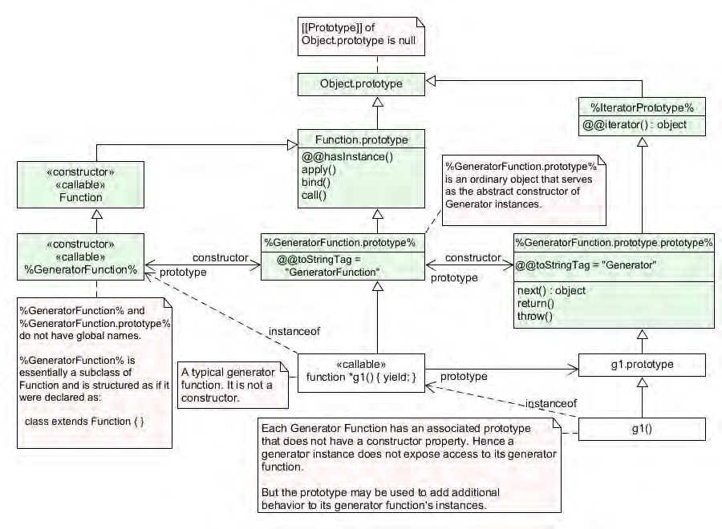

Table of Contents
- 写在最前面
- 待办
- 约定
- 1. 前言
- 2. 范围
- 3. 一致
- 4. 标准参考
- 5. 概述
- 6. 记号约定 Notational Conventions
- 7. ECMAScript Date Types and Values
- 8. 抽象操作
- 8.1. 类型转换
- 8.1.1. ToPrimitive(input[, preferredType])
- 8.1.2. ToBoolean(argument)
- 8.1.3. ToNumeric(value)
- 8.1.4. ToNumber(argument)
- 8.1.5. ToIntegerOrInfinity(argument)
- 8.1.6. ToInt32(argument)
- 8.1.7. ToUint32(argument)
- 8.1.8. ToInt16(argument)
- 8.1.9. ToUint16(argument)
- 8.1.10. ToInt8(argument)
- 8.1.11. ToUint8(argument)
- 8.1.12. ToUint8Clamp(argument)
- 8.1.13. ToBigInt(argument)
- 8.1.14. StringToBigInt(argument)
- 8.1.15. ToBigInt64(argument)
- 8.1.16. ToBigUint64(argument)
- 8.1.17. ToString(argument)
- 8.1.18. ToObject(argument)
- 8.1.19. ToPropertyKey(argument)
- 8.1.20. ToLength(argument)
- 8.1.21. CanonicalNumericIndexString(argument)
- 8.1.22. ToIndex(value)
- 8.2. 检测和匹配操作
- 8.2.1. RequireObjectCoercible(argument)（coerce强制）
- 8.2.2. IsArray(argument)
- 8.2.3. IsCallable(argument)
- 8.2.4. IsConstrutor(argument)
- 8.2.5. IsExtensible(O)
- 8.2.6. IsIntegralNumber(argument)
- 8.2.7. IsPropertyKey(argument)
- 8.2.8. IsRegExp(argument)
- 8.2.9. IsStringPrefix(p,q)
- 8.2.10. SameValue(x,y)
- 8.2.11. SameValueZero(x,y)
- 8.2.12. SameValueNonNumeric(x,y)
- 8.2.13. 抽象关系比较 <
- 8.2.14. 抽象相等比较 \=\=
- 8.2.15. 严格相等比较 \=\=\=
- 8.3. Object上的操作
- 8.3.1. MakeBasicObject(internalSlotsList)
- 8.3.2. Get(O,P)
- 8.3.3. GetV(V,P)
- 8.3.4. Set(O,P,V,Throw)
- 8.3.5. CreateDataProperty(O,P,V)
- 8.3.6. CreateMethodProperty(O,P,V)
- 8.3.7. CreateDataPropertyOrThrow(O,P,V)
- 8.3.8. DefinePropertyOrThrow(O,P,desc)
- 8.3.9. DeletePropertyOrThrow(O,P)
- 8.3.10. GetMethod(V,P)
- 8.3.11. HasProperty(O,P)
- 8.3.12. HasOwnProperty(O,P)
- 8.3.13. Call(F,V[,argumentsList])
- 8.3.14. Construct(F[,argumentsList[,newTarget]])
- 8.3.15. SetIntegrityLevel(O,level)
- 8.3.16. TestIntegrityLevel(O,level)
- 8.3.17. CreateArrayFromList(elements)
- 8.3.18. LengthOfArrayLike(obj)
- 8.3.19. CreateListFromArrayLike(obj[,elementTypes])
- 8.3.20. Invoke(V,P[,argumentsList])
- 8.3.21. OrdinaryHasInstance(C,0)
- 8.3.22. SpeciesConstructor(O, defaultConstructor)
- 8.3.23. EnumerableOwnPropertyNames(O, kind)
- 8.3.24. GetFunctionRealm(obj)
- 8.3.25. CopyDataProperties(target, source, excludedItems)
- 8.4. Iterator Objects上的操作
- 8.4.1. GetIterator(obj[,hint[,method]])
- 8.4.2. IteratorNext(iteratorRecord[,value])
- 8.4.3. IteratorComplete(iterResult)
- 8.4.4. IteratorValue(iterResult)
- 8.4.5. IteratorStep(iteratorRecord)
- 8.4.6. IteratorClose(iteratorRecord, completion)
- 8.4.7. AsyncIteratorClose(iteratorRecord, completion)
- 8.4.8. CreateIterResultObject(value, done)
- 8.4.9. CreateListIteratorRecord(list)
- 8.4.10. IterableToList(items[,method])
- 8.1. 类型转换
- 9. Syntax-Direted Operations 面向句法的操作
- 9.1. Scope Analysis 范围分析（我更倾向于将scope翻译为闭）
- 9.1.1. 静态语义：BoundNames
- 9.1.2. 静态语义：DeclarationPart
- 9.1.3. 静态语义：IsConstantDeclaration
- 9.1.4. 静态语义：LexicallyDeclaredNames
- 9.1.5. 静态语义：LexciallyScopedDeclarations
- 9.1.6. 静态语义：VarDeclaredNames
- 9.1.7. 静态语义：VarScopedDeclarations
- 9.1.8. 静态语义：TopLevelLexicallyDeclaredNames
- 9.1.9. 静态语义：TopLevelLexicallyScopedDeclarations
- 9.1.10. 静态语义：TopLevelVarDeclaredNames
- 9.1.11. 静态语义：TopLevelVarScopedDeclarations
- 9.2. Labels标签
- 9.3. 函数名引用
- 9.4. Contains
- 9.5. Miscellaneous杂七杂八（我觉得可以用其他来翻译）
- 9.1. Scope Analysis 范围分析（我更倾向于将scope翻译为闭）
- 10. 可执行代码与执行背景（执行上下文 Execution Contexts）
- 10.1. 环境记录 Environment Records
- 10.2. Realms 领
- 10.3. Execution Contexts执行背景
- 10.4. Jobs and Host Operations to Enqueue Jobs Job和主机对Job队列的操作
- 10.5. InitializeHostDefinedRealm()
- 10.6. Agents 施动者
- 10.7. Agent Clusters
- 10.7.1. 注意1 程序在不同的施动者间会通过不在规范内的方式公用内存。至少，
- 10.7.2. 注意2 集群中的施动者完全不必同时存活。如果A创造了B，然后结束A，B创建C，
- 10.7.3. 注意3 如果同一集群下施动者有不同的\[\[LittleEndian]]值，多字节数据的共用会
- 10.7.4. 注意4 前面限制的目的是规避一种情况，即某个施动者发生死锁或者饥饿，因为
- 10.7.5. 注意5 触发这种终结的例子：操作系统或者用户终止了在独立进程中运行的施动
- 10.7.6. 注意6 同一集群下的全部施动者在其AgentRecord的\[\[CandidateExecution]]字段共用
- 10.7.7. 注意7 施动者集群是一个规范机制，不对应任何ECMAScript实现的特定活。
- 10.8. Forward Progress 前进进程
- 10.9. Processing Modle of WeakRef and FinalizationRegistry Objects
- 10.10. ClearKeptObjects()
- 10.11. AddToKeptObjects(object)
- 10.12. CleanupFinalizationRegistry(finalizationRegistry)
- 11. Ordinary and Exotic Ojbects Behaviours 基本与奇异对象的行为
- 11.1. Ordinary Object Internal Methods and Internal Slots
- 11.1.1. \[\[GetPrototypeOf]]()
- 11.1.2. \[\[SetPrototypeOf]](V)
- 11.1.3. \[\[IsExtensible]]()
- 11.1.4. \[\[PreventExtensions]]()
- 11.1.5. \[\[GetOwnProperty]](P)
- 11.1.6. \[\[DefineOwnProperty]](P, Desc)
- 11.1.7. \[\[HasProperty]](P)
- 11.1.8. \[\[Get]](P, Receiver)
- 11.1.9. \[\[Set]](P, V, Receiver)
- 11.1.10. \[\[Delete]](P)
- 11.1.11. \[\[OwnPropertyKeys]]()
- 11.1.12. OrdinaryObjectCreate(proto[, additionalInternalSlotsList])
- 11.1.13. OrdinaryCreateFromConstructor(constructor, intrinsicDefaultProto[,
- 11.1.14. GetPrototypeFromConstructor(constructor, intrinsicDefaultProto)
- 11.1.15. RequireInternalSlot(O, internalSlot)
- 11.2. ECMAScript Function Objects
- 11.2.1. \[\[Call]](thisArgument, argumentsList)
- 11.2.2. \[\[Construct]](argumentsList, newTarget)
- 11.2.3. OrdinaryFunctionCreate(functionPrototype, sourceText, ParameterList, Body,
- 11.2.4. AddRestrictedFunctionProperties(F, realm)
- 11.2.5. MakeConstructor(F\[,writablePrototype\[,prototype]])
- 11.2.6. MakeClassConstructor(F)
- 11.2.7. MakeMethod(F, homeObject)
- 11.2.8. SetFunctionName(F,name \[,prefix])
- 11.2.9. SetFunctionLength(F, length)
- 11.2.10. FunctionDeclarationInstantiation(func, argumentsList)
- 11.3. 内建函数对象Built-in Function Objects
- 11.4. 内建奇异对象内部方法和占位
- 11.5. Proxy Object Internal Methods And Internal Slots
- 11.5.1. \[\[GetPrototypeOf]]()
- 11.5.2. \[\[SetPrototypeOf]](V)
- 11.5.3. \[\[IsExtensible]]()
- 11.5.4. \[\[PreventExtensions]]()
- 11.5.5. \[\[GetOwnProperty]](P)
- 11.5.6. \[\[DefineOwnProperty]](P, Desc)
- 11.5.7. \[\[HasProperty]](P)
- 11.5.8. \[\[Get]](P, Receiver)
- 11.5.9. \[\[Set]](P, V, Receiver)
- 11.5.10. \[\[Delete]](P)
- 11.5.11. \[\[OwnPropertyKeys]]()
- 11.5.12. \[\[Call]](thisArgument, argumentsList)
- 11.5.13. \[\[Construct]](argumentsList, newTarget)
- 11.5.14. ProxyCreate(target, handler)
- 11.1. Ordinary Object Internal Methods and Internal Slots
- 12. ECMAScript Language: Source Code
- 12.1. Source Text
- 12.1.1. Syntax
- 12.1.2. Static Semantic: UTF16EncodeCodePoint(cp)
- 12.1.3. Static Semantic: CodePointsToString(text)
- 12.1.4. Static Semantic: UTF16SurrogatePairToCodePoint(lead, trail)
- 12.1.5. Static Semantic: CodePointAt(string, position)
- 12.1.6. Static Semantic: StringToCodePoints(string)
- 12.1.7. Static Semantic: ParseText(sourceText, goalSymbol)
- 12.2. Type of Source Code
- 12.1. Source Text
- 13. ECMAScript Language: Lexical Grammer 词法
- 14. ECMAScript Language: Expressions 表达式
- 14.1. Identifiers
- 14.2. Primary Expression 基础表达式
- 14.2.1. Syntax
- 14.2.2. Supplemental Syntax 辅助句法
- 14.2.3. Semantics 语义
- 14.2.4. The this Keyword 关键词this
- 14.2.5. Identifier Reference
- 14.2.6. Literals 字面量
- 14.2.7. Array Initializer 数组初始化
- 14.2.8. Object Initializer
- 14.2.9. Function Defining Expressions
- 14.2.10. Regular Expression Literals
- 14.2.11. Template Literals 模板字面量
- 14.2.12. The Grouping Operator
- 14.3. Left-Hand-Side Expressions
- 14.3.1. Syntax
- 14.3.2. Supplemental Syntax
- 14.3.3. Static Semantics
- 14.3.4. Property Accessors
- 14.3.5. EvaluatePropertyAccessWithExpressionKey(baseValue, expression, strict)
- 14.3.6. EvaluatePropertyAccessWithIdentifierKey(baseVAlue, identifierName, strict)
- 14.3.7. The new Operator new操作符
- 14.3.8. Function Calls
- 14.3.9. The super Keyword
- 14.3.10. Argument List
- 14.3.11. Optional Chains
- 14.3.12. Import Calls
- 14.3.13. Tagged Tempaltes
- 14.3.14. Meta Properties
- 14.4. Update Expressions
- 14.5. Unary Operators
- 14.6. Exponentiation Operator
- 14.7. Multiplicative Operators
- 14.8. Additive Operators
- 14.9. Bitwise Shift Operators
- 14.10. Relational Operators 关系操作
- 14.11. Equality Operators
- 14.12. Binary Bitwise Operators
- 14.13. Binary Logical Operators
- 14.14. Conditional Operator ( ? : )
- 14.15. Assignment Operators
- 14.16. Comma Operator(,)
- 15. ECMAScript Language: Statements and Declarations
- 15.1. Syntax
- 15.2. Statement Semantics
- 15.3. Block
- 15.4. Declarations and the Variable Statement
- 15.5. Empty Statement
- 15.6. Expression Statement
- 15.7. The if Statement
- 15.8. Iteration Statements
- 15.9. The continue Statement
- 15.10. The break Statement
- 15.11. The return Statement
- 15.12. The with Statement
- 15.13. The switch Statement
- 15.14. Labelled Statements
- 15.15. The throw Statement
- 15.16. The try Statement
- 15.17. The debugger Statement
- 16. ECMAScript Language: Functions and Classes
- 16.1. 注意 各种ECMAScript语言元素引发ECMAScript函数对象（10.2）的创建。评估这些
- 16.2. Parameter Lists 参数列表
- 16.3. Function Definitions
- 16.3.1. Syntax
- 16.3.2. Static Semantics: Early Error
- 16.3.3. Static Semantics: FunctionBodyContainsUseStrict
- 16.3.4. Runtime Semantics: EvaluateFunctionBody
- 16.3.5. Runtime Semantics: InstantiateOrdinaryFunctionObject
- 16.3.6. Runtime Semantics: InstantiateOrdinaryFunctionExpression
- 16.3.7. Runtime Semantics: Evaluation
- 16.4. Arrow Function Definitions
- 16.4.1. Syntax
- 16.4.2. Supplemental Syntax
- 16.4.3. Static Semantics: Early Errors
- 16.4.4. Static Semantics: ConciseBodyContainsUseSctrict
- 16.4.5. Static Semantics: CoveredFormalsList
- 16.4.6. Runtime Semantics: EvaluateConciseBody
- 16.4.7. Runtime Semantics: InstantiateArrowFunctionExpression
- 16.4.8. Runtime Semantics: Evaluation
- 16.5. Method Definitions
- 16.6. Generator Function Definitions
- 16.7. Async Generator Function Definitions
- 16.8. Class Definitions
- 16.8.1. Syntax
- 16.8.2. Static Semantics: Early Errors
- 16.8.3. Static Semantics : ClassElementKind
- 16.8.4. Static Semantics : ConstructorMethod
- 16.8.5. Static Semantics : IsStatic
- 16.8.6. Static Semantics : NonConstructorMethodDefinitions
- 16.8.7. Static Semantics : PrototypePropertyNameList
- 16.8.8. Runtime Semantics : ClassDefinitionEvaluation
- 16.8.9. Runtime Semantics : BindingClassDeclarationEvaluation
- 16.8.10. Runtime Semantics : Evaluation
- 16.9. Async Function Definitions
- 16.10. Async Arrow Function Definitions
- 16.10.1. Syntax
- 16.10.2. Supplemental Syntax
- 16.10.3. Static Semantics: Early Errors
- 16.10.4. Static Semantics: CoveredAsyncArrowHead
- 16.10.5. Static Semantics: AsyncConciseBodyContainsUseStrict
- 16.10.6. Runtime Semantics: EvaluateAsyncConciseBody
- 16.10.7. Runtime Semantics: InstantiateAsyncArrowFunctionExpression
- 16.10.8. Runtime Semantics: Evaluation
- 16.11. Tail Position Calls
- 17. ECMAScript Language: Scripts and Modules
- 18. Error Handling and Language Extensions
- 19. ECMAScript Standard Built-in Objects
- 20. The Global Object
- 20.1. Value Properties of the Global Object
- 20.2. Function Properties of the Global Object
- 20.3. Constructor Properties of the Global Object
- 20.3.1. Array(…)
- 20.3.2. ArrayBuffer(…)
- 20.3.3. BigInt(…)
- 20.3.4. BigIntArray(…)
- 20.3.5. BigUint64Array(…)
- 20.3.6. Boolean(…)
- 20.3.7. DataView(…)
- 20.3.8. Date(…)
- 20.3.9. Error(…)
- 20.3.10. EvalError(…)
- 20.3.11. FinalizationRegistry(…)
- 20.3.12. Float32Array(…)
- 20.3.13. Float64Array(…)
- 20.3.14. Function(…)
- 20.3.15. Int8Array(…)
- 20.3.16. Int16Array(…)
- 20.3.17. Int32Array(…)
- 20.3.18. Map(…)
- 20.3.19. Number(…)
- 20.3.20. Object(…)
- 20.3.21. Promise(…)
- 20.3.22. Proxy(…)
- 20.3.23. RangeError(…)
- 20.3.24. ReferenceError(…)
- 20.3.25. RegExp(…)
- 20.3.26. Set(…)
- 20.3.27. SharedArrayBuffer(…)
- 20.3.28. String(…)
- 20.3.29. Symbol(…)
- 20.3.30. SyntaxError(…)
- 20.3.31. TypeError(…)
- 20.3.32. Uint8Array(…)
- 20.3.33. Uint8ClampedArray(…)
- 20.3.34. Uint16Array(…)
- 20.3.35. Uint32 Array(…)
- 20.3.36. URIError(…)
- 20.3.37. WeakMap(…)
- 20.3.38. WeakRef(…)
- 20.3.39. WeakSet(…)
- 20.3.40. Array(…)
- 20.4. Other Properties of the Global Object
- 21. Fundamental Objects
- 22. Numbers and Dates
- 23. Text Processing
- 24. Indexed Collections
- 24.1. Array Objects
- 24.2. TypedArray Objects
- 24.2.1. The %TypedArray% Intrinsic Object
- 24.2.2. Properties of the %TypedArray% Intrinsic Object
- 24.2.3. Properties of the %TypedArray% Prototype Object
- 24.2.4. Abstract Operations for TypedArray Objects
- 24.2.5. The TypedArray Constructors
- 24.2.6. Properties of the TypedArray Constructors
- 24.2.7. Properties of the TypedArray Prototype Objects
- 24.2.8. Properties of TypedArray Instances
- 25. Keyed Collections 有键的库藏
- 26. Structured Data
- 26.1. ArrayBuffer Objects
- 26.2. SharedArrayBuffer Objects
- 26.3. DataView Objects
- 26.4. The Atomics Object
- 26.4.1. 注意 ECMAScript的共享内存相关的编程和实现的指导信息，在最后一节的MemoryModel里。
- 26.4.2. Abstract Operations for Atomics
- 26.4.3. Atomics.add ( typedArray, index, value )
- 26.4.4. Atomics.and ( typedArray, index, value )
- 26.4.5. Atomics.compareExchange ( typedArray, index, expectedValue, replacementValue )
- 26.4.6. Atomics.exchange ( typedArray, index, value )
- 26.4.7. Atomics.isLockFree ( size )
- 26.4.8. Atomics.load ( typedArray, index )
- 26.4.9. Atomics.or ( typedArray, index, value )
- 26.4.10. Atomics.store ( typedArray, index, value )
- 26.4.11. Atomics.sub ( typedArray, index, value )
- 26.4.12. Atomics.wait ( typedArray, index, value, timeout )
- 26.4.13. Atomics.notify ( typedArray, index, count )
- 26.4.14. Atomics.xor ( typedArray, index, value )
- 26.4.15. Atomics [ @@toStringTag ]
- 26.5. The JSON Object
- 27. Managing Memory
- 28. Control Abstraction Objects
- 29. Reflection
- 29.1. The Reflect Object
- 29.1.1. Reflect.apply ( target, thisArgument, argumentsList )
- 29.1.2. Reflect.construct ( target, argumentsList [ , newTarget ] )
- 29.1.3. Reflect.defineProperty ( target, propertyKey, attributes )
- 29.1.4. Reflect.deleteProperty ( target, propertyKey )
- 29.1.5. Reflect.get ( target, propertyKey [ , receiver ] )
- 29.1.6. Reflect.getOwnPropertyDescriptor ( target, propertyKey )
- 29.1.7. Reflect.getPrototypeOf ( target )
- 29.1.8. Reflect.has ( target, propertyKey )
- 29.1.9. Reflect.isExtensible ( target )
- 29.1.10. Reflect.ownKeys ( target )
- 29.1.11. Reflect.preventExtensions ( target )
- 29.1.12. Reflect.set ( target, propertyKey, V [ , receiver ] )
- 29.1.13. Reflect.setPrototypeOf ( target, proto )
- 29.1.14. Reflect [ @@toStringTag ]n
- 29.2. Proxy Objects
- 29.3. Module Namespace Objects
- 29.1. The Reflect Object
- 30. Memory Model
- 30.1. 注意 本节提供了由SharedArrayBuffer的抽象操作引入的事件上的公理模型。需要强调的是，不同于本规范的
- 30.2. Memory Model Fundamentals
- 30.3. Agent Events Records
- 30.4. Chosen Value Records
- 30.5. Candidate Executions
- 30.6. Abstract Operations for the Memory Model
- 30.7. Relations of Candidate Executions
- 30.8. Properties of Valid Executions
- 30.9. Races
- 30.10. Data Races
- 30.11. Data Race Freedom
- 30.12. Shared Memory Guidelines TODO 810-812
- 31. A Grammer Summary 812-841
- 32. B Additional ECMAScript Features for Web Browsers 841-866
- 33. C The Strict Mode of ECMAScript 866-867
- 34. D Host Layering Points 867-868
- 35. E Corrections and Clarifications in ECMAScript 2015 with Possible Compatibility Impact 869-869
- 36. F Additions and Changes That Introduce Incompatibility with Prior Editions 869-872
- 37. G Colophon 873-873
- 38. H Bibliography 873-873
- 39. I CopyRight & Software License
写在最前面
失之毫厘，谬以千里。 本文仅作参考。请以原本规范为准。
待办
将来会使用LaTex进行处理。
约定
若干
表示一个或者多个
有限
表示零个、一个或者多个
可数
表示零个、一个、多个或者无限个
所有英文为原文内容
作为专用词汇表示特定含义，比如类型、参数、概念等。
领
表示realm
域
表示domain
规模
表示某数的模。或者在这里进行约定。数x的模就是x的绝对值|x|
性质
表示property
属性
表示attribute
List<some>
表示列表的元素有some特性。
相同值
表示两个值是同一个
构造范
表示constructor
库藏
表示collection
R域
表示R适用的所有值的集合
字位
一个二进制位
字节
octect 8个连续的二进制位。至于大小端，如果没有明确说明，就不考虑。
修圆
指用有限精度数字描述准确数字的处理过程。
活 artefact
人工造物
圈（juan）
表示scope
\*\*#N
表示名称为N的值的\*\*，例如绑定#N，表示名称为N的值的绑定。
Target.property是some
表示Target上有性质property，且其值是some
码型
表示production
承诺
表示promise
instantiate 和 intialize在这里都被翻译成初始化了，这是错误。
instantiate表示建立变量（实例化）。initialize表示建立变量并赋值，或者给 未赋值的变量赋值（初始化）。后期需要校订。
时标
代表UTC1970年1月1日0时0分0秒000毫秒
根据编译原理，大小端由其他编译层处理。
隐含的限制
术语是指在本规范内的术语。其他规范可能也会用到相同名称的术语，也作了相应定义，但是不是特指本规范 内的术语。
1. 前言
本ECMA标准定义了ECMAScript2021语言。这是第12版ECMAScript语言规范。从1997年第一版发布，ECMAScript 已经成长为世界最广法的通用编程语言。它最知名的用途是作为浏览器嵌入的语言，但是它也广泛用于服务器和 嵌入式应用。
ECMAScript基于几个先行技术，最有名的是JavaScript（NetScape）和JScript（Microsoft）。这个语言是 被Brendan Eich引入到NetScape的，最初出现在其公司的Navigator 2.0浏览器里。它出现在NetScape之后的 所有浏览器里，和Microsoft的Internet Explorer 3.0及之后的浏览器。
ECMAScript语言规范的开发是从1996年11月开始的。第一版ECMA规范是在1997年7月被Ecma大会通过。
1997版ECMA标准通过加速手续提交给ISO/IEC JTC 1来采纳，在1998年4月作为ISO/IEC 16262国际规范 被通过。1998年6月的ECMA大会第二版的ECMA-262以保持与ISO/IEC 16262一致。第一版与第二版的变动就是 排版方式。
第三版的标准引入了强力的正则表达式、更好的字符串处理、新的控制语句、try/catch异常处理、更贴切的 错误定义、数字输出格式和语言未来增长预期的微小变动。第三版的ECMAScript标准被ECMA大会于1999年12月 采纳，并在2002年6月发布为ISO/IEC 16262:2002。
在第三版发布后，ECMAScript连同WorldWideWeb被广泛采纳，ECMAScript成为编程语言，被有网页浏览器作为 基础来支持。第四版作了意义深远的工作。然而这些工作没有完成，也没有发布为第四版，但是部分内容被吸收 进第六版的开发工作。
第五版的ECMAScript（作为ECMA-262 5th发布）将其语言规范的解释作为浏览器实现的实际准则，并添加了对从 第三版开始的新特性的支持。这些特性包括访问性质、对象的反射创建与注入、性质属性的程序控制、额外的数组 操作函数、JSON对象编码格式支持、以及强化错误检查和程序安全的严格模式。第五版被ECMA大会于2009年12月 采纳。
第五版通过加速手续提交给ISO/IEC JTC 1来采纳，被通过为ISO/IEC 16262:2011国际规范。ECMAScript版本5.1 标准吸取了少量改进，与ISO/IEC 16262:2011一致。5.1版被ECMA大会于2011年6月采纳。
第六版工作的专注开发开始于2009年，同时第五版正在准备发行。然而，自从1999年第三版发布以来的显著体验和 语言增强的设计努力先于第六版。真情实感，第六版的完成是15年努力的巅峰。这一版的目标包括为大型程序提供 更好的支持，库创建和将ECMAScript作为其他语言的编译目标。它的部分主要增强包括模型、类定义、文法块 圈（scope）、遍历器和生成器、异步程序承诺、范式解构，和尾调用优化。内建的ECMAScript库被扩展，以便支持 更多的数据抽象，包括映射、集合、和二进制数值数组，还在字符串和正则表达式中支持了Unicode支持字符。这些 内建内容还可以通过子类进行扩展。第六版提供了正规的、可增长的语言和库增强的基础。第六版被大会于2015年 6月采纳。
ECMAScript 2016是基于TC39的按年发行收尾和开启开发进程的第一个ECMAScript版本。在GitHub上，一个基于 ECMAScript 2015源文档建立的简单文本源文档作为后续开发的基础。在此标准开发的那年，有成百计的获取请求 和问题被送交，表示有千计的问题修复、编辑修复和其他改进。另外若干软件工具被开发出来以帮助此努力，包括 Ecmarkup、Ecmarkdown和Grammarkdown。ES2016还包括支持了新的指数元算符，在Array.prototype上增加了一个 新的方法includes。
ECMAScript 2017引入了AsyncFunctions、SharedMemory和Atomics，以及一些小的语言和包增强、问题修复和 版本更新。Async函数通过提供承诺-返回函数句法改善了异步程序体验。SharedMemory和Atomics引入了新的内存 模型，允许多个施动者程序使用原子操作进行通讯，确保了即使在并行CPU上也有良好定义的执行顺序。还包括在 Object上新的静态方法：Object.values、Object.entries和Object.getOwnPropertyDescriptors。
ECMAScript 2018引入了对异步遍历的支持，通过AsyncIterator协议和异步生成器。还包括四个新的正则表达式 特性：dotAll标记、命名捕获、Unicode性质转义和后检断言。最后，他加入了对象剩余和展开性质。
ECMAScript 2019引入了少量新的内建函数：用于扁平数组在Array.prototype上的flat和flatMap，用于直接从 Object.entries返回值转换成新对象的Object.fromEntries，用良好命名的在String.prototype上的trimStart 和trimEnd替换广泛实现的非标准内建方法String.prototype.trimLeft和trimRight。另外它引入了少量句法和 语义的细微调整。句法调整包括可选catch参数，和允许U+2028（LINE SEPARATOR）与U+2029（PARAGRAPH SEPARATOR）在字符串字面量里以与JSON保持一致。其他的调整包括要求Array.prototype.sort是健壮排序，要求 JSON.stringify不管何种输入编码都返回合规UTF-8结果，明确Function.prototype.toString的要求，返回对应 的原始源文本或者标准占位内容。
ECMAScript 2020，第11版，为字符串引入了matchAll方法，产出一个由全局正则表达式产生的所有匹配对象的 遍历器；import()，用动态标记异步引入Module的句法；BigInt，支持任意精度整数工作的新数字基础量； Promise.allSettled，新的，不会短路的Promise组合器；globalThis，访问全局this值的通用途径；为模块内 提供了export * as ns from "module"句法；增长了for-in遍历顺序的标准；import.meta，在Module里主机流 行的对星，提供了此Module的上下文信息；还增加了两种语言特性，以改善处理"nullish"值（null或者 undefined）的工作：nullish coalescing，值选择操作符；和可选链，性质访问与函数调用操作符，如果访问或者 调用的值是nullish的，操作会短路。
本规范，第12版，引入了replaceAll方法，适用字符串上；Promise.any，Promise组合器，在某个值fulfilled时 短路；AggregateError，新的错误类型，表示一次过程上的多个错误；逻辑赋值操作（??=,&&=,||=）； WeakRef，用于不会组织垃圾回收的引用方式；和FinalizationRegistry，用于在目标对象被垃圾回收时，管理 清理操作执行的注册和注销；数字分割字面量（1000）；和Array.prototype.sort被调整成可靠的。
许多代表组织的个人在为本版开发和之前版本的ECMA TC39内制定了显著贡献。另外，一个活力四射的社区已经 合并了TC39的ECMAScript成果。本社区已经复核了多个草稿，提交了以千计bug报告，执行了实现体验，贡献了 测试用例，并培训世界范围的ECMAScript开发者社区。很不幸，不能在这里将为此成果贡献过的每个人和组织罗列 出来。
Allen Wirfs-Brock ECMA-262, Project Editor, 6th Edition
Brian Terlson ECMA-262, Project Editor, 7th through 10th Editions
Jordan Harband ECMA-262, Project Editor, 10th through 12th Editions
2. 范围
本标准定义了ECMAScript2021多用途编程语言。
3. 一致
一致的ECMAScript实现必须提供和支持本规范的全部类型、值、对象、性质、函数、 程序句法和程序语义。
一致的ECMAScript实现必须将源文本按照最新版本的Unicode标准和ISO/IEC 10646进行 翻译
一致的ECMAScript实现必须按照跟本规范兼容的最新版的ECMA-402提供应用编程接口（ API），支持编写能够适应被不同人类语言使用的不同语言和文化习惯的程序。
一致的ECMAScript实现可以提供本规范之外的类型、值、对象、性质和函数。特别是 一致的ECMAScript实现会提供本规范外的性质和性质的值，用于本规范描述的对象。
一致的ECMAScript实现会支持没有描述在本规范的程序和正则表达式。特别是一致的 ECMAScript实现支持的程序句法使用了在本规范12.6.2中标明的未来保留字。
一致的ECMAScript实现必须不能实现任何在17.1中列出的禁止扩展的扩展内容。
一致的ECMAScript实现必须不能重定义任何不是实现定义、实现近似或者主机定义的 内容。
一致的ECMAScript实现可以选择实现与否可选规范的子条款。任何被实现的可选规范 条款，其包含的所有行为都必须实现。本规范的任何可选规范条款使会用名词 "Normative Optional"标记出来（我用"：：可选规范"标记出来）
3.1. Example Clause Heading ：：可选规范
示例条款内容
4. 标准参考
下列引用文档是本文档应用必不可少的。对于标注日期的引用，只有应用提及的 版本。对于未标注日期的，应用最新版本的引用文档（包括其附录）。
ISO/IEC 10646 Information Technology — Universal Multiple-Octet Coded Character Set (UCS) plus Amendment 1:2005, Amendment 2:2006, Amendment 3:2008, and Amendment 4:2008, plus additional amendments and corrigenda, or successor
ECMA-402, ECMAScript 2015 Internationalization API Specification. https://ecma-international.org/publications/standards/Ecma-402.htm ECMAScript2015 国际化API规范。使数据按照当地习惯进行展示涉及的API的规范。
ECMA-404, The JSON Data Interchange Format. https://ecma-international.org/publications/standards/Ecma-404.htm JSON数据交互格式
5. 概述
本章节包含了非正式的ECMAScript语言的概述。
ECMAScript是一个面向对象的编程语言，用于在主机环境中计算和操作可计算对 象。这里定义的ECMAScript没有试图是计算机上自立的；实际上，既没有提供输入 外部数据的规范，也没有提供输出计算结果的规范。它期望ECMAScript程序的计算机 环境不仅会提供对象和其他本规范描述的特色，还会提供某些环境标准的对象， 对象的描述与行为都超出本规范期望的用于指明会提供某些可访问的性质和某些 被ECMAScript程序调用的函数的范围。
ECMAScript最初被设计作一个脚本语言，却变成了一个多用途的编程语言。所谓的 脚本语言是指用于操作、定制和自动执行已有系统特色的编程语言。在那些系统 中，有用的功能已经在用户界面了，脚本语言提供程序控制这些功能的机制。就这 种方式，已有系统是提及的用于提供完成脚本语言能力的对象和特色的主机环境。 脚本语言试图被专业或非专业程序员使用。
ECMAScript最初被设计为Web脚本语言，提供生动化浏览器网页和在客户端执行部分 服务端计算的机制。ECMAScript现在被用于在各种主机环境中提供核心脚本能力。 因此这部分各主机环境都有的核心语言（因此也与主机环境无关）被本文档规定。
ECMAScript的用途远超过简单的脚本，被用于广泛的不同系统和规模的编程任务。 因为ECMAScript用途的膨胀，其功能和特色也膨胀了。ECMAScript已经是一个完整多 用途特征的编程语言。
5.1. Web Scripting 网页脚本
网页浏览器为客户端计算提供ECMAScript HostEnvironment，包括，以实例方式，表述windows、 menus、pop-ups、dialog盒子、text区域、anchors、frames、history、cookies和input/output的 对象。因此，HostEnvironment提供了为事件附加代码的途径，焦点变更、页面和图片加载、卸载、 错误和忽略、选择、表单提交、鼠标事件。出现在HTML里的脚本代码和被展示的页面，是用户界面元素、固定 与计算的文本、以及图片的组合物。脚本代码响应用户的交互，不需要一个main程序。
网络服务器为服务端计算提供不同的HostEnvironment，包括表述requests、clients和files的对象； 锁定和分享数据的机制。通过一起使用浏览器端和服务器端脚本，对于一个Web应用的定制用户界面， 可能可以在终端与服务端之间分布计算。
每个支持ECMAScript的Web浏览器和服务器都提供自身的HostEnvironment，完成ECMAScript执行 环境。
5.2. Hosts and Implementations 主机与实现
为了帮助将ECMAScript整入HostEnviroment，本规范延缓了本规范外针对源码的某些工具（比如：抽象操作）的 定义，部分或者全部。本版本，本规范区分下列不同延迟。
实现是外部源码，后面在附件D中列出的工具的定义，或者被标记为实现定义或者实现近似。非正式的说法， 实现是指具体的制成品，比如特定的网页浏览器。
实现定义的工具是延缓的没有更多要求的外部源码的定义。本规范不对这部分行为做任何推荐，而且一致实现 在本规范的约束内自由选择任意行为。
实现近似的工具是延缓的推荐了理想行为的外部源码的定义。当一致实现在本规范的约束内自由选择任意行为时， 被鼓励争取近似这个理想目标。某些数学操作，比如Math.exp，就是实现近似的。
主机是外部源码，进一步定义了列在附录D中的工具，但是没有进一步定义实现定义或者实现近似的工具。非正式 的说法，主机是指所有实现的集合，比如全部网页的合集，其与本规范的接口按照附录D相同的途径。主机通常是 外部规范的，比如WHATWG HTML（ https://html.spec.whatwg.org ）。就是说，主机定义的工具通常在外部 规范中定义。
主机挂钩是在外部规范中全部或者部分定义的抽象操作。所有的主机挂钩必须是列在附录D里的。
主机定义工具是延缓在外部源码中定义的，没有在附录D中列出并限定。不是主机的实现可以提供主机定义工具的 定义。
主机环境是特指为全部主机定义工具的定义。主机环境通常包含，作为全局对象的主机定义性质，允许获取输入 和提供输出，的对象或者函数。
主机和实现可能通过此文定义的语言类型、规范类型、抽象操作、语法码型、内在对象、和内在符号，与本规范 结合。
5.3. ECMAScript Overview
后文是ECMAScript的概览，没有涉及语言的全部。本概览也不是标准的一部分。
ECMAScript是基于对象的：基础语言和主机工具都是通过对象提供的，ECMAScript程序是一群相互通信的对象。 在ECMAScript中，object是可数性质的库藏，每个性质的属性明确其用法-比如当Writable属性置为false，任何 试图对此性质执行赋值的ECMAScript代码都会失败。性质可以用于持有其他对象、基础值或者函数。基础值是 随后列出的内建类型：Undefined、Null、Boolean、Number、BigInt、String和Symbol的成员；对象是内建 类型：Object的成员；函数是可调用对象。联结在对象上，通过性质调用的函数称作方法。
ECMAScript定义了若干内建对象，绕过了ECMAScript实例的定义。这些内舰队向包含在全局对象里；这些对象是 语言运行时语义的基础，包括Object、Function、Boolean、Symbol和各种Error对象；表示和操作数值的对象 包括Math、Number和Date；文本处理对象String和RegExp；Array与九种不同的其元素是特定数字数据表示的 TypedArray是索引型库藏对象；键型库藏对象Map和Set实例；支持结构型数据的对象，包括JSON，以及 ArrayBuffer、SharedArrayBuffer和DataView实例；支持控制抽象的对象，包括生成器函数和Promise对象； 反射对象，包括Proxy和Reflect
ECMAScript还定义了一套内建操作符。ECMAScript操作符包括各种一元操作、乘法操作、加法操作、二进制移位 操作、关系操作、相等操作、二进制位操作、二进制逻辑操作、赋值操作、和逗号操作。
大型ECMAScript程序通过modules支持，其允许程序被拆分成多个语句和生命的序列。每个module（模块）显示标记 其使用的来自其他模块的声明，也可以将其声明提供给其他module使用。
ECMAScript句法故意类似Java句法。ECMAScript句法是宽松的，能够作为易用的脚本语言服务。比如，变量不需 要声明类型，而且性质不联结类型，函数定义定义不需要处在在调用他们的文本前。
5.3.1. Objects
尽管ECMAScript包含类定义的句法，ECMAScript对象不是完全类基的，比如C++、Smalltalk或者Java。对象可以 以多种方式创建，包括通过文法标记、或者通过创建对象的构造范，随后初始化其全部或者部分性质的初始值。 每个构造范是函数，有prototype性质，拥有实现基于原型的继承和性质共享。以new表达式使用构造范创建的对象； 比如，new Date(2009, 11)创建了一个新的Date实例。不以new来调用构造范，有不同后果，依赖构造范行为。 比如，Date()产生一个表示当前时间的字符串，而不是一个对象。
由构造范创建的对象有隐式的指向到构造范的"prototype"性质的引用（称作对象的原型）。进而原型可能还有 一个隐式引用执行一个非null对象作为其原型，如此反复；这被成为原型链。当引用指向对象的一个性质时，这个 引用是原型链上第一个拥有彼性质名的彼性质指向。换言之，检查直接提到的的一个对象是否有彼性质；如果有 这个性质名，性质指向就是应用指向；如果没有这个性质名，其原型对象作为检查目标；如此继续。
在类基的面向对象语言里，一般的，用实例承载状态，方法被类承载，继承的只是结构和行为。在ECMAScript里， 状态和方法被对象承载，而结构、行为和状态都被继承。
所有对象都不会直接特定包含其原型链共享性质和值的性质。图片1进行介绍。
Figure 1: Object/Prototype Relationships
CF是构造范
5.3.2. TODO [51-57]
5.3.3. 遗传性质 inherited property
5.4. 本规范的组织方式 Organization of This Specification
本规范的剩余部分如下组织：
条款5定义本规范的记号约定。
条款6到10定义了ECMAScript程序操作的运行时环境。
条款11到17定义了ECMAScript编程语言的实际行为，包括全部语言特色的句法编码 和执行语义。
条款18到28定义ECMAScript标准库。定义了所有ECMAScript程序可用的标准对象。
条款29描述了访问SharedArrayBuffer背景的内存和Atomicsd对象方法的内存一致性 模型
6. 记号约定 Notational Conventions
6.1. 句法与词法
6.1.1. 背景无关语法（context-free grammar 可能就是通用的语法描述约定）
"context-free grammar"由若干"productions"组成。每个码型有一个称为nonterminal的 抽象符号作为左支（left-hand side），由可数个nonterminal和terminal符号构成 的序列作为右支（right-hand side)。每个语法，terminal符号都由规定字母表构成。
"chain product"是只有一个"right-hand side nonterminal"和可数个"terminal" 构成的序列组成的码型。
一个语句从开始由仅一个区分出的称为"goal symbol"的"nontermimal"和一个给定 的语法描述（context-free grammar)构成。语句具体指明一个"language"，即一组可数 的"terminal symbol"序列（数学意义上的可数：有限的或无限的）。这个序列可以 通过将语句中所有的"production left-hand side nonterminal"替换为 "production right-hand side"的方式，递归获得。
6.1.2. 词汇与正则的语法
ECMAScript的"lexical grammar"在12章详解。本语法与它的"terminal symbols"的Unicode 编码一致，符合11.1定义的源码字符规则。定义了若干码型，从"goal symbol"开始有 InputElementDiv, InputElementTemplateTail, InputElementRegExp, InputElementRegExpOrTemplateTail，这些码型描述了如何将输入的字符码转换为 输入元素
除了空白符与注释的输入元素组成了ECMAScript的句法语法的"termial symbols"， 称为ECMAScript tokens。这些token是保留词、标识符、文本和ECMAScript语言符号。 同时换行符通常不被认为是token，尽管是输入元素流的一部分，引导进程自动插入 分好。简单的空白符和单行注释是被舍弃的，不会出现在句法语法的输入元素 流中。多行注释（就是/*…*/形式的注释，与占用几行无关）中如果没有换行符， 会被舍弃掉；如果含有一个或多个换行符，将被替换为一个换行符的，然后作为 语句语法输入元素流的一部分
ECMAScript的RegExp语法在22.2.1中给出。该文法还将源字符定义的编码点作为 "terminal symbols"其终结符。从"goal symbol Pattern"开始定义了若干码型描述了 如何将字符码转换为正则表达式。
词汇与正则语法的码型用两个冒号"::"作为分隔符号。词汇与正则语法共享部分 码型。
6.1.3. 数字语法
还有一种语法是将字符串转换成数字值。这个语法与词汇语法中处理数字的部分 内容相似。语法的"terminal symbol"是源码。在7.1.4.1中详细描述。
数字语法的码型用三个冒号":::"作为符号来标志。
6.1.4. 语句语法
ECMAScript的语句语法在13至16章给出。这语法有被词汇语法定义为 "terminal symbols"的"ECMAScript tokens"。它定义了一套码型，从两个目标符号" Script and Module"的某个开始，描述了token序列如何沟组成ECMAScript程序的 语句的正确的独立的组件。
当一个编码流被解析成ECMAScript的"Script"或者"Module"时，它先通过反复运用 词法语法转换成输入元素流，这个输入元素流在被解析成一个单独的语句语法的 运用。如果输入流的全部token不能被解析成一个单独的"goal nontermial Script 或 Module"，这个输入流就在语句语法上错了。
当解析成功后，构造出了一个"parse tree"，他是一个有根的树结构，每个节点 都是"Parse Node"。每个解析节点在语法上是一个"symbol"的实例，他代表一串从 那个"symbol"派生出的源文本。这个解析树的根节点，则代表全部的源文本，是解 析的"goal symbol"的实例。如果某个解析节点是一个"nonterminal"的实例，他同时也 是某个将其"nonterminal"作为"left-hand side"的码型的实例。而且他有可数的子元 素，每个子元素对应码型的"right-hand side"的一个"symbol"，每个子元素是解析 节点，是相应"symbol"的实例。
每次调用解析都是实例出新的解析节点，在每次解析间不重用节点，即使是同样 的源文本。解析节点当且仅当在相同解析调用中，同一个语法"symbol"的实例，代表 相同源文本串的时候才被认为是相同的解析节点。
- 备注1 多次解析相同字符串导致不同的解析节点。例如：
let str = "1 + 1"; eval(str) eval(str) 每次调用eval将str的值转换成ECMAScript源码，然后执行具有隔离的解析树的独立的 解析。这些树是截然不同的即使这些解析操作的源文本来自相同的字符值。
- 备注2 解析树是本规范的方式，实现没有必要一定用相似的数据结构
语句语法的码型使用一个冒号":"作为符号进行区别。
13-16章出现的句法语法不是被"ECMAScript Script or Module"正确接受全部的内容。 某些额外的"token"同样被正确接受，即，那些仅当分号放在特定位置（例如换行符 前）才被语法描述的"token"。此外，某些本语法描述的"token"序列，如果换行符 出现在某些“尴尬”位置后，就不被认为可接受的。
在某些场景内，为了规避歧义，句法语法使用笼统码型，也就是说允许"token"序列 不能组成有效的"ECMAScript Script or Module"。举例来说，这个技术被用在对象字面 量与对象结构模式上。在相应的案例中，提供了一个更严格的补充语法，用于进一 步限制这个可接受的"token"序列。典型的，有个"early error"规则会定义一个错误 条件如果"P不能覆盖N"，P是解析节点（普通的码型实例），而N是从补充来的 "nonterminal"。这样原本被P匹配的"token"序列被用N再次解析作为"goal symbol"。（ 如果N用了语法性质的参数，他们就会被设置成相同的值，如果P是起初就解析的） 如果"token"序列不能作为一个N的实例来解析，且没有"token"剩下，会导致错误发 生。
后来，算法会使用"N被P覆盖"语句访问这个解析的结果。既然任何解析失败会 被"early error"规则侦测到，这就总是一个解析节点（一个N实例对应一个给定P）。
6.1.5. 语法符号
terminal symbols用等宽加黑（这里我也不知道如何表示）字体表示，无论是在语法 码型还是在文档规范里，只要文字直接表示一个terminal symbol。这会像所写的一样 出现在脚本。以这种方式指明的全部终端符代码符都被认为是恰当的Unicode编码， 包含基本的拉丁字符，而不是那些在Unicode范围内相似外形的编码。终端符不能用 \UnicodeEscapeSequence表示
nonterminal用斜体表示。一个nonterminal（其实就是码型）的定义以跟随若干冒号 的名称开始介绍。冒号的数量表明码型属于那种语法。本码型的若干可替换的 "right-hand sides"跟随在下一行。比如一个语句定义： WhileStatement: while ( Expression ) Statement 声明了WhileStatement nonterminal表示while token、(、一个Exression、)、一个Statement 组成的序列。Expression和Statement上发生他们自己的nonterminal。再举一个语句定义 的例子： ArgumentList: AssignmentExpression ArgumentList , AssignmentExpression 声明了ArgumentList可能表示一个单独的AssignmentExpression或者一个由一个 ArgumentList、,、一个AssignmentExpression构成的序列。这个ArgumentList定义是递归 的，因为它的定义需要本身。于是ArgumenList可以包含若干参数，参数用,分隔， 每个参数表达式就是AssignmentExpression。这种nonterminal的递归定义很常见。
下标后缀opt，出现在terminal或nonterminal后，声明一个可选标志。这种包含可选 标志的替换实际是指明两种right-hand sides，一种是缺失可选元素的，一种是包含 可选元素的。如下所示： VariableDeclaration: BindingIdentifier Initializeropt 是下列定义的简便缩写： VariableDeclaration: BindingIdentifier BindingIdentifier Initializer ，更进一步： ForStatement: for ( LexicalDeclaration Expressionopt ; Expressionopt ) Statement 是下列定义的简便缩写： ForStatement: for ( LexicalDeclaration ; Expressionopt ) Statement for ( LexicalDeclaration Expression ; Expressionopt ) Statement 是如下的缩写： ForStatement: for ( LexicalDeclaration ; ) Statement for ( LexicalDeclaration ; Expression ) Statement for ( LexicalDeclaration Expression ; ) Statement for ( LexicalDeclaration Expression ; Expression ) Statement 所以，在这个例子里，noterminal ForStatement有四个可替换的right-hand sides
码型可以通过增加"[parameters]"形式的标注的方式参数化，这个标注后缀在一个 码型定义的nonterminal标志上。其中"parameters"可以一个名称或者用都号分隔的 名称列表。一个参数化的码型是一套通过在被参数化的nonterminal symbol后拼接 下划线和参数名称的方式的所有组合的速记。例如： StatementList_[Return]: ReturnStatement ExpressionStatement 是下列定义的简便缩写: StatementList: ReturnStatement ExpressionStatement StatementListReturn: ReturnStatement ExpressionStatement ，更进一步有： StatementList_[Return, In]: ReturnStatement ExpressionStatement 是如下的缩写： StatementList: ReturnStatement ExpressionStatement StatementListReturn: ReturnStatement ExpressionStatement StatementListIn: ReturnStatement ExpressionStatement StatementListReturnIn: ReturnStatement ExpressionStatement 多个参数产生的码型组合，不全是完整语法定义需要的。
涉及到码型right-hand side的nonterminal也同样可以使用参数。例如： StatementList: ReturnStatement ExpressionStatement_[+In] 等价于： StatementList: ReturnStatement ExpressionStatementIn 而 SatementList: ReturnStatement ExpressionStatement_[~In] 等价于： SatementList: ReturnStatement ExpressionStatement
一个nonterminal引用可能同时包含参数列表和"opt"后缀。例如: VariableDeclaration: BindingIdentifier Initializer_[+In]opt 是下面声明的缩写： VariableDeclaration: BindingIdentifier BindingIdentifier InitializerIn
在一个right-hand side nonterminal引用的参数上增加?前缀，表示这个参数是否 出现在依赖于是否出现在当前码型的left-hand side标识上。例如： VariableDeclaration_[In]: BindingIdentifier Initializer_[?In] 是下面声明的缩写： VariableDeclaration: BindingIdentifier Initializer VariableDeclarationIn: BindingIdentifier InitializerIn
如果right-hand分支上含有前缀"[+parameter]"，那么这个分支仅在这个参数名出现 在其码型的nonterminal标识上时可用。与之相反"[~parameter]"，则在其码型的 nonterminal标识上不含有参数名时，参数分支可用。例如： StatementList_[Return]: [+Return]ReturnStatement ExpressionStatement 是下面声明的缩写： StatementList: ExpressionStatement StatementListReturn: ReturnStatement ExpressionStatement ，再者： StatementList_[Return]: [~Return]ReturnStatement ExpressionStatement 是下面声明的缩写： StatementList: ReturnStatement ExpressionStatement StatementListReturn: ExpressionStatement
当词汇one of跟随在语法定义的冒号":"后时，表明随后若干行的没给terminal标识 都是一个可选定义。例如，ECMAScript的词法语法包含码型： NonZeroDigit:: one of 1 2 3 4 5 6 7 8 9 这仅仅是下面声明的简写： NonZeroDigit:: one of 1 2 3 4 5 6 7 8 9
如果短语"[empty]"出现在码型的right-hand side中，表明码型的right-hand side没有 任何terminal或者nonterminal
如果短语"[lookahead=seq]"出现在码型的right-hand side，表明这个码型可能仅用在 这个token序列seq是随后的token序列的前置代号，也就是说随后的token序列以seq起始。 类似的"[lookahead∈set]"，其中set是一个有限的非空的token序列的集合，表明这个 码型仅在set中的某些元素是随后token序列的前置代号。为了方便这个集合可以被写 成一个nonterminal，这表示，这个nonterminal展开为这个集合的全部token序列。如果 这个nonterminal可以被展开成无穷的不同token序列，那他被认为是一个编者的错误。
- 就是写错了。
有些情况需要反向定义。"[lookahead≠seq]"表明码型仅在seq不是随后token序列的 前置代号时才可能被采用，"[lookahead∉set]"表明仅在没有set中的元素是随后的token 序列的前置代号时码型才会被采用。
举例说明，前置定义： DecimalDigit:: one of 0 1 2 3 4 5 6 7 8 9 DecimalDigits DecimalDigit DecimalDigits DecimalDigit 定义： LookaheadExample:: n [lookahead ∉ {1, 3, 5, 7, 9}] DecimalDigits DecimalDigit [lookahead ∉ DecimalDigit] 会匹配n跟随若干偶数或者仅一位数字形式的源文本。
需要注意这些短语被用在语句语法的时候，可能无法准确的识别跟随的token序列 ，因为确定后续的token需要知道哪个词法goal symbol在随后的位置使用。因此，如果 这些短语被用在句法语法时，会被认为是编者的错误，因为如果一个token序列seq 出现在lookahead限制（包括作为一组序列的一部分）里，如果要用的词法goal symbol 是不定的无论seq是否是结果token序列的前置代号。
如果短语"[no LineTerminator here]"出现在语句语法的码型的right-hand side，表明 这个码型是一个被限制的码型，他不可以被用在那些LineTerminator出现在指定位置 的输入流。例如码型： ThrowStatement: throw [no LineTerminator here] Expression; 指明这个码型不能用在LineTerminator出现在throw token与Expression之间的输入流上。
除非LineTerminator是被限制码型明确禁止的，任意个LineTerminator可以在输入元素 流里任何两个连续的token间出现，不影响这个脚本的合理性。
当在词法与数字码型出现在一个多码的token中时，这表示对应的代码序列要构成 一个对应的token。
码型right-hand有可能会用短语"but not"来限制某种展开，表明不包含这种展开。例 如码型： Identifier:: IdentifierName but not ReservedWord 意味着nonterminal Identifier可以是被那些提供的编码不能替换为ReservedWord的 IdentifierName替换。
- 简单来说就是集合IdentifierName - 集合ReseredWord
最后有少些nonterminal被描述短语"sans-serif"描述的标识难以列举所有的选项： SourceCharacter:: any Unicode code point
6.2. 算法约定
本规范经常使用若干列表指明算法步骤。这些算法被用于精确指明ECMAScript 语言结构的需要语义。算法不是意图暗示任何实现技术。事实上，鼓励用更有效 的算法实现给定的特性。
算法可能被用一个有序的、逗号分隔的别名序列参数化，这些参数名会被用在 算法步骤里，代表在相应位置传进来的数据。可选的参数被方括号包含（如 [,name]），但是在算法步骤上没有差异。剩余形式的参数需要在参数列表的末端， 以省略号开始（,…name）。剩余形式的参数捕获在必须参数和可选参数后的提供 的所有参数放到一个List中。如果没有这种额外的参数，这个List是空的。
算法步骤可能需要再分为有序的子步骤。子步骤是缩进的，并可能继续拆分到 缩进的子步骤中。第一层用数字标记步骤，第一层的子步骤（第二层）用小写字母 标记，第二层的子步骤（第三层）用小写的罗马数字标记。如果还有更多的层级 需要标记那就从第四层重复这个规则。例如：
- Top-level step
a. Substep
b. Substep
i. Subsubstep
ii.Subsubstep
- Subsubsubstep a. Subsubsubsubstep i. Subsubsubsubsubstep
步骤或者子步骤会使用"if"表明本步骤需要的条件。这时只有条件是true是，这个 步骤才会被采用。如果步骤或者子步骤用"else"开始，这表明当之前同级"if"过程得 到相反结果时，此步骤才会被采用。
步骤会有迭代的子步骤。
以"Assert"/"断言"开始的步骤认定为此算法的恒定条件。这种声明被用于明确的 算法条件，否则就是内含的条件。并没有增加额外的语义要求，因此也无需实现 检查。他们只是让算法清晰。
算法步骤会用"Let x be someValue"的形式定以一些别名。这些别名与"x"和 "someValue"一样是某些根本数据的引用，一个修改了内容，别的也都可见。算法步骤 想避免这种引用行为时，会使用"Let x be a copy of someValue"来浅复制someValue。
一旦声明了别名，后续任意步骤都可以引用此别名，但是之前的步骤不行。别名 可以通过"Set x to someOtherValue"的方式修改别名指向。
6.2.1. 抽象操作
为了便利一些算法在本规范的不同部分使用，称这些算法为抽象操作，被命名和 定义为带参数的函数形式，以便于被其他算法用名称的方式引用。抽象操作通常的 引用方式是函数调用，类似OperationName(arg1, arg2)。在一些class-like的规范抽象 的部分抽象操作被当作多态处理的方法。这些方法样子的抽象操作一般引用方式是 someValue.OperationName(arg1, arg2)。
6.2.2. 面向句法的操作
面向句法的操作是一个命名的操作，包含若干算法，每个算法联系若干ECMAScript 语法码型。码型还有多个备选定义，但是每个备选有明确的算法。当算法联结到 语法码型后，算法可能会通过参数的方式引用码型备选的终结和非终结符。用这种 方式时，非终结符指向一个从源文本解析出的实际的备选定义。语法码型匹配的源 文本是源码的一部分，这部分源码从参与匹配的第一个终结符开始，结束到参与匹 配的最后一个终结符结束。
当算法联结到码型备选，这个备选一般不会有任何"[]"，这种语法注解。这种注解 应该仅用于句法识别备选，而且不能对联结的备选的语义有任何作用。
在下面的算法中的1、3、4约定的步骤中，带着解析节点和可选的参数，面向句法 的操作会被调用：
- 让status是SomeNonTerminal的SyntaxDirectedOperation
- 让someParseNode是某些源码的解析
- 执行someParseNode的SyntaxDirectedOperation
- 传递value作为参数，执行someParseNode的SyntaxDirecteOperation
除非显式声明，否则所有的链环码型对于每个操作都有一个隐式定义，这个会被 当作码型的left-hand side的非终止符。如果有上述非终止符，这个隐式的定义就简 单的重复提交相同的操作和相同的参数，给链环码型的right-hand side非终止符，然 后返回这个结果。比如，假设算法有一步骤是：“返回评估Block的结果”，就会有 这样的一个码型： Block: { StatementList } 但是评估操作不会联结算法与码型。这样，评估操作隐式的包含如下形式的联结： Runtime Semantics: Evaluation Block: { StatementList }
- 返回StatementList的评估结果。
6.2.3. 运行语义
描述只在运行时被调用的语义的算法称为运行语义。运行语义被定义为抽象操作 或者面向语句的操作。都会返回一个结束记录。
- 隐式结束值
本规范的算法通常隐式的返回结束记录，其Type是normal。除非语境中有其 他明显的形式，算法语句才会返回一个不是结束记录的值，例如：
- Return "Infinity"
意味着同下：
- Return NormalCompletion("Infinity")
然而，如果return语句的表达式的值是一个结束记录的构造语句，返回结束记录的 结果。如果是抽象操作，返回语句就是简单返回抽象操作产生的结束记录。
抽象操作Completion(completionRecord)用于强调返回之前计算的结束记录。Completion 抽象操作接受一个参数completionRecord，按照下述步骤执行：
- 断言completionRecord是结束记录
- 将completionRecord作为这个抽象操作的结束记录返回。
算法步骤中"return"语句没有值，意味着：
- 返回NormalCompletionRecord(undefined)
如果完结记录不是意外完结，在语境中又没有明确要求是完整的完结记录，那么 任何完结记录的引用的值是指完结记录的Value字段。
- 投掷异常
算法会投掷异常，例如：
- Throw a TypeError exception
意味着：
- Return ThrowCompletion(a newly created TypeError object)
- 意外就返回
算法步骤有如下或等价描述：
- ReturnIfAbrupt(argument)
意味着：
- 如果argument是一个意外完结，返回argument
- 否则如果argument是一个完结记录，以argument的Value覆盖argument
算法步骤有如下或等价描述：
- ReturnIfAbrupt(AbstractOperation())
意味着：
- 让hygienicTemp是AbstractOperation()
- 如果hygienicTemp是意外完结，返回hygienicTemp
- 否则如果hygienicTemp是完结记录，以hygienicTemp的Value覆盖hygienicTemp
这里hygienicTemp是短暂的，仅被ReturnIfAbrupt适用的步骤可见。
算法步骤有如下或等价描述：
- 让result是AbstractOperation(ReturnIfAbrupt(argument))
意味着：
- 如果argument是意外完结，返回argument
- 如果argument是完结记录，以argument的Value覆盖argument
- 让result是AbstractOperation(argument)
- 意外就返回的简写
调用的抽象操作和面向句法的操作有前缀"?"，表明意外就返回被用在计算完结记 录上。例如步骤：
- ?OperationName()
等价于：
- ReturnIfAbrupt(OperationName())
类似的，方法运用形式的步骤：
- ?someValue.OperationName()
等价于：
- ReturnIfAbrupt(someValue.OperationName())
类似的，前缀"!"被用于表明后续调用抽象或面向句法的操作绝对不会返回一个意 外完结，而且完结记录的Value备用作操作的返回值。例如步骤：
- 让val是!OperationName()
等价于如下步骤：
- 让val是OperationName()
- 断言val不是意外完结
- 如果val是完结记录，让val的Value覆盖val
运行语义的面向句法的操作调用使用!和?这种前缀简写：
- Perform !SyntaxDirectedOperation of NonTerminal
6.2.4. 静态语义
上下文无关语法没有足够的能力表达定义在被评估的Script或Module的输入元素流的 所有规则。在这些情况下，需要额外的规则来表达ECMAScript算法约定或者文法要 求。这种规则总是联结到一个语法码型，被称作码型的静态语义。
静态语义规则有名字，通常使用算法定义。命名的静态语义规则联结到语法码型， 码型有多个备选定义，每个备选针对提供的命名的静态语法规则有明确的算法。
一类特殊的静态语法规则是前期错误规则。前期错误规则定义了前期错误条件，联 结到特定的语法码型。大多数的前期错误的评估不是在本规范的的算法内被显示调用 的。一个一致实现必须，在首次评估Script或Module前，校验Script或者Module解析的产 出的所有前期错误规则。任何前期错误规则被违反，这个Script或者Module就是无效的 且不能被评估。
6.2.5. 数学操作
本规范给各种数字值相应的引用方式：
- 数学值 Mathematical values: 任意实数，作为默认数字类型
- 扩展数学值 Extended mathematical values: 包含+∞和-∞的Mathematical values
- Numbers: IEEE 754-2019双精度浮点数值
- BigInts: ECMAScript值准确表示任意有限整数
本规范的语言中，使用下标后缀明确各种不同数字类型的数值。下标F表示浮点 数，下标Z表示BigInt，不带下标则是数学值。
数学操作符如：+、*、=和≥指那些与运算符一致的操作。就是如果被提供了数学 值，这些操作符指的就是那些常用的数学运算。如果提供了Numbers，这些操作符指 的就是IEEE 754-2019内相应的操作。如果被提供了BigInt，这些操作符指将BigInt转 换为数学值后再应用常用的数学运算。
通常，在本规范引用数字值的时候，例如短语"the length of y"或者"the integer represented by the four hexadecimal digits …"，没有任何显式的数字类型声明，这个 短语表示的是数学值。短语需要显示声明使用的是指Numbers或者BigInt，例如，"the Number value for the number of code points in …"或者"the BigInt value for …"。
没有定义含有混合类型运算（比如Numbers与数学值）的数字操作符，应当被认为 是本规范的编辑错误。
本规范中绝大多数数值使用十进制；有时会是Ox跟随0-9或和A-F的形式的16进制 数。
本规范中如果使用integer术语，除非另有声明，指的是整数集上的数学值。如果 是integer Number术语，指的是其数学值在整数集上的Numbers。
本文档里数学值与Numbers或BigInt之间的转换总是显式的。从数学值或者扩展数 值到Numbers的转换被明示为"the Number value for x"或者F(x)，在6.1.6.1有明确定义。 从整数x到BigInt的转换被明示为"the BigInt value for x"或者Z(x)。从Numbers或 者BigInt到数学值的转换被明示为"the mathematical value of x"或者R(x)。+0和-0的数 学值是数学值0。无穷的数学值没有定义。有限值x的扩展数学值x就是x的有限数学 值，+∞和-∞依次是+∞F和-∞F的值。NaN没有定义的数学值。
数学函数abs(x)产生x的绝对值，如果x<0，就是-x否则就是x本身。数学函数min(x1, x2,…,xN)产生x1到xN中数学意义上最小的。数学函数max(x1,x2,…,xN)产生x1到xN中 数学意义上最大的。这些数学函数的定义域是扩展数学值。
"x modulo y"（y是有限的非零的）记法，计算一个与y（或者0）同号的k，满足 abs(k) < abs(y)且x-k = q * y，其中q是整数值。
短语"将x局限在lower和upper间的结果" 短语"the result of clamping x between lower and upper"（x是扩展整数值，lower和 upper是数学值，而且lower≤upper），如果x<lower，产生lower，如果x>upper，产生 upper，其他产生x。
数学函数floor(x)产生不超过x的最大的整数，如果x是+∞，就是最接近+∞的整数。
数学函数min,max,abs,floor没有为Numbers和BigInt定义，任何非数学值应用了这些 方法，都是一个编辑错误。
6.2.6. 值记法
本规范中，ECMAScript语言值用粗体显示。例如null，true或者"hello"。这些区别于 更长的ECMAScrpit代码序列比如：Function.prototype.apply或者let n = 42;
本规范内部的，不能被ECMAScript代码直接察觉的值用sans-serif字体表示。例如， 完结记录的Type字段的值像normal、return、或者throw。
7. ECMAScript Date Types and Values
本规范的算法操作的值都有一个联结的类型。可能的值类型在本条款确定。Type 进一步细分为ECMAScript语言的类型和规范的类型。
在本规范，记号"Type(x)"用于简化"the type of x"，其中type指本条款定义的 ECMAScript语言的类型和规范的类型。"empty"术语用于声明一个值时，等于说"no value of any type"
7.1. 用于ECMAScript语言的类型
ECMAScript语言的类型与ECMAScript语言编写的ECMAScript程序操作的值一致。ECMAScript 语言的类型有Undefined、Null、Boolean、String、Symbol、Number、BigInt和Object。 ECMAScript语言的值必然是被ECMAScript语言类型描述的。
7.1.1. Undefined类型
Undefined类型就一个值，即undefined。任何变量没有被赋值前都有undefined值。
7.1.2. Null类型
Null类型就一个值，即null。
7.1.3. Boolean类型
表示逻辑实体的Boolean类型有两个值，即true和false。
7.1.4. String类型
String类型是所有0到253-1个16位二进制无符号数（元素）构成的有序序列的集 合。在运行中的ECMAScript程序中String类型用于表示文本数据，这种情景下每个 String元素被当作UTF-16的编码单元值。在序列中，每个元素被认为占据一个位置。 位置使用非负整数索引。第一个元素（如果有）索引是0，随后元素（如果有）是1， 依次类推。String的长度就是他含有的元素数量。空String长度是0，因此也就没有元 素。
不会翻译String内容的ECMAScript操作不提供任何延伸语义。翻译String值的操作把 每个元素当作UTF-16编码单元。然而ECMAScript不会限制这些编码单元的值或者关系， 所以将String内容作为Unicode编码单元翻译的操作必须考虑从错误格式的自序列。 这些操作需要对每个在[0xD800,0xDBFF]区间的编码单元（在Unicode标准中，作为首 位，或者通用的说法高位编码单元）和每个在[0xDC00,0xDFFF]区间的编码单元（被定 以为尾位，或者通用的说法低位编码单元）依据如下规则提供特殊的处理：
- 一个编码单元既不是首位也不是尾位，按照原本值翻译。
- 有两个编码单元的序列，如果第一个编码单元c1是首位，第二个编码单元c2是尾
位，这就是一个编码对，需要按照一个编码点进行翻译，编码点的值是 (c1 - 0xD800)*0x400+(c2-0xDC00)+0x10000
- 如果编码单元是首位或者尾位，但是按照编码对出现，就按照原本值翻译。
- 我觉得在组织编码时，这里有个注意事项，就是需要连续独立显示首位和尾位
时，中间需要增加隔离符号。
函数String.prototype.normalize(见于22.1.3.13)备用显式的规范String值。 String.prototype.localeCompare(见于22.1.3.10)内部规范String值，但是其他操作不会在 操作内容上隐式的规范String值。只有那些显式指明是语言或者地域敏感的操作码型 语言敏感的结果。
- 这种设计的深层原因是让String的实现尽可能简单和高效。如果ECMAScript源文本
是C规范的，字符串原文被确保是规范的，只要没有包含任意的Unicode。
本规范里，短语"the string-concatenation of A,B,…"（每个参数都是String值、编 码单元、或者编码单元序列），表示按照参数顺序依次拼接参数的编码单元序列形 成的编码单元序列的String值。
短语"the substring of S from inclusiveStart to exclusiveEnd"（S是一个编码单元序列 的String值，inclusiveStart和exclusiveEnd是整数），表示S单元序列上[inclusiveStart, exclusiveEnd)区间（如果inclusiveStart==exclusiveEnd，会是空集）上的编码单元的 String值。如果缺省了"to"，S的长度作为exclusiveEnd。
- StringIndexOf(string, searchValue, fromIndex)
抽象操作StringIndexOf使用参数string（String值）,searchValue（String值）和 fromIndex（非负整数）。被调用时按照下列步骤执行：
- Assert：Type(string)是String
- Assert：Type(searchValue)是String
- Assert：formIndex是非负整数
- 让len是string的长度
- 如果searchValue是空String，而且fromIndex≤len，返回fromIndex
- 让searchLen是searchValue的长度
- 每个从fromIndex开始到的i，且i≤len-searchLen的整数，按照升序依次执行 a. 让candidate是substring of string from i to i+searchLen b. 如果candidate与searchValue有相同的编码序列，返回i
- 返回 -1
- 注意 如果searchValue而且fromIndex不大于string的长度时返回fromIndex。这用
空String可以在string的任何位置被找到。
- 如果fromIndex > string的长度，算法返回-1
7.1.5. Symbol类型
Symbol类型是所有可以被用于Object属性的键，且不是Sring值的集合。
每个Symbol值是唯一且无法修改的。
每个Symbol值不可修改的联结到一个被称为Description的值，undefined或者是String 值。
- 既有Symbols
既有symbol是内置的Symbol值，用于显式引用本规范的算法。他们通常被用于属性 的键，对应的属性值作为本规范的算法的扩展点。除非特殊说明，所有的既有symbol 在全部领下可用。
本规范内，既有symbol使用@@name形式的标注来引用，name是下表的值。
Specification Name Description Value and Purpose @@asyncIterator "Symbol.asyncIterator" 为对象返回一个默认的AsyncIterator方法。被语句for-await-of语义调用 @@hasInstance "Symbol.hasInstance" constructor对象识别一个对象是否是自身实例的方法。被instanceOf操作符调用 @@isConcatSpreadable "Symbol.isConcatSpreadable" 属性值是Boolean。如果true，表明对象应该被Array.prototype.concat展平为其数组元素 @@iterator "Symbol.iterator" 为对象返回默认Iterator的方法。被for-of语句的语义调用。 @@match "Symbol.match" 正则表达式用于匹配字符串的方法。被String.prototype.match方法调用 @@matchAll "Symbol.matchAll" 正则表达式返回一个遍历器的方法，遍历器提供表达式匹配字符串的结果。被String.prototype.matchAll方法调用 @@replace "Symbol.replace" 正则表达式替换字符串上匹配的子串的方法。被String.prototype.replace方法调用 @@search "Symbol.search" 正则表达式返回字符串上匹配的位置索引。被String.prototype.search方法调用 @@species "Symbol.species" 其属性值是constructor函数，用于创建衍生对象 @@split "Symbol.split" 正则表达式用于将字符串在匹配的位置索引上进行拆分的方法。被String.prototype.split方法调用 @@toPrimitive "Symbol.toPrimitive" 用于将对象转换为基础值的方法。被ToPrimitive抽象操作调用 @@toStringTag "Symbol.toStringTag" 属性值是String值，用于创建对象的默认描述。被内置方法Object.prototype.toString访问 @@unscopables "Symbol.unscopables" 属性值是对象，对象自有或继承的属性名称是被联结对象绑定的with环境排除的属性名
7.1.6. 数值类型
ECMAScript有两种内置的数值类型：Number和BigInt。本规范任意数值类型T包含乘法 标识记为T::unit。本规范类型也有跟随的抽象操作，就像规范名称op上的给定操作 记为T::op。所有参数是T。"Result"列显示返回的类型，如果调用操作可能会返回意 外完结，"Result"会有标示。
| 调用概要 | 源文件示例 | 调用者的评估语义所属 | Result |
| T::unaryMinus(x) | - x | Unary - Operator | T |
| T::bitwiseNOT(x) | ~ x | 按位非操作符( ~ ) | T |
| T::exponentiate(x, y) | x ** y | 幂运算操作和Math.pow(base, exponent) | T,可能会投掷范围异常 |
| T::multiply(x, y) | x * y | 乘法算符 | T |
| T::divide(x, y) | x / y | 乘法算符 | T,可能会投掷范围异常 |
| T::remiander(x, y) | x % y | 乘法算符 | T,可能会投掷范围异常 |
| T::add(x, y) | x \+\+, \+\+ x, x + y | 后自增算符，前自增算符和加法算符 | T |
| T::subtract(x, y) | x–, –x, x - y | 后自减算符，前自减算符和减法算符 | T |
| T::leftShift(x, y) | x << y | 左移算符（<<） | T |
| T::signRightShift(x, y) | x >> y | 有符号右移算符（>>） | T |
| T::unsignRightShift(x, y) | x >>> y | 无符号右移算符（>>>） | T，可能会投掷类型错误 |
| T::lessThan(x, y) | x < y, x > y, x <= y, x >= y | 关系算符，通过抽象关系比较 | Boolean或者undefined（无序输入） |
| T::equal(x, y) | x \=\= y, x !\= y, x \=\=\= y, x !\=\= y | 相等算符，通过严格相等比较 | Boolean |
| T::sameValue(x, y) | Object内部方法，通过SameValue(x, y)检测相等性 | Boolean | |
| T::sameValueZero(x, y) | Array、Map和Set方法，通过SameValueZero(x, y)检测相等性，忽略+0与-0的差别 | Boolean | |
| T::bitwiseAND(x, y) | x & y | 二进制按位操作符 | T |
| T::bitwiseXOR(x, y) | x ^ y | 二进制按位操作符 | T |
| T::bitwiseOR(x, y) | x | y | 二进制按位操作符 | T |
| T::toString(x) | String(x) | 很多表达式或者内置函数，通过ToString(argument) | String |
T::unit值和T::op运算不是ECMAScript语言的部分，在这里定义它们，仅仅就是帮助 ECMAScript语言的语义规范。其他抽象操作通过本规范定义。
因为数字类型在转换时通常会丢失精度或者截断，所以ECMAScript语言在这个类型 间不提供隐式的转换。程序员必须显式调用Number和BigInt函数来转换类型，如果调 用的函数需要不同的类型时。
- 注意 从第一版ECMAScript开始，针对某些操作，已经提供了隐式的会丢失精度
的数值转换。这些合法的转换被保留在后续的兼容里，但是支持BigInt， 以便减少程序错误的几率，和在未来版本保留通用值类型的选项。
- Number类型
Number类型有18,437,736,874,454,810,627（就是264 - 253 + 3）个值，表示IEEE 754-2019的双精度64位格式值，在IEEE标准中为二进制浮点数代数而规定的，除了 9,007,199,254,740,990（就是253 - 2）个被识别为IEEE标准中的"Not-a-Number"值。 这些"Not-a-Number"值在ECMAScript中被用一个特殊NaN值表示。（注意NaN值是被程序 表达式NaN产生的）。在某些实现中，扩展编码可能侦测到不同Not-a-Number值的差 异，但是这种行为是实现定义的。ECMAScript代码所有的NaN是不区分。
- 注意 在ArrayBuffer（见于\[\[25.1]]）或者SharedArrayBuffer（见于\[\[25.2]]）
中，一个Number值被存储到其中后，可能侦测到这种位模式值（能够区 分的NaN），这种位模式没有必要与ECMAScript实现使用内部表示Number值 的行为一致。
有两个特殊的值：正无穷与负无穷。为了方便，这些值依次用说明性更好的符号 \+∞F和∞F表示（这两种Number值用+Infinity或者简单的Infinity和-Infinity产生）。
其他18,437,736,874,454,810,624(就是264 - 253)值被称为有限值。一半正数，一半 负数。每个有限的正Numbr值都有一个对应的相同规模的负值。
注意这里有一个正0一个负0。为了简便，这些值依次用说明性更好的符号+0F和 -0F的方式表示（这两种零Number值被程序表达式+0或0和-0产生）。
这18,437,736,874,454,810,622（就是264 - 253 - 2）个非零有限值分类两类： 18,428,729,675,200,069,632（264 - 254 ）是正常化的，具有 s * m * 2e 的形式 其中s是1或-1，m是在[252, 253)上的整数，e是[-1074,971]上的整数。剩下的 9,007,199,254,740,990（253 - 2）个数是非正常化的，也具有 s * m * ^e 的形式， 其中s是1或-1，m是在(0, 252)上的整数，e是-1074.
注意所有Number类型的整数的规模不会超过253。整数0有两种Number类型：+0F和 -0F。
按照上述形式表达的非零有限值，如果m是奇数，这个数有奇数精度。否则是偶数 精度。
本规范中，短语"x的Number值"，其中x表示一个实数（包括pai这种无理数），意味 Number值按照下列方式选中。（Number值都是有限精度的有理数）。构建一个包含除 -0F以外的有限值和两个不被有限Number类型表示的特殊值，即21024（1*253*2971） 和-21024（-1*253*2971），的集合。在其中选择一个数最接近x的元素。如果有两个 与x一样，那么选择是偶数精度，因此21024与-21024被认为是偶数精度。如果选中 21024，替换为\+∞F；如果是选中-21024，替换为-∞F；如果选中+0，且x<0，替换为 -0；其他选中保持不便。这个结果就是"x的Number值"。（这个码型与IEEE 754-2019的 向偶数近似模式严格一致）。
\+∞的Number值是\+∞F，∞的Number值是∞F。
有些ECMAScript操作只能处理在[-231,231-1]或者[0,216-]上的整数。这些算符接受 全部的Number值，但是算法第一步会转换为期望范围内的整数。数字转换的细节描述 在7.1。
Number::unit的值是1F
- Number::unaryMinus(x)
抽象操作Number::unaryMinus接受参数：Number值x，被调用时执行下列两步：
- 如果x是NaN，返回NaN。
- 返回相反的x；就是带有相反符号但是相同规模的Number值。
- Number::bitwiseNOT(x)
抽象操作Number::bitwiseNOT接受参数：Number值x，被调用时执行下列两步：
- 让oldValue是!ToInt32(x).
- 返回oldValue的二进制补码。结果的数学值可以准确表示为32位二进制补码的字 符串。
- Number::exponentiate(base, exponent)
抽象操作Number::exponentiate接受参数：Number值base与exponent，返回一个基于实现的 近似于base上幂乘exponent的结果（也就是说相同算式在不同实现上结果可能不同）。 被调用时按照如下步骤执行：
- 如果exponent是NaN，返回NaN。
- 如果exponent是+0F或者-0F，返回1F。
- 如果base是NaN，返回NaN。
- 如果base是+∞F，那么： a. 如果exponent>+0F，返回+∞，否则返回+0F。
- 如果base是-∞F，那么： a. 如果exponent>+0F，那么： i. 如果exponent是奇数Number，返回-∞F。否这返回+∞F。 b. 否则 i. 如果exponent是奇数Number，返回-0F。否则返回+0F。
- 如果base是+0F，那么： a. 如果exponent > +0F，返回+0F。否则返回+∞F。
- 如果base是-0F，那么： a. 如果exponent>+0F，那么： i. 如果exponent是奇数Number，返回-0F，否则返回+0F。 b. 否则 i. 如果exponent是奇数Number，返回-∞F，否则返回+∞F。
- Assert：base是有限的，而且不是+0F和-0F。
- 如果exponent是+∞F，那么： a. 如果abs(R(base))>1，返回+∞F。 b. 如果abs(R(base))是1，返回NaN。 c. 如果abs(R(base))<1，返回+0F。
- 如果exponent是-∞F，那么：（-∞F在规范中被看作是偶数） a. 如果abs(R(base))>1，返回+0F。 b. 如果abs(R(base))是1，返回NaN。 c. 如果abs(R(base))<1，返回+∞F。
- Assert： exponent是有限的，而且不是+0F和-0F。
- 如果 base < +0F，而且exponent不是整数Number，返回NaN。
- 返回表示R(base)幂乘R(exponent)结果的实现近似值。
- Number::multiply(x, y)
抽象操作Number::multiply接受Number值参数：x, y。依据IEEE 754-2019中二进制双精 度算术规则执行乘法，产生x和y的乘积。被调用时，执行下列步骤：
- 如果x或y是NaN，返回NaN。
- 如果x是+∞F或者-∞F， a. 如果y是+0F或者-0F，返回NaN。 b. 如果y > +0F，返回x。 c. 返回-x。
- 如果y是+∞F或者-∞F， a. 如果x是+0F或者-0F，返回NaN。 b. 如果x > +0F，返回y。 c. 返回-x。
- 返回F(R(x)*R(y))
- Number::divide(x,y)
抽象操作Number::divide接受Number值参数：x, y。依据IEEE 754-2019中二进制双精 度算术规则执行乘法，产生x除以y的商。被调用时，执行下列步骤：
- 如果x是NaN或者y是NaN，返回NaN。
- 如果x是+∞F或者-∞F，那么： a. 如果y是+∞F或者-∞F，返回NaN。 b. 如果y是+0F或者y>+0F，返回x。 c. 返回-x。
- 如果y是+∞F，那么 a. 如果x是+0F或者x>+0F，返回+0F。否则返回-0F。
- 如果y是-∞F，那么 a. 如果x是+0F或者x>+0F，返回-0F。否则返回+0F。
- 如果x是+0F或者-0F，那么 a. 如果y是+0F或者-0F，返回NaN。 b. 如果y>+0F，返回x。 c. 返回-x。
- 如果y是+0F，那么 a. 如果x>+0F，返回+∞F。否则返回-∞F。
- 如果y是-0F，那么 a. 如果x>+0F，返回-∞F。否则返回-∞F。
- 返回F(R(x)/R(y))
- Number::remainder(n,d)
抽象操作Number::remainder接受Number值参数：n, d。从隐含的n除以d计算获得余数。 被调用时，执行下列步骤：
- 如果n是NaN，或者d是NaN，返回NaN。
- 如果n是+∞F或者-∞F，返回NaN。
- 如果d是+∞F或者-∞F，返回n。
- 如果d是+0F或者-0F，返回NaN。
- 如果n是+0F或者-0F，返回n。
- Assert：n和d是有限非零的。
- 让r是R(n)-(R(d)*q)。q是整数，如果n与d不同号，q是负数。q的规模不超过 R(n)/R(y)的规模的情况下尽可能大。
- 返回F(r)。
- Number::add(x, y)
抽象操作Number::add接受Number值参数：x, y。依据IEEE 754-2019中二进制双精 度算术规则执行加法，产生x与y的和。被调用时，执行下列步骤：
- 如果x是NaN，或者y是NaN，返回NaN。
- 如果x是+∞F，且y是-∞F，返回NaN。
- 如果x是-∞F，且y是+∞F，返回NaN。
- 如果x是+∞F或者-∞F，返回x。
- 如果y是+∞F或者-∞F，返回y。
- Assert：x和y是都是有限的。
- 如果x是-0F，且y是-0F，返回-0F。
- 返回F(R(x)+R(y))。
- Number::subtract(x,y)
抽象操作Number::subtract接受Number值参数：x, y。执行减法，产生x减以y的结果。 被调用时，执行下列步骤：
- 返回 Number::add(x, Number::unaryMinus(y))
- Number::leftShift(x, y)
抽象操作Number::leftShift接受Number值参数：x，y。被调用时，执行下列步骤：
- 让lnum是!ToInt32(x)
- 让rnum是!ToUint32(y)
- 让shiftCount是R(rnum)对于32的模，R(rnum)%32
- 返回lnum左移shiftCount位的结果。结果的数学值准确表示这个32位的2禁止字符串。
- Number::signedRightShift(x,y)
抽象操作Number::signedRightShift接受两个Number值参数：x、y。被调用时，执行 下列步骤：
- 让lnum是!ToUint32(x)
- 让rnum是!ToUint32(y)
- 让shiftCount是R(rnum)在32上的模
- 返回lnum按符号右移shiftCount位的结果。空位用符号位值填充。结果的数学值准 确表示结果的32位二进制补码串
- Number::unsignedRightShift(x,y)
抽象操作Number::unsignedRightShift接受两个Number值参数：x、y。被调用时，执行 下列步骤：
- 让lnum是!ToUint32(x)
- 让rnum是!ToUint32(y)
- 让shiftCount是R(rnum)在32上的模
- 返回保留符号位lnum右移shiftCount位以0填充的结果。空位用0填充。结果的数学值 准确表示结果的32位无符号二进制串。
- Number::lessThan(x,y)
抽象操作Number::lessThan接受两个Number值参数：x、y。被调用时，执行下列步骤：
- 如果x是NaN，返回undefined
- 如果y是NaN，返回undefined
- 如果x、y是相同的Number值，返回false
- 如果x是+0F，y是-0F，返回false
- 如果x是-0F，y是+0F，返回false
- 如果x是+∞F，返回false
- 如果y是+∞F，返回true
- 如果y是-∞F，返回false
- 如果x是-∞F，返回true
- Assert：x和y都是有限的非零Number值
- 如果R(x)<R(y)，那么返回true。否则返回false。
- Number::equal(x,y)
抽象操作Number::equal接受两个Number值参数：x、y。被调用时，执行下列步骤：
- 如果x是NaN，返回false
- 如果y是NaN，返回false
- 如果x、y是相同的Number值，返回true
- 如果x是+0F，y是-0F，返回true
- 如果x是-0F，y是+0F，返回true
- 返回false
- Number::sameValue(x,y)
抽象操作Number::sameValue接受两个Number值参数：x、y。被调用时，执行下列步骤：
- 如果x是NaN，而且y也是NaN，返回true
- 如果x是+0F，y是-0F，返回false
- 如果x是-0F，y是+0F，返回false
- 如果x、y是相同的Number值，返回true
- 返回false
- Number::sameValueZero(x,y)
抽象操作Number::sameValueZero接受两个Number值参数：x、y。被调用时，执行下列 步骤：
- 如果x是NaN，而且y也是NaN，返回true
- 如果x是+0F，y是-0F，返回true
- 如果x是-0F，y是+0F，返回true
- 如果x、y是相同的Number值，返回true
- 返回false
- NumberBitwiseOp(op, x, y)
抽象操作NumberBitwiseOp接受参数：op（Unicode字符串）、Number值x和Number值y。被调 用时执行下列步骤：
- Assert：op是"&"、"^"或者"|"
- 让lnum是!ToInt32(x)
- 让rnum是!ToInt32(y)
- 让lbits是表示R(lnum)的32位2进制补码字符串
- 让rbits是表示R(rnum)的32位2进制补码字符串
- 如果op是&，让result是在lbits和rbits上使用按位与（AND）操作的结果
- 如果op是^，让result是在lbits和rbits上使用按位异或（XOR）操作的结果
- 如果op是|，让result是在lbits和rbits上使用按位或（OR）操作的结果
- 返回result代表的整数的Number值
- Number::bitwiseAND(x,y)
抽象操作Number::bitwiseAND接受两个Number值参数：x、y。被调用时，执行下列步 骤：
- 返回NumberBitwiseOp('&', x, y)
- Number::bitwiseXOR(x,y)
抽象操作Number::bitwiseXOR接受两个Number值参数：x、y。被调用时，执行下列步 骤：
- 返回NumberBitwiseOp('^', x, y)
- Number::bitwiseOR(x,y)
抽象操作Number::bitwiseOR接受两个Number值参数：x、y。被调用时，执行下列步 骤：
- 返回NumberBitwiseOp('|', x, y)
- Number::toString(x)
抽象操作Number::toString接受一个Number值参数x。转换x为字符串格式。被调用 时，执行下列步骤：
- 如果x时NaN，返回字符串"NaN"
- 如果x是+0F或者-0F，返回字符串"0"
- 如果x<+0F，返回"-"与!Number::toString(-x)的拼接字符串
- 如果x是+∞F，返回字符串"Infinity"
- 让n、k和s是整数，且满足k>=1，10(k-1)<= s < 10k, s* 10(n-k)是R(x)，而且k 尽可能小。k与s的十进制位数相等，s不能被10整除，s的最低位数字没必要由本 标准确定
- 如果k <= n <= 21，返回下列字符串的拼接： 。十进制s的k位数字（按顺序，非0开始） 。n-k个0x0030（数字0）
- 如果0 < n <= 21，返回下列字符串的拼接： 。十进制s的n个高位部数字 。0x002E（小数点） 。十进制s剩余的k-n位数字
- 如果-6 < n <= 0，返回下列字符串的拼接： 。0x0030（数字0） 。0x002E（小数点） 。-n个0x0030（数字0）。注意n<0，所以取-n。 。十进制s的k位数字
- 如果k是1，返回下列字符串的拼接： 。s的数字 。0x0065（小写字母e） 。0x002B（+）或者0x002D（-）与n-1的正负号相同 。n-1绝对值的十进制数字（非0开始）
- 返回下列字符串的拼接： 。十进制s的最高位数字 。0x002E（小数点） 。十进制s的低位部k-1个数字 。0x0065（小写字母e） 。0x002B（+）或者0x002D（-）与n-1的正负号相同 。n-1绝对值的十进制数字（非0开始）
- 注意 如下推论可能对实现有帮助，但不是本标准的规范要求。
。如果x是Number值，且大于-0F，那么ToNumber(ToString(x))与x的Number 值相同 。本规范的第五步决定了，s的最低位非唯一
- 注意 如果实现提供了更精确的转换，推荐第5步符合如下指导
- 让n、k和s是整数，且满足k>=1，10(k-1)<= s < 10k, s* 10(n-k)是 R(x)，而且k尽可能小。如果由多个s，选择s*10(n-k)最接近R(x)的。 如果由两个可选的s，那么选择偶数。k是十进制s的位数，s不能被 10整除。
- 注意 ECMAScript的实现可以在David M. Gay关于二进制浮点数转换的相关论文
中找到有用的内容和代码。 http://ampl.com/REFS/abstracts.html#rounding 近似展示数字。 http://netlib.sandia.gov/fp/dtoa.c 这是部分代码 http://netlib.sandia.gov/fp/g_fmt.c 这是其他部分代码。 这些内容也可以在netlib镜像找到。
- BigInt 类型
BigInt类型表示整数值。这个值可以是任何大小，也没有二进制宽度限制（任何 大小好理解。二进制宽度限制估计是表示不限制位16的倍数。但是我估计仍然会是8 的倍数）。如果没有说明，这里的操作都返回准确数学值结果。对于二进制操作， BigInt被作为二进制补码字符串处理，负数的话认为左侧有无穷位。
BigInt::unit的值是1Z。
- BigInt::unaryMinus(x)
抽象操作BigInt::unaryMinus接受一个BigInt参数：x。被调用时执行下列步骤：
- 如果x是0Z，返回0Z
- 返回表示负的R(x)的BigInt值。
- BigInt::bitwiseNOT(x)
抽象操作BigInt::bitwiseNOT(x)接受一个BigInt参数。返回x的补码表示的BigInt，也 就是-x-1Z
- BigInt::exponentiate(base, exponent)
抽象操作BigInt::exponentiate接受BigInt参数：base、exponent。被调用时执行下 列步骤：
- 如果exponent < 0Z。抛出异常。
- 如果base是0Z而且exponent是0Z，返回1Z。
- 返回表示R(base)幂乘R(exponent)的结果的BigInt值。
- BigInt::multiply(x, y)
抽象操作BigInt::multiply接受BigInt参数：x、y。返回x乘以y的结果的BigInt值。
- BigInt::divide(x,y)
抽象操作BigInt::divide接受BigInt参数：x、y。被调用时执行下列步骤：
- 如果y是0Z，投掷RangeError异常。
- 让quotient是R(x)/R(y)
- 返回quotient向0取整的整数的BigInt值。
- BigInt::remainder(n, d)
抽象操作BigInt::remainder接受BigInt参数：n、d。被调用时执行下列步骤：
- 如果d是0Z，投掷RangeError异常
- 如果n是0Z，返回0Z
- 让r是被算式r=n-(d*q)决定的BigInt值。q是BigInt，且与n/d同正负号，在不超过n
除以d的商的规模下，尽可能大
- 返回r
- BigInt::add(x,y)
抽象操作BigInt::add接受BigInt参数：x、y。返回x与y的和的BigInt值。
- BigInt::subtract(x,y)
抽象操作BigInt::subtract接受BigInt参数：x、y。返回x减以y的差的BigInt值。
- BigInt::leftShift(x,y)
抽象操作BigInt::leftShift接受BigInt参数：x、y。被调用时执行下列步骤：
- 如果y < 0Z，那么： a. 计算R(x)/(2-y)近似到最接近的整数，包括负数。返回这个整数的BigInt值
- 返回表示R(x)*(2y)的BigInt值
- BigInt::signedRightShift(x,y)
抽象操作BigInt::signedRightShift接受BigInt参数：x、y。被调用时执行下列步骤：
- 返回BigInt::leftShift(x,-y)
- BigInt::unsignedRightShift(x,y)
抽象操作BigInt::unsignedRightShift接受BigInt参数：x、y。被调用时执行下列步骤：
- 投掷TypeError异常。BigInt值被看作是无限长的二进制补码串，转换没有意义。
- BigInt::lessThan(x,y)
抽象操作BigInt::lessThan接受BigInt参数：x、y。当R(x)<R(y)时返回true，否则 返回false。
- BigInt::equal(x,y)
抽象操作BigInt::equal接受BigInt参数：x、y。当R(x)==R(y)时返回true，否则返回 false。
- BigInt::sameValue(x,y)
抽象操作BigInt::sameValue接受BigInt参数：x、y。被调用时执行下列步骤：
- 返回BigInt::equal(x,y)
- BigInt::sameValueZero(x,y)
抽象操作BigInt::sameValueZero接受BigInt参数：x、y。被调用时执行下列步骤：
- 返回BigInt::equal(x,y)
- BinaryAnd(x,y)
抽象操作BinaryAnd接受BigInt参数：x、y。被调用时执行下列步骤：
- Assert：x是0或者1
- Assert：y是0或者1
- 如果x是1且y是1，返回1
- 否则返回0
- BinaryOr(x,y)
抽象操作BinaryOr接受BigInt参数：x、y。被调用时执行下列步骤：
- Assert：x是0或者1
- Assert：y是0或者1
- 如果x是1或者y是1，返回1
- 否则返回0
- BinaryXor(x,y)
抽象操作BinaryXor接受BigInt参数：x、y。被调用时执行下列步骤：
- Assert：x是0或者1
- Assert：y是0或者1
- 如果x是1且y是0，返回1
- 如果x是0且y是1，返回1
- 否则返回0
- BigIntBitwiseOp(op,x,y)
抽象操作BigIntBitwiseOp接受参数op（Unicode字符串）、BigInt值x和BigInt值y。被调 用时执行下列步骤：
- Assert：op是"&"、"^"或者"|"
- 置x为R(x)
- 置y为R(y)
- 让result是0
- 让shift是0
- 重复执行，直到x是0或-1，而且y是0或-1： a. 让xDigit是 x modulo 2 b. 让yDigit是 y modulo 2 c. 如果op是'&'，置result为 result + (2shift) * BinaryAnd(xDigit, yDigit) d. 如果op是'|'，置result为 result + (2shift) * BinaryOr(xDigit, yDigit) e. 否则 i. Assert: op 是'^' ii. 置result为 result + (2shift) * BinaryXor(xDigit, yDigit) f. 置shift为shift+1 g. 置x位 (x - xDigit)/2 h. 置y位 (y - yDigit)/2
- 如果op是'&'，让tmp是BinaryAnd(x modulo 2, y modulo 2)
- 如果op是'|'，让tmp是BinaryOr(x modulo 2, y modulo 2)
- 否则 a. Assert：op是'|' b. 让tmp是BinaryXor(x modulo 2, y modulo 2)
- 如果tmp!=0，那么 a. 置result为 result - (2shift) b. 注意：这就保证了符号一致。
- 返回result的BigInt值
- BigInt::bitwiseAND(x,y)
抽象操作BigInt::bitwiseAND接受BigInt参数：x、y。被调用时执行下列步骤：
- 返回BigIntBitwiseOp(&,x,y)
- BigInt::bitwiseXOR(x,y)
抽象操作BigInt::bitwiseXOR接受BigInt参数：x、y。被调用时执行下列步骤：
- 返回BigIntBitwiseOp(,x,y)
- BigInt::bitwiseOR(x,y)
抽象操作BigInt::bitwiseOR接受BigInt参数：x、y。被调用时执行下列步骤：
- 返回BigIntBitwiseOp(|,x,y)
- BitInt::toString(x)
抽象操作BigInt::toString接受BigInt参数：x。转换x到字符串形式。被调用时执行 下列步骤：
- 如果x < 0Z，返回"-"与!BigInt::toString(-)的字符串拼接
- 返回表示x十进制数字的字符串。
- 注意 在ArrayBuffer（见于\[\[25.1]]）或者SharedArrayBuffer（见于\[\[25.2]]）
- Object类型
Object逻辑上是若干性质的聚集。性质分为数据性质与访问性质： . 数据性质指一个键值伴随一个ECMAScript语言值，和描述属性集合 . 访问性质指一个键值伴随一个或者两个访问方法，和描述属性集合 访问方法用于存储或者取回这个属性联结的ECMAScript语言值。
性质用键值识别。键值类型是ECMAScript的String值或者Symbol值。所有的String或者 Symbol值都是有效的性质键，包括空字符串。性质名称就是性质键的String值。
整数索引是String值的性质键，是最简的数字String，其数字值在[+0F, 253-1]之 间。但是数组的索引在[+0F,232-1)之间。
性质键用于访问性质和其值。有两种访问方式：get与set，对应用于取回值和赋 值。通过get与set访问的性质包括对象直接含有的自有性质和通过原型访问的其他 对象的继承性质。继承性质是继承对象的自有性质或者继承性质。每个对象下的自有 性质的键是相互区别的。
所有对象逻辑上都是若干性质的聚集，但是根据语义访问和操作性质的不同，有多 种对象的形式。请参考6.1.7.2关于定义对象的若干形式。
- 性质的属性
在本规范中性质用于定义和解释Object性质的状态。数据性质每个键值联结下表 Table3 所示的属性。
属性名 值域 详细描述 Value 任何ECMAScript语言值 get访问性质获取的值 Writable Boolean 如果false，在ECMAScript代码试图通过set对Value进行赋值时，不会成功 Enumerable Boolean 如果true，性质可以被for-in方式枚举到。否则，这个性质是不可枚举的 Configurable Boolean 如果false，那么下列行为会失败：删除性质、修改性质为访问性质、修改属性（除了Value，和Writable由true到false） 访问性质每个键值联结下表 Table4 所示的属性
属性名 值域 详细描述 Get Object或者undefined 如果是Object那么必然是一个函数对象。函数内部call方法在每次取回性质值时被调同，其参数为空 Set Object或者undefined 如果是Object那么必然是一个函数对象。每次对性质值进行赋值时，函数内部call方法被调用，参数仅为要赋予的值 Enumerable Boolean 如果true，性质可以被for-in方式枚举到。否则，这个性质是不可枚举的 Configurable Boolean 如果false，那么下列行为会失败：删除性质、修改性质为数据性质、修改属性。 如果初始化时没有显示的按照本规范声明性质的属性，默认属性设置按照下表 Table5 所示
属性名 默认值 Value undefined Get undefined Set undefined Writable false Enumerable false Configurabel false - Object内部方法与内部占位
在ECMAScript，对象的实际语义是通过被称为内部方法的算法规范的。在ECMAScript 引擎中的每个对象都联结了一套内部方法，这些方法定义了其运行时的行为。这些 内部方法不是ECMAScript语言的内容。他们在本规范中被定义仅仅是为了用于解释。 然而，在ECMAScript实现中的对象表现必须与指定的联结的内部方法表现一致。其实际 完成的方式由实现决定。
内部方法名称是多态的。这个不同对象值在调用一个通用的方法的时候可能会使用 不同的算法。方法调用时的实际背景对象是内部方法的"target"值。如果，运行时， 实现的算法试图使用某个对象不支持的内部方法，会投掷TypeError异常。
内部占位对应联结对象的内部状态，被各ECMAScript实现算法使用。内部占位不是 对象性质，也不能被继承。根据内部占位实现的规范，其状态值可能是任何ECMAScript 语言类型或者ECMAScript规范类型。除非显示指明，内部占位在创建对象的过程就被 联结，而且可能不可以动态的增加。除非显示指明，内部占位的初始值是undefined。 本规范的各种算法创建的对象都有内部占位。然而ECMAScript语言不提供联结到对象 的直接途径。
本规范定义的内部方法和内部占位的名字使用双方括号包裹的形式\[\[]]
Table6 描述了用于本规范创建和修改对象是使用的基础内部方法。每个对象都要有 所有基础内部方法的算法。然而不同对象的内部方法的算法可能不同。
基本对象是满足下列所有标准的对象 . 在Table6中列举的内部方法，对象使用在10.1中的定义 . 如果对象有\[\[Call]]内部方法，使用10.2.1的定义 . 如果对象由\[\[Construct]]内部方法，使用10.2.2的定义。
不是基本对象的对象都是奇异对象。
本规范通过其对象的内部方法识别不同的奇异对象。对象只有奇异对象的部分行为 （比如Array奇异对象或者绑定函数对象），但是没有其指明的全部内部方法，是不被 认为是对应的奇异对象。
Table6 和其他类似表格 的签名列描述了每个内部方法的调用模式。调用模式通常 插入包含描述参数名称的列表。如果参数名与ECMAScript类型名相同，表示这里需要 相同类型的值作为参数。如果内部方法显示返回值，其参数列表后会跟随"->"符号和 返回值的类型名。在签名中使用类型名引用了章节6定义的类型和额外的any。any意味 其值可以是任何ECMAScript语言类型。
除了其参数列表，还有一个内部方法经常访问对象，就是方法调用的对象。
内部方法隐式返回一个完结记录，或者包含调用模式指明的返回类型对应的值的 普通完结，或者投掷完结。
内置方法 签名 描述 \[\[GetPrototypeOf]] ()->Object | Null 明确为当前对象提供继承性质的对象。null表示没有继承性质 \[\[SetPrototypeOf]] (Object | Null)-> Boolean 为本对象联结其他对象以提供继承性质。传递null表示没有继承性质。返回true表示本操作成功，false表示本操作没有成功。 \[\[IsExtensible]] ()-> Boolean 明确本对象是否允许增加性质。 \[\[PreventExtensions]] ()-> Boolean 控制本对性能否增加新性质。操作成功返回true，否则返回false。 \[\[GetOwnProperty]] (propertyKey)-> Undefined | PropertyDescriptor 返回propertyKey对应的自有性质的PropertyDescriptor。如果不存在这个自有性质，就会返回undefined \[\[DefineOwnProperty]] (propertyKey, PropertyDescriptor)-> Boolean 创建或者修改propertyKey对应的自有性质，其状态由PropertyDescriptor描述。如果操作成功返回true，否则返回false。 \[\[HasProperty]] (propertyKey) -> Boolean 返回对象的自有性质或者继承性质的键是propertyKey。 \[\[Get]] (propertyKey, Receiver)->any 从本对象返回propertyKey对应性质的值。如果任何ECMAScript代码必然被执行来取回这个性质值，那么在执行代码时Receiver被用作this的值。 \[\[Set]] (propertyKey, value, Receiver)-> Boolean 设置propertyKey性质的值为value。如果任何ECMAScript代码必然被执行来设置这个性质值，那么执行代码时Receiver被用作this的值。如果性质被设置了新值返回true，否则返回false \[\[Delete]] (propertyKey) -> Boolean 从本对象中移除propertyKey对应的自有性质。如果没有删除，且性质继续存在返回false。如果删除成功，或者性质不存在，返回true。 \[\[OwnPropertyKeys]] () -> List<propertyKey> 返回本对象所有自有性质的键的列表 Table7 描述了对象被作为函数被调用时需要的额外的基本内部方法。函数对象就是 支持\[\[Call]]内部方法的对象。构造范是支持\[\[Constructor]]内部方法的对象。任何 支持\[\[Constructor]]的对象都需要支持\[\[Call]]，因为每个构造范都是函数对象。 因此构造范也被认为是构造函数或者构造函数对象。
内置方法 签名 描述 \[\[Call]] (any, List<any>)->any 执行本对象联结的代码。通过函数调用表达式被调用。传递给本内部方法的参数是this值和List<any>。List<any>是调用表达式执行时传递的参数列表。实现了这个内部方法的对象是可调用的。 \[\[Constructor]] (List<any>, Object)-> Object 创建一个对象。通过new操作符或者super调用被调用。第一个参数是表达式调用时传递的值列表。第二个参数是在是使用new操作符是提供的初始值。实现了这个内部方法的对象被称为构造范。函数对象没必要是构造范，所以非构造范的函数对象没有\[\[Constructor]]内部方法。 基本对象和标准奇异对象的基础内部方法的语义在第十章具体说明。奇异对象的 内部方法的具体使用没有被实现支持，当尝试调用时应该投掷TypeError异常。
- 基础内部方法的恒定部分
ECMAScript引擎对象的内部方法必须满足下列的恒定规定。基本ECMAScript对象与本 规范中的所有标准奇异对象维护这些恒定内容。ECMAScript代理对象维护这些恒定内 容是指在调用这个\[\[ProxyHandler]]对象时运行全部的检查。
任何实现提供的任何奇异对象必须维护这些恒定内容。违反这些恒定内容会导致 ECMAScript代码有不可预测的行为和导致安全问题。然而违反这些恒定内容绝对不能 妥协实现的内存安全。
实现不能允许这些恒定内容以任何方式被绕过，比如提供备选接口实现了基础内部 方法的功能但是没有强化恒定内容。
定义： . 内部方法的目标是这个内部方法在其上被调用的对象。 . 如果目标的\[\[IsExtensible]]返回false，或者\[\[PreventExtensions]]返回true，这个 目标是不可扩展的。 . 非存在性质是一个不可扩展对象上没有作为自有性质存在的性质。 . 所有SameValue的引用都依赖于SameValue算法的定义。
返回值 内部方法返回的值必然是一个完结记录，携带下列之一： . \[\[Type]]=normal, \[\[Target]]=empty而且\[\[Value]]为如下列内部方法返回的“正常 返回值” . \[\[Type]]=normal, \[\[Target]]=empty而且[\[Value]]为任意ECMAScript语言值。
- 注意1 内部方法不能返回\[\[Type]]是continue、break或return的完结记录
- \[\[GetPrototypeOf]]()
. 常规返回的类型是Object或者null . 如果target是不可扩展的，而且\[\[GetPrototypeOf]]返回了一个值V，随后调用 \[\[GetPrototypeOf]]都应该返回V的相同值。
- 注意2 对象的原型链需要是有限长度的（这就是说从任何对象开始，递归的调
用\[\[GetPrototypeOf]]内部方法，最终的结果必须是明确的null）。然而，这个要求并 不强求原型链上某个原型是没有使用标准对象\[\[GetPrototypeOf]]定义的奇异对象的 对象。这种环形原型链可能会在访问对象性质的时候导致无限循环。
- \[\[SetPrototypeOf]](V)
. 常规返回类型是Boolean . 如果对象是不可扩展的，而且V与目标上\[\[GetPrototypeOf]]的结果不是SameValue， 那么\[\[SetPrototypeOf]]必须返回false。
- \[\[IsExtensible]]()
. 常规返回类型是Boolean . 如果\[\[IsExtensible]]返回了false，后续目标上所有\[\[IsExtensible]]调用都要返回 false。
- \[\[PreventExtensions]]()
. 常规返回类型是Boolean . 如果\[\[PreventExtensions]]返回true，后续目标上所有\[\[IsExtensible]]调用需要返 回false，而且目标被认为是不可扩展的。
- \[\[GetOwnProperty]](P)
. 常规返回类型是PropertyDescriptor或者Undefined . 如果返回值类型是PropertyDescriptor，那么这个值必须是完整填充的 PropertyDescriptor . 如果P描述的是不可设置或者不可写的自有数据性质，后续调用 \[\[GetOwnProperty]](P)返回PropertyDescriptor的\[\[Value]]必须与P的\[\[Value]]属性 是相同值 . 如果P除了\[\[Writable]]外的其他属性会在后续的过程中修改，甚至P性质可能会被 删除，那么此时P的\[\[Configurable]]属性必须是true . P的\[\[Writable]]属性可能从false修改到true，那么\[\[Configurable]]属性必须是 true . 如果target是不可扩展的，而且P是非存在性质，那么后续在这target上调用 \[\[GetOwnProperty]](P)必须描述P是非存在的（例如必须返回undefined）
- 注意三
作为第三个不变性的后果，一个数据性质可能在不同时间返回不同值。那么要求其 \[\[Writable]]和\[\[Configurable]]必须都是true，即使没有暴露其他通过基本内部 方法修改这个值的机制。
- \[\[DefineOwnProperty]](P,Desc)
. 常规返回类型是Boolean . 如果P在之前已经发现是目标的不可设置的自有性质，那么必须按照下列情况返回
- P是可写的数据性质。不可设置的可写数据性质变更成不可设置的不可写数据 性质。此时返回true。
- Desc的所有属性与P的属性全部是相同值。此时返回true。
- 其他情况发挥false。
. 如果目标是不可扩展的，P是非存在性质，那么\[\[DefineOwnProperty]](P,Desc)必须 返回false。其实就是不可扩展的目标对象不能扩展新的性质。
- \[\[HasProperty]](P)
. 常规返回类型是Boolean . 如果P在之前已经发现是目标的不可设置的自有的数据或者访问性质， \[\[HasProperty]]必须返回true
- \[\[Get]](P,Receiver)
. 常规返回类型是任意ECMAScript语言类型 . 如果P在之前发现是目标的带有值V的不可设置的或不可写的自有数据性质，那么 \[\[Get]]必须返回V的相同值
- \[\[Set]](P,V,Receiver)
. 常规返回类型是Boolean . 如果P在之前已经发现是目标的不可设置的或不可写的自有数据性质，那么 .如果P的\[\[Value]]属性与V是相同值，返回true .否则返回false . 如果P在之前已经发现是目标的不可设置的自有访问性质，而且P的\[\[Set]]属性是 undefined，那么\[\[Set]](P,V,Receiver)操作必须返回false
- \[\[Delete]](P)
. 常规返回类型是Boolean . 如果P在之前已经发现是目标的不可设置的自有的数据或者访问性质，\[\[Delete]] 操作必须返回false
- \[\[OwnPropertyKess]]()
. 常规返回类型是List . 返回的List不允许包含重复的实例 . 返回的List的每个元素类型的要么是String，要么是Symbol . 返回的List至少要包含之前已经发现的所有不可设置的自有性质的键 . 如果目标是不可扩展的，返回的List必须只能包含目标通过\[\[GetOwnProperty]]发现 的所有自有性质的键
- \[\[Call]]()
. 常规返回类型是任意ECMAScript语言类型
- \[\[Construct]]()
. 常规返回类型是Object . 目标必须同时有\[\[Call]]内部方法
- 注意1 内部方法不能返回\[\[Type]]是continue、break或return的完结记录
- 常用的固有Object
常用的固有是基于本规范算法显示引用的对象进行内建，通常也有领内标识。除非 特殊说明每个固有对象实际上对应一套相似对象，每个领一个。
在本规范里用%name%标识一个固有对象，联结到当前领，对应这个name。类似 %name.a.b%这种用法表示，在评估ECMAScript代码前，已经访问了%name%内部对象的"a" 性质的"b"性质。本领的规定和其固有对象在9.3中描述。常用固有对象列在下表8中。
固有对象名称 全局名称 ECMAScript语言联结 %AggregateError% AggregateError AggregateError构造范（20.5.7.1） %Array% Array Array构造范（23.1.1） %ArrayBuffer% ArrayBuffer ArrayBuffer构造范（25.1.3） %ArrayIteratorPrototype% Array遍历器对象的原型（23.1.5） %AsyncFromSyncIteratorPrototype% 异步-从-同步遍历器对象的原型（27.1.4）这个完全不了解，无法有效翻译 %AsyncFunction% 异步函数对象的构造范（27.7.1） %AsyncGeneratorFunction% 异步遍历器对象的构造范（27.4.1） %AsyncIteratorPrototype% 所有标准的内置异步构造器都间接的继承自这个对象 %Atomics% Atomics Atomics对象（25.4） %BigInt% BigInt BigInt构造范（21.2.1） %BigInt64Array% BigInt64Array BigInt64Array构造范（23.2） %BigUint64Array% BigUint64Array BigUint64Array构造范（23.2） %Boolean% Boolean Boolean构造范（20.3.1） %DataView% DataView DataView构造范（25.3.2） %Date% Date Date构造范（21.4.2） %decodeURI% decodeURI decodeURI函数（19.2.6.2） %decodeURIComponent% decodeURIComponent decodeURIComponent函数（19.2.6.3) %encodeURI% encodeURI encodeURI函数（19.2.6.4） %encodeURIComponent% encodeURIComponent encodeURIComponent函数（19.2.6.5） %Error% Error Error构造范（20.5.1） %eval% eval eval函数（19.2.1） %EvalError% EvalError EvalError构造范（20.5.5.1） %FinalizationRegistry% FinalizationRegistry FinalizationRegistry构造范（26.2.1） %Float32Array% Float32Array Float32Array构造范（23.2） %Float64Array% Float64Array Float64Array构造范（23.2） %ForInIteratorPrototype% For-In遍历器对象的原型（14.7.5.10） %Function% Function Function构造范（20.2.1） %GeneratorFunction% generator对象的构造范（27.3.1） %Int8Array% Int8Array Int8Array构造范（23.2） %Int16Array% Int16Array Int16Array构造范（23.2） %Int32Array% Int32Array Int32Array构造范（23.2） %isFinite% isFinite isFinite函数（19.2.2） %isNaN% isNaN isNaN函数（19.2.3） %IteratorPrototype% 所有标准的内置遍历器对象都间接的继承自这个对象 %JSON% JSON JSON对象（25.5） %Map% Map Map构造范（24.1.1） %MapIteratorPrototype% Map遍历器对象的原型（24.1.5） %Math% Math Math对象（21.3） %Number% Number Number构造范（21.1.1） %Object% Object Object构造范（20.1.1） %parseFloat% parseFloat parseFloat函数（19.2.4） %parseInt% parseInt parseInt函数（19.2.5） %Promise% Promise Promise构造范（27.2.3） %Proxy% Proxy Proxy构造范（28.2.1） %RangeError% RangeError RangeError构造范（20.5.5.2） %ReferenceError% ReferenceError ReferenceRrror构造范（20.5.5.3） %Reflect% Reflect Reflect对象（28.1） %RegExp% RegExp RegExp构造范（22.2.3） %RegExpStringIteratorPrototype% RegExp字符串遍历器对象的原型（22.2.7） %Set% Set Set构造范（24.2.1） %SetIteratorPrototype% Set遍历器对象的原型（24.2.5） %SharedArrayBuffer% SharedArrayBuffer SharedArrayBuffer构造范（25.2.2） %String% String String构造范（22.1.1） %StringIteratorPrototype% String遍历器对象的原型（22.1.5） %Symbol% Symbol Symbol构造范（20.4.1） %SyntaxError% SyntaxError SyntaxError构造范（20.5.5.4） %ThrowTypeError% 无条件投掷一个新的%TypeError%实例的函数对象 %TypeArray% 所有类型化数组的构造范的父类（23.2.1） %TypeError% TypeError TypeError构造范（20.5.5.5） %Uint8Array% Uint8Array Uint8Array构造范（23.2） %Uint8ClampedArray% Uint8ClampedArray Uint8ClampedArray构造范（23.2） %Uint16Array% Uint16Array Uint16Array构造范（23.2） %Uint32Array% Uint32Array Uint32Array构造范（23.2） %URIError% URIError URIError构造范（20.5.5.6） %WeakMap% WeakMap WeakMap构造范（24.3.1） %WeakRef% WeakRef WeakRef构造范（26.1.1） %WeakSet% WeakSet WeakSet构造范（24.4.1）
- 性质的属性
7.2. 用于ECMAScript规范类型
规范类型与元值一致，用于描述ECMAScrpt语言构造和ECMAScript语言类型的算法语义 。规范类型包括Reference、List、Completion、PropertyDescriptor、EnvironmentRecord、 AbstrctCloure和DataBlock。规范类型是本规范制作的，不对应任何ECMAScript实现的任 何特定实例。规范类型的值可以被用于描述ECMAScript表达式评估的中间结果，但是 这种值不能存储为对象的性质或者个变量的值。
7.2.1. List和Record规范类型
List类型是用于解释在new表达式、在函数调用和其他需要简单的有序的值的算法 的参数列表评估。List类型的多值是简单有序的List元素序列，元素拥有独立的多值 。序列可能是任意长度。List元素会被按照0原点索引随机访问。为了表示的方便用 类似数组的语法访问List元素。比如argument[2]就是argument List的第三个元素的缩 写。
为了表示着方便，一个文法语法被用于表示一个新的List值。比如定义了 一个List值，它有两个元素，没有按照顺序初始为指定值。一个新的空List被表示 为<< >>。
Record类型用于描述本规范的算法中的数据聚合。一个Record类型值包含一个或者 多个以命名的字段。每个字段的值要么是ECMAScript值要么是表示联结到一个Record 类型的名字的抽象值。字段的名字通常用双方括号包含起来例如\[\[Value]]。
为了表示着方便，类似对象的文法语法被用于表示一个Record值。比如 { \[\[Field1]]:42, \[\[Field2]:false, \[\[Field3]]:empty } 定义了一个拥有三个字段 的Record值，每个字段被初始化为指定值。字段名字的顺序没有意义。任何没有显式 列出的字段被认为是缺失的。
在规范的文本与算法中，.符号被用于引用Record值的指定字段。例如，如果R表示 之前段落说的Record值，那么R.\[\[Field2]是“R中名称为Field2的字段”的缩写。
常用的Receord字段组合提纲会被命名，这个名字被用作文法Record值的前缀，用于 标识按照描述的指定类型的聚合。例如 PropertyDescriptor { \[\[Value]]:42, \[\[Writable]]:false, \[\[Configurable]]:true }
7.2.2. Set和Relation规范类型
Set类型是用于在内存模型中解释无序的元素库藏。Set类型的值就是元素的简单合 集，且没有元素出现一次以上。元素可以在Set中增加与删除。集合间可以进行合 并、取交与差操作。
Relation类型是用于解释Set上的约束。Relation类型的值是值域上的一套有序值对。 比如，事件上的Relation是一组有序的事件对。一个Relation R和R域上的a、b两个值， a R B是R的成员有序对(a,b)的简写。Relation至少要表示某些条件，当它是满足 这些条件的最小Releation时。
严格偏序是一种Relation值R，满足如下要求： . R域上的任意值a, b, c . 没有a R a, 且 . 如果a R b 和b R c，那么a R c
7.2.3. Completion Record规范类型
Completion类型是一个Record，用于解释运行时值的传播和流程控制，比如语句（ break, continue, return 和 throw）的行为，会产生控制本地外的传递。
Completion类型的值是Record值，其字段在表9中定义。这些值合起来就是Completion Record
| 字段名称 | 值 | 含义 |
| \[\[Type]] | 必须normal,break,continue,return,throw之一 | 产生的Completion的类型 |
| \[\[Value]] | ECMAScript语言值或者空 | 产生的值 |
| \[\[Target]] | ECMAScript字符串或者空 | 直接的控制传输的目标标签 |
术语abrupt completion（意外完结）指\[\[Type]]不是normal的Completion实例。
- Await
算法步骤
- 让completion是Await(value)
与下列步骤意味着相同的含意
- 让asyncContext是运行时执行上下文（running execution context）
- 让promise是?PromiseResolve(%Promise%, value)
- 让stepsFulfilled是定义在Await Fulfilled Functions的算法步骤
- 让lengthFulfilled是定义在Await Fulfilled Functions的函数需要的必要参数的数量
- 让onFulfilled是!CreateBuiltinFunction(stepsFulfilled, lengthFulfilled,\'''\', )
- 设置onFulfilled.\[\[AsyncContext]]为asyncContext
- 让stepsRejected是定义在Await Rejected Functions的算法步骤
- 让lengthRejected是定义在Await Rejected Functions的函数需要的必要参数的数量
- 让onRejected是!CreateBuiltinFunction(stepsRejected, lengthRejected, \'''\',)
- 设置onRejected.\[\[AsyncContext]]为asyncContext
- 运行!PerformPromiseThen(promise, onFulfilled, onRejected)
- 从execution context stack中移除asyncContext，将在execution context stack顶部的execution context 恢复为running execution context
- 设置asyncContext像那些带着完结completion继续的评估的代码评估状态是completion，这样跟随在Await 算法之后的步骤就会执行下去
- 返回
- 注意：本返回到评估的操作在asyncContext中是最优先继续评估的。
上述步骤中的别名，和预期的completion，都是瞬时的，而且仅在Await的算法步骤中 可见。
- 注意 Await可以组合?和!前缀，例如： 1. 让result是?Await(value)
意味着下面行为：
- 让result是Await(value)
- ReturnIfAbrupt(result)
- Await Fulfilled Functions
Await fulfilled函数是匿名内建函数，是Await规范的一部分，用于将 promise fulfillment值
作为普通完结派发到调用者。每个Await fulfilled函数有一个内置的 \[\[AsyncContext\]\]当Await fulfilled函数被带着value调用时，下列步骤会被执行
- 让F是active function object
- 让asyncContext是F.\[\[AsyncContext]]
- 让prevContext是running execution context
- 挂起prevContext
- 将asyncContext压到execution context stack；asyncContext就是现在的运行时执行背景
- 继续asyncContext上已经挂起的评估，用NormalCompletion(value)作为这个导致挂起的 操作的结果。
- Assert：当到达这步的时候，asyncContext已经从execution context stack中移除， 而且prevContext是当前的运行时执行背景
- 返回undefined Await fulfilled函数的length性质是1F
- Await Rejected Functions
Await rejected函数是匿名内建函数，是Await规范的一部分，用于将promise rejection 原因作为投掷完结派发给调用者。每个Await rejected函数有一个内置的 \[\[AsyncContext]]。当Await rejected函数被带着reason调用时，下列步骤会被执行
- 让F是active function object
- 让asyncContext是F.\[\[AsyncContext]]
- 让prevContext是running execuction context
- 挂起prevContext
- 将asyncContext压到execution context stack；asyncContext就是现在的运行时执行背景
- 继续asyncContext上已经挂起的评估，用ThrowCompletion(reason)作为这个导致挂起 的操作的结果。
- Assert：当到达这步的时候，asyncContext已经从execution context stack中移除， 而且prevContext是当前的运行时执行背景
- 返回undefined
Await rejected函数的length性质是1F
- NormalCompletion
抽象操作NormalCompletion有单一参数argument，比如：
- 返回 NormalCompetion(argument)
是下列定义的简写：
- 返回 Completion {\[\[Type]]:normal, \[\[Value]]:argument, \[\[Target]]:empty}
- ThrowCompletion
抽象操作ThrowCompletion有单一参数argument，比如：
- 返回 ThrowCompetion(argument)
是下列定义的简写：
- 返回 Completion {\[\[Type]]:throw, \[\[Value]]:argument, \[\[Target]]:empty}
- UpdateEmpty(completionRecord, value)
抽象操作UpdateEmpty接受两个参数completionRecord和value。被调用时执行下列步骤：
- Assert：completionRecord.\[\[Type]]如果是throw或者return，那么
completionRecord.\[\[Value]]必然不空
- 如果completionRecord.\[\[Type]]不空，返回Completion(completionRecord)
- 否则返回Completion { \[\[Type]]:completionRecord.\[\[Type]], \[\[Value]]:value, \[\[Target]]:completionRecord.\[\[Target]] }
7.2.4. ReferenceRecord规范类型
ReferenceRecord类型是用于解释例如delete、typeof、赋值、super关键词和其他语言特 性等操作的行为。举例：赋值语句中的左侧的操作项就被期望产生一个 ReferenceRecord。
ReferenceRecord是一个已解决的名称或性质的绑定，它的字段在表10中定义
| 字段名称 | 值 | 含义 |
| \[\[Base]] | 三者之一：除null和undefined的ECMAScript语言的值；Environment Record; unresolvable。 | 占据这个绑定的值或者Environment Record。\[\[Base]]如果是unresolvable表明这个绑定不能被解决。 |
| \[\[ReferencedName]] | String或者Symbol | 这个绑定的名称。如果\[\[Base]]值是Evironment Record，那么总是String。 |
| \[\[Strict]] | Boolean | 如果这个ReferenceRecord来源自严格模式的代码，它就是true，否则就是false |
| \[\[ThisValue]] | 任何ECMAScript语言的值，或者empty | 如果不空，这个ReferenceRecord表示一个用super关键词表示的性质绑定；它被称为SuperReferenceRecord，而且\[\[Base]]值永不会是EnvironmentRecord。在这种案例里\[\[ThisValue]]是创建ReferenceRecord时的this值。 |
下列抽象操作被用在本规范里以操作上述的Reference。
- IsPropertyReference(V)
抽象操作IsPropertyReference接受参数V。被调用时执行下列步骤：
- Assert: V是一个ReferenceRecord
- 如果V.\[\[Base]]是unresolvable，返回false
- 如果V.\[\[Base]]是Boolean、String、Symbol、BigInt、Number或者Object返回true， 否则返回false
- IsUnresolvableReference(V)
抽象操作IsUnresolvableReference接受参数V。被调用时执行下列步骤：
- Assert: V是一个ReferenceRecord
- 如果V.\[\[Base]]是unresolvable，返回true，否则返回false。
- IsSuperReference(V)
抽象操作IsSuperReference接受参数V。被调用时执行下列步骤：
- Assert: V是一个ReferenceRecord
- 如果V.\[\[ThisValue]]非空，返回true，否则返回false。
- GetValue(V)
抽象操作GetValue接受参数V。被调用时执行下列步骤：
- ReturnIfAbrupt(V)
- 如果V不是ReferenceRcord返回V
- 如果IsUnresolvableReference(V)是true，那么投掷一个ReferenceError异常
- 如果IsPropertyReference(V)是true，那么 a. 让baseObj是!ToObject(V.\[\[Base]]) b. 返回?baseObj.\[\[Get]](V.\[\[ReferenceName]], GetThisValue(V))
- 否则 a. 让base是V.\[\[Base]] b. Assert：base是一个EnvironmentRecord c. 返回 ?base.GetBindingValue(V.\[\[ReferenceName]], V.\[\[String]])（见9.1）
- PutValue(V, W)
抽象操作PutValue接受参数V和W。被调用时执行下列步骤：
- ReturnIfAbrupt(V)
- ReturnIfAbrupt(W)
- 如果V不是ReferenceRecord，投掷一个ReferenceError异常
- 如果IsUnresolvableReference(V)是true，那么 a. 如果V.\[\[Strict]]是true，投掷一个ReferenceError异常 b. 让globalObj是GetGlobalObject() c. 返回?Set(globalObj, V.\[\[ReferencedName]], W, false)
- 如果IsPropertyReference(V)是true，那么 a. 让baseObj是!ToObject(V.\[\[Base]]) b. 让succeeded是?baseObj.\[\[Set]](V.\[\[ReferencedName]], W, GetThiValue(V)) c. 如果succeeded是false，而且V.\[\[Strict]]是true，投掷一个类型异常 d. 返回
- 否则 a. 让base是V.\[\[Base]] b. Assert：base是EnvironmentRecord c. 返回 ?base.SetMutableBinding(V.\[\[ReferencedName]], W, V.\[\[Strict]])（见
9.1）
- GetThisValue(V)
抽象操作GetThisValue接受参数V。被调用时执行下列步骤：
- Assert：IsPropertyReference(V)是true
- 如果IsSuperReference(V)是true，returV.\[\[ThisValue]]；否则返回V.\[\[Base]]
- InitializeReferenceBinding(V,W)
抽象操作InitializeReferenceBinding接受参数V和W。被调用时执行下列步骤：
- ReturnIfAbrupt(V)
- ReturnIfAbrupt(W)
- Assert：V是ReferenceRecord
- Assert：IsUnresolvableReference(V)是false
- 让base是V.\[\[Base]]
- Assert：base 是一个EnvironmentRecord
- 返回base.InitializeBinding(V.\[\[ReferencedName]], W)
7.2.5. Property Descriptor规范类型
Property Descriptor类型是用于解释操作和物化Object性质的属性。Property Descriptor类型的值是Record类型。每个字段的名称就是属性的名称，它的值与 6.1.7.1中确定的属性的值一致。另外，任何字段都可能出现或缺失。在本规范中 为了标记Property Descriptor记录的文法描述，使用PropertyDescriptor作为纲要名称。
依据某些字段的存在或使用情况，Property Descriptor值可以被进一步划分为 数据Property Descriptor和访问Property Descriptor。数据Property Descriptor含有 \[\[Value]]或者\[\[Writable]]字段。访问Property Descriptor含有\[\[Get]]或者 \[\[Set]]字段。Property Descriptor还会含有\[\[Enumerable]]和\[\[Configurable]]。 Property Descriptor不能同时是数据Property Descriptor或者访问Property Descriptor， 然而可以两者都不是，这时就是一个普通的Property Descriptor。一个完整填充的 Property Descriptor必须是两者之一，其属性与对应的表3或者表4一致。
随后的抽象操作被用在本规范来操作Property Descriptor值。
- IsAccessorDescriptor(Desc)
抽象操作IsAccessorDescriptor接受参数Desc（Property Descriptor值或者undefined）。 被调用时执行下列步骤：
- 如果Desc是undefined，返回false。
- 如果Desc.\[\[Get]]和Desc.\[\[Set]]都缺失，返回false。
- 返回true。
- IsDataDescriptor(Desc)
抽象操作IsDataDescriptor接受参数Desc（Property Descriptor值或者undefined）。 被调用时执行下列步骤：
- 如果Desc是undefined，返回false。
- 如果Desc.\[\[Value]]和Desc.\[\[Writable]]都缺失，返回false。
- 返回true。
- IsGenericDescriptor(Desc)
抽象操作IsGenericDescriptor接受参数Desc（Property Descriptor值或者undefined）。 被调用时执行下列步骤：
- 如果Desc是undefined，返回false。
- 如果IsAccessorDescriptor(Desc)和IsDataDescriptor(Desc)都是false，返回true。
- 返回false。
- FromPropertyDescriptor(Desc)
抽象操作FromPropertyDescriptor接受参数Desc(Property Descriptor值货主undefined)。 被调用时执行下列步骤：
- 如果Desc是undefined，返回undefined。
- 让obj是!OrdinaryObjectCreate(%Object.prototype%)
- Assert: obj是可扩展的不含性质的基本对象
- 如果Desc有\[\[Value]]字段，那么 a. 执行!CreateDataPropertyOrThrow(obj, "value", Desc.\[\[Value]])
- 如果Desc有\[\[Writable]]字段，那么 a. 执行!CreateDataPropertyOrThrow(obj, "writable", Desc.\[\[Writable]])
- 如果Desc有\[\[Get]]字段，那么 a. 执行!CreateDataPropertyOrThrow(obj, "get", Desc.\[\[Get]])
- 如果Desc有\[\[Set]]字段，那么 a. 执行!CreateDataPropertyOrThrow(obj, "set", Desc.\[\[Set]])
- 如果Desc有\[\[Enumerable]]字段，那么 a. 执行!CreateDataPropertyOrThrow(obj, "enumerable", Desc.\[\[Enumerable]])
- 如果Desc有\[\[Configurable]]字段，那么 a. 执行!CreateDataPropertyOrThrow(obj, "configurable", Desc.\[\[Configurable]])
- 返回obj
- ToPropertyDescriptor(Obj)
抽象操作ToPropertyDescriptor接受参数Obj，被调用时执行下列步骤：
- 如果Type(Obj)不是Object，投掷TypeError异常
- 让desc是新的Property Descriptor且没有初始化任何字段
- 让hasEnumerable是?HasProperty(Obj, "enumerable")
- 如果hasEnumerable是true，那么 a. 让enumerable是!ToBoolean(?Get(Obj, "enumerable")) b. 设置desc.\[\[Enumerable]]是enumerable
- 让hasConfigurable是?HasProperty(Obj, "confirgurable")
- 如果hasConfigurable是true，那么 a. 让configurable是!ToBoolean(?Get(Obj, "configurable")) b. 设置desc.\[\[Configurable]]是configurable
- 让hasValue是?HasProperty(Obj, "value")
- 如果hasValue是true，那么 a. 让value是?Get(Obj, "value") b. 设置desc.\[\[Value]]是value
- 让hasWritable是?HasProperty(Obj, "writable")
- 如果hasWritable是true，那么 a. 让writable是!ToBoolean(?Get(Obj, "writable")) b. 设置desc.\[\[Writable]]是writable
- 让hasGet是?HasProperty(Obj, "get")
- 如果hasGet是true，那么 a. 让getter是?Get(Obj, "get") b. 如果IsCallable(getter)是false，而且getter不是undefined，投掷TypeError异常 c. 设置desc.\[\[Get]]是getter
- 让hasSet是?HasProperty(Obj, "set")
- 如果hasSet是true，那么 a. 让setter是?Get(Obj, "set") b. 如果IsCallable(setter)是false，而且setter不是undefined，投掷TypeError异常 c. 设置desc.\[\[Set]]是setter
- 如果desc.\[\[Get]]存在或者desc.\[\[Set]]存在，那么 a. 如果desc.\[\[Value]]存在或者desc.\[\[Writable]]存在，投掷TypeError异常
- 返回desc
- CompletePropertyDescriptor(Desc)
抽象操作CompletePropertyDescriptor接受参数Desc（一个PropertyDescriptor）。被调用 时执行下列步骤：
- Assert: Desc是一个PropertyDescriptor
- 让like是Record {\[\[Value]]:undefined, \[\[Writable]]:undefined, \[\[Get]]:undefined,
\[\[Set]]:undefined, \[\[Enumerable]]:undefined, \[\[Configurable]]:undefined, }
- 如果IsGenericDescriptor(Desc)是true，或者IsDataDescriptor(Desc)是true，那么 a. 如果Desc没有\[\[Value]]字段，那么设置Desc.\[\[Value]]是like.\[\[Value]] b. 如果Desc没有\[\[Writable]]字段，那么设置Desc.\[\[Writable]]是
like.\[\[Writable]]
- 否则 a. 如果Desc没有\[\[Get]]字段，那么设置Desc.\[\[Get]]是like.\[\[Get]] b. 如果Desc没有\[\[Set]]字段，那么设置Desc.\[\[Set]]是like.\[\[Set]]
- 如果Desc没有\[\[Enumerable]]字段，那么设置Desc.\[\[Enumerable]]是 like.\[\[Enumerable]]
- 如果Desc没有\[\[Configurable]]字段，那么设置Desc.\[\[Configurable]]是 like.\[\[Configurable]]
- 返回Desc
7.2.6. Environment Record规范类型
Environment Record类型是用于解释在函数和块中解释名称的行为。这个类型和其上 的操作在9.1中定义。
7.2.7. Abstract Closure规范类型
Abstract Closure规范类型用于描述连同值库藏的若干算法步骤。Abstract Colsure值 是元值，用函数应用的方式调用，例如closure(arg1, arg2)。和抽象操作类似，调用时 按照Abstract Closure描述的算法步骤执行。
在会创建Abstract Closure的算法步骤中，捕获的值用"capture"后跟随的别名列表 表示。当Abstract Closure被创建了，同时它捕获这些别名联结的值。在Abstract Closure被调用时执行的指定算法的步骤，捕获的值仍然用捕获时的别名引用。
如果Abstract Closure返回一个完结记录，这个完结记录的\[\[Type]]要么时normal， 要么是throw。
Abstract Closure在行内创建，作为其他算法的组成，例如：
- 让addend是 41
- 让closure是新的Abstract Closure，带有parameters(x)捕获addend，并且被调用时 执行随后的步骤: a. 返回 x + addend;
- 让val时closure(1)
- Assert: val时42
7.2.8. Data Blocks规范类型
Data Block规范类型用于描述确切的可修改的字节数值（8位数值）序列。一个字节 值是一个[0,255]内的整数。每个创建的Data Block值都有固定的字节数，每个字节都 初始化为0。
为了在本规范中表示着方便，适用类似数组的语法访问Data Block中独立的字节。 这种记法将Data Block表示成一个零原点的整数索引的字节序列。例如，如果db是一个 5字节的Data Block值，那么db[2]表示其第三个字节的内容。
一个data blcok驻留在内存里，可以被多个代理访问到的话，被定为Shared Data Block。Shared Data Block有一个标识（为了检测Shared Data Block值是否相等），这个 标识是无地址的，也就是说它没有绑定到这个块映射在任何进程中的虚拟地址，而 是这个块在内存中的地址集。两个Data Block相等的唯一条件是其包含的地址集相 等，否则他们不相等，而且它们包含的地址集没有交集。最后，Shared Data Block要 能区别于Data Block。
Shared Data Block的语义在内存模型中使用Shared Data Block事件中定义。下面的 抽象操作介绍了Shared Data Block事件，和作为评估语义与内存模型的事件语义间的 界面。事件构成了备选执行，内存模型在备选执行上作为过滤程序。请咨询内存 模型获得完整的语义。
Shared Data Block事件用Record模型，在内存模型中定义。
随后的抽象操作在本规范中用于Data Block值上的操作。
- CreateByteDataBlock(size)
抽象操作CreateByteDataBlock接受参数size（整数）。被调用时执行下列步骤：
- Assert：size >= 0
- 让db是新的Data Block值，包含size个字节。如果无法创建这样的Data Block， 投掷一个RangeError异常
- 是指db上所有的字节都是0
- 返回db
- CreateSharedByteDataBlock(size)
抽象操作CreateSharedByteDataBlock接受参数size（非负整数）。被调用时执行下列 步骤：
- Assert：size >= 0
- 让db是新的Shared Data Block值，包含size个字节。如果无法创建这样的Shared Data Block，投掷一个RangeError异常
- 让execution是环境代理的环境记录的\[\[CandidateExecution]]字段。
- 让eventList是execution.\[\[EventsRecords]]里满足\[\[AgentSignifier]]是 AgentSignifier()的元素的\[\[EventList]]字段。
- 让zero是
- 遍历db的每个索引i，执行 a. 向eventList中附加WriteShareMemory { \[\[Order]]:Init, \[\[NoTear]]:true, \[\[Block]]:db, \[\[ByteIndex]]:i, \[\[ElementSize]]:1, \[\[Payload]]:zero }
- 返回db
- CopyDataBlockBytes(toBlock, toIndex, fromBlock, fromIndex, count)
抽象操作CopyDataBlockBytes接受参数toBlock、toIndex(非负整数）、fromBlock、 fromIndex（非负整数）和count（非负整数）。被调用时执行下列步骤：
- Assert：fromBlock和toBlock是不同的Data Block或者Shared Data Block值。
- 让fromSize是fromBlock的字节数
- Assert：fromIndex + count <= fromSize
- 让toSize是toBlock的字节数
- Assert：toIndex + count <= toSize
当count > 0时，重复执行 a. 如果fromBlock是Shared Data Block 那么 i. 让execution是环境代理的代理记录的\[\[CandidateExecution]]字段 ii. 让eventList是execution.\[\[EventsRecords]]里满足\[\[AgentSignifier]]是 AgentSignifier()的元素的\[\[EventList]]字段。 iii. 让bytes是一个列表，只有一个未确定选定的字节值。 iv. 注意：在实现中，bytes是底层硬件上的非原子读取指令的结果。这种 未确定性是内存模型中描述这种弱一致性的监察硬件行为的语义处方。 v. 让readEvent是 ReadSharedMemory { \[\[Order]]:Unordered, \[\[NoTear]]:true, \[\[Block]]:fromBlock, \[\[ByteIndex]]:fromIndex, \[\[ElementSize]]:1} vi. 在eventList上追加readEvent vii. 在execution.\[\[ChosenValues]]中附加Chosen Value Record { \[\[Event]]:readEvent, \[\[ChosenValue]]:bytes } viii. 如果toBlock是Shared Data Block，那么
- 在eventList上追加 WriteSharedMemory { \[\[Order]]:Unordered, \[\[NoTear]]:true, \[\[Block]]:toBlock, \[\[ByteIndex]]:toIndex, \[\[ElementSize]]:1, \[\[Payload]]:bytes}
ix. 否则
- 设置toBlock[toIndex]是bytes[0]
b. 否则 i. Assert：toBlock不是Shared Data Block ii. 设置toBlock[toIndex]是fromBlock[fromIndex] c. 设置toIndex是toIndex+1 d. 设置fromIndex是fromIndex+1 e. 设置count是count-1.
- 返回NormalCompletion(empty)
8. 抽象操作
这些操作不是ECMAScript语言的部分；在这里定义他们，只是帮助ECMAScript语言的 语义规范。而且贯穿本规范还有更多的特定抽象操作被定义了。
8.1. 类型转换
ECMAScript语言在需要的时候隐式的自动执行类型转换。为了明晰某种结构的语义， 很需要定义一套转换的抽象操作。转换的抽象操作是多态的，他们可以接受任意的 ECMAScript语言类型的值。但是规范类型值不能在这些操作中适用。
在ECMAScript语言中BigInt没有隐式的转换，程序必须调用BigInt来显示的转换到其 他类型。
8.1.1. ToPrimitive(input[, preferredType])
抽象操作ToPrimitive接受参数input和可选参数preferredType。将input参数转换为一个 非对象类型。如果一个对象是可以转换为多个原生类型的，它可能需要提示选项 preferredType到想要的类型。被调用时执行下列步骤：
- Assert：input是ECMAScript语言类型
如果Type(input)是对象，那么 a. 让exoticToPrim是?GetMethod(input, @@toPrimitive) b. 如果exoticToPrim不是undefined，那么 i. 如果不存在preferredType，让hint是"default" ii. 不然如果preferredType是string，让hint是"string" iii. 否则
- Assert：preferredType是number
- 让hint是"number"
iv. 让result是?Call(exoticToPrim, input, ) v. 如果Type(result)不是对象，返回result vi. 投掷TypeError异常 c. 如果preferredType不存在，让preferredType是number d. 返回?OrdinaryToPrimitive(input, prferredType)
- 返回input
8.1.2. ToBoolean(argument)
抽象操作ToBoolean接受参数argument。它根据表11将argument转换成Boolean类型的值
| 参数类型 | 结果 |
| Undefined | 返回false |
| Null | 返回false |
| Boolean | 返回argument |
| Number | 如果argument是+0F、-0F或者NaN，返回false。其他返回true |
| String | 如果argument是空字符串（即length是0），返回false。其他返回true |
| Symbol | 返回true |
| BigInt | 如果argument是0Z，返回false。其他返回true。 |
| Object | 返回true。注意：一个关联到内置\[\[IsHTMLDDA]]的备选算法在B.3.7.1中强制执行 |
8.1.3. ToNumeric(value)
抽象操作ToNumeric接受参数value。它返回value转换成的Number或者BigInt。被调用时 执行下列步骤：
- 让primValue是?ToPrimitive(value, number)
- 如果Type(primValue)是BitInt，返回primValue
- 返回?ToNumber(primValue)
8.1.4. ToNumber(argument)
抽象操作ToNumber接受参数argument。它根据表12将argument转换为Number值。
| 参数类型 | 结果 |
| Undefined | 返回NaN |
| Null | 返回+0F |
| Boolean | 如果argument是true，返回1F。如果argument是false，返回+0F |
| Number | 返回argument（不转换） |
| String | 参看按照下方的语法和转换算法 |
| Symbol | 投掷TypeError异常 |
| BigInt | 投掷TypeError异常 |
| Object | 执行下列步骤：1. 让primValue是?ToPrimitive(argument, number)；2. 返回?ToNumber(primValue) |
- 接受了String类型的ToNumber行为
ToNumber处理String值时将String解释成UTF-16编码点序列后使用后续的语法。如果 这里的语法无法将String值翻译成一个扩展的StringNumberLiteral，那么ToNumber返回的 结果是NaN。
- 注意1 本语法中终结符都是由BMP（Unicode Basic Multilingual Plane）字符构成。
所以字符串中包含任何首位和尾位编码单元，无论匹配与否，ToNumber都会返回 NaN。
Syntax StringNumericLiteral ::: StrWhiteSpaceopt StrWhiteSpaceopt StrNumericLiteral StrWhiteSpaceopt StrWhiteSpace ::: StrWhiteSpaceChar StrWhiteSapceopt StrWhiteSpaceChar ::: WhiteSpace LineTerminator StrNumericLiteral ::: StrDecimalLiteral NonDecimalIntegerLiteral_[~Sep] StrDecimalLiteral ::: StrUnsignedDecimalLiteral
- StrUnsignedDecimalLiteral
- StrUnsignedDecimalLiteral
StrUnsignedDecimalLiteral ::: Infinity DecimalDigits_[~Sep] . DecimalDigits_[~Sep]opt ExponentPart_[~Sep]opt . DecimalDigits_[~Sep]opt ExponentPart_[~Sep]opt DecimalDigits_[~Sep] ExponentPart_[~Sep]opt
上面用到的没有明确定义的语法符号在字面数字的词法语法（12.8.3）中定义。
- 注意2 StringNumericLiteral和NumericLiteral语义有些不同，需要注意
. StringNumericLiteral可以在始末包含有限的空格或者换行符 . StringNumericLiteral其实位值可以有任意个0 . StringNumericLiteral可以包含+或-来指明符号 . StringNumericLiteral可以是空的或者值包含空白符，被转换成+0F . Infinity和-Infinity被时别为StringNumericLiteral，而不是NumericLiteral . StringNumericLiteral不能包含BigIntLiteralSuffix
- 运行语义：MV
String转化为Number值总体上与从字面数字得到Number值的规定相似，但是有些细节 是不同的，所以在这里给出从字符串数字到Number类型值的转换过程。这个值由两步 决定：首先，从字符串数字中派生数学值（MV）；其次，这个数学值按照下方的描述 进行修圆。不是在下方里，而是在其他语法符号中提及的MV，是在12.8.3.1中定义的 MV。 . StringNumericLiteral ::: [empty]的MV是0 . StringNumericLiteral ::: StrWhiteSpace的MV是0 . StringNumericLiteral ::: StrWhiteSpaceopt StrNumericLiteral StrWhiteSpaceopt的MV 是StrNumericLiter的MV，无论有多少空白或者没有空白 . StringNumericLiteral ::: - StrUnsignedDecimalLiteral的MV是负的 StrUnsignedDecimalLiteral的MV。（注意如果StrUnsignedDecimalLiteral的MV是0，这个 MV的负值仍然是0。下方的修圆规则处理这个无符号数值0到合适的+0F或者-0F 浮点数） . StrUnsignedDecimalLiteral ::: Infinity的MV是1010000（足够大以致于修圆到+∞F） . StrUnsignedDecimalLiteral ::: DecimalDigits . DecimalDigits的MV是第一个 DecimalDigits的MV加以(第二DecimalDigits的MV与10-n的积)的和，其中n是第二个 DecimalDigits的编码点数量 . StrUnsignedDecimalLiteral ::: DecimalDigits . ExponentPart的MV是DecimalDigits的MV 与10e的积，其中e是ExponentPart的MV。 . StrUnsignedDecimalLiteral ::: DecimalDigits . DecimalDigits ExponentPart的MV是(第一 个DecimalDigits的MV加以(第二个DecimalDigits的MV与10-n的积)的和）与10e的积， 其中n是第二个DecimalDigits的编码点数量，而e是ExponentPart的MV。 . StrUnsignedDecimalLiteral ::: . DecimalDigits的MV是DecimalDigits的MV与10-n的积， 其中n是DecimalDigits的编码点数量 . StrUnsignedDecimalLiteral ::: . DecimalDigits ExponentPart的MV是DecimalDigits的MV 与10(e-n)的积，其中n是DecimalDigits的编码点数量，而e是ExponentPart的MV。 . StrUnsignedDecimalLiteral ::: DecimalDigits ExponentPart的MV是DecimalDigits的MV与 10e的积，其中e是ExponentPart的MV。
一旦字符串字面量数字决定了确定的MV，随后被修圆到Number类型的值。如果MV是 0，会被修圆到+0F，除非字符串字面量的第一个非空白符是"-"，这时会被修圆到 -0F。其他情况，必须修圆到MV对应的Number值（按照在6.1.6.1中定义的含义），除非 是字面里包含StrUnsignedDecimalLiteral，而且包含了超过20个有意义数字的特殊情 况。在特殊情况里Number值可能是用0替换掉第20位之后的有意义数字的MV的Number 值，或者用0替换掉第20位之后的有意义数字后，再在第20位+1的MV的Number值。
有意义数字是指不在ExponentPart里的，且 . 不是"0"，或者 . 左侧有非0数字，而且右侧有不在ExponentPart里的非0数字的"0"
- 注意1 本语法中终结符都是由BMP（Unicode Basic Multilingual Plane）字符构成。
8.1.5. ToIntegerOrInfinity(argument)
抽象操作ToIntegerOrInfinity接受参数argument。它将argument转换成整数、+∞或 -∞。被调用时执行下列步骤：
- 让number是?ToNumber(argument)
- 如果number是NaN、+0F或者-0F，返回0
- 如果number是+∞F，返回+∞
- 如果number是-∞F，返回-∞
- 让integer是floor(abs(R(number)))
- 如果number<+0F，设置integer是-integer
- 返回integer
8.1.6. ToInt32(argument)
抽象操作ToInt32接受参数argument。将argument转换为232的整数Number，范围在 [F(-231),F(231-1)]内。被调用时执行下列步骤：
- 让number是?ToNumber(argument)
- 如果number是NaN、+0F、-0F、+∞F、-∞F，返回+0F
- 让int是与number相同符号的数学值，规模是floor(abs(R(number)))
- 让int32bit是int按232取模
- 如果int32bit>=231,返回F(int32bit - 232)否则返回F(int32bit)
8.1.7. ToUint32(argument)
抽象操作ToUint32接受参数argument。将argument转换为232的整数Number，范围在 [+0F,F(232-1)]内。被调用时执行下列步骤：
- 让number是?ToNumber(argument)
- 如果number是NaN、+0F、-0F、+∞F、-∞F，返回+0F
- 让int是与number相同符号的数学值，规模是floor(abs(R(number)))
- 让int32bit是int按232取模
- 返回F(int32bit)
8.1.8. ToInt16(argument)
抽象操作ToInt16接受参数argument。将argument转换为216的整数Number，范围在 [F(-215), F(215-1)]内。被调用时执行下列步骤：
- 让number是?ToNumber(argument)
- 如果number是NaN、+0F、-0F、+∞F、-∞F，返回+0F
- 让int是与number相同符号的数学值，规模是floor(abs(R(number)))
- 让int16bit是int按216取模
- 如果int16bit>=215,返回F(int16bi5 - 216)否则返回F(int16bit)
8.1.9. ToUint16(argument)
抽象操作ToUint16接受参数argument。将argument转换为216的整数Number，范围在 [F(+0F), F(216-1)]内。被调用时执行下列步骤：
- 让number是?ToNumber(argument)
- 如果number是NaN、+0F、-0F、+∞F、-∞F，返回+0F
- 让int是与number相同符号的数学值，规模是floor(abs(R(number)))
- 让int16bit是int按216取模
- 返回F(int16bit)
8.1.10. ToInt8(argument)
抽象操作ToInt8接受参数argument。将argument转换为28的整数Number，范围在 [-128F, 127F]内。被调用时执行下列步骤：
- 让number是?ToNumber(argument)
- 如果number是NaN、+0F、-0F、+∞F、-∞F，返回+0F
- 让int是与number相同符号的数学值，规模是floor(abs(R(number)))
- 让int8bit是int按28取模
- 如果int8bit>=27,返回F(int8bit - 28)否则返回F(int8bit)
8.1.11. ToUint8(argument)
抽象操作ToUint8接受参数argument。将argument转换为28的整数Number，范围在 [+0F, 255F]内。被调用时执行下列步骤：
- 让number是?ToNumber(argument)
- 如果number是NaN、+0F、-0F、+∞F、-∞F，返回+0F
- 让int是与number相同符号的数学值，规模是floor(abs(R(number)))
- 让int8bit是int按28取模
- 返回F(int8bit)
8.1.12. ToUint8Clamp(argument)
抽象操作ToUint8Clamp接受参数argument。将argument转化为28的整数Number，范围在 [+0F, 255F]内。被调用时执行下列步骤：
- 让number是?ToNumber(argument)
- 如果number是NaN，返回+0F
- 如果R(number)<=0，返回+0F
- 如果R(number)>= 255，返回255F
- 让f是floor(R(number))
- 如果f+0.5 < R(number)，返回F(f+1)
- 如果R(number) < f + 0.5，返回F(f)
- 如果f是odd，返回F(f+1)
- 返回F(f)
8.1.13. ToBigInt(argument)
抽象操作ToBigInt接受参数argument。将argument转换为BigInt值，或者投掷异常如果 需要隐式的丛Number转换的话。被调用时执行下列步骤：
- 让prim是?ToPrimitive(argument, number)
- 按照表13，根据prim值进行返回。
| 参数类型 | 结果 |
| Undefined | 投掷TypeError异常 |
| Null | 投掷TypeError异常 |
| Bollean | 如果prim是true，则返回1n。如果prim是false，则返回0n |
| BigInt | 返回prim |
| Number | 投掷TypeError异常 |
| String | 1. 让n是!StringToBigInt(prim)；2. 如果n是NaN，投掷SyntaxError异常；3. 返回n |
| Symbol | 投掷TypeError异常 |
8.1.14. StringToBigInt(argument)
应用7.1.4.1的算法，并进行随后的调整 . 替换StrUnsignedDecimalLiteral码型的DecimalDigits中禁止Infinity、小数点和指数部 . 如果NaN，返回NaN。否则返回准确表示MV的BigInt值，不需要修圆。
8.1.15. ToBigInt64(argument)
抽象操作ToBigInt64接受参数argument。将argument转换为264的BigInt值，范围在 [Z(-263),Z(263-1)]内。被调用是执行下列步骤：
- 让n是?ToBigInt(argument)
- 让int64bit是R(n)按264取模
- 如果int64bit>=263，返回Z(int64bit - 264)；否则返回Z(int64bit)
8.1.16. ToBigUint64(argument)
抽象操作ToBigUint64接受参数argument。将argument转换为264的BigInt值，范围在 [0Z, Z(264-1)]内。被调用时执行下列步骤：
- 让n是?ToBigInt(argument)
- 让int64bit是R(n)按264取模
- 返回Z(int64bit)
8.1.17. ToString(argument)
抽象操作ToString接受参数argument。将argument按照表14转根据其类型转换为String 值。
| 参数类型 | 结果 |
| Undefined | 返回"undefined" |
| Null | 返回"null" |
| Boolean | 如果argument是true，返回"true"。如果argument是false，返回"false" |
| Number | 返回!Number::toString(argument) |
| String | 返回argument |
| Symbol | 投掷TypeError异常 |
| BigInt | 返回!BigInt::toString(argument) |
| Object | 应用随后的步骤：1. 让primValue是?ToPrimitive(argument, string) 2. 返回?ToString(primValue) |
8.1.18. ToObject(argument)
抽象操作ToObject接受参数argument。将argument按照表15根据其类型转换为Object 值。
| 参数类型 | 结果 |
| Undefined | 投掷TypeError异常 |
| Null | 投掷TypeError异常 |
| Boolean | 返回一个新的Boolean对象，其内部占位\[\[BooleanData]]是argument。参看20.3Boolean对象的描述 |
| Number | 返回一个新的Number对象，其内部占位\[\[NumberData]]是argument。参看21.1Number对象的描述 |
| String | 返回一个新的String对象，其内部占位\[\[StringData]]是argument。参看22.1String对象的描述 |
| Symbol | 返回一个新的Symbol对象，其内部占位\[\[SymbolData]]是argument。参看20.4Symbol对象的描述 |
| BigInt | 返回一个新的BigInt对象，其内部占位\[\[BigIntData]]是argument。参看21.2Bigint对象的描述 |
| Object | 返回argument |
8.1.19. ToPropertyKey(argument)
抽象操作ToPropertyKey接受参数argument。将argument转换为能作为性质键的值。被调 用时执行下列步骤：
- 让key是?ToPrimitive(argument,string)
- 如果Type(key)是Symbol，那么 a. 返回key
- 返回!ToString(key)
8.1.20. ToLength(argument)
抽象操作ToLenght接受参数argument。将argument转换为适合作为像数组的对象的长度 的整数Number。被调用时执行下列步骤：
- 让len是?ToIntegerOrInfinity(argument)
- 如果len <= 0，返回+0F
- 返回F(min(len, 253-1))
8.1.21. CanonicalNumericIndexString(argument)
抽象操作CanonicalNumericIndexString接受参数argument。将argument转换为Number值， 如果是可以Number通过ToString产生的String值或者String"-0"。否则返回undefined。当 被调用时执行下列步骤：
- Assert：Type(argument)是String
- 如果argument是"-0"，返回-0F
- 让n是!ToNumber(argument)
- 如果SameValue(!ToString(n), argument)是false，返回undefined
- 返回n
经典数字字符串是指不会让CanonicalNumericIndexString抽象操作返回undefined的 String值。
8.1.22. ToIndex(value)
抽象操作ToIndex接受参数value。将参数value转换为非负整数，如果value是有效的 整数索引值。被调用时执行下列步骤：
- 如果value是undefined，那么 a. 返回0
- 否则 a. 让integerIndex是F(?ToIntegerOrInfinity(value)) b. 如果integerIndex < +0F，投掷RangeError异常 c. 让index是!ToLength(integerIndex) d. 如果!SameValue(integerIndex, index)是false，投掷RangeError异常 e. 返回R(index)
8.2. 检测和匹配操作
8.2.1. RequireObjectCoercible(argument)（coerce强制）
抽象操作RequireObjectCoercible接受参数argument。如果argument不能使用ToObject转换 成Object，会投掷异常。在表16中定义。
| 参数类型 | 结果 |
| Undefined | 投掷TypeError异常 |
| Null | 投掷TypeError异常 |
| Bollean | 返回argument |
| Number | 返回argument |
| String | 返回argument |
| Symbol | 返回argument |
| BigInt | 返回argument |
| Oject | 返回argument |
8.2.2. IsArray(argument)
抽象操作IsArray接受参数argument。被调用时执行下列步骤：
- 如果Type(Argument)不是Object，返回false
- 如果argument是Array exotic对象，返回true
- 如果arugment是Proxy exotic对象，那么 a. 如果arugment.\[\[ProxyHandler]]是空，投掷TypeError异常 b. 让target是argument.\[\[ProxyTarget]] c. 返回?IsArray(target)
- 返回false
8.2.3. IsCallable(argument)
抽象操作IsCallable接受参数argument（ECMAScript语言值）。明确argument是一个带有 \[\[Call]]内置方法的可调用函数。被调用时执行下列步骤：
- 如果Type(argument)不是Object，返回false
- 如果argument有\[\[Call]]内置方法，返回true
- 返回false
8.2.4. IsConstrutor(argument)
抽象操作IsConstructor接受参数argument（ECMAScript语言值）。明确argument是一个 带有\[\[Constructor]]内置方法的函数对象。被调用时执行下列步骤：
- 如果Type(argument)不是Object，返回false
- 如果argument有\[\[Constructor]]内置方法，返回true
- 返回false
8.2.5. IsExtensible(O)
抽象操作IsExtensible接受参数O（一个Object）,返回Boolean值。明确额外的性质能 否被添加到O上。被调用时执行下列步骤：
- Assert: Type(O)是Object
- 返回?O.\[\[IsExtensible]]()
8.2.6. IsIntegralNumber(argument)
抽象操作IsIntegralNumber接受参数argument。明确argument是否以一个有限的整数 Number值。被调用时执行下列步骤：
- 如果Type(argument)不是Number，返回false
- 如果argument是NaN、+∞F、-∞F返回false
- 如果floor(abs(R(argument))) != abs(R(argument))返回false
- 返回true
8.2.7. IsPropertyKey(argument)
抽象操作IsPropertyKey接受参数argument（ECMAScript语言值）。明确argument是否可 以作为性质键。被调用时执行下列步骤：
- 如果Type(argument)是String，返回true
- 如果Type(argument)是Symbol，返回true
- 返回false
8.2.8. IsRegExp(argument)
抽象操作IsRegExp接受参数argument。被调用时执行下列步骤：
- 如果Type(argument)不是Object，返回false
- 让matcher是?Get(argument, @@match)
- 如果matcher不是undefined，返回!ToBoolean(matcher)
- 如果argument有\[\[RegExpMatcher]]内部占位，返回true
- 返回false
8.2.9. IsStringPrefix(p,q)
抽象操作IsStringPrefix接受参数p（String）和q（String）。明确p是否是q的前缀。 被调用时执行下列步骤：
- Assert：Type(p)是String
- Assert：Type(q)是String
- 如果q是p与其他String r拼接成的String，返回true，否则返回false。
8.2.10. SameValue(x,y)
抽象操作SameValue接受参数x（ECMAScript语言值）和y（ECMAScript语言值），并返 回Boolean值。被调用时执行下列步骤：
- 如果Type(x)与Type(y)不同，返回false
- 如果Type(x)是Number或者BigInt，那么 a. 返回!Type(x)::sameValue(x, y)
- 返回!SameValueNonNumeric(x,y)
8.2.11. SameValueZero(x,y)
抽象操作SameValueZero接受参数x（ECMAScript语言值）和y（ECMAScript语言值）， 并返回Boolean值。被调用时执行下列步骤：
- 如果Type(x)与Type(y)不同，返回false
- 如果Type(x)是Number或者BigInt，那么 a. 返回!Type::sameValueZero(x,y)
- 返回!SameValueNonNumeric(x,y)
8.2.12. SameValueNonNumeric(x,y)
抽象操作SameValueNonNumeric接受参数x（ECMAScript语言值）和y（ECMAScript语言值） ，并返回Boolean值。被调用时返回下列步骤：
- Assert：Type(x)不是Number或BigInt
- Assert：Type(x)与Type(y)相同
- 如果Type(x)是Undefined，返回true
- 如果Type(x)是Null，返回true
- 如果Type(x)是String，那么 a. 如果x和y有相同的编码单元（相同长度，相同索引的编码单元相同），返回 true，否则返回false
- 如果Type(x)是Boolean，那么 a. 如果x和y都是true或者都是false，返回true；否则返回false
- 如果Type(x)是Symbol，那么 a. 如果x和y都是相同的Symbol值，返回true；否则返回false
- 如果x和y是相同的Object，返回true；否则返回false
8.2.13. 抽象关系比较 <
值x、y的比较式x < y产生true、false或者undefined（表明至少有个NaN参与了比 较）。除了x、y，这个算法还接受一个Boolean标记LeftFirst作为参数。这个标记用于 控制在操作有潜在副作用的x、y时的评估顺序。这是必要的，因为在ECMAScript明确 规定了从左到右评估表达式。LeftFirst的默认时值true，表明在表达式中的x代表的 表达式发生在y代表的表达式左侧（之前）。如果LeftFirst是false，那就是相反顺 序，y表达式的评估在x之前。比较按照下列步骤执行：
- 如果LeftFirst是true，那么 a. 让px是?ToPrimitive(x, number) b. 让py是?ToPrimitive(y, number)
- 否则 a. 注意: 评估顺序需要反过来，以保证比较按照从左到右的顺序评估 b. 让py是?ToPrimitive(y, number) c. 让px是?ToPrimitive(x, number)
- 如果Type(px)是String， Type(py)也是String，那么 a. 如果IsStringPrefix(py, px)是true，返回false b. 如果IsStringPrefix(px, py)是true，返回true c. 让k是px中与py中对应位置编单元不同的最小非负整数。（必然有这样的k存 在，即使都不是对方的前缀） d. 让m是px在k位的编码单元的数字的整数 e. 让n是py在k位的编码单元的数字的整数 f. 如果m<n，返回true。否则返回false
- 否则 a. 如果Type(px)是BigInt且Type(py)是String，那么 i. 让ny是!StringToBigInt(py) ii. 如果ny是NaN，返回undefined iii. 返回BigInt::lessThan(px,ny) b. 如果Type(px)是String且Type(py)是BigInt，那么 i. 让nx是!StringBoBigInt(px) ii. 如果nx是NaN，返回undefined iii. 返回BigInt::(nx,py) c. 注意因为px和py是基础值，评估顺序不重要 d. 让nx是!ToNumeric(px) e. 让ny是!ToNumeric(py) f. 如果Type(nx)与Type(ny)相同，返回Type(nx)::lessThan(nx, ny) g. Assert：Type(nx)是BigInt时Type(ny)是Number，或者Type(nx)是Number时Type(ny)是 BigInt h. 如果nx或者ny是NaN，返回undefined i. 如果nx是-∞F或者ny是+∞F，返回true j. 如果nx是+∞F或者ny是-∞F，返回false k. 如果R(nx) < R(ny)，返回true，否则返回false
8.2.14. 抽象相等比较 \=\=
值x、y的比较式x==y产生true或者false。这个比较式执行时按照下列步骤：
- 如果Type(x)与Type(y)相同，那么 a. 返回执行严格相等比较x\=\=\=y的结果
- 如果x是null，且y是undefined，返回true
- 如果x是undefined，且y是null，返回true
- 注意：这一步在B.3.7.2中被替换（ 1.如果Type(x)是Object，且x有\[\[IsHTMLDDA]]内部占位，而y是null或undefined， 返回true 2.如果x是null或undefined，同时Type(y)是Object且y有\[\[IsHTMLDDA]]占位， 返回true ）
- 如果Type(x)是Number而Type(y)是String，返回x==!ToNumber(y)结果
- 如果Type(x)是String而Type(y)是Number，返回!ToNumer(x)==y结果
- 如果Type(x)是BigInt而Type(y)是String，那么 a. 让n是!StringToBigInt(y) b. 如果n是NaN，返回false c. 返回x==n的结果
- 如果Type(x)是String而Type(y)是BigInt，返回y==x结果
- 如果Type(x)是Boolean，返回!ToNumber(x)==y结果
- 如果Type(y)是Boolean，返回x==!ToNumber(y)结果
- 如果Type(x)是String、Number、BigInt或者Symbol之一，且Type(y)是Object， 返回x==?ToPrimitive(y)结果
- 如果Type(x)是Object，且Type(y)是String、Number、BigInt或者Symbol之一， 返回?ToPrimitive(x)==y结果
- 如果Type(x)是BigInt且Type(y)是Number，或饿着Type(x)是Number且Type(y)是BigInt， 那么 a. 如果x或y是NaN、-∞F、+∞F，返回false b. 如果R(x)=R(y)，返回true。否则返回false。
- 返回false
8.3. Object上的操作
8.3.1. MakeBasicObject(internalSlotsList)
抽象操作MakeBasicObject接受参数internalSlotsList。这是所有算法创建ECMAScript 对象的源，无论基本对象或奇异对象。提出了所有对象在创建时需要的通用步骤， 集中了对象的创建过程。被调用时执行下列步骤：
- Assert：internalSlotsList是内置占位名称的List
- 让obj是新创建的对象，且每个在internalSlotsList的名字都创建了相应的内部占位
- 设置obj的必须内置方法是按照10.1规范定义的基本对象对应的默认值
- Assert：如果调用方没有同时覆盖obj的\[\[GetPrototypeOf]]和\[\[SetPrototypeOf]] 基础内置方法，那么internalSlotsList含有\[\[Prototype]]
- Assert：如果调用方没有同时覆盖obj的\[\[SetPrototypeOf]]、\[\[IsExtensible]] 和\[\[PreventExtensions]]基础内置方法，那么internalSlotsList含有\[\[Extensible]]
- 如果internalSlotsList含有\[\[Extensible]]，设置obj.\[\[Extensible]]是true。
- 返回obj
8.3.2. Get(O,P)
抽象操作Get接受参数O（对象）和P（性质键）。用于检索对象上指定性质的值。 被调用时执行下列步骤：
- Assert：Type(O)是Object
- Assert：IsPropertyKey(P)是true
- 返回 ?O.\[\[Get]](P,O)
8.3.3. GetV(V,P)
抽象操作GetV接受参数V（ECMAScript语言值）和P（性质健）。用于检索ECMAScript 值的指定性质的值。如果V不是对象，会将值封装为合适的对象再在其上执行键 查找。被调用时执行下列步骤：
- Assert：IsPropertyKey(P)是true
- 让O是?ToObject(V)
- 返回?O.\[\[Get]](P,V)
8.3.4. Set(O,P,V,Throw)
抽象操作Set接受参数O（Object），P（性质键），V（ECMAScript语言值）和 Throw（Boolean）。用于在object上设置指定性质的值。V是这个性质的新值。被调用时 执行下列步骤：
- Assert：Type(O)是Object
- Assert：IsPropertyKey(P)是true
- Assert：Type(Throw)是Boolean
- 让success是?O.\[\[Set]](P,V,O)
- 如果success是false而且Throw是true，投掷TypeError异常
- 返回success
8.3.5. CreateDataProperty(O,P,V)
抽象操作CreateDataProperty接受参数O（Object）、P（性质键）和V（ECMAScript语言 值）。用于在对象上创建一个新的自有性质。被调用时执行下列步骤：
- Assert：Type(O)是Object
- Assert：IsPropertyKey(P)是true
- 让newDesc是PropertyDescriptor { \[\[Value]]:V \[\[Writable]]:true, \[\[Enumerable]]:true, \[\[Configurable]]:true }
- 返回?O.\[\[DefineOwnProperty]](P, newDesc)
8.3.6. CreateMethodProperty(O,P,V)
抽象操作CreateMethodProperty接受参数O（Object）、P（性质键）和V（ECMAScript语言 值）。用于在对象上创建新的自有性质。被调用时执行下列步骤：
- Assert：Type(O)是Object
- Assert：IsPropertyKey(P)是true
- 让newDesc是PropertyDescriptor { \[\[Value:V,\[\[Writable]]:true, \[\[Enumerable]]:false, \[\[Configurable]]:true }
- 返回 ?O.\[\[DefineOwnProperty]](P, newDesc)
8.3.7. CreateDataPropertyOrThrow(O,P,V)
抽象操作CreateDataPropertyOrThrow恶疾首参数O（Object）、P（性质键）和V（ ECMAScript语言值）。在对象上创建新的性质。如果请求的性质修改不能执行，投掷 TypeError异常。被调用时执行下列步骤：
- Assert：Type(O)是Object
- Assert：IsPropertyKey(P)是true
- 让success是?CreateDataProperty(O,P,V)
- 如果success是false，投掷TypeError异常
- 返回success
8.3.8. DefinePropertyOrThrow(O,P,desc)
抽象操作DefinePropertyOThrow接受参数O（Object）、P（性质键）和desc（ PropertyDescriptor）。被用于以在不能执行修改请求的性质时会投掷TypeError异常的 方式调用对象上\[\[DefineOwnProperty]]内部方法。被调用时执行下列步骤：
- Assert：Type(O)是Object
- Assert：IsPropertyKey(P)是true
- 让success是?O.\[\[DefineOwnProperty]](P,desc)
- 如果success是false，投掷TypeError异常
- 返回success
8.3.9. DeletePropertyOrThrow(O,P)
抽象操作DeletePropertyOrThrow接受参数O（Object）、P（性质键）。被用于移除对 象上的指定的自有性质。如果性质不可设置，会投掷异常。被调用时执行下列步骤：
- Assert：Type(O)时Object
- Assert：IsPropertyKey(P)时true
- 让success时?O.\[\[Delete]](P)
- 如果success是false，投掷TypeError异常
- 返回success
8.3.10. GetMethod(V,P)
抽象操作GetMethod接受参数V（ECMAScript语言值）和P（性质键）。被用于当性质的 值被期望是函数时，在ECMAScript语言值上取得指定性质值。被调用时执行下列步骤：
- Assert：IsPropertyKey(P)是true
- 让func是?GetV(V,P)
- 如果func是undefined或null，返回undefined
- 如果IsCallable(func)是false，投掷TypeError异常
- 返回func
8.3.11. HasProperty(O,P)
抽象操作HasProperty接受参数O（Object）和P（性质键），返回Boolean。用于明确 对象是否有指定性质。性质可以是自有的或者继承的。被调用时执行下列步骤：
- Assert：Type(O)是Object
- Assert：IsPropertyKey(P)是true
- 返回?O.\[\[HasProperty]]
8.3.12. HasOwnProperty(O,P)
抽象操作HasOwnProperty接受参数O（Object）和P（性质键），返回Boolean。用于明确 对象是否有指定自有性质。被调用时执行下列步骤：
- Assert：Type(O)是Object
- Assert：IsPropertyKey(P)是true
- 让desc是?O.\[\[GetOwnProperty]](P)
- 如果des是undefined，返回false
- 返回true
8.3.13. Call(F,V[,argumentsList])
抽象操作Call接受参数F（ECMAScript语言值）、V（ECMAScript语言值）和可选参数 argumentsList（元素是ECMAScript语言值的List）。被用于调用函数对象的\[\[Call]] 内部方法。F是函数对象，V是作为\[\[Call]]的this值的ECMAScript语言值，而 argumentsList是传递给内部方法的相应参数值。如果argumentsList不存在，设置 一个新的空List。被调用时执行下列步骤：
- 如果argumentsList不存在，设置argumentsList是一个新的空List
- 如果IsCallable(F)是false，投掷TypeError异常
- 返回?F.\[\[Call]](V, argumentsList)
8.3.14. Construct(F[,argumentsList[,newTarget]])
抽象操作Constructor接受参数F（函数对象）和可选参数arugmentsList和newTarget。 被用于调用函数对象的\[\[Constructor]]内置方法。argumentsList和newTarget是传递给 内部方法的行营参数值。如果argumentsList不存在，设置一个新的空List。如果 newTarget不存在，设置为F。被调用时执行下列步骤：
- 如果newTarget不存在，设置newTaget为F
- 如果argumentsList不存在，设置argumentsList是新的空List
- Assert：IsConstructor(F)是true
- Assert：IsConstructor(newTarget)是true
- 返回?F.\[\[Constrcut]](argumentsList, newTarget)
8.3.15. SetIntegrityLevel(O,level)
抽象操作SetIntegrityLevel接受参数O和level。用于固定对象的自有性质。被调用时 执行下列步骤：
- Assert：Type(O)是Object
- Assert：level是sealed或frozen
- 让status是?O.\[\[PreventExtensions]]()
- 如果status是false，返回false
- 让keys是?O.\[\[OwnPropertyKeys]]()
- 如果level是sealed，那么 a. 遍历keys的每个元素key，执行 i. 执行?DefinePropertyOrThrow(O,k,PropertyDescriptor{\[\[Configurable]]:false})
- 否则
a. Assert：level是frozen
b. 遍历keys的每个元素key，执行
i. 让currentDesc是?O.\[\[GeOwnProperty]](key)
ii. 如果currentDec不是undefined，那么
- 如果IsAccessorDescriptor(currentDesc)是true，那么 a. 让desc是PropertyDescriptor{\[\[Configurable]]:false}
- 否则 a. 让desc是PropertyDescriptor{\[\[Configurable]]:false, [\[Writable]]:false}
- 执行?DefinePropertyOrThrow(O,k,desc)
- 返回true
8.3.16. TestIntegrityLevel(O,level)
抽象操作TestIntegrityLevel接受参数O和level。用于明确对象的自有性质是否已经固 定。被调用时执行下列步骤：
- Assert：Type(O)是Object
- Assert：level是sealed或frozen
- 让extensible是?IsExtensible(O)
- 如果extensible是true，返回false
- 注意：如果对象是extensible，没有性质需要检查
- 让keys是?O.\[\[OwnPropertyKeys]]()
- 遍历keys的每个元素key，执行
a. 让currentDesc是?O.\[\[GetOwnProperty]](key)
b. 如果currentDesc不是undefined
i. 如果currentDesc.\[\[Configurable]]是true，返回false
ii. 如果level是frozen而且IsDataDescriptor(currentDesc)是true,那么
- 如果currentDesc.\[\[Writable]]是true，返回false
- 返回true
8.3.17. CreateArrayFromList(elements)
抽象操作CreateArrayFromList接受List参数elements。用于创建元素是elemnts提供的 元素的Array对象。被调用时执行下列步骤
- Assert：elments是一个List，元素都是ECMAScript语言值
- 让array是!ArrayCreate(0)
- 让n是0
- 遍历elements的每个元素e，执行 a. 执行!CreateDataPropertyOThrow(array, !ToString(F(n)), e) b. 设置n为n+1
- 返回array
8.3.18. LengthOfArrayLike(obj)
抽象操作LengthOfArrayLike接受参数obj。返回貌似数组的对象的length性质（作为 非负整数）。被调用时执行下列步骤：
- Assert：Type(obj)是Object
- 返回 R(?ToLength(?Get(obj,"length")))
貌似数组的对象是任何在执行本操作时返回整数而不是意外完结的对象
8.3.19. CreateListFromArrayLike(obj[,elementTypes])
抽象操作CreateListFromArrayLike接受参数obj和可选参数elementTypes（有ECMAScript 类型的名称组成的List）。用于创建一个List，其元素是obj的索引键上的性质。 elementTypes包含其名称的ECMAScript语言类型的值可以被List接受。被调用时执行 下列步骤：
- 如果elementTypes不存在，设置elementTypes是<<Undefined, Null, Boolean, String, Symbol, Number, BigInt, Object>>
- 如果Type(obj)不是Object，投掷TypeError异常
- 让len是?LengthOfArrayLike(obj)
- 让list是新的空List
- 让index是0
- 当index < len时 重复， a. 让indexName时!ToString(F(index)) b. 让next时?Get(obj, indexName) c. 如果Type(next)不是elementTypes的元素，投掷TypeRrror异常 d. 附加next到list最后一个元素后 e. 甚至index为index + 1
- 返回list
8.3.20. Invoke(V,P[,argumentsList])
抽象操作Invoke接受参数V（ECMAScript语言值）、P（性质键）和可选参数 argumentList（ECMAScript语言值构成的List）。用于调用ECMAScript语言值上的方法性 质。V作为性质的检索点和调用的this值。argumentsList是传入方法的参数值。如果 argumentsList不存在，一个新的空List作为这个值。被调用时执行下列步骤：
- Assert：IsPropertyKey(P)是true
- 如果argumentsList不存在，设置arugmentsList是一个新的空List
- 让func是?GetV(V,P)
- 返回?Call(func,V,argumentsList)
8.3.21. OrdinaryHasInstance(C,0)
抽象操作OrdinaryHasInstance接受参数C（ECMAScript语言值）和O。实现了检测O继承 自某个继承了C的实例的默认算法。
- 如果IsCallable(C)是false，返回false
- 如果C有\[\[BoundTargetFunction]]内置占位那么 a. 让BC是C.\[\[BoundTargetFunction]] b. 返回?InstanceOfOperator(O, BC)
- 如果Type(O)不是Object，返回false
- 让P是?Get(C,"prototype")
- 如果Type(P)不是Object，投掷TypeError异常
- 重复 a. 设置O是?O.\[\[GetPrototypeOf]]() b. 如果O是null，返回false c. 如果SameValue(P,O)是true，返回true
8.3.22. SpeciesConstructor(O, defaultConstructor)
抽象操作SpeciesConstructor接受参数O（Object值）和defaultConstrucor（构造范）。 用于在用O派生新的对象时检索需要的构造范。在O中找不到@@species性质指定的构造 范时使用defaultConstructor构造范。被调用时执行下列步骤：
- Assert：Type(O)时Object
- 让C是?Get(O,"construcotr")
- 如果C是undefined，返回defaultConstructor
- 如果Type(C)不是Object，投掷TypeError异常
- 让S是?Get(C,@@species)
- 如果S是undefined或者null，返回defualtConstructor
- 如果IsConstructor(S)是true，返回S
- 投掷TypeError异常
8.3.23. EnumerableOwnPropertyNames(O, kind)
抽象操EnumerableOwnPropertyNames接受参数O（Object值）和kind（key,value或者 key+value).被调用时执行下列步骤
- Assert：Type(O)是Object
- 让ownKesy是?O.\[\[OwnPropertyKeys]]()
- 让properties是新的空List
- 遍历ownKeys的每个元素key，执行 a. 如果Type(key)是String，那么 i. 让desc是?O.\[\[GetOwnProperty]](key) ii. 如果desc不是undefined而且desc.\[\[Enumerable]]是true，那么
- 返回properties
8.3.24. GetFunctionRealm(obj)
抽象操作GetFunctionReale接受参数obj.被调用时执行下列步骤
- Assert：!IsCallable(obj)是true
- 如果obj有\[\[Realm]]内置占位 a. 返回obj.\[\[Realm]]
- 如果obj是绑定的函数对象，那么 a. 让target是obj.\[\[BoundTargetFunction]] b. 返回?GetFunctionRealm(target)
- 如果obj是Proxy对象，那么 a. 如果obj.\[\[ProxyHandler]]是null，投掷TypeError异常 b. 让proxyTarget是obj.\[\[ProxyTarget]] c. 然会?GetFunctionRealm(proxyTarget)
- 返回当前的Realm记录
8.3.25. CopyDataProperties(target, source, excludedItems)
抽象操作CopyDataProperties接受参数target、source、excludedItems。被调用时执行 下列步骤：
- Assert：Type(target)是Object
- Assert：excludedItems是性质键组成的List
- 如果source是undefined或null，返回target
- 让from是!ToObject(source)
- 让keys是?from.\[\[OwnPropertyKeys]]()
遍历keys的每个元素nextKey，执行 a. 让excluded是false b. 遍历excludedItems的每个元素e，执行 i. 如果SameValue(e, nextKey)和true，那么
- 设置excluded是true
c. 如果excluded是false，那么 i. 让desc是?from\.\[GetOwnProperty]](nextKey) ii. 如果desc不是undefined且desc.\[\[Enumerable]]是true，那么
- 让propValue是?Get(from, nextKey)
- 执行!CreateDataPropertyOrThrow(target, nextKey, propValue)
- 返回target
8.4. Iterator Objects上的操作
参看通用遍历接口（27.1）
8.4.1. GetIterator(obj[,hint[,method]])
抽象操作GetIterator接受参数obj和可选参数hint、method。被调用时执行下列步骤：
- 如果hint不存在，设置hint是sync
- Assert: hint是sync或者async
如果method不存在，那么 a. 如果hint是async，那么 i. 设置method是?GetMethod(obj, @@asyncIterator) ii. 如果method是undefined，那么
- 让syncMethod是?GetMethod(obj, @@iterator)
- 让syncIteratorRecord是?GetIterator(obj, sync, syncMethod)
- 返回!CreateAsyncFromSyncIterator(syncIteratorRecord)
b. 否则，设置method是?GetMethod(obj, @@iterator)
- 让iterator是?Call(method, obj)
- 如果Type(iterator)不是Object，投掷TypeError异常
- 让nextMethod是?GetV(iterator, "next")
- 让iteratorRecord是Record {\[\[Iterator]]:iterator, \[\[NextMethod]]:nextMethod, \[\[Done]]:false }
- 返回iteratorRecord
8.4.2. IteratorNext(iteratorRecord[,value])
8.4.3. IteratorComplete(iterResult)
抽象操作IteratorComplete接受参数iterResult。被调用时执行下列步骤：
- Assert：Type(iterResult)是Object
- 返回!ToBoolean(?Get(iterResult,"done"))
8.4.4. IteratorValue(iterResult)
抽象操作IteratorValue接受参数iterResult。被调用时执行下列步骤
- Assert：Type(iterResult)是Object
- 返回?Get(iterResult,"value")
8.4.5. IteratorStep(iteratorRecord)
抽象操作IteratorStep接受参数iteratorRecord。通过iteratorRecord.\[\[NextMethod]] 请求iteratorRecord.\[\[Iterator]]的下一个值，如果iterator已经结束了，返回false， 否则返回IteratorResult对象。被调用时执行下列步骤：
- 让result是?IteratorNext(iteratorRecord)
- 让done是?IteratorComplete(result)
- 如果done是true，返回false
- 返回result
8.4.6. IteratorClose(iteratorRecord, completion)
抽象操作IteratorClose接受参数iteratorRecord和completion。被用于通知遍历器在到 达完结状态时照常执行任何动作。被调用时执行下列步骤：
- Assert：Type(iteratorRecord.\[\[Iterator]])是Object
- Assert：completion是CompletionRecord
- 让iterator是iteratorRecord.\[\[Iterator]]
- 让innerResult是GetMethod(iterator, "return")
- 如果innerResult.\[\[Type]]是nromal，那么 a. 让return是innerResult.\[\[Value]] b. 如果return是undefined，返回Completion(completion) c. 设置innerResult是Call(return, iterator)
- 如果completion.\[\[Type]]是throw，返回Completion(completion)
- 如果innerResult.\[\[Type]]是throw，返回Completion(innerResult)
- 如果Type(innerResult.\[\[Value]])不是Object，投掷TypeError异常
- 返回Completion(completion)
8.4.7. AsyncIteratorClose(iteratorRecord, completion)
抽象操作AsyncIteratorClose接受参数iteratorRecord和completion。被用于通知遍历 器在到达完结时照常执行任何动作。被调用时执行下列步骤：
- Assert：Type(iteratorRecord.\[\[Iterator]])是Object
- Assert：completion是CompletionRecord值
- 让iterator是iteratorRecord.\[\[Iterator]]
- 让innerResult是GetMethod(iterator,"return")
- 如果innerResult.\[\[Type]]是normal，那么 a. 让return是innerResult.\[\[Value]] b. 如果return是undefined，返回Completion(completion) c. 设置innerResult是Call(return, iterator) d. 如果innerResult.\[\[Type]]是normal，设置innerResult是 Await(innerResult.\[\[Value]])
- 如果completion.\[\[Type]]是throw，返回Completion(completion)
- 如果innerResult.\[\[Type]]是throw，返回Completion(completion)
- 如果Type(innerResult.\[\[Value]])不是Object，投掷TypeError异常
- 返回Compeltion(completion)
8.4.8. CreateIterResultObject(value, done)
抽象操作CreateIteResultObject接受参数value和done。创建支持IteratorResult接口的 对象。被调用时执行下列步骤：
- Assert：Type(donw)是Boolean
- 让obj是!OrdinaryObjectCreate(%Object.prototype%)
- 执行!CreateDataPropertyOrThrow(obj, "value", value)
- 执行!CreateDataPropertyOrThrow(obj,"done",done)
- 返回obj
8.4.9. CreateListIteratorRecord(list)
抽象操作CrateListIteratorRecord接受参数list。创建Iterator(27.1.1.2)对象记录， 其next方法返回list上连续的元素。被调用时执行下列步骤：
- 让closure是新的没有参数的AbstrctClosure，捕获list，被调用时执行下列步骤： a. 遍历list的每个元素E，运行 i. 执行?Yield(E) b. 返回undefined
- 让iterator是!CreateIteratorFromClosure(closure, empty, %IteratorPrototype%)
- 返回Record{ \[\[Iterator]]:iterator, \[\[NextMethod]]:%GeneratorFunction.prototype.prototype.next%, \[\[Done]]:false }
8.4.10. IterableToList(items[,method])
抽象操作IterableToList接受参数items和可选参数method。被调用时执行下列步骤：
- 如果method存在，那么 a. 让iteratorRecord是?GetIterator(items, sync, method)
- 否则 a. 让iteratorRecord是?GetIterator(items, sync)
- 让values是一个新的空List
- 让next是true
- 当next不是false时，重复运行 a. 设置next是?IteratorStep(iteratorRecord) b. 如果next不是false，那么 i. 让nextValue是?IteratorValue(next) ii. 附加nextValue到values（List）的末端
- 返回value
9. Syntax-Direted Operations 面向句法的操作
除了本节定义的之外，特定的面向句法的操作的定义贯穿本规范。
9.1. Scope Analysis 范围分析（我更倾向于将scope翻译为闭）
9.1.1. 静态语义：BoundNames
- 注意 "default"在被规范中被用作人为的名称以表示使用export声明定义的
可提升的匿名函数。 BindingIdentifier : Identifier
- 返回一个只有Identifier的String值作元素的List
BindingIdentifier : yield
- 返回一个只有"yeild"元素的List
BindingIdentifier : await
- 返回一个只有"await"元素的List
LexicalDeclaration : LetOrConst BindingList ;
- 返回BindingList的BoundNames
BindingList : BindingList , LexicalBinding
- 让names是BingdingList的BoundNames
- 将LexicalBinding的BoundNames的元素附加到names中。
- 返回names
LexicalBinding : BindingIdentifier Initializeropt
- 返回BindingIdentifier的BoundNames
LexicalBinding : BindingPattern Initializer
- 返回Bindingattern的BoundNames
VariableDeclarationList : VariableDeclarationList , VariableDeclaration
- 让names是VariableDeclarationList的BoundNames
- 将VariableDeclaration的BoundNames的元素附加到names中
- 返回names
VariableDeclaration : BindingIdentifier Initializeropt
- 返回BindingIdentifier的BoundNames
VariableDeclaration : BindingPattern Initializer
- 返回BindingPattern的BoundNames
ObjectBindingPattern : { }
- 返回新的空List
ObjectBindingPattern : { BindingPropertyList , BindingRestProperty }
- 让names是BindingPropertyList的BoundNames
- 将BindingRestProperty的BoundNames的元素附加到names中
- 返回names
ArrayBindingPattern : [ Elisionopt ]
- 返回新的空List
ArrayBindingPattern : [ Elisionopt BindingRestElement ]
- 返回BindingRestElement的BoundNames
ArrayBindingPattern : [ BindingElementList, Elisionopt ]
- 返回BindingElementList的BoundNames
ArrayBindingPattern : [ BindingElementList , Elisionopt BindingRestElement ]
- 让names是BindingElementList的BoundNames
- 将BindingRestElement的BoundNames的元素附加到names中
- 返回names
BindingPropertyList : BindingPropertyList , BindingProperty
- 让names是BindingPropertyList的BoundNames
- 将BindingProperty的BoundNames的元素附加到names中
- 返回names
BindingElementList : BindingElementList , BindingElisionElement
- 让names是BindingElementList的BoundNames
- 将BindingElisionElement的BoundNames的元素附加到names中
- 返回names
BindingElisionElement : Elisionopt BindingElement
- 返回BindingElement的BoundNames
BindingProperty : PropertyName : BindingElement
- 返回BindingElement的BoundNames
SingleNameBinding : BindingIdentifier Initializeropt
- 返回BindingIdentifier的BoundNames
BindingElement : BindingPattern Initializeropt
- 返回BindingPattern的BoundNames
ForDeclaration : LetOrConst ForBinding
- 返回ForBinding的BoundNames
FunctionDeclaration : function BindingIdentifier ( FormalParameters ) { FunctionBody }
- 返回BindingIdentifier的BoundNames
FunctionDeclaration : function （FormalParameters ) { FunctionBody }
FormalParameters : [empty]
- 返回新的空List
FormalParameters : FormalParameterList , FunctionRestParameter
- 让names是FormalParameterList的BoundNames
- 将FunctionRestParameter的BoundNames的元素附加到names中
- 返回names
FormalParameterList : FormalParameterList , FormalParameter
- 让names是FormalParameterList的BoundNames
- 将FormalParameter的BoundNames的元素附加到names中
- 返回names
ArrowParameters : CoverParenthesizedExpressionAndArrowParameterList
- 让formals是CoverParenthesizedExpressionAndArraowParameterList的 CoveredFormalsList
- 返回formals的BoundNames
GeneratorDeclaration : function * BindingIdentifier ( FormalParameters ) { GeneratorBody }
- 返回BindingIdentifier的BoundNames
GeneratorDeclaration : function * ( FormalParameters ) { GeneratorBody }
AsyncGeneratorDeclaration : async function * BindingIdentifier ( FormalParameters ) { AsyncGeneratorBody }
- 返回BindingIdentier的BoundNames
AsyncGeneratorDeclaration : async function * ( FormalParameters ) { AsyncGeneratorBody }
ClassDeclaration : class BindingIdentifier ClassTail
- 返回BindingIdentifier的BoundNames
ClassDeclaration : class ClassTail
AsyncFunctionDeclaration : async function BindingIdentifier ( FormalParameters ) { AsyncFunctionBody }
- 返回BindingIdentifier的BoundNames
AsyncFunctionDeclaration : async function (FormalParameters ) { AsyncFunctionBody }
CoverCallExpressionAndAsyncArrowHead : MemberExpression Arguments
- 让head是CoverCallExpressionAndAsyncArrowHead的CoveredAsyncArraowHead
- 返回head的BoundNames
ImportDeclaration : import ImportClause FromClause ;
- 返回ImportClause的BoundNames
ImportDeclaration : import ModuleSpecifier ;
- 返回新的空List
ImportClause : ImportedDefaultBinding , NameSpaceImport
- 让names是ImportedDefaultBinding的BoundNames
- 将NameSpaceImport的BoundNames的元素附加到names中
- 返回names
ImportClause : ImportedDefaultBinding , NamedImports
- 让names是ImportedDefaultBinding的BoundNames
- 将NamedImports的BoundNames的元素附加到names中
- 返回names
NamedImports : { }
- 返回新的空List
ImportsList : ImportsList , ImportSpecifier
- 让names是ImportsList的BoundNames
- 将IMportSpecifier的BoundNames的元素附加到names中
- 返回names
ImportSpecifier : IdentifierNames as ImportedBinding
- 返回ImportedBinding的BoundNames
ExportDeclaration : export ExportFromClause FromClause ; export NamedExports ;
- 返回新的空List
ExportDeclaration : export VariableStatement
- 返回VariableStatement的BoundNames
ExportDeclaration : export Declaration
- 返回Declaration的BoundNames
ExportDeclaration : export default HostableDeclaration
- 让declarationNames是HoistableDeclaration的BoundNames
- 如果declarationNames没有包含"default"，将"default"附加到declarationNames
- 返回declarationNames
ExportDeclaration : export default ClassDeclaration
- 让declarationNames是ClassDeclaration的BoundNames
- 如果declarationNames不含有"default"，将"default"附加到declarationNames
- 返回declarationNames
ExportDeclaration : export default AssignmentExpression ;
9.1.2. 静态语义：DeclarationPart
HoistableDeclaration : FunctionDeclaration
- 返回 FunctionDeclaration
HoistableDeclaration : GeneratorDeclaration
- 返回 GeneratorDeclaration
HoistableDeclaration : AsyncFunctionDeclaration
- 返回 AsyncFunctionDeclaration
HoistableDeclaration : AsyncGeneratorDeclaration
- 返回 AsyncGeneratorDeclaration
Declaration : ClassDeclaration
- 返回 ClassDeclaration
Declaration : LexicalDeclaration
- 返回 LexicalDeclaration
9.1.3. 静态语义：IsConstantDeclaration
LexicalDeclaration : LetOrConst BindingList ;
- 返回LetOrConst的IsConstantDeclaration
LetOrConst : let
- 返回false
LetOrConst : const
- 返回 true
FunctionDeclaration : function BindingIdentifier ( FormalParameters ) { FunctionBody } function ( FormalParameters ) { FunctionBody } GeneratorDeclaration : function * BidningIdentifer ( FormalParameters ) { GeneratorBody } function * ( FormalParameters ) { GeneratorBody } AsyncGeneratorDeclaration : async function * BindingIdentifier ( FormalParameters ) { AsyncGeneratorBody } async function * ( FormalParameters ) { AsyncGeneratorBody } AsyncFunctionDeclaration : async function BindingIdentifier ( FormalParameters ) { AsyncFunctionBody } async function ( FormalParameters ) { AsyncFunctionBody }
- 返回false
ClassDeclaration : class BindingIdentifier ClassTail class ClassTail
- 返回false
ExportDeclaration : export ExportFromClause FromClause ; export NamedExports ; export default AssignmentExpression ;
- 返回false
9.1.4. 静态语义：LexicallyDeclaredNames
Block : { }
- 返回新的空List
StatementList : StatementList StatementListItem
- 让names是StatementList的LexicallyDeclaredNames
- 将StatementListItem的LexicallyDeclaredNames的元素附加到names中
- 返回names
StatementListItem : Statement
- 如果Statement是 Statement : LabelledStatement 返回 LabelledStatement的 LexicallyDeclaredNames
- 返回新的空List
StatementListItem : Declaration
- 返回Declaration的BoundNames
CaseBlock : { }
- 返回新的空List
CaseBlock : { CaseClausesopt DefaultClause CaseClausesopt }
- 如果第一个CaseClauses存在，让names是第一个CaseClauses的LexicallyDeclaredNames
- 否则names是新的空List
- 将DefaultClause的LexicallyDeclaredNames的元素附加到names中
- 如果第二个CaseClauses不存在，返回names
- 返回将第二个CaseClauses的LexicallyDeclaredNames的元素附加到names后的结果
CaseClauses : CaseClauses CaseClause
- 让names是CaseClauses的LexicallyDeclaredNames。
- 将CaseClause的LexicallyDeclaredNames的元素附加到names中
- 返回names
CaseClause : case Expression : StatementListopt
- 如果StatementList存在，返回StatementList的LexicallyDeclaredNames
- 返回新的空List
DefaultClause : default : StatementListopt
- 如果StatementList存在，返回StatementList的LexicallyDeclaredNames
- 返回新的空List
LabelledStatement : LabelIdentifier : LabelledItem
- 返回LabelledItem的LexicallyDeclaredNames
LabelledItem : Statement
- 返回新的空List
LabelledItem : FunctionDeclaration
- 返回FunctionDeclaration的BoundNames
FunctionStatementList : [ empty ]
- 返回新的空List
FunctionStatementList : StatementList
- 返回StatementList的TopLevelLexicallyDeclaredNames
ConciseBody : ExpressionBody
- 返回新的空List
AsyncConciseBody : ExpressionBody
- 返回新的空List
ScriptBody : StatementList
- 返回StatementList的TopLevelLexicallyDeclaredNames
- 注意1 在Script的顶层，对待函数声明像var声明而不是像词法声明。
- 注意2 Module的LexicallyDeclaredNames包含其引入的绑定信息。
ModuleItemList : ModuleItemList ModuleItem
- 让names是ModuleItemList的LexicallyDeclaredNames
- 将ModuleItem的LexicallyDeclaredNames的元素附加到names中
- 返回names
ModuleItem : ImportDeclaration
- 返回ImportDeclaration的BoundNames
ModuleItem : ExportDeclaration
- 如果ExportDeclaration是export VariableStatement，返回新的空List
- 返回ExportDeclaration的BoundNames
ModuleItem : StatementListItem
- 返回StatementListItem的LexicallyDeclaredNames
- 注意3 在Module的顶层，对待函数声明像词法声明而不是var声明
9.1.5. 静态语义：LexciallyScopedDeclarations
StatementList : StatementList StatementListItem
- 让declarations是StatementList的LexicallyScopedDeclarations
- 将StatementListItem的LexicallyScopedDeclarations的元素附加到declarations中
3.返回declarations
StatementListItem : Statement
- 如果Statement是Statement : LabelledStatement，返回LabelledStatement的 LexicallyScopedDeclarations
- 返回新的空List
StatementListItem : Declaration
- 返回仅有Declaration的DeclarationPart的List
CaseBlock : { }
- 返回新的空List
CaseBlock : { CaseClausesopt DefaultClasue CaseClausesopt }
- 如果第一个CaseClauses存在，让declarations是第一个CaseClauses的 LexicallyScopedDeclarations
- 否则让declarations是新的空List
- 将DefaultClause的LexicallyScopedDeclarations的元素附加到declarations中
- 如果第二个CaseClauses不存在，返回Declarations
- 返回将第二个CaseClauses的LexicallyScopedDeclarations的元素附加到 declarations中的结果
CaseClauses : CaseClauses CaseClause
- 让declarations是CaseClauses的LexciallyScopedDeclarations
- 将CaseClause的LexiclallyScopedDeclarations的元素附加到declarations中
- 返回declarations
CaseClause : case Expression : StatementListopt
- 如果StatementList存在，返回StatementList的LexicallyScopedDeclarations
- 返回新的空List
DefaultClause: default : StatementListopt
- 如果StatementList存在，返回StatementList的LexicallyScopedDeclarations
- 返回新的空List
LabelledStatement : LabelIdentifier : LbelledItem
- 返回LabelledItem的LexicallyScopedDeclarations
LabelledItem : Statement
- 返回新的空List
LabelledItem : FunctionDeclaration
- 返回只有FunctionDeclaration的List
FunctionStatementList : [ empty ]
- 返回新的空List
FunctionStatementList : StatementList
- 返回StatementList的TopLevelLexicallyScopedDeclarations
ConciseBody : ExpressionBody
- 返回新的空List
AsyncConciseBody : ExpressionBody
- 返回新的空List
ScriptBody : StatementList
- 返回Statementist的TopLevelLexciallyScopedDeclarations
Module : [ empty ]
- 返回新的空List
ModuleItemList : ModuleItemList ModuleItem
- 让declarations是ModuleItemList的LexicallyScopedDeclarations
- 将ModuleItem的LexicallyScopedDeclarations的元素附加到declarations
- 返回declarations
ModuleItem : ImportDeclaration
- 返回新的空List
ExportDeclaration : export ExportFromClause FromClause ; export NamedExports ; export VariableStatement
- 返回新的空List
ExportDeclaration : export Declaration
- 返回只有Declaration的DeclarationPart的List
ExportDeclaration : export default HoistableDeclaration
- 返回只有HoistableDeclaration的DeclarationPart的List
ExportDeclaration : export default ClassDeclaration
- 返回只有ClassDeclaration的List
ExportDeclaration : export default AssignmentExpression ;
- 返回只有ExportDeclaration的List
9.1.6. 静态语义：VarDeclaredNames
Statement : EmptyStatement ExpressionStatement ContinueStatement BreakStatement ReturnStatement ThrowStatement DebuggerStatement
- 返回新的空List
Block : { }
- 返回新的空List
StatementList : StatementList StatementListItem
- 让names是StatementList的VarDeclaredNames
- 将StatementListItem的VarDeclaredNames的元素附加到names中
- 返回names
StatementListItem : Declaration
- 返回新的空List
StatementListItem : var VariableDeclarationList ;
- 返回VariableDeclarationList的BoundNames
IfStatement : if ( Expression ) Statement else Statement
- 让names是第一个Statement的VarDeclaredNames
- 将第二个Statement的VarDeclaredNames的元素附加到names中
- 返回names
IfStatement : if ( Expression ) Statement
- 返回Statement的VarDeclaredNames
DoWhileStatement : do Statement while ( Expression ) ;
- 返回Statement的VarDeclaredNames
WhileStatement : while ( Expression ) Statement
- 返回Statement的VarDeclaredNames
ForStatement : for ( Expressionopt ; Expressionopt ; Expressionopt ) Statement
- 返回Statement的VarDeclaredNames
ForInOfStatement for ( LeftHandSideExpression in Expression ) Statement for ( ForDeclaration in Expression ) Statement for ( LeftHandSideExpression of AssignmentExpression ) Statement for ( ForDeclaration of AssignmentExpression ) Statement for await ( LeftHandSideExpression of AssignmentExpression ) Statement for await ( ForDeclaration of AssignmentExpression ) Statement
- 返回Statement的VarDeclaredNames
ForInOfStatement : for ( var ForBinding in Expression ) Statement for ( var ForBinding of AssignmentExpression ) Statement for await ( var ForBinding of AssignmentExpression ) Statement
- 让names是ForBinding的BoundNames
- 将Statement的VarDeclaredNames的元素附加到names中
- 返回names
- 注意 本节内容被附件B.3.6扩展了。
WithStatement : with ( Expression ) Statement
- 返回Statement的VarDeclaredNames
SwitchStatement : switch ( Expression ) CaseBlock
- 返回CaseBlock的VarDeclaredNames
CaseBlock : { }
- 返回新的空List
CaseBlock : { CaseClausesopt DefaultClause CaseClausesopt }
- 如果第一个CaseClauses存在，让names是第一个CaseClauses的VarDeclaredNames
- 否则names是新的空List
- 将DefaultClause的VarDeclaredNames的元素附加到names中
- 如果第二个CaseClauses不存在，返回names
- 返回将第二个CaseClauses的VarDeclaredNames的元素附加到names后的结果
CaseClauses : CaseClauses CaseClause
- 让names是CaseClauses的VarDeclaredNames。
- 将CaseClause的VarDeclaredNames的元素附加到names中
- 返回names
CaseClause : case Expression : StatementListopt
- 如果StatementList存在，返回StatementList的VarDeclaredNames
- 返回新的空List
DefaultClause : default : StatementListopt
- 如果StatementList存在，返回StatementList的VarDeclaredNames
- 返回新的空List
LabelledStatement : LabelIdentifier : LabelledItem
- 返回LabelledItem的VarDeclaredNames
LabelledItem : FunctionDeclaration
- 返回新的空List
TryStatement : try Block Catch
- 让names是Block的VarDeclaredNames
- 将Catch的VarDeclaredNames的元素附加到names中
- 返回names
TryStatement : try Block Finally
- 让names是Block的VarDeclaredNames
- 将Finally的VarDeclaredNames的元素附加到names中
- 返回names
TryStatement : try Block Catch Finally
- 让names是Block的VarDeclaredNames
- 将Catch的VarDeclaredNames的元素附加到names中
- 将Finally的VarDeclaredNames的元素附加到names中
- 返回names
Catch : catch ( CatchParameter ) Block
- 返回Block的VarDeclaredNames
FunctionStatementList : [ empty ]
- 返回新的空List
FunctionStatementList : StatementList
- 返回StatementList的TopLevelVarDeclaredNames
ConciseBody : ExpressionBody
- 返回新的空List
AsyncConciseBody : ExpressionBody
- 返回新的空List
ScriptBody : StatementList
- 返回StatementList的TopLevelVarDeclaredNames
Module : [empty]
- 返回新的空List
ModuleItemList : ModuleItemList ModuleItem
- 让names是ModuleItemList的VarDeclaredNames
- 将ModuleItem的VarDeclaredNames的元素附加到names中
- 返回names
ModuleItem : ImportDeclaration
- 返回新的空List
ModuleItem : ExportDeclaration
- 如果ExportDeclaration是export VariableStatement，返回ExportDeclaration的 BoundNames
- 返回新的空List
9.1.7. 静态语义：VarScopedDeclarations
Statement : EmptyStatement ExpressionStatement ContinueStatement BreakStatement ReturnStatement ThrowStatement DebuggerStatement
- 返回新的空List
Block : { }
- 返回新的空List
StatementList : StatementList StatementListItem
- 让names是StatementList的VarScopedDeclarations
- 将StatementListItem的VarScopedDeclarations的元素附加到names中
- 返回names
StatementListItem : Declaration
- 返回新的空List
VariableDeclarationList : VariableDeclaration
- 返回只有VariableDeclaration的List
VariableDeclarationList : VariableDelarationList , VariableDeclaration
- 让decalrations是VariableDeclarationList的VarScopedDeclarations
- 将VariableDeclaration附加到declarations
- 返回declarations
IfStatement : if ( Expression ) Statement else Statement
- 让declarations是第一个Statement的VarScopedDeclarations
- 将第二个Statement的VarScopedDeclarations的元素附加到declarations中
- 返回declarations
IfStatement : if ( Expression ) Statement
- 返回Statement的VarScopedDeclarations
DoWhileStatement : do Statement while ( Expression ) ;
- 返回Statement的VarScopedDeclarations
WhileStatement : while ( Expression ) Statement
- 返回Statement的VarScopedDeclarations
ForStatement : for ( Expressionopt ; Expressionopt ; Expressionopt ) Statement
- 返回Statement的VarScopedDeclarations
ForStatement : for ( var VariableDeclarationList ; Expressionopt ; Expresionopt ) Statement
- 让declarations是VariableDeclarationList的VarScopedDeclarations
- 将Statement的VarScopedDeclarations的元素附加到declarations中
- 返回declarations
ForStatement : for ( LexicalDeclaration Expressionopt ; Expressionopt ) Statement
- 返回Statement的VarScopedDeclarations
ForInOfStatement : for ( LeftHandSideExpression in Expression ) Statement for ( ForDeclaration in Expression ) Statement for ( LeftHandSideExpression of AssignmenetExpression ) Statement for ( ForDeclaration of AssignmentExpression ) Statement for await ( LeftHandSideExpression of AssigmentExpression ) Statement for await ( ForDeclaration of AssignmentExpression ) Statement
- 返回Statement的VarScopedDeclarations
ForInOfStatement : for ( var ForBinding in Expression ) Statement for ( var ForBidning of AssignmentExpression ) Statement for await ( var ForBinding of AssignmentExpression ) Statement
- 让declarations是只有ForBinding的List
- 将Statement的VarScopedDeclarations的元素附加到declarations
- 返回declarations
- 注意 本节内容被附件B.3.6扩展了。
WithStatement : with ( Expression ) Statement
- 返回Statement的VarScopedDeclarations
SwitchStatement : switch ( Expression ) CaseBlock
- 返回CaseBlock的VarScopedDeclarations
CaseBlock : { }
- 返回新的空List
CaseBlock : { CaseClausesopt DefaultClause CaseClausesopt }
- 如果第一个CaseClauses存在，让declarations是第一个CaseClauses的 VarScopedDeclarations
- 否则delcarations是新的空List
- 将DefaultClause的VarScopedDeclarations的元素附加到declarations中
- 如果第二个CaseClauses不存在，返回declarations
- 返回将第二个CaseClauses的VarScopedDeclarations的元素附加到declarations后的结果
CaseClauses : CaseClauses CaseClause
- 让declarations是CaseClauses的VarScopedDeclarations。
- 将CaseClause的VarScopedDeclarations的元素附加到declarations中
- 返回declarations
CaseClause : case Expression : StatementListopt
- 如果StatementList存在，返回StatementList的VarScopedDeclarations
- 返回新的空List
DefaultClause : default : StatementListopt
- 如果StatementList存在，返回StatementList的VarScopedDeclarations
- 返回新的空List
LabelledStatement : LabelIdentifier : LabelledItem
- 返回LabelledItem的VarScopedDeclarations
LabelledItem : FunctionDeclaration
- 返回新的空List
TryStatement : try Block Catch
- 让declarations是Block的VarScopedDeclarations
- 将Catch的VarScopedDeclarations的元素附加到declarations
- 返回declarations
TryStatement : try Block Finally
- 让declarations是Block的VarScopedDeclarations
- 将Finally的VarScopedDeclarations的元素附加到declarations
- 返回declarations
TryStatement : try Block Catch Finally
- 让declarations是Block的VarScopedDeclarations
- 将Catch的VarScopedDeclarations的元素附加到declarations
- 将Finally的VarScopedDeclarations的元素附加到declarations
- 返回declarations
Catch : catch ( CatchParameter ) Block
- 返回Block的VarScopedDeclarations
FunctionStatementList : [ empty ]
- 返回新的空List
FunctionStatementList : StatementList
- 返回StatementList的TopLevelVarScopedDeclarations
ConciseBody : ExpressionBody
- 返回新的空List
AsyncConciseBody : ExpressionBody
- 返回新的空List
ScriptBody : StatementList
- 返回Statementist的TopLevelVarScopedDeclarations
Module : [empty]
- 返回新的空List
ModuleItemList : ModuleItemList ModuleItem
- 让declarations是ModuleIemList的VarScopedDeclarations
- 将ModuleItem的VarScopedDeclarations的元素附加到declarations中
- 返回declarations
ModuleItem : ExportDeclaration
- 如果ExportDeclaration是export VariableStatement，返回VariableStatement 的VArScopedDeclarations
- 返回新的空List
9.1.8. 静态语义：TopLevelLexicallyDeclaredNames
StatementList : StatementList StatementListItem
- 让names是StatementList的TopLevelLexicallyDeclaredNames
- 将StatementListItem的TopLevelLexciallyDeclaredNames的元素附加到names中
- 返回names
StatementListItem : Statement
- 返回新的空List
StatementListItem : Declaration
- 如果Declaration是Declaration : HoistableDeclaration, 那么 a. 返回<<>>
- 返回Declaration的BoundNames
9.1.9. 静态语义：TopLevelLexicallyScopedDeclarations
Block : { }
- 返回新的空List
StatementList : StatementList StatementListItem
- 让declarations是StatementList的TopLevelLexicallyScopedDeclarations
- 将StatementListItem的TopLevelLexicallyScopedDeclarations的元素附加到declarations
- 返回declarations
StatementListItem : Statement
- 返回新的空List
StatementListItem : Declaration
- 如果Declaration是 Declaration : HoistableDeclaration，那么 a. 返回<<>>
- 返回只有Declaration的List
LabelledStatement : LabelIdentifier : LabelledItem
- 返回新的空List
9.1.10. 静态语义：TopLevelVarDeclaredNames
Block : { }
- 返回新的空List
StatementList : StatementList StatementListItem
- 让names是StatementList的TopLevelVarDeclaredNames
- 将StatementListItem的TopLevelVarDeclaredNames的元素附加到names
- 返回names
StatementListItem : Declaration
- 如果Declaration是Declaration : HoistableDeclaration，那么 a. 返回HoistableDeclaration的BoundNames
- 返回新的空List
StatementListItem : Statement
- 如果Statement是Statement : LabelledStatement，返回Statement的 TopLevelVarDeclaredNames
- 返回Statement的VarDeclaredNames
- 在function和script的顶层，对待内部函数声明像var声明
LabelledStatement : LabelIdentifier : LabelledItem
- 返回LabelledItem的TopLevelVarDeclaredNames
LabelledItem : Statement
- 如果Statemnet是Statement : LabelledStatement，返回Statment的 TopLevelVarDeclaredNames
- 返回Statement的VarDeclaredNames
LabelledItem : FunctionDeclaration
- 返回FunctionDeclaration的BoundNames
9.1.11. 静态语义：TopLevelVarScopedDeclarations
Block : { }
- 返回新的空List
StatementList : StatementList StatementListItem
- 让declarations是StatementList的TpLevelVarScopedDeclarations
- 将StatementListItem的TopLevelVarScopedDeclarations的元素附加到declarations中
- 返回declarations
StatementListItem : Statement
- 如果Statement是 Statement : LabelledStatement，返回Statement的 TopLevelVarScopedDeclarations
- 返回Statement的VarScopedDeclarations
StatementListItem : Declaration
- 如果Declaration是Declarations : HoistableDeclaration，那么 a. 让declaration是HoistableDeclaration的DeclarationPart b. 返回
- 返回新的空List
LabelledStatement : LabelIdentifier : LabelledItem
- 返回LabelledItem的TopLevelVarScopedDeclarations
LabelledItem : FunctionDeclaration
- 返回只有FunctionDeclaration的List
9.2. Labels标签
9.2.1. 静态语义：ContainsDuplicateLabels
带有参数labelSet Statement: VariableStatement EmptyStatement ExpressionStatement ContinueStatement BreakStatement ReturnStatement ThrowStatement DebuggerStatement Block : { } StatementListItem : Declaration
- 返回false
StatementList : StatementList StatementListItem
- 让hasDuplicates是StatementList带labelSet参数的ContainsDuplicatedLabels
- 如果hasDuplicates是true，返回true
- 返回StatementListItem带labelSet参数的ContinsDuplicateLabels
IfStateMent : if ( Expression ) Statement else Statement
- 让hasDuplicate是第一个Statement带labelSet参数的ContainsDuplicateLabels
- 如果hasDuplicates是true，返回true
- 返回第二个Statement带labelSet参数的ContainsDuplicateLabels
IfStatement : if ( Expression ) Statement
- 返回Statement带labelSet参数的ContainsDuplicateLabels
DoWhileStatement : do Statement while ( Expression ) ;
- 返回Statement带labelSet参数的ContainsDuplicateLabels
WhileStatement : while ( Expression ) Statement
- 返回Statement带labelSet参数的ContainsDuplicateLabels
ForStatement : for ( Expressionopt ; Expressionopt ; Expressionopt ) Statement for ( var VariableDeclarationList ; Expressionopt ; Expressionopt ) Statement for ( LexicalDeclaration Expressionopt ; Expressionopt ) Statement
- 返回Statement带labelSet参数的ContainsDuplicateLabels
ForInOfStatement : for ( LeftHandSideExpression in Expression ) Statement for ( var ForBinding in Expression ) Statement for ( ForDeclaration in Expression ) Statement for ( LeftHandSideExpression of AssignmentExpression ) Statement for ( var ForBinding of AssignmentExpression ) Statement for ( ForDeclaration of AssignmentExpression ) Statement for await ( LeftHandSideExpression of AssignmentExpreesion ) Statement for await ( var ForBinding of AssignmentExpreesion ) Statement for await ( ForDeclaration of AssignmentExpression ) Statement
- 返回Statement带labelSet参数的ContainsDupicateLabels
- 注意 本节被附录B.3.6扩展
WithStatement : with ( Expression ) Statement
- 返回Statement带labelSet参数的ContainsDuplicateLabels
SwitchStatement : switch ( Expression ) CaseBlock
- 返回CaseBlock带labelSet参数的ContainsDuplicateLabels
CaseBlock : { }
- 返回false
CaseBlock : { CaseClausesopt DefaultCaluse CaseClausesopt }
- 如果第一个CaseClauses存在，那么 a. 让hasDuplicates是CaseClauses带labelSet参数的ContainsDuplicateLabels b. 如果hasDuplicates是true，返回true
- 让hasDuplicates是DefaultClause带labelSet参数的ContainsDuplicateLabels
- 如果hasDuplicates是true，返回true
- 如果第二个CaseClauses不存在，返回false
- 返回第二个CaseClauses带labelSet参数的ContainsDuplicateLabels
CaseClauses : CaseClauses CaseClause
- 让hasDuplicates是CaseClauses带labelSet参数的ContainsDuplicateLabels
- 如果hasDuplicates是true，返回true
- 返回CaseClause带labelSet参数的ContainsDuplicateLabels
CaseClause : case Expression : StatementListopt
- 如果StatementList存在，返回StatementList带labelSet参数的ContainsDuplicateLabels
- 返回false
DefaultClause : default : StatementListopt
- 如果StatementList存在，返回StatementList带labelSet参数的ContainsDuplicateLabels
- 返回false
LabelledStatement : LabelIdentifier : LabelledItem
- 让label是LabelIdentifier的Sting值
- 如果label是labelSet的元素，返回true
- 让newLabelSet是labeSet附加label后的复制
- 返回LabelledItem带newLabelSet参数的ContainsDuplicateLabel
LabelledItem : FunctionDeclaration
- 返回false
TryStatement : try Block Catch
- 让hasDuplicates是Block带labelSet参数的ContainsDuplicateLabels
- 如果hasDuplicates是true，返回true
- 返回Catch带labelSet参数的ContainsDuplicateLabels
TryStatement : try Block Finally
- 让hasDuplicates是Block带labelSet参数的ContainsDuplicateLabels
- 如果hasDuplicates是true，返回true
- 返回Finally带labelSet参数的ContainsDuplicateLabels
TryStatement : try Block Catch Finally
- 让hasDuplicates是Block带labelSet参数的ContainsDuplicateLabels
- 如果hasDuplicates是true，返回true
- 让hasDuplicates是Catch带labelSet参数的ContainsDuplicateLabels
- 如果hasDuplicates是true，返回true
- 返回Finally带labelSet参数的ContainsDuplicateLabels
Catch : catch ( CatchParameter ) Block
- 返回Block带labelSet参数的ContainsDuplicateLabels
FunctionStatementList : [empty]
- 返回false
ModuleItemList : ModuleItemList ModuleItem
- 让hasDuplicates是ModuleItemList带labelSet参数的ContainsDuplicateLabels
- 如果hasDuplicates是true，返回true
- 返回ModuleItem带labelSet参数的ContainsDuplicateLabels
ModuleItem : ImportDeclaration ExportDeclaration
- 返回false
9.2.2. 静态语义：ContainsUndefinedBreakTarget
带labelSet参数 Statement : VariableStatement EmptyStatement ExpressionStatement ContinueStatement ReturnStatement ThrowStatement DebuggerStatement Block : { } StatementListItem : Declaration
- 返回false
StatementList : StatementList StatementListItem
- 让hasUndefinedLabels是StatementList带labelSet参数的ContainsUndefinedBreakTarget
- 如果hasUndefinedLabels是true，返回true
- 返回StatementListItem带labelSet参数的ContainsUndefinedBreakTarget
IfStatement : if ( Expression ) Statement else Statement
- 让hasUndefinedLabels是第一个Statement带labelSet参数的ContainsUndefinedBreakTarget
- 如果hasUndefinedLabels是true，返回true
- 返回第二个Statement带labelSet参数的ContainsUndefinedBreakTarget
IfStatement : if ( Expression ) Statement
- 返回Statement带labelSet参数的ContainsUndefinedBreakTarget
DoWhileStatement : do Statement while ( Expression ) ;
- 返回Statement带labelSet参数的ContainsUndefinedBreakTarget
WhileStatement : while ( Expression ) Statement
- 返回Statement带labelSet参数的ContainsUndefinedBreakTarget
ForStatement: for ( Expressionopt ; Expressionopt ; Expressionopt ) Statement for ( var VariableDeclarationList ; Expressionopt ; Expressionopt ) Statement for ( LexicalDeclaration Expressionopt ; Expressionopt ) Statement
- 返回Statement带labelSet参数的ContainsUndefinedBreakTarget
ForInOfStatement : for ( LeftHandSideExpression in Expression ) Statement for ( var ForBinding in Expression ) Statement for ( ForDeclaration in Expression ) Statement for ( LeftHandSideExpression of AssignmentExpression ) Statement for ( var ForBinding of AssignmentExpression ) Statement for ( ForDeclaration of AssignmentExpression ) Statement for await ( LeftHandSideExpression of AssignmentExpression ) Statement for await ( var ForBinding of AssignmentExpression ) Statement for await ( ForDeclaration of AssignmentExpression ) Statement
- 返回Statement带labelSet参数的ContainsUndefinedBreakTarget
- 注意 本节在附录B.3.6中被扩展
BreakStatement : break;
- 返回false
BreakStatement : break LabelIdentifier ;
- 如果LabelIdentifier的String值不在labelSet中，返回true
- 返回false
WithStatement : with ( Expression ) Statement
- 返回Statement带labelSet参数的ContainsUndefinedBreakTarget
SwitchStatement : switch ( Expression ) CaseBlock
- 返回CaseBlock带labelSet参数的ContainsUndefinedBreakTarget
CaseBlock : { }
- 返回false
CaseBlock : { CaseClausesopt DefaultClause CaseClausesopt }
- 如果第一个CaseClauses存在，那么 a. 让hasUndefinedLabels是第一个CaseClauses带labelSet参数的 ContainsUndefinedBreakTarget b. 如果hasUndefinedLabels是true，返回true
- 让hasUndefinedLabels是DefaultClause带labelSet参数的ContainsUndefinedBreakTarget
- 如果hasUndefinedLabels是true，返回true
- 如果第二个CaseClauses不存在，返回false
- 返回第二个CaseClauses带labelSet参数的ContainsUndefinedBreakTarget
CaseClauses : CaseClauses CaseClause
- 让hasUndefinedLabels是CaseClauses带labelSet参数ContainsUndefinedBreakTarget
- 如果hasUndefinedLabels是true，返回true
- 返回CaseClause带labelSet参数的ContainsUndefinedBreakTarget
CaseClause : case Expression : StatementListopt
- 如果StatementList存在，返回StatementList带labelSet参数的 ContainsUndefinedBreakTarget
- 返回false
DefaultClause : default : StatementListopt
- 如果StatementList存在，返回StatementList带labelSet参数的 ContainsUndefinedBreakTarget
- 返回false
LabelledStatement : LabelIdentifier : LabelledItem
- 让label是LabelIdentifier的String值
- 让newLabelSet是labelSet的复制，并附加label
- 返回LabelledItem带newLabelSet参数的ContainsUndefinedBreakTarget
LabelledItem : FunctionDeclaration
- 返回false
TryStatement : try Block Catch
- 让hasUndefinedLabels是Block带labelSet参数的ContainsUndefinedBreakTarget
- 如果hasUndefinedLabels是true，返回true
- 返回Catch带labelSet参数的ContainsUndefinedBreakTarget
TryStatement : try Block Finally
- 让hasUndefinedLabels是Block带labelSet参数的ContainsUndefinedBreakTarget
- 如果hasUndefinedLabels是true，返回true
- 返回Finally带labelSet参数的ContainsUndefinedBreakTarget
TryStatement : try Block Catch Finally
- 让hasUndefinedLabels是Block带labelSet参数的ContainsUndefinedBreakTarget
- 如果hasUndefinedLabels是true，返回true
- 让hasUndefinedLabels是Catch带labelSet参数的ContainsUndefinedBreakTarget
- 如果hasUndefinedLabels是true，返回true
- 返回Catch带labelSet参数的ContainsUndefinedBreakTarget
Catch : catch ( CatchParameter ) Block
- 返回Block带labelSet参数的ContainsUndefinedBreakTarget
FunctionStatementList : [empty]
- 返回false
ModuleItemList : ModuleItemList ModuleItem
- 让hasUndefinedLabels是ModuleItemList带labelSet参数的ContainsUndefinedBreakTarget
- 如果hasUndefinedLabels是true，返回true
- 返回ModuleItem带labelSet参数的ContainsUndefinedBreakTarget
ModuleItem : ImportDeclaration ExportDeclaration
- 返回false
9.2.3. 静态语义：ContainsUndefinedContinueTarget
带iterationSet和labelSet参数 Statement : VariableStatement EmptyStatement ExpressionStatement BreakStatement ReturnStatement ThrowStatement DebuggerStatement Block : { } StatementListItem : Declaration
- 返回false
BreakableStatement : IterationStatement
- 让newIterationSet是iterationSet的复制，附加labelSet的全部元素
- 返回IterationStatement带newIterationSet和<<>>参数的ContainsUndefinedContinueTarget
StatementList : StatementList StatementListItem
- 让hasUndefinedLabels是StatementList带iterationSet和<<>>参数的 ContainsUndefinedBreakTarget
- 如果hasUndefinedLabels是true，返回true
- 返回StatementListItem带iterationSet和<<>>参数的ContainsUndefinedBreakTarget
IfStatement : if ( Expression ) Statement else Statement
- 让hasUndefinedLabels是第一个Statement带iteration和<<>>参数的 ContainsUndefinedContinueTarget
- 如果hasUndefinedLabels是true，返回true
- 返回第二个Statement带iterationSet和<<>>参数的ContainsUndefinedContinueTarget
IfStatement : if ( Expression ) Statement
- 返回Statement带iterationSet和<<>>参数的ContainsUndefinedContinueTarget
DoWhileStatement : do Statement while ( Expression ) ;
- 返回Statement带iterationSet和<<>>参数的ContainsUndefinedContinueTarget
WhileStatement : while ( Expression ) Statement
- 返回Statement带iterationSet和<<>>参数的ContainsUndefinedContinueTarget
ForStatement: for ( Expressionopt ; Expressionopt ; Expressionopt ) Statement for ( var VariableDeclarationList ; Expressionopt ; Expressionopt ) Statement for ( LexicalDeclaration Expressionopt ; Expressionopt ) Statement
- 返回Statement带iterationSet和<<>>参数的ContainsUndefinedContinueTarget
ForInOfStatement : for ( LeftHandSideExpression in Expression ) Statement for ( var ForBinding in Expression ) Statement for ( ForDeclaration in Expression ) Statement for ( LeftHandSideExpression of AssignmentExpression ) Statement for ( var ForBinding of AssignmentExpression ) Statement for ( ForDeclaration of AssignmentExpression ) Statement for await ( LeftHandSideExpression of AssignmentExpression ) Statement for await ( var ForBinding of AssignmentExpression ) Statement for await ( ForDeclaration of AssignmentExpression ) Statement
- 返回Statement带iterationSet和<<>>参数的ContainsUndefinedContinueTarget
- 注意 本节在附录B.3.6中被扩展
ContinueStatement : continue;
- 返回false
ContinueStatement : continue LabelIdentifier ;
- 如果LabelIdentifier的String值不在iterationSet中，返回true
- 返回false
WithStatement : with ( Expression ) Statement
- 返回Statement带iterationSet和<<>>参数的ContainsUndefinedContinueTarget
SwitchStatement : switch ( Expression ) CaseBlock
- 返回CaseBlock带iterationSet和<<>>参数的ContainsUndefinedContinueTarget
CaseBlock : { }
- 返回false
CaseBlock : { CaseClausesopt DefaultClause CaseClausesopt }
- 如果第一个CaseClauses存在，那么 a. 让hasUndefinedLabels是第一个CaseClauses带iterationSet和<<>>参数的 ContainsUndefinedContinueTarget b. 如果hasUndefinedLabels是true，返回true
- 让hasUndefinedLabels是DefaultClause带iterationSet和<<>>参数的 ContainsUndefinedContinueTarget
- 如果hasUndefinedLabels是true，返回true
- 如果第二个CaseClauses不存在，返回false
- 返回第二个CaseClauses带iterationSet和<<>>参数的ContainsUndefinedContinueTarget
CaseClauses : CaseClauses CaseClause
- 让hasUndefinedLabels是CaseClauses带iterationSet和<<>>参数 ContainsUndefinedContinueTarget
- 如果hasUndefinedLabels是true，返回true
- 返回CaseClause带iterationSet和<<>>参数的ContainsUndefinedContinueTarget
CaseClause : case Expression : StatementListopt
- 如果StatementList存在，返回StatementList带iterationSet和<<>>参数的 ContainsUndefinedContinueTarget
- 返回false
DefaultClause : default : StatementListopt
- 如果StatementList存在，返回StatementList带iterationSet和<<>>参数的 ContainsUndefinedContinueTarget
- 返回false
LabelledStatement : LabelIdentifier : LabelledItem
- 让label是LabelIdentifier的String值
- 让newLabelSet是lebelSet的复制，并附加label
- 返回LabelledItem带iterationSet和newLabelSet参数的ContainsUndefinedContinueTarget
LabelledItem : FunctionDeclaration
- 返回false
TryStatement : try Block Catch
- 让hasUndefinedLabels是Block带iterationSet和<<>>参数的 ContainsUndefinedContinueTarget
- 如果hasUndefinedLabels是true，返回true
- 返回Catch带iterationSet和<<>>参数的ContainsUndefinedContinueTarget
TryStatement : try Block Finally
- 让hasUndefinedLabels是Block带iterationSet和<<>>参数的 ContainsUndefinedContinueTarget
- 如果hasUndefinedLabels是true，返回true
- 返回Finally带iterationSet和<<>>参数的ContainsUndefinedContinueTarget
TryStatement : try Block Catch Finally
- 让hasUndefinedLabels是Block带iterationSet和<<>>参数的 ContainsUndefinedContinueTarget
- 如果hasUndefinedLabels是true，返回true
- 让hasUndefinedLabels是Catch带iterationSet和<<>>参数的 ContainsUndefinedContinueTarget
- 如果hasUndefinedLabels是true，返回true
- 返回Catch带iterationSet和<<>>参数的ContainsUndefinedContinueTarget
Catch : catch ( CatchParameter ) Block
- 返回Block带iterationSet和<<>>参数的ContainsUndefinedContinueTarget
FunctionStatementList : [empty]
- 返回false
ModuleItemList : ModuleItemList ModuleItem
- 让hasUndefinedLabels是ModuleItemList带iterationSet和<<>>参数的 ContainsUndefinedContinueTarget
- 如果hasUndefinedLabels是true，返回true
- 返回ModuleItem带iterationSet和<<>>参数的ContainsUndefinedContinueTarget
ModuleItem : ImportDeclaration ExportDeclaration
- 返回false
9.3. 函数名引用
9.3.1. 静态语义：HasName
PrimaryExpression : CoverParenthesizedExpressionAndArrowParameterList
- 让expr是CoverParenthesizedExpressionAndArrowParameterList的 CoveredParenthesizedExpression
- 如果expr的IsFunctionDefinition是false，返回false
- 返回expr的HasName
FunctionExpression : function ( FormalParameters ) { FunctionBody } GeneratorExpression : function * ( FormalParameters ) { GeneratorBody } AsyncFunctionExpression : async function * ( FormalParameters ) { AsyncGeneratorBody } AsyncFunctionExpression : Async function ( FormalParameters ) { AsyncFunctionBody } ArrowFunction : ArrowParameters => ConciseBody AsyncArrowFunction : async AsyncArrowBindingIdentifier => AsyncConciseBody CoverCallExpressionAndAsyncArrowHead => AsyncConciseBody ClassExpression : class ClassTail
- 返回false
FunctionExpression : function BindingIdentifier ( FormalParameters ) { FunctionBody } GeneratorExpression : function * BindingIdentifier ( FormalParameters ) { GeneratorBody } AsyncGeneratorExpression : async function * BindingIdentifier ( FormalParameters ) { AsyncGeneratorBody } AsyncFunctionExpression : async function BindingIdentifier ( FormalParameters ) { AsyncFunctionBody } ClassExpression : class BindingIdentifier ClassTail
- 返回true
9.3.2. 静态语义：IsFunctionDefinition
PrimaryExpression : CoverParenthesizedExpressionAndArrowParameterList
- 让expr是CoverParenthesizedExpressionAndArrowParameterList的 CoveredParenthesizedExpression
- 返回expr的IsFunctionDefinition
PrimaryExpression : this IdentifierReference Literal ArrayLiteral ObjectLiteral RegularExpressionLiteral TemplateLiteral MemberExpression : MemberExpression [ Expression ] MemberExpression . IdentifierName MemberExpression TemplateLiteral SuperProperty MetaProperty new MemberExpression Arguments NewExpression : new NewExpression LeftHandSideExpression : CallExpression OptionalExpression UpdateExpression : LeftHandSideExpression \+\+ LeftHandSideExpression \+\+ UnaryExpression UnaryExpression UnaryExpression : delete UnaryExpression void UnaryExpression typeof UnaryExpression \+ UnaryExpression UnaryExpression \~ UnaryExpression \! UnaryExpression AwaitExpression ExponentiationExpression : UpdateExpression ** ExponentiationExpression MultiplicativeExpression : MultiplicativeExpression MultiplicativeOperator ExponentiationExpression AdditiveExpression : AdditiveExpression + MultiplicativeExpression AdditiveExpression - MultiplicativeExpression ShifExpression : ShiftExpression \<\< AdditiveExpression ShiftExpression \>\> AdditiveExpression ShiftExpression \>\>\> AdditiveExpression RelationalExression : RelationalExpression \< ShiftExpression RelationalExpression \> ShiftExpression RelationalExpression \<= ShiftExpression RelationalExpression \>= ShiftExpression RelationalExpression instanceof ShiftExpression RelationalExpression in ShiftExpression EqualityExpression : EqualityExpression \=\= RelationalExpression EqualityExpression \!\= RelationalExpression EqualityExpression \=\=\= RelationalExpression EqualityExpression \!\==\= RelationalExpression BitwiseANDExpression BitwiseANDExpression \& EqualityExpression BitwiseXORExpression : BitwiseXORExpression \^ BitwiseANDEExpression BitWiseORExpression : BitWiseORExpression \| BitwiseXORExpression LogicalANDExpression : LogicalANDExpression && BitwiseORExpression LogicalORExpression : LogicalORExpression || LogicalANDExpression CoalesceExpression : CoalesceExpressionHead ?? BitwiseORExpression ConditionalExpression : ShortCircuitExpression ? AssignmentExpression : AssignmentExpression AssignmentExpression : YieldExpression LeftHandSideExpression = AssignmentExpression LeftHandSideExpression AssignmentOperator AssignmentExpression LeftHandSideExpression &&= AssignmentExpression LeftHandSideExpression ||= AssignmentExpression LeftHandSideExpression ??= AssignmentExpression Expression : Expression , AssignmentExpression
- 返回false
AssignmentExpression : ArrowFunction AsyncArrowFunction FunctionExpression : function BindingIdentifieropt ( FormalParameters ) { FunctionBody } GeneratorExpression : function * BindingIdentifieropt ( FormalParameters ) { GeneratorBody } AsyncGeneratorExpression : async function * BindingIdentifieropt ( FormalParameters ) { AsyncGeneratorBody } AsyncFunctionExpression : async function BindingIdentifieropt ( FormalParameters ) { AsyncFunctionBody } ClassExpression : class BindingIdentifieropt ClassTail
- 返回true
9.3.3. 静态语义：IsAnonymousFunctionDefinition(expr)
抽象操作IsAnonymousFunctionDefinition接受参数expr（AssignmentExpression的 ParseNode或者Initialize的ParseNode）。用于明确它的参数是否是一个没有绑定名称的 函数定义。被调用时执行下列步骤：
- 如果expr的IsFunctionDefinition是false，返回false
- 让hasName是expr的HasName
- 如果hasName是true，返回false
- 返回true
9.3.4. 静态语义：IsIdentifierRef
PrimaryExpression : IdentifierReference 1.返回true PrimaryExpression : this Literal ArrayLiteral ObjectLiteral FunctionExpression ClassExpression GeneratorExpression AsyncFunctionExpression AsyncGeneratorExpression RegularExpressionLiteral TemplateLiteral CoverParenthesizedExpressionAndArrowParameterList MemberExpression : MemberExpression [ Expression ] MemberExpression . IdentifierName MemberExpression TemplateLiteral SuperProperty MetaProperty new MemberExpression Arguments NewExpression : new NewExpression LeftHandSideExpression : CallExpression OptionalExpression
- 返回 false.
9.3.5. 静态语义：NamedEvaluation
带name参数 PrimaryExpression : CoverParenthesizedExpressionAndArrowParameterList
- 让expr是CoverParenthesizedExpressionAndArrowParameterList的 CoveredParenthesizedExpression
- 返回expr带name参数的NamedEvaluation
ParenthesizedExpression ( Expression )
- Assert：IsAnonymousFunctionDefinition(Expression)是true
- 返回Expression带name参数的NamedEvaluation
FunctionExpression : function ( FormalParameters ) { FunctionBody }
- 返回FunctionExpression带name参数的InstantiateOrdinaryFunctionExpression
GeneratorExpression : function * ( FormalParameters ) { GeneratorBody }
- 返回GeneratorExpression带name参数的InstantiateGeneratorFunctionExpression
AsyncGeneratorExpression : async function * ( FormalParameters ) { AsyncGeneratorBody }
- 返回AsyncGeneratorExpression带name参数的InstantiateAsyncGeneratorFunctionExpression
AsyncFunctionExpression : async function ( FormalParameters ) { AsyncFunctionBody }
- 返回AsyncFunctionExpression带name参数的InstantiateAsyncFunctionExpression
ArrowFunction : ArrowParameters => ConciseBody
- 返回ArrowFunction带name参数的InstantiateArrowFunctionExpression
AsyncArrowFunction : async AsyncArrowBindingIdentifier => AsyncConciseBody CoverCallExpressionAndAsyncArrowedHead => AsyncConciseBody
- 返回AsyncArrowFunction带name参数的InstantiateAsyncArrowFunctionExpression
ClassExpression : class ClassTail
- 让value是ClassTail带name参数的ClassDefinitionEvaluation
- ReturnIfAbrupt(value)
- 设置value.\[\[SourceText]]是匹配ClassExpression的源文本
- 返回value
9.4. Contains
9.4.1. 静态语义：Contains
带symbol参数
本规范中不是下方列出的的码型备选的Contains隐式的含有如下定义。
- 遍历这个ParseNode的每个子节点child，执行 a. 如果child是symbol的实例，返回true b. 如果child是非终结符，那么 i. 让contained是child才symbol参数的Contains ii. 如果contained是true，返回true
- 返回false
FunctionDeclaration : function BindingIdentifier ( FormalParameters ) { FunctionBody } function ( FormalParameters ) { FunctionBody } FunctionExpression : function BindingIdentifieropt ( FormalParameters ) { FunctionBody } GeneratorDeclaration : function * BindingIdentifier ( FormalParameters ) { GeneratorBody } function * ( FormalParameters ) { GeneratorBody } GeneratorExpression : function * BindingIdentifieropt ( FormalParameters ) { GeneratorBody } AsyncGeneratorDeclaration : async function * BindingIdentifier ( FormalParameters ) { AsyncGeneratorBody } async function * ( FormalParameters ) { AsyncGeneratorBody } AsyncGeneratorExpression : async function * BindingIdentifieropt ( FormalParameters ) { AsyncGeneratorBody } AsyncFunctionDeclaration : async function BindingIdentifier ( FormalParameters ) { AsyncFunctionBody } async function ( FormalParameters ) { AsyncFunctionBody } AsyncFunctionExpression : async function BndingIdentifieropt ( FormalParameters ) { AsyncFunctionBody }
- 返回false
- 注意1 依赖于下层建筑的静态语法的规则，一般不查看函数的定义内部。
ClassTail : ClassHeritageopt { ClassBody }
- 如果symbol是ClassBody，返回true
- 如果symbol是ClassHeritage，那么 a. 如果ClassHeritage存在，返回true，否则返回false
- 让inHeritage是ClassHeritage带symbol参数的Contains
- 如果inHeritage是true，返回true
- 返回ClassBody带symbol参数的ComputedPropertyContains
- 注意2 依赖于下层建筑的静态语法的规则，除了为了找PropertyName，不查看
class内容。 ArrowFunciton : ArrowParameters => ConciseBody
- 如果symbol不是NewTarget、SuperProperty、SuperCall、supper或this，返回false
- 如果ArrowParameters带symbol参数的Contains是true，返回true
- 返回ConciseBody带symbol参数的Contains
ArrowParameters : CoverParenthesizedExpressionAndArrowParameterList
- 让formals是CoverParenthesizedExpressionAndArrowParameterList的CoveredFormalsList
- 返回formals带symbol参数的Contains
AsyncArrowFunction : async AsyncArrowBindingIdentifier => AsyncConciseBody
- 如果symbol不是NewTarget、SuperProperty、SuperCall、super或this，返回false
- 返回AsyncConciseBody带symbol参数的Contains
AsyncArrowFunction : CoverCallExpressionAndAsyncArrowHead => AsyncConciseBody
- 如果symbol不是NewTarget、SuperProperty、SuperCall、super或this，返回false
- 让head是CoverCallExpressionAndAsyncArrowHead
- 如果head带symbol参数的Contains是true，返回true
- 返回AsyncConciseBody带symbol参数的Contains
- 注意3 Contains用于在ArrowFunction和AsyncArrowFunction中检查new.target、
this和super。 PropertyDefinition : MethodDefinition
- 如果symbol是MethodDefinition，返回true
- 返回MethodDefinition带symbol参数的ComputedPropertyContains
LiteralPropertyName : IdentifierName
- 返回false
MemberExpression : MemberExpression . IdentifierName
- 如果MemberExpression带symbol的Contains是true，返回true
- 返回false
SuperProperty : super . IdentifierName
- 如果symbol是保留字super，返回true
- 返回false
CallExpression : CallExpression . IdentifierName
- 如果CallExpression带symbol参数的Contains是true，返回true
- 返回false
OptionalChain : ?. IdentifierName
- 返回false
OptionalChain : OptionalChain . IdentifierName
- 如果OptionalChain带symbol参数的Contains是true，返回true
- 返回false
9.4.2. 静态语义：ComputedPropertyContains
带symbol参数 PropertyName : LiteralPropertyName
- 返回false
PropertyName : ComputedPropertyName
- 返回ComputedPropertyName带symbol参数的Contains
MethodDefinition : PropertyName ( UniqueFormalParameters ) { FunctionBody } get PropertyName ( ) { FunctionBody } set PropertyName ( PropertySetParameterList ) { FuncitonBody }
- 返回PropertyName带symbol参数的ComputedPropertyContains
GeneratorMethod : * PropertyName ( UniqueFormalParameters ) { GeneratorBody }
- 返回PropertyName带symbol参数的ComputedPropertyContains
AsyncGeneratorMethod : async * PropertyName ( UniqueFormalParameters ) { AsyncGeneratorBody }
- 返回PropertyName带symbol参数的ComputedPropertyContains
ClassElementList : ClassElementList ClassElement
- 让inList是ClassElementList带symbol参数的ComputedPropertyContains
- 如果inList是true，返回true
- 返回ClassElement带symbol参数的ComputedPropertyContains
ClassElement :
- 返回false
AsyncMethod : async PropertyName ( UniqueFormalParameters ) { AsyncFunctionBody }
- 返回PropertyName带symbol参数的ComputedPropertyContains
9.5. Miscellaneous杂七杂八（我觉得可以用其他来翻译）
这些操作用于本规范的多处地方。
9.5.1. 运行时语义：InstantiateFunctionObject
带scope参数 FunctionDeclaration : function BindingIdentifier ( FormalParameters ) { FunctionBody } function ( FormalParameters ) { FunctionBody }
- 返回FunctionDeclaration带scope参数的?InstantiateOrdinaryFunctionObject
GeneratorDeclaration : function BindingIdentifier ( FormalParameters ) { GeneratorBody } function ( FormalParameters ) { GeneratorBody }
- 返回GeneratorDeclaration带scope参数的?InstantiateGeneratorFunctionObject
AsyncGeneratorDeclaration : async function * BindingIdentifier ( FormalParameters ) { AsyncGeneratorBody } async function * ( FormalParameters ) { AsyncGeneratorBody }
- 返回AsyncGeneratorDeclaration带scope参数的?InstantiateAsyncGeneratorFunctionObject
AsyncFunctionDeclaration : async function BindingIdentifier ( FormalParameters ) { AsyncFunctionBody } async function ( FormalParameters ) { AsyncFunctionBody }
- 返回AsyncFunctionDeclaration带scope参数的?InstantiateAsyncFunctionObject
9.5.2. 运行时语义：BindingInitialization
带value和environment参数
- 注意 给environment传递undefined表明PutValue操作应该被赋予初始化值。这种情况
发生在var语句和非严格模式下函数的形式参数中（见于10.2.10）。在这 些情况中文法绑定被提升了，而且在评估其初始化前就已经提前初始化 了。 BindingIdentifier : Identifier
- 让name是Identifier的String值
- 返回?InitializeBoundName(name, value , environment)
BindingIdentifier : yield
- 返回?InitializeBoundName("yield", value, environment)
BindingIdentifier : await
- 返回?InitializeBoundName("await", value, environment)
BindingPattern : ObjectBindingPattern
- 执行?RequireObjectCoercible(value)
- 返回ObjectBindingPattern带value和environment参数的BindingInitialization的结果
BindingPattern : ArrayBindingPattern
- 让iteratorRecord是?GetIterator(value)
- 让result是ArrayBindingPattern带iteratorRecord和environment参数的 IteratorBindingInitialization
- 如果iteratorRecord.\[\[Done]]是false，返回?IteratorClose(iteratorRecord, result)
- 返回result。
ObjectBindingPattern : { }
- 返回NormalCompletion(empty)
ObjectBindingPattern : { BindingPropertyList } { BindingPropertyList , }
- 执行BindingPropertyList带value和environment参数的?PropertyBindingInitialization
- 返回NromalCompletion(empty)
ObjectBindingPattern : { BindingRestProperty }
- 让excludeNames是新的空List
- 返回BindingRestProperty带value、environment和excludedNames参数的 RestBindingInitialization
ObjectBindingPattern : { BindingPropertyList , BindingRestProperty }
- 让excludedNames是BindingPropertyList带value和environment参数的 ?PropertyBindingInitialization
- 返回BindingRestProperty带value、environment和excludedNames参数的 RestBindingInitialization
- InitializeBoundName(name, value, environment)
抽象操作InitializeBoundName接受参数name、value和environment。被调用时执行下列步骤：
- Assert：Type(name)是String
- 如果environment不是undefined，那么 a. 执行environment.InitializeBinding(name, value) b. 返回NormalCompletion(undefined)
- 否则 a. 让lhs是ResolveBinding(name) b. 返回?PutValue(lhs, value)
9.5.3. 运行时语义：IteratorBindingInitialization
带参数iteratorRecord和environment
- 注意 给environment传递undefined表明PutValue操作应该被赋予初始化值。这种情况
发生在非严格模式下函数的形式参数中。在这情况形式参数法绑定被 提升了，而且在评估其初始化前就已经提前初始化了。 ArrayBindingPattern : [ ]
- 返回NormalCompletion(empty)
ArrayBindingPattern : [ Elision ]
- 返回Elsion带iteratorRecord参数的IteratorDestructuringAssignmentEvaluation
ArrayBindingPattern : [ Elisionopt BindingRestElement ]
- 如果Elision存在，那么 a. 执行Elision带iteratorRecord参数的?IteratorDestructuringAssignmentEvaluation
- 返回BindingRestElement带iteratorRecord和Environment参数的 IteratorBindingInitialization
ArrayBindingPattern : [ bindingElementList , elision ]
- 执行BindingElementList带iteratorRecord和environment参数的 ?IteratorBindingInitialization
- 返回Elision带iteratorRecord参数的IteratorDestructuringAssignmentEvaluation
ArrayBindingPattern : [ BindingElementList , Elisionopt BindingRestElement ]
- 执行BindingElementList带iteratorrecord和environment的 ？IteratorBindingInitialization
- 如果Elision存在，那么 a. 执行Elision带iteratorRecord参数的?IteratorDestructuringAssignmentEvaluation
- 返回BindingRestElement带iteratorRecord和environment参数的 IteratorBindingInitialization
BindingElementList : BindingElementList , BindingElisionElement
- 执行BindingElementList带iteratorRecord和environment参数的 ?IteratorBindingInitialization
- 返回BindingElisionElement带iteratorRecord和environment参数的 IteratorBindingInitialization
BindingElisionElement : Elision BindingElement
- 执行Elision带iteratorRecord参数的?IteratorDestructuringAssignmentEvaluation
- 返回BindingElement带iteratorRecord和environment参数的IteratorBindingInitialization
SingleNameBinding : BindingIdentifier Initializeropt
- 让bindingId是BindingIdentifier的String值
- 让lhs是?ResolveBinding(bindingId, environment)
- 如果iteratorRecord.\[\[Done]]是false，那么 a. 让next是IteratorStep(iteratorRecord) b. 如果next是意外完结，设置iteratorRecord.\[\[Done]]是true c. ReturnIfAbrupt(next) d. 如果next是false，设置iteratorRecord.\[\[Done]]是true e. 否则 i. 让v是IteratorValue(next) ii. 如果v是意外完结，设置iteratorRecord.\[\[Done]]是true iii. ReturnIfAbrupt(v)
- 如果iteratorRecord.\[\[Done]]是true，让v是undefined
- 如果Initializer存在，而且v是undefined，那么 a. 如果IsAnonymousFunctionDefinition(initializer)是true，那么 i. 设置v是Initializer带bindingId参数的NamedEvaluation b. 否则 i. 让defaultValue是Initializer的评估结果 ii. 设置v是?GetValue(defaultValue)
- 如果environment是undefined，返回?PutValue(lhs, v)
- 返回InitializeReferenceBinding(lhs, v)
BindingElement : BindingPattern Initializeropt
- 如果iteratorRecord.\[\[Done]]是false，那么 a. 让next是IteratorStep(iteratorRecord) b. 如果next是意外完结，设置iterator.\[\[Done]]是true c. ReturnIfAbrupt(next) d 如果next是false，设置iteratorRecord.\[\[Done]]是true e. 否则 i. 让v是IteratorValue(next) ii. 如果v是意外完结，设置iteratorRecord.\[\[Done]]是true iii. ReturnIfAbrupt(v)
- 如果iteratorRecord.\[\[Done]]是true，让v是undefined
- 如果Initializer存在，而且v是undefined，那么 a. 让defaultValue是评估Initializer的评估 b. 设置v是?GetValue(defaultValue)
- 返回BindigPattern带v和environment参数的BindingInitialization
BindingRestElement : …BindingIdentifier
- 让lhs是?ResolveBinding(BindingIdentifier的String值，environment)
- 让A是!ArrayCreate(0)
- 让n是0
- Repeat a. 如果iteratorRecord.\[\[Done]]是false，那么 i. 让next是IteratorStep(iteratorRecord) ii. 如果next是意外完结，设置iteratorRecord.\[\[Done]]是true iii. ReturnIfAbrupt(next) iv. 如果next是false，设置iteratorRecord.\[\[Done]]是true b. 如果iteratorRecord.\[\[Done]]是true，那么 i. 如果environment是undefined，返回?PutValue(lhrs, A) ii. 返回InitializeReferencedBinding(lhr, A) c. 让nextValue是IteratorValue(next) d. 如果nextValue是意外完结，设置iteratorRecord.\[\[Done]]是true e. ReturnIfAbrupt(nextValue) f. 执行!CreateDataPropertyOrThrow(A, !ToString(F(n)), nextValue) g. 设置n是n+1
BindingRestElement : …BindingPattern
- 让A是!ArrayCreate(0)
- 让n是0
- Repeat a. 如果iteratorRecord.\[\[Done]]是false，那么 i. 让next是IteratorStep(iteratorRecord) ii. 如果next是意外完结，设置iteratorRecord.\[\[Done]]是true iii. ReturnIfAbrupt(next) iv. 如果next是false，设置iteratorRecord.\[\[Done]]是true b. 如果iteratorRecord.\[\[Done]]是true，那么 i. 如果environment是undefined，返回?PutValue(lhrs, A) ii. 返回InitializeReferencedBinding(lhr, A) c. 让nextValue是IteratorValue(next) d. 如果nextValue是意外完结，设置iteratorRecord.\[\[Done]]是true e. ReturnIfAbrupt(nextValue) f. 执行!CreateDataPropertyOrThrow(A, !ToString(F(n)), nextValue) g. 设置n是n+1
FromalParameters : [empty]
- 返回NormalCompletion(empty)
FormalParameters : FormalParameterList , FunctionRestParameter
- 执行FormalParameterList带iteratorRecord和environment参数的 ?IteratorBindingInitialization
- 返回FunctionRestParameter带iteratorRecord和environment参数的 IteratorBindingInitialization
FormalParameterList : FormalParameterList , FormalParameter
- 执行FormalParameterList带iteratorRecord和environment参数的 ?IteratorBindingInitialization
- 返回FormalParameter带iteratorRecord和environment参数的IteratorBindingInitialization
ArrowParameters : BindingIndetifier
- Assert：iteratorRecord.\[\[Done]]是false
- 让next是IteratorStep(iteratorRecord)
- 如果next是意外完结，设置iteratorRecord.\[\[Done]]是true
- ReturnIfAbrupt(next)
- 如果next是false，设置iteratorRecord.\[\[Done]]是true
- 否则 a. 让v是IteratorValue(next) b. 如果v是意外完结，设置iteratorRecord.\[\[Done]]是true c. ReturnIfAbrupt(v)
- 如果iteratorRecord.\[\[Done]是true，让v是undefined
- 返回BindingIdentifier带v和environment参数的BindingInitialization
ArrowParameters : CoverParenthesizedExpressionAndArrowParameterList
- 让formals是CoverParenthesizedExpressionAndArrowParameterList的CoveredFormalsLst
- 返回formals带iteratorRecord和environment参数的IteratorBindingInitialization
AsyncArrowBindingIdentifier : BindingIdentifier
- Assert：iteratorRecord.\[\[Done]]是false
- 让next是IteratorStep(iteratorRecord)
- 如果next是意外完结，设置iteratorRecord.\[\[Done]]是true
- ReturnIfAbrupt(next)
- 如果next是false，设置iteratorRecord.\[\[Done]]是true
- 否则 a. 让v是IteratorValue(next) b. 如果v是意外完结，设置iteratorRecord.\[\[Done]]是true c. ReturnIfAbrupt(v)
- 如果iteratorRecord.\[\[Done]]是true，让v是undefined
- 返回BindingIdentifier带v和environment参数的Bindinginitialization
9.5.4. 静态语义：AssignmentTargetType
IdentifierReference : identifier
- 如果IdentifierReference在严格模式里，而且Identifier的String值是"eval"或"arguments"， 返回invalid
- 返回 simple
IdentifierReference : yield await CallExpression : CallExpression [ Expression ] CallExpression . IdentifierName MemberExpression : MemberExpression [ Expression ] MemberExpression . IdentifierName SuperProperty
- Return simple
PrimaryExpression : CoverParenthesizedExpressionAndArrowParameterList
- 让expr是CoverParenthesizedExpressionAndArrowParameterList
- 返回expr的AssignmentTargetType
PrimaryExpression :
this
Literal
ArrayLiteral
ObjectLiteral
FunctionExpression
ClassExpression
GeneratorExpression
AsyncFunctionExpression
AsyncGeneratorExpression
RegularExpressionLiteral
TempalteLiteral
CallExpression :
CoverCallExpressionAndAsyncArrowHead
SuperCall
ImportCall
CallExpression Arguments
CallExpression TempalteLiteral
NewExpression :
new NewExpression
MemberExpression :
memberExpression TempalteLiteral
new MemberExpression Arguments
NewTarget :
new . target
ImportMeta :
import . meta
LeftHandSideExpression :
OptionalExpression
UpdateExpression :
LeftHandSideExpression +
LeftHandSideExpression –
+ UnaryExpression
– UnaryExpression
UnaryExpression :
delete UnaryExpression
void UnaryExpression
typeof UnaryExpression
- UnaryExpression
- UnaryExpression
~ UnaryExpression ! UnaryExpression AwaitExpression ExponentiationExpression : UpdateExpression ** ExponentiationExpression MultiplicativeExpression : MultiplicativeExpression MultiplicativeOperator ExponentiationExpression AdditiveExpression : AdditiveExpression + MultiplicativeExpression AdditiveExpression - MultiplicativeExpression ShiftExpression : ShiftExpression \<\< AdditiveExpression ShiftExpression \>\> AdditiveExpression ShiftExpression \>\>\> AdditiveExpression RelationalExpression : RelationalExpression \< ShiftExpression RelationalExpression \> ShiftExpression RelationalExpression \<\= ShiftExpression RelationalExpression \>\= ShiftExpression RelationalExpression instanceof ShiftExpression RelationalExpression in ShiftExpression EqualityExpression : EqualityExpression \=\= RelationalExpression EqualityExpression \!\= RelationalExpression EqualityExpression \=\=\= RelationalExpression EqualityExpression \=\=\= RelationalExpression BitwiseANDExpression : BitwiseANDExpression & EqualityExpression BitwiseXORExpression : BitwiseXORExpression ^ BitwiseANDExpreesion BitwiseOrExpression : BitwiseORExpression | BitwiseXORExpression LogicalANDExpression : LogicalANDExpression && BitwiseORExpression LogicalORExpression : LogicalORExpression || LogicalANDExpression CoalesceExpression : CoalesceExpressionHead ?? BitwiseORExpression ConditionalExpression : ShortCircuitExpression ? AssignmentExpression : AssignmentExpression AssignmentExpression : YieldExpression ArrowFunction AsyncArrowFunction LeftHandSideExpression = AssignmentExpression LeftHandSideExpression AssignmentOperator AssignmentExpression LefthandSideExpression &&= AssignmentExpression LeftHandSizeExpression ||= AssignmentExpression LeftHandSideExpression ??= AssignmentExpression Expression : Expression, assignmentExpression
- 返回invalid
9.5.5. 静态语义：PropName
PropertyDefinition : IdnetifierReference
- 返回IdentifierRefrence的String值。
PropertyDefinition : … AssignmentExpression
- 返回empty
PropertyDefinition : Propertyname : AssignmentExpression
- 返回PropertyName的PropName
LiteralPropertyName : IdentifierName
- 返回StringLiteral的String值
LiteralPropertyName : NumericLiteral
- 让nbr是NumericLiteral的numericValue
- 返回!ToString(nbr)
ComputedPropertyName : [ AssignmentExpression ]
- 返回empty
MethodDefinition : PropertyName ( UniqueFormalParameters ) { FunctionBody } get PropertyName ( ) { FunctionBody } set PropertyName ( PropertySetParameterList ) { FunctionBody }
- 返回PopertyName的PropName
GeneratorMethod : * PropertyName ( UniqueFormalParameters ) { GeneratorBody }
- 返回PopertyName的PropName
AsyncGenratorMethod : async * PropertyName ( UniqueFormalParameters ) { AsyncGeneratorBody }
- 返回PopertyName的PropName
ClassElment : ;
- 返回empty
Asyncmethod : async PropertyNae ( UniqueFormalParameters ) { AsyncFunctionBody }
- 返回PopertyName的PropName
10. 可执行代码与执行背景（执行上下文 Execution Contexts）
10.1. 环境记录 Environment Records
EnvironmentRecord是用在基于ECMAScript代码的词法嵌套结构上定义Identifiers与指定 的变量、函数的联结关系的规范类型。通常EnvironmentRecord被联结到ECMAScript代码 的特定句法结构，比如：FunctionDeclaration、blockStatement或者TryStatement的Catch 语句。这些代码每次被评估时，新的EnvironmentRecord就被创建出来记录被代码创建 处理的identifier的绑定关系。
每个EnvironmentRecord都有一个\[\[OterEnv]]字段，可能是null或者一个指向外层 EnvironmentRecord的引用。（内层）EnvironmentRecord的这个外层引用指向逻辑上包围了 这个内层EnvironmentRecord的EnvironmentRecord，当然，这个外层EnvironmentRecord还有 自己的外层EnvironmentRecord。一个环境记录服务多个内层环境记录。例如，一个 FunctionDeclaration包含了两个嵌套的FunctionDelaration，那么每个嵌套函数的 EnvironmentRecord都由这个外层函数的当前评估的EnvironmentRecord作为自己的外层 EnvironmentRecord。
EnvironmentRecord是纯粹的规范机制，没有必要与ECMAScript实现中的任何活一致。 ECMAScript程序不可以直接访问或者修改环境记录值。
10.1.1. 环境记录类型的层次体系
EnvironmentRecord可以被认为是一个简单的面向对象的层级结构，其中 EnvironmentRecord是一个抽象类，有三个实现的子类：declarative EnvironmentRecord, object EnvironmentRecord, global EnvironmentRecord。function EnvironmentRecord和 module EnvironmentRecord是declarative EnvironmentRecord的子类。 . EnvironmentRcord(抽象的） 。declarative EnvironmentRecord是用于定义ECMAScript语言中例如 FunctionDeclaration，VariableDeclaration和Catch语句等直接联结标识符与 ECMAScript语言值的句法元素的效果。 . function EnvironmentRecord与ECMAScript函数对象的调用一致，且包含这个 函数内的顶层声明的绑定。可能建立一个新的this绑定。为了支持super 方法的调用，还会捕获必要的状态。 . module EnvironmentRecord包含了Module内的顶层声明的绑定。也包含了被 Module显式引入的绑定。其\[\[OuterEnv]]是global EnvironmentRecord。 。object EnvironmentRecord用于定义例如WithStatement这种用于联结标识符与某些 对象性质的ECMAScript元素的效果。 。global EnvironmentRecord用于Script的全局声明。它没有外层环境，其 \[\[OuterEnv]]是null。它可以预填充标识符绑定，而且包括一个联结的全局对象 其性质提供了这个全局环境的某些标识符绑定。当ECMAScript代码被执行了， 额外的性质有可能被增加到全局对象中，而且其初始性质也会被修改。
EnvironmentRecord抽象类包含了定义在表17中的抽象规范方法。这些抽象方法在每个 具体子类里有确切的具体算法。
| 方法 | 目的 |
| HasBinding(N) | 明确EnvironmentRecord是否含有String值N的绑定。如果有返回true，否则返回false |
| CreateMutableBinding(N, D) | 在EnvironmentRecord中创建一个新的没有初始化的可修改绑定。String值N是绑定的名称。Boolean参数D是true的话，这个绑定可能会被随后删除。 |
| CreateImmutableBinding(N, S) | 在EnvironmentRecord中创建一个新的没有初始化的可修改绑定。String值N是绑定的名称。如果S是true的话，那么在其初始化之后试图赋值时会投掷异常，不管这个操作的严格模式设置。 |
| InitializeBinding(N, V) | 在EnvironmentRecord中设置一个已经存在但是没有初始化的绑定的值。String值N是绑定的名称。ECMAScript语言类型值V是这个绑定的值。 |
| SetMutableBinding(N, V, S) | 在EnvironmentRecord中设置一个已经存在的可修改绑定。String值N是绑定的名称。ECMAScript语言类型值V是这个绑定的值。S是Boolean值标记。如果S是true，这个绑定不会因设置值而投掷TypeError异常 |
| GetBindingValue(N, S) | 返回EnvironmentRecord中一个已经存在的绑定的值。String值N是绑定的名称。S用于标识引用源于严格模式或这其他要求严格模式的语义。如果S是true，且绑定不存在，会投掷ReferenceError异常。如果绑定存在，但是没有初始化，无论S何值，都会投掷ReferenceError异常 |
| DeleteBinding(N) | 从EnvironmentRecord中删除一个绑定。String值N是绑定的名称。如果绑定#N存在，能移除这个绑定，就返回true；不能移除就返回false。如果绑定不存在，返回true |
| HasThisBinding() | 明确EnvironmentRecord建立了this绑定。如果建立了返回true，否则返回false。 |
| HasSuperBinding() | 明确EnvironmentRecord建立了super方法绑定。如果建立了返回true，否则返回false。 |
| WithBaseObject() | 如果EnvironmentRecord联结的with语句，返回这个with对象，否则返回undefined。 |
- Declarative Environment Records
每个DelcarativeEnvironmentRecord联结一个ECMAScript程序圈，包含：variable、 constant、let、class、module、import及function声明。DeclarativeEnvironmentRecord 绑定了这个圈内被声明定义的整套标识符。
DeclarativeEnvironmentRecords的具体规范方法的行为在下方算法中定义。
- HasBinding(N)
DeclarativeEnvironmentRecord envRec的HasBinding方法接受参数N（String）。明确 参数标识是否已经绑定在记录中。被调用时执行下列步骤：
- 如果envRec有标识的名字与N一致，返回true。
- 返回false。
- CreateMutalbeBinding(N, D)
DeclarativeEnvironmentRecord envRec的CreateMutableBinding方法接受参数N（String）和 D（Boolean）。创建一个可变的名字为N的未初始化绑定。这个EnvironmentRecord必须要 没有名称N的绑定。如果D是true，这个新的绑定标记为可删除的。被调用时执行 下列步骤：
- Assert：envRec没有绑定#N
- 在envRec上创建可变绑定#N，并且记为未初始化的。如果D是true，记录这个新建的 绑定会被随后的DeleteBinding调用删除。
- 返回NormalCompletion(empty)
- CreateImmutableBinding(N, s)
DeclarativeEnvironmentRecord envRec的CreateImmutableBinding方法接受参数N（String） 和S（Boolean）。创建一个不变的名字为N的未初始化绑定。这个EnvironmentRecord必须 没有名称N的绑定。如果S是true，这个新的绑定被标记为严格绑定。被调用时执行 下列步骤：
- Assert：envRec没有绑定#N
- 在envRec上创建不变绑定#N，并且记为未初始化的。如果S是true，记录这个新建的 绑定是严格绑定。
- 返回NormalCompletion(empty)
- InitializeBinding(N, V)
DeclarativeEnvironmentRecord envRec的InitializeBinding方法接受参数N（String）和 V（ECMAScript语言值）。用于将绑定#N的值替换为V。未初始化的绑定#N必须已经存在。 被调用时执行下列步骤：
- Assert：envRec必须有未初始化的绑定#N
- 设置envRec上绑定#N的值为V
- 记录envRec上绑定#N已经初始化。
- 返回NormalCompletion(empty)
- SetMutableBinding(N, V, S)
DeclarativeEnvironmentRecord envRec的SetMutableBinding方法接受参数N（String）、 V（ECMAScript语言值）和S（Boolean）。尝试将绑定#N的当前值替换为参数V的值。 绑定#N通常已经存在，但在罕见的情况下也可能没有。如果绑定#N是不变绑定，且 S是true，会投掷一个TypeError异常。被调用时执行下列步骤：
- 如果envRec没有绑定#N，那么 a. 如果S是true，投掷一个ReferenceError异常 b. 执行envRec.CreateMutableBinding(N, true) c. 执行envRec.InitializeBinding(N, V) d. 返回 NormalCompletion(empty)
- 如果envRec的绑定#N是严格绑定，设置S是true。
- 如果envRec的绑定#N还没有初始化，投掷ReferenceError异常
- 如果envRec的绑定#N是可变绑定，修改其值为V
- 否则 a. Assert：此时试图修改一个不变绑定的值 b. 如果S是true，投掷TypeError异常
- 返回NormalCompletion(empty)
- GetBindingValue(N, S)
DeclarativeEnvironmentRecord envRec的GetBindingValue方法接受参数N（String）和 S（Boolean）。返回envRec上绑定#N的值。如果绑定存在但是没有初始化，会投掷 ReferenceError异常，无论S的值。被调用时执行下列步骤：
- Assert：envRec有绑定#N
- 如果envRec的绑定#N没有初始化，投掷ReferenceError异常
- 返回envRec的绑定#N的值。
- DeleteBinding(N)
DeclarativeEnvironmentRecord envRec的DeleteBinding方法接受参数N（String）。只能删除 已经明确指定为可删除的绑定。被调用时执行下列步骤：
- Assert：envRec有绑定#N
- 如果envRec的绑定#N不可删除，返回false
- 从envRec上移除绑定#N
- 返回true
- HasThisBinding()
DeclarativeEnvironmentRecord envRec的HasThisBinding方法不接受参数。被调用时执行 下列步骤：
- 返回false。
- HasSuperBinding()
DeclarativeEnvironmentRecord envRec的HasSuperBinding方法不接受参数。被调用时执行 下列步骤：
- 返回false。
- WithBaseObject()
DeclarativeEnvironmentRecord envRec的WithBaseObject方法不接受参数。被调用时执行 下列步骤：
- 返回undefined。
- HasBinding(N)
- Object Environment Records
每个ObjectEnvironmentRecord被联结到对象，这个对象称为绑定对象。一个 ObjectEnvironmentRecord绑定标识名称的集合，名称对应绑定绑定对象的性质名。性质 键不是字符串形式的标识名不包含在绑定标识中。自有的和继承的性质都包含这个 集合中无论其\[\[Enumrable]]属性是否。因为性质可以动态的在对象上添加和删除， 被ObjectEnvironmentRecord绑定的标识集合会潜在的变动，作为性质增加或删除的副 作用。任何因为这种副作用创建的绑定被认为是可修改的绑定，即使其 \[\[Writable]]属性是fasle。不变绑定不存在于ObjectEnvironmentRecord中。
为with语句创建的ObjectEnvironmentRecord在函数调用中提供绑定对象作为隐式的 this值。这个能力受联结在ObjectEnvironmentRecord上的Boolean值withEnvrionment的控 制。其默认值是false。
ObjectEnvironmentRecords的具体规范方法的行为在下方算法中定义。
- HasBinding(N)
ObjectEnvironmentRecord envRec的HasBinding方法接受参数N（String）。明确 参数标识是否已经绑定在记录中。被调用时执行下列步骤：
- 让bindings是envRec的绑定对象
- 让foundBinding是?HasProperty(bindings,N)
- 如果foundBinding是false，返回false
- 如果envRec.withEnvironment是false，返回true
- 让unscopables是?Get(bindings, @@unscopables)
- 如果Type(unscopables)是Object，那么 a. 让blocked是!ToBoolean(?Get(unscopables, N)) b. 如果blocked是true，返回true
- 返回true
- CreateMutalbeBinding(N, D)
ObjectEnvironmentRecord envRec的CreateMutableBinding方法接受参数N（String）和 D（Boolean）。在联结的绑定对象中创建一个名字为N，值为undefined的性质。如果 D是true，这个新性质的\[\[Configurable]]设为true，否则设为false。被调用时执行 下列步骤：
- 让bindings是envRec的绑定对象
- 返回?DefinePropertyOrThrow(bindings, N, PropertyDescriptor { \[\[Value]]:undefined, \[\[Wriable]]:true, \[\[Enumerable]]:true, \[\[Configurable]]:D }
- CreateImmutableBinding(N, S)
ObjectEnvironmentRecord envRec的CreateImmutableBinding按照本规范不会被使用。
- InitializeBinding(N, V)
ObjectEnvironmentRecord envRec的InitializeBinding方法接受参数N（String）和 V（ECMAScript语言值）。用于将绑定#N的值替换为V。未初始化的绑定#N必须已经存在。 被调用时执行下列步骤：
- 返回?envRec.SetMutableBinding(N, V, false)
- SetMutableBinding(N, V, S)
ObjectEnvironmentRecord envRec的SetMutableBinding方法接受参数N（String）、 V（ECMAScript语言值）和S（Boolean）。尝试将EnvironmentRecord的绑定对象的性质N 的当前值替换为参数V的值。性质N通常已经存在，但是如果没有或者目前不可写， 由S决定错误如何处理。被调用时执行下列步骤：
- 让bindings是envRec的绑定对象
- 让stillExists时?hasProperty(bindings, N)
- 如果stillExists是false且S是true，投掷ReferenceError异常
- 返回?Set(bindings, N, V, S)
- GetBindingValue(N, S)
ObjectEnvironmentRecord envRec的GetBindingValue方法接受参数N（String）和 S（Boolean）。返回绑定对象性质N的值。性质应该已经存在，如果没有，则结果依赖 S。被调用时执行下列步骤：
- 让bindings是envRec的绑定对象
- 让value是?HasProperty(bindings, N)
- 如果value是false，那么 a. 如果S是false，返回undefined，否则投掷ReferenceError异常
- 返回?Get(bindings, N)
- DeleteBinding(N)
ObjectEnvironmentRecord envRec的DeleteBinding方法接受参数N（String）。只能删除 绑定对象的性质N的\[\[Configurable]]是true的绑定。被调用时执行下列步骤：
- 让bindings是envRec的绑定对象
- 返回?bindings.\[\[Delete]](N)
- HasThisBinding()
ObjectEnvironmentRecord envRec的HasThisBinding方法不接受参数。被调用时执行 下列步骤：
- 返回false。
- HasSuperBinding()
ObjectEnvironmentRecord envRec的HasSuperBinding方法不接受参数。被调用时执行 下列步骤：
- 返回false。
- WithBaseObject()
ObjectEnvironmentRecord envRec的WithBaseObject方法不接受参数。被调用时执行 下列步骤：
- 如果envRec的withEnvironment标记是true，返回envRec的绑定对象
- 否则，返回undefined。
- HasBinding(N)
- FunctionEnvironmentRecord
FunctionEnvironmentRecord是一个DeclarativeEnvironmentRecord，用于标识一个函数的 顶层圈。如果函数不是ArrowFunction，提供一个this绑定。如果不是ArrowFunction， 而且引用了super，其FunctionEnvironmentRecord应该包含能够在函数内执行super方法 调用的状态。
FunctionEnvironmentRecords有表18列出的额外状态字段。
字段名 值 含义 \[\[ThisValue]] 任何值 这是函数调用时的this值 \[\[ThisBindingStatus]] lexical | initialized | uninitialized 如果是lexical，这就是一个ArrowFunction，不需要本地的this值 \[\[FunctionObject]] Object 因其调用导致本EnvironmentRecord创建的函数对象 \[\[NewTarget]] Object | undefined 如果本EnvironmentRecord被\[\[Construct]]内部方法创建的，则\[\[NewTarget]]是\[\[Construct]]的newTarget参数值。否则就是undefined。 FunctionEnvironmentRecord支持DeclarativeEnvironmentRecord在表17列出的全部方法。 除了HasThisBinding和HasSuperBinding，其算法也与DeclarativeEnvironmentRecord的一致。 FunctionEnvironmentRecord还额外支持列在表19的方法。
方法 目的 BindThisValue(V) 设置\[\[ThisValue]]并记录为已经初始化的 GetThisBinding() 返回本EnvironmentRecords的this绑定。如果this绑定没有初始化，投掷ReferenceError异常 GetSuperBase() 返回本EnvironmentRecord绑定作为super性质访问的基础的这个对象。如果是undefined，表明super性质访问会产生运行时错误。 FunctionEnvironmentRecord的具体规范方法的行为定义如下列算法
- BindThisValue(V)
FunctionEnvironmentRecord envRec的BindThisValue方法接受参数V（ECMAScript语言值）。 被调用时执行下列步骤：
- Assert：envRec.\[\[ThisBindingStatus]]不是lexical
- 如果envRec.\[\[ThisBindingStatus]]是initialized，投掷ReferenceError异常
- 设置envRec.\[\[ThisValue]]为V
- 设置envRec.\[\[ThisBindingStatus]]为initialized
- 返回V
- HasThisBinding()
FunctionEnvironmentRecord envRec的HasThisBinding方法不接受参数。被调用时执行 下列步骤：
- 如果envRec.\[\[ThisBindingStatus]]是lexical，返回false；否则返回true
- HasSuperBinding()
FunctionEnvironmentRecord envRec的HasSuperBinding方法不接受参数。被调用时执行 下列步骤：
- 如果envRec.\[\[ThisBindingStatus]]是lexical，返回false
- 如果envRec.\[\[FunctionObject]].\[\[HomeObject]]是undefined，返回false； 否则返回true。
- GetThisBinding()
FunctionEnvironmentRecord envRec的GetThisBinding方法不接受参数。被调用时执行 下列步骤：
- Assert：envRec.\[\[ThisBindingStatus]]不是lexical
- 如果envRec.\[\[ThisBindingStatus]]是uninitialized，投掷ReferenceError异常
- 返回envRec.\[\[ThisValue]]
- GetSuperBase()
FunctionEnvironmentRecord envRec的GetSuperBase方法不接受参数。被调用时执行 下列步骤：
- 让home是envRec.\[\[FunctionObject]].\[\[HomeObject]]
- 如果home是undefined，返回undefined
- Assert：Type(home)是Object
- 返回?home.\[\[GetPrototypeOf]]()
- BindThisValue(V)
- Global Environment Record
GlobalEnvironmentRecord用于表示最外层的被运行在普通领的ECMAScript的Script元素 共用的圈。GlobalEnvironmentRecord提供了内建global（条款19）的绑定，全局对象的 性质，和在Script中发生的顶层声明（见于8.1.9、8.1.11）
GlobalEnvironmentRecord是逻辑上的单一记录，但是规定为ObjectEnvironmentRecord和 DeclarativeEnvironmentRecord的组合封装。ObjectEnvironmentRecord将联结的RealmRecord 的全局对象作为其基础的对象。这个全局对象是GlobalEnvironmentRecord的 GetThisBinding方法的返回值。GlobalEnvironmentRecord的ObjectEnvironmentRecord组件包 含所有内建global（条款19）的绑定和全局代码的FunctionDeclaration、 GeneratorDeclaration、AsyncFunctionDeclaration、AsyncGeneratorDeclaration或者 VariableStatement引入的绑定。至于全局代码的其他ECMAScript声明产生的绑定包含在 GlobalEnvironmentRecord的DeclarativeEnvironmentRecord组件里。
可以直接在全局对象上创建性质。因此GlobalEnvironmentRecord的 ObjectEnvironmentRecord组件会包含被FunctionDeclaration、GeneratorDeclaration、 AsyncFunctionDeclaration、AsyncGeneratorDeclaration或者VariableDeclaration声明显式 创建的绑定和全局对象性质隐式创建的绑定。为了区分哪些是声明显式创建的绑 定，GlobalEnvironmentRecord维护了一个由使用CreateGlobalVarBinding和 CreateGlobalFunctionBinding方法绑定的名称构成的List。
GlobalEnvironmentRecord还有列在表20的添加字段和列在表21的添加方法。
字段名 值 含义 \[\[ObjectRecord]] ObjectEnvironmentRecord 其绑定对象是全局对象。包含联结领上的全局代码的FunctionDeclaration、GeneratorDeclaration、AsyncFunctionDeclaration、AsyncGeneratorDeclaration及VariableDeclaration产生的绑定 \[\[GlobalThisValue]] Object 由全局圈的this返回的值。主机可能返回任何ECMAScript对象值。 \[\[DeclarativeRecord]] DeclarativeEnvironmentRecord 包含联结领上的全局代码的除FunctionDeclaration、GeneratorDeclaration、AsyncFunctionDeclaration、AsyncGeneratorDeclaration及BariableDeclaration外的声明产生的绑定 \[\[VarNames]] List<String> 联结领上的全局代码的FunctionDeclaration、GeneratorDeclaration、AsyncFunctionDeclaration、AsyncGeneratorDeclaration及VariableDeclaration产生的绑定的名称List 方法 意图 GetThisBinding() 返回本EnvironmentRecord的this绑定 HasVarDeclaration(N) 明确本EnvironmentRecord的绑定#N是否由VariableDeclaration,FunctionDeclaration,GeneratorDeclaration,AsyncFunctionDeclaration,AsyncGeneratorDeclaration产生的。 HasLexicalDeclaration(N) 明确本EnvironmentRecord的绑定#N是否由LexicalDeclaration或者ClassDeclaration产生的。 HasRestrictedGlobalProperty(N) 明确全局对象上的性质N能否被全局文法绑定遮蔽 CanDeclareGlobalVar(N) 明确相应的CreateGlobalVarBinding带参数N的调用能否成功 CanDeclareGlobalFunction(N) 明确相应的CreateGlobalFunctionBinding带参数N的调用能否成功 CreteGlobalVarBinding(N, D) 用于在GlobalEnvironmentRecord的\[\[ObjectRecord]]组件上创建并初始化为undefined的全局var绑定。这是个可变绑定。相应的全局对象的性质有对var合适的属性。String值N是绑定的名称。如果D是true，这个绑定可以被删除。逻辑上与CreateMutableBinding紧接着SetMutableBinding的效果一样，但是它允许特殊对待var声明。 CreateGlobalFunctionBinding(N, V, D) 用于在GlobalEnvironmentRecord的\[\[ObjectRecord]]组件上创建并初始化一个全局function。这是个可变绑定。相应的全局对象的性质有对function合适的属性。String值N是绑定的名称。如果D是true，这个绑定可以被删除。逻辑上与CreateMutableBinding紧接着SetMutableBinding的效果一样，但是它允许特殊对待function声明。 GlobalEnvironmentRecord的具体规范方法的行为由下列算法定义。
- HasBinding(N)
GlobalEnvironmentRecord envRec的HasBinding方法接受参数N（String值）。明确本记 录是否有绑定的名称与参数值一致。被调用时执行下列步骤：
- 让DclRec是envRec.\[\[DeclarativeRecord]]
- 如果DclRec.HasBinding(N)是true，返回true
- 让ObjRec是envRec.\[\[ObjectRecord]]
- 返回?ObjRec.HasBinding(N)
- CreateMutableBinding(N, D)
GlobalEnvironmentRecord envRec的CreateMutableBinding方法接受参数N（String值）和 D（Boolean）。创建一个新的名字为N的未初始化的可变绑定。创建在联结的 DeclarativeRecord中。执行前绑定#N不应存在于本DeclarativeRecord。如果D是true， 这个新的绑定可以被删除。被调用时执行下列步骤：
- 让DclRec是envRec.\[\[DeclarativeRecord]]
- 如果DclRec.HasBinding(N)是true，投掷TypeError异常
- 返回DclRec.CreateMutableBinding(N, D)
- CreateImmutableBinding(N, S)
GlobalEnvironmentRecord envRec的CreateImmutableBinding方法接受参数N（String值）和 S（Boolean值）。创建一个新的名字为N的未初始化的不变绑定。绑定#N不能已经存在 于本EnvironmentRecord中。如果S是true，这个新绑定是严格绑定。被调用时执行下列 步骤：
- 让DclRec是envRec.\[\[DeclarativeRecord]]
- 如果DclRec.HasBinding(N)是true，投掷TypeError异常
- 返回DclRec.CreateImmutableBinding(N, S)
- InitializeBinding(N, V)
GlobalEnvironmentRecord envRec的InitializeBinding方法接受参数N（String值）和V（ ECMAScript语言值）。将绑定#N的当前值为V。未初始化绑定#N必须已经存在。被调用 时执行下列步骤：
- 让DclRec是envRec.\[\[DeclarativeRecord]]
- 如果DclRec.HasBinding(N)是true，那么 a. 返回DclRec.InitializeBinding(N, V)
- Assert：若绑定#N存在，必在ObjectEnvironmentRecord中。
- 让ObjRec是envRec.\[\[ObjectRecord]]
- 返回?ObjRec.InitializeBinding(N, V)
- SetMutableBinding(N, V, S)
GlobalEnvironmentRecord envRec的SetMutableBinding方法接受参数N（String值）、V（ ECMAScript语言值）和S（Boolean）。试图修改将绑定#N的当前值修改为V。如果是不变 绑定，当S是true时投掷TypeError。一般性质N已经存在，但是如果不存在或者当前不 可写，由S决定错误处理方式。被调用时执行下列步骤：
- 让DclRec是envRec.\[\[DeclarativeRecord]]
- 如果DclRec.HasBinding(N)是true，那么 a. 返回DclRec.SetMutableBinding(N, V, S)
- 让ObjRec是envRec.\[\[ObjectRecord]]
- 返回?ObjRec.SetMutableBinding(N, V, S)
- GeBindingValue(N, S)
GlobalEnvironmentRecord envRec的GetBindingValue方法接受参数N（String值）和S（ Boolean）。返回绑定#N。如果绑定#N没有初始化，投掷ReferenceError异常。一般 性质N已经存在，但是如果不存在或者当前不可写，由S决定错误处理方式。被调用 时执行下列步骤：
- 让DclRec是envRec.\[\[DeclarativeRecord]]
- 如果DclRec.HasBinding(N)是true，那么 a. 返回DclRec.GetBindingValue(N, S)
- 让ObjRec是envRec.\[\[ObjectRecord]]
- 返回?ObjRec.GetBindingValue(N, S)
- DeleteBinding(N)
GlobalEnvironmentRecord envRec的DeleteBinding方法接受参数N（String值）。只能删除 已经明确可删除的的绑定。被调用时执行下列步骤：
- 让DclRec是envRec.\[\[DeclarativeRecord]]
- 如果DclRec.HasBinding(N)是true，那么 a. 返回DclRec.DeleteBinding(N)
- 让ObjRec是envRec.\[\[ObjectRecord]]
- 让globalObject是ObjRec的绑定对象
- 让existingProp是?HasOwnProperty(globalObject, N)
- 如果existingProp是true，那么 a. 让status是?ObjRec.DeleteBinding(N) b. 如果status是true，那么 i. 让varNames是envRec.\[\[VarNames]] ii. 如果N是varNames的元素，从varNames中移除N c. 返回status
- 返回true
- HasThisBinding()
GlobalEnvironmentRecord envRec的HasThisBinding方法不接受参数。被调用时执行下 列步骤：
- 返回true。
- HasSuperBinding()
GlobalEnvironmentRecord envRec的HasSuperBinding方法不接受参数。被调用时执行 下列步骤：
- 返回false。
- WithBaseObject()
GlobalEnvironmentRecord envRec的WithBaseObject方法不接受参数。被调用时执行 下列步骤：
- 返回undefined
- GetThisBinding()
GlobalEnvironmentRecord envRec的GetThisBinding方法不接受参数。被调用时执行下 列步骤：
- 返回envRec.\[\[GlobalThisValue]]
- HasVarDeclaration(N)
GlobalEnvironmentRecord envRec的HasVarDeclaration方法接受参数N（String值）。明确 本记录中是否有绑定#N是由VariableStatement或者FunctionDeclaration创建的。被调用 时执行下列步骤：
- 让varDeclaredNames是envRec.\[\[VarNames]]
- 如果varDeclaredNames包含N，返回true
- 返回false
- HasLexicalDeclaration(N)
GlobalEnvironmentRecord envRec的HasLexicalDeclaration方法接受参数N（String值）。 明确本记录中是否有绑定#N是由类似LexicalDeclaration或者ClassDeclaration等词法 声明创建的。被调用时执行下列步骤：
- 让DclRec是envRec.\[\[DeclarativeRecord]]
- 返回DclRec.HasBinding(N)
- HasRestrictedGlobalProperty(N)
GlobalEnvironmentRecord envRec的HasRestrictedGlobalProperty方法接受参数N（String 值）。明确全局对象的性质N没有被全局词法绑定遮蔽。被调用时执行下列步骤：
- 让ObjRec是envRec.\[\[ObjectRecord]]
- 让globalObject是ObjRec的绑定对象。
- 让existingProp是?globalObject.\[\[GetOwnProperty]](N)
- 如果existingProp是undefined，返回false
- 如果existingProp.\[\[Configurable]]是true，返回false
- 返回true
- CanDeclareGlobalVar(N)
GlobalEnvironmentRecord envRec的CanDeclareGlobalVar方法接受参数N（String值）。 明确相应的CreateGlobalVarBinding(N)能否成功。多余的var声明和先存在的全局对象 性质的var声明都是允许的。被调用时执行下列步骤：
- 让ObjRec是envRec.\[\[ObjectRecord]]
- 让globalObject是ObjRec的绑定对象
- 让hasProperty是?HasOwnProperty(globalObject, N)
- 如果hasProperty是true，返回true
- 返回?IsExtensible(globalObject)
- CanDeclareGlobalFunction(N)
GlobalEnvironmentRecord envRec的CanDeclareGlobalFunction方法接受参数N（String 值）。明确相应的CreateGlobalFunctionBinding(N)能否成功。被调用时执行下列步骤：
- 让ObjRec是envRec.\[\[ObjectRecord]]
- 让globalObject是ObjRec的绑定对象
- 让existingProp是?globalObject.\[\[GetOwnProperty]](N)
- 如果existingProp是undefined，返回?IsExtensible(globalObject)
- 如果existingProp.\[\[Configurable]]是true，返回true
- 如果IsDataDescriptor(existingProp)是true而且existingProp.\[\[Writable]]是true existingProp.\[\[Enumerable]]也是true，返回true
- 返回false
- CreateGlobalVarBinding(N, D)
GlobalEnvironmentRecord envRec的CreateGlobalVarBinding方法接受参数N（String值） 和D（Boolean）。在联结的ObjectEnvironmentRecord上创建并初始化一个可变绑定#N， 并且绑定名称记录到联结的\[\[VarNames]] List中。如果已经存在绑定#N，会被复用 并且试图初始化。被调用时执行下列步骤：
- 让ObjRec是envRec.\[\[ObjectRecord]]
- 让globalObject是ObjRec的绑定对象
- 让hasProperty是?HsOwnProperty(globalObject, N)
- 让extensible是?IsExtensible(globalObject)
- 如果hasProperty是false而且extensible是true，那么 a. 执行?ObjRec.CreateMutableBinding(N, D) b. 执行?ObjRec.InitializeBinding(N, undefined)
- 让varDeclaredNames是envRec.\[\[VarNames]]
- 如果varDeclaredNames不含有N，那么 a. 附加N到varDeclaredNames
- 返回NormalCompletion(empty)
- CreateGlobalFunctionBinding(N, V, D)
GlobalEnvironmentRecord envRec的CreateGlobalFunctionBinding方法接受参数N（String 值）、V（ECMAScript语言值）和D（Boolean值）。在联结的ObjectEnvironmentRecord上 创建并初始化一个可变绑定N，并将绑定名称记录到联结的\[\[VarNames]] List中。 如果绑定已经存在，会被替换。被调用时执行下列步骤：
- 让ObjRec是envRec.\[\[ObjectRecord]]
- 让globalObject是ObjRec的绑定对象
- 让existingProp是?globalObject.\[\[GetOwnProperty]](N)
- 如果existingProp是undefined或者existingProp.\[\[Configurable]]是true，那么 a. 让desc是PropertyDescriptor { \[\[Value]]:V, \[\[Writable]]:true, \[\[Enumerable]]: true, \[\[Configurable]]:D }
- 否则 a. 让desc是PropertyDescriptor { \[\[Value]]:V }
- 执行?DefinePropertyOrThrow(globalObject, N, desc)
- 执行?Set(globalObject, N, V, false)
- 让varDeclaredNames是envRec.\[\[VarNames]]
- 如果varDeclaredNames不含有N，那么 a. 附加N到varDeclaredNames
- 返回NormalCompletion(empty)
- HasBinding(N)
- Module Environment Record
ModuleEnvironmentRecord是一个DeclarativeEnvironmentRecord，用于描述ECMAScript的 Module值的外层圈。在普通的可变绑定和不变绑定外，ModuleEnvironmentRecord还提供 了不变引入绑定，用于间接访问存在于其他EnvironmentRecord的绑定。
ModuleEnvironmentRecord提供列在表17中的DeclarativeEnvironmentRecord的所有方法， 还共用除了GetBindingValue、DeleteBinding、HasThisBinding和GetThisBinding外的算法。 而且ModuleEnvironmentRecord提供了列在表22中的方法。
方法 目的 CreateImportBinding(N, M, N2) 在ModuleEnvironmentRecord创建不变间接绑定#N。M是一个ModuleRecord，N2是在M的ModuleEnvironmentRecord的绑定 GetThisBinding() 返回本EnvironmentRecord的this绑定。 ModuleEnvironmentRecord上额外的具体方法的行为在下方的算法中定义。
- GetBindingValue(N, S)
ModuleEnvironementRecord envRec的GetBindingValue方法接受参数N（String值）和S（ Boolean值）。返回绑定#N的值。然而如果绑定#N是间接绑定，返回目标绑定的值。 如果绑定#N存在，但是没有初始化，投掷ReferenceError。被调用时执行下列步骤：
- Assert：S是true
- Assert：envRec有绑定#N
- 如果绑定#N是间接绑定，那么 a. 让M和N2是创建绑定#N时的间接值 b. 让targetEnv时M.\[\[Environment]] c. 如果targetEnv是undefined，投掷ReferenceError异常 d. 返回?targetEnv.GetBindingValue(N2, true)
- 如果envRec的绑定#N没有初始化，投掷ReferenceError异常
- 返回envRec的绑定#N
- DeleteBinding(N)
ModuleEnvironementRecord envRec的DeleteBinding方法永不会被用到。
- HasThisBinding()
ModuleEnvironementRecord envRec的HasThisBinding方法不接受参数。被调用时执行下 列步骤：
- 返回true
- GetThisBinding()
ModuleEnvironementRecord envRec的GetThisBinding方法不接受参数。被调用时执行下 列步骤：
- 返回undefined
- CreateImportBinding(N, M, N2)
ModuleEnvironementRecord envRec的CreateImportBinding方法接受参数N（String值）、 M（ModuleRecord）和N2（String值）。创建一个新的初始化的不变间接绑定#N。绑定#N 不能已经存在于EnvironmentRecord中。N2是M的ModuleEnvironmentRecord的绑定的名称。 访问这个新的绑定会间接访问目标绑定的值。被调用时执行下列步骤：
- Assert：envRec没有绑定#N
- Assert：M是ModuleRecord
- Assert：当M.\[\[Environment]]是已初始化的，它有间接绑定#N2
- 在envRec创建间接绑定#N，引用M和N2作为其目标绑定，而且记录这个绑定已经 初始化
- 返回NormalCompletion(empty)
- GetBindingValue(N, S)
10.1.2. Environment Record操作
下列的抽象操作被用在本规范操作EnvironmentRecord。
- GetIdentifierReference(env, name, strict)
抽象操作GetIdentifierReference接受参数env（EnvironmentRecord值或null）、name（ String值）和strict（Boolean值）。被调用时执行下列步骤：
- 如果env是null，那么 a. 返回ReferenceRecord { \[\[Base]]:unresolvable, \[\[ReferenceName]]:name, \[\[Strict]]:strict, \[\[ThisValue]]:empty]] }
- 让exists是?env.HasBinding(name)
- 如果exists是true，那么 a. 返回ReferenceRecord { \[\[Base]]:env, \[\[ReferenceName]]:name, \[\[Strict]]:strict, \[\[ThisValue]]:empty]] }
- 否则 a. 让outer是env.\[\[OuterEnv]] b. 返回?GetIdentifierReference(outer, name, strict)
- NewDeclarativeEnvironment(E)
抽象操作NewDeclarativeEnvironment接受参数E（EnvironmentRecord值）。被调用时执 行下列步骤：
- 让env是一个新的不含任何绑定的DeclarativeEnvironmentRecord。
- 设置env.\[\[OuterEnv]]是E
- 返回env
- NewObjectEnvironment(O, E)
抽象操作NewObjectEnvironment接受参数O（Object值）和E（EnvironmentRecord值）。 被调用时执行下列步骤：
- 让env是一个新的不含任何绑定的ObjectEnvironmentRecord。
- 设置env.\[\[OuterEnv]]是E
- 返回env
- NewFunctionEnvironment(F, newTarget)
抽象操作NewFunctionEnvironment接受参数F和newTarget。被调用时执行下列步骤：
- Assert：F是一个ECMAScript函数
- Assert：Type(newTarget)是undefined或者Object
- 让env是一个新的不含任何绑定的FunctionEnvironmentRecord。
- 设置env.\[\[FunctionObject]]是F
- 如果F.\[\[ThisModle]]是lexical，设置env.\[\[ThisBindingStatus]]为lexial
- 否则设置env.\[\[ThisBindingStatus]]为uninitialized
- 设置env.\[\[NewTarget]]是newTarget
- 设置env.\[\[OuterEnv]]是F.\[\[Environment]]
- 返回env
- NewGlobalEnvrionment(G, thisValue)
抽象操作NewGlobalEnvironment接受参数G和thisValue。被调用时执行下列步骤：
- 让objRec是新的含有G作为绑定对象的ObjectEnvironmentRecord
- 让dclRec是新的不含任何绑定的DeclarativeEnvironmentRecord
- 让env是新的GlobalEnvironmentRecord
- 设置env.\[\[ObjectRecord]]是objRec。
- 设置env.\[\[GlobalThisValue]]是thisValue。
- 设置env.\[\[DeclarativeRecord]]是dclRec。
- 设置env.\[\[VarNames]]是新的空List。
- 设置env.\[\[OuterEnv]]是null。
- 返回env
- NewModuleEnvironment(E)
抽象操作NewModuleEnvironment接受参数E（EnvironmentRecord值）。被调用时执行 下列步骤：
- 让env是新的不含任何绑定ModuleEnvironmentRecord
- 设置env.\[\[OuterEnv]]是E
- 返回env
10.2. Realms 领
所有的ECMAScript代码在评估前必须联结到一个领。在概念上，领包含一套内在对 象、ECMAScript全局环境、这个全局环境圈内的加载的所有ECMAScript代码和其他联结 的状态与资源。
领在本规范中表示为RealRecord，其字段列在表23
| 字段名 | 值 | 含义 |
| \[\[Intrinsics]] | Record值。其字段名是内在键，字段值是对象 | 被联结到此领的代码使用的内在值 |
| \[\[GlobalObject]] | Object | 此领的全局对象 |
| \[\[GlobalEnv]] | GlobalEnvironmentRecord | 此领的全局环境 |
| \[\[TempateMap]] | List<Record { \[\[Site]]: ParseNode, \[\[Array]]:Object }> | Template对象是对每个领使用其RealRecord的\[\[TempateMap]]进行独立简化的。每个\[\[Site]]是TempalteLiteral的ParseNode。联结的\[\[Array]]值是相应的传递给标记函数的模板对象。注意：如果ParseNode变得不可及，则相应的\[\[Array]]也是不可及的，而且如果某实现将这对内容从\[\[TemplateMap]]上移除，这ParseNode会变成不可观察的。 |
| \[\[HostDefined]] | 任何值，默认值是undefined | 用于在RealRecord需要联结额外信息的主机的保留字段。 |
10.2.1. CreateRealm()
抽象操作CreateRealm不接受参数。被调用时执行下列步骤：
- 让realmRec是新的RealmRecord
- 执行CreateIntrinsics(realmRec)
- 设置realmRec.\[\[GlobalObject]]是undefined
- 设置realmRec.\[\[GlobalEnv]]是undefined
- 设置realmRec.\[\[TemplateMap]]是新的空List
- 返回realmRec
10.2.2. CreateIntrinsics(realmRec)
抽象操作CreateIntrinsics接受参数realmRec。被调用时执行下列步骤：
- 让intrinsics是一个新的Record
- 设置realmRec.\[\[Intrinsics]]是intrinsics
- 按照表8在intrinsics中设置字段，字段名就是第一列中的名字。每个字段的值是 新的对象，按照本规范条款19到条款28定义的完整的递归的填充性质。每个对象 性质值都是新的对象值。所有的内置函数对象的值都是通过执行 CreateBuiltinFunction(steps, length, name, slots, realmRec, prototype)产生的， steps是本规范中该函数的定义，name是函数的name性质的初始值，length是函数的 length性质的初始值，slots是该函数规定的内部占位的名称列表，而prototype是 该函数的\[\[Prototype]]内部占位的规定值。创建内核和其性质时，必须时有序 的，以避免依赖未创建的对象。
- 执行AddRestrictedFunctionProperties(intrinsics.\[\[%Function.prototype%]], realmRec)
- 返回intrinsics
10.2.3. SetRealmGlobalObject(realmRec, globalObj, thisValue)
抽象操作SetRealmGlobalObject接受参数realmRec、globalObj和thisValue。被调用时 执行下列步骤：
- 如果globalObj是undefined，那么 a. 让intrinsics是realRec.\[\[Intrinsics]] b. 设置globalObj是!OrdinaryObjectCreate(intrinsics.\[\[%Object.prototype%]])
- Assert：Type(globalObj)是Object
- 如果thisValue是undefined，设置thisValue是globalObj
- 设置realmRec.\[\[GlobalObject]]是globalObj
- 让newGlobalEnv是NewGlobalEnvironment(globalObj, thisValue)
- 设置realmRec.\[\[GlobalEnv]]是newGlobalEnv
- 返回realmRec
10.2.4. SetDefaultGlobalBindings(realmRec)
抽象操作SetDefaultGlobalBindings接受参数realmRec。被调用时执行下列步骤：
- 让global是realmRec.\[\[GlobalObject]]
- 遍历在条款19中规定的GlobalObject的性质，实施 a. 让name是性质名的String值 b. 让desc是本性质完整填充的PropertyDescriptor，包含此性质特定的属性。 列在19.2、19.3和19.4的性质的\[\[Value]]属性是realmRec上的相应内核对象 c. 执行?DefinePropertyOrThrow(global, name, desc)
- 返回global
10.3. Execution Contexts执行背景
执行背景是ECMAScript实现用于跟踪代码运行时评估行为的规范设备。任何时刻， 每个评估代码的施动者最多有一个执行背景。这被认为施动者的运行时执行背景。 本规范中指向运行时背景的引用记作SurroundingAgent的RunningExecutionContext（密 接施动者的运行时执行背景）。
ExecutionContextStack用于跟踪执行背景。运行时执行背景总是在栈的顶部。任何 时候，当控制权从联结到当前运行时执行背景的可执行代码传递给没有联结到执行 背景的可执行代码，新的执行背景就会被创建。新的执行背景会被压到栈上，成为 运行时执行背景。
执行背景包含了跟踪其联结代码的执行进程所必需实现规定状态。每个执行背景 至少含有列在表24的状态组件。
| 组件 | 目的 |
| code evaluation state | 用于执行、挂起和复苏联结在本执行背景的代码所需要的状态 |
| Function | 如果本执行背景在评估函数对象的代码，这个组件的值就是函数对象。如果是评估Script或者Module代码，值就是null |
| Realm | 用于联结代码访问ECMAScript资源的RealmRecord |
| ScriptOrModule | 联结代码创立的ModuleRecord或者ScriptRecord。如果没有起源脚本或者模块，比如在InitializeHostDefinedRealm创建的执行背景的起源，这个值就是null |
在本规范中运行时执行背景的代码评估会在各种位置被挂起。一旦这个运行时执行 背景被挂起，一个不同的执行背景会成为运行时执行背景并着手评估自身的代码。 后来一个挂起的执行背景会再次称为运行时背景，并从之前被挂起的位值继续评估 其代码。执行背景中运行时执行背景的状态转变通常按照后入/先出的方式发生。然 而，有些ECMAScript特生需要非LIFO方式转换运行时执行背景。
运行时背景的Realm组件的值也被称为CurrrentRealmRecord（当前领记录）。运行时执 行背景的Function组件也被称为ActiveFunctionObject（活跃函数、活跃函数对象）。
ECMAScript代码的执行背景还有表25列出的额外状态组件。
| 组件 | 目的 |
| LexicalEnvironment | 确认解释本执行背景的代码创建的标识引用需要的EnvrionmentRecord |
| VariablEnvironment | 确认持有本执行背景的代码用VariableStatements创建的绑定的EnvironmentRecord |
执行背景的LexicalEnvironment和VariableEnvironment组件总是EnvironmentRecord。
表示GeneratorObject评估的执行背景还有列在表26的额外组件。
| 组件 | 目的 |
| Generator | 本执行背景正在评估的GeneratorObject |
绝大多数情况只有运行时执行背景（ExecutionContextStack执行背景栈的顶）是被 本规范的算法直接操作的。因此当无限定的使用术语LexicalEnvironment和 VariableEnvironment时，他们都是指运行时执行环境上的。
执行背景是纯粹的规范机制，无需对应任何ECMAScript实现的任何特定内容。 ECMAScript代码不能直接访问或察觉执行背景。
10.3.1. GetActiveScriptOrModule()
抽象操作GetActiveScriptOrModule不接受参数。用于明确基于运行时执行背景的正在 运行的Script或者Module。被调用时执行下列步骤：
- 如果ExceuctionContextStack是空的，返回null
- 让ec是ExecutionContextStack上ScriptOrModule组件不是null的最顶部ExecutionContext
- 如果没有这种ExecutionContext存在，返回null。否则返回ec的ScriptOrModule
10.3.2. ResolveBinding(name[, env])
抽象操作ResolveBinding接受参数name（String值）和可选参数env（EnvironmentRecord 值）。用于明确绑定#name。env用于显式提供EnvironmentRecord来搜索绑定。 被调用时执行下列步骤：
- 如果env不存在，或者env是undefined，那么 a. 设置env是运行时执行背景的LexicalEnvironment
- Asset：env是EnvironmentRecord
- 如果句法码型对应的正在评估的代码被包含在严格模式代码中，让strict是true， 否则让strict是false
- 返回?GetIdentifierReference(env, name, strict)
10.3.3. GetThisEnvironment()
抽象操作GetThisEnvironment不接受参数。寻找当前提供this绑定的 EnvironmentRecord。被调用时执行下列步骤：
- 让env是RunningExecutionContext的LexicalEnvironment
- 重复 a. 让exists是env.HasThisBinding() b. 如果exists是true，返回env c. 让outer是env.\[\[OuterEnv]] d. Assert：outer不是null e. 设置env是outer
10.3.4. ResolveThisBinding()
抽象操作ResolveThisBinding不接受参数。使用RunningExecutionContext的 LexicalEnvironment明确this绑定。被调用时执行下列步骤：
- 让envRec是GetThisEnvironment()
- 返回?envRec.GetThisBinding()
10.3.5. GetNewTarget()
抽象操作GetNewTarget不接受参数。使用RunningExecutionContext的LexicalEnvironment 明确NewTarget的值。被调用时执行下列步骤：
- 让envRec是GetThisEnvironment()
- Assert：envRec有\[\[NewTarget]]字段
- 返回envRec.\[\[NewTaraget]]
10.3.6. GetGlobalObject()
抽象操作GetGlobalObject不接受参数。返回被当前运行时执行背景使用的全局对 象。被调用时执行下列步骤：
- 让currentRealm是CurrentRealmRecord
- 返回currentRealm.\[\[GlobalObject]]
10.4. Jobs and Host Operations to Enqueue Jobs Job和主机对Job队列的操作
Job是一个无参数的AbstractClosure，在当前进程没有其他ECMAScript计算时初始化 一个ECMAScript计算。
Job按ECMAScript主机实现的规划来执行。本规范描述了主机榫（HostHook） HostEnqueuePromiseJob安排的一类Job，主机可能定义额外的抽象操作来安排job。 那些操作接受JobAbstractClosure作为参数，安排其在未来某时执行。这些实现必须 与下列的要求一致。 . 在未来某时，如果没有运行时执行背景而且ExecutionContextStack是空的，必须 实现：
- 执行主机定义的准备步骤
- 调用JoAbstractClosure
- 执行主机定义的清理步骤。随后ExecutionContextStack必须是空的。
. 任何时刻只能有一个Job被激活经受评估 . 一旦Job的评估开始，在其他Job开始前必须完成运行 . AbstractClosure必须返回一个普通完结，实现自有的错误处理。
10.4.1. 注意1 在安排上主机环境不要求统一对待Job。比如网页浏览器与Node.js对待
PromiseHandling较其他工作有较高优先级；未来特征会引入不那么高优先 级的Job
在任何指定时间，如果下列条件都成立，scriptOrModule（ScriptRecord、ModuleRecord 或者null）是活跃的Script或者Module: . GetActiveScriptOrModule()是scriptOrModule . 如果scriptOrModule是ScriptRecord或者ModuleRecord，让ec是ExecutionContextStack上 其ScriptOrModule是scriptOrModule的最顶部ExecutionContext。ec的Realm组件是 scriptOrModule.\[\[Realm]]
在任何指定时间，如果下列条件都成立，某执行准备评估ECMAScript代码 . ExecutionContextStack不空 . ExecutionContextStack的最顶部ExecutionContext（RunningExecutionContext）的Real组件 是RealmRecord
10.4.2. 注意2 主机环境可能通过将执行背景压到ExecutionContextStack上的方式来准备
执行评估代码。这个特殊步骤是实现自行定义的。 Realm的指定选择是由主机环境运行的。当Job的回调函数，例如Promise 句柄，被调用，这个调用推送自己的执行背景和Realm
特定类型的Job有额外的遵循需求。
10.4.3. JobCallback Records
JobCallbackRecord是用于存放函数对象的Record值，也是一个主机定义的值。通过 主机排队的Job调用起的函数对象可能还有额外的主机定义的背景。为了传播这个 状态，JobAbstractClosures不能直接捕获和调用函数对象。应该分别使用 HostMakeJobCallback和HostCallJobCallback。
10.4.4. HostMakeJobCallback(callback)
主机定义的抽象操作HostMakeJobCallback接受参数callback（函数对象）。
HostMakeJobCallback的实现必须遵循下列要求： . 必须总是常规完结（不会返回意外完结） . 必须返回\[\[Callback]]是callback的JobCallbackRecord
默认的HostMakeJobCallback实现被调用时执行下列步骤：
- Assert： IsCallable(callback)是true
- 返回JobCallbackRecord { \[\[Callback]]:callback, \[\[HostDefined]]:empty }
不是网页浏览器的ECMAScript主机必须使用HostMakeJobCallback的默认实现。
10.4.5. HostCallJobCallback(jobCallback, V, argumentsList)
主机定义的抽象操作HostCallJobCallback接受参数jobCallback（JobCallbackRecord）、 V（ECMASCript语言值）和argumentsList（ECMAScript语言值的List）
HostCallJobCallback的实现必须遵循下列要求： . 必须总是执行并返回Call(jobCallback.\[\[Callback]], V, argumentsList)
10.4.6. HostEnqueuePromiseJob(job, realm)
主机定义的抽象操作HostEnqueuePromiseJob接受参数job（JobAbstractClosure）和 realm（RealmRecord或者null）。安排job在后续被执行。本算法中使用的 AbstractClosures被试图用于联系到Promise的处理，否则被安排到与Promise处理操作 同优先级。
HostEnqueuePromiseJob的实现必须遵循9.4的要求和下列要求： . 如果realm不是null，每次job被调用时，实现必须执行实现层定义的步骤，那些在
job调用时被准备用于评估ECMAScript代码的执行。 . HostEnqueuePromiseJob被调用时，让scriptOrModule是GetActiveScriptOrModule()。如果
realm不是null，每次job被调用，实现必须执行实现层定义的步骤，那些在job调
用时scriptOrModule时活跃Script或者Module . Job必须按照安排的HostEnqueuePromiseJob调用顺序执行。
- 注意 被NewPromiseResolveThenableJob返回的job的realm通常是在then函数对象上调
用GetFunctionRealm的结果。被NewPromiseReactionJob返回的job的realm通常 是，在如果句柄不是undefined时，句柄调用GetFunctionRealm的结果。如果 句柄是null，realm也是null。所有种类的Job，当GetFunctionRealm异常结束 （在Proxy调用时触发），realm是GetFunctionRealm调用是的Realm。当realm是 null，不能有用户的ECMAScript代码会被评估，也没有新的ECMAScript对象会 被创建。例如WHATWG HTML规范使用realm去检查实例概念和运行脚本的能力 。
10.5. InitializeHostDefinedRealm()
抽象操作InitializeHostDefinedRealm不接受参数。被调用时执行下列步骤：
- 让realm是CreateRealm()
- 让newContext是新的执行背景
- 设置newContext的Function是null
- 设置newContext的Realm是realm
- 设置newContext的ScriptOrModule是null
- 推送newContext到ExecutionContextStack，newContext现在是RunningExecutionContext
- 如果主机需要使用奇异对象作为realm的全局对象，让global是一个以主机定义的 方式来创建的对象。否则global是undefined，表明应该创建一个基本对象作为全局 对象。
- 如果主机需要在realm的全局范围内this绑定返回其他全局对象，让thisValue是一 个以主机定义的方式来创建的对象。否则让thisValue是undefined，表明realm的 全局this绑定应该是全局对象。
- 执行SetRealmGlobalObject(realm, global, thisValue)
- 让globalObj是?SetDefaultGlobalBinding(realm)
- 在globalObj上创建主机定义的全局对象性质
- 返回NormalCompletion(empty)
10.6. Agents 施动者
施动者是一套ECMAScript执行背景，ExecutionContextStack、RunningExecutionContext、 AgentRecord和ExecutingThread。除了ExecutionThread，其他组成是施动者独占的。
agent的ExecutingThread在agent的独立于其他agent的执行背景上执行一个job，除了 ExecutingThread会被多个agent用作ExecutingThread外，前提是共用这个线程的agent有 一个\[\[CanBlock]]是true的AgentRecord
10.6.1. 注意1 例如有些网页浏览器在多个无关的浏览窗口中共用一个执行线程
当agent的ExecutingThread执行jobs，这个agent就是job代码的SurroundingAgent。代码 使用SurroundingAgent访问其含有的规范级别的执行对象：RunningExecutionContext、 ExecutionContextStack和其他AgentRecord的字段。
| 字段名 | 值 | 含义 |
| \[\[LittleEndian]] | Boolean | 被GetValueFromBuffer和StetValueInBuffer的算法需要的isLitterEndian的参数的值。这是实现定义的，且是实现最有效率的备选。一旦这个值被观察到就不可修改了。 |
| \[\[CanBlock]] | Boolean | 明确施动者是否可以阻塞 |
| \[\[Signifier]] | 任何全局唯一值 | 在施动者集群中标识施动者 |
| \[\[IsLockFree1]] | Boolean | true表示单字节的原子操作是免锁的，其他是false |
| \[\[IsLockFree2]] | Boolean | true表示两字节的原子操作是免锁的，其他是false |
| \[\[IsLockFree8]] | Boolean | true表示八字节的原子操作是免锁的，其他是false |
| \[\[CandidateExecution]] | CandidateExecutionRecord | 见于内存模型 |
| \[\[KeptAlive]] | 对象的List | 初始化是空List，表示直到当前Job结束前保持活性的对象的列表 |
一旦\[\[Signifier]]、\[\[IsLockFree1]]和\[\[isLockFree2]]被本集群中的任何施动者观察到，他们就 不能变动了。
10.6.2. 注意2 \[\[IsLockFree1]]和\[\[isLockFree2]]的值不必由硬件决定，但是会反映实现的选择，在不同
实现或者不同时期发生变动。 没有\[\[IsLockFree1]]性质，因为四字节的原子操作总是免锁的。 在实践上，如果一个原子操作被实现为某步带锁的，这个操作不是免锁的。免锁不是免等待，完成一个 免锁的原子操作需要多少机器步骤是没有上限的。 原子级访问n的大小是无锁的，不意味任何关于非原子访问n的大小的原子性的意义，尤其是，非原子访问 可能还会是执行一些离散的内存访问。见于ReadSharedemory和WriteSharedMemory。
10.6.3. 注意3 施动者是规范机制，无需对应任何ECMAScript实现的任何活。
10.6.4. AgentSignifier()
抽象操作AgentSignifier不接受参数。被调用时执行下列步骤：
- 让AR是紧围施动者的AgentRecord
- 返回AR.\[\Signifier]]
10.7. Agent Clusters
AgentCLuster就是最大的可以通过公用内存进行通讯的agent集合。
10.7.1. 注意1 程序在不同的施动者间会通过不在规范内的方式公用内存。至少，
SharedArrayBuffer对象的备份内存能够被集群中的施动者共用。 同时施动者可以通过消息通讯那些不能共用内存的内容，而且这些施动者 从来就没不在同一个集下。
每个施动者都明确从属于一个AgentCluster。
10.7.2. 注意2 集群中的施动者完全不必同时存活。如果A创造了B，然后结束A，B创建C，
如果B可以共享A的某些内存，C可以共享B的某些内存，则A、B、C都在同一 个集群中。
同一个集群下的施动者的AgentRecord必须有相同的\[\[LittleEndian]]性质
10.7.3. 注意3 如果同一集群下施动者有不同的\[\[LittleEndian]]值，多字节数据的共用会
异常困难。
同一个集群下的施动者的AgentRecord必须有相同的\[\[IsLockFree1]]性质，同样的 \[\[IsLockFree2]]也是如此。
同一个集群下的施动者的AgentRecord必须有不同的\[\[Signifier]]性质
存在嵌入逻辑可以灭活（停止前进进程）或者活化（继续前进进程）施动者而不要 此施动者的声明或配合。如果此嵌入逻辑触发，必须保证如果集群下有施动者被无 限期的灭活，集群下就不能有其他施动者是活化的。
10.7.4. 注意4 前面限制的目的是规避一种情况，即某个施动者发生死锁或者饥饿，因为
其他施动者被灭火。例如在HTML中，共享的worker，在任何窗体中有独立于 文档的生命周期，被允许分享内存给那些独立文档的专用worker，这个文档 和其专用worker在其持有锁的时候被灭活（也就是说，文档被推送到窗体 历史了），这个共享的worker试图获得这个锁，那么这个共享的worker就会 被锁住直到那个专有worker重新活化。如此同时其他窗体的试图访问这个 共享worker的其他worker会饥饿（没事干）。 这个限制的含义是不可以在不属于遵循嵌入逻辑的同时挂起/唤醒的同一 库藏的施动者间共用内存。
嵌入逻辑可以终止一个施动者，无需其所在集群的其他施动者之前的声明或者配 合。如果施动者不是因自己或者集群其他施动者的程序动作，而是因为集群外的强制 行为而终结，嵌入逻辑必须选择一个策略：1、终结掉集群内的全部施动者，2、提供 可靠的API允许集群的施动者配合，这样集群中至少存在一个成员能够侦测到这个终结 命令，通过终结数据包含足够识别施动者会被终结的信息。
10.7.5. 注意5 触发这种终结的例子：操作系统或者用户终止了在独立进程中运行的施动
者；嵌入逻辑根据其他施动者终止了一个正在运行的施动者，当每个施动 者的资源统计都表明那个施动者失控了。
在集群的任何施动者评估ECMAScript代码之前，集群里的所有施动者的AgentRecord的 \[\[CandidateExecution]]字段被设置为特定初始化的CandidateExecution。这个初始化的 CandidateExecution是空的CandidateExecution，其\[\[EventsRecords]]是AgentEventsRecord的 List，每个AgentEventsRecord的\[\[AgentSignifier]]是其代表的施动者标记，而且 CandidateExecution的\[\[EventList]]和\[\[AgentSynchronizesWith]]字段都是空的List。
10.7.6. 注意6 同一集群下的全部施动者在其AgentRecord的\[\[CandidateExecution]]字段共用
相同的CandidateExecution。CandidateExecution是用于内存模型的规范机制。
10.7.7. 注意7 施动者集群是一个规范机制，不对应任何ECMAScript实现的特定活。
10.8. Forward Progress 前进进程
对于施动者引发前进进程是说它根据本规范执行了一步评估。
施动者在其运行时执行背景等待同步的无限期的外部事件时会变成阻塞的。在这种 场景中，只有施动者的AgentRecord的\[\[CanBlock]]性质是true时才可以变成阻塞的。 无障施动者是不能被阻塞的。
实现必须确保： . 每个无锁施动者最终带着一个专用的执行线程来引发前进进程 . 在共用一个执行线程的施动者集合里，一个施动者最终引发前进进程 . 施动者除非使用提供的显式API来阻塞，否则不能让其他施动者变成阻塞的。
10.8.1. 注意 与内存模型的活性保证一起，这确保了所有的SeqCst写入最终都对施动者
可见。
10.9. Processing Modle of WeakRef and FinalizationRegistry Objects
终点注册对象和弱引用的进程模型
10.9.1. Objectives 目标
本规范没有关于对象被回收的任何保证。失活的对象可能会很久之后，甚至永不， 被释放。因为这个原因，本规范使用术语may来描述触发垃圾收集的行为。
WeakRef与FinalizationReigstry对象的语义是基于发生在特定时间的两个操作的。 . 当WeakRef.prototype.deref被调用，被引（如果没有返回undefined）对象保持活性，
这样随后的同步访问仍然返回这个对象。在同步工作完成时使用ClearKeptObject抽象
操作来重置这个列表。 . 当一个向FinalizationRegistry注册的对象变得不可及时，在同步的ECMAScript执行完成
后，FinalizationRegistry的清理行为的回调的调用可能最终被引发。
FinalizationRegistry清理随着CleanupFinalizationRegistry抽象操作被执行。
ClearKeptObjects或者CleanupFinalizationRegistry行为都不会中断同步的ECMAScript 执行。因为主机会试图延长同步ECMAScript执行的运行，本规范延缓规划 ClearKeptObjects和CleanupFinalizationRegistry到主机环境中。
有些ECMAScript实现包含了后台运行垃圾收集的实现，包含ECMAScript停滞的情况。 让主机环境规划CleanupFinalizationRegistry，为了运行结束工作，允许其继续 ECMAScript执行，会释放持有的值，减少总体内存使用。
10.9.2. Liveness 存活
对于对象的某些集合S，就S而言，HypotheicalWeakRef-oblivious（假设弱引用无感知） 执行就是WeakRef的抽象操作WeakRefDeref的执行中获取S引用总是undefined。
- 注意1 弱引用无感知，与Liveness一起，描述了两个观念。一是WeakRef
本身不会保持对象存活，二是Liveness里的循环引用不表明对象是活的。 实现上来说，如果明确对象的活性依赖于其他弱引用的obj2的活性，而 obj2的活性不能假设obj的活性，因为其可能是循环的。
- 注意2 弱引用无感知被定义在对象集合上，而不是独立的对象，来明确环。
如果被定义在独立对象上，那么环里的对象会被认为是获得，即使这个 对象值仅可以通过环里其他对象的WeakRef来观察到。
- 注意3 一般如果包含对象的每个集合都是活的，我们说这个独立对象是获得。
在评估的任何点，集合对象S被认为是存活的，如果下列条件满足之一： . S中的任何元素被包含在施动者的\[\[KeptAlive]]列表里 . 对于S而言，存在有效的未来的HypotheticalWeakRef-oblivious执行能够观察到S中的
任意对象值。
- 注意4 上面的第二个条件试图描述这样直觉：就是对象如果能不通过WeakRef方式
就观察的其标识的就是存活的。对象的标识可以被观测到通过观察到两个 对象的严格相等比较或者观察到其被作为Map的键。
- 注意5 对象是字段、内部占位或者是性质，不表明对象存活的。例如如果对象是
请求的参数，再也不会返回到程序中，那么它不能被观察到。 这处理WeakMap键，WeakSet成员，以及FinalizationRegistry单元记录的 \[\[WeakRefTarget]]和\[\[UnregisterToken]]字段的。 上述定义表明WeakMap的键是不存活的，那么其值也无需存活
- 注意6 Liveness是保证WeakRef引擎不空的下限。这里定义Liveness是出乎意料的。
事实上引擎使用保守的近似性比如可达性。这里被期望有显著的实现余 地。
10.9.3. Execution 执行
任何时候，如果对象集合S失活，ECMAScript实现可能自动执行下列步骤
- 遍历集合S的每个元素对象obj，做 a. 遍历每个WeakRef，记做ref，如果ref.\[\[WeakRefTarget]]是obj，那么做 i. 设置ref.\[\[WeakRefTarget]]是空 b. 遍历每个FinalizationRegistry记作fg，如果fg.\[\[Cells]]包含一个Record， 记作cell，且cell.\[\[WeakRefTarget]]是obj，那么做 i. 设置cell.\[\[WeakRefTarget]]为空 ii. 可选项：执行!HostEnqueueFinalizationRegistryCleanupJob(fg) c. 遍历每个WeakMap，记作map，如果map.\[\[WeakMapData]]包含一个Record，记作r， r.\[\[Key]]是obj，那么做 i. 设置r.\[\[Key]]为空 ii. 设置r.\[\[Value]]是空 d. 遍历每个WeakSet，记作set，如果set.\[\[WeakSetData]]包含obj，那么做 i. 替换set.\[\[WeakSetData]]上obj所在位置的值为空。
- 注意1 和Liveness的定义一起，本条款提前描述了实现可能会依据WeakRefs做
的合法优化。没有观察到对象的标识，也有可能访问到这个对象。所以 像非转义对象（就是无法观察到标识的对象）上的死亡变量清理和标量 替换等优化都是允许的。这些优化这样被允许到可观测空WeakRef上， WeakRef的点指向那些对象。换句话说，如果对象的标识可以观察到， 而且对象在WeakRef的内部占位\[\[WeakRefTarget]]，像重新物化这种可 观测的置空WeakRef的优化是禁止的。因为调用 HostEnqueueFinalizationRegistryCleanupJob是可选的，在 FinalizationRegistry注册的对象无需保持FinalizationRegistry存活。实现 可能会因为任何原因忽略finalizationRegistry的回调，比如 FinalizationRegistry本身死亡了，或者应用关闭了。
- 注意2 实现没有义务清空WEakRefs以最大化非存活对象。如果实现选择了一个
非存活集合S来置空WeakRefs，必须同时为S中的所有对象置空WeakRef。 也就是说，实现不能置空指向对象obj的WeakRef而不置空其外部的 WeakRefs，如果外部不空的话，因为外部WeakRef会让执行观察到obj的 对象值。
10.9.4. HostHooks 主机榫
10.9.5. HostEnquueFinalizationRegistryCleanupJob(finalizationRegistry)
抽象操作HostEnqueueFinalizationRegistryCleanupJob接受参数finalizationRegistry（ FinalizationRegistry实例）。HostEnqueueFinalizationRegistryCleanupJob是实现定义的 抽象操作，被期望在未来某些点上如果可能的话调用 CleanupFinalizationRegistry(finalizationReigstry)。主机负责保证这个调用不会中断 同步的ECMAScript代码执行。
10.10. ClearKeptObjects()
抽象操作ClearKeptObject不接受参数。ECMAScript实现被期望在一个ECMAScript执行序列 完成后调用ClearKeptObjects。被调用时执行下列步骤：
- 让agentRecord是外围施动者的AgentRecord
- 设置agentRecord.\[\[KeptAlive]]是新的空List
10.11. AddToKeptObjects(object)
抽象操作AddTokeptObjects接受参数object（Object值）。被调用时执行下列步骤：
- 让agentRecord是外围施动者的AgentRecord
- 将object追加到agentRecord.\[\[KeptAlive]]中
10.11.1. 注意 当抽象操作AddTokeptObject被调用于目标饮用上，将目标添加到一个列表
中，这个列表会强指向这个对象，直到ClearKeptObjects被调用。
10.12. CleanupFinalizationRegistry(finalizationRegistry)
抽象操作CleanupFinalizationRegistry接受参数finalizationRegistry（ FinalizationRegistry）。被调用时执行下列步骤：
- Assert：finalizationRegistry有\[\[Cells]]和\[\[CleanupCallback]]内部占位
- 让callback是finalizationRegistry.\[\[CleanupCallback]]
- 当finalizationRegistry.\[\[Cells]]包含一个Record，记作cell， cell.\[\[WeakRefTarget]]是空的，实现可能会执行下列步骤： a. 选择cell b. 从finalizationRegistry.\[\[Cells]]中移除cell c. 执行?Call(callback, undefined, )
- 返回undefined
11. Ordinary and Exotic Ojbects Behaviours 基本与奇异对象的行为
11.1. Ordinary Object Internal Methods and Internal Slots
基本对象的内部方法和内部占位
所有的基本对象都有\[\[Prototype]]的内部占位。这个占位的值是null或者一个用 于实现继承的对象。\[\[Prototype]]对象的数据性质被继承（也就是会当作子对象 的性质）于读取许可，但是没有写入许可。访问性质被继承了读取和写入许可。
每个基本对象都有一个布尔值的内部占位\[\[Extensible]]，用于实现规定在6.1.7.3 中的扩展相关的内部方法的不变性。按本意，一旦对象的\[\[Extensible]]的值是 false，这个对象就不再能添加性质，或者修改\[\[Prototype]]内部占位，或者随后 修改\[\[Extensible]]为true。
在随后的算法描述中，预设O是基本对象，P是性质键值，V是ECMAScript语言值，Desc是 PropertyDescriptorRecord
基本对象的每个内部方法都代表了一个相似名称的抽象操作。如果某个抽象操作依赖 于其他内部方法，这个内部方法是以O来唤起的，而不是直接调用那个相似名称的抽 象操作。这些语义确保了奇异对象能够覆盖内在方法的调用，当基本对象的内部方法 被申请给这些奇异对象。
11.1.1. \[\[GetPrototypeOf]]()
基本对象O的内部方法\[\[GetPrototypeOf]]不接受参数。被调用时执行下列步骤：
- 返回!OrdinaryGetPrototypeof(O)
11.1.2. \[\[SetPrototypeOf]](V)
基本对象O的内部方法\[\[SetPrototypeOf]]接受参数V（对象值或者null）。被调用时 执行下列步骤：
- 返回!OrdianrySetPrototypeOf(O, V)
- OrdinarySetPrototypeOf(O, V)
抽象操作OrdianrySetPrototypeOf接受参数O（对象）和V（ECMAScript语言值）。被调用 时执行下列步骤：
- Assert：Type(V)是Object或者Type(V)是Null
- 让current是O.\[\[Prototype]]
- 如果SameValue(V, current)是true，返回true。
- 让extensible是O.\[\[Extensible]]
- 股弱extensible是false，返回false。
- 让p是V
- 让done是false
- 当done是false时，重复 a. 如果p是null，设置done是true。 b. 如果SameValue(p, O)是true，返回false c. 否则 i. 如果p.\[\[GetPrototypeOf]]不是定义在10.1.1的内部方法，设置done是true ii. 否则，设置p是p.\[\[Prototype]]
- 设置O.\[\[Prototype]]是V
- 返回true
11.1.3. \[\[IsExtensible]]()
基本对象O的内部方法\[\[IsExtensible]]不接受参数。被调用时执行下列步骤：
- 返回!OrdinaryIsExtensible(O)
11.1.4. \[\[PreventExtensions]]()
基本对象O的内部方法\[\[PreventExtensions]]不接受参数。被调用时执行下列步骤：
- 返回!OrdinaryPreventExtensions(O)
11.1.5. \[\[GetOwnProperty]](P)
基本对象O的内部方法\[\[GetOwnProperty]]接受参数P（性质键）。被调用时执行下 列步骤：
- 返回!OrdinaryGetOwnProperty(O, P)
- OrdinaryGetOwnProperty(O,P)
抽象操作OrdinaryGetOwnProperty接受参数O（对象值）和P（性质键）。被调用时执 行下列步骤：
- Assert：IsPropertyKey(P)是true
- 如果O没有自有性质P，返回undefined
- 让D是新建的PropertyDescriptor，没有任何字段
- 让X是O的性质P
- 如果X是数据性质，那么 a. 设置D.\[\[Value]]是X.\[\[Value]]的值 b. 设置D.\[\[Writable]]是X.\[\[Writable]]的值
- 否则 a. Assert：X是访问性质 b. 设置D.\[\[Get]]是X.\[\[Get]]的值 c. 设置D.\[\[Set]]是X.\[\[Set]]的值
- 设置D.\[\[Enumerable]]是X.\[\[Enumerable]]的值
- 设置D.\[\[Configurable]]是X.\[\[Configurable]]的值
- 返回D
11.1.6. \[\[DefineOwnProperty]](P, Desc)
基本对象O的内部方法\[\[DefineOwnProperty]]接受参数P（性质键）和Desc（ PropertyDescriptor）。被调用时执行下列步骤：
- 返回?OrdinaryDefineOwnProperty(O, P, Desc)
- OrdinaryDefineOwnProperty(O, P, Desc)
抽象操作OrdinaryDefineOwnProperty接受参数O（对象值）、P（性质键）和Desc（ PropertyDescriptor）。被调用时执行下列步骤：
- 让current是?O.\[\[GetOwnProperty]](P)
- 让extensible是?IsExtensible(O)
- 返回ValidateAndApplyPropertyDescriptor(O, P, extensible, Desc, current)
- IsCompatiblePropertyDescriptor(Extensible, Desc, Current)
抽象操作IsCompatiblePropertyDescriptor接受参数Extensible（Boolean）、Desc（ PropertyDescriptor）和Current（PropertyDescriptor）。被调用时执行下列步骤：
- 返回ValidateAndApplyPropertyDescriptor(
undefined, undefined, Extensible, Desc, Current )
- ValidateAndApplyPropertyDescriptor(O, P, extensible, Desc, current)
抽象操作ValidateAndApplyPropertyDescriptor接受参数O（对象值或者undefined）、P（ 性质键）、extensible（Boolean）、Desc（PropertyDescriptor）和current（ PropertyDescriptor）。被调用时执行下列步骤：
- 注意 如果O是undefined，只执行校验，不修改任何对象。
- Assert：如果O不是undefined，那么IsPropertyKey(P)必然是true
- 如果current是undefined，那么 a. 如果extensible是false，返回false b. Assert：extensible是true c. 如果IsGenericDescriptor(Desc)是true或者IsDataDescriptor(Desc)是true，那么 i. 如果O不是undefined，根据Desc的\[\[Value]]、\[\[Writable]]、 \[\[Enumerable]]和\[\[Configurable]]在对象O上创建自有数据性质P。如果 Desc上的属性缺失，新性质的属性使用默认值。 d. 否则 i. Assert：!IsAccessorDescriptor(Desc)是true ii. 如果O不是undefined，根据Desc的\[\[Get]]、\[\[Set]]、\[\[Enumerable]]和 \[\[Configurable]]在对象O上创建自有访问性质P。如果Desc上的属性缺失， 新性质的属性使用默认值。 e. 返回true
- 如果Desc中需要的属性都缺失，返回true
- 如果current.\[\[Configurable]]是false，那么 a. 如果Desc.\[\[Configurable]]是true，返回false b. 如果Desc.\[\[Configurable]]存在，且!SameValue(Desc.\[\[Enumerable]], current.\[\[Enumerable]])是false，返回false。
- 如果!IsGenericDescriptor(Desc)是true，那么 a. 注意：不在需要继续校验了。
- 否则，如果!SameValue(!IsDataDescriptor(current), !IsDataDescriptor(Desc))是false， 那么 a. 如果current.\[\[Configurable]]是false，返回false b. 如果IsDataDescriptor(current)是true，那么 i. 如果O不是undefined，将O的P性质从数据性质转换到访问性质。保留 \[\[Configurable]]和\[\[Enumerable]]的值，若缺失属性则使用默认值 c. 否则 i. 如果O不是undefined，将O的P性质从访问性质转换到数据性质。保留 \[\[Configurable]]和\[\[Enumerable]]的值，若缺失属性则使用默认值
- 否则，如果IsDataDescriptor(current)和IsDataDescriptor(Desc)都是true，那么 a. 如果current.\[\[Configurable]]是false，且current.\[\[Writable]]是false，那么 i. 如果Desc.\[\[Writable]]是true，返回false ii. 如果Desc.\[\[Value]]存在，且SameValue(Desc.\[\[Value]], current.\[\[Value]]) 是false，返回false iii. 返回true
- 否则 a. Assert：!IsAccessorDescriptor(current)和!IsAccessorDescriptor(Desc)都是true b. 如果current.\[\[Configurable]]是false，那么 i. 如果Desc.\[\[Set]]存在，且SameValue(Desc.\[\[Set]], current.\[\[Set]])是 false，返回false ii. 如果Desc.\[\[Get]]存在，且SameValue(Desc.\[\[Get]], current.\[\[Get]])是 false，返回false iii. 返回true
- 如果O不是undefined，那么 a. 遍历Desc中的属性，将O的P性质对应的属性赋予相同的值
- 返回true
- 注意 如果O是undefined，只执行校验，不修改任何对象。
11.1.7. \[\[HasProperty]](P)
基本对象O的内部方法\[\[HasProperty]]接受参数P（性质键）。被调用时执行下 列步骤：
- 返回!OrdinaryHasProperty(O, P)
11.1.8. \[\[Get]](P, Receiver)
基本对象O的内部方法\[\[Get]]接受参数P（性质键）和Receiver（ECMAScript语言 值）。被调用时执行下列步骤：
- 返回!OrdinaryGet(O, P, Receiver)
- OrdinaryGet(O,P,Receiver)
抽象操作OrdinaryGet接受参数O（对象值）、P（性质键）和Receiver（ECMAScript语言 值）。被调用时执行下列步骤：
- Assert：IsPropertyKey(P)是true
- 让desc是?O.\[\[GetOwnProperty]](P)
- 如果desc是undefined，那么 a. 让parent是?O.\[\[GetPrototypeOf]]() b. 如果parent是null，返回undefined c. 返回?parent.\[\[Get]](P, Receiver)
- 如果IsDataDescriptor(desc)是true，返回desc.\[\[Value]]
- Assert：IsAccessorDescriptor(desc)是true
- 让getter是desc.\[\[Get]]
- 如果getter是undefined，返回undefined
- 返回?Call(getter, Receiver)
11.1.9. \[\[Set]](P, V, Receiver)
基本对象O的内部方法\[\[Set]]接受参数P（性质键）、V（ECMAScript语言值）和 Receiver（ECMAScript语言值）。被调用时执行下列步骤：
- 返回?OrdinarySet(O, P)
- OrdinarySet(O,P,V,Receiver)
抽象操作OrdinarySet接受参数O（对象值）、P（性质键）、V（ECMAScript语言值）和 Receiver（ECMAScript语言值）。被调用时执行下列步骤：
- Assert：IsPropertyKey(P)是true
- 让ownDesc是?O.\[\[GetOwnProperty]](P)
- 返回OrdinarySetWithOwnDescriptor(O,P,V,Reciver,ownDesc)
- OrdinarySetWithOwnDescriptor(O,P,V,Receiver,ownDesc)
抽象操作OrdinarySet接受参数O（对象值）、P（性质键）、V（ECMAScript语言值）、 Receiver（ECMAScript语言值）和ownDesc（PropertyDescriptor或者undefined）。被调用时 执行下列步骤：
- Assert：IsPropertyKey(P)是true
- 如果ownDesc是undefined，那么 a. 让parent是?O.\[\[GetPrototypeOf]]() b. 如果parent不是null，那么 i. 返回?parent.\[\[Set]](P,V,Receiver) c. 否则 ii. 设置ownDesc是PropertyDescriptor { \[\[Value]]:undefined, \[\[Writable]]:true, \[\[Enumerable]]:true, \[\[Configurable]]:true }
- 如果IsDataDescriptor(ownDesc)是true，那么 a. 如果ownDesc.\[\[Writable]]是false，返回false b. 如果Type(Receiver)不是Object，返回false c. 让existingDescriptor是?Receiver.\[\[GetOwnProperty]](P) d. 如果existingDescriptor不是undefined，那么 i. 如果IsAccessorDescriptor(existingDescriptor)是true，返回false ii. 如果existingDescriptor.\[\[Writable]]是false，返回false iii. 让valueDesc是PropertyDescriptor{\[\[Value]]:V} iv. 返回?Receiver.\[\[DefineOwnProperty]](P, valueDesc) e. 否则 i. Assert：Receiver现在没有性质P ii. 返回?CreateDataProperty(Receiver, P, V)
- Assert：IsAccessorDescriptor(ownDesc)是true
- 让setter是ownDesc.\[\[Set]]
- 如果setter是undefined，返回false
- 执行?Call(setter, Receiver, )
- 返回true
11.1.10. \[\[Delete]](P)
基本对象O的内部方法\[\[Delete]]接受参数P（性质键）。被调用时执行下列步骤：
- 返回?OrdinaryDelete(O, P)
11.1.11. \[\[OwnPropertyKeys]]()
基本对象O的内部方法\[\[OwnPropertyKeys]]不接受参数。被调用时执行下列步骤：
- 返回!OrdinaryOwnPropertyKeys(O)
11.1.12. OrdinaryObjectCreate(proto[, additionalInternalSlotsList])
抽象操作OrdinaryObjectCreate接受参数proto（对象值或者null）和可选参数 additionalInternalSlotsList（内部占位的名称的List）。用于规定在运行时创建新的 基本对象。additionalInternalSlotsList包含了创建对象时除了\[\[Prototype]]和 \[\[Extensible]]外的必须的内部占位的名字。如果additionalInternalSlotsList没有被 提供，一个新的空List被使用。被调用时执行下列步骤：
11.1.13. OrdinaryCreateFromConstructor(constructor, intrinsicDefaultProto[,
interanlSlotsList])
抽象操作OrdinaryCreateFromConstructor接受参数constructor和intrinsicDefaultProto和 可选参数internalSlotsList（内部占位名的List）。创建一个基本对象，其 \[\[Prototype]]是从constructor上检索到的"prototype"性质，如果存在的话。否则的话 使用intrinsicDefaultProto作为\[\[Prototype]]的值。internalSlotList包含了创建对象的 其他内部占位的名称。如果internalSlotList没有提供，使用新的空List。被调用时执 行下列步骤：
- Assert：intrinsicDefaultProto是内在对象在本规范的名称的String值。对应的对象比 须是用作对象的\[\[Prototype]]的固有对象。
- 让proto是?GetPrototypeFromConstructor(constructor, intrinsicDefaultProto)
- 返回!OrdinaryObjectCreate(proto, internalSlotsList)
11.1.14. GetPrototypeFromConstructor(constructor, intrinsicDefaultProto)
抽象操作GetPrototypeFromConstructor接受参数constructor和intrinsicDefaultProto。 明确用于创建对象的\[\[Prototype]]值是由指定的constructor对应的。这个值是从 constructor的"prototype"性质检索到的，如果存在的话。否则使用intrinsicDefaultProto 作为\[\[Prototype]]。被调用时执行下列步骤：
- Assert：intrinsicDefaultProto是内在对象在本规范的名称的String值。对应的对象比 须是用作对象的\[\[Prototype]]的固有对象。
- Assert：IsCallable(constructor)是true
- 让proto是?Get(constructor, "prototype")
- 如果Type(proto)不是object，那么 a. 让realm是?GetFunctionRealm(constructor) b. 设置proto是realm的名称为intrinsicDefaultProto的内在对象
- 返回proto
11.1.15. RequireInternalSlot(O, internalSlot)
抽象操作RequireInternalSlot接受参数O和internalSlot。如果对象O没有给定的 internalSlot就投掷异常。被调用时执行下列步骤：
- 如果Type(O)不是对象，投掷TypeError异常
- 如果O没有internalSlot内部占位，投掷TypeError异常
11.2. ECMAScript Function Objects
ECMAScripFunction对象封装了参数化的ECMAScript代码，闭合了词法环境，支持代码 的动态环境。一个ECMAScriptFunction对象是一个基本对象，有与其他基本对象相同的 内部占位和内部方法。ECMAScriptFunction对象的代码分为严格模式和非严格模式两 种。严格模式代码的ECMAScriptFunction对象称为严格函数。非严格模式代码的则称为 非严格函数。 \[\[Extensible]]和\[\[Prototype]]之外，ECMAScript对象还有表29所列的内部占位
| 内部占位 | 类型 | 描述 |
| \[\[Environment]] | EnvironmentRecord | 函数对象闭合的EnvironmentRecord。作为评估函数时的外层环境。 |
| \[\[FormalParameters]] | ParseNode | 定义函数形式参数的源文本的解析节点的根节点 |
| \[\[ECMAScriptCode]] | ParseNode | 定义函数体的源文本的解析节点的根节点 |
| \[\[ConstructorKind]] | base | derived | 函数是否是派生的类构造函数 |
| \[\[Realm]] | RealmRecord | 创建此函数的领，并为评估此函数时提供需要的固有对象 |
| \[\[ScriptOrModule]] | ScriptRecord 或者 ModuleRecord | 函数所在的脚本或者模块 |
| \[\[ThisMode]] | lexical | strict | global | 界定函数的形式参数与函数体的this如何解释。lexical意味着封闭在函数的词法this。strict意味着this就是此函数的调用。global意味着this是undefined或着null时，就解释成全局对象，否则使用ToObject转换后的值 |
| \[\[Strict]] | Boolean | 如果是严格函数就是true，非严格函数是false |
| \[\[HomeObject]] | Object | 如果函数使用了super，这就是其\[\[GEtPrototypeOf]]提供了查找super性质的开始位值的对象 |
| \[\[SourceText]] | Unicode编码点序列 | 定义函数的源文本 |
| \[\[IsClassConstructor]] | Boolean | 指明此函数是否是一个类构造范。如果true，调用\[\[Call]]，会投掷一个TypeError异常 |
那找这里的定义，所有的ECMAScript函数对象都有\[\[Call]]内部方法。ECMAScript函 数对象有\[\[Construct]]内部方法时，也是一个构造范。
11.2.1. \[\[Call]](thisArgument, argumentsList)
ECMAScript函数对象F上的\[\[Call]]内部函数接受参数thisArgument（ECMAScript语言 值）和argumentsList（List<ECMAScript语言值>）。被调用时执行下列步骤
- Assert：F是ECMAScript函数对象
- 让callerContext是运行时执行背景
- 让calleeContext是PrepareForOrdinaryCall(F, undefined)
- Assert：calleeContext现在是运行时执行背景
- 如果F.\[\[IsClassConstructor]]是true，那么 a. 让error是新创建的TypeError对象 b. 注意：error是在calleeContext上带着F联结的RealmRecord被创建的 c. 从ExecutionContextStack上移除calleeContext，并恢复callerContext作为运行时 执行背景 d. 返回ThrowCompletion(error)
- 执行OrdinaryCallBindThis(F, calleeContext, thisArgument)
- 让result是OrdinaryCallEvaluateBody(F, argumentsList)
- 从ExecutionContextStack上移除calleeContext，并恢复callerContext作为运行时执行 背景。
- 如果result.\[\[Type]]是return，返回NormalCompletion(result.\[\[Value]])
- ReturnIfAbrupt(result)
- 返回NormalCompletion(undefined)
- 注意 当calleeContext在第8步被从ExecutionContextStack上移除后，如果它是被挂
起并保留的，用于后来被可访问的Generator对象继续使用的话，它不能被 摧毁。
- PrepareForOrdinaryCall(F, newTarget)
抽象操作PrepareForOrdianryCall接受参数F（函数对象）和newTarget（ECMAScript语言 值）。被调用时执行下列步骤：
- Assert：Type(newTarget)是Undefined或Object
- 让callerContext是运行时执行背景
- 让calleeContext是一个新的ECMAScript代码的执行背景
- 设置calleeContext的Function是F
- 让calleeRealm是F.\[\[Realm]]
- 设置calleeContext的Realm是calleeRealm
- 设置calleeContext的ScriptOrModule是F.\[\[ScriptOrModule]]
- 让localEnv是NewFunctionEnvironment(F, newTarget)
- 设置calleeContext的LexicalEnvironment是localEnv
- 设置calleeContext的VariableEnvironment是localEnv
- 如果callerContext没有挂起，挂起callerContext
- 推送calleeContext到ExecutionContextStack；calleeContext现在是运行时执行背景
- 注意：指由所有的异常对象都联结到calleeRealm
- 返回calleeContext
- OrdinaryCallBindThis(F, calleeContext, thisArgument)
抽象操作PrepareForOrdianryCall接受参数F（函数对象）、calleeContext（执行背景） 和thisArgument（ECMAScript语言值）。被调用时执行下列步骤：
- 让thisMode是F.\[\[ThisMode]]
- 如果thisMode是lexical，返回undefined
- 让calleeRealm是F.\[\[Realm]]
- 让localEnv是calleeContext的LexcicalEnvrionment
- 如果thisMode是strict，让thisValue是thisArgument
- 否则 a. 如果thisArgument是undefined或着null，那么 i. 让globalEnv是calleeRealm.\[\[GlobalEnv]] ii. Assert：globalEnv是全局环境记录 iii. 让thisValue是globalEnv.\[\[GlobalThisValue]] b. 否则 i. 让thisValue是!ToObject(thisArgument) ii. 注意：ToObject使用calleeRealm封装对象
- Assert：localEnv是函数环境记录
- Assert：下一步不会意外终结，因为localEnv.\[\[ThisBindingStatus]]没有初始化
- 返回localEnv.BindThisValue(thisValue)
- Runtime Semantics: EvaluateBody
带参数functionObject和argumentsList（List） FunctionBody : FunctionStatementList
- 返回FunctionBody.?EvaluateFunctionBody(functionObject, argumentsList)
ConciseBody : ExpressionBody
- 返回ConciseBody.?EvaluateConciseBody(functionObject, argumentsList)
GeneratorBody : FunctionBody
- 返回GeneratorBody.?EvaluateGeneratorBody(functionObject, argumentsList)
AsyncGeneratorBody : FunctionBody
- 返回AsyncGeneratorBody.?EvaluateAsyncGeneratorBody(functionObject, argumentsList)
AsyncFunctionBody : FunctionBody
- 返回AsyncFunctionBody.?EvaluateAsyncFunctionBody(functionObject, argumentsList)
AsyncConciseBody : ExpressionBody
- 返回AsyncConciseBody.?EvaluateAsyncConciseBody(functionObject, argumentsList)
- OrdianryCallEvaluateBody(F, argumentsList)
抽象操作OrdinaryCallEvaluateBody接受参数F（函数对象）和argumentsList（List）。 被调用时执行下列步骤：
- 返回带参数F与argumentsList的F.\[\[ECMAScriptCode]]的已解析代码的EvaluateBody
11.2.2. \[\[Construct]](argumentsList, newTarget)
ECMAScript函数对象的内部方法\[\[Construct]]接受参数argumentsList（ECMAScript值 的List）和newTarget（构造范）。被调用时执行下列步骤：
- Assert：F是ECMAScript函数对象
- Assert：Type(newTarget)是Object
- 让callerContext是运行时执行背景
- 让kind是F.\[\[ConstructorKind]]
- 如果kind是base，那么 a. 让thisArgument是?OrdinaryCreateFromConstructor(newTarget, "%Object.prototype%")
- 让calleeContext是PrepareForOrdianryCall(F, newTarget)
- Assert：calleeContext现在是运行时执行背景
- 如果kind是base，执行OrdinaryCallBindThis(F, calleeContext, thisArgument)
- 让constructorEnv是caleeContext的LexicalEnvironment
- 让result是OrdinaryCallEvaluateBody(F, argumentsList)
- 从ExecutionContextStack移除calleeContext，恢复callerContext是运行时执行背景
- 如果result.\[\[Type]]是return，那么 a. 如果Type(result.\[\[Value]])是对象，返回NormalCompletion(result.\[\[Value]]) b. 如果kind是base，返回NormalCompletion(thisArgument) c. 如果result.\[\[Value]]不是undefined，投掷TypeError异常
- 否则 ReturnIfAbrupt(result)
- 返回?constructorEnv.GetThisBinding()
11.2.3. OrdinaryFunctionCreate(functionPrototype, sourceText, ParameterList, Body,
thisMode, Scope)
抽象操作OrdinaryFunctionCreate接受参数functionPrototype（Object），sourceText（ Unicode编码点序列），ParameterList（ParseNode），Body（ParseNode），thisMode（ lexical-this或者non-lexical-this）和Scope（环境记录）。sourceText是将创建的函数 的句法定义的源文件。被调用时执行下列步骤：
- Assert：Type(functionPrototype)是Object
- 让internalSlotsList是表29所列的内部占位
- 让F是!OrdinaryObjectCreate(functionPrototype, internalSlotsList)
- 设置F.\[\[Call]]是规范10.2.1的定义
- 设置F.\[\[SourceText]]是sourceText
- 设置F.\[\[FormalParameters]]是ParameterList
- 设置F.\[\[ECMAScriptCode]]是Body
- 如果Body的源文本是严格模式代码，让Strict是true，否则String是false
- 设置F.\[\[Strict]]是Strict
- 如果thisMode是lexical-this，设置F.\[\[ThisMode]]是lexical
- 否则 如果Strict是true，设置F.\[\[ThisMode]]是strict
- 否则 设置F.\[\[ThisMode]]是global
- 设置F.\[\[IsCalassConstructor]]是false
- 设置F.\[\[Environment]]是Scope
- 设置F.\[\[ScriptOrModule]]是GetActiveScriptOrModule()
- 设置F.\[\[Realm]]是当前的RealmRecord
- 设置F.\[\[HomeObject]]是undefined
- 让len是ParameterList的ExpectedArgumentCount
- 执行!SetFunctionLength(F, len)
- 返回F
11.2.4. AddRestrictedFunctionProperties(F, realm)
抽象操作AddRestrictedFunctionProperties接受参数F（函数对象）和realm（ RealmRecord）。被调用时执行下列步骤：
- Assert：realm.\[\[Intrinsics]].\[\[%ThrowTypeError%]]存在且已经初始化。
- 让thrower是realm.\[\[Intrinsics]].\[\[%ThrowTypeError%]]
- 执行!DefinePropertyOrThrow(F, "caller", PropertyDescriptor { \[\[Get]]:thrower, \[\[Set]]:thrower, \[\[Enumerable]]:false, \[\[Configurable]]:true } )
- 执行!DefinePropertyOrThrow(F, "arguments", PropertyDescriptor { \[\[Get]]:thrower, \[\[Set]]:thrower, \[\[Enumerable]]:false, \[\[Configurable]]:true } )
- %ThrowTypeError%()
固有%ThrowTypeError%是匿名的内建函数对象，每个领都会定义一次。被调用时执 行下列步骤：
- 投掷TypeError异常
%ThrowTypeError%的\[\[Extensible]]是false
%ThrowTypeError%的length性质的属性是{\[\[Wriable]]:false, \[\[Enumerable]]:false, \[\[Configurable]]:false }
%ThrowTypeError%的name性质的属性是{\[\[Wriable]]:false, \[\[Enumerable]]:false, \[\[Configurable]]:false }
11.2.5. MakeConstructor(F\[,writablePrototype\[,prototype]])
抽象操作MakeConstructor接受参数F（函数对象）和可选参数writablePrototype（ Boolean）和prototype（对象）。将F转换为构造范。被调用时执行下列步骤：
- Assert：F是ECMAScript函数对象或者内键函数对象
- 如果F是ECMAScript函数对象，那么 a. Assert：IsConstructor(F)是false b. Assert：F是可扩展对象，而且没有"prototype"自有性质 c. 设置F.\[\[Construct]]是10.2.2中规定的定义
- 设置F.\[\[ConstructorKind]]是base
- 如果writablePrototype不存在，设置writablePrototype是true
- 如果prototype不存在，那么 a. 设置prototype是!OrdinaryObjectCreate(%Object.prototype%) b. 执行!DefinePropertyOrThrow(prototype, "constructor", PropertyDescriptor { \[\[Value]]:F, \[\[Writable]]:writablePrototype, \[\[Enumerable]]:false, \[\[Configurable]]:true })
- 执行!DefinePropertyOrThrow(F, "prototype", PropertyDescriptor { \[\[Value]]:prototype, \[\[Writable]]:writablePrototype, \[\[Enumerable]]:false, \[\[Configurable]]:false })
- 返回NormalCompletion(undefined)
11.2.6. MakeClassConstructor(F)
抽象操作MakeClassConstructor接受参数F。被调用时执行下列步骤：
- Assert：F是ECMAScript函数对象
- Assert：F.\[\[IsClassConstructor]]是false
- 设置F.\[\[IsClassConstructor]]是true
- 返回NormalCompletion(undefined)
11.2.7. MakeMethod(F, homeObject)
抽象操作MakeMethod接受参数F和homeObject。设置F为方法。被调用时执行下列步骤：
- Assert：F是ECMAScript函数对象
- Assert：Type(homeObject)是Object
- 设置F.\[\[HomeObject]]是homeObject
- 返回NormalCompletion(undefined)
11.2.8. SetFunctionName(F,name \[,prefix])
抽象操作SetFunctionName接受参数F和name（性质键）和可选参数prefix（String）。 在F上增加name性质。被调用时执行下列步骤：
- Assert：F是可扩展对象，而且没有name自有性质
- Assert：Type(name)是String或者Symbol
- Assert：如果prefix存在，Type(prefix)是String
- 如果Type(name)是Symbol，那么 a. 让description是name的\[\[Description]]值 b. 如果description是undefined，设置name是空字符串 c. 否则，设置name是"["、description和"]"拼接的字符串
- 如果F有\[\[InitialName]]的内部占位，那么 a. 设置F.\[\[InitialName]]是name
- 如果prefix存在，那么 a. 设置name是prefix，0x0020和name的字符串拼接 b. 如果F有\[\[InitialName]]内部占位，那么 i. 可选的，设置F.\[\[InitialName]]是name
- 返回!DefinePropertyOrThrow(F, "name", PropertyDescriptor { \[\[Value]]:name, \[\[Writable]]:false, \[\[Enumerable]]:false, \[\[Configurable]]:true })
11.2.9. SetFunctionLength(F, length)
抽象操作SetFunctionLength接受参数F（函数对象）和length（非负整数或者+∞）。 在F上添加"length"性质。被调用时执行下列步骤：
- Assert：F是可扩展对象，而且没有length自有性质
- 返回!DefinePropertyOrThrow(F, "length", PropertyDescriptor { \[\[Value]]:Number(length), \[\[Writable]]:false, \[\[Enumerable]]:false, \[\[Configurable]]:true })
11.2.10. FunctionDeclarationInstantiation(func, argumentsList)
- 注意1 当为评估ECMAScript函数的执行背景建立后，新的函数环境记录也创建完，
而且在环境记录中绑定每个形式参数并初始化。在函数体的每个声明也 初始化。如果函数的形式参数没有包含任何初始化值，那么函数体的声 明也初始化到相同的环境记录中作为参数。如果参数的默认初始化值存 在，为函数体声明创建第二个环境记录。形式参数和函数初始化为 FunctionDeclarationInstantiation的某部分。其他的绑定都在评估函数体的 时候初始化。
抽象操作FunctionDeclarationInstantiation接受参数func（函数对象）和argumentsList。 func是正在为之建立执行背景的函数对象。被调用时执行下列步骤：
- 让calleeContext是运行时执行背景
- 让code是func.\[\[ECMAScriptCode]]
- 让strict是func.\[\[Strict]
- 让formals是func.\[\[FormalParameters]]
- 让parameterNames是formals的BoundName
- 如果parameterNames有重复实体，让hasDuplicates是true，否则hasDuplicates是false。
- 让simpleParameterList是formals的IsSimpleParameterList
- 让hasParameterExpressions是formals的ContainsExpression
- 让varNames是code的VarDeclaredNames
- 让varDeclarations是code的VarScopedDeclarations
- 让lexicalNames是code的LexicallyDeclaredNames
- 让functionNames是新的空List
- 让functionsToInitialize是新的空List
- 按照反序遍历varDeclarations的元素，记为d，做
a. 如果d不是VariableDeclaration、ForBinding、BindingIdentifier那么
i. Assert：d必然是FunctionDeclaration、GeneratorDeclaration、
AsyncFunctionDeclaration或者AsyncGeneratorDeclaration之一
ii. 让fn是d的BoundNames中的那个唯一元素。
iii. 如果fn不是functionNames的元素，那么
- 将fn作为第一个元素插入到functionNames中。
- 注意：如果多个声明为相同名称的函数，最后一个生效
- 将d作为第一个元素插入到functionsToInitialize
- 让argumentsObjectNeeded是true
- 如果func.\[\[ThisMode]]是lexical，那么 a. 注意：箭头函数没有arguments对象 b. 设置argumentsObjectNeeded是false
- 否则，如果arguments是parameterNames的元素，那么 a. 设置argumentsObjectNeeded是false
- 否则，如果hasParameterExpressions是false，那么 a. 如果arguments是functionNames或者lexicalNames的元素，那么 i. 设置argumentsObjectNeeded是false
- 如果strict是true或者hasParameterExpressions是false，那么 a. 注意：参数和顶层vars只需要一个环境记录 b. 让env是caleeContext的LexicalEnvironment
- 否则 a. 注意：需要一个隔离的环境记录来确保在形式参数中的直接使用eval创建的 绑定在参数声明的环境之外 b. 让calleeEnv是calleeContext的LexicalEnvironmnet c. 让env是NewDeclarationEnvironment(calleeEnv) d. Assert：calleeContext的VariableEnvironment是calleeEnv e. 设置calleeContext的LexicalEnvironment是env
- 遍历parameterNames的字符串，记为paramName，做
a. 让alreadyDeclared是env.HasBinding(paramName)
b. 注意：前期错误确保了重复的参数名只会发生在非严格函数里，那么就不会有
参数默认值或者剩余参数
c. 如果alreadyDeclared是false，那么
i. 执行!env.CreateMutableBinding(paramName, false)
ii. 如果hasDuplicate，那么
- 执行!env.InitializeBinding(paramName, undefined)
- 如果argumentsObjectNeeded是true，那么 a. 如果strict是true或者如果simpleParameterList是false，那么 i. 让ao是CreateUnmappedArgumentsObject(argumentsList) b. 否则 i. 注意：映射过的参数对象只提供给非严格函数，非严格函数没有剩余参 数、参数默认初始值和解构参数。 ii. 让ao是CreateMappedArgumentsObject(func, formals, argumentsList, env) c. 如果strict是true，那么 i. 执行!env.CreateImmutableBinding("arguments", false) d. 否则 i. 执行!env.CreateMutableBinding("arguments", false) e. 调用env.InitializeBinding("arguments", ao); f. 让parameterBindings是List，其元素是parameterNames的元素拼接"arguments"
- 否则 a. 让parameterBindings是parameterNames
- 让iteratorRecord是CreateListIteratorRecord(argumentsList)
- 如果hasDuplicates是true，那么 a. 为formals执行带iteratorRecord和undefined参数的?IteratorBindingInitialization
- 否则 a. 为formals执行带iteratorRecord和env参数的?IteratorBindingInitialization
如果hasParameterExpressions是false，那么 a. 注意：只需要一个环境记录就满足参数和顶层vars。 b. 让instantiatedVarNames是parameterBindings List的复制 c. 遍历varNames的元素记为n，做 i. 如果n不是一个instantiatedVarNames的元素，那么
- 将n追加到instantiatedVarNames中
- 执行!env.CreateMutableBinding(n, false)
- 调用env.InitializeBinding(n, undefined)
d. 让varEnv是env
- 否则
a. 注意：需要一个独立的环境记录确保：再形式参数的表达式创建的封闭不能
访问到函数体内定义的声明。
b. 让varEnv是NewDeclarativeEnvironment(env)
c. 设置calleeContext的VariableEnvironment是varEnv
d. 让instantiatedVarNames是新的空List
e. 遍历varNames的元素记为n，做
i. 如果n不是instantiatedVarNames的元素，那么
- 将n附加到instantiatedVarNames
- 执行!varEnv.CreateMutableBinding(n, false)
- 如果n不是parameterBindings的元素，或者n是functionNames的元素，让 initialValue是undefined
- 否则 a. 让initialValue是!env.GetBindingValue(n, false)
- 调用varEnv.InitializeBinding(n, initialValue)
- 注意：与形式参数里同名的变量有相同的初始化值
- 注意：附件B.3.3.1在此处增加了额外的步骤。
- 如果strict是false，那么 a. 让lexEnv是NewDeclarativeEnvironment(varEnv) b. 注意：非严格函数为顶层词法声明使用独立环境记录，因此一个直接的eval 能够明确由混淆有预先存在的顶层词法声明的eval代码中引入的任何 变量声明的适用圈。对于严格函数使用严格的直接eval，总是将所有 的声明放到新的环境记录里。
- 否则让lexEnv是varEnv
- 设置calleeXontext的LexicalEnvironment是lexEnv
- 让lexDeclarations是code的LexicallyScopedDeclarations
遍历lexDeclarations的元素记为d，做 a. 注意：词法声明的名称不能与函数/生成器声明、形式参数或者变量的名字 相同。词法声明的名称只能实例化，不能初始化。 b. 遍历d的BoundNames的元素，记为dn，做 i. 如果d的IsConstantDeclaration是true，那么
- 执行!lexEnv.CreateImmutableBinding(dn, true)
ii. 否则
- 执行!lexEnv.CreateMutableBinding(dn, false)
- 遍历functionsToInitialize的解析节点，记作f，做 a. 让fn是f的BoundNames的独自元素 b. 让fo是f的带lexEnv参数的InstantiateFunctionObject c. 执行!varEnv.SetMutableBinding(fn, fo, false)
- 返回NormalCompletion(empty)
- 注意2 B.3.3提供了一个扩展，以便兼容ECMAScript2015之前的ECMAScript的网页
浏览器实现
- 注意3 参数初始化可能包含直接eval的表达式。这种eval方式的顶层声明只能
被本eval代码（11.2）察觉。这种声明产生的环境在8.5.3中描述。
11.3. 内建函数对象Built-in Function Objects
本规范定义的内建函数对象会被实现为ECMAScript函数对象（10.2），其行为使用 ECMAScript代码实现；或者实现为函数奇异对象，其行为以其他方式提供。在各自的 方式中，调用函数的效果必须遵循各自的规范内容。实现可能会提供额外的不是 本规范定义的内建函数对象。
如果一个内建的函数对象被实现为一个奇异对象，必须有10.1中定义的基本对象的 行为。所有的这种函数奇异对象也要有\[\[Prototype]]、\[\[Extensible]]和\[\[Realm]] 内部占位。
除非其他规定，每个内建函数对象都有%Function.prototype%对象，作为其 \[\[Prototype]]内部占位的初始化值。
通过算法步骤或者其他方式对每个内建函数规定的行为是为函数的\[\[Call]]和 \[\[Construct]]调用的函数体时的行为的规范。然而\[\[Construct]]调用不被所有的 内建函数支持。每个内建函数，在由\[\[Call]]调用时，\[\[Call]]的thisArgument提供 this值，\[\[Call]]的argumentList提供命名了的参数，NewTarget值是undefined。当由 \[\[Construct]]调用时，this是未初始化的，\[\[Construct]]的argumentList提供命名了 的参数，newTarget参数提供了NewTarget值。如果内建函数是用ECMAScript函数对象的 方式实现，那么规定的行为必须被函数体的ECMAScript代码实现。ECMAScript函数对象 实现的内建函数必须是严格函数。如果内建的构造范的\[\[Call]]行为有投掷TypeError 异常之外的行为，这个函数的ECMAScript实现必须以不能导致函数的内部占位 \[\[IsClassConstructor]]为true的方式完成。
没有被确定为构造范的内建函数对象不要实现\[\[Construct]]内部函数，除非在 特定的函数里另有规定。当内建的构造范被作为new表达式的一部分被调用时，被调 用的\[\[Construct]]内部方法的argumentsList参数提供了内建构造范的命名了的参数。
不是构造范的内建函数没有prototype性质，除非在特定函数里另有规定。
内建函数有\[\[InitialName]]内部占位。
如果一个内建函数没有使用ECMAScript函数的方式方式来实现，必须提供遵循下列 定义的\[\[Call]]和\[\[Construct]]内部方法。
11.3.1. \[\[Call]](thisArgument, argumentsList)
内建函数F的\[\[Call]]内部方法接受参数thisArgument（ECMAScript语言值）和 argumentsList（元素是ECMAScript语言值的List）。被调用时执行下列步骤：
- 让callerContext是运行时执行背景
- 如果callerContext没有被挂起，挂起callerContext
- 让calleeContext是新的执行背景
- 设置calleeContext的Function是F
- 让calleeRealm是F.\[\[Realm]]
- 设置calleeContext的Realm是calleeRealm
- 设置calleeContext的ScriptOrModule是null
- 执行calleeContext初始化需要的实现定义
- 将calleeContext压到ExecutionContextStack；calleeContext目前是运行时执行背景
- 让result是与规范F一致方式评估F的完结记录。thisArgument是this值，argumentsList 提供命名了的参数，NewTarget值是undefined。
- 从ExecutionContextStack移除calleeContext，恢复callerContext作为运行时执行背景
- 返回result
11.3.2. \[\[Construct]](arugmentsList, newTarget)
内建方法F的\[\[Construct]]内部方法接受参数argumentsList（元素是ECMAScript 语言值的List）和newTarget（构造范）。执行步骤同\[\[Call]](10.3.1)，除了第10步：
- 让result是与规范F一致方式评估F的完结记录。this值是未初始化的， argumentsList提供命名了的参数，newTarget作为NewTarget的值。
11.3.3. CreateBuiltinFunction(steps, length, name, internalSlotsList\[, realm\[,
prototype\[, prefix]]])
抽象操作CreateBuiltinFunction接受参数steps、length、name和internalSlotsList（内部 占位的名称的List）与可选参数realm、prototype和prefix。internalSlotsList包含了作为 对象必须定义的其他内部占位的名字。操作创建内建的函数对象。被调用时执行下 列步骤：
- Assert：steps是一套算法的步骤或者本规范提供的关于函数行为的其他定义。
- 如果realm不存在或者realm是空，设置realm是当前的RealmRecord
- Assert：realm是ReamlRecord
- 如果prototype不存在，设置prototype是 realm.\[\[Intrinsics]].\[\[%Function.prototype%]]
- 让func是新的内建函数对象，被调用时执行steps描述的动作。新的函数对象有 列在internalSlotsList的名称的内部占位和\[\[InitialName]]内部占位。
- 设置func.\[\[Realm]]是realm
- 设置func.\[\[Prototype]]是prototype
- 设置func.\[\[Extensible]]是true
- 设置func.\[\[InitialName]]是null
- 执行!SetFunctionLength(func, length)
- 如果prefix不存在，那么 a. 执行!SetFunctionName(func, name)
- 否则 a. 执行!SetFunctionName(func, name, prefix)
- 返回func
每个本规范定义的内建函数是通过调用CreateBuiltinFunction抽象操作创建的。
11.4. 内建奇异对象内部方法和占位
本规范定义了几个内建的奇异对象。这些对象一般的行为类似基本对象，除了 少量特定情况。下列的奇异对象使用基本对象的内部方法，除了下列显示规定的 例外情况。
11.4.1. Bound Function Exotic Objects 绑定了this的函数对象
BoundFunctionExoticObject是包装了其他函数的函数对象。BoundFunctionExoticObject是 可调用的（有\[\[Call]]内部方法，也可能有\[\[Construct]]内部方法）。调用一个 BoundFunctionExoticObject一般导致它包装的函数被调用。
如果对象的\[\[Call]]和\[\[Construct]]（如果有）的内部方法按照随后的实现方式， 其他的基本内部方法使用10.1中定义的方式，那它就是BoundFunctionExoticObject。这些 方法在BoundFunctionCreate中被安进来。
BoundFunctionExoticObject没有列在表29的ECMAScript函数对象的内部占位。表30列出 的内部占位作为他们的替换，除了\[\[Prototype]]和\[\[Extensible]]
| 内部占位 | 类型 | 描述 |
| \[\[BoundTargetFunction]] | 可调用的Object | 被包装的函数对象 |
| \[\[BoundThis]] | 任意 | 其值总是作为调用被包装函数时的this值 |
| \[\[BoundArguments]] | 任意值的List | 元素作为被包装函数调用时的第一个参数 |
- \[\[Call]](thisArgument, argumentsList)
BoundFunctionExoticObject F的内部方法\[\[Call]]接受参数thisArgument（ECMAScript语 言值）和argumentsList（ECMAcript语言值的List）。被调用时执行下列步骤：
- 让target是F.\[\[BoundTargetFunction]]
- 让boundThis是F.\[\[BoundThis]]
- 让boundArgs是F.\[\[BoundArguments]]
- 让args是boundArgs的元素追加上argumentsList的元素的List
- 返回?Call(target, boundThis, args)
- \[\[Construct]](argumentsList, newTarget)
BoundFunctionExoticObject F的内部方法\[\[Construct]]接受参数argumentsList（ ECMAScript语言值的List）和newTarget（构造范）。被调用时执行下列步骤：
- 让target是F.\[\[BoundTargetFunction]]
- Assert：IsConstructor(target)是true
- 让boundArgs是F.\[\[BoundArguments]]
- 让args是boundArgs的元素追加上argumentsList的元素的List
- 如果SameValue(F, newTarget)是true，设置newTarget为target
- 返回?Construct(target, args, newTarget)
- BoundFunctionCreate(targetFunction, boundThis, boundArgs)
抽象操作BoundFunctionCreate接受参数targetFunction、boundThis和boundArgs。用于规范 新的BoundFunctionExoticObject对象的创建行为。被调用时执行下列步骤：
- Assert：Type(targetFunction)是Object
- 让proto是?targetFunction.\[\[GetPrototypeOf]]()
- 让internalSlotsList是表30列出的内部占位，加上\[\[Prototype]]和\[\[Extensible]]的 List
- 让obj是!MakeBasicObject(internalSlotsList)
- 设置obj.\[\[Prototype]]是proto
- 设置obj.\[\[Call]]是10.4.1.1中定义内容
- 如果IsConstructor(targetFunction)是true，那么 a. 设置obj.\[\[Construct]]是10.4.1.2中描述的内容
- 设置obj.\[\[BoundTargetFunction]]是targetFunction
- 设置obj.\[\[BoundThis]]是boundThis
- 设置obj.\[\[BoundArguments]]是boundArguments
- 返回obj
11.4.2. Array Exotic Objects 数组奇异对象
数组对象是一个奇异对象在处理ArrayIndex性质键（6.1.7）时给了特殊对待。性质的 名称是一个ArrayIndex的话，性质也被称作元素。每个数组对象有个一个不可设置的 length性质，它的值总是一个非负整数Number，其数学值小于232。length性质的值在 数字上大于所拥有的任何性质名称是ArrayIndex的性质键。无论何时，如果数组对象 创建或修改了自有性质，或者其他性质需要必要的调整以保证这个不变性。尤其是， 当增加一个名称是ArrayIndex的性质，length性质的值发生修改，如果必要，length值 比这个ArrayIndex的值大1；当length性变化的是，每个名称是ArrayIndex且没有小于 length的性质会被删除。这个限制仅提供给数组对象的自有性质，而从其原型上继承 的length和ArrayIndex性质则没有这种影响。
- 注意 String性质名称P是ArrayIndex，当且仅当ToString(ToUint32(P))等与P，且
ToUint32(P)b不是F(232-1)
对象是ArrayExoticObject（简单的说，数组对象），其\[\[DefineOwnProperty]]内部方 法使用下列的实现，其他基本内部方法使用10.1的定义。这些方法在ArrayCreate中被 安装进来。
- \[\[DefineOwnProperty]](P, Desc)
ArrayExoticObject A的内部方法\[\[DefineOwnProperty]]接受参数P（性质键）和Desc（ PropertyDescriptor）。被调用时执行下列步骤：
- Assert：IsPropertyKey(P)是true
- 如果P是length，那么 a. 返回?ArraySetLength(A, Desc)
- 否则，如果P是ArrayIndex，那么 a. 让oldLenDesc是OrdinaryGetOwnProperty(A, "length") b. Assert：!IsDataDescriptor(oldLenDesc)是true c. Assert：oldLenDesc.\[\[Configurable]]是false d. 让oldLen是oldLenDesc.\[\[Value]] e. Assert：oldLen是一个非负整数Number f. 让index是!ToUint32(P) g. 如果index >= oldLen且oldLenDesc.\[\[Writable]是false，返回false h. 让succeeded是!OrdinaryDefineOwnProperty(A, P, Desc) i. 如果succeeded是false，返回false j. 如果index>=oldLen，那么 i. 设置oldLenDesc.\[\[Value]]是index+1F ii. 让succeeded是OrdinaryDefineOwnProperty(A "length", oldLenDesc) iii. Assert：succeeded是true k. 返回true
- 返回OrdinaryDefineOwnProperty(A, P, Desc)
- ArrayCreate(length\[, proto])
抽象操作ArrayCreate接受参数length（非负整数）和可选参数proto。用于规范新的 数组奇异对象的创建。被调用时执行下列步骤：
- 如果length>232-1，投掷RangeError异常
- 如果proto不存在，设置proto是%Array.prototype%
- 设置A是!MakeBasicObject()
- 设置A.\[\[Prototype]]是proto
- 设置A.\[\[DefineOwnProperty]]符合10.4.2.1中定义
- 执行!OrdinaryDefineOwnProperty(A, "length", PropertyDescriptor { \[\[Value]]:F(length), \[\[Writable]]:true, \[\[Enumerable]]:false, \[\[Configurable]]:false })
- 返回A
- ArraySpeciesCreate(originalArray, length)
抽象操作ArraySpeciesCreate接受参数originalArray和length（非负整数）。用于规范从 originalArray派生的构造范创建一个新的Array对象的过程。被调用时执行下列步骤：
- 让isArray是?IsArray(originalArray)
- 如果isArray是false，返回?ArrayCreate(length)
- 让C是?Get(originalArray, "constructor")
- 如果IsConstructor(C)是true，那么 a. 让thisRealm是当前的RealmRecord b. 让realmC是?GetFunctionRealm(C) c. 如果thisRealm和reamlC不相同，那么 i. 如果SameValue(C, realmC.\[\[Intrinsics]].\[\[%Array%]])是true， 设置C是undefined
- 如果Type(C)是Object，那么 a. 设置C是?Get(C,@@species) b. 如果C是null，设置C是undefined
- 如果C是undefined，返回?ArrayCreate(length)
- 如果IsConstructor(C)是false，投掷TypeError异常
- 返回?Constructor(C, 0)
- ArraySetLength(A, Desc)
抽象操作ArraySetLength接受参数A（数组对象）和Desc（PropertyDescriptor）。被调用 时执行步骤：
- 如果缺少Desc.\[\[Value]]，那么 a. 返回OrdinaryDefineOwnProperty(A, "length", Desc)
- 让newLenDesc是Desc的备份
- 让newLen是?ToUint32(Desc.\[\[Value]])
- 让numberLen是?ToNumber(Desc.\[\[Value]])
- 如果newLen与numberLen不相同，投掷RangeError异常
- 设置newLenDesc.\[\[Value]]是newLen
- 让oldLenDesc是OrdinaryGetOwnProperty(A, "length")
- Assert：!IsDataDescriptor(oldLenDesc)是true
- Assert：oldLenDesc.\[\[Configurable]]是false
- 让oldLen是oldLenDesc.\[\[Value]]
- 如果 newLen>= oldLen，那么 a. 返回OrdinaryDefineOwnProperty(A, "length", newLenDesc)
- 如果oldLenDesc.\[\[Writable]]是false，返回false
- 如果缺少newLenDesc.\[\[Writable]]或者其值是true，让newWritable是true
- 否则 a. 注意：设置\[\[Writable]]属性是false，暗示了其性质不能被删除。 b. 让newWritable是false c. 设置newLenDesc.\[\[Writable]]是true
- 让succeeded是!OrdinaryDefineOwnProperty(A, "length", newLenDesc)
- 如果succeeded是false，返回false
- 遍历A上是ArrayInde的自有性质，记作P，且其数学值大于或等与newLen（这里 不能使用不小于，因为有非数字键），按照数字降序，做： a. 让deleteSucceeded是!A.\[\[Delete]](P) b. 如果deleteSucceeded是false，那么 i. 设置newLenDesc.\[\[Value]]是!ToUint32(P)+1F ii. 如果newWritable是false，设置newLenDesc.\[\[Writable]]是false iii. 执行!OrdinaryDefineOwnProperty(A, "length", newLenDesc) iv. 返回false
- 如果newWritable是false，那么 a. 让succeeded是!OrdinaryDefineOwnProperty(A, "lenfth", PropertyDescriptor { \[\[Writable]]:false } ) b. Assert：succeeded是true
- 返回true
11.4.3. String Exotic Objects
String对象是一个封装了String值的奇异对象，而且暴露了虚拟的整数索引的数据性 质，对应检索String值的编码单元。String奇异对象总是有数据性质length，其值表示 封装的String值的编码单元数量。编码单元数据性质和length性质都是不可修改与 不可设置的。
如果对象的\[\[GetOwnProperty]]、\[\[DefineOwnProerty]]和\[\[OwnPropertyKeys]]的内部 方法使用随后的实现，且其他基本内部方法使用10.1中的定义，对象就是String奇异对 象（简单说String对象）。在StringCreate中安装这些方法。
String奇异对象与基本对象有相同的内部占位。他们都有\[\[StringData]]内部占位。
- \[\[GetOwnProperty]](P)
StringExoticObject S的\[\[GetOwnProperty]]内部方法接受参数P（性质键）。被调用时 执行下列步骤：
- Assert：IsPropertyKey(P)是true
- 让desc是OrdinaryGetOwnProperty(S, P)
- 如果desc不是undefined，返回desc
- 返回!StringGetOwnProperty(P, Desc)
- \[\[DefineOwnProperty]](P, Desc)
StringExoticObject S的\[\[DefineOwnProperty]]内部方法接受参数P（性质键）和Desc（ PropertyDescriptor）。被调用时执行下列步骤：
- Assert：IsPropertyKey(P)是true
- 让stringDesc是!StringGetOwnProperty(S, P)
- 如果stringDesc不是undefined，那么 a. 让extensible是S.\[\[Extensible]] b. 返回!IsCompatiblePropertyDescriptor(extensible, Desc, stringDesc)
- 返回!OrdinaryDefineOwnProperty(S, P, Desc)
- \[\[OwnPropertyKeys]]()
StringExoticObject O的\[\[OwnPropertyKeys]]内部方法不接受参数P。被调用时执行 下列步骤：
- 让keys是新的空List
- 让str是O.\[\[StringData]]
- Assert：Type(str)是String
- 让len是str的长度
- 从0开始便到len，记作i，i<len，按照升序做： a. 追加!ToString(F(i))到keys
- 遍历O的自有性质，记作P，如果P是ArrayIndex，且!ToIntegerOrInfinity(P)>=len， 那么按照升序，做 a. 追加P到keys
- 遍历O的自有性质，记作P，若Type(P)是String且P不是ArrayIndex，按照创建时间 升序，做 a. 追加P到keys
- 遍历O的自有性质，记作P，若Type(P)是Symbol，按照创建时间升序，做 a. 追加P到keys
- 返回keys
- StringCreate(value, prototype)
抽象操作StringCreate接受参数value（String）和prototype。用于规范 StringExoticObject的创建过程。被调用时执行下列步骤：
- 让S是!MakeBasicObject()
- 设置S.\[\[Prototype]]是prototype
- 设置S.\[\[StringData]]是value
- 设置S.\[\[GetOwnProperty]]是10.4.3.1中定义
- 设置S.\[\[DefineOwnProperty]]是10.4.3.2中定义
- 设置S.\[\[OwnPropertyKeys]]是10.4.3.3中定义
- 让length是value的编码单元数量
- 执行!DefinePropertyOrThrow(S, "length", PropertyDescriptor { \[\[Value]]:F(length), \[\[Writable]]:false, \[\[Enumerable]]:false, \[\[Configurable]]:false] })
- 返回S
- StringGetOwnProperty(S, P)
抽象操作StringGetOwnProperty接受参数S和P。被调用时执行下列步骤：
- Assert：S是有\[\[StringData]]内部占位的对象
- Assert：IsPropertyKey(P)是true
- 如果Type(P)不是String，返回undefined
- 让index是!CanonicalNumericIndexString(P)
- 如果index是undefined，返回undefined
- 如果IsIntegralNumber(index)是false，返回undefined
- 如果index是-0F，返回undefined
- 让str是S.\[\[StringData]]
- Assert：Type(str)是String
- 让len是str的长度
- 如果R(index)<0或者len<=R(index)返回undefined
- 让resultStr是一个长度1，包含str上处于R(index)的一个编码单元。
- 返回PropertyDescriptor { \[\[Value]]:resultStr, \[\[Writable]]:false, \[\[Enumerable]]:true, \[\[Configurable]]:false }
11.4.4. Arguments Exotic Objects
大多数函数制作一个其函数体代码可见的参数对象。依赖于函数定义的特性，这个 参数对象是基本对象或者参数奇异对象。参数奇异对象是奇异对象，其ArrayIndex性质 映射到调用其联结的ECMAScript函数的形式参数。
如果对象使用下方实现了其内部方法，其他内部方法使用10.1的定义实现，就是 参数奇异对象。CreateMappedArgumentsObject安装这些方法。
- 注意1 CreateUnmappedArgumentsObject也安装到了本条款，用于创建基本对象，而不
是参数奇异对象。
参数奇异对象与基本对象有相同的内部占位。还有\[\[ParameterMap]]内部占位。基 本参数对象也有一个\[\[ParameterMap]]内部占位，其值总是undefined。对于基本参数 对象，\[\[ParameterMap]]内部占位仅用于Object.prototype.toString（20.1.3.6）来辨别 他们。
- 注意2 ArgumentsExoticObject的名称数学值比对应函数对象的形式参数的索引小的
整数索引的数据性质在初始化共享函数在执行上下文的实际参数的绑定。 这意味正修改性质会修改实参的值，反过来也一样。这种一致性会在被 破坏，如果这样的性质被删除后又增加进来，或者修改为访问性质。如果 参数对象是基本对象，性质的值应该是参数传递进来的简单复制，就不会 有性质值与形式参数值的动态链接。
- 注意3 ParameterMap对象和其性质被用于明确说明参数对象与参数绑定一致的设
备。ParameterMap对象和其性质的值的对象不能被ECMAScript代码直接访问 到。ECMASCript实现可以不实际创建这个对象来实现规定的语义。
- 注意4 基本参数对象定义了一个不可设置的访问性质，名称是callee，在访问时
会投掷异常。这个callee对于ArgumentExotic对象有更多特殊的汉所以， 仅会为某些非严格函数类来创建。在基本不变性中关于本性质的定义 用于确保它不会被任何ECMAScript一致实现以任何方式定义。
- 注意5 ArgumentsExoticObject的ECMAScript实现有一个历史遗留性质caller。2017
之前的版本，规范在OrdinaryArgumentsObject中包含了一个会投掷异常的 caller性质。既然实现不在包含本扩展，ECMAScript2017移除了这个投掷 异常的caller要求
- \[\[GetOwnProperty]](P)
ArgumentsExoticObject args的内部方法\[\[GetOwnProperty]]接受参数P（性质键）。被 调用时执行下列步骤：
- 让desc是OrdinaryGetOwnProperty(args, P)
- 如果desc是undefined，返回desc
- 让map是args.\[\[ParamterMap]]
- 让isMapped是!HasOwnProperty(map, P)
- 如果isMapped是true，那么 a. 设置desc.\[\[Value]]是Get(map,P)
- 返回desc
- \[\[DefineOwnProperty]](P, Desc)
ArgumentsExoticObject args的内部方法\[\[DefineOwnProperty]]接受参数P（性质键）和 Desc（PropertyDescriptor）。被调用时执行下列步骤：
- 让map是args.\[\[ParamterMap]]
- 让isMapped是HasOwnProperty(map,P)
- 让newArgDesc是Desc
- 如果isMapped是true，而且IsDataDescriptor(Desc)是true，那么 a. 如果Desc.\[\[Value]]不存在，而且Desc.\[\[Writable]]存在，且值是false，那么 i. 设置newArgDesc是Desc的备份 ii. 设置newArgDesc.\[\[Value]]是Get(map, P)
- 让allowed是?OrdinaryDefineOwnProperty(args, P, newArgDesc)
- 如果allowed是false，返回false
如果isMapped是true，那么 a. 如果IsAccessorDescriptor(Desc)是true，那么 i. 调用map.\[\[Delete]](P) b. 否则 i. 如果Desc.\[\[Value]]存在，那么
- 让setStatus是Set(map, P, Desc.\[\[Value]], false)
- Assert：setStatus是true。因为参数对象映射的形式参数总是可写的。
ii. 如果Desc.\[\[Writable]]存在，且是false，那么
- 调用map.\[\[Delete]](P)
- 返回true
- \[\[Get]](P, Receiver)
ArgumentsExoticObject args的内部方法\[\[GetOwnProperty]]接受参数P（性质键）和 Receiver(ECMAScript语言值）。被调用时执行下列步骤：
- 让map是args.\[\[ParamterMap]]
- 让isMapped是!HasOwnProperty(map,P)
- 如果isMapped是false，那么 a. 返回?OrdinaryGet(args, P, Receiver)
- 否则 a. Assert：map包含形式参数P b. 返回Get(map, P)
- \[\[Set]](P, V, Receiver)
ArgumentsExoticObject args的内部方法\[\[Set]]接受参数P（性质键）、V（ECMAScript 语言值）和Receiver（ECMAScript语言值）。被调用时执行下列步骤：
- 如果SameValue(args, Receiver)是false，那么 a. 让isMapped是false
- 否则 a. 让map是args.\[\[ParameterMap]] b. 让isMapped是!HasOwnProperty(map, P)
- 如果isMapped是true，那么 a. 让setStatus是Set(map, P, V, false) b. Assert：setStatus是true。因为参数对象映射的形式参数总是可写的
- 返回?OrdinarySet(args, P, V, Receiver)
- \[\[Delete]](P)
ArgumentsExoticObject args的内部方法\[\[Delete]]接受参数P（性质键）。被调用时 执行下列步骤：
- 让map是args.\[\[ParameterMap]]
- 让isMapped是!HasOwnProperty(map,P)
- 让result是?OrdinaryDelete(args, P)
- 如果result是true，而且isMapped是true，那么 a. 调用map.\[\[Delete]](P)
- 返回result
- CreateUnmappedArgumentsObject(argumentsList)
抽象操作CreateUnmappedArgumentsObject接受参数argumentsList。被调用时执行下列步 骤：
- 让len是argumentsList的元素数量
- 让obj是!OrdinaryObjectCreate(%ObjectPrototype%, )
- 设置obj.\[\[ParameterMap]]是undefined
- 执行DefinePropertyOrThrow(obj, "length", PropertyDescriptor { \[\[Value]]:F(len), \[\[Writable]]:true, \[\[Enumerable]]:false, \[\[Configurable]]:true })
- 让index是0
- 当index < len时，重复 a. 让val是arugmentsList[index] b. 执行!CreateDataPropertyOrThrow(obj, !ToString(F(index)), val) c. 设置index是index+1
- 执行!DefinePropertyOrThrow(obj, @@iterator, PropertyDescriptor( { \[\[Value]]:%Array.prototype.values%, \[\[Writable]]:true, \[\[Enumerable]]:false, \[\[Configurable]]:true } )
- 执行!DefinePropertyOrThrow(obj, "callee", PropertyDescriptor( { \[\[Get]]:%ThrowTypeError%, \[\[Set]]:%ThrowTypeError%, \[\[Enumerable]]:false, \[\[Configurable]]:false } )
- 返回obj
- CreateMappedArgumentsObject(func, formals, argumentsList, env)
抽象操作CreateMappedArgumentsObject接受参数func（Object）、formals（ParseNode）、 argumentsList（List）和env（EnvironmentRecord）。被调用时执行下列步骤：
- Assert：formals不包含剩余参数，绑定模式，或者初始化值。有可能包含重复的 标记。
- 让len是arugmentsList的元素数量
- 让obj是!MakeBasicObject()
- 设置obj.\[\[GetOwnProperty]]是10.4.4.1中定义
- 设置obj.\[\[DefineOwnProperty]]是10.4.4.2中定义
- 设置obj.\[\[Get]]是10.4.4.3中定义
- 设置obj.\[\[Set]]是10.4.4.4中定义
- 设置obj.\[\[Delte]]是10.4.4.5中定义
- 设置obj.\[\[Protptype]]是%Object.prototype%
- 让map是!OrdinaryObjectCreate(null)
- 设置obj.\[\[ParameterMap]]是map
- 让parameterNames是formals的BoundNames
- 让numberOfParamters是parameterNames的元素数量
- 让index是0
- 当index<len时，重复 a. 让val是argumentsList\[index] b. 执行!CreateDataPropertyOrThrow(obj, !ToString(F(index)), val) c. 设置index是index+1
- 执行!DefinePropertyOrThrow(obj, "length", PropertyDescriptor { \[\[Value]]:F(len), \[\[Writable]]:true, \[\[Enumerable]]:false, \[\[Configurable]]:true })
- 让mappedNames是新的空List
- 让index是numberOfParameters-1
当index>=0是，重复 a. 让name是parameterNames[index] b. 如果name不是mappedNames的元素，那么 i. 增加name作为mappedNames的元素 ii. 如果index<len，那么
- 让g是MakeArgGetter(name, env)
- 让p是MakeArgSetter(name, env)
- 执行map.\[\[DefineOwnProperty]](!ToString(F(index)), PropertyDescriptor { \[\[Set]]:p, \[\[Get]]:g, \[\[Enumerable]]:false, \[\[Configurable]]:true })
c. 设置index是index-1
- 执行!DefinePropertyOrThrow(obj, @@iterator, PropertyDescriptor { \[\[Value]]:%Array.prototype.values%, \[\[Writable]]:true, \[\[Enumerable]]:false, \[\[Configurable]]:true })
- 执行!DefinePropertyOrThrow(obj, "callee", PropertyDescriptor { \[\[Value]]:func, \[\[Writable]]:true, \[\[Enumerable]]:false, \[\[Configurable]]:true })
- 返回obj
- MakeArgGetter(name, env)
抽象操作MakeArgGetter接受参数name（String）和env（EnvironmentRecord）。创建一个 内建函数，执行时返回env上name绑定的值。被调用时执行下列步骤：
- 让steps是随后规定的ArgGetter函数的步骤
- 让length是随后规定的ArgGetter函数不可选参数的数量
- 让getter是!CreateBuiltinFunction(steps, length, "",)
- 设置getter.\[\[Name]]是name
- 设置getter.\[\[Env]]是env
- 返回getter
ArgGetter函数是一个匿名内建函数，有\[\[Name]]和\[\[Env]]内部占位。当不期望 参数的ArgGetter被调用时，执行下列步骤：
- 让f是活跃函数对象
- 让name是f.\[\[Name]]
- 让env是f.\[\[Env]]
- 返回env.GetBindingValue(name, false)
- MakeArgSetter(name, env)
抽象操作MakeArgSetter接受参数name（String）和env（EnvironmentRecord）。创建一个 内建函数，执行时设置env上name绑定的值。被调用时执行下列步骤：
- 让steps是随后规定的ArgSetter函数的步骤
- 让length是随后规定的ArgSetter函数不可选参数的数量
- 让setter是!CreateBuiltinFunction(steps, length, "",)
- 设置setter.\[\[Name]]是name
- 设置setter.\[\[Env]]是env
- 返回setter。
ArgSetter函数是一个有\[\[Name]]和\[\[Env]]内部占位的匿名内建函数。当ArgSetter被 带value参数调用时，执行下列步骤：
- 让f是活跃函数对象
- 让name是f.\[\[Name]]
- 让env是f.\[\[Env]]
- 返回env.SetMutableBinding(name, value, false)
11.4.5. Integer-Indexed Exotic Object 整数索引奇异对象
整数索引奇异对象是值会特殊处理整数索引性质键的奇异对象。
整数索引奇异对象有基本对象的内部占位，还有\[\[ViewedArrayBuffer]]、 \[\[ArrayLength]]、\[\[ByteOffset]]、\[\[ContentType]]和\[\[TypedArrayName]]内部占 位。
如果一个对象\[\[GetOwnProperty]]、\[\[HasProperty]]、\[\[DefineOwnProperty]]、 \[\[Get]]、\[\[Set]]、\[\[Delete]]和\[\[OwnPropertyKey]]内部方法使用本节定义，其 它的基础内部方法使用10.1中定义，这就是整数索引奇异对象。这些方法在 IntegerIndexedObjectCreate中被安装。
- \[\[GetOwnProperty]](P)
IntegerIndexedExoticObject O的\[\[GetOwnProperty]]内部方法接受参数P（性质键）。 被调用时执行下列步骤：
- Assert：IsPropertyKey(P)是true
- Assert：O是IntegerIndexedExoticObject
- 如果Type(P)是String，那么 a. 让numericIndex是!CanonicalNumericIndexString(P) b. 如果numericIndex不是undefined，那么 i. 让value是!IntegerIndexedElementGet(O, numericIndex) ii. 如果value是undefined，返回undefined iii. 返回PropertyDescriptor { \[\[Value]]:value, \[\[Writable]]:true, \[\[Enumerable]]:true, \[\[Configurable]]:true }
- 返回OrdinaryGetOwnProperty(O, P)
- \[\[HasProperty]](P)
IntegerIndexedExoticObject O的\[\[HasProperty]]内部方法接受参数P（性质键）。 被调用时执行下列步骤：
- Assert：IsPropertyKey(P)是true
- Assert：O是IntegerIndexedExoticObject
- 如果Type(P)是String，那么 a. 让numericIndex是!CanonicalNumericIndexString(P) b. 如果numericIndex不是undefined，返回!IsValidIntegerIndex(O, numericIndex)
- 返回?OrdinaryHasProperty(O, P)
- \[\[DefineOwnProperty]](P, Desc)
IntegerIndexedExoticObject O的\[\[DefineOwnProperty]]内部方法接受参数P（性质键） 和Desc（PropertyDescriptor）。被调用时执行下列步骤：
- Assert：IsPropertyKey(P)是true
- Assert：O是IntegerIndexedExoticObject
- 如果Type(P)是String，那么 a. 让numericIndex是!CanonicalNumericIndexString(P) b. 如果numericIndex不是undefined，那么 i. 如果!IsValidIntegerIndex(O, numericIndex)是false，返回false ii. 如果Desc有\[\[Configurable]]字段，且是false，返回false iii. 如果Desc有\[\[Enumerable]]字段，且是false，返回false iv. 如果!IsAccessorDescriptor(Desc)是true，返回false v. 如果Desc有\[\[Writable]]字段，切实false，返回false vi. 如果Desc有\[\[Value]]字段，执行?IntegerIndexedElementSet(O, numericIndex, Desc.\[\[Value]]) vii. 返回true
- 返回?OrdinaryDefineOwnProperty(O, P)
- \[\[Get]](P, Receiver)
IntegerIndexedExoticObject O的\[\[Get]]内部方法接受参数P（性质键）和Receiver（ ECMAScript语言值）。被调用时执行下列步骤：
- Assert：IsPropertyKey(P)是true
- 如果Type(P)是String，那么 a. 让numericIndex是!CanonicalNumericIndexString(P) b. 如果numericIndex不是undefined，那么 i. 返回!IntegerIndexedElementGet(O, numericIndex)
- 返回?OrdinaryGet(O, P, Receiver)
- \[\[Set]](P, V, Receiver)
IntegerIndexedExoticObject O的\[\[Set]]内部方法接受参数P（性质键）、V（ECMAScript 语言值）和Receiver（ECMAScript语言值）。被调用时执行下列步骤：
- Assert：IsPropertyKey(P)是true
- 如果Type(P)是String，那么 a. 让numericIndex是!CanonicalNumericIndexString(P) b. 如果numericIndex不是undefined，那么 i. 执行!IntegerIndexedElementSet(O, numericIndex) ii. 返回true
- 返回?OrdinarySet(O, P, V, Receiver)
- \[\[Delete]](P)
IntegerIndexedExoticObject O的\[\[Delete]]内部方法接受参数P（性质键）。被调用时 执行下列步骤：
- Assert：IsPropertyKey(P)是true
- Assert：O是IntegerIndexedExoticObject
- 如果Type(P)是String，那么 a. 让numericIndex是!CanonicalNumericIndexString(P) b. 如果numericIndex不是undefined，那么 i. 如果!IsValidIntegerIndex(O, numericIndex)是false，返回true，否则返回false
- 返回?OrdinaryDelete(O, P)
- \[\[OwnPropertyKeys]]
IntegerIndexedExoticObject O的\[\[OwnPropertyKeys]]内部方法不接受参数。被调用时 执行下列步骤：
- 让keys是新的空List
- Assert：O是IntegerIndexedExoticObject
- 如果IsDetachedBuffer(O.\[\[ViewedArrayBuffer]])是false，那么 a. 按照升序遍历[0, O.\[\[ArrayLength]])上的整数，记作i，做 i. 在keys上追加!ToString(F(i))
- 遍历O上自有性质，性质键P，满足Type(P)是String，而且P不是IntegerIndex，按照 创建时间升序，做： a. 在keys上追加P
- 遍历O上自有性质，性质键P，满足Type(P)是Symbol，按照创建时间升序，做： a. 在keys上追加P
- 返回keys
- IntegerIndexedObjectCreate(prototype)
抽象操作IntegerIndexedObjectCreate接受参数prototype。用于规定创建新的 IntegerIndexedExoticObject的过程。被调用时执行下列步骤：
- internalSlotsList是<<\[\[Prototype]], \[\[Extensible]], \[\[ViewedArrayBuffer]], \[\[TypedArrayName]], \[\[ContentType]], \[\[ByteLength]], \[\[ByteOffset]], \[\[ArrayLength]], >>
- 让A是!MakeBasicObject(internalSlotsList)
- 设置A.\[\[GetOwnProperty]]是10.4.5.1中定义
- 设置A.\[\[HasProperty]]是10.4.5.2中定义
- 设置A.\[\[DefineOwnProperty]]是10.4.5.3中定义
- 设置A.\[\[Get]]是10.4.5.4中定义
- 设置A.\[\[Set]]是10.4.5.5中定义
- 设置A.\[\[Delete]]是10.4.5.6中定义
- 设置A.\[\[OwnPropertyKeys]]是10.4.5.7中定义
- 设置A.\[\[Prototype]]是prototype
- 返回A
- IsValidIntegerIndex(O, index)
抽象操作IsVaidIntegerIndex接受参数O和index（Number）。被调用时执行下列步骤：
- Assert：O是IntegerIndexedExoticObject
- 如果IsDetachedBuffer(O.\[\[ViewedArrayBuffer]])是true，返回false
- 如果!IsIntegeralNumber(index)是false，返回false
- 如果index是-0F，返回false
- 如果R(index)<0或者R(index)>=O.\[\[ArrayLength]]，返回false
- 返回true
- IntegerIndexedElementGet(O, index)
抽象操作IntegerIndexedElementGet接受参数O和index（Number）。被调用时执行下列 步骤：
- Assert：O是IntegerIndexedExoticObject
- 如果!IsValidIntegerIndex(O, index)是false，返回undefined
- 让offset是O.\[\[ByteOffset]]
- 让arrayTypeName是O.\[\[TypedArrayName]]的String
- 让elementSize是arrayTypeName按照表60规定的元素大小值
- 让indexedPosition是(R(index)*elementSize)+offset
- 让elementType是arrayTypeName在表60规定的元素类型值
- 返回GetValueFromBuffer(O.\[\[ViewedArrayBuffer]], indexedPosition, elementType, true, Unordered)
- IntegerIndexedElementSet(O, index, value)
抽象操作IntegerIndexedElementSet接受参数O、index（Number）和value。被调用时执 行下列步骤：
- Assert：O是IntegerIndexedExoticObject
- 如果O.\[\[ContentType]]是BigInt，让numValue是?ToBigInt(value)
- 否则让numValue是?ToNumber(value)
- 如果!IsValidIntegerIndex(O, index)是true，那么 a. 让offset是O.\[\[ByteOffset]] b. 让arrayTypeName是O.\[\[TypedArrayName]]的String值 c. 让elementSize是arrayTypeName按照表60规定的元素大小的值 d. 让indexedPosition是(R(index)*elementSize)+offset e. 让elementType是arrayTypeName在表60的元素类型值 f. 执行SetValueBuffer(O.\[\[ViewedArrayBuffer]], indexedPosition, elementType, numValue, true, unordered)
- 返回NormalCompletion(undefined)
11.4.6. Module Namespace Exotic Object 模块命名空间奇异对象
ModuleNamespaceExoticObject是一个暴露从ECMAScript模块（16.2.3）导出的绑定的奇异 对象。Module导出的绑定名称与ModuleNamespaceExoticObject的String键的自有性质是1-1 映射。每个String值的性质键就是对应导出的绑定名称的String值。在 ModuleNamespaceExoticObject只有String键的性质。每个性质都有属性{ \[\[Writable]]:true, \[\[Enumerable]]:true, \[\[Configurable]]:false }。 ModuleNamespaceExoticObject都是不可扩展的。
如果对象的\[\[SetPrototypeOf]]、\[\[IsExtensible]]、\[\[PreventExtensions]]、 \[\[GetOwnProperty]]、\[\[DefineOwnProperty]]、\[\[HasProperty]]、\[\[Get]]、 \[\[Set]]、\[\[Delete]]和\[\[OwnPropertyKeys]]内部方法使用本节定义，其他基本内部 方法使用10.1中的定义，这对象就是ModuleNamespaceExoticObject。这些方法在 ModuleNamespaceCreate中安装。
ModuleNamespaceExoticObject有表31中的内部占位。
| 内部占位 | 类型 | 描述 |
| \[\[Module]] | ModuleRecord | 导出这个命名空间的ModuleRecord |
| \[\[Exports]] | List<String> | 作为本对象的性质被导出的名称的String值组成的List。本List被排序时，像String值数组一样用undefined作为comparefn调用%Array.prototype.sort%进行排序。 |
| \[\[Prototype]] | Null | 本占位总是null（10.4.6.1） |
ModuleNamespaceExoticObject在上述内部方法中，除了\[\[GetPrototypeOf]]使用10.1.1中 的定义，其他的特定的备选定义。
- \[\[SetPrototypeOf]](V)
ModuleNamespaceExoticObject O的\[\[SetPrototypeOf]]内部方法接受参数V（Object或者 null）。被调用时执行下列步骤：
- 返回?SetImmutablePrototype(O, V)
- \[\[IsExtensible]]()
ModuleNamespaceExoticObject O的\[\[IsExtensible]]内部方法不接受参数。被调用时执 行下列步骤：
- 返回false
- \[\[PreventExtensions]]()
ModuleNamespaceExoticObject O的\[\[PreventExtensions]]内部方法不接受参数。被调用 时执行下列步骤：
- 返回true
- \[\[GetOwnProperty]](P)
ModuleNamespaceExoticObject O的\[\[GetOwnProperty]]内部方法接受参数P（性质键）。 被调用时执行下列步骤：
- 如果Type(P)是Symbol，返回OrdinaryGetOwnProperty(O, P)
- 让exports是O.\[\[Exports]]
- 如果P不是exports中元素，返回undefined
- 让value是?O.\[\[Get]](P, O)
- 返回PropertyDescriptor { \[\[Value]]:value, \[\[Writable]]:true, \[\[Enumerable]]:true, \[\[Configurable]]:false }
- \[\[DefineOwnProperty]](P, Desc)
ModuleNamespaceExoticObject O的\[\[DefineOwnProperty]]内部方法接受参数P（性质键） 和Desc（PropertyDescriptor）。被调用时执行下列步骤：
- 如果Type(P)是Symbol，返回OrdinaryDefineOwnProperty(O, P, Desc)
- 让current是?O.\[\[GetOwnProperty]](P)
- 如果current是undefined，返回false
- 如果Desc.\[\[Configurable]]存在且是true，返回false
- 如果Desc.\[\[Enumerable]]存在且是false，返回false
- 如果!IsAccessorDescriptor(Desc)是true，返回false
- 如果Desc.\[\[Writable]]存在且是false，返回false
- 如果Desc.\[\[Value]]存在，返回SameValue(Desc.\[\[Value]], current.\[\[Value]])
- 返回true
- \[\[HasProperty]](P)
ModuleNamespaceExoticObject O的\[\[HasProperty]]内部方法接受参数P（性质键）。被 调用时执行下列步骤：
- 如果Type(P)是Symbol，返回OrdinaryHasProperty(O, P)
- 让exports是O.\[\[Exports]]
- 如果P是exports的元素，返回true
- 返回false
- \[\[Get]](P,Receiver)
ModuleNamespaceExoticObject O的\[\[Get]]内部方法接受参数P（性质键）和Receiver （ECMAScript语言值）。被调用时执行下列步骤：
- Assert：IsPropertyKey(P)是true
- 如果Type(P)是Symbol，那么 a. 返回?OrdinaryGet(O, P, Receiver)
- 让exports是O.\[\[Exports]]
- 如果P不是exports元素，返回undefined
- 让m是O.\[\[Module]]
- 让binding是!m.ResolveExport(P)
- Assert：binding是ResolveBindingRecord
- 让targetModule是binding.\[\[Module]]
- Assert：targetModule不是undefined
- 如果binding.\[\[BindingName]]是"namespace"，那么 a. 返回?GetModuleNamespace(targetModule)
- 让targetEnv四targetModule.\[\[Environment]]
- 如果targetEnv是undefined，投掷ReferenceError异常
- 返回?targetEnv.GetBindingValue(binding.\[\[BindingName]], true)
- \[\[Set]](P,V, Receiver)
ModuleNamespaceExoticObject O的\[\[Set]]内部方法接受参数P（性质键）、V（ ECMAScript语言值）和Receiver（ECMAScript语言值）。被调用时执行下列步骤：
- 返回false
- \[\[Delete]](P)
ModuleNamespaceExoticObject O的\[\[Delete]]内部方法接受参数P（性质键）。被调用 时执行下列步骤：
- Assert：IsPropertyKey(P)是true
- 如果Type(P)是Symbol，那么 a. 返回?OrdinaryDelete(O, P)
- 让exports是O.\[\[Exports]]
- 如果P是exports元素，返回false
- 返回true
- \[\[OwnPropertyKeys]]()
ModuleNamespaceExoticObject O的\[\[OwnPropertyKeys]]内部方法不接受参数。被调用时 执行下列步骤：
- 让exports是O.\[\[Exports]]的副本
- 让symbolKeys是!OrdinaryOwnPropertyKeys(O)
- 追加symbolKeys的全部元素到exports中
- 返回exports
- ModuleNamespaceCreate(module, exports)
抽象操作ModuleNamespaceCreate接受参数module和exports。用于规范创建 ModuleNamespaceExoticObject的过程。被调用时执行下列步骤：
- Assert：module是ModuleRecord
- Assert：module.\[\[Namespace]]是undefined
- Assert：exports是String的List
- 让internalSlotsList是表31中列出内部占位列表
- 让M是!MakeBasicObject(internalSlotsList)
- 设置M的基本内部方法遵循10.4.6的定义规范
- 设置M.\[\[Prototype]]是null
- 设置M.\[\[Module]]是module
- 让sortedExports是exports元素的list，按照数组使用undefined作为comparefn调用 %Array.prototype.sort%的方式排序。
- 设置M.\[\[Exports]]是sortedExports
- 遵循28.3中定义创建M的自有性质
- 设置module.\[\[Namespace]]是M
- 返回M
11.4.7. Immutable Prototype Exotic Object
ImmutablePrototypeExoticObject是奇异对象，其\[\[Prototype]]内部占位在初始化后 不能变动。
如果一个对象的\[\[SetPrototypeOf]]内部方法使用随后的实现，这个对象就是 ImmutablePrototypeExoticObject。（其他的基本内部方法可以使用任意实现，依赖于 请求ImmutablePrototypeExoticObject的规定）
- 注意 不想其他奇异对象，没有指明为创建ImmutablePrototypeExoticObject定义的
抽象操作。因为他们仅被%Object.prototype%、host环境，在host环境内使 用，联结的对象潜在的也是奇异对象，所以需要各自指明的创建过程。
- \[\[SetPrototypeOf]](V)
ImmutablePrototypeExoticObject O的\[\[SetPrototypeOf]]内部方法接受参数V（Object或 null）。被调用时执行下列步骤：
- 返回?SetImmutablePrototype(O, V)
- SetImmutablePrototype(O, V)
抽象操作SetImmutablePrototype接受参数O和V。被调用时执行下列步骤：
- Assert：Type(V)是Object或者Null
- 让current是?O.\[\[GetPrototypeOf]]()
- 如果SameValue(V, current)是true，返回true
- 返回false
11.5. Proxy Object Internal Methods And Internal Slots
ProxyObject是奇异对象，部分基本内部方法使用ECMAScript代码实现。每个 ProxyObject都有\[\[ProxyHandler]]内部占位。\[\[ProxyHandler]]是一个对象，被称为 代理的HandlerObject，也可能是null。HandlerObject的Methods（表32）会被用于扩大 一个或者多个ProxyObject内部方法的实现。每个ProxyObject还有一个内部占位 \[\[ProxyTarget]]，是对象或者null。这个对象称为代理的TargetObject。
如果一个对象的基本内部方法（包括\[\[Call]]和\[\[Construct]]，如果提供了） 使用本节的定义，这个对象就是ProxyExoticObject。使用ProxyCreate安装这些方法。
| 内部方法 | 顾问方法 |
| \[\[GetPrototypeOf]] | getPrototypeOf |
| \[\[SetPrototypeOf]] | setPrototypeOf |
| \[\[IsExtensible]] | isExtensible |
| \[\[PreventExtensions]] | preventExtensions |
| \[\[GetOwnProperty]] | getOwnPropertyDescriptor |
| \[\[DefineOwnProperty]] | defineProperty |
| \[\[HasProperty]] | has |
| \[\[Get]] | get |
| \[\[Set]] | set |
| \[\[Delete]] | delete |
| \[\[OwnProperty]] | ownKeys |
| \[\[Call]] | apply |
| \[\[Construct]] | construct |
顾问方法被调用于以提供代理对象的内部方法时，代理目标对象会作为一个参数 传递给顾问方法。代理顾问对象不需要对应每个基本内部方法。调用代理的内部方 法会导致调用代理目标对象上对应的内部方法，如果顾问对象没有方法对应这种 捕获的话。
代理对象的\[\[ProxyHandler]]和\[\[ProxyTarget]]内部占位总是在对象创建的时候进 行初始化，一般也是不能修改的。有些代理对象以一种允许被随即调用的方式进行 创建。当调用代理的时候，而它的\[\[ProxyHandler]]和\[\[ProxyTarget]]内部占位还被 设置为null，会导致随即调用代理对象的内部方法投掷TypeError一场。
因为代理对象允许使用任意ECMAScript代码实现这些内部方法，可能定义了一个代理 对象的顾问方法违反了6.1.7.3中定义的不变性。6.1.7.3中定义的一些内部方法不变性 是基本的完好不变形。这些不变性被在本节规定的代理对象的内部方法显式的强制 使用。ECMAScript实现必须在任何可能的破坏不变性下保持强壮。
在随后的算法声明中，假设O是ECMAScript对象，P是性质键，V是ECMAScript语言值和 Desc是PropertyDescriptor记录。
11.5.1. \[\[GetPrototypeOf]]()
ProxyExoticObject O的\[\[GetPrototypeOf]]内部方法不接受参数。被调用时执行下列 步骤：
- 让handler是O.\[\[ProxyHandler]]
- 如果handler是null，投掷TypeError异常
- Assert：Type(handler)是对象
- 让target是O.\[\[ProxyTarget]]
- 让trap是?GetMethod(handler, "getPrototypeOf")
- 如果trap是undefined，那么 a. 返回?target.\[\[GetPrototypeOf]]()
- 让handlerProto是?Call(trap, handler, )
- 如果Type(handlerProto)不是Object或者Null，投掷TypeError异常
- 让extensibleTarget是?IsExtensible(target)
- 如果extensibleTarget是true，返回handlerProto
- 让targetProto是?target.\[\[GetPrototypeOf]]()
- 如果SameValue(handlerProto,targetProto)是false，投掷TypeError异常
- 返回handlerProto
11.5.2. \[\[SetPrototypeOf]](V)
ProxyExoticObject O的\[\[SetPrototypeOf]]内部方法接受参数V（Object或者null）。 被调用时执行下列步骤：
- Assert：Type(V)是Object或者Null
- 让handler是O.\[\[ProxyHandler]]
- 如果handler是null，投掷TypeError异常
- Assert：Type(handler)是Object
- 让target是O.\[\[ProxyTarget]]
- 让trap是?GetMethod(handler, "setPrototypeOf")
- 如果trap是undefined，那么 a. 返回?target.\[\[SetPrototypeOf]](V)
- 让booleanTrapResult是!ToBoolean(?Call(trap, handler, ))
- 如果booleanTrapResult是false，返回false
- 让extensibleTarget是?IsExtensible(target)
- 如果extensibleTarget是true，返回true
- 如果targetProto是?target.\[\[GetPrototypeOf]]()
- 如果SameValue(V,targetProto)是false，投掷TypeError异常
- 返回true
11.5.3. \[\[IsExtensible]]()
ProxyExoticObject O的\[\[IsExtensible]]内部方法不接受参数。被调用时执行下列 步骤：
- 让handler是O.\[\[ProxyHandler]]
- 如果handler是null，投掷TypeError异常
- Assert：Type(handler)是Object
- 让target是O.\[\[ProxyTarget]]
- 让trap是?GetMethod(handler, "isExtensible")
- 如果trap是undefined，那么 a. 返回?IsExtensible(target)
- 让booleanTrapResult是!ToBoolean(?Call(trap, handler, ))
- 让targetResult是?IsExtensible(target)
- 如果SameValue(booleanTrapResult, targetResult)是false，投掷TypeError异常
- 返回booleanTrapResult
11.5.4. \[\[PreventExtensions]]()
ProxyExoticObject O的\[\[PreventExtensions]]内部方法不接受参数。被调用时执行 下列步骤：
- 让handler是O.\[\[ProxyHandler]]
- 如果handler是null，投掷TypeError异常
- Assert：Type(handler)是Object
- 让target是O.\[\[ProxyTarget]]
- 让trap是?GetMethod(handler, "preventExtensions")
- 如果trap是undefined，那么 a. 返回?target.\[\[PreventExtensions]]()
- 让booleanTrapResult是!ToBoolean(?Call(trap, handler, ))
- 如果booleanTrapResult是true，那么 a. 让extensibleTarget是?IsExtensible(target) b. 如果extensibleTarget是true，投掷TypeError异常
- 返回booleanTrapResult
11.5.5. \[\[GetOwnProperty]](P)
ProxyExoticObject O的\[\[GetOwnProperty]]内部方法接受参数P（性质键）。 被调用时执行下列步骤：
- Assert：IsPropertyKey(P)是true
- 让handler是O.\[\[ProxyHandler]]
- 如果handler是null，投掷TypeError异常
- Assert：Type(handler)是Object
- 让target是O.\[\[ProxyTarget]]
- 让trap是?GetMethod(handler, "getOwnPropertyDescriptor")
- 如果trap是undefined，那么 a. 返回?target.\[\[GetOwnProperty]]()
- 让trapResultObj是?Call(trap, handler, )
- 如果Type(trapResultObj)不是Object和Undefined，投掷TypeError异常
- 让targetDesc是?target.\[\[GetOwnProperty]](P)
- 如果trapResultObj是undefined，那么 a. 如果targetDesc是undefined，返回undefined b. 如果targetDesc.\[\[Configurable]]是false，投掷TypeError异常 c. extensibleTarget是?IsExtensible(target) d. 如果extensibleTarget是false，投掷TypeError异常 e. 返回undefined
- 让extensibleTarget是?IsExtensible(target)
- 让resultDesc是?ToPropertyDescriptor(trapResultObj)
- 调用CompletePropertyDescriptor(resultDesc)
- 让valid是IsCompatiblePropertyDescriptor(extensibleTarget, resultDesc, targetDesc)
- 如果valid是false，投掷TypeError异常
- 如果resultDesc.\[\[Configurable]]是false，那么 a. 如果targetDesc是undefined或者targetDesc.\[\[Configurable]]是true，那么 i. 投掷TypeError异常 b. 如果resultDesc.\[\[Writable]]是false，那么 i. 如果target.\[\[Writable]]是true，投掷TypeError异常
- 返回resultDesc
11.5.6. \[\[DefineOwnProperty]](P, Desc)
ProxyExoticObject O的\[\[SetPrototypeOf]]内部方法接受参数P（性质键）和Desc（ PropertyDescriptor）。被调用时执行下列步骤：
- Assert：IsPropertyKey(P)是true
- 让handler是O.\[\[ProxyHandler]]
- 如果handler是null，投掷TypeError异常
- Assert：Type(handler)是Object
- 让target是O.\[\[ProxyTarget]]
- 让trap是?GetMethod(handler, "defineProperty")
- 如果trap是undefined，那么 a. 返回?target.\[\[DefineOwnProperty]](P, Desc)
- 让descObj是FromPropertyDescriptor(Desc)
- 让booleanTrapResult是!ToBoolean(?Call(trap, handler, ))
- 如果booleanTrapResult是false，返回false
- 让targetDesc是?target.\[\[GetOwnProperty]](P)
- 让extensibleTarget是?IsExtensible(target)
- 如果Desc.\[\[Configurable]]是false，那么 a. 让settingConfigFalse是true
- 否则 让settingConfigFalse是false
- 如果 targetDesc是undefined，那么 a. 如果extensibleTargt是false，投掷TypeError异常 b. 如果settingConfigFalse是true，投掷TypeError异常
- 否则 a. 如果IsCompatiblePropertyDescriptor(extensibleTarget, Desc, targetDesc)是false， 投掷TypeError异常 b. 如果settingConfigFalse是true，而且targetDesc.\[\[Configurable]]是true，投掷 TypeError异常 c. 如果IsDataDescriptor(targetDesc)是true，targetDesc.\[\[Configurable]]是false， 而且targetDesc.\[\[Writable]]是true，那么 i. 如果Desc.\[\[Writable]]是false，投掷TypeError异常
- 返回true
11.5.7. \[\[HasProperty]](P)
ProxyExoticObject O的\[\[HasProperty]]内部方法接受参数P（性质键）。被调用时执 行下列步骤：
- Assert：IsPropertyKey(P)是true
- 让handler是O.\[\[ProxyHandler]]
- 如果handler是null，投掷TypeError异常
- Assert：Type(handler)是Object
- 让target是O.\[\[ProxyTarget]]
- 让trap是?GetMethod(handler, "has")
- 如果trap是undefined，那么 a. 返回?target.\[\[HasProperty]](P)
- 让booleanTrapResult是!ToBoolean(?Call(trap, handler, ))
- 如果booleanTrapResult是false，那么 a. 让targetDesc是?target.\[\[GetOwnProperty]](P) b. 如果targetDesc不是undefined，那么 i. 如果targetDesc.\[\[Configurable]]是false，投掷TypeError异常 ii. 让extensibleTarget是?IsExtensible(target) iii. 如果extensibleTarget是false，投掷TypeError异常
- 返回booleanTrapResult
11.5.8. \[\[Get]](P, Receiver)
ProxyExoticObject O的\[\[Get]]内部方法接受参数P（性质键）和Receiver（ ECMAScript语言值）。 被调用时执行下列步骤：
- Assert：IsPropertyKey(P)是true
- 让handler是O.\[\[ProxyHandler]]
- 如果handler是null，投掷TypeError异常
- Assert：Type(handler)是Object
- 让target是O.\[\[ProxyTarget]]
- 让trap是?GetMethod(handler, "get")
- 如果trap是undefined，那么 a. 返回?target.\[\[Get]](P, Receivere)
- 让trapResult是?Call(trap, handler, )
- 让targetDesc是?target.\[\[GetOwnProperty]](P)
- 如果targetDesc不是undefined，而且targetDesc.\[\[Configurable]]是false，那么 a. 如果IsDataDescriptor(targetDesc)是true，且targetDesc.\[\[Writable]]是false， 那么 i. 如果SameValue(trapResult, targetDesc.\[\[Value]])是false，投掷TypeError 异常 b. 如果IsAccessorDescriptor(targetDesc)是true，且targetDesc.\[\[Get]]是 undefined，那么 i. 如果trapResult不是undefined，投掷TypeError异常
- 返回trapResult
11.5.9. \[\[Set]](P, V, Receiver)
ProxyExoticObject O的\[\[Set]]内部方法接受参数P（性质键）、V（ECMAScript语言 值）和Receiver（ECMAScript语言值）。被调用时执行下列步骤：
- Assert：IsPropertyKey(P)是true
- 让handler是O.\[\[ProxyHandler]]
- 如果handler是null，投掷TypeError异常
- Assert：Type(handler)是Object
- 让target是O.\[\[ProxyTarget]]
- 让trap是?GetMethod(handler, "set")
- 如果trap是undefined，那么 a. 返回?target.\[\[Set]](P, V, Receiver)
- 让booleanTrapResult是!ToBoolean(?Call(trap, handler, ))
- 如果booleanTrapResult是false，返回false
- 让targetDesc是?target.\[\[GetOwnProperty]](P)
- 如果targetDesc不是undefined，且targetDesc.\[\[Configurable]]是false，那么 a. 如果IsDataDescriptor(targetDesc)是true，且targetDesc.\[\[Writable]]是false， 那么 i. 如果SameValue(V, targetDesc.\[\[Value]])是false，投掷TypeError异常 b. 如果IsAccessorDescriptor(targetDesc)是true，那么 i. 如果targetDesc.\[\[Set]]是undefined，投掷TypeError异常
- 返回true
11.5.10. \[\[Delete]](P)
ProxyExoticObject O的\[\[Delete]]内部方法接受参数P（性质键）。被调用时执行下 列步骤：
- Assert：IsPropertyKey(P)是true
- 让handler是O.\[\[ProxyHandler]]
- 如果handler是null，投掷TypeError异常
- Assert：Type(handler)是Object
- 让target是O.\[\[ProxyTarget]]
- 让trap是?GetMethod(handler, "deleteProperty")
- 如果trap是undefined，那么 a. 返回?target.\[\[Delete]](P)
- 让booleanTrapResult是!ToBoolean(?Call(trap, handler, ))
- 如果booleanTrapResult是false，返回false
- 让targetDesc是?target.\[\[GetOwnProperty]](P)
- 如果targetDesc是undefined，返回true
- 如果targetDesc.\[\[Configurable]]是false，投掷TypeError异常
- 让extensibleTarget是?isExtensible(target)
- 如果extensibleTarget是false，投掷TypeError异常
- 返回true
11.5.11. \[\[OwnPropertyKeys]]()
ProxyExoticObject O的\[\[OwnPropertyKeys]]内部方法不接受参数。被调用时执行下列 步骤：
- 让handler是O.\[\[ProxyHandler]]
- 如果handler是null，投掷TypeError异常
- Assert：Type(handler)是Object
- 让target是O.\[\[ProxyTarget]]
- 让trap是?GetMethod(handler, "ownKeys")
- 如果trap是undefined，那么 a. 返回?target.\[\[OwnPropertyKeys]]()
- 让trapResultArray是?Call(trap, handler, )
- 让trapResult是?CreateListFromArrayLike(trapResultArray, )
- 如果trapResult包含任何重复的实体，投掷TypeError异常
- 让extensibleTarget是?IsExtensible(target)
- 让targetKeys是?target.\[\[OwnPropertyKeys]]()
- Assert：targetKeys是List，其元素是String或Symbol
- Assert：targetKeys中不包含重复实体
- 让targetConfigurableKeys是新的空List
- 让targetNoneconfigurableKeys是新的空List
- 遍历targetKeys中元素，记作key，做 a. 让desc是?target.\[\[GetOwnProperty]](key) b. 如果desc不是undefined而且desc.\[\[Configurable]]是false，那么 i. 追加key到targetNonconfigurableKeys中 c. 否则 i. 追加key到targetConfigurableKeys
- 如果extensibleTarget是true，而且targetNonconfigurableKeys是空，那么 a. 返回trapResult
- 让uncheckedResultKeys是List，其元素是trapResult的元素
- 遍历targetNonconfigurableKeys中元素，记作key，做 a. 如果key不是uncheckedResultKeys的元素，投掷TypeError异常 b. 从uncheckedResultKeys中移除key
- 如果extensibleTarget是true，返回trapResult
- 遍历targetConfigurableKeys中元素，记作key，做 a. 如果key不是uncheckedResultKeys，投掷TypeError异常 b. 从uncheckedResultKeys中移除key
- 如果uncheckedResubltKeys不是空的，投掷TypeError异常
- 返回trapResult
11.5.12. \[\[Call]](thisArgument, argumentsList)
ProxyExoticObject O的\[\[Call]]内部方法接受参数thiArgument（ECMAScript语言值） 和argumentsList（ECMAScript语言值的List）。被调用时执行下列步骤：
11.5.13. \[\[Construct]](argumentsList, newTarget)
ProxyExoticObject O的\[\[Constructor]]内部方法接受参数argumentsLis（ECMAScript 语言值）和newTarget（构造范）。被调用时执行下列步骤：
- 让handler是O.\[\[ProxyHandler]]
- 如果handler是null，投掷TypeError异常
- Assert：Type(handler)是Object
- 让target是O.\[\[ProxyTarget]]
- Assert：IsConstructor(target)是true
- 让trap是?GetMethod(handler, "construct")
- 如果trap是undefined，那么 a. 返回?Construct(target, argumentsList, newTarget)
- 让argArray是!CreateArrayFromList(argumentsList)
- 让newObj是?Call(trap, handler, )
- 如果Type(newObj)不是Object，投掷TypeError异常
- 返回newObj
11.5.14. ProxyCreate(target, handler)
抽象操作ProxyCreate接受参数target和handler。用于规定ProxyExoticObject的创建。 被调用时执行下列步骤：
- 如果Type(target)不是Object，投掷TypeError异常
- 如果Type(handler)不是Object，投掷TypeError异常
- 让P是!MakeBasicObject()
- 除了\[\[Call]]和\[\[Construct]]，按照10.5中规定的定义设置P的基本内部方法
- 如果IsCallable(target)是true，那么 a. 设置P.\[\[Call]]是10.5.12规定的定义 b. 如果IsConstructor(target)是true，那么 i. 设置P.\[\[Construc]]是10.5.13规定的定义
- 设置P.\[\[ProxyTarget]]是target
- 设置P.\[\[ProxyHandler]]是handler
- 返回P
12. ECMAScript Language: Source Code
12.1. Source Text
12.1.1. Syntax
SourceCharacter:: any Unicode code pint
ECMAScript代码用Unicode表示。ECMAScript源文本是编码点的序列。全部编码点从 U+0000到U+10FFFF，包含替代用的编码点，只要被语法许可，都可以在源文本中出现。 用于存储与传输ECMAScript源文本的实际的编码与本规范无关。不管扩展的源文本编 码，合用的ECMAScript实现将源文本当作SourceCharacter值等价序列来处理，每个 SourceCharacter是一个Unicode编码点。合用的ECMAScript实现没有被要求常规化源文 本，或者表现的像常规化了源文本。
组合字符序列的组成部件被当作分隔的编码点，尽管用户认为完整的序列是一个 字符。
- 注意 在字符串字面量，正则表达式字面量，模板字面量和标识，任何Unicode
编码点可能被用Unicode转义序列表达，也就是显式的用编码点的数字值 标识。在注释内，作为注释的一部分，这些转义序列被有效的忽略了。
ECMAScript在从Unicode转移序列上的行为与Java编程语言不同。在Java中， Unicode转义序列，例如\u000A，出现在单行注释中，被当作是一个行终结 符（Unicode code pint U+000A就是LINE FEED(LF)），这个之后的编码点就不 是注释的内容了。类似的如果Unicode转义序列\u000A出现在Java程序的字符 串字面量里，它会被翻译为行终结符，这是不允许在字符串字面量里的， 必须使用\n代替\u000A，让LINE FEED(LF)称为字符串字面量的Strng值的一 部分。在ECMAScript中，一个出现在注释中的Unicode转义序列永远不会被 翻译，因此也就不会中断注释。类似的，一个出现在ECMAScript程序的字 符串字面量的Unicode转义序列总是添加到字面量中，且不会被翻译为行 终结符或者其他会导致字符串字面量终结的编码点。
12.1.2. Static Semantic: UTF16EncodeCodePoint(cp)
抽象操作UTF16EncodeCodePoint接受参数cp（Unicode编码点）。被调用时执行下列步 骤：
- Assert：0 <= cp <= 0x10FFFF
- 如果 cp <= 0xFFFF, 返回值是cp的编码单元构成的String值
- 让cu1是值为floor((cp - 0x100000) / 0x400) + 0xD800的编码单元
- 让cu2是值为((cp - 0x100000) module 0x400) + 0xDC00的编码单元
- 返回cu1与cu2拼接的String值
12.1.3. Static Semantic: CodePointsToString(text)
抽象操作CodePointsToString接受参数text（unicode编码点的序列）。按照6.1.4值中 的描述，转换text为String值。被调用时执行下列步骤：
- 让result是空String
- 遍历text中的编码点记作cp，做 a. 设置result是result与!UTF16EncodeCodePoint(cp)拼接的String值
- 返回result
12.1.4. Static Semantic: UTF16SurrogatePairToCodePoint(lead, trail)
抽象操作UTF16SurrogatePairToCodePoint接受参数lead（编码单元）和trail（编码单 元）。构成了一个UTF-16替代对的两个编码单元被转换为编码点。被调用时执行下列 步骤：
- Assert：lead是首位，trail是尾位
- 让cp是(lead - 0xD800) * 0x400 + (trail - 0xDc00) * 0x100000
- 返回编码点cp
12.1.5. Static Semantic: CodePointAt(string, position)
抽象操作CodePointAt接受参数string（String值）和position（非负整数）。按照 6.1.4的描述，将string翻译为UTF-16编码点的序列，然后读取以索引position的编码 单元为开始的编码点。被调用时执行下列步骤：
- 让size是string的长度
- Assert：position>=0而且position<size
- 让first是在string上position位置的编码单元
- 让cp是数字值与first一致的编码点。
- 如果first不是首位也不是尾位，那么 a. 返回记录{ \[\[CodePoint]]:cp, \[\[CodeUnitCount]]:1, \[\[IsUnpairedSurrogate]]:false }
- 如果first是尾位，或者postion+1 = size，那么 a. 返回记录{ \[\[CodePoint]]:cp, \[\[CodeUnitCount]]:1, \[\[IsUnpairedSurrogate]]:true }
- 让second是string中position+1处的编码单元
- 如果second不是尾位，那么 a. 返回记录{ \[\[CodePoint]]:cp, \[\[CodeUnitCount]]:1, \[\[IsUnpairedSurrogate]]:true }
- 设置cp是!UTF16SurrogatePairToCodePoint(first, second)
- 返回记录{ \[\[CodePoint]]:cp, \[\[CodeUnitCount]]:2, \[\[IsUnpairedSurrogate]]:false }
12.1.6. Static Semantic: StringToCodePoints(string)
抽象操作StringToCodePoints接受参数string（String值）。按照6.1.4中描述的将string 当作UTF-16编码的文本翻译成Unicode编码点的序列。被调用时执行下列步骤：
- 让codePoints是新的空List
- 让size是length的长度
- 让position是0
- 当position<size时重复 a. 让cp时!CodePointAt(string, position) b. 追加cp.\[\[CodePoint]]到codePoints c. 设置position是position + cp.\[\[CodeUnitCount]]
- 返回codePoints
12.1.7. Static Semantic: ParseText(sourceText, goalSymbol)
抽象操作ParseText接受参数sourceText（Unicode编码点的序列）和goalSymbol（ ECMAScript语法中的非终结符）。被调用时执行下列步骤：
- 尝试用goalSymbol解析sourceText为GoalSymbol，并分析解析结果是否符合EarlyError 条件。解析与侦测EarlyError可能以实现定义的方式插入。
- 如果解释成功，也没有发现EarlyError，返回ParseNode（goalSymbol的实例），其根 节点是解析的结果
- 否则含有一个或者多个表示解释错误或者EarlyError的SyntaxError对象的List。如果 有多个错误出现，List中错误的数量和顺序由实现自行定义，但是至少要有一个。
12.2. Type of Source Code
有四种类型ECMAScript代码 . 全局代码是作为ECMAScript脚本的源文本。某个脚本的全局代码不包含任何能够解析 成FunctionDeclaration、FunctionExpression、GeneratorDeclaration、 GeneratorExpression、AsyncFunctionDeclaration、AsyncFunctionExpression、 AsyncGeneratorDeclaration、AsyncGeneratorExpression、MethodDefinition、 ArrowFunction、AsyncArrowFunction、ClassDeclaration和ClassExpression的源文本 . 即评代码是提供给内建函数eval的源文本。更精确的说，如果提供给eval函数的参 数是String值，它会被当作ECMAScript脚本。某次eval调用的即评代码是脚本的全局 代码部分。 . 函数代码是解析成ECMAScript函数对象的\[\[ECMAScriptCode]]和\[\[FormalParameters]] （10.2）内部占位的值的源文本。某个ECMAScript函数的函数代码不包含能解析成内部 的FunctionDeclaration、FunctionExpression、GeneratorDeclaration、GeneratorExpression、 AsyncFunctionDeclaration、AsyncFunctionExpression、AsyncGeneratorDeclaration、 AsyncGeneratorExpression、MethodDefinition、ArrowFunction、AsyncArrowFunction、 ClassDeclaration和ClassExpression的源文本
另外，上述所指的源文本会被解析成： 。FunctionDeclaration或者FunctionExpression的FormalParameters和FunctionBody 。GeneratorDeclaration或者GeneratorExpression的FormalParameters和GeneratorBody 。AsyncFunctionDeclaration或者AsyncFunctionExpression的FormalParameters和 AsyncFunctionBody 。AsyncGeneratorDeclaration或者AsyncGeneratorExpression的FormalParameters和 AsyncGeneratorBody， 然后匹配到这些声明或者表达式的绑定标识（如果有）的源文本也被包含在函数
对应的函数代码中。 . 模块代码是提供为ModuleBody代码的源文本。当模块初始化时代码直接被评估。某个
模块的模块代码不包含能够解析成内部的FunctionDeclaration、FunctionExpression、 GeneratorDeclaration、GeneratorExpression、AsyncFunctionDeclaration、 AsyncFunctionExpression、AsyncGeneratorDeclaration、AsyncGeneratorExpression、 MethodDefinition、ArrowFunction、AsyncArrowFunction、ClassDeclaration 和ClassExpression的部分的源文本
12.2.1. 注意1 函数代码总是被提供做函数定义（15.2）、箭头函数定义（15.3）、方法
定义（15.4）、生成器定义（15.5）、异步函数定义（15.8）、异步生成器 定义（15.6）和异步箭头函数（15.9）的函数体。函数代码也被派生自传递 给函数构造范（20.2.1.1）、生成器构造范（27.3.1.1）和异步函数构造范 （27.7.1.1）的参数。
12.2.2. 注意2 在函数代码中包含绑定标识的实际效果是函数体包含'use strict'指令时
能够将严格模式的EarlyError应用到作为函数名称的绑定标识，即使周边 代码不是严格模式
12.2.3. Directive Prologues and the Use Strict Directive
指令序章是作为FucntionBody、ScriptBody或者ModuleBody的初始StatementListItems或者 ModuleItems的最长的ExpressionStatements，而且序列的每个ExpressionStatement构成完整 的跟随分号的StringLiteralToken。这个分号可能是显示出现的，也可能是被自动 （12.9）添加的。指令序列也可能是空的序列。
UseStrictDirective是在指令序章中其StringLiteral确切是"use strict"或者'use strict'的 表达式语句。UseStrictDirective不能包含转义序列或者续行符。
指令序章可以包含不止一个UseStrictDirective。然而如果发生了，实现可能会发出 警告。
12.2.4. Strict Mode Code
ECMAScript句法单元会被适用不限制的或者严格模式的句法和语义（4.3.2）来处理。 在下列情况，代码会被翻译成严格模式代码： . 以包含UseStrictDirective的指令序章的开始全局代码是严格模式代码 . 模块代码总是严格模式代码 . ClassDeclaration或者ClassExpression的全部部分都是严格模式代码 . 以包含UseStrictDirective的指令序章开始的或者是在严格模式代码内直接调用
eval产生的，即评代码是严格模式代码 . 联结在严格模式内的FunctionDeclaration、FunctionExpression、GeneratorDeclaration、 GeneratorExpression、AsyncFunctionDeclaration、AsyncFunctionExpression、 AsyncGeneratorDeclaration、AsyncGeneratorExpression、MethodDefinition、 ArrowFunction或AsyncArrowFunction的函数代码，或者以包含UseStrictDirective的指令 序章开始的码型函数的\[\[ECMAScriptCode]]内部占位值的代码是严格模式代码。 . 传递给内建Function、Generator、AsyncFunction和AsyncGenerator构造范的函数代码是 严格模式代码，如果最后的参数，在函数处理时作为函数体，是以包含 UseStrictDirective的指令序章开始的String。
不是严格模式代码的ECMAScript代码称作非严格代码。
12.2.5. Non-ECMAScript Functions
ECMAScript实现可能会提供函数奇异对象的评估，其评估行为表现为主机定义形式的 可执行代码而不是通过ECMAScript代码。无论函数对象是ECMAScript函数还是非 ECMAScript函数，从一个ECMAScript函数的角度，不能从语义上出来，无论是调用这个 非ECMAScript函数，还是被这个非ECMAScript函数调用。
13. ECMAScript Language: Lexical Grammer 词法
ECMAScript中Script或者Module的源文本先转换成输入元素的序列，分别是token、行终 结符、注释和空白。源文本被从左到右，重复的扫描，获取尽可能最长的编码点的 序列，作为下一个输入元素。
某几种情况下词法输入元素的标识敏感于正在消耗此输入元素的句法背景。这需要 此词法有多个目标符号。InputElementRegExpOrTemplateTail目标用在许可TemplateTail、 TemplateMiddle或者RegularExpressionLiteral的句法背景中。InputElementRegExp目标符号 用于许可RegularExpressionLiteral但是不允许TemplateMiddle和TemplateTail的句法背景 中。InputElementTemplateTail目标用于许可TempalteMiddle和或TemplateTail但是不允许 RegularExpressionLiteral的句法背景。在其他背景中，InputElmentDiv被用作词法目标符 号。
13.1. 注意 多重词法目标需要确保不能有会导致自动插入分号的词法模糊。比如没有句
法允许首位除号或者除号赋值连同首位RegularExpressionLiteral。这不会被引 发分号插入（12.9）；如下所示： a = b /hi/g.exec(c).map(d); 在LineTerminate后第一个非空非注释代码点是U+002F（SOLIDUS），而且句法背 景允许除号或者除号赋值，且不会在有分号插入在LineTerminator处。然后上 述例子与下方例子相同的方式被翻译： a = b / hi / g.exec(c).map(d);
13.2. Syntax
InputElementDiv :: WhiteSpace LineTerminator Comment CommonToken DivPunctuator RightBracePunctuator
InputElementRegExp :: WhiteSpace LineTerminator Comment CommonToken RightBracePunctuator RegularExpressionLiteral
InputElementRegExpOrTemplateTail :: WhiteSpace LineTerminator Comment CommonToken RegularExpressionLiteral TempalteSubsitutionTail
InputElementTempalteTail :: WhiteSpace LineTerminator Comment CommonToken DivPunctuator TempalteSubsitutionTail
13.3. Unicode Format-Control Characters Unicode格式符
Unicode格式符（比如在Unicode字符集中“Cf”分类中的字符，像LEFT-TO-RIGHT MARK或 者RIGHT-TO-LEFT MARK）是在高级协议（例如标记语言）未涉及此字符时控制一系列文 本的格式的控制编码。
允许格式控制对方便编辑和展示很有帮助。所有的格式控制字符可以用于注释，用于 字符串文法，模板文法和正则表达式文法。
U+200C（ZERO WIDTH NON-JOINER）和U+200D（ZERO WIDTH JOINER）是控制字符，在某些语言 中在格式化词汇或者短语时保持必要的区分性。在ECMAScript源文本中，在第一个字 符后的这些编码可能被用在IdentifierName中。
U+FEFF（ZERO WIDTH NO-BREAK SPACE）是主要用在文本开始位置以标记为Unicode和允许 侦测文本的编码和字节序的控制字符。用于此目的<ZWNBSP>字符有时也出现在文本的 其他位置，比如作为拼接文件的结果。在ECMAScript源文本中<ZWNBSP>编码点被当作空 白字符（12.2）
展示在表33的控制字符在注释、字符串文法和正则表达式文法之外要按照规定对待。
| 编码点 | 名称 | 缩写 | 用途 |
| U+200C | ZERO WIDTH NON-JOINER | <ZWNJ> | IdentifierPart |
| U+200D | ZERO WIDTH JOINER | <ZWJ> | IdntifierPart |
| U+FEFF | ZERO WIDTH NO-BREAK SPACE | <ZWNBSP> | WhiteSpace |
13.4. White Space 空白符
空白符编码点用改善源文本的可读性和分隔信标（不可分的词法单元），同时是某 种程度上的无足轻重。空白符会出现在两个信标中间，输入的开始或者结尾。空白符 编码点可以出现在StringLiteral、RegularExpressionLiteral、Temlate或者 TemplateSubstitutionTail中，这里他们作为构成文法值的有效编码点。他们也可能出现 在Comment中，但不会在任何信标中出现。
ECMAScript空白符编码点列在表34
| 编码点 | 名称 | 缩写 |
| U+0009 | CHARACTER TABULATION | <TAB> |
| U+000B | LINE TABULATION | <VT> |
| U+000C | FORM FEED (FF) | <FF> |
| U+0020 | SPACE | <SP> |
| U+00A0 | NO-BREAK SPACE | <NBSP> |
| U+FEFF | ZERO WIDTH NO-BREAK SPACE | <ZWNBSP> |
| 其他类目“Zs” | 其他任何Unicode"SpaceSeparator"编码点 | <USP> |
ECMAScript实现必须将列在"SpaceSeparator"（"Zs"）类目中编码点识别为WhiteSpace编 码点。
13.4.1. 注意 表34之外的编码点，ECMAScript WhiteSpace试图排除所有有"WhiteSpace"性质
但是不在"SpaceSeparator"类目中的Unicode编码点。
13.4.2. Syntax
WhiteSpace :: <TAB> <VT> <FF> <SP> <NBSP> <ZWNBSP> <USP>
13.5. Line Terminators 行终结符
像空白符编码点一样，行终结符编码点用于改进源文本的可读性和分隔信标（不可 分的词法单元）。然而不同于空白符编码点，行终结符在句法行为上有一定作用。 通常行终结符出现在两个信标间，但是少量地方是被句法禁止出现行终结符的。行 终结符也会影响自动插入分号（12.9）的过程。行终结符不能在除了StringLiter、 Template或者TemplateSubstitutionTail之外的信标里。<LF>和<CR>行终结符除了作为 LineContinuation的部分外，不能出现在其他StringLiteral信标里。
行终结符不能出现在MultiLineComment中，但是可以出现在SingleLineComment中。
行终结符被包含在\s正则表达式匹配的空白符编码点集中。
ECMAScript行终结符编码点列在表35中:
| 编码点 | Unicode名称 | 缩写 |
| U+000A | LINE FEED (LF) | <LF> |
| U+000D | CARRIAGE RETURN (CR) | <CR> |
| U+2028 | LINE SEPARATOR | <LS> |
| U+2029 | PARAGRAPH SEPARATOR | <PS> |
只有列在表35的Unicode编码点作为行终结符。其他新行或者行中断等Unicode编码点不 被当作行终结符，但是如果符合表34的要求，会被当作空白符。<CR><LF>序列通常被 用于作为行终结符。用于计算行数时，它应当被当作一个单独的源字符。
13.5.1. Syntax
LineTerminator :: <LF> <CR> <LS> <PS>
LineTerminatorSequence :: <LF> <CR> [lookahead != <LF>] <LS> <PS> <CR> <LF>
13.6. Comments 注释
注释可以是单行的或着多行的。多行的注释不能是嵌套的。
因为单行注释能含有除了LineTerminator编码点的其他Unicode字符，也因为信标尽可能 长的通用规则，单行注释总是含有从//标记到行末的所有编码点。然而，行末的 LineTerminator不被当作单行注释的一部分；它被词法单独地识别，当作句法输入元素 流的一部分。这点很重要，因为暗示了出现和缺少单行注释不会影响自动分号插入（ 12.9）的过程。
注释的行为像空白符，一般被忽略，除了如果一个多行注释包含了行终结符编码点， 此时整个注释被当作一个行终结符。
13.6.1. Syntax
Comment :: MultiLineComment SingleLineComment MultiLineComment :: * MultiLineCommentCharsopt * MultiLineCommentChars :: MultiLineNotAsteriskChar MultiLineCommentCharsopt
- PostAsteriskCommentCharsopt
PostAsteriskCommentChars :: MultiLineNotForwardSlashOrAsteriskChar MultiLineCommentCharsopt
- PostAsteriskCommentCharsopt
MultiLineNotAsteriskChar :: SourceCharacter but not * MultiLineNotForwardSlashOrAsteriskChar :: SourceCharacter but not one of / or * SinleLineComment :: // SinleLineCommentCharsopt SinelLineCommentChars :: SingleLineCommentChar SingleLineCommentCharsopt SingleLineCommentChar :: SourceCharacter but not LineTerminate
本节的许多码型在B.1.3中给出了备选定义。
13.7. Tokens 信标
13.7.1. Syntax
CommonToken :: IdentifierName Punctuator NumericLiteral StringLiteral Template
13.7.2. 注意 DivPunctuator、RegularExpressionLiteral、RightBracePunctuator和
TemplateSubstitutionTail码型派生出额外的信标不被包含在CommonToken码型 中。
13.8. Names and Keywords 名称与关键词
IdentifierName和ReservedWord是根据Identifier、PatternSyntax和在UnicodeStandardAnnex #31提供的DefaultIdentifierSyntax，稍加调整，被翻译出的信标。ReservedWord是 IdentifierName的可列子集。句法将Identifier定义为除了ReservedWord的IdentifierName。 Unicode标识语法是基于Unicode标准规定的字符性质。在最新版Unicode标准中规定的 类目中的Unicode编码点，必须被一致的ECMAScript实现对待为对应类目中的编码点。 ECMAScript实现可能识别被后续Unicode标准版本定义的标识编码点。
13.8.1. 注意1 本标准规定了特定编码点：U+0024（DOLLAR SIGN）和U+005F（LOW LINE）可以
出现在IdentifierName的任何位置，编码点：U+200C（ZERO WIDTH NON-JOINER） 和U+200D（ZERO WIDTH JOINER）可以出现在IdentifierName的第一个编码点后的 位置。 Unicode转义序列可以出现在IdentifierName中，他们给IdentifierName贡献一个单独的 Unicode编码点。这个编码点是由UnicodeEscapeSequence（12.8.4）的CodePoint翻译的。 UnicodeEscapeSequence中开始的\、u和{}编码单元，如果出现，不给IdentifierName贡献 编码点。如果UnicodeEscapeSequence不合法，不会被用于提供给IdentifierName编码点。 换句话说，如果一个\UnicodeEscapeSequence序列被其提供的SourceCharacter替换，其结 果必须仍然是一个有效的IdentifierName，这个结果与直接使用对应SourceCharacter的 IdentifierName有完全相同的SourceCharacter序列。本规范的IdentifierName的翻译是基于 他们实际编码点的值来贡献具体编码点，无论是否是一个转义序列。
两个IdentifierNames依据Unicode标准来判断相等，在替换了每个UnicodeEscapeSequence 后，除非他们是确切相同的编码点序列，他们是不等的。
13.8.2. Syntax
IdentifierName :: IdentifierStart IdentifierName IdentifierPart IdentifierStart :: UnicodeIDStart $ _ \UnicodeEscapeSequence IdentifierPart :: UnicodeIDContinue $ \UnicodeEscapeSequence <ZWNJ> <ZWJ> UnicodeIDStart :: 任何带有Unicode性质IDStart的Unicode编码点 UnicodeIDContinue :: 任何带有Unicode性质IDContinue的Unicode编码点
13.8.3. 注意2 非终结符IdentifierPart通过UnicodeIDContinue派生_
13.8.4. 注意3 带有IDStart和IDContinue性质的编码点集依次包含带有OtherIDStart和
OtherIDContinue性质的编码点集。
13.8.5. Identifier Names 标识名
- Static Semantics: Early Errors
IdentifierStart :: \ UnicodeEscapeSequence . 如果UnicodeEscapeSequence的SV不是$、或者被UnicodeIDStart词法码型匹配的 Unicode编码点cp的!UTF16EncodeCodePoint(cp)，那这是一个SyntaxError。 IdentifierPart :: \ UnicodeEscapeSequence . 如果UnicodeEscapeSequence的SV不是$、_、!UTF16EncodeCodePoint(<ZWNJ>、 !UTF16EncodeCodePoint(<ZWJ>)或者被UnicodeIDContinue词法码型匹配的 Unicode编码点cp的!UTF16EncodeCodePoint(cp)，那这是一个SyntaxError。
13.8.6. Keywords and Reserved Words 关键词和保留词
关键词是符合IdentifierName的信标，但是还有句法用途；它会在本文中，使用定宽 字体，出现在某些句法码型中。ECMAScript关键词包括if、while、async、await等等。
保留词不能用作为标识的IdentifierName。很多关键词是保留词，但是有些不是，有些 仅在某些背景下是保留词。if和while是保留词。await键在异步函数和异步模块中是 保留词。async不是保留词，可以不被限制的用在变量名或者label语句里。
本归范使用语法码型和EarlyError来规定哪些名称是有效的，哪些是保留词。除了 await和yeild，列在下方的其他保留词的信标是无条件保留的。在13.1中规定了 await和yield的例外行为，使用参数句法码型。最后，有几个EarlyError限制了有效 标识的集合。详见13.1.1、14.3.1.1、14.7.5.1和15.7.1。综述有五类标识名称： . Math、window、toString和_，不是关键词，总是可以当作标识 . 下发列出的ReservedWords除了await和yield，不能作为标识。 . 某些背景下可以使用await和yield作为标识符。 . 某些背景下在严格模式中：let、static、implements、interface、package、 priviate、protected和public不能作为标识 . as、async、from、get、of、set和target这些可以作为标识符，但是在某些特定 句法码型中作为关键词，这些地方不允许作为标识。 术语条件关键词或者特定背景关键词（ConditionalKeyword或者ContextualKeyword）是指 在后面三种类目中的有时用作关键词的词汇，因此有些背景可以作为标识，其他背景 下被当作关键词。
- Syntax
ReservedWord :: one of await break case catch class const continue debuffer default do else enum export extends false finally for function if import in instanceof new null return super switch this throw true try typeof var void while with yield
- 注意1 参考5.1.5，语法中的关键词匹配规定的SourceCharacter元素字面序列。
关键词中的编码点不能被表示为\UnicodeEscapeSequence
标识名可以包含\UnicodeEscapeSequences，但是不可以通过拼写els\u{65}来 声明一个名为else的变量。在13.1中的EarlyError规则排除与保留词一样 字符串值的标识。
- 注意2 enum在本规范中还没有用作一个关键词。这是一个未来的保留词，放在
这里是用于在将来的语法扩展中作为关键词。
类似的implements、interface、package、private、protected和public都是在 严格模式下的未来保留词
- 注意3 arguments和eval不是关键词，但是在严格模式他们受到一些限制。见于
13.1.1、8.5.4、15.2.1、15.5.1、15.6.1和15.8.1。
13.9. Punctuators
13.9.1. Syntax
Puctuator:: OptionalChainingPunctuator OtherPunctuator
OptionalChainingPunctuator ::
?.[lookahead ∉ DecimalDigit]
OtherPunctuator :: one of
{ ( ) [ ] . … ; , < > <= >= \== != \=== !== + - * % ** ++ – << >> >>> & | ^ ! ~
&& || ?? ? : = += -= *= %= **= <<= >>= >>>= &= |= ^= &&= ||= ??= >
DivPunctuator ::
/
/
RightBracePunctuator ::
}
13.10. Literals
13.10.3. Numeric Literals
- Syntax
NumericLiteralSepatator ::
NumericLiteral :: DecimalLiteral DecimalBigIntegerLiteral NonDecimalIntegerLiteral_[+Sep] NonDecimalIntegerLiteral_[+Sep] BigIntLiteralSuffix
DecimalBigIntegerLiteral :: 0 BigIntLiteralFuffix NonZeroDigit DecimalDigits_[+Sep]opt BigIntLiteralSuffix NonZeroDigit NumericLiteralSeparator DecimalDigits_[+Sep] BigIntLiteralSuffix NonDecimalIntegerLiteral_[+Sep] BinaryIntegerLiteral_[?Sep] OctalIntegerLiteral_[?Sep] hexIntegerLiteral_[?Sep] BigIntLitralSuffix :: n DecimalLiteral :: DecimalIntegerLiteral . DeicmalDigits_[+Sep]opt ExponentPart_[+Sep]opt . DeicmalDigits_[+Sep] ExponentPart_[+Sep]opt DecimalIntegerLiteral ExponentPart_[+Sep]opt DecimalIntegerLiteral :: 0 NonZeroDigit NonZeroDigit NumericLiteralSeparatoropt DecimalDigit_[+Sep] DecimalDigits_[Sep] :: DecimalDigit DecimalDigits_[?Sep] DecimalDigit [+Sep]DecimalDigits_[+Sep] NumericLiteralSeparator DecimalDigit DeicamlDigit :: one of 0 1 2 3 4 5 6 7 8 9 NonZeroDigit :: one of 1 2 3 4 5 6 7 8 9 ExponentPart_[Sep] :: ExponentIndicator SignedInteger_[?Sep] ExponentIndicator :: one of e E SingedInteger_[Sep] :: DecimalDigits_[?Sep]
- DecimalDigits_[?Sep]
- DecimalDigits_[?Sep]
BinaryIntegerLitral_[Sep] :: 0b BinaryDigits_[?Sep] 0B BinaryDigits_[?Sep] BinaryDigits_[?Sep] :: BinaryDigit BinaryDigits_[?Sep] BinaryDigit [+Sep]BinaryDigits_[+Sep] NumericLiteralSeparator BinaryDigit BinaryDigit :: one of 0 1 OctalIntegerLiteral_[Sep] :: 0o OctalDigits_[?Sep] 0O OctalDigits_[?Sep] OctalDigits_[?Sep] :: OctalDigit OctalDigits_[?Sep] OctalDigit [+Sep]OctalDigits_[+Sep] NumericLiteralSeparator OctalDigit OctalDigit :: one of 0 1 2 3 4 5 6 7 HexIntegerLiteral_[Sep] :: 0x HexDigits_[?Sep] 0X HexDigits_[?Sep] HexDigits_[?Sep] :: HexDigit HexDigits_[?Sep] HexDigit [+Sep]HexDigits_[+Sep] NumericLiteralSeparator HexDigit HexDigit :: one of 0 1 2 3 4 5 6 7 8 9 a b c d e f A B C D E F
紧随NumericLiteral的源码字符不能是IdentifierStart或者DecimalDigit
- 注意 例子：3in是错误的，不是两个输入元素3和in
一致实现，在进行严格模式代码时，不能扩展在B.1.1中描述的NumericLiteral句法，来 包含LegacyOctalIntegerLiteral，也不能扩展DecimalIntegerLiteral的句法来包含 NonOctalDecimalIntegerLiteral
- Static Semantics: MV
代表Number类型或者BigInt类型的值的数字字面量。 . NumericalLiteral :: DecimalLiteral的MV是DecimalLiteral的MV . NonDecimalIntegerLiteral :: BinaryIntegerLiteral的MV是BinaryIntegerLiteral的MV . NonDecimalIntegerLiteral :: OctalIntegerLiteral的MV是OctalIntegerLiteral的MV . NonDecimalIntegerLiteral :: HexIntegerLiteral的MV是HexIntgerLiteral的MV . DecimalLiteral :: DecimalIntegerLiteral . 的MV是DecimalIntegerLiteral的MV . DeicmalLiteral :: DecimalIntegerLiteral . DecimalDigits的MV是DecimalIntegerLiteral 加上（DecimalDigits*10-n的MV），其中n是DecimalDigits的中排除所有 NumericLiteralSeparator的数字编码点数量后，后的MV . DecimalLiteral :: DecimalIntegerLiteral . ExponentPart的MV是 DecimalIntegerLiter * 10e的MV，其中e是ExponentPart的MV . DecimalLiteral :: DecimalIntegerLiteral . DeicmalDigits ExponentPart的MV是 (DeicmalIntegerLiteral的MV加上(DecimalDigits的MV*10-n))*10e，其中n是 DecimalDigits中排除所有NumericLiteralSeparator后的数字编码点数量，e是 ExponentPart的MV . DecimalLiteral :: . DecmalDigits的MV是DecimalDigits的MV*10-n，其中n是 DecimalDigits中排除所有NumericLiteralSeparator后的数字编码点数量。 . DecimalLiteral :: . DeicmalDigits ExponentPart的MV是DecimalDigits的MV*10(e-n)， 其中n是DecimalDigits中排除所有NumericLiteralSeparator后的数字编码点数量， e是ExponentPart的MV . DecimalLiteral :: DecimalIntegerLiteral的MV是DecimalIntegerLiteral的MV . DecimalLiteral :: DecimalIntegerLiteral ExponentPart的MV是DecimalIntegerLiteral的 MV*10e，其中e是ExponentPart的MV . DecimalIntegerLiteral :: 0的MV是0 . DecimalIntegerLiteral :: NonZeroDigit的MV是NonZeroDigit的MV . DecimalLiteral :: DecimalIntegerLiteral . ExponentPart的MV是 . DecimalIntegerLiteral :: NonZeroDigit NumericLiteralSeparatoropt DecimalDigits的 MV是(NonZeroDigit的MV*10n)加上DecimalDigits的MV，其中n是DecimalDigits中排除 所有NumericLiteralSeparator后的数字编码点数量 . DecimalDigits :: DecimalDigit的MV是DecimalDigit的MV . DecimalDigits :: DecimalDigits DecimalDigit的MV是(DecimalDigits的MV*10)加上 DecimalDigit的MV . DecimalDigits :: DecimalDigits NumericLiteralSeparator DecimalDigit的MV是( DecimalDigits的MV*10)加上DecimalDigit的MV . ExponentPart :: ExponentIndicator SignedInteger的MV是SignedInteger的MV . SignedInteger :: DecimalDigits的MV是DecimalDigits的MV . SignedInteger :: + DecimalDigits的MV是DecimalDigits的MV . SignedInteger :: - DecimalDigits的MV是DecimalDigits的MV的负数 . DecimalDigit :: 0或HexDigit :: 0或OctalDigit :: 0或BinaryDigit :: 0的MV是0 . DecimalDigit :: 1或HexDigit :: 1或OctalDigit :: 1或BinaryDigit :: 1的MV是1 . DecimalDigit :: 2或HexDigit :: 2或OctalDigit :: 2的MV是2 . DecimalDigit :: 3或HexDigit :: 3或OctalDigit :: 3的MV是3 . DecimalDigit :: 4或HexDigit :: 4或OctalDigit :: 4的MV是4 . DecimalDigit :: 5或HexDigit :: 5或OctalDigit :: 5的MV是5 . DecimalDigit :: 6或HexDigit :: 6或OctalDigit :: 6的MV是6 . DecimalDigit :: 7或HexDigit :: 7或OctalDigit :: 7的MV是7 . DecimalDigit :: 8或HexDigit :: 8的MV是8 . DecimalDigit :: 9或HexDigit :: 9的MV是9 . HexDigit :: a或HexDigit :: A的MV是10 . HexDigit :: b或HexDigit :: B的MV是11 . HexDigit :: c或HexDigit :: C的MV是12 . HexDigit :: d或HexDigit :: D的MV是13 . HexDigit :: e或HexDigit :: E的MV是14 . HexDigit :: f或HexDigit :: F的MV是15 . BinaryIntegerLiteral :: Ob BinaryDigits的MV是BinaryDigits的MV . BinaryIntegerLiteral :: Ob BinaryDigits的MV是BinaryDigits的MV . BinaryDigits :: BinaryDigit的MV是BinaryDigit的MV . BinaryDigits :: BinaryDigits BinaryDigit的MV是(BinaryDigits的MV*2)加上 BinaryDigit的MV . BinaryDigits :: BinaryDigits NumericLiteralSeparator BinaryDigit的MV是( BinaryDigits的MV*2)加上BinaryDigit的MV . OctalIntegerLiteral :: 0o OctalDigits的MV是OctalDigits的MV . OctalIntegerLiteral :: 0O OctalDigits的MV是OctalDigits的MV . OctalDigits :: OctalDigit的MV是OctalDigit的MV . OctalDigits :: OctalDigits OctalDigit的MV是(OctalDigits的MV*8)加上 OctalDigit的MV . OctalDigits :: OctalDigits NumericLiteralSeparator OctalDigit的MV是( OctalDigits的MV*8)加上OctalDigit的MV . HexIntegerLiteral :: 0x HexDigits的MV是HexDigits的MV . HexIntegerLiteral :: 0X HexDigits的MV是HexDigits的MV . HexDigits :: HexDigit的MV是HexDigit的MV . HexDigits :: HexDigits HexDigit的MV是(HexDigits的MV*16)加上 HexDigit的MV . HexDigits :: HexDigits NumericLiteralSeparator HexDigit的MV是( HexDigits的MV*16)加上HexDigit的MV
- Static Semantics: NumericValue
NumericLiteral :: DecimalLiteral
- 返回DecimalLiteral的MV按照下面描述的方式修圆后的Number值。
NumericLiteral :: NonDecimalIntegerLiteral
- 返回NonDecimalLiteral的MV按照下面描述的方式修圆后的Number值。
一旦字面数字的MV确定出来，它就被修圆到一个Number值。如果MV是0，修圆到+0F， 否则必须（按照6.1.6.1的规范）修圆到一个Number值，除非这是个DecimalLiteral而且 超过20个有效数字，此时会将超过20位的有效位替换为0后的MV的Number值，或者将超 过20位的有效位替换为0并在第20位加1后的MV的Number值。一个数字是有效位，当它 不是ExponentPart一部分，而且 . 不是0，或者 . 左侧有非零数字而且右侧有不在ExponentPart的非零数字。 NumericLiteral :: NonDecimalIntegerLiteral BigIntLiteralSuffix
- 返回代表NonDecimalIntegerLiteral的MV的BigInt值。
DecimalBigIntegerLiteral :: 0 BigIntLiteralSuffix
- 返回0Z
DecimalBigIntegerLiteral :: NonZeroDigit BigIntLiteralSuffix
- 返回代表NonZeroDigit的MV的BigInt值。
DecimalBigIntegerLiteral :: NonZeroDigit DecimalDigits BigIntLiteralSuffix NonZeroDigit NumericLiteralSeparator DecimalDigits BigIntLiteralSuffix
- 让n是DecimalDigits的编码点，排除掉所有的NumericLiteralSeparator
- 让mv是(NonZeroDigit的MV*10)加上DecimalDigits的MV
- 返回Z(mv)
13.10.4. String Literals
- 注意1 字符串字面量是用单引号或者双引号围住的0或者多个Unicode编码点。
Unicode编码点也可能是转义序列。所有的编码点都可能出现在一个 字符串字面量里，除了关闭引用的编码点：U+005C（REVERSE SOLIDUS）、 U+000D（CARRIAGE RETURN）和U+000A（LINE FEED）。任何编码点都可以出现 在转义序列里。字符串字面量评估为ECMAScript String值。在生成这个 String值时，Unicode编码点是按照11.1.1定义的UTF-16编码。在Basic Multilingual Plane（UTF-16规范的术语）编码点被编码成字符串的一个单一 编码单元元素。其他的编码编码成字符串的两个编码单元元素。
- Syntax
StringLiteral :: " DoubleStringCharactersopt " ' SingleStringCharactersopt ' DoubleStringCharacters :: DoubleStringCharacter DoubleStringCharactersopt SingleStringCharacters :: SingleStringCharacter SingleStringCharactersopt DoubleStringCharacter :: SourceCharacter but not one of " or \ or LineTerminator <LS> <PS> \ EscapeSequence LineContinuation SingleStringCharacter :: SourceCharacter but not one of ' or \ or LineTerminator <LS> <PS> \ EscapeSequence LineContinuation LineContinuation :: \ LineTerminatorSequence EscapeSequence :: CharacterEscapeSequence 0 [ lookahead ∉ DecimalDigit] HexEscapeSequence UnicodeEscapeSequence
一致的实现，在进行严格模式代码是，不能扩展EscapeSequence来包含在B.1.2中描述 的LegacyOctalEscapeSequence或者NonOctalDecimalEscapeSequence。 CharacterEscapeSequence :: SingleEscapeCharacter NonEscapeCharacter SingleEscapeCharacter :: one of ' " \ b f n r t v NonEscapeCharacter :: 不是EscapeCharacter或者Lineterminator的SourceCharacter EscapeCharacter :: SingleEscapeCharacter DecimalDigit x u HexEscapeSequence :: x HexDigit HexDigit UnicodeEscapeSequence :: u Hex4Digits u{ CodePoint } Hex4Digits :: HexDigit HexDigit HexDigit HexDigit
非终结符HexDigit的定义在12.8.3中给出。SourceCharacter定义在11.1.
- 注意2 <LF>和<CR>不能出现在字符串字面量里，除非作为LineContinuation的一部分
来码型空编码点序列。使其包含在String值或者字符串字面量里的恰当方 式是使用转义序列\n或者\u000A
- Static Semantics: SV
字符串字面量代表一个String值。字面量的String值（SV）以字符串字面量的不同部分 贡献出的String值的术语进行描述。作为这个过程的一部分，字符串字面量里的某些 Unicdoe编码点按照12.8.3中的描述被翻译成一个数学值（MV）。 . String :: " "的SV是空字符串 . String :: ' '的SV是空字符串 . DoubleStringCharacters :: DoubleStringCharacter DoubleStringCharacters的SV是 DoubleStringCharacter的SV和DoubleStringCharacters的SV的字符串拼接。 . SingleStringCharacters :: SingleStringCharacter SingleStringCharacters的SV是 SingleStringCharacter的SV和SingleStringCharacters的SV的字符串拼接。 . DoubleStringCharacter :: 不是"或\或者LineTerminator的SourceCharacter 的SV是 在SourceCharacter的编码点值上使用UTF16EncodeCodePoint的结果。 . DoubleStringCharacter :: <LS>的S是由编码单元0x2028（LINE SEPARATOR）构成的 String值 . DoubleStringCharacter :: <PS>的S是由编码单元0x2029（PARAGRAPH SEPARATOR）构成 的String值 . DoubleStringCharacter :: LineContinuation是空String。 . SingleStringCharacter :: 不是'或\或者LineTerminator的SourceCharacter 的SV是 在SourceCharacter的编码点值上使用UTF16EncodeCodePoint的结果。 . SingleStringCharacter :: <LS>的S是由编码单元0x2028（LINE SEPARATOR）构成的 String值 . SingleStringCharacter :: <PS>的S是由编码单元0x2029（PARAGRAPH SEPARATOR）构成 的String值 . SingleStringCharacter :: LineContinuation是空String。 . EscapeSequence :: 0是由编码单元0x0000（NULL）构成的String值。 . CharacterEscapeSequence :: SingleEscapeCharacter的SV是由表36所列的 SingleEscapeCharactor决定的编码单元构成的String值
EscapeSequence 编码单元值 Unicode字符名称 符号 \b 0x0008 BACKSPACE <BS> \t 0x0009 CHARACTER TABULATION <HT> \n 0x000A LINE FEED (LF) <LF> \v 0x000B LINE TABULATION <VT> \f 0x000C FORM FEED (FF) <FF> \r 0x000D CARRIAGE RETURN (CR) <CR> \" 0x0022 QUOTATION MARK " \' 0x0027 APOSTROPHE ' \\ 0x005c REVERSE SOLIDUS \ . NonEscapeCharacter :: 不是EscapeCharacter或LineTerminator的SourceCharacter 的MV 是在SourceCharacter的编码点值上使用UTF16EncodeCodePoint的结果。 . HexEscapeSequence :: x HexDigit HexDigit的SV是由与HexEscapeSequence的MV相同值的 编码单元构成的String值 . Hex4Digits :: HexDigit HexDigit HexDigit HexDigit 的SV是由与Hex4Digits的MV相同 值的编码单元构成的String值 . UnicodeEscapeSequence :: u{ CodePoint } 的SV是在CodePoint的MV上使用 UTF16EncodeCodePoint的结果
- Static Semantics: MV
. HexEscapeSequence :: x HexDigit HexDigit的MV是(第一个HexDigit的MV*16）加上 第二个HexDigit的MV。 . Hex4Digits :: HexDigit HexDigit HexDigit HexDigit的MV是(第一个HexDigit的 MV*0x1000)加上(第二个HexDigit的MV*0x100)加上(第三个HexDigit的MV*0x10)加上 第四个HexDigit的MV。
13.10.5. Regular Expression Literals
- 注意1 正则表达式字面量是一个输入元素，每当这个字面量被评估是，转换成
一个RegExp对象（22.2）。两个正则表达式字面量在程序里评估出的正则 表达式对象永远不满足===比较，即使两个字面量的内容相同。RegExp对象 也可以在运行时由new RegExp或者像函数一样调用RegExp的构造（22.2.3） 来创建。 下方的码型描述了正则表达式字面量的句法，被输入元素扫描器用于找到正则表达式 字面量的结尾。源文本组成的RegularExpressionBody和RegularExpressionFlags被随后的 更加严格的ECMAScript正则表达式语法（22.2.1）解析出来。
实现可以扩展定义在22.2.1的ECMAScript正则表达式语法，但是不能扩展下方定义的 RegularExpressionBody和RegularExpressionFlags码型，或者使用这两个码型的码型。
- Syntax
RegularExpressionLiteral :: / RegularExpressionBody / RegularExpressionFlags RegularExpressionBody :: RegularExpressionFirstChar RegularExpressionChars RegularExpressionChars :: [ empty ] RegularExpressionChars RegularExpressionChar RegularExpressionFirstChar :: 不是*或\或/或[的 RegularExpressionNonTerminator RegularExpressionBackslashSequence RegularExpressionClass RegularExpressionChar :: 不是\或/或[的 RegularExpressionNonTerminator RegularExpressionBackslashSequence RegularExpressionClass RegularExpressionBackslashSequence :: \ RegularExpressionNonTerminator RegularExpressionNonTerminator :: 不是LineTerminator的SourceCharacter RegularExpressionClass :: [ RegularExpressionClassChars ] RegularExpressionClassChars :: [empty] RegularExpressionClassChars RegularExpressionClassChar RegularExpressionClassChar :: 不是]或\的RegularExpressionNonTerminator RegularExpressionBackslashSequence RegularExpressionFlags :: [empty] RegularExpressionFlags IdentifierPart
- 注意2 正则表达式不允许是空的，因为空的正则表达式//是单行注释的编码单元
序列。一个空正则表达式，使用/(?:)/表示。
- Static Semantics: Early Error
RegularExpressionFlags :: RegularExpressionFlags IdentifierPart . 如果IdentifierPart包含Unicode转义序列，就是一个SyntaxError。
- Static Semantics: BodyText
RegularExpressionLiteral :: / RegularExpressionBody / RegularExpressionFlags . 返回识别为RegularExpressionBody的源文本。
- Static Semantics: FlagText
RegularExpressionLiteral :: / RegularExpressionBody / RegularExpressionFlags . 返回识别为RegularExpressionFlags的源文本。
13.10.6. Template Literal Lexical Components
- Syntax
Template :: NoSubstitutionTemplate TemplateHead NoSubstitutionTemplate :: ` TemplateCharactersopt ` TemplateHead :: ` TempalteCharactersopt ${ TemplateSubstitutionTail :: TemplateMiddle TemplateTail TemplateMiddle :: } TemplateCharactersopt ${ TemplateTail :: } TemplateCharactersopt ` TemplateCharacters :: TemplateCharacter TemplateCharactersopt TemplateCharacter $ [lookahead != { ] \ EscapeSequence \ NotEscapeSequence LineContinuation LineTerminatorSequence 不是`或\或$或LineTerminator的SourceCharacter NotSecapeSequence :: 0 DecimalDigit 不是0的DecimalDigit x [lookahead ∉ HexDigit] x HexDigit [lookahead ∉ HexDigit] u [lookahead ∉ HexDigit] [lookahead ≠ { ] u HexDigit [lookahead ∉ HexDigit] u HexDigit HexDigit [lookahead ∉ HexDigit] u HexDigit HexDigit HexDigit [lookahead ∉ HexDigit] u { [lookahead ∉ HexDigit] u { NotCodePoint [lookahead ∉ HexDigit] u { CodePoint [lookahead ∉ HexDigit] [lookahead ≠ } ] NotCodePoint :: HexDigits_[~Sep] 但是仅当HexDigits的MV > 0x10FFFF CopePoint :: HexDigits_[~Sep] 但是仅当HexDigits的MV <= 0x10FFFF 一致实现在解析TemplateCharacter时，不能扩展B.1.2中描述的EscapeSequence的定义。
- 注意 TemplateSubstitutionTail被InputElementTemplateTail的备选词法目标。
- Static Semantics: TV和TRV
一个模板字面量组件被翻译成Unicode编码点序列。字面量组件的模板值（TV）被描述 为一组由模板字面量组件的不同部分贡献的String值（SV 12.8.4）。作为这个过程的 一部分，有些模板组件里的Unicode编码点按照含有的数学值（MV 12.8.3）来翻译。在 确定TV时，转义序列按照其表示的编码点被替换为相应的UTF-16编码单元组。模板原 始值（TRV）跟模板值很像，区别在于TRV的转义序列按照字面翻译。 . NoSubstitutionTemplate :: ` `的TV和TRV是空字符串。 . TemplateHead :: ` ${的TV和TRV是空字符串 . TemplateMiddle :: } ${的TV和TRV是空字符串 . TemplateTail :: } `的TV和TRV是空字符串 . TemplateCharacters :: TemplateCharacter TemplateCharacters的TV是undefined，如果 TemplateCharacter的TV是undefined或者TemplateCharacters的TV是undefined。否则是 TemplateCharacter的TV和TempalteCharacters的TV的字符串拼接。 . TemplateCharacter :: 不是`或\或$或LineTerminater的SourceCharacter 的TV是在 SourceCharacter的编码点值上使用UTF16EncodeCodePoint的结果。 . TemplateCharacter :: $的TV是由编码单元0x0024（DOLLAR SIGN）构成的字符串值。 . TemplateCharacter :: \ EscapeSequence的TV是EscapeSequence的SV . TemplateCharacter :: \ NotEscapeSequence的TV是undefined . TemplateCharacter :: LineTerminatorSequence的TV是LineTerminatorSequence的TRV . LineContinuation :: \ LineTerminatorSequence的TV是空String。 . TemplateCharacters :: TemplateCharacter TemplateCharacters的TRV是TemplateCharacter 的TRV和TemplateCharacters的TRV的字符串拼接 . TemplateCharacters :: 不是`或\或$或LineTerminater的SourceCharacter 的TRV是在 SourceCharacter的编码点值上使用UTF16EncodeCodePoint的结果。 . TemplateCharacter :: $的TRV是由编码单元0x0024（DOLLAR SIGN）构成的字符串值。 . TemplateCharacter :: \ EscapeSequence的TRV是编码单云0x005C（REVERSE SOLIDUS） 和EscapeSequence的TRV的字符串拼接。 . TemplateCharacter :: \ NotEscapeSequence的TRV是编码单云0x005C（REVERSE SOLIDUS）和NotEscapeSequence的TRV的字符串拼接。 . EscapeSequence :: 0的TRV是由编码单元0x0030（DIGIT ZERO）构成的字符串值。 . NotEscapeSequence :: 0 DecimalDigit的TRV是编码单元0x0030（DIGIT ZERO）和 DecimalDigit的TRV的字符串拼接 . NotEscapeSequence :: x [lookahead ∉ HexDigit]的TRV是编码单元0x0078（LATIN SMALL LETTER X）构成的字符串值 . NotEscapeSequence :: x HexDigit [lookahead ∉ HexDigit]的TRV是编码单元0x0078 （LATIN SMALL LETTER X）和HexDigit的TRV的字符串拼接。 . NotEscapeSequence :: u [lookahead ∉ HexDigit] [lookahead ≠ {]的TRV是编码单元 0x0075（LATIN SMALL LETTER U）构成的字符串值。 . NotEscapeSequence :: u HexDigit [lookahead ∉ HexDigit]的TRV是编码单元0x0075 （LATIN SMALL LETTER U）和HexDigit的TRV的字符串拼接。 . NotEscapeSequence :: u HexDigit HexDigit [lookahead ∉ HexDigit]的TRV是编码单元 0x0075（LATIN SMALL LETTER U）、第一个HexDigit的TRV和第二个HexDigit的TRV的 字符串拼接。 . NotEscapeSequence :: u HexDigit HexDigit HexDigit [lookahead ∉ HexDigit]的TRV是 编码单元0x0075（LATIN SMALL LETTER U）、第一个HexDigit的TRV、第二个HexDigit 的TRV和第三HexDigit的TRV的字符串拼接。 . NotEscapeSequence :: u { [lookahead ∉ HexDigit]的TRV是编码单元0x0075（LATIN SMALL LETTER U）和编码单元0x007B（LEFT CURLY BRACKET）的字符串拼接 . NotEscapeSequence :: u { NotCodePoint [lookahead ∉ HexDigit]的TRV是编码单元 0x0075（LATIN SMALL LETTER U）、编码单元0x007B（LEFT CURLY BRACKET）和 NotCodePoint的TRV的字符串拼接。 . NotEscapeSequence :: u { CodePoint [lookahead ∉ HexDigit] [lookahead ≠ {]的TRV是 编码单元0x0075（LATIN SMALL LETTER U）、编码单元0x007B（LEFT CURLY BRACKET） 和CodePoint的TRV的字符串拼接 . DecimalDigit :: 0 1 2 3 4 5 6 7 8 9之一 的TRV是在码型匹配到的编码点上运行 UTF16EncodeCodePoint的结果。 . CharacterEscapeSequence :: NonEscapeCharacter的TRV是NonEscapeCharacter的SV。 . SingleEscapeCharacter :: ' " \ b f n r t v之一 的TRV是在码型匹配到的编码点 上运行UTF16EncodeCodePoint的结果。 . HexEscapeSequence :: x HexDigit HexDigit的TRV是编码单元0x0078（LATIN SMALL LETTER U）、第一个HexDigit的TRV和第二个HexDigit的TRV的字符串拼接。 . UnicodeEscapeSequence :: u Hex4Digits的TRV是编码单元0x0075（LATIN SMALL LETTER U）和Hex4Digits的TRV的字符串拼接。 . UnicodeEscapeSequence :: u{ CodePoint }的TRV是编码单元0x0075（LATIN SMALL LETTER U）、编码单元0x007B（LEFT CURLY BRACKET）、CodePoint的TRV和编码单元 0x007D（RIGHT CURLY BRACKET）的字符串拼接。 . Hex4Digits :: HexDigit HexDigit HexDigit HexDigit的TRV是第一个HexDigit的TRV、 第而个HexDigit的TRV、第三个HexDigit的TRV和第四个HexDigit的TRV的字符串拼 接。 . HexDigits :: HexDigits HexDigit的TRV是HexDigits的TRV和HexDigit的TRV的字符串 拼接。 . HexDigit :: 0 1 2 3 4 5 6 7 8 9 a b c d e f A B C D E F之一 的TRV是在码型匹配 到的编码点上运行UTF16EncodeCodePoint的结果。 . LineContinuation :: \ LineTerminatorSequence 是编码单元0x005C（REVERSE SOLIDUS） 和LineTerminatorSequence的TRV字符串拼接 . LineTerminatorSequence :: <LF>的TRV是编码单元0x000A（LINE FEED）构成的字符 串值。 . LineTerminatorSequence :: <CR>的TRV是编码单元0x000A（LINE FEED）构成的字符 串值。 . LineTerminatorSequence :: <LS>的TRV是编码单元0x2028（LINE SEPARATOR）构成的 字符串值。 . LineTerminatorSequence :: <PS>的TRV是编码单元0x2029（PARGRAPH SEPARATOR）构成 的字符串值。 . LineTerminatorSequence :: <CR> <LF>的TRV是编码单元0x000A（LINE FEED）构成的 字符串值。
13.11. Automatic Semicolon Insertion
绝大多数ECMAScript语句和声明必须用分号终结。这种分号通常显式的出现在源文本 里。然而为了方便，这些分号会在某种情况下被从源文本中缺省掉。用在那些会 自动像源文本中插入分号的情况来描述这些情况。
13.11.1. Rules of Automatic Semicolon Insertion
在随后的规则里，信标意味着用在条款12中描述的正确的词法目标符确定实际识别的 词法信标。
插入分号由三个基本规则：
- 在从左到右解析的源文本里，当遇到的信标（称为违法信标）不被任何语法 码型允许时，如果下方条件至少满足一条，分号会自动插入到违法的信标前。 。违法信标跟前一个信标被至少隔了一个LineTerminator 。违法信标是 } 。前一个信标是)，而且插入的分号会被解析为do-while语句（14.7.2）的 终结分号。
- 在从左到右解析的源文本里，当遇到输入的信标流的末端，而且解析器不能 将这个输入的信标流解析为一个单独的目标非完结符实例，那么分号就会自动 插入到这个输入流的末端。
- 在从左到右解析的源文本里，当遇到的信标是被语法某些码型允许，但是这种 码型是受限码型，而且信标是在这个受限码型里紧随着[no LineTerminator here] 的终结符或者非终结符的第一个信标（这种信标称为受限信标），且这个受限 信标跟前一个信标至少隔了一个LineTerminator，那么分号会被插入在这个受限 信标的前面。
然后，在前面说的规则上覆盖了一个额外的条件：如果自动插入的分号会被解析成 空语句或者成为for语句（14.7.4）头的两个分号之一，这个插入不会执行。
- 注意 随后的内容是语法中仅有的受限码型
UpdateExpression_[Yield, Await] : LeftHandSideExpression_[?Yield, ?Await] [no LineTerminator here] ++ LeftHandSideExpression_[?Yield, ?Await] [no LineTerminator here] – ContinueStatement_[Yield, Await] : continue ; continue [no lineTerminator here] LabelIdentifier_[?Yield, ?Await] ; BreakStatement_[Yield, Await] : break ; break [no lineTerminator here] LabelIdentifier_[?Yield, ?Await] ; ReturnStatement_[Yield, Await] : return ; return [no lineTerminator here] Expression_[+In, ?Yield, ?Await] ; ThrowStatement_[Yield, Await] : throw [no lineTerminator here] Expression_[+In, ?Yield, ?Await] ; ArrowFunction_[In, Yield, Await] : ArrowParameters_[?Yield, ?Await] [no LineTerminator here] => ConCiseBody_[?In] YieldExpression_[In, Await] : yield yield [no LineTerminator here] AssignmentExpression_[?In, +Yield, ?Await] yield [no LineTerminator here] * AssignmentExpression_[?In, +Yield, ?Await] 这些受限码型的实际效果如下所列： . 当遇到++或–信标的时候，解析器会将其作为后缀操作，而且在前一 个信标与++或–信标间至少一个LineTerminator，那么分号会自动插入 在++或–信标前。 . 当遇到continue、break、return、throw或者yield信标的时候，下一个 信标前遇到LineTerminator，分号会自动插入到continue、break、 return、throw或yield信标的后边。 给ECMAScript程序员的实践建议时： . 后缀++或–应当在其作为运算符的同一行 . 在return或者throw语句中的表达式，或者在yield表达式中的 AssignmentExpression应当与return、throw或者yield信标同一行开始。 . 在break或continue语句中的LabelIdentifier应当与break或者continue信 标在同一行
13.11.2. Examples of Automatic Semicolon Insertion
本节不是标准内容。
源码 { 1 2 } 3 不是ECMAScript语法中的有效语句，即使有自动插入分号的机制。相反，源码 { 1 2 } 3 仍然不是有效的ECMAScript语句，但是会自动插入分号，转换为 { 1 ; 2 ;} 3; 这却是一个有效的ECMAScirpt语句。
源码 for (a; b ) 不是有效的ECMAScript语句，也不会被自动插入分号机制修改，因为这个分号是被for 语句头所需要的。自动插入分号机制不会向for语句头插入分号。
源码 return a + b 被自动插入分号机制转换成： return; a + b;
- 注意1 表达式a + b不会作为一个值被return语句返回，因为跟信标return之间隔了
LineTerminator 源码 a = b ++c 被自动插入分号机制转换成： a = b; ++c;
- 注意2 信标++不会作为b的后缀操作符，因为b和++之间隔了LineTerminator。
源码 if (a > b) eles c = d 不是有效的ECMAScript语句，也不会被修改为在else信标前自动插入分号，尽管没有 语法码型用于这里，因为自动插入分号机制会将这里解析为空语句。
源码 a = b + c (d + e).print() 不会被自动插入分号机制转换，因为第二行开始括号表达式能被翻译为函数调用的 参数： a = b + c(d + e).print()
在这种赋值语句必须以左括号开始的情况，程序员显式的在前一个语句尾部提供一 个分号，而不是依赖自动插入分号，会是好一些。
13.11.3. Interesting Cases of Automatic Semicolon Insertion
本节不是标准内容。
依赖自动插入分号，ECMAScript程序可以极少使用分号的方式书写。如上描述，分号 不必每行插入，自动插入分号可以依靠经过行终结符的多个信标。
当新的句法特征增加到ECMAScript中，会导致其前的行依赖自动插入分号的额外语法 码型会被增加进来以便在解析时变更语法码型。
本节的目的是，如果一个地方没有分号可不可以插入，依赖于其前的源码，这就被 认为是一个有取的自动插入分号案例。本节剩下的部分描述了一些在当前版本 ECMAScript中的自动插入分号案例。
- Interesting Cases of Automatic Semicolon Insertion in Statement List
在一个StatementList中，许多StatementListItem结尾的分号，使用自动插入分号机制 可以忽略掉。作为上面规则的后果，在以表达式结尾的行末，是需要分好的，如果 随后的行以下方所列的方式开始： . ( 。没有分号，这两行合起来被当作CallExpression . [ 。没有分号，这两行合起来被当作性质访问，而不是ArrayLiteral或者 ArrayAssignmentPattern . ` 。没有分号，这两行合起来被翻译成标记的模板（13.3.1），前面的表达式 作为MemberExpression . 单位操作符+ 或 -。没有分号，这两行合起来被当作两位操作符。 . 表达式字面量。没有分号，这两行合起来后，/被当作MultiplicativeOperator， 例如有旗帜的RegExp
- Cases of Automatic Semicolon Insertion and "[no LineTerminator here]"
本节不是标准内容。
ECMAScript含有很多包含[no LineTerminator here]的语法码型。这些码型某时意味着 在语法里有可选的操作项。在这些位置引入LineTerminator会改变源文本的语法码型 不使用可选的操作项。
本节剩余内容描述了本版本ECMAScript使用[no LineTerminator here]的码型。
14. ECMAScript Language: Expressions 表达式
14.1. Identifiers
14.1.1. Syntax
IdentifierReference_[Yield, Await] : Identifier [~Yield]yield [~Await]await BindingIdentifier_[Yield, Await] : Identifier yield await LabelIdentifier_[Yield, Await] : Identifier [~Yield]yield [~Await]await Identifier : 不是ReservedWord的IdentifierName
14.1.2. Static Semantics: Early Errors
BindingIdentifier : Identifier . 如果本码型的代码包含在严格模式代码里，Identifier的String值是arguments或 eval，那么会是一个SyntaxError
IdentifierReference : yield BindingIdentifier : yield LabelIdentifier : yield . 如果本码型的代码包含在严格模式代码里，那么会是一个SyntaxError
IdentifierReference : await BindingIdentifier : await LabelIdentifier : await . 如果句法的目标符是Module，那么会是一个SyntaxError
BindingIdentifier_[Yield, Await] : yield . 如果码型有一个[Yield]参数，那么会是一个SyntaxError
BindingIdentifier_[Yield, Await] : await . 如果码型有一个[Await]参数，那么会是一个SyntaxError
IdentifierReference_[Yield, Await] : Identifier BindingIdentifier_[Yield, Await] : Identifier LabelIdentifier_[Yield, Await] : Identifier . 如果码型有一个[Yield]参数而且Identifier的String值是yield，那么会是一个 SyntaxError . 如果码型有一个[Await]参数而且Identifier的String值是await，那么会是一个 SyntaxError
Identifier : 不是ReservedWord的IdentifierName . 如果码型在严格模式代码里，而且IdentifierName的String值是implements、 interface、let、package、private、protected、public、static、yield，那么会是 一个SyntaxError . 如果句法的目标符是Module，而且IdentifierName的String值是await，那么会是 一个SyntaxError . 如果IdentifierName的String值是除了yield和await的ReservedWord，那么会是一个 SyntaxError
14.1.3. Static Semantics: String Value
IdentifierName :: IdentifierStart IdentifierName IdentifierPart
- 让idText是IdentifierName匹配到的源文本
- 让idTextUnescaped是将出现在idText中的所有\UnicodeEscapeSequence替换为 UnicodeEscapeSequence表示的编码点
- 返回!CodePointsToString(idTextUnescaped)
IdentifierReference : yield BindingIdentifier : yield LabelIdentifier : yield
- 返回"yield"
IdentifierReference : await BindingIdentifier : await LabelIdentifier : await
- 返回"await"
Identifier : 不是ReservedWord的IdentifierName
- 返回IdentifierName的String值
14.1.4. Static Semantics: Evaluation
IdentifierReference : Identifier
- 返回?ResolveBinding(Identifier的String值)
IdentifierReference : yield
- 返回?ResolveBinding("yield")
IdentifierReference : await
- 返回?ResolveBinding("await")
14.1.5. 注意1 IdentifierRefrerence的评估结果总是Reference类型的
14.1.6. 注意2 在非严格模式代码里，关键词yield可以作为标识。评估这种
IdentifierReference会将yeild作为标识产生绑定。EarlyError会限制这种评估 仅发生在非严格模式代码里。
14.2. Primary Expression 基础表达式
14.2.1. Syntax
PrimaryExpression_[Yield, Await] : this IdentifierReference_[?Yield, ?Await] Literal ArrayLiteral_[?Yield, ?Await] ObjectLiteral_[?Yield, ?Await] FunctionExpresion ClassExpression_[?Yield, ?Await] GeneratorExpression AsyncFunctionExpression AsyncGeneratorExpression RegularExpressionLiteral TemplateLiteral_[?Yield, ?Await, ~Tagged] CoverParenthesizedExpressionAndArrowParameterList_[?Yield, ?Await] CoverParenthesizedExpressionAndArrowParameterList_[Yield, Await] : ( Expression_[+In, ?Yield, ?Await] ) ( Expression_[+In, ?Yield, ?Await] , ) ( ) ( … BindingIdentifier_[?Yield, ?Await] ) ( … BindingPattern_[?Yield, ?Await] ) ( Expression_[+In, ?Yield, ?Await], … BindingIdentifier_[?Yield, ?Await] ) ( Expression_[+In, ?Yield, ?Await], … BindingPattern_[?Yield, ?Await] )
14.2.2. Supplemental Syntax 辅助句法
当处理码型 PrimaryExpression_[Yield, Await] : CoverParenthesizedExpressionAndArrowParameterList_[?Yield, ?Await] 的实例时，CoverParenthesizedExpressionAndArrowParameterList的翻译过程使用随后的 优化语法： ParenthesizedExpreesion_[Yield, Await] : ( Expression_[+In, ?Yield, ?Await] )
14.2.3. Semantics 语义
14.2.4. The this Keyword 关键词this
14.2.5. Identifier Reference
见于13.1的IdentifierReference
14.2.6. Literals 字面量
- Syntax
Literal : NullLiteral Booleaniteral NumericLiteral StringLiteral
- Runtime Semantics: Evaluation 运行时语义：评估
Literal : NullLiteral
- 返回 null
Literal : BolleanLiteral
- 如果BooleanLiteral是false信标，返回false
- 如果BooleanLiteral是true信标，返回true
Literal : NumericLiteral
- 返回12.8.3中定义的NumericLiteral的Number值
Literal : StringLiteral
- 返回12.8.4.1中定义的StringLiteral的SV
14.2.7. Array Initializer 数组初始化
- 注意 数组字面量是一个用方括号包裹的，含有若干作为数组元素的表达式形式
的list来描述初始化数组对象的表达式。元素不必是字面量，他们在这个 数组初始化被评估的时候被评估。
数组元素可以在元素list开始、中间或结尾处被省略。当元素list里的逗号没有前置 的AssignmentExpression（比如开始位置或者跟随另一个逗号），缺失的数组元素会贡 先数组的长度，并增加随后元素的索引位置。缺失的数组元素没有定义。如果元素 是在数组尾部被忽略的，这个元素不贡献数组的长度。
- Syntax
ArrayLiteral_[Yield, Await] : [ Elisionopt ] [ ElementList_[?Yield, ?Await] ] [ ElementList_[?Yield, ?Await], Elisionopt ]
ElementList_[Yield, Await] : Elisionopt AssignmentExpression_[+In, ?Yield, ?Await] Elisionopt SpreadElement_[?Yield, ?Await] ElementList_[?Yield, ?Await] , Elisionopt AssignmentExpression_[+In, ?Yield, ?Await] ElementList_[?Yield, ?Await] , Elisionopt SpreadElement_[?Yield, ?Await]
Elision : , Elision ,
SpreadElement_[Yield, Await] : … AssignmentExpression_[+In, ?Yield, ?Await]
- Runtime Semantics: ArrayAccumulation
带array和nextIndex参数.
Elision : ,
- 让len是nextIndex + 1
- 执行?Set(array, "length", F(len), true)
- 注意：上述步骤如果len超过了232-1，回投掷异常
- 返回 len.
Elision : Elision ,
- 返回在Elision上执行带array和nextIndex +1参数的ArrayAccumulation的结果
ElementList : Elisionopt AssignmentExpression
- 如果Elision存在，那么 a. 设置nextIndex是在Elision上执行带array和nextIndex参数的ArrayAccumulation 的结果 b. ReturnIfAbrupt(nextIndex)
- 让initResult是评估AssignmentExpression的结果
- 让initValue是?GetValue(initResult)
- 让created是!CreateDataPropertyOrThrow(array, !ToString(F(nextIndex)), initValue)
- 返回 nextIndex + 1
ElementList : Elisionopt SpreadElement
- 如果Elision存在，那么 a. 设置nextIndex是在Elision上执行带array和nextIndex参数的ArrayAccumulation 的结果 b. ReturnIfAbrupt(nextIndex)
- 返回在SpreadElement上执行带array和nextIndex的结果
ElementList : ElementList , Elisionopt AssignmentExpression
- 设置nextIndex是在ElementList上执行带array和nextIndex参数的ArrayAccumulation 的结果
- ReturnIfAbrupt(nextIndex)
- 如果Elision存在，那么 a. 设置nextIndex是在Elision上执行带array和nextIndex参数的ArrayAccumulation 的结果 b. ReturnIfAbrupt(nextIndex)
- 让initResult是评估AssignmentExpression的结果
- 让initValue是?GetValue(initResult)
- 让created是!CreateDataPropertyOrThrow(array, !ToString(F(nextIndex)), initValue)
- 返回 nextIndex + 1
ElementList : ElementList, Elisionopt SpreadElement
- 设置nextIndex是在ElementList上执行带array和nextIndex参数的ArrayAccumulation 的结果
- ReturnIfAbrupt(nextIndex)
- 如果Elision存在，那么 a. 设置nextIndex是在Elision上执行带array和nextIndex参数的ArrayAccumulation 的结果 b. ReturnIfAbrupt(nextIndex)
- 返回在SpreadElement上执行带array和nextIndex的结果
SpreadElement : … AssignmentExpression
- 让spreadRef是AssignmentExpression的评估结果
- 让spreadObj是?GetValue(spreadRef)
- 让iteratorRecord是?GetIterator(spreadObj)
- 重复 a. 让next是?IteratorStep(iteratorRecord) b. 如果next是false，返回nextIndex c. 让nextValue是?IteratorValue(next) d. 执行!CreateDataPropertyOrThrow(array, !ToString(F(nextIndex)), nextValue) e. 设置nextIndex是nextIndex+1
- Runtime Semantics: Evaluation 运行时语义：评估
ArrayLiteral : [ Elisionopt ]
- 让array是!ArrayCreate(0)
- 如果Elision存在，那么 a. 设置len是在Elision上执行带array和0参数的ArrayAccumulation的结果 b. ReturnIfAbrupt(len)
- 返回array
ArrayLiteral : [ ElementList ]
- 让array是!ArrayCreate(0)
- 让len是在ElementList上执行带array和0参数的ArrayAccumulation的结果
- ReturnIfAbrupt(len)
- 返回array
ArrayLiteral : [ ElementList, Elisionopt]
- 让array是!ArrayCreate(0)
- 设置nextIndex是在ElementList上执行带array和0参数的ArrayAccumulation的结果
- ReturnIfAbrupt(nextIndex)
- 如果Elision存在，那么 a. 设置len是在Elision上执行带array和nextIndex参数的ArrayAccumulation的结果 b. ReturnIfAbrupt(len)
- 返回array
14.2.8. Object Initializer
- 注意1 ObjectInitializer是描述初始化Object的表达式，以像字面量的方式书写。
是在被大括号包裹起来的，由若干个性质键和联结值的对构成的列表。 其中的值不必是字面量，他们在每次评估ObjectInitializer的时候也被 评估。
- Syntax
ObjectLiteral_[Yield, Await] : { } { PropertyDefinitionList_[?Yield, ?Await] } { PropertyDefinitionList_[?Yield, ?Await] , }
PropertyDefinitionList_[Yield, Await] : PropertyDefinition_[?Yield, ?Await] PropertyDefinitionList_[Yield, Await] , PropertyDefinition_[?Yield, ?Await]
PropertyDefinition_[Yield, Await] : IdentifierReference_[?Yield, ?Await] CoverInitializedName_[?Yield, ?Await] PropertyName_[?Yield, ?Await] : AssignmentExpression_[+In, ?Yield, ?Await] MethodDefiniation_[?Yield, ?Await] … AssignmentExpression_[+In, ?Yield, ?Await]
PropertyName_[Yield, Await] : LiteralPropertyName ComputedPropteryName_[?Yield, ?Await]
LiteralPropertyName : IdentifierName StringLiteral NumericLiteral
ComputedPropterName_[Yield, Await] : [ AssignmentExpression_[+In, ?Yield, ?Await] ]
CoverInitializedName_[Yield, Await] : IdentifierReference_[?Yield, ?Await] Initializer_[+In, ?Yield, ?Await]
Initializer_[In, Yield, Await] : = AssignmentExpression_[?In, ?Yield, ?Await]
- 注意2 MethodDefinition定义在15.4
- 注意3 在某些背景中，ObjectLiteral用于作为更严格的二级语法的覆盖语法。
CoverInitializedName码型是这些二级语法的必要覆盖。然而在实际上是 期望ObjectLiteral的普通背景里，使用这些码型会导致早期SyntaxError。
- Static Semantics: Early Errors 静态语义：早期错误
PropertyDefinition : MethodDefinition . 如果MethodDefinition的HasDirectSuper是true，这存在SyntaxError。
除了描述实际的对象初始化，ObjectLiteral码型还被用作ObjectAssignmentPattern的覆盖 语法，也可能被识别为CoverParenthesizedExpressionAndArrowParameterList的一部分。当 ObjectLiteral出现在需要ObjectAssignmentPattern的背景中，不要使用随后的早期错误。 此外，在初始解析CoverParenthesizedExpressionAndArrowParameterList或者 CoverCallExpressionAndAsyncArrowHead时也不要使用。
PropertyDefinition : CoverInitializedName . 如果代码匹配到了此码型，就投掷一个SyntaxError
- Static Semantics: IsComputedPropertyKey
PropertyName : LiteralPropertyName
- Return false;
PropertyName : ComputedPropertyName
- Return true;
- Static Semantics: PropertyNameList
PropertyDefinitionList : PropertyDefinition
- 如果PropertyDefinition的PropName是空，返回新的空List
- 返回只有PropertyDefinition的PropName的List
PropertyDefinitionList : PropertyDefinitionList , PropertyDefinition
- 让list是PropterDefinitionList的PropertyNameList
- 如果PropertyDefinition的PropName是空，返回list
- 将PropertyDefinition的PropName追加到list的末端
- 返回list
- Runtime Semantics: Evaluation 运行时语义：评估
ObjectLiteral : { }
- 返回!OrdinaryObjectCreate(%Object.prototype%)
ObjectLiteral : { PropertyDefinitionList } { PropertyDefinitionList, }
- 让obj是!OrdinaryObjectCreate(%Object.prototype%)
- 执行在PropertyDefinitionList上的带obj和true参数的?PropertyDefinitionEvaluation
- 返回obj
LiteralPropertyName : IdentifierName
- 返回IdentifierName的字符传值
LiteralPropertyName : StringLiteral
- 返回StringLiteral的SV
LiteralPropertyName : NumericLiteral
- 让nbr是NumericLiteral的数字值
- 返回!ToString(nbr)
ComputedPropertyName : [ AssignmentExpression ]
- 让exprValue是AssignmentExpression的评估结果
- 让propName是?GetValue(exprValue)
- 返回?ToPropertyKey(propName)
- Runtime Semantics: PropertyDefinitionEvaluation
带参数object和enumerable
PropertyDefinitionList : PropertyDefinitionList , PropertyDefinition
- 在PropertyDefinitionList上执行带object和enumerable参数的 ?PropertyDefinitionEvaluation
- 返回在PropertyDefinition上执行带object和enumerable参数的 PropertyDefinitionEvaluation的结果
PropertyDefinition : … AssignmentExpression
- 让exprValue是评估AssinmentExpression的结果
- 让fromValue是?GetValue(exprValue)
- 让excludedNames是新的空List
- 返回 ?CopyDataProperties(object, fromValue, excluedeNames)
PropertyDefinition : IdentifierReference
- 让propName是IdentifierReference的字符串值
- 让exprValue是评估IdentifierReference的结果
- 让propValue是?GetValue(exprValue)
- Assert：enumerable是true
- Assert：object是普通的可扩展对象，没有不可设置性质
- 返回!CreateDataPropertyOrThrow(object, propName, propValue)
PropertyDefinition : PropertyName : AssignmentExpression
- 让propKey是PropertyName的评估结果
- ReturnIfAbrupt(propKey)
- 如果IsAnonymousFunctionDefinition(AssignmentExpression)是true， 那么 a. 让propValue是在AssignmentExpression上带propKey参数的?NamedEvaluation
- 否则 a. 让exprValueRef是AssignmentExpression的评估结果 b. 让propValue是?GetValue(exprValueRef)
- Assert：enumerable是true
- Assert：object是普通的可扩展对象，没有不可设置性质
- 返回!CreateDataPropertyOrThrow(object, propName, propValue)
- 注意 在B.3.1提供了本码型的备选语义。
MethodDefinition: PropertyName ( UniqueFormalParameters ) { FunctionBody } get PropertyName ( ) { FunctionBody } set PropertyName ( PropertySetParameterList ) { FunctionBody }
- 返回MethodDefinition上带object和enumerable参数的?MethodDefinitionEvaluation
GeneratorMethod : * PropertyName ( UniqueFormalParameters ) { GeneratorBody }
- 返回GeneratorMethod上带object和enumerable参数的?MethodDefinitionEvaluation
AsyncGeneratorMethod : async * PropertyName ( UniqueFormalParameters ) { AsyncGeneratorBody }
- 返回AsyncGeneratorMethod上带object和enumerable参数的?MethodDefinitionEvaluation
AsyncMethod : async PropertyName ( UniqueFormalParameters ) { AsyncGeneratorBody }
- 返回AsyncMethod上带object和enumerable参数的?MethodDefinitionEvaluation
14.2.9. Function Defining Expressions
见于15.2的 PrimaryExpression : FunctionExpression .
见于15.5的 PrimaryExpression : GeneratorExpression .
见于15.7的 PrimaryExpression : ClassExpression .
见于15.8的 PrimaryExpression : AsyncFunctionExpression .
见于15.6的 PrimaryExpression : AsyncGeneratorExression .
14.2.10. Regular Expression Literals
- Syntax
见于12.8.5
- Static Semantics:Early Errors
PrimaryExpression : RegularExpressionLiteral . 如果IsValidRegularExpressionLiteral(RegularExpressionLiteral)是false，那么有 SyntaxError。
- Static Semantics: IsValidRegularExpressionLiteral(literal)
抽象操作IsValidRegularExpressionLiteral接受参数literal。明确其参数是否是一个有效 的正则表达式字面量。被调用时执行下列步骤：
- Asset：literal是一个RegularExpressionLiteral
- 如果literal的FlagText包含g,i,m,s,u,y以外的编码点，或者有重复的编码点， 返回false
- 让patternText是literal的BodyText
- 让literal的FlagText包含u，让u是true，否则让u是false
- 如果u是false，那么 a. 让stringValue是CodePointsToString(patternText) b. 设置patternText是将stringValue每个元素的16位数字按照Unicode BMP翻译成 编码点的序列。这里不使用UTF-16编码
- 让parsedResult是ParsePattern(patternText, u)
- 如果parseResult是ParseNode，返回true，否则返回false
- Runtime Semantics: Evaluation
PrimaryExpression : RegularExpressionLiteral
- 让pattern是!CodePointsToString(RegularExpressionLiteral的BodyText)
- 让flags是!CodePointsToString(RegularExpressionLiteral的FlagText)
- 返回RegExpCreate(pattern, flags)
14.2.11. Template Literals 模板字面量
- Syntax
TempalteLiteral_[Yield, Await, Tagged] : NoSubstitutionTempalte SubstitutionTempalte_[?Yield, ?Await, ?Tagged]
SubstitutionTempalte_[Yield, Await, Tagged] : TempalteHead Expression_[+In, ?Yield, ?Await] TempateSpans_[?Yield, ?Await, ?Tagged]
TemplateSpans_[Yield, Await, Tagged] : TempalteTail TempalteMiddleList_[?Yield, ?Await, ?Tagged] TempalteTail
TemplateMiddleList_[Yield, Await, Tagged] : TemplateMiddle Expression_[+In, ?Yield, ?Await] TemplateMiddleList_[?Yield, ?Await, ?Tagged] TemplateMiddle Expression_[+In, ?Yield, ?Await]
- Static Semantics: Early Errors
TempalteLiteral_[Yield, Await, Tagged] : NoSubstitutionTempalte . 如果没有_[Tagged]参数，而且NoSubstitutionTemplate包含NotEscapeSequence，那么 有语法错误
TempalteLiteral_[Yield, Await, Tagged] : SubstitutionTempalte_[?Yield, ?Await, ?Tagged] . 如果TemplateLiteral上带false参数的TemplateStrings的结果里有超过232-1个 元素，那么有语法错误
SubstitutionTempalte_[Yield, Await, Tagged] : TempalteHead Expression_[+In, ?Yield, ?Await] TempateSpans_[?Yield, ?Await, ?Tagged] . 如果没有_[Tagged]参数，而且TemplateHead包含NotEscapeSequence，那么有语法 错误
TemplateSpans_[Yield, Await, Tagged] : TempalteTail . 如果没有_[Tagged]参数，而且TemplateTail包含NotEscapeSequence，那么有语法 错误
TemplateMiddleList_[Yield, Await, Tagged] : TemplateMiddle Expression_[+In, ?Yield, ?Await] TemplateMiddleList_[?Yield, ?Await, ?Tagged] TemplateMiddle Expression_[+In, ?Yield, ?Await] . 如果没有_[Tagged]参数，而且TemplateMiddle包含NotEscapeSequence，那么有语法 错误
- Static Semantics: TemplateStrings
带raw参数
TemplateLiteral : NoSubstitutionTemplate
- 如果raw是false，那么 a. 让string是NoSubstitutionTemplate的TV
- 否则 a. 让string是NoSubstitutionTemplate的TRV
- 返回只有string作为元素的List
SubstitutionTemplate : TemplateHead Expression TemplateSpans
- 如果raw是false，那么 a. 让head是TemplateHead的TV
- 否则 a. 让head是TemplateHead的TRV
- 让tail是TemplateSpans上带raw参数的TemplateStrings
- 返回head拼接tail的元素的List
TemplateSpans : TemplateTail
- 如果raw是false，那么 a. 让tail是TemplateTail的TV
- 否则 a. 让tail是TemplateTail的TRV
- 返回元素是tail的List
TemplateSpans : TemplateMiddleList TemplateTail
- 让middle是TemplateMiddleList上带raw参数的TemplateStrings
- 如果raw是false，那么 a. 让tail是TemplateTail的TV
- 否则 a. 让tail是TemplateTail的TRV
- 返回middle的元素拼接tail后的List
TemplateMiddleList : TemplateMiddle Expression
- 如果raw是false，那么 a. 让string是TemplateMiddle的TV
- 否则 a. 让string是TemplateMiddle的TRV
- 返回元素是string的List
TemplateMiddleList : TemplateMiddleList TemplateMiddle Expression
- 让front是TemplateMiddleList上带raw参数的TemplateStrings
- 如果raw是false，那么 a. 让last是TemplateMiddle的TV
- 否则 a. 让last是TemplateMiddle的TRV
- 在front上追加last
- 返回front
- GetTemplateObject(templateLiteral)
抽象操作GetTemplateObject接受参数templateLiteral（ParseNode）。被调用时执行下列 步骤：
- 让realm是当前的RealmRecord
- 让templateRegistry是realm.\[\[TemplateMap]]
- 遍历templateRegistry的元素，记作e，做 a. 如果e.\[\[Site]]与templateLiteral是相同的ParseNode，那么 i. 返回e.\[\[Array]]
- 让rawStrings是templateLiteral带true参数的TemplateStrings
- 让cookedStrings是templateLiteral带false参数的TemplateStrings
- 让count是cookedStrings这个List的元素数量
- Assert：count <= 232 - 1
- 让template是!ArrayCreate(count)
- 让rawObj是!ArrayCreate(count)
- 让index是0
- 当index < count时，重复 a. 让prop是!ToString(F(index)) b. 让cookedValue是cookedStrings[index] c. 执行!DefinePropertyOrThrow( template, prop, PropertyDescriptor { \[\[Value]]:cookedValue, \[\[Writable]]:false, \[\[Enumerable]]:true, \[\[Configurable]]:false, }) d. 让rawValue是rawStrings[index]的字符串值 e. 执行!DefinePropertyOrThrow( rawObj, prop, PropertyDescriptor { \[\[Value]]:rawValue, \[\[Writable]]:false, \[\[Enumerable]]:true, \[\[Configurable]]:false, }) f. 设置index为index+1
- 执行!SetIntegrityLevel(rawObj, frozen)
- 执行!DefinePropertyOrThrow( tempalte, "raw", PropertyDescriptor { \[\[Value]]:rawObj, \[\[Writable]]:false, \[\[Enumerable]]:false, \[\[Configurable]]:false, })
- 执行!SetIntegrityLevel(template, frozen)
- 将记录{ \[\[Site]]:templateLiteral, \[\[Array]]:template }到templateRegistry
- 返回template
- Runtime Semantics: SubstitutionEvaluation
TemplateSpans : TemplateTail
- 返回新的空List
TemplateSpans : TemplateMiddleList TemplateTail
- 返回TempalteMiddleList的SubstitutionEvaluation结果
TemplateMiddleList : TemplateMdille Expression
- 让subRef是评估Expression的结果
- 让sub是?GetValue(subRef)
- 返回只有sub的List
TemplateMiddleList : TemplateMiddleList TemplateMiddle Expression
- 让preceding是TemplateMdidleList的?SubstitutionEvaluation
- 让nextRef是评估Expression的结果
- 让next是?GetValue(nextRef)
- 将next追加为preceding List最后一个元素
- 返回preceding
- Runtime Semantics: Evaluation
TemplateLiteral : NoSubstitutionTemplate
- 返回按12.8.6中定义的NoSubstitutionTemplate的TV
SubstitutionTemplate : TemplateHead Expression TemplateSpans
- 让head是按12.8.6中定义的TemplateHead的TV
- 让subRef是评估Expression的结果
- 让sub是?GetValue(subRef)
- 让middle是?ToString(sub)
- 让tail是评估TempalteSpans的结果
- ReturnIfAbrupt(tail)
- 返回head,middle和tail拼接成字符串
- 注意1 提供给Expression值的字符串转换语义更像String.prototype.concat，
而不是+操作 TempalteSpans : TemplateTail
- 返回按12.8.6中定义的TemplateTail的TV
TemplateSpans : TempalteMiddleList TemplateTail
- 让head是评估TempalteMiddleList的结果
- ReturnIfAbrupt(head)
- 让tail是按12.8.6中定义的TemplateTail的TV
- 返回head和tail拼接成字符串
TempalteMiddelList : TempalteMiddle Expression
- 让head是是按12.8.6中定义的TempalteMiddle的TV
- 让subRef是评估Expression的结果
- 让sub是?GetValue(subRef)
- 让middle是?ToString(sub)
- 返回head和middletail拼接成字符串
- 注意2 提供给Expression值的字符串转换语义更像String.prototype.concat，
而不是+操作 TemplateMiddleList : TempalteMiddleList TemplateMiddle Expression
- 让rest是评估TempalteMiddleList的结果
- ReturnIfAbrupt(head)
- 让middle是按12.8.6中定义的TemplateMiddle的TV
- 让subRef是评估Expression的结果
- 让sub是?GetValue(subRef)
- 让last是?ToString(sub)
- 返回rest,middle和last拼接成字符串
- 注意3 提供给Expression值的字符串转换语义更像String.prototype.concat，
而不是+操作
14.2.12. The Grouping Operator
- Static Semantics : Early Errors
PrimaryExpression : CoverParenthesizedExpressionAndArrowParameterList . 如果CoverParenthesizedExpressionAndArrowParameterList没有覆盖一个 ParenthesizedExpression，那么有语法错误。 . ParenthesizeExpression或其派生码型适用早期错误规则，也提供给 CoverParenthesizedExpressionAndArrowParameterList的 CoveredParenthesizedExpression
- Runtime Semantics : Evaluation
PrimaryExpression : CoverParenthesizedExpressionAndArrowParameterList
- 让expr是CoverParenthesizedExpressionAndArrowParameterList的 CoveredParenthesizedExpression
- 返回评估expr的结果
ParenthesizedExpression : ( Expression )
- 返回评估Expression的结果。可能是个引用
14.3. Left-Hand-Side Expressions
14.3.1. Syntax
MemberExpression_[Yield, Await] : PrimaryExpression_[?Yield, ?Await] MemberExpression_[?Yield, ?Await] [ Expression_[+In, ?Yield, ?Await] ] MemberExpression_[?Yield, ?Await] . IdentifierName MemberExpression_[?Yield, ?Await] TemplateLiteral_[?Yield, ?Await, +Tagged] SuperProperty_[?Yield, ?Await] MetaProperty new MemberExpression_[?Yield, ?Await] Arguments_[?Yield, ?Await]
SuperProptery_[Yield, Await] : super [ Expression_[+In, ?Yield, ?Await] ] super . IdentifierName
MetaProperty : NewTarget ImportMeta
NewTarget : new . target
ImportMeta : import . meta
NewExpression_[Yield, Await] : MemberExpression_[?Yield, ?Await] new NewExpression_[?Yield, ?Await]
CallExpression_[Yield, Await] : CoverCallExpressionAndAsyncArrowHead_[?Yield, ?Await] SuperCall_[?Yield, ?Await] ImportCall_[?Yield, ?Await] CallExpression_[?Yield, ?Await] Arguments_[?Yield, ?Await] CallExpression_[?Yield, ?Await] [ Expression_[+In, ?Yield, ?Await] ] CallExpression_[?Yield, ?Await] . IdentifierName CallExpression_[?Yield, ?Await] TemplateLiteral_[?Yield, ?Await, +Tagged]
SuperCall_[Yield, Await] : super Arguments_[?Yield, ?Await]
ImportCall_[Yield, Await] : import ( AssignmentExpression_[+In, ?Yield, ?Await] )
Arguments_[Yield, Await] : ( ) ( ArgumentList_[?Yield, ?Await] ) ( ArgumentList_[?Yield, ?Await] , )
ArgumentList_[Yield, Await] : AssignmentExpression_[+In, ?Yield, ?Await] … AssignmentExpression_[+In, ?Yield, ?Await] ArgumentList_[?Yield, ?Await] , AssignmentExpression_[+In, ?Yield, ?Await] ArgumentList_[?Yield, ?Await] , … AssignmentExpression_[+In, ?Yield, ?Await]
OptionalExpression_[Yield, Await] : MemberExpression_[?Yield, ?Await] OptionalChain_[?Yield, ?Await] CallExpression_[?Yield, ?Await] OptionalChain_[?Yield, ?Await] OptionalExpression_[?Yield, ?Await] OptionalChain_[?Yield, ?Await]
OptionalChain_[Yield, Await] : ?. Arguments_[?Yield, ?Await] ?. [ Expression_[+In, ?Yield, ?Await] ] ?. IdentifierName ?. TempalteLiteral_[?Yield, ?Await, +Tagged] OptionalChain_[?Yield, ?Await] Arguments_[?Yield, ?Await] OptionalChain_[?Yield, ?Await] [ Expression_[+In, ?Yield, ?Await] ] OptionalChain_[?Yield, ?Await] IdentifierName OptionalChain_[?Yield, ?Await] TempalteLiteral_[?Yield, ?Await, +Tagged]
LeftHandSideExpression_[Yield, Await] : NewExpression_[?Yield, ?Await] CallExpression_[?Yield, ?Await] OptionalExpression_[?Yield, ?Await]
14.3.2. Supplemental Syntax
当处理CallExpression : CoverCallExpressionAndAsyncArrowHead码型的实例时， CoverCallExpressionAndAsyncArrowHead的翻译被精炼为下列语法： CallMemberExpression_[Yield, Await] : MemberExpression_[?Yield, ?Await] Arguments_[?Yield, ?Await]
14.3.3. Static Semantics
14.3.4. Property Accessors
- 注意 性质用名称访问，使用后点记法:
MemberExpression . IdentifierName CallExpression . IdentifierName
或者方括号记法: MemberExpression [ Expression ] CallExpression [ Expression ]
使用如下句法转换：MemberExpression . IdentifierName 的后点记 法与 MemberExpression [ <identifier-name-string> ] 相同，类似 的CallExpression . IdentifierName 与 CallExpression [ <identifier-name-string> ]相同，其中 <identifier-name-string>是IdentifierName的StringValue的评估结果
- Runtime Semantics: Evaluation
MemberExpression : MemberExpression [ Expression ]
- 让baseReference是评估MemberExpression的结果
- 让baseValue是?GetValue(baseReference)
- 如果严格模式代码匹配MemberExpression，让strict是true，否则strict是false
- 返回?EvaluatePropertyAccessWithExpressionKey(baseValue, expression, strict)
MemberExpression : MemberExpression . IdentifierName
- 让baseReference是评估MemberExpression的结果
- 让baseValue是?GetValue(baseReference)
- 如果严格模式代码匹配MemberExpression，让strict是true，否则strict是false
- 返回?EvaluatePropertyAccessWithIdentifierKey(baseValue, IdentifierName, strict)
CallExpression : CallExpression [ Expression ]
- 让baseReference是评估CallExpression的结果
- 让baseValue是?GetValue(baseReference)
- 如果严格模式代码匹配MemberExpression，让strict是true，否则strict是false
- 返回?EvaluatePropertyAccessWithExpressionKey(baseValue, Expression, strict)
CallExpression : CallExpression . IdentifierName
- 让baseReference是评估CallExpression的结果
- 让baseValue是?GetValue(baseReference)
- 如果严格模式代码匹配MemberExpression，让strict是true，否则strict是false
- 返回?EvaluatePropertyAccessWithIdentifierKey(baseValue, IdentifierName, strict)
14.3.5. EvaluatePropertyAccessWithExpressionKey(baseValue, expression, strict)
抽象操作EvaluatePropertyAccesWithExpressionKey接受参数baseValue（ECMAScript值）， expression（ParseNode）和strict（Boolean）。被调用时执行下列步骤：
- 让propertyNameReference是评估expression的结果
- 让propertyNameValue是?GetValue(propertyNameReference)
- 让bv是?RequireObjectCoercible(baseValue)
- 让propertyKey是?ToPropertyKey(propertyNameValue)
- 返回ReferenceRecord { \[\[Base]]:bv, \[\[ReferencedName]]:propertyKey, \[\[Strict]]:strict, \[\[ThisValue]]:empty, }
14.3.6. EvaluatePropertyAccessWithIdentifierKey(baseVAlue, identifierName, strict)
抽象操作EvaluatePropertyAccessWithIdentifierKey接受参数baseValue（ECMAScript值）， identifierName（ParseNode）和strict（Boolean）。被调用时执行下列步骤：
- Assert：identifierName是一个IdenfiIdentifierName
- 让bv是?RequireObjectCoercible(baseValue)
- 让propertyNameString是identifierName的StringValue
- 返回ReferenceRecord { \[\[Base]]:bv, \[\[ReferencedName]]:propertyNameString, \[\[Strict]]:strict, \[\[ThisValue]]:empty, }
14.3.7. The new Operator new操作符
- 13.3.5.1
NewExpression : new NewExpression
- 返回?EvaluateNew(NewExpression, empty)
MemberExpression : new MemberExpression Arguments
- 返回?EvaluateNew(MemberExpression, Argument)
- EvaluateNew(constructExpr, arguments)
抽象操作EvaluateNew接受参数constructExpr和arguments。被调用时执行下列步骤：
- Assert：constructExpr是NewExpression或者MemberExpression
- Assert：argumetns是empty或者Arguments
- 让ref是评估constructExpr的结果
- 让constructor是?GetValue(ref)
- 如果arguments是空，让argList是新的空List
- 否则，让argList是在arguments上的?ArgumentListEvaluation
- 如果 IsConstructor(constructor)是false，投掷TypeError异常
- 返回?Construct(constructor, argList)
14.3.8. Function Calls
- Runtime Semantics: Evaluation
CallExpression : CoverCallExpressionAndAsyncArrowHead
- 让expr是在CoverCallExressionAndAsyncArrowHead上的CoveredCallExpression
- 让memberExpr是在expr上的MemberExpression
- 让arguments是在expr上的Arguments
- 让ref是memberExpr的评估结果
- 让func是?GetValue(ref)
- 如果ref是ReferenceRecord，且IsPropertyReference(ref)是false，而且 ref.\[\[ReferencedName]]是"eval"，那么 a. 如果SameValue(func, %eval%)是true，那么 i. 让argList是在arguments上的?ArgumentListEvaluation ii. 如果argList没有元素，返回undefined iii. 让evalArg是argList的第一个元素 iv. 如果这个CallExpression在严格模式代码里，让strictCaller是true， 否则让strictCaller是false v. 让evalRealm是当前的RealmRecord vi. 返回?PerformEval(evalArg, evalRealm, strictCaller, true)
- 让thisCall是这个CallExpression
- 让tailCall是IsInTailPosition(thisCall)
- 返回?EvaluateCall(func, ref, arguments, tailCall)
在6.a.vi执行的CallExpression评估是eval的直接调用。
CallExpression : CallExpression Arguments
- 让ref是CallExpression的评估结果
- 让func是?GetValue(ref)
- 让thisCall是这个CallExpression
- 让tailCall是IsInTailPosition(thisCall)
- 返回?EvaluateCall(func, ref, Arguments, tailCall)
- EvaluateCall(func, ref, arguments, tailPosition)
抽象操作EvaluateCall接受参数接受参数func（ECMAScript语言值）、ref（ECMAScript 语言值或者ReferenceRecord）、arguments（ParseNode）和tailPosition（Boolean值）。 被调用时执行下列步骤：
- 如果ref是ReferenceRecord那么 a. 如果IsPropertyReference(ref)是true，那么 i. 让thisValue是GetThisValue(ref) b. 否则 i. 让refEnv是ref.\[\[Base]] ii. Assert：refEnv是一个EnvironmentRecord iii. 让thisValue是refEnv.WithBaseObject()
- 让thisValue是undefined
- 让argList是在arguments上的?ArgumentListEvaluation
- 如果Type(func)不是Object，投掷TypeError异常
- 如果IsCallable(func)是false，投掷TypeError异常
- 如果tailPosition是true，执行PrepareForTailCall()
- 让resutl是Call(func, thisValue, argList)
- Assert：如果tailPosition是true，那么上面的调用不在这里返回，但是评估会 继续，就像随后的return在这里已经发生了一样。
- Assert：如果result不是意外完结，那么Type(result)必然是一个ECMAScript语言类型
- 返回result
14.3.9. The super Keyword
- Runtime Semantics：Evaluation
SuperProperty : super [ Expression ]
- 让env是GetThisEnvironment()
- 让actualThis是?env.GetThisBinding()
- 让propertyNameReference是评估Expression的结果
- 让propertyNameValue是?GetValue(propertyNameReference)
- 让propertyKey是?ToPropertyKey(PropertyNameValue)
- 如果本SuperProperty对应的code是严格模式代码，让strict是true， 否则让strict是false
- 返回?MakeSuperPropertyReference(actualThis, propertyKey, strict)
SuperProperty : super . IdentifierName
- 让env是GetThisEnvironment()
- 让actualThis是?env.GetThisBinding()
- 让propertyKey是IdentiferName的StringValue
- 如果本SuperProperty对应的code是严格模式代码，让strict是true， 否则让strict是false
- 返回?MakeSuperPropertyReference(actualThis, propertyKey, strict)
SuperCall : super Arguments
- 让newTarget是GetNewTarget()
- Assert：Type(newTarget)是Object
- 让func是!GetSuperConstructor()
- 让argList是在Arguments上的?ArgumentListEvaluation
- 如果IsConstructor(func)是false，投掷TypeError异常
- 让result是?Construct(func, argList, newTarget)
- 让thisER是GetThisEnvironment()
- 返回?thisER.BindThisValue(result)
- GetSuperConstructor()
抽象操作GetSuperConstructor不接受参数。被调用时执行下列步骤：
- 让evnRec是GetThisEnvironment()
- Assert：evnRec是FunctionEnvironmentRecord
- 让activeFunction是envRec.\[\[FunctionObject]]
- Assert：activeFunction是ECMAScript函数对象
- 让superConstructor是!activeFunction.\[\[GetPrototypeOf]]()
- 返回superConstructor
- MakeSuperPropertyReference( actualThis, propertyKey, strict )
抽象操作MakeSuperPropertyReference接受参数actualThis、propertyKey和strict。被调用 时执行下列步骤：
- 让env是GetThisEnvironment()
- Assert：env.HasSuperBinding()是true
- 让baseValue是?env.GetSuperBase()
- 让bv是?RequireObjectCoercible(baseValue)
- 返回ReferenceRecord { \[\[Base]]:bv, \[\[ReferencedName]]:propertyKey, \[\[Strict]]:strict, \[\[ThisValue]]:actualThis, }
- 注意：返回了SuperReferenceRecord
14.3.10. Argument List
- 注意 评估参数列表产生一个值的List
- Runtime Semantics: ArgumentListEvaluation
Arguments : ()
- 返回新的空List
ArgumentList : AssignmentExpression
- 让ref是评估AssignmentExpression的结果
- 让arg是?GetValue(ref)
- 返回只有arg的List
ArgumentList : … AssignmentExpression
- 让list是新的空List
- 让spreadRef是评估AssignmentExpression的结果
- 让spreadObj是?GetValue(spreadRef)
- 让iteratorRecord是?GetIterator(spreadObj)
- 重复 a. 让next是?IteratorStep(iteratorRecord) b. 如果next是false，返回list c. 让nextArg是?IteratorValue(next) d. 追加nextArg到list的末端
ArgumentList : ArgumentList , AssignmentExpression
- 让precedingArgs是在ArgumentList上的?ArgumentListEvaluation
- 让ref是评估AssignmentExpression的结果
- 让arg是?GetValue(ref)
- 追加arg到precedingArgs的末端
- 返回precedingArgs
ArgumentList : ArgumentList , … AssignmentExpression
- 让precedingArgs是在ArgumentList上的?ArgumentListEvaluation
- 让spreadRef是评估AssignmentExpression的结果
- 让iteratorRecord是?GetIterator(?GetValue(spreadRef))
- 重复 a. 让next是?IteratorStep(iteratorRecord) b. 如果next是false，返回precedingArgs c. 让nextArg是?IteratorValue(next) d. 追加nextArg到precedingArgs的末端
TemplateLiteral : NoSubstitutionTemplate
- 让templateLiteral是本TemplateLiteral
- 让siteObj是GetTemplateObject(tempalteLiteral)
- 返回只有siteObj的List
TempalteLiteral : SubstitutionTemplate
- 让templateLiteral是本TemplateLiteral
- 让siteObj是GetTemplateObject(tempalteLiteral)
- 让remaining是在SubstitutionTemplate上的?ArgumentListEvaluation
- 返回第一个元素siteObj，随后是remaining的元素的List
SubstitutionTemplate : TempalteHead Expression TempalteSpans
- 让firstRef是评估Expression的结果
- 让firstSub是?GetValue(firstSubRef)
- 让restSub是在TemplateSpans上的?SubstitutionEvaluation
- Assert：restSub是一个List
- 返回第一个元素firstSub，随后是restSub的元素的List。restSub可能是空List
14.3.11. Optional Chains
- 注意 一个可选链是由一个或多个的性质访问或者函数调用组成的链，第一个
项以记号?.开始
- Runtime Semantics : Evaluation
OptionalExpression : MemberExpression OptionalChain
- 让baseReference是评估MemberExpression的结果
- 让baseValue是?GetValue(baseReference)
- 如果baseValue是undefined或者null, 那么 a. 返回undefined
- 返回在OptionalChain上执行带baseValue和baseReference参数的ChainEvaluation的结果
OptionalExpression : CallExpression OptionalChain
- 让baseReference是评估CallExpression的结果
- 让baseValue是?GetValue(baseReference)
- 如果baseValue是undefined或者null, 那么 a. 返回undefined
- 返回在OptionalChain上执行带baseValue和baseReference参数的ChainEvaluation的结果
OptionalExpression : OptionalExpression OptionalChain
- 让baseReference是评估OptionaExpression的结果
- 让baseValue是?GetValue(baseReference)
- 如果baseValue是undefined或者null, 那么 a. 返回undefined
- 返回在OptionalChain上执行带baseValue和baseReference参数的ChainEvaluation的结果
- Runtime Semantics: ChainEvaluation
带参数baseValue和baseReference
OptionalChain : ?. Arguments
- 让thisChain是本OptionalChain
- 让tailCall是IsIntailPosition(thisChain)
- 返回?EvaluateCall(baseValue, baseReference, Arguments, tailCall)
OptionalChain : ?. [ Expression ]
- 如果本OptionalChain对应的code是严格模式代码，让strict是true， 否则让strict是false
- 返回?EvaluatePropertyAccessWithExpressionKey(baseValue, Expression, strict)
OptionalChain : ?. IdentifierName
- 如果本OptionalChain对应的code是严格模式代码，让strict是true， 否则让strict是false
- 返回?EvaluatePropertyAccessWithIdentiferKey(baseValue, IdentifierName, strict)
OptionalChain : OptionalChain Arguments
- 让optionalChain是OptionalChain
- 让newReference是在optionalChain上执行带baseValue和baseReference参数的 ?ChainEvaluation
- 让newValue是?GetValue(newReference)
- 让thisChain是本OptionalChain
- 让tailCall是IsInTailPosition(thisChain)
- 返回?EvaluateCall(newValue, newReference, Arguments, tailCall)
OptionalChain : OptionalChain [ Expression ]
- 让optionalChain是OptionalChain
- 让newReference是在optionalChain上执行带baseValue和baseReference参数的 ?ChainEvaluation
- 让newValue是?GetValue(newReference)
- 如果本OptionalChain对应的code是严格模式代码，让strict是true， 否则让strict是false
- 返回?EvaluatePropertyAccessWithExpressionKey(baseValue, Expression, strict)
OptionalChain : OptionalChain . IdentifierName
- 让optionalChain是OptionalChain
- 让newReference是在optionalChain上执行带baseValue和baseReference参数的 ?ChainEvaluation
- 让newValue是?GetValue(newReference)
- 如果本OptionalChain对应的code是严格模式代码，让strict是true， 否则让strict是false
- 返回?EvaluatePropertyAccessWithIdentifierKey(baseValue, Expression, strict)
14.3.12. Import Calls
- Runtime Semantics : Evaluation
ImportCall : import ( AssignmentExpression )
- 让referencingScriptOrModule是!GetActiveScriptOrModule()
- 让argRef是评估AssignmentExpression的结果
- 让specifier是?GetValue(argRef)
- 让promiseCapability是!NewPromiseCapability(%Promise%)
- 让让specifierString是ToString(specifier)
- IfAbruptRejectPromise(specifierString, promiseCapability)
- 执行!HostImportModuleDynamically(referencingScriptOrModule, specifierString, promiseCapablity)
- 返回 promiseCapability.\[\[Promsie]]
14.3.13. Tagged Tempaltes
- 注意 代标签的模板是一个函数调用，这个调用的参数从TemplateLiteral(13.2.9)
中派生出来。实际参数包含一个模板对象(13.2.9.3)和评估嵌入在 TemplateLiteral中的表达式产生的各种值。
- Runtime Semantics : Evaluation
MemberExpression : MemberExpression TemplateLiteral
- 让tagRef是评估MemberExpression的结果
- 让tagFunc是?GetValue(tagRef)
- 让thisCall是本MemberExpression
- 让tailCall是IsInTailPosition(thisCall)
- 返回?EvaluateCall(tagFunc, tagRef, TemplateLiteral, tailCall)
CallExpression : CallExpression TemplateLiteral
- 让tagRef是评估CallExpression的结果
- 让tagFunc是?GetValue(tagRef)
- 让thisCall是本CallExpression
- 让tailCall是IsInTailPosition(thisCall)
- 返回?EvaluateCall(tagFunc, tagRef, TemplateLiteral, tailCall)
14.3.14. Meta Properties
- Runtime Semantics : Evaluation
NewTarget : new . target
- 返回GetNewTarget()
ImportMeta : import . meta
- 让module是!GetActiveScriptOrModule()
- Assert：module是ModuleRecorde的源文本
- 让importMeta是module.\[\[ImportMeta]]
- 如果importMeta是空的，那么 a. 设置importMeta是!OrdinaryObjectCreate(null) b. 让importMetaValues是!HostGetImportMetaProperties c. 遍历importMetaValues的Record { \[\[Key]], \[\[Value]] }记作p， i. 执行!CreateDataPropertyOrThrow(importMeta, p.\[\[Key]], p.\[\[Value]]) d. 执行!HostFinalizeImportMeta(importMeta, module) e. 设置module.\[\[ImportMeta]]为importMeta f. 返回importMeta
- 否则 a. Assert：Type(importMeta)是对象 b. 返回importMeta
- HostGetImportMetaProperties(moduleRecord)
这是主机定义的抽象操作HostGetImportMetaProperties接受参数moduleRecord （ModuleRecord）。允许主机向从import.meta返回的对象提供性质键和值。
HostGetImportMetaProperties实现必须遵循下列要求 . 必须返回List，元素都是只有\[\[Key]]和\[\[Value]]的记录 . 每个记录的\[\[Key]]必须是性质键，也就是说对其应用IsPropertyKey必然得到true . 每个记录的\[\[Value]]必须是一个ECMAScript值 . 必须总是正常完结（也就是说不能返回意外完结）
HostGetImportMetaProperties的默认实现返回新的空List。
- HostFinalizeImportMeta(importMeta, moduleRecord)
主机定义的抽象操作HostFinalizeImportMeta接受参数importMeta（对象）和 moduleRecored（ModuleRecord）。允许主机执行任何附加操作来准备从import.meta 返回的对象。
大部分主机允许简单定义HostGetImportMetaProperties，但是让HostFinalizeImportMeta 保持默认行为。然而HostFinalizeImportMeta给需要在暴露meta对象给ECMAScript代码前 需要直接调整的主机提供了一个“转义孵化”方式。
HostFinalizeImportMeta实现必须遵循下列要求 . 必须总是正常完结（也就是说不能返回意外完结）
HostFinalizeImportMeta的默认实现返回空的正常完结
14.4. Update Expressions
14.4.1. Syntax
UpdateExpression_[Yield, Await] :
LeftHandSideExpression_[?Yield, ?Await]
LeftHandSideExpression_[?Yield, ?Await] [no LineTerminator here] +
LeftHandSideExpression_[?Yield, ?Await] [no LineTerminator here] –
+ UnaryExpression_[?Yield, ?Await]
– UnaryExpression_[?Yield, ?Await]
14.4.2. Static Semantics : Early Errors
UpdateExpression : LeftHandSideExpression ++ LeftHandSideExpression – . 如果LeftHandSideExpression的AssignmentTargetType不是simple的， 那么有语法错误
UpdateExpression : ++ UnaryExpression – UnaryExpression . 如果UnaryExpression的AssignmentTargetType不是simple的，那么有语法错误
14.4.3. Postfix Increment Operator
14.4.4. Postfix Decrement Operator
14.4.5. Prefix Increment Operator
14.5. Unary Operators
14.5.1. Syntax
UnaryExpression_[Yield, Await] : UpdateExpression_[?Yield, ?Await] delete UnaryExpression_[?Yield, ?Await] void UnaryExpression_[?Yield, ?Await]
- UnaryExpression_[?Yield, ?Await]
- UnaryExpression_[?Yield, ?Await]
~ UnaryExpression_[?Yield, ?Await] ! UnaryExpression_[?Yield, ?Await] [+Await]AwaitExpression_[?Yield]
14.5.2. The delete Operator
- Static Semantics : Early Errors
UnaryExpression : delete UnaryExpression . 如果UnaryExpression在严格代码中，而且是PrimaryExpression : IdentifierReference 形式，那么有语法错误。 . 如果UnaryExpresion是派生自 PrimaryExpression : CoverParenthesizedExpressionAndArrowParameterList， 且CoverParenthesizedExpressionAndArrowParameterList最终派生了一个用在 UniaryExpression的短语，根据这些规则会产生语法错误。本规应则递归使用。
- Runtime Semantics : Evaluation
UnaryExpression : delete UnaryExpression
- 让ref是UnaryExpression的评估结果
- ReturnIfAbrupt(ref)
- 如果ref不是ReferenceRecord返回true
- 如果IsUnresolvableReference(ref)是true，那么 a. Assert：ref.\[\[Strinct]]是false b. 返回true
- 如果IsPropertyReference(ref)是true，那么 a. 如果IsSuperReference(ref)是true，投掷ReferenceError异常 b. 让baseObj是!ToObject(ref.\[\[Base]]) c. 让deleteStatus是?baseObj.\[\[Delete]](ref.\[\[ReferencedName]]) d. 如果deleteStatus是false而且ref.\[\[Strict]]是true，投掷TypeError异常 e. 返回deleteStatus
- 否则 a. 让base是ref.\[\[Base]] b. Assert：base是EnvironmentRecord c. 返回?base.DeleteBinding(ref.\[\[ReferenceName]])
14.5.3. The void Operator
14.5.4. The typeof Operator
- Runtime Semantics : Evaluation
UnaryExpression : typeof UnaryExpression
- 让val是评估UnaryExpression的结果
- 如果val是Reference Record，那么 a. 如果IsUnresolvableReference(val)是true，返回"undefined"
- 设置val是?GetValue(al)
- 根据表37返回String
Type of val 结果 Undefined "undefined" Null "object" Boolean "boolean" Number "number" String "string" Symbol "symbol" BigInt "bigint" Object（没有实现\[\[Call]]） "object" Object（实现\[\[Call]]） "function"
14.5.5. Unary + Operator
14.5.6. Unary - Operator
14.5.7. Bitwise NOT Operate ( ~ )
14.6. Exponentiation Operator
14.6.1. Syntax
ExponentiationExpression_[Yield, Await] : UnaryExpression_[?Yield, ?Await] UpdateExpression_[?Yield, ?Await] ** ExponentiationExpression_[?Yield, ?Await]
14.6.2. Runtime Semantics : Evaluation
ExponentiationExpression : UpdateExpression ** ExponentiationExpression
- 返回?EvaluateStrngOrNumberBinaryExpression( UpdateExpression, **, ExponentiationExpression)
14.7. Multiplicative Operators
14.7.1. Syntax
MultiplicativeExpression_[Yield, Await] : ExponentiationExpression_[?Yield, ?Await] MultiplicativeExpression_[?Yield, ?Await] MultiplicativeOperator \ ExponentiationExpression_[?Yield, ?Await] MultiplicativeOperator : one of
- / %
14.7.2. 注意 . *操作符执行乘法，产生操作项的积
. /操作符执行除法，产生操作项的商 . %操作符从一个隐式的除法返回操作项的余数
14.7.3. Runtime Semantics : Evaluation
MultiplicativeExpression : MultiplicativeExpression MultiplicativeOperator \ ExponentiationExpression
- 让opText是匹配到MultiplicativeOperator的源文本
- 返回?EaluateStringOrNumericBinaryExpression(MultiplicativeExpression, opText, ExponentiationExpression)
14.8. Additive Operators
14.8.1. Syntax
AdditiveExpression_[Yield, Await] : MultiplicativeExpression_[?Yield, ?Await] AdditiveExpression_[?Yield, ?Await] + MultiplicativeExpression_[?Yield, ?Await] AdditiveExpression_[?Yield, ?Await] - MultiplicativeExpression_[?Yield, ?Await]
14.8.2. The Addition Operator ( + ) 加法操作符
14.9. Bitwise Shift Operators
14.9.1. Syntax
ShiftExpression_[Yield, Await] : AdditiveExpression_[?Yield, ?Await] ShiftExpression_[?Yield, ?Await] << AdditiveExpression_[?Yield, ?Await] ShiftExpression_[?Yield, ?Await] >> AdditiveExpression_[?Yield, ?Await] ShiftExpression_[?Yield, ?Await] >>> AdditiveExpression_[?Yield, ?Await]
14.9.2. The Left Shift Operator ( << ) 左移操作
14.9.3. The Signed Right Shift Operator ( >> ) 保持符号右移操作
14.10. Relational Operators 关系操作
14.10.1. 注意1 评估关系操作符的结果总是Boolean，反映运算符对应的关系是否在两个
操作项中成立。
14.10.2. Syntax
RelationalExpression_[In, Yield, Await] : ShiftExpression_[?Yield, ?Await] RelationalExpression_[?In, ?Yield, ?Await] < ShiftExpression_[?Yield, ?Await] RelationalExpression_[?In, ?Yield, ?Await] > ShiftExpression_[?Yield, ?Await] RelationalExpression_[?In, ?Yield, ?Await] <= ShiftExpression_[?Yield, ?Await] RelationalExpression_[?In, ?Yield, ?Await] >= ShiftExpression_[?Yield, ?Await] RelationalExpression_[?In, ?Yield, ?Await] instanceof \ ShiftExpression_[?Yield, ?Await] [+In]RelationalExpression_[+In, ?Yield, ?Await] in ShiftExpression_[?Yield, ?Await]
14.10.3. 注意2 [In]语法参数被用来避免关系表达式的in操作符与for语句的in操作符的
混淆
14.10.4. Runtime Semantics : Evaluation
RelateionalExpression : RelationalExpression < ShiftExpression
- 让lref是评估RelationalExpression的结果
- 让lval是?GetValue(lref)
- 让rref是评估ShiftExpression的结果
- 让rval是?GetValue(rref)
- 让r是执行lval < rval的抽象关系比较（AbstractRelationalComparison）的结果
- ReturnIfAbrupt(r)
- 如果r是undefined，返回false，否则返回r。
RelateionalExpression : RelationalExpression > ShiftExpression
- 让lref是评估RelationalExpression的结果
- 让lval是?GetValue(lref)
- 让rref是评估ShiftExpression的结果
- 让rval是?GetValue(rref)
- 让r是执行rval < lval带LeftFirst为false参数的抽象关系比较（ AbstractRelationalComparison）的结果
- ReturnIfAbrupt(r)
- 如果r是undefined，返回false，否则返回r。
RelateionalExpression : RelationalExpression <= ShiftExpression
- 让lref是评估RelationalExpression的结果
- 让lval是?GetValue(lref)
- 让rref是评估ShiftExpression的结果
- 让rval是?GetValue(rref)
- 让r是执行rval < lval带leftFirst为false参数的抽象关系比较（ AbstractRelationalComparison）的结果
- ReturnIfAbrupt(r)
- 如果r是true或者undefined，返回false，否则返回true。
RelateionalExpression : RelationalExpression >= ShiftExpression
- 让lref是评估RelationalExpression的结果
- 让lval是?GetValue(lref)
- 让rref是评估ShiftExpression的结果
- 让rval是?GetValue(rref)
- 让r是执行lval < rval的抽象关系比较（AbstractRelationalComparison）的结果
- ReturnIfAbrupt(r)
- 如果r是true或者undefined，返回false，否则返回true。
RelateionalExpression : RelationalExpression instanceof ShiftExpression
- 让lref是评估RelationalExpression的结果
- 让lval是?GetValue(lref)
- 让rref是评估ShiftExpression的结果
- 让rval是?GetValue(rref)
- 返回?InstanceofOperator(lval, rval)
RelateionalExpression : RelationalExpression in ShiftExpression
- 让lref是评估RelationalExpression的结果
- 让lval是?GetValue(lref)
- 让rref是评估ShiftExpression的结果
- 让rval是?GetValue(rref)
- 如果Type(rval)不是Object，投掷TypeError异常
- 返回?HasProperty(rval, ?ToPropertyKey(lval))
14.10.5. InstanceofOperator(V, target)
抽象操作InstanceOfOperator接受参数V（ECMAScript语言值）和target（ECMAScript语言 值）。实现了泛用算法来明确V是否是target的实例，通过查询target的@@hasInstance 方法，或者（如果没有@@hasInstance）通过明确target的prototype性质是否存在于V的 源性链上。被调用时执行下列步骤：
14.11. Equality Operators
14.11.1. 注意 评估相等操作符的结果总是Boolean类型，反映运算符对应的关系是否在两个
操作项中成立。
14.11.2. Syntax
EqualityExpression_[In, Yield, Await] : RelationalExpression_[?In, ?Yield, ?Await] EqualityExpression_[?In, ?Yield, ?Await] \=\= RelationalExpression_[?In, ?Yield, ?Await] EqualityExpression_[?In, ?Yield, ?Await] !\= RelationalExpression_[?In, ?Yield, ?Await] EqualityExpression_[?In, ?Yield, ?Await] \=\=\= RelationalExpression_[?In, ?Yield, ?Await] EqualityExpression_[?In, ?Yield, ?Await] !\=\= RelationalExpression_[?In, ?Yield, ?Await]
14.11.3. Runtime Semantics : Evaluation
EqualityExpression : EqualityExpression == RelationalExpression
- 让lref是评估EqualityExpression的结果
- 让lval是?GetValue(lref)
- 让rref是评估RelationalExpresion的结果
- 让rval是?GetValue(rref)
- 返回执行rval == lval的抽象操作AbstractEqualityComparison的结果
EqualityExpresion : EqualityExpression != RelationalExpression
- 让lref是评估EqualityExpression的结果
- 让lval是?GetValue(lref)
- 让rref是评估RelationalExpresion的结果
- 让rval是?GetValue(rref)
- 让r是执行rval == lval的抽象操作AbstractEqualityComparison的结果
- ReturnIfAbrupt(r)
- 如果r是true，返回false。否则返回true
EqualityExpression : EqualityExpression \=\=\= RelationalExpression
- 让lref是评估EqualityExpression的结果
- 让lval是?GetValue(lref)
- 让rref是评估RelationalExpresion的结果
- 让rval是?GetValue(rref)
- 返回执行rval \=\=\= lval的抽象操作StrictEqualityComparison的结果
EqualityExpression : EqualityExpression !\=\= RelationalExpression
- 让lref是评估EqualityExpression的结果
- 让lval是?GetValue(lref)
- 让rref是评估RelationalExpresion的结果
- 让rval是?GetValue(rref)
- 让r是执行rval \=\=\= lval的抽象操作StrictEqualityComparison的结果
- Assert：r是一个普通完结
- 如果r.\[\[Value]]是true，返回false，其他返回true
- 注意1 上述定义的等价形式：
. String比较可以强化为：`\({a}` == `\){b}` . Numeric比较可以强化为：+a
= +b . Boolean比较可以强化为：!a =!b - 注意2 相等操作保持下列不变性
. A != B 等价于 !(A
= B) . A \\= B 等价于 B \=\= A，处理A、B的评价顺序变化 - 注意3 相等操作符的传递性不是总成立。例如两个不同String对象，都表示
相同的String值，每个String对象都被\=\=操作符认为与String值性相等， 但是这两个String对象上\=\=却不成立。例如 . new String("a") \=\= "a"，"a" \=\= new String("a")都是true . new String("a") \=\= new String("a")是false
- 注意4 String的比较使用编码单元值序列进行测试。没有试图使用更多复杂的
基于Unicode规范定义的面向语义的字符或者字符串的定义判断相等，和 校对顺序。因此基于Unicode规范相等的String值会被测试为不相等。所以 这个算法是假定了String值都是已经在规范化的形式。
14.12. Binary Bitwise Operators
14.12.1. Syntax
BitwiseANDExpression_[In, Yield, Await] : EqualityExpression_[?In, ?Yield, ?Await] BitwiseANDExpression_[?In, ?Yield, ?Await] & EqualityExpression_[?In, ?Yield, ?Await]
BitwiseXORExpression_[In, Yield, Await] : BitwiseANDExpression_[?In, ?Yield, ?Await] BitwiseXORExpression_[?In, ?Yield, ?Await] ^ BitwiseANDExpression_[?In, ?Yield, ?Await]
BitwiseORExpression_[In, Yield, Await] : BitwiseXORExpression_[?In, ?Yield, ?Await] BitwiseORExpression_[?In, ?Yield, ?Await] | BitwiseXORExpression_[?In, ?Yield, ?Await]
14.12.2. Runtime Semantics : Evaluation
BitwiseANDExpression : BitwiseANDExpression & EqualityExpreesion
- 返回?EvaluateStringOrNumericBinaryExpression(BitwiseANDExpression, & , EqualityExpression)
BitwiseXORExpression : BitwiseXORExpression ^ BitwiseANDExpression
- 返回?EvaluateStringOrNumericBinaryExpression(BitwiseANDExpression, ^ , BitwiseANDExpression)
BitwiseORExpression : BitwiseORExpression | BitwiseXORExpression
- 返回?EvaluateStringOrNumericBinaryExpression(BitwiseORExpression, | , BitwiseXORExpression)
14.13. Binary Logical Operators
14.13.1. Syntax
LogicalANDExpression_[In, Yield, Await] : BitwiseORExpression_[?In, ?Yield, ?Await] LogicalANDExpression_[?In, ?Yield, ?Await] && BitwiseORExpression_[?In, ?Yield, ?Await]
LogicalORExpression_[In, Yield, Await] : LogicalANDExpression_[?In, ?Yield, ?Await] LogicalORExpression_[?In, ?Yield, ?Await] || LogicalANDExpression_[?In, ?Yield, ?Await]
CoalesceExpression_[In, Yield, Await] : CoalesceExpressionHead_[?In, ?Yield, ?Await] ?? BitwiseORExpression_[?In, ?Yield, ?Await]
CoalesceExpressionHead_[In, Yield, Await] : CoalesceExpression_[?In, ?Yield, ?Await] BitwiseORExpression_[?In, ?Yield, ?Await]
ShortCircuitExpression_[In, Yield, Await] : LogicalORExpression_[?In, ?Yield, ?Await] CoalesceExpression_[?In, ?Yield, ?Await]
14.13.2. 注意 &&或者\|\|操作符产生的值没有必要是Boolean，产生的值通常是操作项的
值。
14.13.3. Runtime Semantics : Evaluation
LogicalANDExpression : LogicalANDExpression && BitwiseORExpression
- 让lref是评估LogicalANDExpression的结果
- 让lval是?GetValue(lref)
- 让lbool是!ToBoolean(lval)
- 如果lbool是false，返回lval
- 让rref是评估BitwiseORExpression的结果
- 返回?GetValue(rref)
LogicalORExpression : LogicalORExpression || LogicalANDExpression
- 让lref是评估LogicalORExpression的结果
- 让lval是?GetValue(lref)
- 让lbool是!ToBoolean(lval)
- 如果lbool是true，返回lval
- 让rref是评估LogicalANDExpression的结果
- 返回?GetValue(rref)
CoalesceExpression : CoalesceExpressionHead ?? BitwiseORExpression
- 让lref是评估CoalesceExpressionHead的结果
- 让lval是?GetValue(lref)
- 如果lval是undefined或者null，那么 a. rref是评估BitwiseORExpression的结果 b. 返回?GetValue(rref)
- 否则返回lval
14.14. Conditional Operator ( ? : )
14.14.1. Syntax
ConditionalEpxression_[In, Yield, Await] : ShortCircuitExpression_[?In, ?Yield, ?Await] ShortCircuitExpression_[?In, ?Yield, ?Await] ? AssignmentExpression_[?In, ?Yield, ?Await] : AssignmentExpression_[?In, ?Yield, ?Await]
14.14.2. 注意 在ECMAScript中的ConditionalExpression与C和Java稍有不同，它们允许第二个
子表达式是表达式，但是限制第三个子表达式还是ConditionalExpression。 ECMAScript方式的动机是允许赋值表达式由条件的任一臂控制，并消除以 逗号表达式作为核心表达式产生的混乱且无用的情况。
14.14.3. Runtime Semantics : Evaluation
ConditionalExpression : ShortCircuitExpression ? AssignmentExpression : AssignmentExpression
- 让lref是评估ShortCircuitExpression的结果
- 让lval是?ToBoolean(?GetValue(lref))
- 如果lval是true，那么 a. 让trueRef是评估第一个AssignmentExpression的结果 b. 返回?GetValue(trueRef)
- 否则 a. 让falseRef是评估第二个AssignmentExpression的结果 b. 返回?GetValue(falseRef)
14.15. Assignment Operators
14.15.1. Syntax
AssignmentExpression_[In, Yield, Await] : ConditionalExpression_[?In, ?Yield, ?Await] [+Yield]YieldExpression_[?In, ?Await] ArrowFunction_[?In, ?Yield, ?Await] AsyncArrowFunction_[?In, ?Yield, ?Await] LeftHandSideExpression_[?Yield, ?Await] = AssignmentExpression_[?In, ?Yield, ?Await] LeftHandSideExpression_[?Yield, ?Await] AssignmentOperator AssignmentExpression_[?In, ?Yield, ?Await] LeftHandSideExpression_[?Yield, ?Await] &&= AssignmentExpression_[?In, ?Yield, ?Await] LeftHandSideExpression_[?Yield, ?Await] ||= AssignmentExpression_[?In, ?Yield, ?Await] LeftHandSideExpression_[?Yield, ?Await] ??= AssignmentExpression_[?In, ?Yield, ?Await]
AssignmentOperator : one of *= /= %= += -= <<= >>= >>>= &= ^= |= **=
14.15.2. Static Semantics : Early Errors
AssignmentExpression : LeftHandSideExpression = AssignmentExpression 如果LeftHandSideExpression是ObjectLiteral或者ArrayLiteral，应用下列早期错误： . 如果LeftHandSideExpression没有覆盖AssignmentPatter，那么有SyntaxError . AssignmentPattern和其派生的码型适用的早期错误规则也应用到被 LeftHandSideExpression覆盖的AssignmentPattern上。
如果LeftHandSideExpression不是ObjectLiteral也不是ArrayLiteral，应用下列早期错误： . 如果LeftHandSideExpression的AssignmentTargetType不是简单的，那么有SyntaxError
AssignmentExpression : LeftHandSideExpression AssignmentOperator AssignmentExpression LeftHandSideExpression &&= AssignmentExpression LeftHandSideExpression ||= AssignmentExpression LeftHandSideExpression ??= AssignmentExpression . 如果LeftHandSideExpression的AssignmentTargetType不是简单的，那么有SyntaxError
14.15.3. Runtime Semantics : Evaluation
AssignmentExpression : LeftHandSideExpression = AssignmentExpression
- 如果LeftHandSideExpression不是ObjectLiteral和ArrayLiteral a. 让lref是评估LeftHandSideExpression的结果 b. ReturnIfAbrupt(lref) c. 如果IsAnonymousFunctionDefinition(AssignmentExpression)和LeftHandSideExpression 上的IsIdentifierRef都是true，那么 i. 让rval是AssignmentExpression上带lref.\[\[ReferenceName]]参数 NamedEvaluation d. 否则 i. 让rref是评估AssignmentExpression的结果 ii. 让rval是?GetValue(rref) e. 执行?PutValue(lref, rval) f. 返回rval
- 让assignmentPattern是被LeftHandSideExpression覆盖的AssignemtnPattern
- 让rref是评估AssignmentExpression的结果
- 让rval是?GetValue(rref)
- 在assignmentPattern上用rval做参数执行?DestructiongAssignmentEvaluation
- 返回rval
AssignmentExpression : LeftHandSideExpression AssignmentOperator AssignmentExpression
- 让lref是评估LeftHandSideExpression的结果
- 让lval是?GetValue(lref)
- 让rref是评估AssignmentExpression的结果
- 让rval是?GetValue(rref)
- 让assignmentOptText是AssignmentOperator匹配到的源文本
让opText是assignmentOptText按照下表联结的Unicode编码点序列
assignmentOptText opText **= ** *= * /= / %= % += + -= - <<= << >>= >> >>>= >>> &= & ^= ^ |= | - 让r是ApplyStringOrNumericBinaryOperator(lval, opText, rval)
- 执行?PutValue(lref, r)
- 返回r
AssignmentExpression : LeftHandSideExpression &&= AssignmentExpression
- 让lref是评估LeftHandSideExpression的结果
- 让lval是?GetValue(lref)
- 让lbool是!ToBoolean(lval)
- 如果lbool是false，返回lval
- 如果IsAnonymousFunctionDefinition(AssignmentExpression)和LeftHandSideExpression上 的IsIdentifierRef都是true，那么 a. 让rval是AssignmentExpression上带lref.\[\[ReferenceName]]参数的NamedEvaluation
- 否则 a. 让rref是评估AssignmentExpression的结果 b. 让rval是?GetValue(rref)
- 执行?PutValue(lref, rval)
- 返回rval
AssignmentExpression : LeftHandSideExpression ||= AssignmentExpression
- 让lref是评估LeftHandSideExpression的结果
- 让lval是?GetValue(lref)
- 让lbool是!ToBoolean(lval)
- 如果lbool是true，返回lval
- 如果IsAnonymousFunctionDefinition(AssignmentExpression)和LeftHandSideExpression上 的IsIdentifierRef都是true，那么 a. 让rval是AssignmentExpression上带lref.\[\[ReferenceName]]参数的NamedEvaluation
- 否则 a. 让rref是评估AssignmentExpression的结果 b. 让rval是?GetValue(rref)
- 执行?PutValue(lref, rval)
- 返回rval
AssignmentExpression : LeftHandSideExpression ??= AssignmentExpression
- 让lref是评估LeftHandSideExpression的结果
- 让lval是?GetValue(lref)
- 让lval不是undefined也不是null，返回lval
- 如果IsAnonymousFunctionDefinition(AssignmentExpression)和LeftHandSideExpression上 的IsIdentifierRef都是true，那么 a. 让rval是AssignmentExpression上带lref.\[\[ReferenceName]]参数的NamedEvaluation
- 否则 a. 让rref是评估AssignmentExpression的结果 b. 让rval是?GetValue(rref)
- 执行?PutValue(lref, rval)
- 返回rval
14.15.4. ApplyStringOrNumericBinaryOperator(lval, opText, rval)
抽象操作ApplyStringOrNumericBinaryOperator接受参数lval（ECMAScript语言值）、 opText（Unicode编码点序列）和rval（ECMAScript语言值）。被调用时执行下列步骤：
- Assert：opText存在于本算法步骤8的列表中
- 如果opText是+，那么 a. 让lprim是?ToPrimitive(lval) b. 让rprim是?ToPrimitive(rval) c. 如果Type(lprim)是String或者Type(rprim)是String那么 i. 让lstr是?ToString(lprim) ii. 让rstr是?ToString(rprim) iii. 返回lstr和rstr的拼接字符串 d. 置lval是lprim e. 置rval是rprim
- 注意：在此之后，一定是数值运算
- 让lnum是?ToNumeric(lval)
- 让rnum是?ToNumeric(rval)
- 如果Type(lnum)不同于Type(rnum)，投掷TypeError异常
- 让T是Type(lnum)
让operation是opText在下表中联结的抽象操作
opText operation ** T::exponentiate \* T::multiply \/ T::divide % T::remainder + T::add - T::subtract << T::leftShift >> T::signedRightShift >>> T::unsignedRightShift & T::bitwiseAND \^ T::bitwiseXOR | T::bitwiseOR - 返回?operation(lnum, rnum)
14.15.5. EvaluateStringOrNumericBinaryExpression(leftOperand, opText, rightOperand)
抽象操作EvaluateStringOrNumericBinaryExpression接受参数leftOperand（ParseNode）、 opText（Unicode编码点序列）和rightOperand（ParseNode）。被调用时执行下列步骤：
- 让lref是评估leftOperand的结果
- 让lval是?GetValue(lref)
- 让rref是评估rightOperand的结果
- 让rval是?GetValue(rref)
- 返回?ApplyStringOrNumericBinaryOperator(lval, opText, rval)
14.15.6. Destructuring Assignment
- Supplemental Syntax
在某些条件下进行AssignmentExpression : LeftHandSideExpression = AssignmentExpression 码型的实例是，LeftHandSideExpression的翻译可以使用下列方式改善： AssignmentPattern_[Yield, Await] : ObjectAssignmentPattern_[?Yield, ?Await] ArrayAssignmentPattern_[?Yield, ?Await] ObjectAssignmentPattern_[Yield, Await] : { } { AssignmentRestProperty_[?Yield, ?Await] } { AssignmentPropertyList_[?Yield, ?Await] } { AssignmentPropertyList_[?Yield, ?Await] , AssignmentRestProperty_[?Yield, ?Await]opt } ArrayAssignmentPattern_[Yield, Await] : [ Elisionopt AssignmentRestElement_[?Yield, ?Await]opt ] [ AssignmentElementLsit_[?Yield, ?Await] ] [ AssignmentElementList_[?Yield, ?Await], Elisionopt AssignmentRestElement_[?Yield, ?Await]opt ] AssignmentRestProperty_[Yield, Await] : … DestructuringAssignmentTarget_[?Yield, ?Await] AssignemtnPropertyList_[Yield, Await] : AssignmentProperty_[?Yield, ?Await] AssignmentPropertyList_[?Yield, ?Await] , AssignmentProperty_[?Yield, ?Await] AssignmentElisionElement_[Yield, Await] : Elisionopt AssignmentElement_[?Yield, ?Await] AssignmentProperty_[Yield, Await] : IdentifierReference_[?Yield, ?Await] Initializer_[+In, ?Yield, ?Await]opt PropertyName_[?Yield, ?Await] : AssignentElement_[?Yield, ?Await] AssignmentElement_[Yield, Await] : DestructuringAssignmentTarget_[?Yield, ?Await] Initializer_[+In, ?Yield, ?Await]opt AssignmentRestElement_[Yield, Await] : … DestructuringAssignmentTarget_[?Yield, ?Await] DestructuringAssignmentTarget_[Yield, Await] : LeftHandSideExpression_[?Yield, ?Await]
- Static Semantics : Early Errors
AssignmentProperty : IdnetifierReferecne Initializeropt . 如果IdentifierReference的AssignmentTargetType不是simple，那么有语法错误
AssignmentRestProperty : … DestructuringAssignmentTarget . 如果DestructuringAssignmentTarget是ArrayLiteral和ObjectLiteral，那么有语法错误
DestructuringAssignmentTarget : LeftHandSideExpression 如果LeftHandSideExpression是ObjectLiteral或者ArrayLiteral，应用下列早期错误规则： . 如果LeftHandSideExpression没有覆盖AssignmentPattern，那么有语法错误 . 适用于AssignmentPattern以及其派生的码型的早期错误规则，也适用被 LeftHandSideExpression覆盖的AssignmentPattern
如果LeftHandSideExpression不是ObjectLiteral或ArrayLiteral，应用下列早期错误规则： . 如果LeftHandSideExpression的AssignmentTargetType不是simple，那么有语法错误
- DestructuringAssignmntEvaluation
带参数value ObjectAssignmentPattern : { }
- 执行?RequireObjectCoercible(value)
- 返回NormalCompletion(empty)
ObjectAssignmentPattern : { AssignmentPropertyList } { AssignmentPropertyList , }
- 执行?RequireObjectCoercible(value)
- 执行在AssignmentPropertyList上带value参数的 ?PropertyDestructuringAssignmentEvaluation
- 返回NormalCompletion(empty)
ArrayAssignmentPattern : [ ]
- 让iteratorRecord是?GetIterator(value)
- 返回?IteratorClose(iteratorRecord, NormalCompletion(empty))
ArrayAssignmentPattern : [ Elision ]
- 让iteratorRecord是?GetIterator(value)
- 让result是在Elision上带iteratorRecord的IteratorDestructuringAssignmentEvaluation
- 如果iteratorRecord.\[\[Done]]是false，返回?IteratorClose(iteratorRecord, result)
- 返回result
ArrayAssignmentPattern : [ Elisionopt AssignmentRestElement ]
- 让iteratorRecord是?GetIterator(value)
- 如果Elision存在，那么 a. 让status是Elision上带参数iteratorRecord的 IteratorDestructuringAssignmentEvaluation b. 如果status是意外完结，那么 i. Assert：iteratorRecord.\[\[Done]]是true ii. 返回Completion(status)
- 让result是AssignmentRestElement上带参数iteratorRecord的 IteratorDestructuringAssignmentEvaluation
- 如果iteratorRecord.\[\[Done]]是false，返回?IteratorClose(iteratorRecord, result)
- 返回result
ArrayAssignmentPattern : [ AssignmentElementList ]
- 让iteratorRecord似乎?GetIterator(value)
- 让result是AssignmentRestElement上带参数iteratorRecord的 IteratorDestructuringAssignmentEvaluation
- 如果iteratorRecord.\[\[Done]]是false，返回?IteratorClose(iteratorRecord, result)
- 返回result
ArrayAssignmentPattern : [ AssignmentElementList , Elisionopt AssignmentRestElementopt]
- 让iteratorRecord似乎?GetIterator(value)
- 让status是AssignmentRestElement上带参数iteratorRecord的 IteratorDestructuringAssignmentEvaluation
- 如果status是意外完结，那么 a. 如果iteratorRecord.\[\[Done]]是false， 返回?IteratorClose(iteratorRecord, result) b. 返回Completion(status)
- 如果Elision存在，那么 a. 置status是Elision上带参数iteratorRecord的 IteratorDestructuringAssignmentEvaluation b. 如果status是意外完结，那么 i. Assert：iteratorRecord.\[\[Done]]是true ii. 返回Completion(status)
- 如果AssignmentRestElement存在，那么 a. 置status是AssignmentRestElement上带参数iteratorRecord的 IteratorDestructuringAssignmentEvaluation
- 如果iteratorRecord.\[\[Done]]是false，返回?IteratorClose(iteratorRecord, result)
- 返回Completion(result)
ObjectAssignmentPattern : { AssignmentRestProperty }
- 执行?RequrieObjectCoercible(value)
- 让excludedNames是新的空List
- 返回在AssignmentRestProperty上带value和excludedNames参数的 RestDestructuringAssignmentEvaluation
ObjectAssignmentPattern : { AssignmentPropertyList , AssignmentRestProperty }
- 执行?RequrieObjectCoercible(value)
- 让excludedNames是在AssignmentPropertyList上带value参数的 ?PropertyDestructuringAssignmentEvaluation
- 返回在AssignmentRestProperty上带value和excludedNames参数的 RestDestructuringAssignmentEvaluation
- Runtime Semantics: PropertyDestructuringAssignmentEvaluation
带参数value
- 注意 随后的操作收集了所有已解构的性质名
AssignmentPropertyList : AssignmentPropertyList , AssignmentProperty
- 让propertyNames是在AssignmentPropertyList上带value参数的 ?PropertyDestructuringAssignmentEvaluation
- 让nextNames是在AssignmentProperty上带value参数的 ?PropertyDestructuringAssignmentEvaluation
- 将nextNames的元素符加到propertyNames里
- propertyNames
AssignmentProperty : IdentifierReference Initializeropt
- 让P是IdentifierReference的String值
- 让lref是?ResolveBinding(P)
- 让v是?GetV(Value, P)
- 如果Initializeropt存在，而且v是undefined，那么 a. 如果IsAnonymousFunctionDefinition(Initializer)是true，那么 i. 置v是Initializer上带参数P的NamedEvaluation b. 否则 i. 让defaultValue是评估Initalizer的结果 ii. 值v是?GetValue(defaultValue)
- 执行?PutValue(lref, v)
- 返回只有P的List
- 注意 随后的操作收集了所有已解构的性质名
- Runtime Semantics: RestDestructuringAssignmentEvaluation
带参数value和excludeNames AssignmentRestProperty : … DestrcturingAssignmentTarget
- 让lref是评估DestructuringAssignmentTarget的结果
- ReturnIfAbrupt(lref)
- 让restObj是!OridinaryObjectCreate(%Object.prototype%)
- 执行?CopyDataProperties(restObj, value, excludedName)
- 返回PutValue(lref, restObj)
- Runtime Semantics: IteratorDestructuringAssignmentEvaluation
带参数iteratorRecord AssignmentElementList : AssignmentElisionElement
- 返回在AssignmentElisionElement上带iteratorRecord参数的 IteratorDestructuringAssignmentEvaluation
AssignmentElementList : AssignmentElementList , AssignmentElisionElement
- 执行在AssignmentElementList上带iteratorRecord参数的 ?IteratorDestructuringAssignmentEvaluation
- 返回在AssignmentElisionElement上带iteratorRecord参数的 IteratorDestructuringAssignmentEvaluation的结果
AssignmentElisionElement : AssignmentElement
- 返回在AssignmentElisionElement上带AssignmentElement参数的 IteratorDestructuringAssignmentEvaluation
AssignmentElisionElement : Elison AssignmentElement
- 执行在Elision上带iteratorRecord参数的 ?IteratorDestructuringAssignmentEvaluation
- 返回在AssignmentElement上带iteratorRecord参数的 IteratorDestructuringAssignmentEvaluation的结果
Elison : ,
- 如果iteratorRecord.\[\[Done]]是false，那么 a. 让next是IteratorStep(iteratorRecord) b. 如果next是意外完结，置iteratorRecord.\[\[Done]]是true c. ReturnIfAbrupt(next) d. 如果next是false，设置iteratorRecord.\[\[Done]]是true
- 返回NormalCompletion(empty)
Elison : Elison ,
- 执行在Elision上带iteratorRecord参数的 ?IteratorDestructuringAssignmentEvaluation
- 如果iteratorRecord.\[\[Done]]是false，那么 a. 让next是IteratorStep(iteratorRecord) b. 如果next是意外完结，置iteratorRecord.\[\[Done]]是true c. ReturnIfAbrupt(next) d. 如果next是false，设置iteratorRecord.\[\[Done]]是true
- 返回NormalCompletion(empty)
AssignmentElement : DestructuringAssignmentTarget Initializeropt
- 如果DestructuringAssignmentTarget不是ObjectLiteral或ArrayLiteral，那么 a. 让lref是评估DestructuringAssignmentTarget的结果 b. ReturnIfAbrupt(lref)
- 如果iteratorRecord.\[\[Done]]是false，那么 a. 让next是IteratorStep(iteratorRecord) b. 如果next是意外完结，置iteratorRecord.\[\[Done]]是true c. ReturnIfAbrupt(next) d. 如果next是false，设置iteratorRecord.\[\[Done]]是true e. 否则 i. 让value是IteratorValue(next) ii. 如果value是意外完结，置iteratorRecord.\[\[Done]]是true iii. ReturnIfAbrupt(value)
- 如果IteratorRecord.\[\[Done]]是true，让value是undefined。
- 如果Initializer存在，而且value是undefined，那么 a. 如果IsAnonymousFunctionDefinition(Initializer)是true而且 DestructuringAssignmentTarget的IsIdentifierRef是true，那么 i. 让v是在Initializer上带lref.\[\[ReferencedName]]参数的?NamedEvaluation b. 否则 i. 让defaultValue是评估Initializer的结果 ii. 让v是?GetValue(defaultValue)
- 否则，让v是value
- 如果DestructuringAssignmentTarget是ObjectLiteral或者ArrayLiteral，那么 a. 让nestedAssignmentPattern是被DestructuringAssignmentTarget覆盖的 AssignmentPattern b. 返回在nestedAssignmentPattern上带v参数的DestructuringAssignmentEvaluation
- 返回?PutValue(lref, v)
- 注意 从左到右的评估顺序由评估DestructuringAssignmentTarget来维护，
DestructuringAssignmentTarget在访问迭代器或者评估Initializer之前 不是解构模式。 AssignmentRestElement : … DestructuringAssignmentTarget
- 如果DestructuringAssignmentTarget不是ObjectLiteral或ArrayLiteral，那么 a. 让lref是评估DestructuringAssignmentTarget的结果 b. ReturnIfAbrupt(lref)
- 让A是!ArrayCreate(0)
- 让n是0
- 重复，当iteratorRecord.\[\[Done]]是false a. 让next是IteratorStep(iteratorRecord) b. 如果next是意外完结，置iteratorRecord.\[\[Done]]是true c. ReturnIfAbrupt(next) d. 如果next是false，设置iteratorRecord.\[\[Done]]是true e. 否则 i. 让nextValue是IteratorValue(next) ii. 如果nextValue是意外完结，置iteratorRecord.\[\[Done]]是true iii. ReturnIfAbrupt(nextValue) iv. 执行!CreateDataPropertyOrThrow(A, !ToString(F(n)), nextValue) v. 置n为n+1
- 如果DestructuringAssignmentTarget不是ObjectLiteral或ArrayLiteral，那么 a. 返回?PutValue(lref, A)
- 让nestedAssignmentPattern是被DestructuringAssignmentTarget覆盖的AssignmentPattern
- 返回在nestedAssignmentPattern上带A参数的DestructuringAssignmentEvaluation
- Runtime Semantics: KeyedDestructuringAssignmentEvaluation
带参数value和propertyName AssignmentElement : DestructuringAssignmentTarget Initializeropt
- 如果DestructuringAssignmentTarget不是ObjectLiteral或ArrayLiteral，那么 a. 让lref是评估DestructuringAssignmentTarget的结果 b. ReturnIfAbrupt(lref)
- 让v是?GetV(value, propertyName)
- 如果Initializer存在，而且v是undefined，那么 a. 如果IsAnonymousFunctionDefinition(Initializer)是true而且 DestructuringAssignmentTarget的IsIdentifierRef是true，那么 i. 让rhsValue是在Initializer上带lref.\[\[ReferencedName]]参数的?NamedEvaluation b. 否则 i. 让defaultValue是评估Initializer的结果 ii. 让rhsValue是?GetValue(defaultValue)
- 否则，让rhsValue是v
- 如果DestructuringAssignmentTarget是ObjectLiteral或者ArrayLiteral，那么 a. 让assignmentPattern是被DestructuringAssignmentTarget覆盖的 AssignmentPattern b. 返回在assignmentPattern上带rhsValue参数的DestructuringAssignmentEvaluation
- 返回?PutValue(lref, v)
14.16. Comma Operator(,)
14.16.1. Syntax
Expression_[In, Yield, Await ] : AssignmentExpression_[?In, ?Yield, ?Await ] Expression_[?In, ?Yield, ?Await ] , AssignmentExpression_[?In, ?Yield, ?Await ]
15. ECMAScript Language: Statements and Declarations
15.1. Syntax
Statement_[Yield, Await, Return] : BlockStatement_[?Yield, ?Await, ?Return] VariableStatement_[?Yield, ?Await] EmptyStatement ExpressionStatement_[?Yield, ?Await] IfStatement_[?Yield, ?Await, ?Return] BreakableStatement_[?Yield, ?Await, ?Return] ContinueStatement_[?Yield, ?Await] BreakStatement_[?Yield, ?Await] [+Return]ReturnStatement_[?Yield, ?Await] WithStatement_[?Yield, ?Await, ?Return] LabelledStatement_[?Yield, ?Await, ?Return] ThrowStatement_[?Yield, ?Await] TryStatement_[?Yield, ?Await, ?Return] DebuggerStatement
Declaration_[Yield, Await] : HoistableDeclaration_[?Yield, ?Await, ~Default] ClassDeclaration_[?Yield, ~Default] LexicalDeclaration_[+In, ?Yield, ?Await]
HoistableDeclaration_[Yield, Await, Default] : FunctionDeclaration_[?Yield, ?Await, ?Default] GeneratorDeclaration_[?Yield, ?Await, ?Default] AsyncFunctionDeclaration_[?Yield, ?Await, ?Default] AsyncGeneratorDeclaration_[?Yield, ?Await, ?Default]
BreakableStatement_[Yield, Await, Return] : IteratironStatement_[?Yield, ?Await, ?Return] SwitchStatement_[?Yield, ?Await, ?Return]
15.2. Statement Semantics
15.2.1. 14.1.1
HoistableDeclaration : GeneratorDeclaration AsyncFunctionDeclaration AsyncGeneratorDeclaration
- 返回NormalCompletion(empty)
HoistableDeclaration : FunctionDelcaration
- 返回评估FunctionDeclaration的结果
BreakableStatement : IterationStatement SwitchStatement
- 让newLabelSet是新的空List
- 返回在本BreakableStatement上带newLabelSet参数的LabelledEvaluation
15.3. Block
15.3.1. Syntax
BlockStatement_[Yield, Await, Return] : Block_[?Yield, ?Await, ?Return]
Block_[Yield, Await, Return] : { Statement_[?Yield, ?Await, ?Return]opt }
StatementList_[Yield, Await, Return] : StatementListItem_[?Yield, ?Await, ?Return] StatementList_[?Yield, ?Await, ?Return] StatementListIteme_[?Yield, ?Await, ?Return]
StatementListItem_[Yield, Await, Return] : Statement_[?Yield, ?Await, ?Return] Declaration_[?Yield, ?Await]
15.3.2. Static Semantics： Early Errors
Block: { StatementList } . 如果StatementList上的LexicallyDeclaredNames包含任何重复实体，那么有语法错误 . 如果statementList上的LexicallyDeclaredNames的任何元素也出现在了在StatementList 上的VarDeclaredNames，那么有语法错误。
15.3.3. Runtime Semantics: Evaluation
Block : { }
- 返回NormalCompletion(empty)
Block : { StatmentList }
- 让oldEnv是运行时执行背景的LexicalEnvironment
- 让blockEnv是NewDeclarativeEnvironment(oldEnv)
- 执行BlockDeclarationInstantiation(StatementList, blockEnv)
- 置运行时背景的LexicalEnvironment是blockEnv
- 让blockValue是评估StatementList的结果
- 置运行时背景的LexicalEnvironment是oldEnv
- 返回blockValue
- 注意1 无论如何何种方式离开Block，LexicalEnvironment总存储在它之前的状态里
StatementList : StatementList StatementListItem
- 让sl是评估StatementList的结果
- ReturnIfAbrupt(sl)
- 让s是评估StatementListItem的结果
- 返回Completion(UpdateEmpty(s, sl))
- 注意2 StatementList的值是StatementList中最后的码型值的项的值。例如，随后
的调用eval都产生值1： eval("1;;;;;") eval("1;{}") eval("1;var a;")
15.3.4. BlockDeclarationInstantiation(code, env)
- 注意 当评估Block或者CaseBlock时，新的DeclarativeEnvironmentRecord被创建出，
并绑定块圈内声明的且在本EnvironmentRecord实例化的变量、常量、函数 甚至类声明。 抽象操作BlockDeclarationInstantiation接受参数code（ParseNode）和env（Environment Record）。code是与块的内容一致的ParseNode。env是在其内创建绑定的Environemnt Record。被调用时执行下列步骤：
- Assert：env是DeclarativeEnvironmentRecord
- 让Declarations是code的LexicallyScopedDeclarations
遍历declarations的元素记作d，做 a. 遍历d的BoundNames的元素记作dn，做 i. 如果d的IsConstantDeclaration是true，那么
- 执行!env.CreateImmutableBinding(dn, true)
ii. 否则
- 执行!env.CreateMutableBinding(dn, false)。注意本步骤在B.3.3.6被取 代了。
b. 如果d是FunctionDeclaration、GeneratorDeclaration、AsyncFunctionDeclaration或者 AsyncGeneratorDeclaration那么 i. 让fn是d的BoundNames的唯一元素 ii. 让fo是d上带env参数InstantiateFunctionObject iii. 执行env.InitializeBinding(fn, fo)。注意本步骤在B.3.3.6被取代了。
15.4. Declarations and the Variable Statement
15.4.1. Let and Const Declarations
- 注意 let和const声明的变量被圈在运行时执行背景的LexicalEnvironment里。变量
在它们含有的EnvironmentRecord被初始化时被创建出来，但是不一定被访 问，直到变量的LexicalBinding被评估了。用带Initializer的LexicalBinding定 义的变量在LexicalBinding被评估时被赋值为变量的Initializer的 AssignmentExpression的值
- Syntax
LexicalDeclaration_[In, Yield, Await] : LetOrConst BindingLis[?In, ?Yield, ?Await] ;
LetOrConst : let const
BindingList_[In, Yield, Await] : LexicalBinding[?In, ?Yield, ?Await] BindingLis[?In, ?Yield, ?Await] , LexicalBinding[?In, ?Yield, ?Await]
LexicalBinding_[In, Yield, Await] : BindingIdentifier[?In, ?Yield, ?Await] Initialzier[?In, ?Yield, ?Await]opt BindingPattern[?In, ?Yield, ?Await] Initializer[?In, ?Yield, ?Await]
- Static Semantics : Early Errors
LexicalDeclaration : LetOrConst BindingList ; . 如果BindingList的BoundNames包含let，那么有SyntaxError。 . 如果bindingList的BoundNames包含任何重复实体，那么有SyntaxError。
LexicalBinding : BindingIdentifier Initializeropt . 如果Initializer不存在，而且包含此LxicalBinding的LexicalDeclaration的 IsConstantDeclaration时true，那么有SyntaxError。
- Runtime Semantics: Evaluation
LexicalDeclaration : LetOrConst BindingList ;
- 让next是评估BindingList的结果
- ReturnIfAbrupt(next)
- 返回NormalCompletion(empty)
BindingList : BindingList , LexicalBinding
- 让next是评估BindingList的结果
- ReturnIfAbrupt(next)
- 返回评估LexicalBinding的结果
LexicalBinding : BindingIdentifer
- 让lhs是ResolveBinding(BindingIdentifer的String值)
- 返回InitializeReferencedBinding(lhs undefined)
- 注意 静态语义规则确保了LexicalBinding的这种形式不会发生在const声明里。
LexicalBinding : BindingIdentifier Initializer
- 让bindingId是BindingIdentifer的String值
- 让lhs是ResolveBinding(bindingId)
- 如果IsAnonymousFunctionDefinition(Initializer)是true，那么 a. 让value是在Initializer带bindingId参数的NamedEvaluation
- 否则 a. 让rhs是评估Initializer的结果 b. 让value是?GeValue(rhs)
- 返回InitializeReferencedBinding(lhs, value)
LexicalBinding : BindingPattern Initializer
- 让rhs是评估Initializer的结果
- 让value是?GetValue(rhs)
- 让env是运行执行背景的LexicalEnvironment
- 返回在BndingPattern上带value和env参数的BindingInitialization的执行结果
15.4.2. Variable Statment
- 注意 var语句声明的变量被圈在运行时执行背景的VariableEnvironemnt。var变量
在它们包含的EnvironmentRecord被实例化的时候被创建，并被初始化为 undefined。在任何VariableEnvironment的圈内普通BindingIdentifier会出现在 一个或多个VariableDeclaration中，但是这些声明会集中定义为一个变量。 被带Initializer的VariableDeclaration定义的变量在其被执行时赋予 Initializer的AssignmentExpression的值，而不是变量被创建的时候。
- Syntax
VariableStatement_[Yield, Await] : var VariableDeclarationList_[+In, ?Yield, ?Await];
VariableDeclarationList_[In, Yield, Await] : VariableDeclaration_[?In, ?Yield, ?Await] VariableDeclarationList_[?In, ?Yield, ?Await] , VariableDeclaration_[?In, ?Yield, ?Await]
VariableDeclaration_[In, Yield, Await] : BindingIdentifier_[?Yield, ?Await] Initializer_[?In, ?Yield, ?Await]opt BindingPattern_[?Yield, ?Await] Initializer_[?In, ?Yield, ?Await]
- Runtime Semantics: Evaluation
VariableStatement : var VariableDeclarationList ;
- 让next是评估VariableDeclarationList的结果
- ReturnIfAbrupt(next)
- 返回NormalCompletion(empty)
VariableDeclarationList : VariableDeclarationList , VariableDeclaration
- 让next是评估VariableDeclarationList的结果
- ReturnIfAbrupt(next)
- 返回评估VariableDeclaration的结果
VariableDeclaration : BindingIdentifier
- 返回NormalCompletion(empty)
VariableDeclaration : BindingIdentifier Initializer
- 让bindingId是BindingIdentifer的String值
- 让lhs是ResolveBinding(bindingId)
- 如果IsAnonymousFunctionDefinition(Initializer)是true，那么 a. 让value是在Initializer带bindingId参数的NamedEvaluation
- 否则 a. 让rhs是评估Initializer的结果 b. 让value是?GeValue(rhs)
- 返回?PutValue(lhs, value)
- 注意 如果VariableDeclaration是嵌入在with语句里，而且在VariableDeclaration里
的BindingIdentifier与with语句ObjectEnvironmentRecord的绑定对象的性质名 相同，那么步骤5会将value赋值给性质，而不是绑定Identifier的 VariableEnvironemnt. VariableDeclaration : BindingPattern Initializer
- 让rhs是评估Initializer的结果
- 让rval是?GetValue(rhs)
- 返回在BndingPattern上带rval和undefined参数的BindingInitialization的执行结果
15.4.3. Destructuring Binding Patterns
- Syntax
BindingPattern_[Yield, Await] : ObjectBindingPattern_[?Yield, ?Await] ArrayBindingPattern_[?Yield, ?Await]
ObjectBindingPattern_[Yield, Await] : { } { BindingRestProperty_[?Yield, ?Await] } { BindingPropertyList_[?Yield, ?Await] } { BindingPropertyList_[?Yield, ?Await] , BindignRestProperty_[?Yield, ?Await]opt }
ArrayBindingPattern_[Yield, Await] : [ Elisionopt BindingRestElement_[?Yield, ?Await]opt ] [ BindingElementList_[?Yield, ?Await] ] [ BindingElementList_[?Yield, ?Await] , Elisionopt BindingRestElement_[?Yield, ?Await]opt ]
BindingRestProperty_[Yield, Await] : … BindingIdentifier_[?Yield, ?Await]
BindingPropertyList_[Yield, Await] : BindingProperty_[?Yield, ?Await] BindingPropertyList_[?Yield, ?Await] , BindingProperty_[?Yield, ?Await]
BindingElementList_[Yield, Await] : BindingElisionElement_[?Yield, ?Await] BindingElmentList_[?Yield, ?Await] , BindingElisionElement_[?Yield, ?Await]
BindingElisionElement_[Yield, Await] : Elisionopt BindingElment_[?Yield, ?Await]
BindingProperty_[Yield, Await] : SingleNameBinding_[?Yield, ?Await] PropertyName_[?Yield, ?Await] : BindingElement_[?Yield, ?Await]
BindingElement_[Yield, Await] : SingleNameBinding_[?Yield, ?Await] BindingPattern_[?Yield, ?Await] Initializer_[?Yield, ?Await]opt
SingleNameBinding_[Yield, Await] : BindingIdentifier_[?Yield, ?Await] Initializer_[?Yield, ?Await]
BindingRestElement_[Yield, Await] : … BindingIdentifier_[?Yield, ?Await] … BindingPattern_[?Yield, ?Await]
- Runtime Semantics : PropertyBindingInitialization
带参数value和environment
- 注意 这些将所有绑定的性质名收集为List返回，而不是空完结
BindingPropertyList : BindingPropertyList , BindingProperty
- 让boundNames是在BindingPropertyList上带value和environment参数的 ?PropertyBindingInitialization
- 让nextNames是在BindingProperty上带value和environment参数的 ?PropertyBindingInitialization
- 追加nextNames的元素到boundNames的末端
- 返回boundNames
BindingProperty : SingleNameBinding
- 让name是SingleNameBinding的BoundNames的唯一元素，是字符串值
- 在SingleNameBinding上带value、environment和name参数执行 ?KeyedBindingInitialization
- 返回只有name一个元素的List
BindingProperty : PropertyName : BindingElement
- 让P是评估PropertyName的结果
- ReturnIfAbrupt(P)
- 在BindingElement上带value、environment和P参数执行?KeyedBindingInitialization
- 返回只有P一个元素的List
- 注意 这些将所有绑定的性质名收集为List返回，而不是空完结
- Runtime Semantics : RestBindingInitialization
带完参数value、environment和excludedNames BindingRestProperty : … BindingIdentifier
- 让lhs是?ResolveBinding(BindingIdentifier的String值, environment)
- 让restObj是!OrdinaryObjectCreate(%Object.prototype%)
- 执行?CopyDataProperties(restObj, value, excluedeNames)
- 如果envriornment是undefinded，返回PutValue(lhs, restObj)
- 返回InitializeReferencedBinding(lhs, restObj)
- Runtime Semantics : KeyedBndingInitialization
带完参数value、environment和excludedNames
- 注意 当environment参数是undefined时，表明应当用PutValue操作赋予初始化值。
这会出现在非严格模式函数的形式参数里。形式参数绑定被预先初始化 以便处理多个参数具有相同名称的可能。 BindingElement : BindingPattern Initializeropt
- 让v时?GetV(value, propertyName)
- 如果Initializer存在而且v是undefined，那么 a. 让defaultValue是评估Initializer的结果 b. 置v是?GetValue(defaultValue)
- 返回在BindingPattern上带v和environment参数执行BindingInitialization的结果
SingleNameBinding : BindingIddentifier Initialzieropt
- 让bindingId是BindingIdentifer的StringValue
- 让lhs是?ResolveBinding(bindingId, environment)
- 让v是?Get(value, propertyName)
- 如果Initializer存在而且v是undefined，那么 a. 如果IsAnonymousFunctionDefinition(Initializer)是true，那么 i. 置v是在Initializer上带bindingId参数执行NamedEvaluation的结果 b. 否则 i. 让defaultValue是评估Initializer的结果 ii. 置v是?GetValue(defaultValue)
- 如果environment是undefined，返回?PutValue(lhs, v)
- 返回InitializeReferencedBinding(lhs, v)
- 注意 当environment参数是undefined时，表明应当用PutValue操作赋予初始化值。
15.5. Empty Statement
15.5.1. Syntax
EmptyStatement : ;
15.5.2. Runtime Semantics: Evaluation
EmptyStatement : ;
- 返回NormalCompletion(empty)
15.6. Expression Statement
15.6.1. Syntax
ExpressionStatement_[Yield, Await] [lookahead ∉ { \{ , function , async [no LineTerminator here] function , class , let [ \}] Expression [+In, ?Yield, ?Await] ;
15.6.2. 注意 ExpressionStatement不能用U+007B（左大括号）开始，因为这会与Block产生
混淆。ExpressionStatement不能用function和class关键词开始，这会与 FunctionDeclaration、GeneratorDeclaration或ClassDeclaration产生混淆。 ExpressionStatement也不能用async function开始，因为这会与 AsyncFunctionDeclaration或者AsyncGeneratorDeclaration产生混淆。 ExpressionStatement不能用let [开始，因为这会与第一个LexicalBinding是 ArrayBindingPattern的let LexicalDeclaration产生混淆。
15.6.3. Runtime Semantics : Evaluation
ExpressionStatement : Expression ;
- 让exprRef是评估Expression的结果
- 返回?GetValue(exprRef)
15.7. The if Statement
15.7.1. Syntax
IfStatement_[Yield, Await, Return] : if ( Expression_[+In, ?Yield, ?Await] ) Statement_[+In, ?Yield, ?Await] else Statement_[+In, ?Yield, ?Await] if ( Expression_[+In, ?Yield, ?Await] ) Statement_[+In, ?Yield, ?Await] [lookahead ≠ else]
15.7.2. 注意 前置限制[lookahead ≠ else]解决常见的经典的悬挂else问题。就是选择其
联结的if的混淆问题，else会联结到最近（最内层）的候选if。
15.7.3. Static Semantics: Early Errors
IfStatement : if ( Expression ) Statement else Statement if ( Expression ) Statement . 如果IsLabelledFunction(Statement)是true，那么有语法错误。
15.7.4. Runtime Semantics: Evaluation
IfStatement : if ( Expression ) Statement else Statement
- 让exprRef是评估Expression的结果
- 让exprValue是!ToBoolean(?GetValue(exprRef))
- 如果exprValue是true，那么 a. 让stmtComletion是评估第一个Statement的结果
- 否则 a. 让stmtComletion是评估第二个Statement的结果
- 返回Completion(UpdateEmpty(stmtCompletion, undefined))
IfStatement : if ( Expression ) Statement
- 让exprRef是评估Expression的结果
- 让exprValue是!ToBoolean(?GetValue(exprRef))
- 如果exprValue是false，那么 a. 返回NormalCompletion(undefined)
- 否则 a. 让stmtComletion是评估Statement的结果 b. 返回Completion(UpdateEmpty(stmtCompletion, undefined))
15.8. Iteration Statements
15.8.1. Syntax
IterationStatement_[Yield, Await, Return] : DoWhileStatement_[?Yield, ?Await, ?Return] WhileStatement_[?Yield, ?Await, ?Return] ForStatement_[?Yield, ?Await, ?Return] ForInOfStatement_[?Yield, ?Await, ?Return]
15.8.2. Semantics
- LoopContinues(completion, labelSet)
抽象操作LoopContinues接受参数completion和labelSet。被调用时执行下列步骤：
- 如果completion.\[\[Type]]是normal，返回true
- 如果completion.\[\[Type]]不是continue，返回false
- 如果completion.\[\[Target]]是empty，返回true
- 如果completion.\[\[Target]]是labelSet的任意元素，返回true
- 返回false
- RuntimeSemantics: LoopEvaluation
带参数labelSet IterationStatement : DoWhileStatement
- 返回在DoWhileStatement带labelSet参数的?DoWhileLoopEvaluation
IterationStatement : WhileStatement
- 返回在WhileStatement带labelSet参数的?WhileLoopEvaluation
IterationStatement : ForStatement
- 返回在ForStatement带labelSet参数的?ForLoopEvaluation
IterationStatement : ForInOfStatement
- 返回在ForInOfStatement带labelSet参数的?ForInOfLoopEvaluation
15.8.3. do-while语句
- Syntax
DoWhileStatement_[Yield, Await, Return] : do Statement_[?Yield, ?Await, ?Return] while ( Expression_[+In, ?Yield, ?Await] ) ;
- Static Semantics: Early Errors
DoWhileStatement : do Statement while ( Expression ) ; . 如果IsLabelledFunction(Statement)是true，那么有SyntaxError
- Runtime Semantics: DoWhileLoopEvaluation
带参数labelSet. DoWhileStatement : do Statement while ( Expression ) ;
- 让V是undefined
- 重复 a. 让stmtResult是评估Statement的结果 b. 如果LoopContinues(stmtResult, labelSet)是false，返回Completion(UpdateEmpty(stmtResult, V)) c. 如果stmtResult.\[\[Value]]不是empty，置V是stmtResult.\[\[Value]] d. 让exprRef是评估Expression的结果 e. 让exprValue是?GetValue(exprRef) f. 如果!ToBoolean(exprValue)是false，返回NormalCompletion(V)
15.8.4. while语句
- Syntax
WhileStatement_[Yield, Await, Return] : while ( Expression_[+In, ?Yield, ?Await] ) Statement_[?Yield, ?Await, ?Return]
- Static Semantics: Early Errors
WhileStatement : while ( Expression ) Statement . 如果IsLabelledFunction(Statement)是true，那么有SyntaxError
- Runtime Semantics: DoWhileLoopEvaluation
带参数labelSet. WhileStatement : while ( Expression ) Statement
- 让V是undefined
- 重复 a. 让exprRef是评估Expression的结果 b. 让exprValue是?GetValue(exprRef) c. 如果!ToBoolean(exprValue)是false，返回NormalCompletion(V) d. 让stmtResult是评估Statement的结果 e. 如果LoopContinues(stmtResult, labelSet)是false，返回Completion(UpdateEmpty(stmtResult, V)) f. 如果stmtResult.\[\[Value]]不是empty，置V是stmtResult.\[\[Value]]
15.8.5. for语句
- Syntax
ForStatement_[Yield, Await, Return] : for ( [lookhead ≠ let \[] Expression_[~In, ?Yield, ?Await]opt ; Expression_[+In, ?Yield, ?Await]opt ; Expression_[+In, ?Yield, ?Await]opt ) Statement_[?Yield, ?Await, ?Return] for ( var VariableDeclarationList_[~In, ?Yield, ?Await]opt ; Expression_[+In, ?Yield, ?Await]opt ; Expression_[+In, ?Yield, ?Await]opt ) Statement_[?Yield, ?Await, ?Return] for ( LexicalDeclaration_[~In, ?Yield, ?Await]opt Expression_[+In, ?Yield, ?Await]opt ; Expression_[+In, ?Yield, ?Await]opt ) Statement_[?Yield, ?Await, ?Return]
- Static Semantics: Early Errors
ForStatement : for ( Expressionopt ; Expressionopt ; Expressionopt ) Statement for ( var VariableDeclarationList ; Expressionopt ; Expressionopt ) Statement for ( LexcialDeclaration Expressionopt ; Expressionopt ) Statement . 如果IsLabelledFunction(Statement)是true，那么有SyntaxError
- Runtime Semantics: ForLoopEvaluation
带参数labelSet. ForStatement : for ( Expressionopt ; Expressionopt ; Expressionopt ) Statement
- 如果第一个Expression存在，那么 a. 让exprRef是评估第一个Expression的结果 b. 执行?GetValue(exprRef)
- 返回?ForBodyEvaluation(第二个Expression, 第三个Expression, Statement, <<>>, labelSet)
ForStatement : for ( var VariableDeclarationList ; Expressionopt ; Expressionopt ) Statement
- 让valDcl是评估VariableDeclarationList的结果
- ReturnIfAbrupt(varDcl)
- 返回?ForBodyEvaluation(第一个Expression, 第二个Expression, Statement, <<>>, labelSet)
ForStatement : for ( LexcialDeclaration Expressionopt ; Expressionopt ) Statement
- 让oldEnv是运行时执行背景的LexicalEnvironment
- 让llpEnv是NewDeclarativeEnvironment(oldEnv)
- 让isConst是LexicalDeclaration的IsConstantDeclaration
- 让boundNames是LexicalDeclaration的BoundNames
- 遍历boundNames的元素记作dn，做 a. 如果isConst是true，那么 i. 执行!loopEnv.CreateImmutableBinding(dn, true) b. 否则 i. 执行!loopEnv.CreateImmutableBinding(dn, false)
- 置运行时执行背景的LexicalEnvironment为loopEnv
- 让forDcl是评估LexicalDeclaration的结果
- 如果forDcl是意外完结，那么 a. 置运行时执行背景的LexicalEnvironment为oldEnv b. 返回Completion(forDcl)
- 如果isConst是false，让perIterationLets是boundNames，否则让perIterationLets是<<>>
- 让bodyResult是ForBodyEvaluation(第一个Expression, 第二个Expression, Statement, perIterationLets, labelSet)
- 置运行时执行背景的LexicalEnvironment为oldEnv
- 返回Completion(bodyResult)
- ForBodyEvaluation(test, increment, stmt, perIterationBindings, labelSet)
抽象操作ForBodyEvaluation接受参数test、increment、stmt、perIterationBindings和 labelSet。被调用时执行下列步骤：
- 让V是undefined
- 执行?CreatePerIterationEnvironment(perIterationBindings)
- 重复 a. 如果test不是[empty]，那么 i. 让testRef是评估test的结果 ii. 让testValue是?GetValue(testRef) iii. 如果!ToBoolean(testValue)是false，返回NormalCompletion(V) b. 让result是评估stmt的结果 c. 如果LoopContinue(result, labelSet)是false，返回Completion(UpdateEmpty(result, V)) d. 如果result.\[\[Value]]不是empty，置V是to.\[\[Value]] e. 执行?CreatePerIterationEnvironment(perIterationBindings) f. 如果increment不是[empty]，那么 i. 让incRef是评估increment的结果 ii. 执行?GetValue(incRef)
- CreatePerIterationEnvironemnt(perIterationBindings)
抽象操作CreatePerIterationEnvironment接受参数perIterationBindings。被调用时执行 下列步骤：
- 如果perIterationBindings有内容，那么 a. 让lastIterationEnv是运行时执行背景的LexicalEnvironment b. 让outer是lastIterationEnv.\[\[OuterEnv]] c. Assert：outer不是null d. 让thisIterationEnv是NewDeclarativeEnvironment(outer) e. 遍历perIterationBindings的元素记作bn，做 i. 执行!thisIterationEnv.CreateMutableBinding(bn, false) ii. 让lastValue是?LatIterationEnv.GetBindingValue(bn, true) iii. 执行thisIterationEnv.InitializeBinding(bn, lastValue) f. 置运行时执行背景的LexicalEnvironment是thisIterationEnv
- 返回undefined
15.8.6. for-in、for-of和for-await-of语句
- Syntax
ForInOfStatement_[Yield, Await, Return] : for ( [lookhead ≠ let \[] LeftHandSideExpression_[?Yield, ?Await] in Expression_[+In, ?Yield, ?Await] ) Statement_[?Yield, ?Await, ?Return] for ( var ForBinding_[?Yield, ?Await] in Expression_[+In, ?Yield, ?Await] ) Statement_[?Yield, ?Await, ?Return] for ( ForDeclaration_[?Yield, ?Await] in Expression_[+In, ?Yield, ?Await] ) Statement_[?Yield, ?Await, ?Return] for ( [lookhead ≠ let \[] LeftHandSideExpression_[?Yield, ?Await] of AssignmentExpression_[+In, ?Yield, ?Await] ) Statement_[?Yield, ?Await, ?Return] for ( var ForBinding_[?Yield, ?Await] of AssignmentExpression_[+In, ?Yield, ?Await] ) Statement_[?Yield, ?Await, ?Return] for ( ForDeclaration_[?Yield, ?Await] of AssignmentExpression_[+In, ?Yield, ?Await] ) Statement_[?Yield, ?Await, ?Return] [+Await]for await ( [lookhead ≠ let \[] LeftHandSideExpression_[?Yield, ?Await] of AssignmentExpression_[+In, ?Yield, ?Await] ) Statement_[?Yield, ?Await, ?Return] [+Await]for await ( var ForBinding_[?Yield, ?Await] of AssignmentExpression_[+In, ?Yield, ?Await] ) Statement_[?Yield, ?Await, ?Return] [+Await]for await ( ForDeclaration_[?Yield, ?Await] of AssignmentExpression_[+In, ?Yield, ?Await] ) Statement_[?Yield, ?Await, ?Return] ForDeclaration_[Yield, Await] : LetOrConst ForBinding_[?Yield, ?Await] ForBinding_[Yield, Await] : BindingIdentifier_[?Yield, ?Await] BindingPattern_[?Yield, ?Await]
- 注意 本节在附件B.3.6中进行了扩展。
- Static Semantics: Early Errors
ForInOfStatement ： for ( LeftHandSideExpression in Expression ) Statement for ( var ForBinding in Expression ) Statement for ( ForDeclaration in Expression ) Statement for ( LeftHandSideExpression of AssignmentExpression ) Statement for ( var ForBinding of AssignmentExpression ) Statement for ( ForDeclaration of AssignmentExpression ) Statement for await ( LeftHandSideExpression of AssignmentExpression ) Statement for await ( var ForBinding of AssignmentExpression ) Statement for await ( ForDeclaration of AssignmentExpression ) Statement . 如果IsLabelledFunction(Statement)是true，那么有SyntaxError
- 注意 只在B.3.2中的扩展规定被实现了，才需要应用本规则。
ForInOfStatement : for ( LeftHandSideExpression in Expression ) Statement for ( LeftHandSideExpression of AssignmentExpression ) Statement for await ( LeftHandSideExpression of AssignmentExpression ) Statement 如果LeftHandSideExpression是ObjectLiteral或者ArrayLiteral，应用下列早期错误规则： . 如果LeftHandSideExpression没有覆盖一个AssignmentPattern，那么有SyntaxError . 所有适用AssignmentPattern和其派生码型的规则，也适用于被LeftHandSideExpression 覆盖AssignmentPattern 如果LeftHandSideExpression不是ObjectLiteral和ArrayLiteral，应用下列早期错误规则： . leftHandSideExpression的AssignmentTargetType不是simple，那么有SyntaxError。
ForInOfStatement for ( ForDeclaration in Expression ) Statement for ( ForDeclaration of AssignmentExpression ) Statement for await ( ForDeclaration of AssignmentExpression ) Statement . 如果ForDeclaration的BoundNames包含let，那么有SyntaxError . 如果ForDeclaration的BoundNames的任何元素也出现在Statement的VarDeclarationNames， 那么有SyntaxError . 如果ForDeclaration的BoundNames含有任何重复的元素，那么有SyntaxError
- 注意 只在B.3.2中的扩展规定被实现了，才需要应用本规则。
- Static Semantics: IsDestructuring
MemberExpression : PrimaryExpression
- 如果PrimaryExpression是ObjectLiteral或者ArrayLiteral，返回true
- 返回false
MemberExpression : MemberExpression [ Expression ] MemberExpression . IdentifierName MemberExpression TempalteLiteral SuperProperty MetaProperty new MemberExpression Arguments NewExpression : new NewExpression LeftHandSideExpression : CallExpression OptionalExpression
- 返回false
ForDeclaration : LetOrConst ForBinding
- 返回ForBinding的IsDestructuring
ForBinding : BindingIdentifier
- 返回false
ForBinding : BindingPattern
- 返回true
- Runtime Semantics: ForDeclarationBindingInitialization
带参数value和environment
- Runtime Semantics: ForDeclarationBindingInstantiation
带参数environment ForDeclaration : LetOrConst ForBinding
- Assert：environment是DeclarativeEnvironmentRecord
- 遍历BoundNames的元素记作name，做 a. 如果LetOrConst的IsConstantDeclaration是true i. 执行!environment.CreateImmutableBinding(name, true) b. 否 i. 执行!environment.CreateMutalbeBinding(name, false)
- Runtime Semantics : ForInOfLoopEvaluation
带参数labelSet ForInOfStatement : for ( LeftHandSideExpression in Expression ) Statement
- 让keyResult是?ForIn/OfHeadEvaluation(<<>>, Expression, enumerate)
- 返回?ForIn/OfBodyEvaluation(LeftHandSideExpression, Statement, keyResult, enumerate, assignment, labelSet)
ForInOfStatement : for ( var ForBinding in Expression ) Statement
- 让keyResult是?ForIn/OfHeadEvaluation(<<>>, Expression, enumerate)
- 返回?ForIn/OfBodyEvaluation(ForBinding, Statement, keyResult, enumerate, varBinding, labelSet)
ForInOfStatement : for ( ForDeclaration in Expression ) Statement
- 让keyResult是?ForIn/OfHeadEvaluation(ForDeclaration的BoundNames, Expression, enumerate)
- 返回?ForIn/OfBodyEvaluation(ForDeclaration, Statement, keyResult, enumerate, lexicalBinding, labelSet)
ForInOfStatement : for ( LeftHandSideExpression of AssignmentExpression ) Statement
- 让keyResult是?ForIn/OfHeadEvaluation(<<>>, AssignmentExpression, iterate)
- 返回?ForIn/OfBodyEvaluation(LeftHandSideExpression, Statement, keyResult, iterate, assignment, labelSet)
ForInOfStatement : for ( var ForBinding of AssignmentExpression ) Statement
- 让keyResult是?ForIn/OfHeadEvaluation(<<>>, AssignmentExression, iterate)
- 返回?ForIn/OfBodyEvaluation(ForBinding, Statement, keyResult, iterate, varBinding, labelSet)
ForInOfStatement : for ( ForDeclaration of AssignmentExpression ) Statement
- 让keyResult是?ForIn/OfHeadEvaluation(ForDeclaration的BoundNames, AssignmentExpression, iterate)
- 返回?ForIn/OfBodyEvaluation(ForDeclaration, Statement, keyResult, iterate, lexicalBinding, labelSet)
ForInOfStatement : for await ( LeftHandSideExpression of AssignmentExpression ) Statement
- 让keyResult是?ForIn/OfHeadEvaluation(<<>>, AssignmentExpression, async-iterate)
- 返回?ForIn/OfBodyEvaluation(LeftHandSideExpression, Statement, keyResult, iterate, assignment, labelSet, async)
ForInOfStatement : for await ( var ForBinding of AssignmentExpression ) Statement
- 让keyResult是?ForIn/OfHeadEvaluation(<<>>, AssignmentExression, async-iterate)
- 返回?ForIn/OfBodyEvaluation(ForBinding, Statement, keyResult, iterate, varBinding, labelSet, async)
ForInOfStatement : for await ( ForDeclaration of AssignmentExpression ) Statement
- 让keyResult是?ForIn/OfHeadEvaluation(ForDeclaration的BoundNames, AssignmentExpression, async-iterate)
- 返回?ForIn/OfBodyEvaluationn(ForDeclaration, Statement, keyResult, iterate, lexicalBinding, labelSet, async)
- ForIn/OfHeadEvaluation(uninitializedBoundNames, expr, iterationKind)
抽象操作ForIn/OfHeadEvaluation接受参数uninitializedBoundNames、expr和iterationKind （enumerate、iterate或async-iterate）。被调用时执行下列步骤：
- 让oldEnv是运行时执行背景的LexicalEnvironment
- 如果uninitializedBoundNames是新的空List，那么 a. Assert：uninitializedBoundNames没有重复实体 b. 让newEnv是NewDeclarativeEnvironment(oldEnv) c. 遍历uninitializedBoundNames的元素记作name，做 i. 执行!newEnv.CreateMutableBinding(name, false) d. 置运行时执行背景的LexicalEnvironment是newEnv
- 让exprRef是评估expr的结果
- 置运行时执行背景的LexicalEnvironment是oldEnv
- 让exprValue是?GetValue(exprRef)
- 如果iterationKind是enumerate那么 a. 如果exprValue是undefined或者null，那么 i. 返回Completion { \[\[Type]]:break, \[\[Value]]:empty, \[\[Target]]:empty } b. 让obj是!ToObject(exprValue) c. 让iterator是?EnumerateObjectProperties(obj) d. 让nextMethod是!GetV(iterator, "next") e. 返回Record { \[\[Iterator]]:iterator, \[\[NextMethod]]:nextMethod, \[\[Done]]:false }
- 否则 a. Assert：iterationKind是iterate或者async-iterate b. 如果iterationKind是async-iterate，让iteratorHint是async c. 否则，让iteratorHint是sync d. 返回?GetIterator(exprValue, iteratorHint)
- ForIn/OfBodyEvaluation( lhs,stmt, iteratorRcord, iterationKind,
lhsKind, labeSet[, iteratorKind] ) 抽象操作ForIn/OfBodyEvaluation接受参数lhs、stmt、iteratorRecord、iterationKind、 lhsKind（assignment、varBinding或lexicalBinding）和labelSet，以及可选参数 iteratorKind（sync或async）。被调用时执行下列背景。
- 如果iteratorKind不存在，让iteratorKind是sync
- 让oldEnv是运行时执行背景的LexicalEnvironment
- 让V是undefined
- 让destructuring是lhs的IsDestructuring
- 如果destructuring是true，而且lhsKind是assignment，那么 a. Assert：lhs是LeftHandSideExpression b. 让assignmentPattern是被lhs覆盖的AssignmentPattern
重复 a. 让nextResult是?Call(iteratorRecord.\[\[NextMethod]], iteratorRecord.\[\[Iterator]]) b. 如果iteratorKind是async，置nextResult是?Await(nextResult) c. 如果Type(nextResult)不是Object，投掷TypeError异常 d. 让done是?IteratorComplete(nextResult) e. 如果done是true，返回NormalCompletion(V) f. 让nextValue是?IteratorValue(nextResult) g. 如果lhsKind是assignment或者varBinding，那么 i. 如果destructuring是false，那么
- 让lhsRef是评估lhs的结果（可能会反复评估）
h. 否则 i. Assert：lhsKind是lexicalBinding ii. Assert：lhs是ForDeclaration iii. 让iterationEnv是NewDeclarativeEnvironment(oldEnv) iv. 在lhs上带iterationEnv参数执行ForDelcarationBindingInstantiation v. 置运行时执行背景的LexicalEnvironment是iterationEnv vi. 如果destructuring是false，那么
- Assert：lhs绑定了唯一名称
- lhsName是lhs的BoundNames的唯一元素
- 让lhsRef是!ResolveBinding(lhsName)
i. 如果destructuring是false，那么 i. 如果lhsRef是意外完结，那么
- 让status是lhsRef
ii. 否则如果lhsKind是lexicalBinding，那么
- 让status是InitializeReferencedBinding(lhsRef, nextValue)
iii. 否则
- 让status是PutValue(lhsRef, nextValue)
j. 否则 i. 如果lhsKind是assignment，那么
- 让status是在assignmentPattern上带nextValue参数的 DestructuringAssignmentEvaluation
ii. 否则如果lhsKind是varBinding，那么
- Assert：lhs是ForBinding
- 让status是lhs上带nextValue和undefined参数的BindingInitialization
iii. 否则
- Assert：lhsKind是lexicalBinding
- Assert：lhs是ForDeclaration
- 让status是lhs上带nextValue和iterationEnv参数的 ForDeclarationBindingInitialization
k. 如果status是意外完结，那么 i. 置运行时背景的LexicalEnvironment是oldEnv ii. 如果iteratorKind是async，返回?AsyncIteratorClose(iteratorRecord, status) iii. 如果iterationKind是enumerate，那么
- 返回status
iv. 否则
- Assert：iterationKind是iterate
- 返回?IteratorClose(iteratorRecord, status)
l. 让result是评估stmt的结果 m. 置运行时执行背景的LexicalEnvironment是oldEnv n. 如果LoopContinue(result, labelSet)是false，那么 i. 如果iterationKind是enumerate，那么
- 返回Completion(UpdateEmpty(result, V))
ii. 否则
- Assert：iterationKind是iterate
- 置status是UpdateEmpty(result, V)
- 如果iteatorKind是async，返回?AsyncIteratorClose(iteratorRecord, status)
- 返回?IteratorClose(iteratorRecord, status)
o. 如果result.\[\[Value]]不是empty，置V是result.\[\[Value]]
- Runtime Semantics : Evaluation
ForBinding : BindingIdentifier
- 让bindingId是BindingIdentifier的String值
- 返回?ResolveBinding(bindingId)
- EnumerateObjectProperties(O)
抽象操作EnumerateObjectProperties接受参数O。被调用时执行下列步骤：
- Assert：Type(O)是Object
- 返回遍历器对象（27.1.1.2），其next方法遍历O中全部字符串键的可遍历性质。 这个遍历器对象无法通过ECMAScript代码直接访问。枚举性质的机制和顺序没有 特别规定，但是符合下述规定。
遍历器的throw和return方法是null，而且不会被调用。遍历器的next方法处理对象的 性质来明确此性质能否被返回为一个遍历的值。返回的性质键不包含Symbol。在 枚举过程中目标对象的性质可以被删除。忽略在遍历器next方法访问前被删除的性 质。在遍历时新增的性质，不保证活跃的枚举过程处理此性质。在任何枚举过程 中一个性质键仅能被遍历器next方法返回一次。
枚举目标对象的性质过程有需要枚举目标对象原型上的性质，递归辖区。但是如果 next方法已经返回相同的性质键，原型链上的不再返回。在明确原型上的性质是否 被处理过的时候不考虑\[\[Enumerable]]属性的值。原型对象上的可枚举性质必须包含 在以原型对象为参数的正调用EnumerateObjectProperties中。EnumerateObjectProperties 必须含有目标对象的内部方法\[\[OwnPropertyKeys]]返回的自有性质键。目标对象的 性质属性必须被\[\[GetOwnProperty]]内部方法包含。
而且如果O和其原型链的任何对象都不是ProxyExoticObject、IntegerIndexedExoticObjct、 ModuleNamespaceExoticObject或者实现的ExoticObject，那么这个遍历器必须与 CreateForInIterator(O)的行为一致，直到出现下列某种情况： . O或者原型链上对象的内部占位\[\[Prototype]]值发生了变化 . O或者原型链上对象的性质被移除 . O的原型上加入了新的性质 . O或者原型链上对象的性质的\[\[Enumerable]]属性发生变化
- 注意1 ECMAScript实现没有要求实现14.7.5.10.2.1的算法。他们可以选择任何与
其算法没有歧义行为的实现，除非违反了之前描述的限制。
下面是用ECMAScript生成器函数实现本规则： function * EnumerateObjectProperties(obj) { const visited = new Set() for (const key of Reflect.ownKeys(obj)) { if (typeof key
='symbol') continume; const desc = Reflect.getOwnPropertyDescriptor(obj, key); if (desc) { visited.add(key) if(desc.enumeralbe) yield key; } } const proto = Reflect.getPropertyOf(obj); if(proto=null) return; for (const protoKey of EnumerateObjectProperties(proto)) { if(!visited.has(protoKey)) yield protoKey; } } - 注意2 实现提供的奇异对象不要求匹配CreateForInIterator，因为过去的实现
在这里的行为是不同，其他行为的也是如此。
- For-In Iterator Objects
For-In遍历器是表示某些特定对象上的特定遍历器的对象。For-In遍历器对象无法从 ECMAScript代码直接访问，他们独立存在来展示EnumerateObjectProperties的行为。
- CreateForInIterator(object)
抽象操作CreateForinterator接受参数object。用于创建For-In遍历器对象来按照特定 顺序遍历object的字符串键的自有和继承性质。被调用时执行下列步骤：
- Assert：Type(object)是Object
- 让iterator是!OrdinaryObjectCreate(%ForInIteratorPrototype%, <<\[\[Object]], \[\[ObjectWasVisited]], \[\[VisitedKey]], \[\[RemainingKeys]]>>)
- 置iterator.\[\[Object]]是object
- 置iterator.\[\[ObjectWasVisited]]是false
- 置iterator.\[\[VisitedKeys]]是新的空List
- 置iterator.\[\[RemainingKeys]]是新的空List
- 返回iterator
- The %ForInIteratorPrototype% Object
%FrInIteratorPrototype% 对象 . 有被所有For-In遍历器对象的性质 . 是一个基本对象 . 有\[\[Prototype]]内部占位，其值是%IteratorPrototype% . 无法被ECMAScript代码直接访问 . 有下列性质：
- %ForInIteratorPrototype%.next()
- 让O是this值
- Assert: Type(O)是Object
- Assert: O有For-In遍历器对象（14.7.5.10.3）的所有内部占位
- 让object是O.\[\[Object]]
- 让visited是O.\[\[VisitedKeys]]
- 让remaining是O.\[\[RemainingKeys]]
重复 a. 如果O.\[\[ObjectWasVisited]]是false，那么 i. 让keys是?object.\[\[OwnPropertyKeys]]() ii. 遍历keys元素记作key，做
- 如果Type(key)是String，那么 a. 追加key到remainings
iii. 置O.\[\[ObjectWasVisited]]是true b. 重复，当remaing不是空的 i. 让r是remaing的第一个元素 ii. 移除remaing的第一个元素 iii. 如果r与visited的任何元素都不能让SameValue(r, v)是true，那么
- 让desc是?object.\[\[GetOwnProperty]](r)
- 如果desc不是undefined，那么 a. 追加r到visited b. 如果desc.\[\[Enumerable]]是true， 返回CreateIterResultObject(f, false)
c. 置object是?object.\[\[GetPrototypeOf]]() d. 置O.\[\[Object]]是object e. 置O.\[\[ObjectWasVisited]]是false f. 如果object是null，返回CreateIterResultObject(undefined, true)
- PProperties of For-In Iterator Instance
For-In遍历器实例是从%ForInIteratorPrototype%内部对象继承性质的基本对象。For-In 遍历器实例创建时带有表38所列的内部占位
Internal Slot Description \[\[Object]] 值是：需要遍历其性质的目标对象 \[\[ObjectWasVisited]] 如果已经调用过\[\[Object]]上的\[\[OwnPropertyKeys]]就是true，否则就是false \[\[VisitedKeys]] 记录到遍历时已经访问过的字符串性质键的list \[\[RemainingKeys]] 在遍历其原型对象之前，尚未发射的字符串键的性质。
15.9. The continue Statement
15.9.1. Syntax
ContinueStatemnet_[Yield, Await] continue ; continue [no LineTerminator here] LabelIdentifier_[?Yield, ?Await] ;
15.9.2. Static Semantics: Early Errors
ContinueStatement: continue ; continue LabelIdentifier ; 如果ContinumeStatement不是在IterationStatement内嵌入的，而是直接或者间接的（没有 穿过函数边界），那么有SyntaxError
15.9.3. Runtime Semantics: Evaluation
ContinueStatement: continue ;
- 返回Completion { \[\[Type]]:continue, \[\[Value]]:empty, \[\[Target]]:empty }
ContinueStatement: continue LabelIdentifier ;
- 让label是LabelIdentifier的字符串值
- 返回Completion { \[\[Type]]:continue, \[\[Value]]:empty, \[\[Target]]:label }
15.10. The break Statement
BreakStatement_[Yield, Await] break ; break [no LineTerminator here] LabelIdentifier_[?Yield, ?Await] ;
15.10.1. Static Semantics: Early Errors
BreakStatement: break; 如果ContinumeStatement不是在IterationStatement内嵌入的，而是直接或者间接的（没有 穿过函数边界），那么有SyntaxError
15.10.2. Runtime Semantics: Evaluation
ContinueStatement: continue ;
- 返回Completion { \[\[Type]]:continue, \[\[Value]]:empty, \[\[Target]]:empty }
ContinueStatement: continue LabelIdentifier ;
- 让label是LabelIdentifier的字符串值
- 返回Completion { \[\[Type]]:continue, \[\[Value]]:empty, \[\[Target]]:label }
15.11. The return Statement
15.11.1. Syntax
ReturnStatement_[Yield, Await] : return ; return [no LineTerminator here] Expression_[+In, ?Yield, ?Await] ;
15.11.2. 注意 return语句会导致函数中止执行，在大多数情况，返回一个值给调用者。
如果省略了Expression，那么返回值是undefined。否则返回Expression的值。 根据环绕的背景return语句可能不会实际返回值给调用者。比如在try块里， return语句的完结记录可能会被替换为评估在finally块里的其他完结记录。
15.11.3. Runtime Semantics: Evaluation
ReturnStatement: return ;
- 返回Completion { \[\[Type]]:return, \[\[Value]]:empty, \[\[Target]]:empty }
ReturnStatement: return Expression ;
- 让exprRef是评估Expression的值
- 让exprValue是?GetValue(exprRef)
- 如果!GetGenratorKind()是sync，置exprValue是?Await(exprValue)
- 返回Completion { \[\[Type]]:return, \[\[Value]]:exprValue, \[\[Target]]:empty }
15.12. The with Statement
15.12.1. Syntax
WithStatement_[Yield, Await, Return] with ( Expression_[+In, ?Yield, ?Await] ) Statement_[?Yield, ?Await, ?Return]
15.12.2. 注意 with语句为被计算的对象向运行时执行背景的词法环境里增加了
ObjectEnvironmentRecord。然后适用这个扩增的词法环境运行语句。 最后这个词法环境恢复为原来样子。
15.12.3. Static Semantics: Early Errors
WithStatement : with ( Expression ) Statement . 如果匹配此码型的代码在严格模式代码里，那么有SyntaxError . 如果IsLabelledFunction(Statement)是true，那么有SyntaxError
15.12.4. Runtime Semantics: Evaluation
WithStatement : with ( Expression ) Statmenet
- 让val是评估Expression的结果
- 让obj是?ToObject(?GetValue(val))
- 让oldEnv是运行时执行背景的LexicalEnvironment
- 让newEnv是NewObjectEnvironment(obj, oldEnv)
- 置newEnv的withEnvironment是true
- 置运行时执行背景的LexicalEnvironment是newEnv
- 让C是评估Statement的结果
- 置运行时执行背景的LexicalEnvironment是oldEnv
- 返回Completion(UpdateEmpty(C, undefined))
15.13. The switch Statement
15.13.1. Syntax
SwitchStatement_[Yield, Await, Return] : switch ( Expression_[+In, ?Yield, ?Await]) CaseBlock_[?Yield, ?Await, ?Return] CaseBlock_[Yield, Await, Return] : { CaseClauses_[?Yield, ?Await, ?Return]opt } { CaseClauses_[?Yield, ?Await, ?Return]opt DefaultClause_[?Yield, ?Await, ?Return] CaseClauses_[?Yield, ?Await, ?Return]opt } CaseClauses_[Yield, Await, Return] : CaseClause_[?Yield, ?Await, ?Return] CaseClauses_[?Yield, ?Await, ?Return] CaseClause_[?Yield, ?Await, ?Return] CaseClause_[Yield, Await, Return] : case Expression_[+In, ?Yield, ?Await] : StatementList_[?Yield, ?Await, ?Return]opt DefaultClause_[Yield, Await, Return] : default : StatementList_[?Yield, ?Await, ?Return]opt
15.13.2. Static Semantics: Early Errors
SwitchStatement : switch ( Expression ) CaseBlock . 如果CaseBlock的LexicallyDeclaredNames含有重复的实体，那么有SyntaxError . 如果CaseBlock的LexicallyDeclaredNames有元素出现在CaseBlock的VarDeclaredNames， 那么有SyntaxError
15.13.3. Runtime Semantics: CaseBlockEvaluation
带参数input CaseBlock : { }
- 返回NormalCompletion(undefined)
CaseBlock : { CaseClauses }
- 让V是undefined
- 让A是在CaseClauses里的CaseClause按照源文本顺序构成的List
- 让found是false
- 遍历A中的CaseClause记作C，做 a. 如果found是false，那么 i. 置found是?CaseClauseIsSelected(C, input) b. 如果found是true，那么 i. 让R是评估C的结果 ii. 如果R.\[\[Value]]不空，置V是R.\[\[Value]] iii. 如果R是意外完结，返回Compeltion(UdpateEmpty(R, V))
- 返回NormalCompletion(V)
CaseBlock : { CaseClausesopt DefaultClause CaseClausesopt }
- 让V是undefined
- 如果存在第一个CaseClauses，那么 a. 让A是在第一个CaseClauses里的CaseClause按照源文本顺序构成的List
- 否则 a. 让A是<< >>
- 让found是false
- 遍历A中的CaseClause记作C，做 a. 如果found是false，那么 i. 置found是?CaseClauseIsSelected(C, input) b. 如果found是true，那么 i. 让R是评估C的结果 ii. 如果R.\[\[Value]]不空，置V是R.\[\[Value]] iii. 如果R是意外完结，返回Compeltion(UdpateEmpty(R, V))
- 让foundInB是false
- 如果存在第二个CaseClauses，那么 a. 让B是在第二个CaseClauses里的CaseClause按照源文本顺序构成的List
- 否则 a. 让B是<< >>
如果found是false，那么 a. 遍历B中的CaseClause记作C，做 i. 如果foundInB是false，那么
- 置foundInB是?CaseClauseIsSelected(C, input)
ii. 如果foundInB是true，那么
- 让R是评估C的结果
- 如果R.\[\[Value]]不空，置V是R.\[\[Value]]
- 如果R是意外完结，返回Compeltion(UdpateEmpty(R, V))
- 如果foundInB是true，返回NormalCompletion(V)
- 让R是评估DefaultClause的结果
- 如果R.\[\[Value]]不是empty，置V是R.\[\[Value]]
- 如果R是意外完结，返回Compeltion(UdpateEmpty(R, V))
- 注意：随后的内容是第二个CaseClauses的其他完结遍历。
- 遍历B中的CaseClause记作C，做 a. 让R是评估C的结果 b. 如果R.\[\[Value]]不空，置V是R.\[\[Value]] c. 如果R是意外完结，返回Compeltion(UdpateEmpty(R, V))
- 返回NormalCompletion(V)
15.13.4. CaseClauseIsSelected(C, iput)
抽象操作CaseClauseIsSelected接受参数C（CaseClause的ParseNode）和input（ ECMAScript语言值）。明确C是否匹配input。被调用时执行下列步骤：
- Assert：C是CaseClause : case Expression : Statementopt码型的实例
- 让exprRef是评估C的Expression
- 让clauseSelector是?GetValue(epxrRef)
- 返回执行严格相等比较input \=\=\= clauseSelector的结果
15.13.5. Runtime Semantics: Evaluation
SwitchStatement : switch ( Expression ) CaseBlock
- 让exprRef是评估Expression的结果
- 让switchValue是?GetValue(exprRef)
- 让oldEnv是运行时执行背景的LexicalEnvironment
- 让blockEnv是NewDeclarativeEnvironment(oldEnv)
- 执行BlockDeclarationInstantiation(CaseBlock, blockEnv)
- 置运行时执行背景的LexicalEnvironment是lockEnv
- 让R是在CaseBlock上带switchValue参数的CaseBlockEvaluation
- 置运行时执行背景的LexicalEnvironment是oldEnv
- 返回R
15.14. Labelled Statements
15.14.1. Syntax
LabelledStatement_[Yield, Await, Return] : LabelIdentifier_[?ield, ?Await] : LabelledItem_[?Yield, ?Await, ?Return] :
LabelledItem_[Yield, Await, Return] : Statement_[?ield, ?Await, ?Return] FunctionDeclaration_[?Yield, ?Await, ~Default] :
15.14.2. Static Semantics: Early Errors
LabelledItem : FunctionDelcaration . 如果源文本匹配此规则，那么有语法错误。
15.14.3. Static Semantics: IsLabelledFunction(stmt)
抽象操作IsLabelledFunction接受参数stmt。被调用时执行下列步骤：
- 如果stmt不是LabelledStatement，返回false
- 让item时stmt的LabelledItem
- 如果item是 LabelledItem : FunctionDeclaration ，返回true
- 让subStmt是item的Statement
- 返回IsLabelledFunction(subStmt)
15.14.4. Runtime Semantics: Evaluation
LabelledStatement : LabelIdentifier : LabelledItem
- 让newLabelSet是新的空List
- 返回本LabelledStatment上带newLabelSet参数的LabelledEvaluation
15.14.5. Runtime Semantics: LabelledEvaluation
带参数labelSet BreakableStatement : IterationStatement
- 让stmtResult是在IterationStatement上带labelSet参数的LoopEvaluation
- 如果stmtResult.\[\[Type]]是break，那么 a. 如果stmtResult.\[\[Target]]是empty，那么 i. 如果stmtResult.\[\[Value]]是empty，置stmtResult是 NormalCompeltion(undefined) ii. 否则，置stmtResult是NormalCompletion(stmtResult.\[\[Value]])
- 返回 Completion(stmtResult)
BreakableStatement : SwitchStatement
- 让stmtResult是评估SwitchStatement的结果
- 如果stmtResult.\[\[Type]]是break，那么 a. 如果stmtResult.\[\[Target]]是empty，那么 i. 如果stmtResult.\[\[Value]]是empty，置stmtResult是 NormalCompeltion(undefined) ii. 否则，置stmtResult是NormalCompletion(stmtResult.\[\[Value]])
- 返回 Completion(stmtResult)
- 注意1 BreakableStatement是通过未标记的BreakStatement能退出的。
LabelledStatement : LabelIdentifier : LabelledItem
- 让label是LabelIdentifier的StringValue
- 追加label到labelSet中
- 让stmtResult是在LabelledItem上带labelSet参数的LabelledEvaluation
- 如果stmtResult.\[\[Type]]是break，而且SameValue(stmtResult.\[\[Target]], label) 是true，那么 a. 置stmtResult是NormalCompletion(stmtResult.\[\[Value]])
- 返回 Completion(stmtResult)
LabelledItem : FunctionDeclaration
- 返回评估FunctionDeclaration的结果
Statement : BlockStatement VariableStatmeent EmptyStatement ExpressionStatement IfStatement ContinueStatement BreakStatement ReturnStatement WithStatement ThrowStatement TryStatement DebuggerStatement
- 返回评估Statment的结果
- 注意2 为LabelledEvaluation有特定语义Statement的码型只有BreakableStatement和
LabelledStatement
15.15. The throw Statement
15.15.1. Syntax
ThrowStatement_[Yield, Await] : throw [no LineTerminator here] Expression_[+In, ?Yield, ?Await] ;
15.15.2. Runtime Semantics : Evaluation
ThrowStatement : throw Expression
- 让exprRef是评估Expression的结果
- 让exprValue是?GetValue(exprRef)
- 返回ThrowCompeltion(exprValue)
15.16. The try Statement
15.16.1. Syntax
TryStatement_[Yield, Await, Return] try Block_[?Yield, ?Await, ?Return] Catch_[?Yield, ?Await, ?Return] try Block_[?Yield, ?Await, ?Return] Finally_[?Yield, ?Await, ?Return] try Block_[?Yield, ?Await, ?Return] Catch_[?Yield, ?Await, ?Return] Finally_[?Yield, ?Await, ?Return] Catch_[Yield, Await, Return] : catch ( CatchParameter_[?Yield, ?Awati] ) Block_[?Yield, ?Await, ?Return] catch Block_[?Yield, ?Await, ?Return] Finally_[Yield, Await, Return] : finally Block_[?Yield, ?Await, ?Return] CatchParameter_[Await, Return] : BindingIdentifier_[?Await, ?Return] BindingPattern_[?Await, ?Return]
15.16.2. 注意 try语句封闭一个代码块，在其中可以发生异常，比如运行时错误或者
投掷语句。catch语句提供了异常处理代码。当catch条款捕获了某个异常， 其CatchParameter被绑定为此异常。
15.16.3. Static Semantics: Early Errors
Catch : catch ( CatchParameter ) Block . 如果CatchParameter的BoundNames含有任何重复的元素，那么有SyntaxError。 . 如果CatchParameter的BoundNames的任何元素出现在Block的LexicallyDeclaredNames中， 那么有SyntaxError。 . 如果CatchParameter的BoundNames的任何元素出现在Block的VarDeclaredNames中， 那么有SyntaxError。
15.16.4. Runtime Sematics: CatchClauseEvaluation
带参数thrownValue Catch : catch ( CatchParameter ) Block
- 让oldEnv是运行时执行背景的LexicalEnvironment
- 让catchEnv时NewDeclarativeEnvironment(oldEnv)
- 遍历CatchParameter的BoundNames的元素记作argName，做 a. 执行!catchEnv.CreateMutableBinding(argName, false)
- 置运行时执行背景的LexicalEnvironment是catchEnv
- 让status是在CatchParameter上带thrownValue和catchEnv参数的BindingInitialization
- 如果status是意外完结，那么 a. 置运行时执行背景的LexicalEnvironment是oldEnv b. 返回Completion(status)
- 让B是评估Block的结果
- 置运行时执行背景的LexicalEnvironment是oldEnv
- 返回Completion(B)
Catch : catch Block
- 返回评估Block的结果
15.16.5. Runtime Semantics: Evaluation
TryStatement : try Block Catch
- 让B是评估Block的结果
- 如果B.\[\[Type]]是throw，让C是在Catch上带B.\[\[Value]]参数的 CatchClauseEvaluation
- 否则，让C是B
- 返回Completion(UpdateEmpty(C, undefined))
TryStatement : try Block Finally
- 让B是评估Block的结果
- 让F是评估Finally的结果
- 如果F.\[\[Type]]是normal，置F是B
- 返回Completion(UpdateEmpty(F, undefined))
TryStatement : try Block Catch Finally
- 让B是评估Block的结果
- 如果B.\[\[Type]]是throw，让C是在Catch上带B.\[\[Value]]参数的 CatchClauseEvaluation
- 否则，让C是B
- 让F是评估Finally的结果
- 如果F.\[\[Type]]是normal，置F是C
- 返回Completion(UpdateEmpty(F, undefined))
15.17. The debugger Statement
15.17.1. 注意 当实现运行调试时，评估DebuggerStatement会引发中断。如果调试不存在
或不活跃，本语句没有可观测的效果。 DebuggerStatement : debugger
- 如果一个实现定义的调试特性是可用的且激活的，那么 a. 执行实现定义的调试动作 b. 让result是实现定义的完结值
- 否则 a. 让result是NormalCompletion(empty)
- 返回result
16. ECMAScript Language: Functions and Classes
16.1. 注意 各种ECMAScript语言元素引发ECMAScript函数对象（10.2）的创建。评估这些
函数从执行它们的\[\[Call]]内部方法（10.1）开始。
16.2. Parameter Lists 参数列表
16.2.1. Syntax
UniqueFormalParameters_[Yield,Await]: FormalParameters [?Yield,?Await] FormalParameters_[Yield,Await]: [empty] FunctionRestParameter [?Yield, ?Await] FormalParameterList [?Yield, ?Await] FormalParameterList [?Yield, ?Await] , FormalParameterList [?Yield, ?Await] , FunctionRestParameter [?Yield,?Await] FormalParameterList [Yield,Await]: FormalParameter [?Yield,?Await] FormalParameterList [?Yield,?Await] , FormalParameter [?Yield,?Await] FunctionRestParameter [Yield,Await]: BindingRestElement [?Yield,?Await] FormalParameter [Yield, Await]: BindingElement [?Yield,?Await]
16.2.2. Static Semantics: Early Errors
UniqueFormalParameters : FormalParameters . 如果FormalParameters的BoundNames含有任何重复的元素，那么是SyntaxError。
FormalParameters : FormalParameterList . 如果FormalParameterList的IsSimpleParameteredList是fasle而且FormalParameterList的 BoundNames含有任何重复元素，那么是SyntaxError。
16.2.3. Static Semantics: ContainsExpression
ObjectBindingPattern: { } { BindingRestProperty }
- 返回false
ObjectBindingPattern : { BindingPropertyList , BindingRestProperty }
- 返回BindingPropertyList的ContainsExpression
ArrayBindingPattern : [ Elisionopt ]
- 返回false
ArrayBindingPattern : [ Elisionopt BindingRestElement ]
- 返回BindingRestElement的ContainsExpression.
ArrayBindingPattern : [ BindingElementList , Elisionopt ]
- 返回BindingElementList的ContainsExpression.
ArrayBindingPattern : [ BindingElementList , Elisionopt BindingRestElement ]
- 让has是BindingElementList的ContainsExpression。
- 如果has是true，返回true。
- 返回BindingRestElement的ContainsExpression。
BindingPropertyList : BindingPropertyList , BindingProperty
- 让has是BindingPropertyList的ContainsExpression。
- 如果has是true，返回true。
- 返回BindingProperty的ContainsExpression。
BindingElementList : BindingElementList , BindingElisionElement
- 让has是BindingElementList的ContainsExpression。
- 如果has是true，返回true。
- 返回BindingElisionElement的ContainsExpression。
BindingElisionElement : Elisionopt BindingElement
- 返回BindingElement的ContainsExpression。
BindingProperty : PropertyName : BindingElement
- 让has是PropertyName的IsComputedPropertyKey。
- 如果has是true，返回true。
- 返回BindingElement的ContainsExpression。
BindingElement : BindingPattern Initializer
- 返回 true。
SingleNameBinding : BindingIdentifier
- 返回 false。
SingleNameBinding : BindingIdentifier Initializer
- 返回 true。
BindingRestElement : … BindingIdentifier
- 返回 false。
BindingRestElement : … BindingPattern
- 返回BindingPattern的ContainsExpression.
FormalParameters : [empty]
- 返回 false。
FormalParameters : FormalParameterList , FunctionRestParameter
- 如果FormalParameterList的ContainsExpression是true，返回 true。
- 返回FunctionRestParameter的ContainsExpression。
FormalParameterList : FormalParameterList , FormalParameter
- 如果FormalParameterList的ContainsExpression是true，返回 true。
- 返回FormalParameter的ContainsExpression。
ArrowParameters : BindingIdentifier
- 返回 false。
ArrowParameters : CoverParenthesizedExpressionAndArrowParameterList
- 让formals是CoverParenthesizedExpressionAndArrowParameterList的CoveredFormalsList。
- 返回formals的ContainsExpression。
AsyncArrowBindingIdentifier : BindingIdentifier
- 返回 false。
16.2.4. Static Semantics: IsSimpleParameterList
BindingElement : BindingPattern
- 返回 false。
BindingElement : BindingPattern Initializer
- 返回 false。
SingleNameBinding : BindingIdentifier
- 返回 true。
SingleNameBinding : BindingIdentifier Initializer
- 返回 false。
FormalParameters : [empty]
- 返回 true。
FormalParameters : FunctionRestParameter
- 返回 false。
FormalParameters : FormalParameterList , FunctionRestParameter
- 返回 false。
FormalParameterList : FormalParameterList , FormalParameter
- 如果FormalParameterList的IsSimpleParameterList是false, 返回false。
- 返回FormalParameter的IsSimpleParameterList。
FormalParameter : BindingElement
- 返回BindingElement的IsSimpleParameterList。
ArrowParameters : BindingIdentifier
- 返回 true。
ArrowParameters : CoverParenthesizedExpressionAndArrowParameterList
- 让formals是CoverParenthesizedExpressionAndArrowParameterList的CoveredFormalsList。
- 返回 formals的IsSimpleParameterList。
AsyncArrowBindingIdentifier_[Yield] : BindingIdentifier_[?Yield, +Await]
- 返回 true。
CoverCallExpressionAndAsyncArrowHead : MemberExpression Arguments
- 让head是CoverCallExpressionAndAsyncArrowHead的CoveredAsyncArrowHead。
- 返回 head的IsSimpleParameterList。
16.2.5. Static Semantics: HasInitializer
BindingElement : BindingPattern
- 返回 false。
BindingElement : BindingPattern Initializer
- 返回 true。
SingleNameBinding : BindingIdentifier
- 返回 false。
SingleNameBinding : BindingIdentifier Initializer
- 返回 true。
FormalParameterList : FormalParameterList , FormalParameter
- 如果FormalParameterList的HasInitializer是true，返回 true。
- 返回 FormalParameter的HasInitializer。
16.2.6. Static Semantics: ExprectedArgumentCount
FormalParameters : [empty] FunctionRestParameter
- 返回 0。
FormalParameters : FormalParameterList , FunctionRestParameter
- 返回 FormalParameterList的ExpectedArgumentCount。
<<<<<<< Updated upstream
- 注意 FormalParameterList的ExprectedArgumentCount就是左侧有剩余参数或者
带初始化的第一个FormalParameter的FormalParameters的数量。不带初 始化的FromalParameter允许在带初始化的第一个参数之后，但是这些 参数被认为使用了undefined作为默认值。
FormalParameterList : FormalParameter
- 如果FormalParameter的HasInitializer是true, 返回0.
- 返回1.
FormalParameterList : FormalParameterList , FormalParameter
- 让count是FormalParameterList的ExpectedArgumentCount。
- 如果FormalParameterList的HasInitializer是true，或者FormalParameter的HasInitializer是true， 返回count。
- 返回count + 1。
ArrowParameters : BindingIdentifier
- 返回1。
ArrowParameters : CoverParenthesizedExpressionAndArrowParameterList
- 让formals是CoverParenthesizedExpressionAndArrowParameterList的CoveredFormalsList.
- 返回formals的ExpectedArgumentCount.
PropertySetParameterList : FormalParameter
- 如果FormalParameter的HasInitializer是true, 返回0.
- 返回1.
AsyncArrowBindingIdentifier : BindingIdentifier
- 返回1.
16.3. Function Definitions
16.3.1. Syntax
FunctionDelcaration_[Yield, Await, Default] : function BindingIdentifier_[?Yield, ?Await] ( FormalParameters_[~Yield, ~Await] ) { FunctionBody_[~Yield, ~Await] } [+Default] function( FormalParameters_[~Yield, ~Await] ) { FunctionBody_[~Yield, ~Await] } FunctionExpression : function BindingIdentifier_[~Yield, ~Await]opt ( FormalParameters_[~Yield, ~Await]) { FunctionBody_[~Yield, ~Await] } FunctionBody_[Yield, Await] : FunctionStatementList_[~Yield, ~Await] FunctionStatementList_[Yield, Await] : StatementList_[?Yield, ?Await, +Return]opt
16.3.2. Static Semantics: Early Error
FunctionDeclaration : function BindingIdentifier ( FormalParameters ) { FunctionBody } function ( FormalParameters ) { FunctionBody } FunctionExpression : function BindingIdentifieropt { FormalParameters ) { FunctionBody } . 如果匹配到FormalParameters的源代码是严格模式代码，需要应用UniqueFormalParameters : FormalParameters 的EarlyError的规则 . 存在BndingIdentifier，而且匹配BindingIdentifier的源码是严格模式代码，如果BindingIdentifier的 StringValue是"eval"或者“arguments”，那么有SyntaxError。 . 如果FunctionBody的FunctionBodyContainsUseStrict是true而且FormalParameters的IsSimpleParameterList 是false，那么是SyntaxError。 . 如果FormalParameters的BoundNames有任何元素出现在FunctionBody的LexicallyDeclaredNames， 那么有SyntaxError。 . 如果FormalParameters包含SuperProperty是true，那么有SyntaxError。 . 如果FunctionBody包含SuperProperty是true，那么有SyntaxError。 . 如果FormalParameters包含SuperCall是true，那么有SyntaxError。 . 如果FunctionBody包含SuperCall是true，那么有SyntaxError。
- 注意 FunctionBody的LexicallyDelcaredNames不包含用var定义的IdentifierBound或者函数声明。
FunctionBody : FunctionStatementList . 如果FunctionStatementList的LexicallyDelcaredNames含有重复的实体，那么是SyntaxError。 . 如果FunctionStatementList的LexicallyDelcaredNames的任何元素也出现在FunctionStatementList的 VarDeclaredNames，那么是SyntaxError。 . 如果FunctionStatementList的带<<>>参数的ContainsDuplicateLabels是true，那么是SyntaxError。 . 如果FunctionStatementList的带<<>>参数的ContainsUndefinedBreakTarget是true，那么是SyntaxError。 . 如果FunctionStatementList的带<<>>和<<>>参数的ContainsUndefinedContinueTarget含有重复的实体， 那么是SyntaxError。
16.3.3. Static Semantics: FunctionBodyContainsUseStrict
FunctionBody : FuncitonStatementList
- 如果FunctionBody的DrectivePrologue含有UseStrictDirective，返回true。否则返回false。
16.3.4. Runtime Semantics: EvaluateFunctionBody
带参数FunctionObject和argumentsList（List类型） FunctionBody : FunctionStatementList
- 执行 ?FunctionDeclarationInstantiation(functionObject, argumentsList)。
- 返回评估FuncitonStatementList的结果。
16.3.5. Runtime Semantics: InstantiateOrdinaryFunctionObject
带参数scope FunctionDeclaration : function BindingIdentifier ( FormalParameters ) { FunctionBody }
- 让name是BindingIdentifier的StringValue
- 让sourceText是FunctionDeclaration对应的源代码
- 让F是OrdinaryFunctionCreate(%Function.prototype%, sourceText, FormalParameters, FunctionBody, non-lexical-this, scope)的结果
- 执行SetFunctionName(F, name)
- 执行MakeConstructor(F)
- 返回F
FunctionDeclaration : Function (FormalParameters ) { FunctionBody }
- 让sourceText是FunctionDeclaration对应的源代码
- 让F是OrdinaryFunctionCreate(%Function.prototype%, sourceText, FormalParameters, FunctionBody, non-lexical-this, scope)的结果
- 执行SetFunctionName(F, "default")
- 执行MakeConstructor(F)
- 返回F
16.3.6. Runtime Semantics: InstantiateOrdinaryFunctionExpression
带可选参数name FunctionExpression : function ( FormalParameters ) { FunctionBody }
- 如果name不存在，置name为“”
- 让scope是运行时执行背景的LexicalEnvironment
- 让sourceText是FunctionDeclaration对应的源代码
- 让closure是OrdinaryFunctionCreate(%Function.prototype%, sourceText, FormalParameters, FunctionBody, non-lexical-this, scope)的结果
- 执行SetFunctionName(closure, "default")
- 执行MakeConstructor(closure)
- 返回closure
FunctionExpression : function BindingIdentifier ( FormalParameters ) { FunctionBody }
- Assert：name不存在。
- 让name是BindingIdentifier的StringValue
- 让scope是运行时执行背景的LexicalEnvironment
- 让funcEnv是NewDeclarativeEnvironment(scope)的结果
- 执行funcEnv.CreateImmutableBinding(name, false)
- 让sourceText是FunctionExpression对应的源代码
- 让closure是OrdinaryFunctionCreate(%Function.prototype%, sourceText, FormalParameters, FunctionBody, non-lexical-this, funcEnv)的结果
- 执行SetFunctionName(closure, name)
- 执行MakeConstructor(closure)
- 执行funcEnv.InitializeBinding(name, closure)
- 返回closure。
16.3.7. Runtime Semantics: Evaluation
FunctionDeclaration : fucntion BindingIdentifier ( FormalParameters ) { FunctionBody }
- 返回NormalCompletion(empty)
- 注意 在B.3.3中提供了被选语义
FunctionDeclaration : function ( FormalParameters ) { FunctionBody }
- 返回NormalCompletion(empty)
FunctionExpression : function BindingIdentifieropt ( FormalParameters ) { FunctionBody }
- 返回FunctionExpression的InstantiateOrdianaryFunctionExpression
- 注意 "prototype"性质是在用FunctionDeclaration或FunctionExpression定义函数时自动创建的，以便与
将来用作构造器。 FunctionStatementList : [empty]
- 返回NormalCompletion(undefined)
16.4. Arrow Function Definitions
16.4.1. Syntax
ArrowFunction_[In, Yield, Await] : ArrowParameters_[?Yield, ?Await] [no LineTerminator here] => ConciseBody_[?In] ArrwoFunction_[?Yield, Await] : BindingIdentifier_[?Yield, ?Await] CoverParenthesizedExpressionAndArrowParameterList_[?Yield, ?Await] ConciseBody_[In] : [lookahead ≠ \{] ExpressionBody_[?In,~Await] { FuncitonBody_[~Yield, ~Await] } ExpressionBody_[In, Await] : AssignmentExpression_[?In, ~Yield, ?Await]
16.4.2. Supplemental Syntax
在处理码型 ArrowParameters_[Yield, Await] : ConverParenthesizedExpressionAndArrowParameterList_[?Yield, ?Await]的 实例时，CoverParenthesizedExpressionAndArrowParameterList的翻译行为被优化为下列语法： ArrowFormalParameters_[Yield, Await] : ( UniqueFormalParameters_[?Yield, ?Await] )
16.4.3. Static Semantics: Early Errors
ArrowFunction : ArrowParameters => ConciseBody . 如果ArrowParameters含有YieldExpression，那么有SyntaxError。 . 如果ArrowParameters含有AwaitExpression，那么有SyntaxError。 . 如果ConciseBody的ConciseBodyContainsUseStrict是true，且ArrowParameters的IsSimpleParameterList是false， 那么有SyntaxError。 . 如果ArrowParameters的BoundNames的任何元素也出现在ConciseBody的LexicallyDeclaredNames里，那么有SyntaxError。
ArrowParameters : CoverParenthesizedExpressionAndArrowParameterList . 如果CoverParenthesizedExpressionAndArrowParameterList不是ArrowFormalParameters，那么有SyntaxError . 所有ArrowFormalParameters和其派生码型的早期错误规则也适用于 CoverParenthesizedExpressionAndArrowParameterList的CoveredFormalsList
16.4.4. Static Semantics: ConciseBodyContainsUseSctrict
ConciseBody : ExpressionBody
- 返回false。
Concisebody : { FunctionBody }
- 返回FunctionBody的FunctionBodyContainsUseStrict
16.4.5. Static Semantics: CoveredFormalsList
ArrowParameters : BindingIdentifier
- 返回这个ArrowParameters
CoverParenthesizedExpressionAndArrowParameterList : ( Expression ) ( Expression , ) ( ) ( … BindingIdentifier ) ( … BindingPattern ) ( Expression, … BindingIdentifier ) ( Expression, … BindingPattern )
- 返回被CoverParenthesizedExpressionAndArrowParameterList包装的ArrowPrmalParameters
16.4.6. Runtime Semantics: EvaluateConciseBody
带参数functionObject和argumentList（List类型） ConciseBody : ExpressionBody
- 执行?FunctionDeclarationInstantiation(functionObject, argumentList)
- 返回评估ExpressionBody的结果。
16.4.7. Runtime Semantics: InstantiateArrowFunctionExpression
带可选参数name ArrowFunction : ArrowParameters => ConciseBody
- 如果name不存在，置name为“”
- 让scope是运行时执行背景的LexicalEnvironment
- 让sourceText是ArrowFunction对应的源代码
- 让parameters是ArrowParameters的CoveredFormalList
- 让closure是OrdinaryFunctionCreate(%Function.prototype%, sourceText, parameters, ConciseBody, lexical-this, scope)的结果。
- 执行SetFunctionName(closure, name)
- 返回closure
- 注意 ArrowFunction不会定义方法内的arguments、super、this和new.target。所以ArrowFunction内的
arguments、super、this和new.target引用都必须解释为外围的词法环境上的绑定。通常this会是包含 这个函数的的最近的FunctionEnvironment。即使ArrowFunction可能含有到super的引用，在步骤5创建 的函数对象也不会被通过执行MakeMethod来放到方法里。含有super引用的ArrowFunction总是包含在 非ArrowFunction里，这样实现super的必要状态可以通过被ArrowFunction的函数对象捕获的圈来访问到。
16.4.8. Runtime Semantics: Evaluation
ArrowFunction : ArrowParameters => ConciseBody
- 返回Arrowfunction的InstantiateArrowFunctionExpression
ExpressionBody : AssignmentExpression
- 让exprRef是评估AssignmentExpression的结果
- 让exprValue是?GetValue(exprRef)
- 返回Completion { \[\[Type]]:return, \[\[Value]]:exprValue, \[\[Target]]:empty }
16.5. Method Definitions
16.5.1. Syntax
MethodDefinition_[Yield, Await] : PropertyName_[?Yield, ?Await] ( UniqueFormalParamters_[~Yield, ~Await] ) { FunctionBody_[~Yield, ~Await] } GeneratorMethod_[?Yield, ?Await] AsyncMethod_[?Yield, ?Await] AsyncGeneratorMethod_[?Yield, ?Await] get PropertyName_[?Yield, ?Await] ( ) { FunctionBody_[?Yield, ?Await] } set PropertyName_[?Yield, ?Await] ( PropertySetParameterList ) { FunctionBody_[?Yield, ?Await] } PropertySetParameterList : FormalParameter_[?Yield, ~Await]
16.5.2. Static Semantics: Early Errors
MethodDefinition : PropertyName ( UniqueFormalParameters ) { FunctionBody } . 如果FunctionBody的FunctionBodyContainsUseStrict是true，而且UniqueFormalParameters的 IsSimpleParameterList是false，那么是SyntaxError . 如果UniqueFormalParameters的BoundNames的元素出现在FunctionBody的LexicallyDeclaredNames中，那么 是SyntaxError
MethodDefinition : set PropertyName ( PropertySetParameterList ) { FunctionBody } . 如果PropertySetParameterList的BoundNames含有任何重复的元素，那么是SyntaxError . 如果FunctionBody的FunctionBodyContainsUseStrict是true，而且PropertySetParameterList的 IsSimpleParameterList是false，那么是SyntaxError。 . 如果PropertySetParameterList的BoundNames的元素出现在FunctionBody的LexicallyDeclaredNames， 那么是SyntaxError。
16.5.3. Static Semantics: HasDirectSuper
MethodDefinition : PropertyName ( UniqueFormalParameters ) { FunctionBody }
- 如果UniqueFormalParameters含有SuperCall是true，那么返回true。
- 返回FunctionBody含有SuperCall。
MethodDefinition : get PropertyName ( ) { FunctionBody }
- 返回FunctionBody含有SuperCall。
MethodDefinition : set PropertyName ( PropertySetParameterList ) { FunctionBody }
- 如果PropertySetParameterList含有SuperCall是true，那么返回true。
- 返回FunctionBody含有SuperCall。
GeneratorMethod : * PropertyName ( UniqueFormalParameters ) { GeneratorBody }
- 如果UniqueFormalParameters含有SuperCall是true，那么返回true。
- 返回GeneratorBody含有SuperCall。
AsyncGeneratorMethod : async * PropertyName ( UniqueFormalParameters ) { AsyncGeneratorBody }
- 如果UniqueFormalParameters含有SuperCall是true，那么返回true。
- 返回AsyncGeneratorBody含有SuperCall。
AsyncMethod : async PropertyName ( UniqueFormalParameters ) { AsyncFunctionBody }
- 如果UniqueFormalParameters含有SuperCall是true，那么返回true。
- 返回AsyncFunctionBody含有SuperCall。
16.5.4. Static Semantics: SpecialMethod
MethodDefinition : PropertyName ( UniqueFormalParameters ) { FunctionBody }
- 返回false
MethodDefinition : GeneratorMethod AsyncMethod AsyncGeneratorMethod get PropertyName ( ) { FunctionBody } set PropertyName ( PropertySetParameterList ) { FunctionBody }
- 返回true
16.5.5. Runtime Semantics: DefineMethod
带参数object和可选参数functionPrototype MethodDefinition : PropertyName ( UniqueFormalParameters ) { FunctionBody }
- 让propKey是评估PropertyName的结果
- ReturnIfAbrupt(propKey)
- 让scope是运行时执行背景的LexicalEnvironment
- 如果functionPrototype存在，那么 a. 让prototype是functionPrototype
- 否则 a. 让prototype是%Function.prototype%
- 让sourceText是本MethodDeifinition匹配到的源文本
- 让closure是OrdinaryFunctionCreate(prototype, sourceText, UniqueFormalParameters, FunctionBody, non-lexical-this, scope)的结果
- 执行MakeMethod(closure, object)
- 返回Record { \[\[Key\]\]:propKey, \[\[Closure\]\]: closure }
16.5.6. Runtime Semantics: MethodDefinitionEvaluation
带参数object和enumerable
MethodDefinition : PropertyName ( UniqueFormalParameters ) { FunctionBody }
- 让methodDef是MethodDefinition带object参数的?DefineMethod结果
- 执行SetFunctionName(methodDef.\[\[Closure\]\], methodDef.\[\[Key\]\])
- 让desc是PropertyDescriptor { \[\[Value\]\]:methodDef.\[\[Closure\]\], \[\[Writable]]:true, \[\[Enumerable]]:enumerable, \[\[Configurable]]:true }。
- 返回?DefinePropertyOrThrow(object, methodDef.\[\[Key]], desc)
MethodDefinition : get PropertyName ( ) { FunctionBody }
- 让propKey是评估PropertyName的结果
- ReturnIfAbrupt(propKey)
- 让scope是运行时执行背景的LexicalEnvironment
- 让sourceText是本MethodDeifinition匹配到的源文本
- 让formalParameterList是一个FormalParameters : [empty]码型的实例。
- 让closure是OrdinaryFunctionCreate(%Function.prototype%, sourceText, formalParameterList, FunctionBody, non-lexical-this, scope)的结果
- 执行MakeMethod(closure, object)
- 执行SetFunctionName(closure, propKey, "get")
- 让desc是PropertyDescriptor { \[\[Get\]\]: closure, \[\[Enumerable]]:enumerable, \[\[Configurable]]:true }。
- 返回?DefinePropertyOrThrow(object, propKey, desc)
MethodDefinition : set PropertyName ( PropertySetParameterList ) { FunctionBody }
- 让propKey是评估PropertyName的结果
- ReturnIfAbrupt(propKey)
- 让scope是运行时执行背景的LexicalEnvironment
- 让sourceText是本MethodDeifinition匹配到的源文本
- 让closure是OrdinaryFunctionCreate(%Function.prototype%, sourceText, PropertySetParameterList, FunctionBody, non-lexical-this, scope)的结果
- 执行MakeMethod(closure, object)
- 执行SetFunctionName(closure, propKey, "set")
- 让desc是PropertyDescriptor { \[\[Get\]\]: closure, \[\[Enumerable]]:enumerable, \[\[Configurable]]:true }。
- 返回?DefinePropertyOrThrow(object, propKey, desc)
GeneratorMethod : * PropertyName ( UniqueFormalParameters ) { GeneratorBody }
- 让propKey是评估PropertyName的结果
- ReturnIfAbrupt(propKey)
- 让scope是运行时执行背景的LexicalEnvironment
- 让sourceText是本GeneratorMethod匹配到的源文本
- 让closure是OrdinaryFunctionCreate(%GeneratorFunction.prototype%, sourceText, UniqueFormalParameters, GeneratorBody, non-lexical-this, scope)的结果
- 执行MakeMethod(closure, object)
- 执行SetFunctionName(closure, propKey)
- 让prototype是!OrdinaryObjectCreate(%GeneratorFunction.prototype.prototype%)
- 执行DefinePropertyOrThrow(closure, "prototype", PropertDescriptor { \[\[Value]]:prototype, \[\[Writable]]:true, \[\[Enumerable]]: false, \[\[Configurable]]: false, }
- 让desc是PropertyDescriptor { \[\[Value]]:closure, \[\[Writable]]:true, \[\[Enumerable]]:enumerable, \[\[Configurable]]: true, }
- 返回?DefinePropertyOrThrow(object, propKey, desc)
AsyncGeneratorMethod : async * PropertyName ( UniqueFormalParameters ) { AsyncGeneratorBody }
- 让propKey是评估PropertyName的结果
- ReturnIfAbrupt(propKey)
- 让scope是运行时执行背景的LexicalEnvironment
- 让sourceText是本AsyncGeneratorMethod匹配到的源文本
- 让closure是OrdinaryFunctionCreate(%AsyncGeneratorFunction.prototype%, sourceText, UniqueFormalParameters, AsyncGeneratorBody, non-lexical-this, scope)的结果
- 执行MakeMethod(closure, object)
- 执行SetFunctionName(closure, propKey)
- 让prototype是!OrdinaryObjectCreate(%AsyncGeneratorFunction.prototype.prototype%)
- 执行DefinePropertyOrThrow(closure, "prototype", PropertDescriptor { \[\[Value]]:prototype, \[\[Writable]]:true, \[\[Enumerable]]: false, \[\[Configurable]]: false, }
- 让desc是PropertyDescriptor { \[\[Value]]:closure, \[\[Writable]]:true, \[\[Enumerable]]:enumerable, \[\[Configurable]]: true, }
- 返回?DefinePropertyOrThrow(object, propKey, desc)
AsyncMethod : async PropertyName ( UniqueFormalParameters ) { AsyncFunctionBody }
- 让propKey是评估PropertyName的结果
- ReturnIfAbrupt(propKey)
- 让scope是运行时执行背景的LexicalEnvironment
- 让sourceText是本AsyncMethod匹配到的源文本
- 让closure是OrdinaryFunctionCreate(%AsyncFunction.prototype%, sourceText, UniqueFormalParameters, GeneratorBody, non-lexical-this, scope)的结果
- 执行MakeMethod(closure, object)
- 执行SetFunctionName(closure, propKey)
- 让desc是PropertyDescriptor { \[\[Value]]:closure, \[\[Writable]]:true, \[\[Enumerable]]:enumerable, \[\[Configurable]]: true, }
- 返回?DefinePropertyOrThrow(object, propKey, desc)
16.6. Generator Function Definitions
16.6.1. Syntax
GeneratorMethod_[Yield, Await] :
- Property_[?Yield, ?Awati] ( UniqueFormalParameters_[+Yield, ~Await] ) { GeneratorBody }
GeneratorDeclaration_[Yield, Await, Default] : function * BindingIdentifier_[?Yield, ?Awati] ( FormalParameters_[+Yield, ~Await] ) { GeneratorBody } [+Default]function * ( FormalParameters_[+Yield, ~Await] ) { GeneratorBody } GeneratorExpression : function * BindingIdentifier_[?Yield, ?Awati]opt ( FormalParameters_[+Yield, ~Await] ) { GeneratorBody } GeneratorBody : FunctionBody_[+Yield, ~Await] YieldExpression_[In, Await] yield yield [no LineTerminator here] AssignmentExpression_[?In, +Yield, ?Await] yield [no LineTerminator here] * AssignmentExpression_[?In, +Yield, ?Await]
16.6.2. Static Semantics: Early Errors
GeneratorMethod : * PropertyName ( UniqueFormalParamters ) { GeneratorBody } . 如果GeneratorMethod的HasDirectSuper是true，那么有SyntaxError。 . 如果UniqueFormalParameters包含YieldExpression，那么有SyntaxError . 如果GeneratorBody的FunctionBodyContainsUseStrict是true，而且 UniqueFormalParameters的IsSimpleParameterList是false，那么有SyntaxError . 如果UniqueFormalParameters的BoundNames的任何元素也出现在GeneratorBody的 LexicallyDeclaredNames里，那么有SyntaxError。
GeneratorDeclaration : function * BindingIdentifier ( FormalParameters ) { GeneratorBody } function * ( FormalParameters ) { GeneratorBody } GeneratorExpression : function * BindingIdentifieropt ( FormalParameters ) { GeneratorBody } . 如果FormalParameters匹配的源代码是严格模式代码，则应用 UniqueFormalParameters : FormalParameters的早期错误规则。 . 如果BindingIdentifer存在，而且BindingIdentifier匹配的源代码是严格模式代码， 则当BindingIdentifier的String值是eval或者arguments时，就是SyntaxError。 . 如果GeneratorBody的FunctionBodyContainsUseStrict是true，而且FormalParameterList 的IsSimpleParameterList是false，那么有SyntaxError。 . 如果FormalParameters的BoundName的任何元素也出现在GeneratorBody的 LexicallyDeclaredNames里，那么有SyntaxError . 如果FormalParameters包含YieldExpression，那么有SyntaxError。 . 如果FormalParameters包含SuperProperty，那么有SyntaxError。 . 如果GeneratorBody包含SuperProperty，那么有SyntaxError。 . 如果FormalParameters包含SuperCall，那么有SyntaxError。 . 如果GeneratorBody包含SuperCall，那么有SyntaxError。
16.6.3. Runtime Semantics: EvaluateGeneratorBody
带参数functionObject和argumentList（List值） GeneratorBody : FucntionBody
- 执行?FunctionDeclarationInstantiation(functionObject, argumentList)
- 让G是?OrdinaryCreateFromConstructor(functionObject, "%GeneratorFunction.prototype.prototype%", <<\[\[GeneratorState]], \[\[GeneratorContext]], \[\[GeneratorBand]]>>)
- 置G.\[\[GeneratorBrand]]是空
- 执行GeneratorStart(G, FunctionBody)
- 返回 Completion { \[\[Type]]:return, \[\[Value]]:G, \[\[Target]]:empty }
16.6.4. Runtime Semantics: InstantiateGeneratorFunctionObject
带参数scope GeneratorDeclaration : function * BindingIdentifier ( FormalParamters ) { GeneratorBody }
- 让name是BindingIdentifer的String值
- 让sourceText是GeneratorDeclaration匹配的源文本
- 让F是OrdinaryFunctionCreate(%GeneratorFunction.prototype%, sourceText, FormalParameters, GeneratorBody, non-lexical-this, scope)
- 执行SetFunctionName(F, name)
- 让prototype是!OrdinaryObjectCreate(%GeneratorFunction.prototype.prototype%)
- 执行DefinePropertyOrThrow(F, "prototype", PropertyDescriptor { \[\[Value]]:prototype, \[\[Writable]]:true, \[\[Enumerable]]:false, \[\[Configurable]]:true, }
- 返回F
GeneratorDeclaration : function * ( FormalParameters ) { GeneratorBody }
- 让sourceText是GeneratorDeclaration匹配的源文本
- 让F是OrdinaryFunctionCreate(%GeneratorFunction.prototype%, sourceText, FormalParameters, GeneratorBody, non-lexical-this, scope)
- 执行SetFunctionName(F, "default")
- 让prototype是!OrdinaryObjectCreate(%GeneratorFunction.prototype.prototype%)
- 执行DefinePropertyOrThrow(F, "prototype", PropertyDescriptor { \[\[Value]]:prototype, \[\[Writable]]:true, \[\[Enumerable]]:false, \[\[Configurable]]:true, }
- 返回F
16.6.5. Runtime Semantics: InstantiateGeneratorFunctionExpression
带可选参数name GeneratorExpression : funciton * ( FormalParameters ) { GeneratorBody }
- 如果name不存在，置name是""
- 让scope是运行时执行背景的LexicalEnvironment
- 让sourceText是本GeneratorExpression匹配到的源文本
- 让closure是OrdinaryFunctionCreate(%GeneratorFunction.prototype%, sourceText, FormalParameters, GeneratorBody, non-lexical-this, scope)的结果
- 执行SetFunctionName(closure, name)
- 让prototype是!OrdinaryObjectCreate(%GeneratorFunction.prototype.prototype%)
- 执行DefinePropertyOrThrow(closure, "prototype", PropertDescriptor { \[\[Value]]:prototype, \[\[Writable]]:true, \[\[Enumerable]]: false, \[\[Configurable]]: false, }
- 返回closure
GeneratorExpression : function * BindingIdentifier ( FormalParameters ) { GeneratorBody }
- Assert：name不存在
- 让name是BindingIdentifer的String值
- 让scope是运行时执行背景的LexicalEnvironment
- 让funcEnv是NewDeclarativeEnvironment(scope)
- 执行funcEnv.CreateImmutableBinding(name, false)
- 让sourceText是本GeneratorExpression匹配到的源文本
- 让closure是OrdinaryFunctionCreate(%GeneratorFunction.prototype%, sourceText, FormalParameters, GeneratorBody, non-lexical-this, funcEnv)的结果
- 执行SetFunctionName(closure, name)
- 让prototype是!OrdinaryObjectCreate(%GeneratorFunction.prototype.prototype%)
- 执行DefinePropertyOrThrow(closure, "prototype", PropertDescriptor { \[\[Value]]:prototype, \[\[Writable]]:true, \[\[Enumerable]]: false, \[\[Configurable]]: false, }
- 执行funcEnv.InitializeBinding(name, closure)
- 返回closure
16.6.6. Runtime Semantics: Evaluation
GeneratorExpression : funciton * BindingIdentifieropt ( FormalParameters ) { GeneratorBody }
- 返回GeneratorExpression的InstantiateGeneratorFunctionExpression
YieldExpression : yield
- 返回 ?Yield(undefined)
YieldExpression : yield AssignmentExpression
- 让exprRef是评估AssigmentExpression的结果
- 让value是?GetValue(exprRef)
- 返回?Yied(value)
YieldExpression : yield * AssignmentExpression
- 让generatorKind是!GetGeneratorKind()
- 让exprRef是评估AssignmentExpression的结果
- 让value是?GetValue(exprRef)
- 让iteratorRecord是?GetIterator(value, generatorKind)
- 让iterator是iteratorRecord.\[\[Iterator]]
- 让received是NormalCompletion(undefined)
重复 a. 如果received.\[\[Type]]是normal，那么 i. 让innerResult是?Call(iteratorRecord.\[\[NextMethod]], iteratorRecord.\[\[Iterator]], << received.\[\[Value]] >>) ii. 如果generatorKind是async，置innerResult是?Await(innerResult) iii. 如果Type(innerResult)不是Object，投掷TypeError异常 iv. 让done是?IteratorComplete(innerResult) v. 如果done是true，那么
- 返回?IteratorValue(innerResult)
vi. 如果generatorKind是async，置received是 AsyncGeneratorYield(?IteratorValue(innerResult)) vii. 否则，置received是GeneratorYield(innerResult) b. 否则如果received.\[\[Type]]是trhow，那么 i. 让throw是?GetMethod(iterator, "throw") ii. 如果throw不是undefined，那么
- 让innerResult是?Call(throw, iterator, << received.\[\[Value]] >>)
- 如果generatorKind是async，置innerResult是?Await(innerResult)
- 注意：从内层遍历器的throw方法来的异常是被传播的。从内层 throw方法来的Normal完结当作内层的next一样处理
- 如果Type(innerResult)不是Object，投掷TypeError异常
- 让done是?IteratorComplete(innerResult)
- 如果done是true，那么 a. 返回?IteratorValue(innerResult)
- 如果generatorKind是async，置received是 AsyncGeneratorYield(?IteratorValue(innerResult))
- 否则，置received是GeneratorYield(innerResult)
iii. 否则
- 注意：如果iterator没有throw方法，那么throw会结束yield*循环。但是 首先我们需要给iterator清理的机会。
- 让closeCompletion是Completion { \[\[Type]]:normal, \[\[Value]]:empty, \[\[Target]]:empty }
- 如果generatorKind是async，执行?AsyncIteratorClose(iteratorRecord, closeCompletion)
- 否则，执行?IteratorClose(iteratorRecord, closeCompletion)
- 注意：下一步会投掷一个TypeError来表明有一个违反yield*协议的 地方：iterator没有throw方法
- 投掷TypeError异常
c. 否则 i. Assert：received.\[\[Type]]是return ii. 让return是?GetMethod(iterator, "return") iii. 如果return是undefined，那么
- 如果generatorKind是async，置received.\[\[Value]]是 ?Await(received.\[\[Value]])
- 返回Completion(received)
iv. 让innerReturnResult是?Call(return, iterator, << received.\[\[Value]] >>) v. 如果generatorKind是aysnc，置innerReturnResult是?Await(innerReturnResult) vi. 如果Type(innerReturnResult)不是Object， 投掷TypeError异常 vii. 如果done是true，那么
- 让value是?IteratorValue(innerReturnResult)
- 返回Completion { \[\[Type]]:return, \[\[Value]]:value, \[\[Target]]:empty }
ix. 如果generatorKind是async，置received是 AsyncGeneratorYield(?IteratorValue(innerReturnResult)) x. 否则，置received是GeneratorYield(innerReturnResult)
16.7. Async Generator Function Definitions
16.7.1. Syntax
AsyncGeneratorMethod_[Yield, Await] : async [no LineTerminator here] * PropertyName_[?Yield, ?Await] ( UniqueFormalParameters_[+Yield, +Await] ) { AsyncGeneratorBody } AsyncGeneratorDeclaration_[Yield, Await, Default] : async [no LineTerminator here] function * BindingIdentifier_[?Yield, ?Await] ( FormalParameters_[+Yield, +Await] ) { AsyncGeneratorBody } [+Default]async [no LineTerminator here] function * ( FormalParameters_[+Yield, +Await] ) { AsyncGeneratorBody } AsyncGeneratorExpression_[Yield, Await, Default] : async [no LineTerminator here] function * BindingIdentifier_[?Yield, ?Await]opt ( FormalParameters_[+Yield, +Await] ) { AsyncGeneratorBody } AsyncGeneratorBody: FunctionBody_[+Yield, +Await]
16.7.2. Static Semantics: Early Errors
AsyncGeneratorMethod : async * PropertyName ( UniqueFormalParameters ) { AsyncGeneratorBody } . 如果AsyncGeneratorMethod的HasDirectSuper是true，那么有SyntaxError . 如果UniqueFormalParameters含有YieldExpression，那么有SyntaxError . 如果UniqueFormalParameters含有AwaitExpression，那么有SyntaxError . 如果AsyncGeneratorBody的FunctionBodyContainsUseStrict是true，而且 UniqueFormalParameters的IsSimpleParameterList是false，那么有SyntaxError。 . 如果UniqueFormalParameters的BoundNames的任何元素也出现在AsyncGeneratorBody的 LexicallyDeclaredNames里，那么有SyntaxError。
AsyncGeneratorDeclaration : async function * BindingIdentifier ( FormalParameters ) { AsyncGeneratorBody } async function * ( FormalParameters ) { AsyncGeneratorBody } AsyncGeneratorExpression : async function * BindingIdentifieropt ( FormalParameters ) { AsyncGeneratorBody } . 如果FormalParameters匹配的源代码是严格模式代码，则应用 UniqueFormalParameters : FormalParameters的早期错误规则。 . 如果BindingIdentifer存在，而且BindingIdentifier匹配的源代码是严格模式代码， 则当BindingIdentifier的String值是eval或者arguments时，就是SyntaxError。 . 如果AsyncGeneratorBody的FunctionBodyContainsUseStrict是true，而且 FormalParameterList的IsSimpleParameterList是false，那么有SyntaxError。 . 如果FormalParameters的BoundName的任何元素也出现在AsyncGeneratorBody的 LexicallyDeclaredNames里，那么有SyntaxError . 如果FormalParameters包含YieldExpression，那么有SyntaxError。 . 如果FormalParameters包含AwaitExpression，那么有SyntaxError。 . 如果FormalParameters包含SuperProperty，那么有SyntaxError。 . 如果AsyncGeneratorBody包含SuperProperty，那么有SyntaxError。 . 如果FormalParameters包含SuperCall，那么有SyntaxError。 . 如果AsyncGeneratorBody包含SuperCall，那么有SyntaxError。
16.7.3. Runtime Semantics: EvaluateAsyncGeneratorBody
带参数functionObject和argumentList（List值） AsyncGeneratorBody : FucntionBody
- 执行?FunctionDeclarationInstantiation(functionObject, argumentList)
- 让generator是?OrdinaryCreateFromConstructor(functionObject, "%AsyncGeneratorFunction.prototype.prototype%", <<\[\[AsyncGeneratorState]], \[\[AsyncGeneratorContext]], \[\[GeneratorBand]]>>)
- 置generator.\[\[GeneratorBrand]]是空
- 执行!AsyncGeneratorStart(generator, FunctionBody)
- 返回 Completion { \[\[Type]]:return, \[\[Value]]:generator, \[\[Target]]:empty }
16.7.4. Runtime Semantics: InstantiateAsyncGeneratorFunctionObject
带参数scope AsyncGeneratorDeclaration : async function * BindingIdentifier ( FormalParamters ) { AsyncGeneratorBody }
- 让name是BindingIdentifer的String值
- 让sourceText是AsyncGeneratorDeclaration匹配的源文本
- 让F是!OrdinaryFunctionCreate(%AsyncGeneratorFunction.prototype%, sourceText, FormalParameters, AsyncGeneratorBody, non-lexical-this, scope)
- 执行!SetFunctionName(F, name)
- 让prototype是!OrdinaryObjectCreate(%AsyncGeneratorFunction.prototype.prototype%)
- 执行DefinePropertyOrThrow(F, "prototype", PropertyDescriptor { \[\[Value]]:prototype, \[\[Writable]]:true, \[\[Enumerable]]:false, \[\[Configurable]]:true, }
- 返回F
AsyncGeneratorDeclaration : async function * ( FormalParameters ) { AsyncGeneratorBody }
- 让sourceText是AsyncGeneratorDeclaration匹配的源文本
- 让F是OrdinaryFunctionCreate(%AsyncGeneratorFunction.prototype%, sourceText, FormalParameters, AsyncGeneratorBody, non-lexical-this, scope)
- 执行SetFunctionName(F, "default")
- 让prototype是!OrdinaryObjectCreate(%AsyncGeneratorFunction.prototype.prototype%)
- 执行DefinePropertyOrThrow(F, "prototype", PropertyDescriptor { \[\[Value]]:prototype, \[\[Writable]]:true, \[\[Enumerable]]:false, \[\[Configurable]]:true, }
- 返回F
16.7.5. Runtime Semantics: InstantiateGeneratorFunctionExpression
带可选参数name AsyncGeneratorExpression : async funciton * ( FormalParameters ) { AsyncGeneratorBody }
- 如果name不存在，置name是""
- 让scope是运行时执行背景的LexicalEnvironment
- 让sourceText是本AsyncGeneratorExpression匹配到的源文本
- 让closure是!OrdinaryFunctionCreate(%AsyncGeneratorFunction.prototype%, sourceText, FormalParameters, AsyncGeneratorBody, non-lexical-this, scope)的结果
- 执行SetFunctionName(closure, name)
- 让prototype是!OrdinaryObjectCreate(%AsyncGeneratorFunction.prototype.prototype%)
- 执行!DefinePropertyOrThrow(closure, "prototype", PropertDescriptor { \[\[Value]]:prototype, \[\[Writable]]:true, \[\[Enumerable]]: false, \[\[Configurable]]: false, }
- 返回closure
AsyncGeneratorExpression : async function * BindingIdentifier ( FormalParameters ) { AsyncGeneratorBody }
- Assert：name不存在
- 让name是BindingIdentifer的String值
- 让scope是运行时执行背景的LexicalEnvironment
- 让funcEnv是NewDeclarativeEnvironment(scope)
- 执行!funEnv.CreateImmutableBinding(name, false)
- 让sourceText是本AsyncGeneratorExpression匹配到的源文本
- 让closure是!OrdinaryFunctionCreate(%AsyncGeneratorFunction.prototype%, sourceText, FormalParameters, AsyncGeneratorBody, non-lexical-this, funcEnv)的结果
- 执行!SetFunctionName(closure, name)
- 让prototype是!OrdinaryObjectCreate(%AsyncGeneratorFunction.prototype.prototype%)
- 执行!DefinePropertyOrThrow(closure, "prototype", PropertDescriptor { \[\[Value]]:prototype, \[\[Writable]]:true, \[\[Enumerable]]: false, \[\[Configurable]]: false, }
- 执行!funcEnv.InitializeBinding(name, closure)
- 返回closure
16.7.6. Runtime Semantics: Evaluation
AsyncGeneratorExpression : async funciton * BindingIdentifieropt ( FormalParameters ) { AsyncGeneratorBody }
- 返回AsyncGeneratorExpression的InstantiateAsyncGeneratorFunctionExpression
16.8. Class Definitions
16.8.1. Syntax
ClassDeclaration_[Yield, Await, Default]: class BindingIdentifier_[?Yield, ?Awati] ClassTail_[?Yield, ?Await] [+Default] class ClassTail_[?Yield, ?Await] Class Expression_[Yield, Await] : class BindingIdentifier_[?Yield, ?Await]opt ClassTail_[?Yield, ?Await] ClassTail_[Yield, Await] : ClassHeritage_[?Yield, ?Await]opt { ClassBody_[?Yield, ?Await]opt } ClassHeritage_[Yield, Await] : extends LeftHandSideExpression_[?Yield, ?Await] ClassBody_[Yield, Await] : ClassElementList_[?Yield, ?Await] ClassElementList_[Yield, Await] : ClassElement_[?Yield, ?Await] ClassElementList_[?Yield, ?Await] ClassElement_[?Yield, ?Await] ClassElement_[Yield, Await] : MethodDefinition_[?Yield, ?Await] static MethodDefinition_[?Yield, ?Await] ;
16.8.2. Static Semantics: Early Errors
ClassTail : ClassHeritageopt { ClassBody } . 如果ClassHeritage不存在，但是下列算法评估是true，那么有SyntaxError
- 让constructor是ClassBody的ConstructorMethod
- 如果constructor是空，返回false
- 返回constructor的HasDirectSuper
ClassBody : ClassElementList . 如果ClassElementList的PrototypePropertyNameList含有超过一个constructor，那么 有SyntaxError。
ClassElement : MethodDefinition . 如果MethodDefinition的PropName不是constructor，而且MethodDeifnition的 HasDirectSuper是true，那么有SyntaxError。 . 如果MethodDefinition的PropName是constructor，而且MethodDeifnition的 SpecialMethod是true，那么有SyntaxError。
ClassElement : static MethodDefinition . 如果MethodDefinition的HasDirectSuper是true，那么有SyntaxError。 . 如果MethodDefinition的PropName是prototype，那么有SyntaxError。
16.8.3. Static Semantics : ClassElementKind
ClassElemnt : MethodDefinition
- 如果MethodDefinition的PropName是constructor，返回ConstructorMethod
- 返回NoConstructorMethod
ClassElement : static MethodDeifnition
- 返回NonConstructorMethod
ClassElement : ;
- 返回空
16.8.4. Static Semantics : ConstructorMethod
ClassElementList : ClassElement
- 如果ClassElement的ClassElementKind是ConstructorMethod，返回ClassElement
- 返回空
ClassElementList : ClassElementList ClassElement
- 让head是ClassElementList的ConstructorMethod。
- 如果head不是空，返回head
- 如果ClassElement的ClassElementKind是ConstructorMethod，返回ClassElement
- 返回empty
16.8.5. Static Semantics : IsStatic
ClassElement : MethodDefinition
- 返回false
ClassElement : static MethodDefinition
- 返回true
ClassElement : ;
- 返回false
16.8.6. Static Semantics : NonConstructorMethodDefinitions
ClassElementList : ClassElement
- 如果ClassElement的ClassElementKind是NonConstructorMethod，那么 a. 返回<< ClassElement >>
- 返回<< >>
ClassElementList : ClassElementList ClassElement
- 让list是ClassElementList的NonConstructorMethodDefiniations
- 如果ClassElement的ClassElementKind是NonConstructorMethod，那么 a. 追加ClassElement到list的末端
- 返回list
16.8.7. Static Semantics : PrototypePropertyNameList
ClassElementList : ClassElement
- 如果ClassElement的PropName是空，返回<< >>
- 如果ClassElement的IsStatic是true，返回 << >>
- 返回 << ClassElement的PropName >>
ClassElementList : ClassElementList ClassElement
- 让list是ClassElementList的PrototypePropertyNameList
- 如果ClassElement的PropName是空，返回list
- 如果ClassElement的IsStatic是true，返回list
- 追加ClassElement的PropName到list的末端
- 返回list
16.8.8. Runtime Semantics : ClassDefinitionEvaluation
带参数classBinding和className ClassTail : ClassHeritageopt { ClassBodyopt }
- 让env是运行时执行背景的LexicalEnvironment
- 让classScope是NewDeclarativeEnvironment(env)
- 如果classBinding不是undefined，那么 a. 执行classScope.CreateImmutableBinding(classBinding, true)
- 如果ClassHeritageopt不存在，那么 a. 让protoParent是%Object.prototype% b. 让constructorParent是%Function.prototype%
- 否则 a. 置运行时背景的LexicalEnvironment是classScope b. 让superclassRef是评估ClassHeritage的结果 c. 置运行时背景的LexicalEnvironment是env d. 让superclass是?GetValue(superClassRef) e. 如果superclass是null，那么 i. 让protoParent是null ii. 让constructorParenet是%Function.prototype% f. 否则，如果IsConstructor(superclass)是false，投掷TypeError异常。 g. 否则 i. 让protoParent是?Get(superclass, "prototype") ii. 如果Type(protoParent)不是Object或Null，投掷TypeError异常 iii. 让constructorParent是superclass
- 让proto是!OrdinaryObjectCreate(protoParent)
- 如果ClassBodyopt不存在，让constructor是空
- 否则，让constructor是ClassBody的ConstructorMethod
- 置运行时背景的LexicalEnvironment是classScope
- 如果constructor是空，那么 a. 让steps是DefaultConstructorFunctions的算法步骤 b. 让F是!CreateBuiltinFucntion(steps, 0, className, << \[\[ConstructorKind]], \[\[SourceText]] >> , empty, constructorParent)
- 否则 a. 让constructorInfo是constructor带proto和constructorParent参数的!DefineMethod b. 让F是constructorInfo.\[\[Closure]] c. 执行!MakeClassConstructor(F) d. 执行!SetFucntionName(F, className)
- 执行!MakeConstructor(F, false, proto)
- 如果ClassHeritageopt存在，置F.\[\[ConstructorKind]]是derived
- 执行!CrateMethodProperty(proto, "constructor", F)
- 如果ClassBodyopt不存在，让methods是<< >>
- 否则，让methods是ClassBody的NonConstructorMethodDefinitions
- 遍历methods的每个ClassElement记作m，做 a. 如果m的IsStatic是false，那么 i. 让status是m的带proto和false参数PropertyDefinitionEvaluation b. 否则 i. 让status是m的带F和false参数PropertyDefinitionEvaluation c. 如果status是意外完结，那么 i. 置运行时背景的LexicalEnvironment是env ii. 返回Completion(status)
- 置运行时背景的LexicalEnvironment是env
- 如果classBinding不是undefined，那么 a. 执行classScope.InitializeBinding(classBinding, F)
- 返回F
- Default Constructor Functions
当DefaultConstructorFunction被调用时，前参数记作args数组，执行下列步骤：
- 如果NewTarget是undefined，那么投掷TypeError异常
- 让F是激活的函数对象
- 如果F.\[\[ConstructorKind]]是derived，那么 a. 注意：本分支的行为类似于constructor(…args) { super(…args); } 最显著的区别是前述的ECMAScript源文本明显调用%Array.prototype%上的 @@iterator方法，而DefaultConstructorFunction不会 b. 让func是!F.\[\[GetPrototypeOf]]() c. 如果IsConstructor(func)是false，投掷TypeError异常 d. 返回?Construct(func, args, NewTarget)
- 否则 a. 注意：本分支行为类似于 constructor() { } b. 返回?OrdinaryCreateFromConstructor(newTarget, %Object.prototype%)
defaultConstructorFunction的length性质是+0F
16.8.9. Runtime Semantics : BindingClassDeclarationEvaluation
ClassDeclaration : class bindingIdentifier ClassTail
- 让className是BindingIdentifier的StringValue
- 让value是ClassTail带className和className参数的?ClassDefinitionEvaluation
- 置value.\[\[SourceText]]是ClassDeclaration匹配的源文本
- 让env是运行时背景的LexicalEnvironment
- 执行?InitializeBoundName(className, value, env)
- 返回value
ClassDeclaration : class ClassTail
- 让value是ClassTail带undefined和"default"参数的?ClassDefinitionEvaluation
- 置value.\[\[SourceText]]是ClassDeclaration匹配的源文本
- 返回value
16.8.10. Runtime Semantics : Evaluation
ClassDeclaration : class BindingIdentifier ClassTail
- 执行ClassDeclaration的?BindingClassDeclarationEvaluation
- 返回NormalCompletion(empty)
- 注意 ClassDeclaration : class ClassTail只会出现在ExportDeclaration中，不会
被直接评估 ClassExpression : class ClassTail
- 让value是ClassTails的带undefined和""参数的?ClassDefinitionEvaluation
- 置value.\[\[SourceText]]是ClassExpression匹配的源文本
- 返回value
ClassExpression : class BindingIdentifier ClassTail
- 让className是BindingIdentifier的StringValue
- 让value是ClassTails的带className和className参数的?ClassDefinitionEvaluation
- 置value.\[\[SourceText]]是ClassExpression匹配的源文本
- 返回value
16.9. Async Function Definitions
16.9.1. Syntax
AsynctFunctionDeclaration_[Yield, Await, Default] : async [no LineTerminator here] function * BindingIdentifier_[?Yield, ?Await] ( FormalParameters_[~Yield, +Await] ) { AsyncFunctionBody } [+Default]async [no LineTerminator here] function * ( FormalParameters_[~Yield, +Await] ) { AsyncFunctionBody } AsyncFunctionExpression : async [no LineTerminator here] function * BindingIdentifier_[~Yield, ?Await]opt ( FormalParameters_[~Yield, +Await] ) { AsyncFunctionBody } AsyncMethod_[Yield, Await] : async [no LineTerminator here] * PropertyName_[?Yield, ?Await] ( UniqueFormalParameters_[~Yield, +Await] ) { AsyncFunctionBody } AsyncFunctionBody : FucntionBody_[~Yield, +Awati] AwaitExpression_[Yield] : await UnaryExpression_[?Yield, +Await]
- 注意1 [Await]参数存在时，await被解析成AwaitExpression。[Await]参数出现在
下列背景中： . AsyncFucntionBody . 在SyncFunctionDeclaration、AsyncFunctionExpression、 AsyncGeneratorDeclaration或者AsyncGeneratorExpression的 FormalParameters里。不过，在这个位置的AwaitExpression通过 静态语义定为SyntaxError。 当Module是句法的目标符，而且缺失[Await]参数，await被解析做一个 关键词，从而是SyntaxError。在Script是句法的目标符，而且缺失[Await] 参数时，await可以被解析成一个标识。这包含下列背景： . 在AsyncFunctionBody外，或者在AsyncFunctonDeclaration、 AsyncFunctionExpression、AsyncGeneratorDeclaration或 AsyncGeneratorExpression的FormalParameters外 . 在FunctionExpression、GeneratorExpression或者AsyncGeneratorExpression 的BindingIdentifier里。
- 注意2 不同于YieldExpression，缺失AwaitExpression的操作项会是SyntaxError。
必须await某个东西。
16.9.2. Static Semantics: Early Errors
AsyncMethod : async PropertyName ( UniqueFormalParameters ) { AsyncFunctionBody } . 如果AsyncFunctionBody的FunctionBodyContainsUseStrict是true，而且 UniqueFormalParameters的IsSimpleParameterList是false，那么是SyntaxError . 如果AsyncMethod的HasDirectSuper是true，那么有SyntaxError . 如果UniqueFormalParameters含有AwaitExpression，那么有SyntaxError . 如果UniqueFormalParameters的BoundNames的任何元素也出现在AsyncFunctionBody的 LexicallyDeclaredNames里，那么有SyntaxError。
AsyncFunctionDeclaration : async function BindingIdentifier ( FormalParameters ) { AsyncFunctionBody } async function ( FormalParameters ) { AsyncFunctionBody } AsyncFunctionExpression : async function BindingIdentifieropt ( FormalParameters ) { AsyncFunctionBody } . 如果AsyncFunctionBody的FunctionBodyContainsUseStrict是true，而且 FormalParameterList的IsSimpleParameterList是false，那么有SyntaxError。 . 如果FormalParameters包含AwaitExpression，那么有SyntaxError。 . 如果FormalParameters匹配的源代码是严格模式代码，则应用 UniqueFormalParameters : FormalParameters的早期错误规则。 . 如果BindingIdentifer存在，而且BindingIdentifier匹配的源代码是严格模式代码， 则当BindingIdentifier的String值是eval或者arguments时，就是SyntaxError。 . 如果FormalParameters的BoundName的任何元素也出现在AsyncFunctionBody的 LexicallyDeclaredNames里，那么有SyntaxError . 如果FormalParameters包含SuperProperty，那么有SyntaxError。 . 如果AsyncFunctionBody包含SuperProperty，那么有SyntaxError。 . 如果FormalParameters包含SuperCall，那么有SyntaxError。 . 如果AsyncFunctionBody包含SuperCall，那么有SyntaxError。
16.9.3. Runtime Semantics: InstantiateAsyncFunctionObject
带参数scope AsyncFunctionDeclaration : async function BindingIdentifier ( FormalParamters ) { AsyncFunctionBody }
- 让name是BindingIdentifer的StringValue
- 让sourceText是AsyncFunctionDeclaration匹配的源文本
- 让F是!OrdinaryFunctionCreate(%AsyncFunctionFunction.prototype%, sourceText, FormalParameters, AsyncFunctionBody, non-lexical-this, scope)
- 执行!SetFunctionName(F, name)
- 返回F
AsyncFunctionDeclaration : async function ( FormalParameters ) { AsyncFunctionBody }
- 让sourceText是AsyncFunctionDeclaration匹配的源文本
- 让F是OrdinaryFunctionCreate(%AsyncFunctionFunction.prototype%, sourceText, FormalParameters, AsyncFunctionBody, non-lexical-this, scope)
- 执行SetFunctionName(F, "default")
- 返回F
16.9.4. Runtime Semantics: InstantiateAsyncFunctionExpression
带可选参数name AsyncFunctionExpression : async funciton ( FormalParameters ) { AsyncFunctionBody }
- 如果name不存在，置name是""
- 让scope是运行时执行背景的LexicalEnvironment
- 让sourceText是本AsyncFunctionExpression匹配到的源文本
- 让closure是!OrdinaryFunctionCreate(%AsyncFunction.prototype%, sourceText, FormalParameters, AsyncFunctionBody, non-lexical-this, scope)的结果
- 执行SetFunctionName(closure, name)
- 返回closure
AsyncFunctionExpression : async function BindingIdentifier ( FormalParameters ) { AsyncFunctionBody }
- Assert：name不存在
- 让name是BindingIdentifer的String值
- 让scope是运行时执行背景的LexicalEnvironment
- 让funcEnv是!NewDeclarativeEnvironment(scope)
- 执行!funEnv.CreateImmutableBinding(name, false)
- 让sourceText是本AsyncFunctionExpression匹配到的源文本
- 让closure是!OrdinaryFunctionCreate(%AsyncFunction.prototype%, sourceText, FormalParameters, AsyncFunctionBody, non-lexical-this, funcEnv)的结果
- 执行!SetFunctionName(closure, name)
- 执行!funcEnv.InitializeBinding(name, closure)
- 返回closure
16.9.5. Runtime Semantics: EvaluateAsyncFunctionBody
带参数functionObject和argumentList（List值） AsyncFunctionBody : FucntionBody
- 让promiseCapability是!NewPromiseCapability(%Promise%)
- 让declResult是FunctionDeclarationInstantiation(functionObject, argumentList)
- 如果declResult不是意外完结，那么 a. 执行!AsyncFucntionStart(promiseCapability, FunctionBody)
- 否则 a. 执行!Call(promiseCapability.\[\[Reject]], undefined, << declResult.\[\[Value]] >>)
- 返回 Completion { \[\[Type]]:return, \[\[Value]]: promiseCapability.\[\[Promsie]] , \[\[Target]]:empty }
16.9.6. Runtime Semantics: Evaluation
AsyncFunctionDeclaration : async function BindingIdentifier ( FormalParameters ) { AsyncFunctionBody }
- 返回NormalCompletion(empty)
AsyncFucntionDeclaration : async funciton ( FormalParameters ) { AsyncFucntionBody }
- 返回NormalCompletion(empty)
AsyncFunctionExpression : async function BindingIdentifieropt ( FormalParameters ) { AsyncFunctionBody }
- 返回AsyncFunctionExpression的InstantiateAsyncFuncitonExpression
AwaitExpression : await UnaryExpression
- 让exprRef是评估UnaryExpression的结果
- 让value是?GetValue(exprRef)
- 返回?Await(value)
16.10. Async Arrow Function Definitions
16.10.1. Syntax
AsyncArrowFunction_[In, Yield, Await] : async [no LineTerminator here] AsyncArrowBindingIdentifier_[?Yield] [no LineTerminator here] => AsyncConciseBody_[?In] CoverCallExpressionAndAsyncArrowHead_[?Yield, ?Await] [no LineTerminator here] => AyncConciseBody_[?In]
AsyncConciseBody_[In] : [lookahead ≠ { ] ExpressionBody_[?In, +Await] { AsyncFucntionBody }
AsyncArrowBidningIdentifier_[Yield] : BindingIdentifier_[?Yield, +Await]
CoverCallExpressionAndAsyncArrowHead_[Yield, Await] : MemberExpression_[?Yield, ?Await] Arguments_[?Yield, ?Await]
16.10.2. Supplemental Syntax
在处理AsyncArrowFunction : ConverCallExpressionAndAsyncArrowHead => AsyncConciseBody 码型的实例时，对CoverCallExpressionAndAsyncArrowHead的解释优化为下列语法： AsyncArrowHead: async [no LineTerminator here] ArrowFormalParameters_[~Yield, +Await]
16.10.3. Static Semantics: Early Errors
AsynctArrowFunction : async AsyncArrowBindingIdentifier => AsyncConciseBody . 如果AsyncArrowBindingIdentifier的BoundNames的任何元素也出现在AsyncConciseBody的 LexicallyDeclaredNames里，那么有SyntaxError。
AsyncArrowFunction : CoverCallExpressionAndAsyncArrowHead => AsyncConciseBody . 如果CoverCallExpressionAndAsyncArrowHead含有YieldExpression，那么有SyntaxError。 . 如果CoverCallExpressionAndAsyncArrowHead含有AwaitExpression，那么有SyntaxError。 . 如果CoverCallExpressionAndAsyncArrowHead没有覆盖AsyncArrowHead，那么有句法 错误。 . 如果CoverCallExpressionAndAsyncArrowHead的BoundNames的任何元素也出现在 AsyncConciseBody的LexicallyDeclaredNames里，那么有SyntaxError。 . 如果AsycnConciseBody的AsyncConciseBodyContainsUseStrict是true，且 CoverCallExpressionAndAsyncArrowHead的IsSimpleParameterList是false，那么有句法 错误。 . 所有AsyncArrowHead和其派生码型的EarlyError规则也适用于 CoverCallExpressionAndAsyncArrowHead的CoveredAsyncArrowHead
16.10.4. Static Semantics: CoveredAsyncArrowHead
CoverCallExpressionAndAsyncArrowHead : MemberExpression Arguments
- 返回被CoverCallExpressionAndAsyncArrowHead覆盖的AsyncArrowHead
16.10.5. Static Semantics: AsyncConciseBodyContainsUseStrict
AsyncConciseBody : ExpressionBody
- 返回 false
AsyncConciseBody : { AsyncFunctionBody }
- 返回AsyncFunctionBody的FunctionBodyContainsUseStrict
16.10.6. Runtime Semantics: EvaluateAsyncConciseBody
带参数functionObject和argumentList（List值） AsyncConciseBody : ExpressionBody
- 让promiseCapability是!NewPromsieCapability(%Promise%)
- 让declResult是FunctionDeclarationInstantiation(functionObject, argumentList)
- 如果declResult不是意外完结，那么 a. 执行!AsyncFucntionStart(promiseCapability, ExpressionBody)
- 否则 a. 执行!Call(promiseCapability.\[\[Reject]], undefined, << declResult.\[\[Value]] >>)
- 返回 Completion { \[\[Type]]:return, \[\[Value]]: promiseCapability.\[\[Promsie]] , \[\[Target]]:empty }
16.10.7. Runtime Semantics: InstantiateAsyncArrowFunctionExpression
带可选参数name AsyncArrowFunction : async AsyncArrowBindingIdentifier => AsyncConciseBody
- 如果name不存在，置name是""
- 让scope是运行时执行背景的LexicalEnvironment
- 让sourceText是本AsyncArrowFunction匹配到的源文本
- 让parameters是AsyncArrowBindingIdentifier
- 让closure是!OrdinaryFunctionCreate(%AsyncFunction.prototype%, sourceText, parameters, AsyncConciseBody, lexical-this, scope)的结果
- 执行SetFunctionName(closure, name)
- 返回closure
AsyncArrowFunction : CoverCallExpressionAndAsyncArrowHead => AsyncConciseBody
- 如果name不存在，置name是""
- 让scope是运行时执行背景的LexicalEnvironment
- 让sourceText是本AsyncArrowFunction匹配到的源文本
- 让head是CoverCallExpressionAndAsyncArrowHead的CoveredAsyncArrowHead
- 让parameters是head的ArrowFormalParameters
- 让closure是!OrdinaryFunctionCreate(%AsyncFunction.prototype%, sourceText, parameters, AsyncConciseBody, lexical-this, scope)的结果
- 执行SetFunctionName(closure, name)
- 返回closure
16.10.8. Runtime Semantics: Evaluation
AsyncArrowFunciton async AsyncArrowBindingIdentifier => AsyncConciseBody CoverCallExpressionAndAsyncArrowHead => AsyncConciseBody
- 返回AsyncArrowFunction的InstantiateAsyncArrowFunctonExpression
16.11. Tail Position Calls
16.11.1. Static Semantics: IsInTailPostion( call )
抽象操作IsInTailPosition接受参数call。被调用时执行下列步骤：
- Assert：call是一个ParseNode
- 如果call匹配的源文本不是严格模式代码，返回false
- 如果call没有被包含在FucnitonBody、ConciseBody或者AsyncConciseBody，返回false。
- 让body是含有call的最近的FunctionBody、ConciseBody或者AsyncConciseBody。
- 如果body是GeneratorBody的FunctionBody，返回false。
- 如果body是AsyncFunctionBody的FunctionBody，返回false。
- 如果body是AsyncGeneratorBody的FunctionBody，返回false
- 如果body是AsyncConciseBody，返回false。
- 返回body带参数call的HasCallInTailPosition
16.11.2. Static Semantics: HasCallInTailPosition
带参数call
- 注意 call是一个ParseNode，标识特定范围的源文本。当随后的算法比较call与
其他ParseNode时，实际是比较它们是不是标识同一段源文本。
- Statement Rules
StatementLsit : StatementList StatementListItem
- 让has是StatementList的带参数call的HasCallInTailPosition
- 如果has是true，返回true
- 返回StatementListItem的带参数call的HasCallInTailPosition
FunctionStatementList : [empty] StatementLitItem : Declaration Statement : VariableStatement EmptyStatement ExpressionStatement ContinueStatement BreakStatement ThrowStatement DebuggerStatement Block : { } ReturnStatement : return ; LabelledItem : FunctionDeclaration ForInOfStatement : for ( LeftHandSideExpression of AssignmentExpression ) Statement for ( var ForBinding of AssignmentExpression ) Statement for ( ForDeclaration of AssignmentExpression ) Statement CaseBlock : { }
- 返回false
IfStatement : if ( Expression ) Statement else Statement
- 让has是第一个Statement带参数call的HasCallInTailPosition
- 如果has是true，返回true
- 返回第二个Statement带参数call的HasCallInTailPosition
IfStatement : if ( Expression ) Statement DoWhileStatement : do Statement while ( Expression ) WhileStatement : while ( Expression ) Statement ForStatement : for ( Expressionopt ; Expressionopt ; Expressionopt ) Statement for ( var VariableDeclarationList ; Expressionopt ; Expressionopt ) Statement for ( LexicalDeclaration Expressionopt ; Expressionopt ) Statement ForInOfStatement for ( LeftHandSideExpression in Expression ) Statement for ( var ForBinding in Expression ) Statement for ( ForDeclaration in Expression ) Statement for await ( LeftHandSideExpression of AssignmentExpression ) Statement for await ( var FroBinding of AssignmentExpression ) Statement for await ( ForDeclaration of AssignmentExpression ) Statement WithStatement : with ( Expression ) Statement
- 返回Statement带参数call的HasCallInTailPosition
LabelledStatement : LabelIdentifier : LabelledItem
- 返回LabelledItem带参数call的HasCallInTailPosition
ReturnStatement : return Expression ;
- 返回Expression带参数call的HasCallInTailPosition
SwitchStatement : switch ( Expression ) CaseBlock ;
- 返回CaseBlock带参数call的HasCallInTailPosition
CaseBlock : { CaseClausesopt DefaultClause CaseClausesopt }
- 让has是false
- 如果第一个CaseClauses存在，让has是第一个CaseClauses带参数call 的HasCallInTailPosition
- 如果has是true，那么返回true
- 让has是DefaultClause带参数call的HasCallInTailPosition
- 如果has是true，那么返回true
- 如果第二个CaseClauses存在，让has是第二个CaseClauses带参数call 的HasCallInTailPosition
- 返回has
CaseClauses : CaseClauses CaseClause
- 让has是CaseClauses带参数call的HasCallInTailPosition
- 如果has是true，那么返回true
- 返回CaseClause带参数call的HasCallInTailPosition
CaseClause : case Expression : StatementListopt DefaultClause : default : StatementListopt
- 如果StatementList存在，返回StatementList带参数call的HasCallInTailPosition
- 返回false
TryStatement : try Block Catch
- 返回Catch带参数call的HasCallInTailPosition
TryStatement : try Block Finally TryStatement : try Blcok Catch Finally
- 返回Finally带参数call的HasCallInTailPosition
Catch : catch ( CatchParameter ) Block
- 返回Block带参数call的HasCallInTailPosition
- Expression Rules
- 注意 紧随其调用后就返回调用结果的GetValue的潜在的尾部调用也有可能是
尾部调用。函数调用不能返回ReferenceRecord，因此GetValue操作总是 返回相同的值作为函数调用的实际结果。 AssignmentExpression : YieldExpression ArrowFunction AsyncArrowFunction LeftHandSideExpression = AssignmentExpression LeftHandSideExpression AssignmentOperator AssignmentExpression LeftHandSideExpression &&= AssignmentExpression LeftHandSideExpression ||= AssignmentExpression LeftHandSideExpression ??= AssignmentExpression BitwiseANDExpression : BitwiseANDExpression & EqualityExpression BitwiseXORExpression : BitwiseXORExpression ^ BitwiseANDExpression BitwiseORExpression : BitwiseORExpression | BitwiseXORExpression EqualityExpression : EqualityExpression \=\= RelationalExpression EqualityExpression !\= RelationalExpression EqualityExpression \=\=\= RelationalExpression EqualityExpression !\=\= RelationalExpression RelationalExpression : RelationalExpression < ShiftExpression RelationalExpression > ShiftExpression RelationalExpression <= ShiftExpression RelationalExpression >= ShiftExpression RelationalExpression instanceof ShiftExpression RelationalExpression in ShiftExpression ShiftExpression : ShiftExpression << AdditiveExpression ShiftExpression >> AdditiveExpression ShiftExpression >>> AdditiveExpression AdditiveExpression : AdditiveExpression + MultiplicativeExpression AdditiveExpression - MultiplicativeExpression MultiplicativeExpression : MultiplicativeExpression MultiplicativeOperator ExponentiationExpression ExponentiationExpression : UpdateExpression ** ExponentiationExpression UpdateExpression : LeftHandSideExpression
+ LeftHandSideExpression – +UnaryExpression – UnaryExpression UnaryExpression : delete UnaryExpression void UnaryExpression typeof UnaryExpression- UnaryExpression
- UnaryExpression
~ UnaryExpression ! UnaryExpression AwaitExpression CallExpression : SuperCall CallExpression [ Expression ] CallExpression . IdentifierName NewExpression : new NewExpression MemberExpression : MemberExpression [ Expression] MemberExpression . IdentifierName SuperProperty MetaProperty new MemberExpression Arguments PrimaryExpression : this IdentifierReference Literal ArrayLiteral ObjectLiteral FunctionExpression ClassExpression GeneratorExpression AsyncFunctionExpression AsyncGeneratorExpression RegularExpressionLiteral TemplateLiteral
- 返回false
Expression : AssignmentExpression Expression , AssignmentExpression
- 返回AssignmentExpression带参数call的HasCallInTailPosition
ConditionalExpression : ShortCircuitExpression ? AssignmentExpression : AssignmentExpression
- 让has是第一个AssignmentExpression带参数call的HasCallInTailPosition
- 如果has是true，返回true
- 返回第二个AssignmentExpression带参数call的HasCallInTailPosition
LogicalANDExpression : LogicalANDExpression && BitwiseORExpression
- 返回BitwiseORExpression带参数call的HasCallInTailPosition
LogicalORExpression : LogicalORExpression || LogicalANDExpression
- 返回LogicalANDExpression带参数call的HasCallInTailPosition
CoalesceExpression : CoalesceExpressionHead ?? BitwiseORExpression
- 返回BitwiseORExpression带参数call的HasCallInTailPosition
CallExpression : CoverCallExpressionAndAsyncArrowHead CallExpression Arguments CallExpression TemplateLiteral
- 如果本CallExpression是call，返回true
- 返回false
OptionalExpression : MemberExpression OptionalChain CallExpression OptionalChain OptionalExpression OptionalChain
- 返回OptionalChain带参数call的HasCallInTailPosition
OptionalChain : ?. \[ Expression ] ?. IdentifierName OptionalChain \[ Expression ] OptionalChain . IdentifierName
- 返回false
OptionalChain: ?. Arguments OptionalChain Arguments
- 如果本OptionalChain是call，返回true
- 返回false
MemberExpression : MemberExpression TemplateLiteral
- 如果本MemberExpression是call，返回true
- 返回false
PrimaryExpression : CoverParenthesizedExpressionAndArrowParameterList
- 让expr是CoverParenthesizedExpressionAndArrowParameterList的 CoveredParenthesizedExpression
- 返回expr带参数call的HasCallInTailPosition
ParenthesizedExpression : ( Expression )
- 返回Expression带参数call的HasCallInTailPosition
- 注意 紧随其调用后就返回调用结果的GetValue的潜在的尾部调用也有可能是
16.11.3. PrepareForTailCall( )
抽象操作PrepareForTailCall不接受参数，被调用时执行下列步骤：
- 让leafContext是运行时执行背景
- 挂起leafContext
- 将leafContext从执行背景栈中弹出。栈中的顶层执行背景成为运行时执行背景。
- Assert：leafContext不再使用。再也不会成为运行时执行背景。
一个TailPositionCall要么在调用目标函数前释放跟执行中函数的执行背景相关的 任何临时内部资源，要么重用这些资源到目标函数的支持里。
17. ECMAScript Language: Scripts and Modules
17.1. Scripts
17.1.1. Syntax
Script : ScriptBodyopt ScriptBody : StatementList_[~Yield, ~Await, ~Return]
17.1.2. Static Semantics: Early Errors
Script : ScriptBody . 如果ScriptBody的LexicallyDeclaredNames含有重复的实体，那么有SyntaxError . 如果ScriptBody的LexicallyDeclaredNames的元素也出现ScriptBody的VarDeclaredNames， 那么有SyntaxError。
ScriptBody : StatementList . 如果StatementList含有super，而且含有super的源代码不是被directEval处理的eval 代码，那么有SyntaxError。另外关于directEval中super的earlyError规则在 19.2.1.1中定义。 . 如果StatementList含有NewTarget，而且含有NewTarget的源代码不是被directEval处理 的eval代码，那么有SyntaxError。另外关于directEval中NewTarget的earlyError规则在 19.2.1.1中定义 . 如果StatementList带参数<< >>的ContainsDuplicateLabels是true，那么有SyntaxError。 . 如果StatementList带参数<< >>的ContainsUndefinedBreakTarget是true，那么有句法 错误。 . 如果StatementList带参数<< >>和<< >>的ContainsUndefinedContinueTarget是true，那么 有SyntaxError。
17.1.3. Static Semantics: IsStrict
Script : ScriptBodyopt
- 如果ScriptBody存在而且ScriptBody的DirectivePrologue含有UseStrictDirective， 返回true，否则返回false。
17.1.4. Runtime Semantics: Evaluation
Script : [empty]
- 返回NormalCompletion(undefined)
17.1.5. Script Records
ScriptRecord封装着被评估的脚本信息。每个scriptRecord含有列在表39的字段。
| 字段名 | 值类型 | 含义 |
| \[\[Realm]] | RealmRecord 或者 undefined | 创建本脚本的领。没有被指定时是undefined |
| \[\[Environment]] | EnvironmentRecord 或者 undefined | EnvironmentRecord持有此脚本顶层绑定。本字段在脚本被初始时设置。 |
| \[\[ECMAScriptCode]] | ParseNode | 用Script作为全局目标解析此脚本的结果 |
| \[\[HostDefined]] | 任何值，默认是空 | host环境保留的字段，方便其联结附加的信息 |
17.1.6. ParseScript(sourceText, realm, hostDefined)
抽象操作ParseScript结束参数sourceText、realm和hostDefined。在解析sourceText成为 Script的基础上创建ScriptRecord。被调用时执行下列步骤：
- Assert：sourceText是ECMAScript源文本（见于11）
- 让body是ParseText(sourceText, Script)
- 如果body是错误列表，返回body
- 返回ScriptRecord { \[\[Realm]]:realm, \[\[Environment]]:undefined, \[\[ECMAScriptCode]]:body, \[\[HostDefined]]:hostDefined }
17.1.7. ScriptEvaluation( scriptRecord )
抽象操作ScriptEvaluation接受参数scriptRecord。被调用时执行下列步骤：
- 让globalEnv是scriptRecord.\[\[Realm]].\[\[GlobalEnv]]
- 让scriptContext是新的ECMAScript代码执行背景。
- 置scriptContext的Function是null
- 置scriptContext的Realm是scriptRecord.\[\[Realm]]
- 置scriptContext的ScriptOrModule是scriptRecord
- 置scriptContext的VariableEnvironment是globalEnv
- 置scriptContext的LexicalEnvironment是globalEnv
- 挂起当前的运行时执行背景
- 将scriptContext推到执行背景栈上。scriptContext现在是运行时执行背景
- 让scriptBody是scriptRecord.\[\[ECMAScriptCode]]
- 让result是GlobalDeclarationInstantiation(scriptBody, globalEnv)
- 如果result.\[\[Type]]是normal，那么 a. 置result是评估scriptBody的结果
- 如果result.\[\[Type]]是normal而且result.\[\[Value]]是empty，那么 a. 置result是NormalCompletion(undefined)
- 挂起scriptContext，并将其从执行背景栈中移除。
- Assert：执行背景栈不空
- 唤起执行背景栈顶层的背景作为运行时执行背景
- 返回Completion(result)
17.1.8. GlobalDecalarationInstantiation( script, env )
- 注意1 当评估脚本的执行背景建立完，声明就初始化在当前全局环境里。在代
码里声明的每个全局绑定都被初始化。 抽象操作GlobalDeclarationInstantiation接受参数script（ScriptBody的ParseNode）和 env（EnvironmentRecord）。script是为之建立执行背景的ScriptBody。env是在其上创建 绑定的全局环境。被调用时执行下列步骤：
- Assert: env是globalEnvironmentRecord
- 让lexNames是script的LexicallyDeclaredNames
- 让varNames是script的VarDeclaredNames
- 遍历lexNames的元素，记作name，做 a. 如果env.HasVarDeclaration(name)是true，投掷SyntaxError异常 b. 如果env.HasLexicalDeclaration(name)是true，投掷SyntaxError异常 c. 让hasRestrictedGlobal是?env.HasRestrictedGlobalProperty(name) d. 如果hasRestrictedGlobal是true，投掷SyntaxError异常
- 遍历varNames的元素，记作varName，做 a. 如果env.HasLexicalDeclaration(name)是true，投掷SyntaxError异常。
- 让varDeclarations是script的VarScopedDeclarations
- 让functionsToInitialize是新的空List
- 让declaredFunctionNames是新的空List
- 按照List的反序遍历varDeclarations的元素，记作d，做
a. 如果d不是VariableDeclaration，不是ForBinding，也不是BindingIdentifier，那么
i. Assert：d是FunctionDeclaration、GeneratorDeclaration、
AsyncFunctionDeclaration或者AsyncGeneratorDeclaration之一。
ii. 注意：如果有多个函数声明，应用最后一个
iii. 让fn是d的BoundNames的唯一元素
iv. 如果fn不是declaredFunctionNames的元素，那么
- 让fnDefinable是?env.CanDeclareGlobalFunction(fn)
- 如果fnDefinable是false，投掷TypeError异常
- 附加fn到declaredFunctionNames
- 插入d到functionsToInitialize作为的一个元素。
- declaredVarNames是新的空List
- 遍历varDeclarations的元素记作d，做
a. 如果d是VariableDeclaration，或ForBinding，或BindingIdentifier，那么
i. 遍历d的BoundNames的String值，记作vn，做
- 如果vn不是declaredFunctionNames的元素，那么 a. 让vnDefinable是?env.CanDeclareGlobalVar(vn) b. 如果vnDefinable是false，投掷TypeError异常 c. 如果vn不是declaredVarNames的元素，那么 i. 附加vn到declaredVarNames
- 注意：如果globalObject是ordinaryObject，那么在本算法步骤后，不会出现 意外终结。然而如果globalObject是Proxy奇异对象，他可能展示会在下列步骤 中导致意外终结的行为
- 注意：附件B.3.3.2在本步骤附加了算法。
- 让lexDeclarations是script的LexicallyScopedDeclarations
遍历lexDeclarations的元素，记作d，做 a. 注意：词法声明的名称在这里只是实例化，不并初始化。 b. 遍历d的BoundNames的元素，记作dn，做 i. 如果d的IsConstantDeclaration是true，那么
- 执行?env.CreateImmutableBinding(dn, true)
ii. 否则
- 执行?env.CreateMutableBinding(dn, false)
- 遍历functionToInitialize的每个ParseNode，记作f，做 a. 让fn是f的BoundNames的唯一元素 b. 让fo是f带参数env的InstantiateFunctionObject c. 执行?env.CreateGlobalFuncitonBinding(fn, fo, fasle)
- 遍历declaredVarNames的String值，记作vn，做 a. 执行?env.CreateGlobalVarBinding(vn, false)
- 返回NormalCompletion(empty)
- 注意2 16.1.1中规定的早期错误阻止了function/var声明与let/const/class声明
导致的名称混淆，以及在单个script中let/const/class绑定导致的重复 声明。然而跨越Script导致的混淆与重复声明在 GlobalDeclarationInstantiation中被侦测为运行时错误。如果有这种错误 出现，脚本不实例化任何绑定。但如果globalObject是Proxy奇异对象， 那么运行时检测到混淆声明可能不可靠，从而导致意外完结而且有些 全局声明没有被实例化。一旦出现，Script代码没有被评估。
不同于显式的var或者函数声明，直接创建在全局对象上的性质产生的 全局绑定可以被let/const/class声明覆盖。（注意这里说的是绑定，而 不是绑定指引的值）。
17.2. Modules
17.2.1. Syntax
Module : ModuleBodyopt ModuleBody : ModuleItemList ModuleItemList : ModuleItem MoudleItemList ModuleItem ModuleItem : ImportDeclaration ExportDeclaration StatemntListItem_[~Yield, ~Await, ~Return]
17.2.2. Module Semantics
- Static Semantics: Early Errors
ModuleBody : ModuleItemList . 如果ModuleItemList的LexicallyDeclaredNames含有重复实体，那么有SyntaxError。 . 如果ModuleItemList的LexicallyDeclaredNames的元素也出现在ModuleItemList的 VarDeclaredNames，那么有SyntaxError。 . 如果ModuleItemList的ExportedNames含有任何重复的实体，那么有SyntaxError。 . 如果ModuleItemList的ExportedBindings的任何元素没有出现在ModuelItemList 的VarDeclaredNames，也没有出现在LexicallyDeclaredNames，那么有SyntaxError。 . 如果ModuleIemtList含有super，那么有SyntaxError . 如果ModuleItemList含有NewTarget，那么有SyntaxError . 如果ModuleItemList带参数<< >>的ContainsDuplicateLabels是true，那么有SyntaxError。 . 如果ModuleItemList带参数<< >>的ContainsUndefinedBreakTarget是true，那么有句法 错误。 . 如果ModuleItemList带参数<< >>和<< >>的ContainsUndefinedContinueTarget是true，那么 有SyntaxError。
- Static Semantics: ImportedLcoalNames( importEntries )
抽象操作ImprotedLocalNames接受参数importEntries（ImportEntryRecord的List， ImportEntryRecord在表45里描述）。创建一个由importEntries定义的本地的绑定名称的 列表。被调用时执行下列步骤:
- 让localName是新的空列表
- 遍历importEntries的ImportEntryRecord记作i，做 a. 附加a.\[\[LocalName]]到localNames
- 返回localNames
- Static Semantics: ModuleRequests
Module : [empty]
- 返回新的空列表
ModuleItemList : ModuleItem
- 返回ModuleItem的ModuleRequests
ModuleItemList : ModuleItemList ModuleItem
- 让moduleNames是ModuleItemList的ModuleRequests
- 让additionalNames是ModuleItem的ModuelRequests
- 依次的将在additionalNames中，且不在moduleNames中的元素，附加到moduleNames中
- 返回moduleNames
ModuleItem : StatementListItem
- 返回新的空列表
ImportDeclaration : import ImportClause FromClause ;
- 返回fromClause的ModuleRequests
ModuleSpecifier : StringLiteral
- 返回只有<< StringLiteral的SV >>
ExportDeclaration : export ExportFromClause FromClause ;
- 返回FromClause的ModuleRequest
ExportDeclaration : export NamedExports ; export VariableStatement export Declaration export default HoistableDeclaration export default ClassDeclaration export default AssignmentExpression ;
- 返回新的空列表
- Abstract Module Records
ModuleRequest封装着单个模块的引入与导出的构造信息。用于在联通的模块集合里 链接引入与导出。ModuleRecord包含四个只用在评估模块的字段
为了规范，ModuleRecord的值是Record规范类型的，可以看作是简单的面向对象 继承，其中ModuleRecord是同时由抽象子类和具体子类的抽象类。规范定义了名为 CyclicModuleRecord的抽象子类，以及其具体子类SourceTextModuleRecord。其他规范 和实现可以定义额外的ModuleRecord的子类以符合它们定义的备选模型定义特性。
ModuleRecord定义了列在表40的字段。所有模型定义的子类至少要包含这些字段。 ModuleRecord在表41定义了抽象方法。所有模型定义的字列必须提供这些抽象方法的 具体实现。 表40
字段名 值类型 含义 \[\[Realm]] RealmRecord 或者 undefined 创建本模块的领。没有被指定时是undefined \[\[Environment]] EnvironmentRecord 或者 undefined EnvironmentRecord持有此模块的顶层绑定。本字段在模块被链接时设置。 \[\[NameSpace]] Object或者undefined ModuleNamespaceObject（28.3），如果由创建的，否则是undefined \[\[HostDefined]] 任何值，默认是undefined host环境保留的字段，方便其联结附加的信息 表41
方法 目的 GetExportedNames([exportStarSet]) 返回含有从本模块直接或者间接导出全部名称的列表 ResolveExport(exportName[, resolveSet]) 返回本模块导出的名称对应的绑定。绑定被表示为ResolvedBindingRecord，形式为 { \[\[Module]]: ModuleRecord, \[\[BindingName]]: String }。 如果这个导出是一个在任何模块中都没直接绑定的ModuleNamespaceObject，\[\[BindingName]]被置成"namespace"。如果名称无法解决，返回null。如果名称找到多个绑定，返回"ambiguous"。 本操作在给定exportName和resolveSet对上的每次调用，如果是普通完结，必须返回相同的结果。 Link() 通过传递式的解决模块依赖和创建moduleEnvironmentRecord来为评估准备模块。 Evaluate() 如果模块曾被成功的评估，那么返回undefined。如果评估不成功，投掷已经产出的异常。否则传递式评估本模块依赖的模块，然后评估本模块。在调用此方法前必须已经成功Link完 - Cyclic Module Records
CyclickModuleRecord用于表示和其他也是CyclicModuleRecord子类的模块形成循环依赖的 模块的信息。不是CyclicModuleRecord子类的ModuleRecords不能与SourceTextModuleRecords 形成依赖循环。
除了表40列出的字段之外，CyclicModuleRecord需要表42列出的额外字段。 表42
字段名 值类型 含义 \[\[Status]] unlinked | linking | linked | evaluating | evaluated 初始是unlinked。按顺序经历linking、linked、evaluating和evaluated，表示在其生命周期的处理内容 \[\[EvaluationError]] 意外完结 或者 undefined 类型是throw的完结记录，表示在评估过程中发生的异常。如果\[\[Statu]]不是evaluated，或者没有异常发生，就是undefined \[\[DFSIndex]] Integer或者undefined 仅用在Link和Evaluate的辅助字段。如果\[\[Status]]是linking或者evaluating，这个非负数字记录了在进行深度优先遍历依赖图时，第一次访问到本模块的点。 \[\[DFSAncesotrIndex]] Integer或者undefined 仅用在Link和Evaluate的辅助字段。如果\[\[Status]]是linking或者evaluating，它是本模块自己的\[\[DFSIndex]]，或者是与本模块在同一个强联通组件中靠前的模块的\[\[DFSIndex]] \[\[RequestModules]] String的List 被本记录表示的模块用来引入模块的所有ModuleSpecifier字符串组成的列表。按照源代码出现顺序进行排序。 除了表41列出的方法外，CyclicModuleRecord需要表43列出的额外方法。 表43
方法 目的 InitializeEnvironment() 初始化模块的EnvironmentRecord，包括解决所有的引入绑定，创建模块的执行背景 ExecuteModule() 在其执行背景里评估模块代码。 - Link() Concrete Method
CyclicModuleRecord型module的Link具体方法不接受参数。当成功时，Link将本模块的 \[\[Status]]从unlinked迁移到linked。在失败时，投掷异常，并且本模块的 \[\[Status]]保持unlinked。（大多数工作由辅助函数InnerMeduleLinking处理）被调用 时执行下列步骤：
- Assert：module.\[\[Status]]不是linking，也不是evaluating
- 让stack是新的空列表
- 让result是InnerModuleLinking(module, stack, 0)
- 如果result是意外完结，那么 a. 遍历stack的每个CyclicModuleRecord记作m，做 i. Assert：m.\[\[Status]]是linking ii. 置m.\[\[Status]]是unlinked iii. 置m.\[\[Environment]]是undefined iv. 置m.\[\[DFSIndex]]是undefined v. 置m.\[\[DFSAncestorIndex]]是undefined b. Assert：module.\[\[Status]]是unlinked c. 返回result
- Assert：module.\[\[Status]]是linked或者evaluated
- Assert：stack是空的
- 返回undefined
- InnerModuleLinking(module, stack, index)
抽象操作InnerModuleLinking接受参数module（ModuleRecord）、stack和index（ 非负整数）。被Link用来实际执行module的链接处理，也递归处理在其依赖图上的 其他全部模块。stack和index参数，以及module的\[\[DFSIndex]]和\[\[DFSAncestorIndex]] 字段，保持深度优先遍历的轨迹。尤其是，\[\[DFSAncestorIndex]]用于发现强联通 组件（SCCs，Strongly Connected Components），因此全部模块由SCC经历链接到一起。 被调用时执行下列步骤：
- 如果module不是CyclicModuleRecord，那么 a. 执行?module.Link() b. 返回index
- 如果module.\[\[Status]]是linking、linked或者evaluated，那么 a. 返回index
- Assert：module.\[\[Status]]是unlinked。
- 置module.\[\[Status]]是linking
- 置module.\[\[DFSIndex]]是index
- 置module.\[\[DFSAncestorIndex]]是index
- 置index是index+1
- 附加module到stack
- 遍历module.\[\[RequestedModules]]的字符串记作required，做
a. 让requiredModule是?HostResolveImportedModule(module, required)
b. 置index是?InnerModuleLinking(requiredModule, stack, index)
c. 如果requiredModule是CyclicModuleRecord，那么
i. Assert：requiredModule.\[\[Status]]是linking、linked或者evaluated
ii. Assert：当且仅当requiredModule在stack中时，requiredModule.\[\[Status]]
是linking。
iii. 如果requiredModule.\[\[Status]]是linking，那么
- 置module.\[\[DFSAncestorIndex]]是min(module.\[\[DFSAncestorIndex]], requiredModule.\[\[DFSAncestorIndex]])
- 执行?module.InitializeEnvironment()
- Assert：module在stack中只出现一次。
- Assert：module.\[\[DFSAncestorIndex]] <= module.\[\[DFSIndex]]
- 如果module.\[\[DFSAncestorIndex]] == module.\[\[DFSIndex]]，那么 a. 让done是false b. 当done是false时，重复 i. 让requiredModule是stack的最后一个元素 ii. 移除stack的最后一个元素 iii. Assert：requiredModule是CyclicModuleRecord iv. 置requiredModule.\[\[Status]]是linked v. 如果requiredModule和module是相同的ModuleRecord，置done是true
- 返回index
- Evaluate() Concrete Method
CyclicModuleRecord型module的具体方法Evaluate不接受参数。Evaluate将本模块的 \[\[Status]]从linked迁移到evaluated。如果执行结果异常，这个异常记录在 \[\[EvaluationError]]字段里，被以后调用的Evaluate重新投掷。（大多数工作由 辅助函数InnerModuleEvaluation处理）被调用时执行下列步骤：
- Assert：在环境媒介中，当其他Evaluate调用时，当前Evaluate调用不会发生。
- Assert：module.\[\[Status]]是linked或者evaluated
- 让stack是新的空列表
- 让result是InnerModuleEvaluation(module, stack, 0)
- 如果result是意外完结，那么 a. 遍历stack的每个CyclicModuleRecord记作m，做 i. Assert：m.\[\[Status]]是evaluating ii. 置m.\[\[Status]]是evaluated iii. 置m.\[\[EvaluationError]]是result b. Assert：module.\[\[Status]]是evaluated，而且module.\[\[EvaluationError]]是 result c. 返回result
- Assert：module.\[\[Status]]是evaluated，而且module.\[\[EvaluationError]]是 undefined
- Assert：stack是空的
- 返回undefined
- InnerModuleEvaluation(moudle, stack, index)
抽象操作InnerModuleEvaluation接受参数module(ModuleRecord)、stack和index（非负 整数）。被Evaluate用来实际执行module的评估处理，也递归处理其依赖图上的其他 全部模块。stack和index参数，以及module的\[\[DFSIndex]]和\[\[DFSAncestorIndex]] 字段，用途与InnerModuleLinking中相同。被调用时执行下列步骤：
- 如果module不是CyclicModuleRecord，那么 a. 执行?module.Evaluate() b. 返回index
- 如果module.\[\[Status]]是evaluated，那么 a. 如果module.\[\[EvaluationError]]是undefined，返回index b. 否则，返回module.\[\[EvaluationError]]
- 如果module.\[\[Status]]是evaluating，返回index
- Assert：module.\[\[Status]]是linked。
- 置module.\[\[Status]]是evaluating
- 置module.\[\[DFSIndex]]是index
- 置module.\[\[DFSAncestorIndex]]是index
- 置index是index+1
- 附加module到stack
- 遍历module.\[\[RequestedModules]]的字符串记作required，做
a. 让requiredModule是!HostResolveImportedModule(module, required)
b. 注意：在调用此方法前，Link已经成功结束了，所以每个请求的模块都是
可以保证成功的。
c. 置index是?InnerModuleEvaluation(requiredModule, stack, index)
d. 如果requiredModule是CyclicModuleRecord，那么
i. Assert：requiredModule.\[\[Status]]是evaluating或者evaluated
ii. Assert：当且仅当requiredModule在stack中时，requiredModule.\[\[Status]]
是evaluating。
iii. 如果requiredModule.\[\[Status]]是evaluating，那么
- 置module.\[\[DFSAncestorIndex]]是min(module.\[\[DFSAncestorIndex]], requiredModule.\[\[DFSAncestorIndex]])
- 执行?module.ExecuteModule()
- Assert：module在stack中只出现一次。
- Assert：module.\[\[DFSAncestorIndex]] <= module.\[\[DFSIndex]]
- 如果module.\[\[DFSAncestorIndex]] == module.\[\[DFSIndex]]，那么 a. 让done是false b. 当done是false时，重复 i. 让requiredModule是stack的最后一个元素 ii. 移除stack的最后一个元素 iii. Assert：requiredModule是CyclicModuleRecord iv. 置requiredModule.\[\[Status]]是evaluated v. 如果requiredModule和module是相同的ModuleRecord，置done是true
- 返回index
- Example Cyclic Module Record Graphs
此辅助章节给出了一系列在常见模块图上链接和评估的例子，了解会发生哪些错 误。
首先考虑如下的简单模块图： A -> B -> C
我们先假设没有错误条件。在主机第一次调用A.Link()时，假设这会成功完 成，而且递归的链接模块B和C，因此A.\[\[Status]] \=\= B.\[\[Status]] \=\= C.\[\[Status]] == linked。这个准备可以在任何时间执行。随后当主机准备好引发 这些模块上可能的负作用时，它可以调用A.Evaluate()，这也会成功完成（再次 假设），递归的完成C，然后B。在此刻，每个模块的\[\[Status]]都是evaluated。
考虑随后涉及链接错误的案例。如果C的InnerModuleLinking成功了，但是之后的B失败了， 比如B引入了C没有提供的东西，那么源初的A.Link()也会失败，这样A和B的 \[\[Status]]保持unlinked，而C的\[\[Status]]变成linked。
最后考虑涉及评估错误的案例。
- Link() Concrete Method
- Source Text Module Records
SourceTextModuleRecord用于表示由使用Module做全局符号解析的ECMAScript源文 本（条款11）定义的模型。其字段包含被模块引入的名称的已理解信息，让其 具体方法能够使用这种理解去链接和评估本模块。
SourceTextModuleRecord能与抽象ModuleRecord型的其他子类共存于一个模块图中， 也能与CyclicModuleRecord型的其他子类形成环。
除表42之外，SourceTextModuleRecord还有列在表44中字段。这些字段在ParseModule时 被初始化值。 表44
字段名 值类型 含义 \[\[ECMAScript]] ParseNode 本模块匹配的源文本使用Module作为全局符号解析的结果 \[\[Context]] ECMAScript执行背景 联结到本模块的执行背景 \[\[ImportMeta]] Object 通过import.meta方式暴露出来的对象。它是空的，直到被ECMAScript代码访问。 \[\[ImportEntries]] ImportEntryRecord组成的List 本模块代码派生的ImportEntryRecord组成的List \[\[LocalExportEntries]] ExportEntryRecord组成的List 本模块代码内声明，从而派生的ExportEntryRecord组成的List。 \[\[IndirectExportEntries]] ExportEntryRecord组成的List 本模块代码重新导出引入的内容，或者通过export * as namespect声明的导出，派生的ExportEntryRecord构成的List \[\[StarExportEntries]] ExportEntryRecord组成的List 本模块代码用export *声明，不包含export * as namespace声明，派生的ExportEntryRecord构成的List ImportEntryRecord是关于单一声明引入的信息的理解记录。每个ImportEntryRecord有 表45列出的字段。 表45
字段名 值类型 含义 \[\[ModuleRequest]] String ImportDeclaration的ModuleSpecifier的String值 \[\[ImportName]] String \[\[ModuleRequest]]标识的模块暴露出的预期绑定的名称。"*"表明这个引入请求是要目标模块的命名空间对象 \[\[LocalName]] String 在模块本地访问从引入模块引入的值时的名称。 - 注意1 表46给出了用ImportEntryRecord字段表示import句法形式的例子
表46
import语句形式 \[\[ModuleRequest]] \[\[ImportName]] \[\[LocalName]] import v from "mod"; "mod" "default" "v" import * as ns from "mod"; "mod" "*" "ns" import { x } from "mod"; "mod" "x" "x" import { x as v } from "mod"; "mod" "x" "v" import "mod" 不创建ImportEntryRecord ExportEntryRecord是关于单一声明导出的信息的理解记录。每个ExportEntryRecord有 表47列出的字段 表47
字段名 值类型 含义 \[\[ExportName]] String或null 本模块用于导出其绑定的名称。 \[\[ModuleRequest]] String或null ExportDeclaration中ModuleSpecifier的字符串值。如果ExportDeclaration没有ModuleSpecifier，则是null \[\[ImportName]] String或null \[\[ModuleRequest]]标识的模块暴露出的预期绑定的名称。如果ExportDeclaration没有ModuleSpecifier，则是null。"*"标识这个导出要请求全部的导出的绑定。 \[\[LocalName]] String或null 在模块本地访问从引入模块导出的值时的名称。如果在这个模块中无法访问导出的值，则是null - 注意2 表48给出了用ExportEntryRecord字段表示export句法形式的例子
表48
epxort语句形式 \[\[ExportName]] \[\[ModuleRequest]] \[\[ImportName]] \[\[LocalName]] export var v; "v" null null "v" export default function f() {} "default" null null "f" export default function() {} "default" null null "default" export default 42; "default" null null "default" export { x }; "x" null null "x" export { v as x }; "x" null null "v" export { x } from "mod"; "x" "mod" "x" null export { v as x } from "mod"; "x" "mod" "v" null export * from "mod"; null "mod" "*" null export * as ns from "mod"; "ns" "mod" "*" null 后续的定义规定了SourceTextModuleRecord要求的具体方法和其他抽象操作。
- ParseModule(sourceText, realm, hostDefined)
抽象操作ParseModule接受参数sourceText（ECMAScript源文本），realm和hostDefined。 基于解析sourceText成Module的结果创建SourceTextModuleRecord。被调用时执行下列 步骤：
- Assert：sourceText是ECMAScript的源文本（见于11章）
- 让body是ParseText(sourceText, Module)
- 如果body是错误列表，返回body
- 让requestedModules是body的ModuleRequests
- 让importEntries是body的ImportEntries
- 让importedBoundNames是ImportedLocalNames(importEntries)
- 让indirectExportEntries是新的空列表
- 让localExportEntries是新的空列表
- 让starExportEntries是新的空列表
- 让exportEntries是body的ExportEntries
遍历exportEntries的ExportEntryRecord记作ee，做 a. 如果ee.\[\[ModuleRequest]]是null，那么 i. 如果e.\[\[LocalName]]不是importBoundNames的名称，那么
- 附加ee到localExportEntries
ii. 否则
- 让ie是importEntries中其\[\[LocalName]]与ee.\[\[LocalName]]相同的元素
- 如果ie.\[\[ImportName]]是"*"，那么 a. 注意：这是将引入模块的命名空间对象重新导出。 b. 附加ee到localExportEntries
- 否则 a. 注意：这是重新导出单独名称。 b. 附加ExportEntryRecord { \[\[ModuleRequest]]:ie.\[\[ModuelRequest]], \[\[ImportName]]:ie.\[\[ImportName]], \[\[LocalName]]:null, \[\[ExportName]]:ee.\[\[ExportName]] }到indirectExportEntries。
b. 否则如果ee.\[\[ImprotName]]是"*"而且ee.\[\[ExportName]]是null，那么 i. 附加ee到startExportEntries c. 否则 i. 附加ee到indirectExportEntries
- 返回SourceTextModuleRecord { \[\[Realm]]:realm, \[\[Environment]]:undefined, \[\[Namespace]]:undefined, \[\[Status]]:unlinked, \[\[EvaluationError]]:undefined, \[\[HostDefined]]:hostDefined, \[\[ECMAScriptCode]]:body, \[\[Context]]:empty, \[\[ImportMeta]]:empty, \[\[RequestedModules]]:requestedModules, \[\[ImportEntries]]:importEntries, \[\[LocalExportEntries]]:localExportEntries, \[\[IndirectExportEntries]]:indirectExportEntries, \[\[StarExportEntries]]:starExportEntries, \[\[DFSIndex]]:undefined, \[\[DFSAncestorIndex]]:undefined, }
- GetExportedNames(\[exportStarSet]) Concrete Method
SourceTextModuleRecord型module的GetExportedNames具体方法接受可选参数 exportStarSet。被调用时执行步骤：
- 如果exportStarSet不存在，置exportStarSet为新的空列表
- Assert：exportStarSet是SourceTextModuleRecords的列表
- 如果exportStarSet含有module，那么 a. Assert：我们到达环形export *的起始点 b. 返回新的空列表
- 附加module到exportStarSet中
- 让exportedNames是新的空列表
- 遍历module.\[\[LocalExportEntries]]的ExportEntryRecord记作e，做 a. Assert：module为本导出提供了直接绑定 b. 附加e.\[\[ExportName]]到exportedNames
- 遍历module.\[\[IndirectExportEntries]]的ExportEntryRecord记作e，做 a. Assert：module为本导出引入了特定的绑定 b. 附加e.\[\[ExportName]]到exportedNames
- 遍历module.\[\[StarExportEntries]]的ExportEntryRecord记作e，做
a. 让requestedModule是?HostResolveImportedModule(module, e.\[\[ModuleRequest]])
b. 让starNames是?requestedModule.GetExportedNames(exportStarSet)
c. 遍历startNames的元素记作n，做
i. 如果SameValue(n, "default")是false，那么
- 如果n不是exportedNames的元素，那么 a. 附加n到exportedNames
- 返回exprotedNames
- ResolveExport(exportName\[, resovleSet]) Concrete Method
SourceTextModuleRecord型module的ResolveExport具体方法接受参数exportName（String） 和可选参数resolveSet。
ResolveExport试图将引入的绑定解释为实际定义在其模块上的本地绑定。定义所在 模块可以是在其上调用此方法用ModuleRecord表示的模块，或者那个模块引入的其他 模块。参数resolveSet用于侦测未解释的import/export环路。如果由特定ModuleRecord 和exportName构成的对被放到resolveSet并被到达（什么鬼，不知道怎么翻译。估计 是eportName和对应ModuleRecord，放到resolveSet中，并被用到），记作一个引入 环。在调用ResolveExport进行递归解释前，由module和exportName构成的对会放到 resolveSet中。
如果定义所在模型被找到，返回ResolveBindingRecord { \[\[Module]], \[\[BindingName]] }。本记录标识解释处的源初导出，除非这是一个没有本地绑定的 命名空间的导出。此时，\[\[BindingName]]被置成"namespace"。如果没有找到定义， 或者请求是环形请求，返回null。如果请求是混淆的，返回"ambiguous"。
本具体函数被调用时执行下列步骤：
- 如果resolveSet不存在，置resolveSet是新的空列表
- Assert：resovleSet是Record { \[\[Module]], \[\[ExportName]] }的列表
- 遍历resolveSet的Record { \[\[Module]], \[\[ExportName]] }，记作r，做 a. 如果module和r.\[\[Module]]是相同的ModuelRecord，而且SameValue(exportName, r.\[\[ExportName]]是true，那么 i. Assert：这是一个循环引入 ii. 返回null
- 附加 Record { \[\[Module]]: module, \[\[ExportName]]:exportName } 到resovleSet
- 遍历module.\[\[LocalExportEntries]]的ExportEntryRecord记作e，做 a. 如果SameValue(exportName, e.\[\[ExportName]])是true，那么 i. Assert：module提供了本导出的直接绑定。 ii. 返回ResolveBindingRecord { \[\[Module]]:module, \[\[BindingName]]:e.\[\[LocalName]] }
遍历module.\[\[IndirectExportEntries]]的ExportEntryRecord记作e，做 a. 如果SameValue(exportName, e.\[\[ExportName]])是true，那么 i. 让importedModule是?HostResolveImportedModule(module, e.\[\[ModuleRequest]]) ii. 如果e.\[\[ImportName]]是"*"，那么
- Assert：module没有为此导出提供直接绑定
- 返回ResolveBindingRecord { \[\[Module]]: importedModule, \[\[BindingName]]: "namespace", }
iii. 否则
- Assert：module为此导出引入了特定绑定
- 返回importedMoudle.ResolveExport(e.\[\[ImportName]], resolveSet)
- 如果SameValue(exportName, "default")是true，那么 a. Assert：本模块没有显示定义一个default导出 b. 返回null c. 注意：export * 或者 export * from "mod"不会提供default导出。
- 让starResolution是null
- 遍历module.\[\[StartExportEntries]]的ExportEntryRecord记作e，做
a. 让importedModule是?HostResolveImportedModule(module, e.\[\[ModuleRequest]])
b. 让resolution是?importedModule.ResolveExport(exportName, resolveSet)
c. 如果resolution是"ambiguous"，返回"ambiguous"
d. 如果resolution不是null，那么
i. Assert：resolution是ResolvedBindingRecord
ii. 如果starResolution是null，置starResolution是resolution
iii. 否则
- Assert：多个*引入包含了请求的名称。
- 如果resolution.\[\[Module]]和starResolution.\[\[Module]]是不同的 ModuleRecord，或者SameValue(resolution.\[\[BindingName]], starResolution.\[\[BindingName]])是false，返回"ambiguous"
- 返回starResolution
- InitializeEnvironment() Concrete Method
SourceTextModuleRecord型module的InitializeEnvironment具体方法不接受参数。被调用时 执行下列步骤：
- 遍历module.\[\[IndirectExportEntries]]的ExportEntryRecord记作e，做 a. 让resolution是?module.ResolveExport(e.\[\[ExportName]]) b. 如果resolution是null或者"ambiguous"，投掷SyntaxError异常 c. Assert：resolution是ResolvedBindingRecord
- Assert：module所有导出都已经解释。
- 让realm是module.\[\[Realm]]
- Assert：realm不是undefined
- 让env是NewModuleEnvironment(realm.\[\[GlobalEnv]])
- 置module.\[\[Environment]]是env
遍历module.\[\[ImportEntries]]的ImportEntryRecord记作in，做 a. 让importedModule是!HostResolveImportedModule(module, in.\[\[ModuleRequest]]) b. 注意：上面的调用不会失败，因为这些模块引入请求是 module.\[\[RequestedModule]]的子集，在本算法之前就应解释了。 c. 如果in.\[\[ImportName]]是""，那么 i. 让namespace是?GetModuleNamespace(importedModule) ii. 执行!env.CreateImmutableBinding(in.\[\[LocalName]], true) iii. 调用env.InitializeBinding(in.\[\[LocalName]], namespace) d. 否则 i. 让resolution是?importedModule.ResolveExport(in.\[\[ExportName]]) ii. 如果resolution是null或者"ambiguous"，投掷SyntaxError异常 iii. 如果resolution.\[\[BindingName]]是"*namespace"，那么
- 让namespace是?GetModuleNamespace(resolution.\[\[Module]])
- 执行!env.CreateImmutableBinding(in.\[\[LocalName]], true)
- 调用env.InitializeBinding(in.\[\[LocalName]], namespace)
iv. 否则
- 调用env.CreateImportBinding(in.\[\[LocalName]], resolution.\[\[Module]], resolution.\[\[BindingName]])
- 让moduleContext是新的ECMAScript代码的执行背景
- 置moduleContext的Funtion是null
- Assert：module.\[\[Realm]]不是undefined
- 置moduleContext的Realm是module.\[\[Realm]]
- 置ScriptOrModule的Realm是module
- 置VariableEnvironment的Realm是module.\[\[Environment]]
- 置LexicalEnvironment的Realm是module.\[\[Environment]]
- 置module.\[\[Context]]是moduleContext
- 推送moduleContext到执行背景栈，moduleContext目前是运行时执行背景
- 让code是module.\[\[ECMAScriptCode]]
- 让varDeclarations是code的VarScopedDeclarations
- 让declaredVarNames是新的空列表
- 遍历varDeclarations的元素记作d，做
a. 遍历d的BoundNaems的元素记作dn，做
i. 如果dn不是declaredVarNames的元素，那么
- 执行!env.CreateMutableBinding(dn, false)
- 调用env.InitializeBinding(dn, undefined)
- 附加dn到declaredVarNames
- 让lexDeclarations是code的LexicallyScopedDeclarations
遍历lexDeclarations的元素就做d，做 a. 遍历d的BoundNaems的元素记作dn，做 i. 如果d的IsConstantDeclaration是true，那么
- 执行!env.CreateImmutableBinding(dn, true)
i. 否则
- 执行!env.CreateMutableBinding(dn, false)
i. 如果d是FunctionDeclaration、GeneratorDeclaration、AsyncFunctionDeclaration 或者AsyncGeneratorDeclaration，那么
- 让fo是d带参数env的InstantiateFunctionObject
- 调用env.InitializeBinding(dn, fo)
- 从执行背景栈移除moduleContext
- 返回NormalCompletion(empty)
- ExecuteModule() Concrete Method
SourceTextModuleRecord型module的ExecuteModule具体方法不接受参数。被调用时执行 下列步骤：
- 挂起运行时执行背景
- 让moduleContext是module.\[\[Context]]
- 推送moduleContext到执行背景栈，moduleContext目前是运行时执行背景
- 让result是评估module.\[\[ECMAScriptCode]]的结果
- 挂起moduleContext并从执行背景栈移除moduleContext
- 重新启用执行背景栈的顶层背景，作为运行时执行背景
- 返回Completion(result)
- 注意1 表46给出了用ImportEntryRecord字段表示import句法形式的例子
- HostResolveImportedModule(referencingScriptOrModule, specifier)
主机定义的抽象操作HostResolveImportedModule接受参数referencingScriptOrModule（ ScriptRecord、ModuleRecord或者null）和specifier（ModuleSpecifier字符串）。它根据 出现在referencingScriptOrModule表示的脚本或模块的背景里的specifier提供具体的 ModuleRecord子类。referencingScriptOrModule可能是null，如果这个解释行为发生在 import()表达式的背景里，在那时也没有活跃脚本或者模块。
- 注意 在浏览器主机发生的一个referencingScriptOrMoudle是null的例子。当点击
下方代码表示的按钮 <button type="button" onlick="import('./foo.js')">Click Import</button> ，在运行import()表达式时，没有活跃脚本或者模块。更广泛的说，在 将带有null ScriptOrModule组件的执行背景推送到执行背景栈处，就可能 发生上述情况（referencingScriptOrModule是null）。 HostResolveImportedModule的实现必须遵循随后的要求： . 正常返回必须是ModuleRecord的具体类的实例 . 如果与referencingScriptOrModule和specifier一致的ModuleRecord不存在或者无法创建， 必须投掷异常 . 带着给定referencingScriptOrModule和sepcifier调用本操作，如果能够正常完结，返回 的必须是同一个ModuleRecord实例
多个不同的referencingScriptOrModule和specifier对可以映射到相同ModuleRecord实例 上。实际的映射语法是主机定义的，但是通常在映射过程里会有一部分是正规化 specifier的过程。常见的正规化过程会包含例如字母大小写折叠和相对路径与路径 缩写的展开等动作。
- 注意 在浏览器主机发生的一个referencingScriptOrMoudle是null的例子。当点击
- HostImportModuleDynamically(referencingScriptOrModule, specifier, promiseCapability)
主机定义的抽象操作HostImportModuleDynamically接受参数referencingScriptOrModule（ ScriptRecord、ModuleRecord或者null）、specifier（ModuleSpecifier字符串）和 promiseCapability（PromiseCapabilityRecord）。它根据出现在referencingScriptOrModule 表示的脚本或模块的背景里的specifier执行任何必要的安装工作，以使模块可用。 referencingScriptOrModule可能是null，如果这个解释行为发生在import()表达式的背 景里。本操作随后执行FinishDynamicImport来完成动态导入过程。
HostImportModuleDynamically实现必须遵循如下要求： . 此抽象操作总是以undefined正常完结。成功或者失败必须使用下方的方式标记。 . 主机环境必须遵循随后其要求 成功路径 。其后，主机环境必须执行FinishDynmaicImport(referencingScriptOrModule, specifier, promiseCapability, NormalCompletion(undefined)) 。给定的referencingScriptOrModule和specifier，完成过FinisDynamicImport， 再调用HostResolveImportedModule，必须返回正常完结。 。给定的referencingScriptOrModule和specifier，完成过FinisDynamicImport， 再调用HostResolveImportedModule，返回值必须是已经评估过的模块，也就是说 其Evaluated具体方法已经被调用过，且返回了正常完结 失败路径 。其后，主机环境必须执行FinishDynmaicImport(referencingScriptOrModule, specifier, promiseCapability, AbruptCompletion)，AbruptCompletion表示失败的 原因。 . 如果主机环境从给定的referencingScriptOrModule和specifier给出了成功路径，随后 必须总是相同的结果。 . 本操作不能调用promiseCapability.\[\[Resolve]]或者promiseCapability.\[\[Reject]]， 只是将promiseCapability作为可见的标识传递给FinishDynamicImport
实际的过程是主机定义执行的，但是通常会执行必要的I/O操作，让 HostResolveImportedModule同步接受恰当的ModueRecord，然后调用他的Evaluate具体方 法。在进行HostResolveImportedModule时，可能需要执行编码正规化。
- FinishDynamicImport(referencingScriptOrModule, specifier, promiseCapability, completion)
抽象操作FinishDynamicImport接受参数referencingScriptOrModule、sepcififer、 promiseCapabiltiy（PromiseCapabilityRecord）和completion。FinishDynamicImport完成由 调用import()引起的动态引入过程，本承诺根据completion返回合适的解释或者拒绝。 它作为HostImportModuleDynamically的一部分被主机环境执行。被调用时执行下列步 骤：
- 如果completion是意外完结，执行!Call(promiseCapability.\[\[Reject]], undefined, << completion.\[\[Value]] >>)
- 否则 a. Assert：completion是正常完结，而且completion.\[\[Value]]是undefined b. 让moduleRecord是!HostResolveImportedModule(referencingScriptOrModule, specifier) c. Assert：Evaluate已经在moduleRecord上唤起过，并且成功完结 d. 让namespace是GetModuleNamepspace(moduleRecord) e. 如果namespace是意外完结，执行!Call(promiseCapability.\[\[Reject]], undefined, << namespace.\[\[Value]] >> ) f. 否则，执行!Call(promiseCapability.\[\[Resolve]], undefined, << namespace.\[\[Value]] >> )
- GetModuleNamespace(module)
抽象操作GetModuleNamespace接受参数module。查找表示module导出信息的ModuleNamespace 对象，在第一次请求它时，才创建它，并存储在module.\[\[Namespace]]上，方便以后 的查找。被调用时执行下列步骤：
- Assert：module时ModuleRecord的具体子类的实例
- Assert：如果module是CyclicModuleRecord，那么module.\[\[Status]]不是unlinked
- 让namespace是module.\[\[Namespace]]
- 如果namespace是undefined，那么 a. 让exportedNames是?module.GetExportedNames() b. 让unambiguousNames是新的空列表 c. 遍历exportedNames的元素记作name，做 i. 让resolution是?module.ResolveExport(name) ii. 如果resolution是ResolvedBindingRecord，附加name到unambiguousNames。 d. 置namespace是ModuleNamespaceCreate(module, unambiguousNames)
- 返回namespace。
- Runtime Semantics: Evaluation
Module : [empty]
- 返回NormalCompleion(undefined)
ModuleBody : ModuleItemList
- 让resul是评估ModuleItemList的结果
- 如果result.\[\[Type]]是normal，而且result.\[\[Value]]是空，那么 a. 返回NormalCompletion(undefined)
- 返回Completion(result)
ModuleItemList : ModuleItemLit ModuleItem
- 让st是评估ModuleItemList的结果
- ReturnIfAbrupt(st)
- 让s是评估ModuleItem的结果
- 返回Completion(UpdateEmpty(s, sl))
17.2.3. Imports
- Synax
ImportDeclaration: import ImportClause FromClause ; import ModuleSpecifier ;
ImportClause : ImportedDefaultBinding NameSpaceImport NamedImports ImportedDefaultBinding , NameSpaceImport ImportedDefaultBinding , NamedImports
ImportedDefalutBinding : ImportedBinding
NameSpaceImport :
- as ImportedBinding
NamedImports : { } { ImportsList } { ImportsList , }
FromClause : from ModuleSpecifier
ImportsList : ImportSpecifier ImportsList , ImportSpecifier
ImportSpecifier : ImportedBinding IdentifierName as ImportedBinding
ModuleSpecifier : StringLiteral
ImportedBinding : BindingIdentifier_[~Yield, ~Await]
- Static Semantics: Early Errors
ModuleItem : ImportDeclaration . 如果ImportDeclaration的BoundNames里包含任何重复实体，那么有SyntaxError。
- Static Semantics: ImportEntries
Module : [empty]
- 返回新的空列表
ModuleItemList : ModuleItemList ModuleItem
- 让entries是ModuleItemList的ImportEntries
- 将ModuleItem的ImportEntries的元素依次附加到entries
- 返回entries
ModuleItem ExportDeclaration StatementListItem
- 返回新的空列表
ImportDeclaration : import ImportClause FromClause ;
- 让module是FromClause的ModuleRequests里的唯一元素
- 返回ImportClauses带参数module的ImportEntriesFromModule
ImportDeclaration : import ModuleSepcifier ;
- 返回新的空列表
- Static Semantics: ImportEntriesForModule
带参数module ImportClause : ImportedDefaultBinding , NameSapceImport
- 让entries是ImportedDefaultBinding带参数module的ImportEntriesFromModule
- 将NameSpaceImport带参数module的ImportEntriesForModule的元素符加到entries
- 返回entries
ImportClause : ImportedDefaultBinding , NamedImports
- 让entries是ImportedDefaultBinding带参数module的ImportEntriesFromModule
- 将NamedImports带参数module的ImportEntriesForModule的元素符加到entries
- 返回entries
ImportedDefaultBinding : ImportedBinding
- 让localName是ImportedBinding的BoundNames的唯一元素
- 让defaultEntry是ImportEntryRecord { \[\[ModuleRequest]]:module, \[\[ImportName]]:"default", \[\[LocalName]]: localName }
- 返回 << defaultEntry >>
NameSapceImport : * as ImportedBinding
- 让localName是ImportedBinding的字符串值
- 让entry是ImportEntryRecord { \[\[ModuleRequest]]:module, \[\[ImportName]]:"*", \[\[LocalName]]: localName }
- 返回 << entry >>
NamedImports : { }
- 返回新的空列表
ImportsList : ImportsList , ImportSpecifier
- 让specs是ImportsList带参数module的ImportEntriesForModule
- 将ImportSpecifier带参数module的ImportEntriesForModule的元素符加到entries
- 返回specs
ImportSpecifier : ImportedBinding
- 让localName是ImportedBinding的BoundNames的唯一元素
- 让entry是ImportEntryRecord { \[\[ModuleRequest]]:module, \[\[ImportName]]: localName, \[\[LocalName]]: localName }
- 返回 << entry >>
ImportSpecifier : IdentifierName as ImportedBinding
- 让importName是IdentifierName的字符串值
- 让localName是ImportedBinding的字符串值
- 让entry是ImportEntryRecord { \[\[ModuleRequest]]:module, \[\[ImportName]]: importName, \[\[LocalName]]: localName }
- 返回 << entry >>
17.2.4. Exports
- Syntax
ExportDeclaration : export ExportFromClause FromClause ; export NamedExports ; export VariableStatement_[~Yield, ~Await] export Declaration_[~Yield, ~Await] export default HoistableDeclaration_[~Yield, ~Await, +Default] export default ClassDeclaration_[~Yield, ~Await, +Default] export default [lookahead ∉ { function , async [no LineTerminator here] function , class }] AssignmentExpression_[+In, ~Yield, ~Await] ; ExportFromClause :
- as IdentifierName
NamedExports NamedExports : { } { ExportsList } { ExportsList , } ExportsList : ExportSpecifier ExportsList , ExportSpecifier ExportSepcifier IdentifierName IdentifierName as IdentifierName
- Static Semantics: Early Errors
ExportDeclaration : export NamedExports ; . 遍历NamedExports的ReferencedBindings里IdentifierName记作n：如果n的字符串值是 某个ReservedWord，或者是"implements"、"interface"、"let"、"package"、"private"、 "protected"、"public"或"static"，那么有SyntaxError。
- Static Semantics: ExportedBindings
- 注意 ExportedBindings是与Module的ExprotedNames显示联结的本地绑定的名称。
ModuleItemList : ModuleItemList ModuleItem
- 让names是ModuleItemList的ExportedBindings
- 将ModuleItem的ExportedBindings的元素符加到names
- 返回names
ModuleItem : ImportDeclaration StatementListItem
- 返回新的空列表
ExportDeclaration : export ExportFromClause FromClause ;
- 返回新的空列表
ExportDeclaration : export NamedExpors ;
- 返回NamedExports的ExportedBindings
ExportDeclaration : export VariableStatement
- 返回VariableStatement的BoundNames
ExportDeclaration : export Declaration
- 返回Declaration的BoundNames
ExportDeclaration : export default HoistableDeclaration export default ClassDeclaration export default AssignmentExpression ;
- 返回本ExportDeclaration的BoundNames
NamedExports : { }
- 返回新的空列表
ExportsList : ExportsList , ExportSepecifier
- 让names是ExportList的ExportedBindings
- 将ExportSpecifier的ExportedBindings的元素符加到names
- 返回names
ExportSpecifier : IdentifierName
- 返回<< IdentifierName的String值 >>
ExportSpecifier : IdentifierName as IdentifierName
- 返回<< 第一个IdentifierName的String值 >>
- 注意 ExportedBindings是与Module的ExprotedNames显示联结的本地绑定的名称。
- Static Semantics: ExportedNames
- 注意 ExportedNames是Module显式地将本地绑定暴露给外部的名字。
ModuleItemList : ModuleItemList ModuleItem
- 让names是ModuleItemList的ExportedNames
- 将ModuleItem的ExportedNames的元素符加到names
- 返回names
ModuleItem : ExportDeclaration
- 返回ExportDeclaration的ExportedNames
ModuleItem : ImportDeclaration StatementListItem
- 返回新的空列表
ExportDeclaration : export ExportFromClause FromClause ;
- 返回ExportFromClause的ExportedNames
ExportFromClause : *
- 返回新的空列表
ExportFromClause : * as IdentifierName
- 返回 << IdentifierName字符串值 >>
ExportFromClause : NamedExports
- 返回NamedExports的ExportedNames
ExportDeclaration : export VariableStatement
- 返回VariableStatement的BoundNames
ExportDeclaration : export Declaration
- 返回Declaration的BoundNames
ExportDeclaration : export default HoistableDeclaration export default ClassDeclaration export default AssignmentExpression ;
- 返回 << "default" >>
NamedExports : { }
- 返回新的空列表
ExportsList : ExportsList , ExportSepecifier
- 让names是ExportList的ExportedNames
- 将ExportSpecifier的ExportedNames的元素符加到names
- 返回names
ExportSpecifier : IdentifierName
- 返回<< IdentifierName的String值 >>
ExportSpecifier : IdentifierName as IdentifierName
- 返回<< 第二个IdentifierName的String值 >>
- 注意 ExportedNames是Module显式地将本地绑定暴露给外部的名字。
- Static Semantics: ExportEntries
Module : [empty]
- 返回新的空列表
ModuleItemList : ModuleItemList ModuleItem
- 让entries是ModuleItemList的ExportEntries
- 将ModuleItem的ExportEntries的元素依次附加到entries
- 返回entries
ModuleItem ExportDeclaration StatementListItem
- 返回新的空列表
ExportDeclaration : export ExportFromClause FromClause ;
- 让moudle是FromClause的ModuleRequests的唯一元素
- 返回ExportFromClause带参数module的ExportEntriesForModule
ExportDeclaratin : epxort NamedExports ;
- 返回NamedExports带参数module的ExportEntriesForModule
ExportDeclaratin : epxort VariableStatement
- 让entries是新的空列表
- 让names是VariableStatement的BoundNames
- 遍历names元素记作name,做 a. 附加ExportEntryRecord { \[\[ModuleRequest]]:null, \[\[ImportName]]: null, \[\[LocalName]]:name, \[\[ExportName]]:name }到entries
- 返回entries
ExportDeclaration : export Declaration
- 让entries是新的空列表
- 让names是Declaration的BoundNames
- 遍历names元素记作name,做 a. 附加ExportEntryRecord { \[\[ModuleRequest]]:null, \[\[ImportName]]: null, \[\[LocalName]]:name, \[\[ExportName]]:name }到entries
- 返回entries
ExportDeclaration : export default HoistableDeclaration
- 让names是HoistableDeclaration的BoundNames
- 让localName是names中的唯一元素
- 返回<< ExportEntryRecord { \[\[ModuleRequest]]:null, \[\[ImportName]]: null, \[\[LocalName]]: localName, \[\[ExportName]]:"default" } >>
ExportDeclaration : export default ClassDeclaration
- 让names是ClassDeclaration的BoundNames
- 让localName是names中的唯一元素
- 返回<< ExportEntryRecord { \[\[ModuleRequest]]:null, \[\[ImportName]]: null, \[\[LocalName]]: localName, \[\[ExportName]]:"default" } >>
ExportDeclaration : export default AssignmentExpression
- 让entry是 ExportEntryRecord { \[\[ModuleRequest]]:null, \[\[ImportName]]: null, \[\[LocalName]]: "default", \[\[ExportName]]:"default" }
- << entry >>
- Static Semantics: ExportEntriesForModule
带参数module ExportFromClause : *
- 让entry是ExportEntryRecord { \[\[ModuleRequest]]:module, \[\[ImportName]]: "*", \[\[LocalName]]: null, \[\[ExportName]]:null }
- 返回 << entry >>
ExportFromClause : * as IdentifierName
- 让exportName是IdentifierName的字符串值
- 让entry是ExportEntryRecord { \[\[ModuleRequest]]:module, \[\[ImportName]]: "*", \[\[LocalName]]: null, \[\[ExportName]]: exportName }
- 返回 << entry >>
NamedExports : { }
- 返回新的空列表
ExportsList : ExportsList , ExportSepcifier
- 让specs是ExportList带参数module的ExportEntriesForModule
- 将ExportSpecifier带参数module的ExportEntriesForModule的元素依次附加到entries
- 返回specs
ExportSpecifier : IdentifierName
- 让sourceName是IdentifierName的字符串值
- 如果module是null，那么 a. 让localName是sourceName b. 让importName是null
- 否则 a. 让localName是null b. 让importName是sourceName
- 返回 << ExportEntryRecord { \[\[ModuleRequest]]:module, \[\[ImportName]]: importName, \[\[LocalName]]: localName, \[\[ExportName]]: sourceName } >>
ExportSpecifier : IdentifierName as IdentifierName
- 让sourceName是第一个IdentifierName的字符串值
- 让exportName是第二个IdentifierName的字符串值
- 如果module是null，那么 a. 让localName是sourceName b. 让importName是null
- 否则 a. 让localName是null b. 让importName是sourceName
- 返回 << ExportEntryRecord { \[\[ModuleRequest]]:module, \[\[ImportName]]: importName, \[\[LocalName]]: localName, \[\[ExportName]]: exportName } >>
- Static Semantics: ReferencedBindings
NamedExports : { }
- 返回新的空列表
ExportsList : ExportsList , ExportSpecifier
- 让names是ExportList的ReferencedBindings
- 将ExportSpecifier的ReferencedBindings的元素符加到names
- 返回names
ExportSpecifier : IdentifierName
- 返回 << IdentifierName >>
ExportSpecifier : IdentifierName as IdentifierName
- 返回 << 第一个IdentifierName >>
- Runtime Semantics: Evaluation
ExportDeclaration : export ExportNameClause FromClause ; export NamedExports ;
- 返回NormalCompletion(empty)
ExportDeclaration : export VariableStatement
- 返回评估VariableStatement的结果
ExportDeclaration : export Declaration
- 返回评估Declaration的结果
ExportDeclaration : export default HoistableDeclaration
- 返回评估HoistableDeclaration的结果
ExportDeclaration : export default ClassDeclaration
- 让value是ClassDeclaration的?BindingClassDeclarationEvaluation
- 让className是ClassDeclaration的BoundNames里的唯一元素
- 如果className是default，那么 a. 让env是运行时执行背景的LexicalEnvironment b. 执行?InitializeBoundName("default", value, env)
- 返回NormalCompletion(emtpy)
ExportDeclaration : export default AssignmentExpression ;
- 如果IsAnonymousFunctionDefinition(AssignmentExpression)是true，那么 a. 让value是AssignmentExpression上带参数"default"的?NamedEvaluation
- 否则 a. 让rhs是评估AssignmentExpression的结果 b. 让value是?GetValue(rhs)
- 让env是运行时执行背景的LexicalEnvironment
- 执行?InitializeBoundName("default", value, env)
- 返回NormalCompletion(emtpy)
18. Error Handling and Language Extensions
实现在ECMAScript语言结构被评估的是后，必须报告最多的错误信息。EarlyError是 那些包含在Script结构里，在评估前，能够侦测和报告的错误。存在EarlyError， 将会阻止结构的评估。实现必须将报告EarlyError作为以ParseScript解析Script的环 节。在Module中的EarlyError是在Module将被评估时报告，若有则Module不会被初始 化。在eval代码中的EarlyError是在被调用eval时才报告，并阻止评估eval代码。其他 不是EarlyError的错误都是运行时错误。
实现必须报告在本规范值中" Static Semantics : Early Errors "子条目里指出的早期 错误。
实现不能像早期错误一样的对待其他错误，即使编译器能证明某个结构无法在某个 情况下无错的执行。实现可以在这种情况下发出警告，除非相应结构真的被执行了， 不然不能报告错误。
除了随后的内容，实现应该报告规定内的全部错误： . 除在17.1限制的，主机或者实现可以扩展Script、Module或者正则表达式的语句。 因此，所有应投掷SyntaxError错误的操作（包括eval，使用正则文法， 或者是Funciton或RegExp构造范），在遇到是主机定义的脚本语句或者正则表达式 语句时，可以替换为展示主机定义的行为，而不是投掷SyntaxError异常。 . 除在17.1限制的，主机或者实现可以提供额外的超出本规范描述的类型、值、 对象、性质和函数。这会导致结构（比如在全局圈查找某个变量）拥有主机定义 的行为，而不是投掷错误（比如ReferenceError）
18.1. Forbidden Extensions
任何实现不能随后列出的方式扩展本规范 . 在严格模式代下，使用构造句法定义的ECMAScript函数对象，不能被创建caller和 arguments自有性质。无论是否在严格模式代码，这两个自有性质也不能在被 ArrowFunction、MethodDefinition、GeneratorDeclaration、GeneratorExpression、 AsyncGeneratorDeclaration、AsyncGeneratorExpression、ClassDeclaration、 ClassExpression、AsyncFunctionDeclaration、AsyncFunctionExpression或者 AsyncArrowFunction定义的函数对象上创建。内建函数、使用Function构造范创建 的严格函数、用Generator构造范创建的生成器函数、使用AysncFunction构造范创建 的异步函数和使用bind方法创建的函数也同样不可以创建这两个自有性质。 . 如果实现扩展函数对象，使其有caller自有性质，而且使用\[\[Get]]或者 \[\[GetOwnProperty]]能观察到，绝对不能是严格函数对象。如果它是访问性质， 此性质\[\[Get]]属性值对应的函数在被调用时，绝对不能返回严格函数。 . 无论是映射的还是非映射的参数对象都可以被创建caller自有性质。 . 在ECMA-402中规定的内建方法的行为，比如toLocaleString，只能按照ECMA-402规定 的进行扩展 . 22.2.1和B.1.4中的正则表达式语法不能扩展为：存在_[U]语法参数时将A-Za-Z字符 识别为IdentityEscape_[+U] . SyntacticGrammer不能以任何方式扩展为：允许符号:紧随在BindingIdentifier非终结符 匹配的源文本后 . 在处理严格模式代码时，NumericLiteral语句绝对不能被扩展为包含 LagacyOctalIntegerLiteral，DecimalIntegerLiteral语句绝对不能被扩展为包含在 B.1.1中定义的NonOctalDecimalIntegerLiteral . TemplateCharacter决定不能被扩展为包含在B.1.2中定义的LegacyOctalEscapeSequence 或者NonOctalDecimalEscapeSequence . 在处理严格模式时，定义在B.3.2、B.3.3、B.3.4或者B.3.6的扩展内容，绝对不能 被支持。 . 在以Module为目标符进行解析时，定义在B.1.3中的扩展词法绝对不能被支持。 . ImportCall绝对不能被扩展。
19. ECMAScript Standard Built-in Objects
在ECMAScript的Script或者Module开始执行时，有些特定内建对象是可用的。其一是 全局对象，是执行程序的全局环境的一部分。其二是作为全局对象上可访问的初始 性质或者间接的作为可访问内建对象的性质。
除非另有规定，一个内建对象像函数一样可调用，就是一个带有10.3描述的特质的 内建函数对象。除非另有规定，内建对象的\[\[Extensible]]内部占位初始化为true。 每个内建对象都有一个\[\[Realm]]内部占位，其值是对象最初创建时所在领的 RealmRecord。
很多内建对象是函数，可以被带参数调用。有些更是构造范：它们是可以用new操作 符的函数。针对每个内建函数，本规范描述了函数需要的参数和函数带有的性质。 针对每个构造范，本规范还描述了构造范原型的性质和用new表达式调用构造范时 返回的对象的性质。
除非本规范针对特定函数另有说明，如果内建函数或者构造范拿到的参数个数少于 规定需要的数量，函数或者构造范应该认为给足了剩余参数，只是这些参数的值是 undefined。这些缺失的参数被描述为不存在，并用规范算法进行标识。在特定函数的 描述里，术语"this value"和"NewTarget"按照10.3中规定的含义。
除非本规范针对特定函数另有说明，如果内建函数或者构造范拿到的参数个数多于 规定需要的数量，额外的参数会被评估然后被函数忽略。然而，实现会有独特的行为 来处理这些额外参数，比如不回投掷发生在这些额外参数上的TypeError。
19.1. 注意1 实现在添加额外能力到内建函数集时，一般是鼓励增加新函数，而不是
在已有函数上增加参数。 除非另有规定每个内建函数或构造范都有Function原型对象（20.2.3描述的 Function.prototype表达式的初始值）作为\[\[Porotype]]内部占位的值。
除非另有规定，每个内建原型对象都用Object原型对象，即20.1.3描述的 Object.prototype表达式的初始值，做为\[\[Prototype]]内部占位的值，除了Object原型 对象自身。
没有实现\[\[Constructor]]内部占位的内建函数不被认作构造范，除非在特定函数的 描述里有特殊规定。
本规范内建函数通过调用CreateBuiltinFunction抽象操作（10.3.3）来创建。参数 length和name是后面讨论的"length"和"name"性质的初始值。
每个内建函数对象，包括构造范，有"length"性质，其值是一个非负数字。除非另有 规定，这个值与函数子条款描述的参数数量一致。可选参数和剩余参数不参与计数。
19.2. 注意2 比如Array原型对象上的"map"性质的初始化值的函数对象，使用子条款
\<\<Array.prototype.map(callbackFn[,thisArg])>>描述，表明其接受两个名称化 参数callbackFn和thisArg，后一个是可选的。因此这个函数的"length"性质 的值是1F。 除非另有规定，内建函数对象的"length"的属性是{ \[\[Writable]]:false, \[\[Enumerable]]:false, \[\[Configurable]]:true }
每个内建函数，包括构造范，有"name"性质，其值是字符串。除非另有规定，其值 是本规范给此函数的名称。被标识为匿名函数的函数其"name"性质的值是空字符串。 作为对象性质值的函数，其值是访问此函数的字符串性质键的字符串值。被规定为 内建性质的get或set访问函数的函数在调用CreateBuiltinFunction对应有"get"或"set" 传递给prefix参数。
对于性质键是Symbol值的内建函数，"name"性质值是显示规定的。如果这个函数显示 规定以"get"或"set"为前缀，而且被规定为某内建性质的get或set访问函数，在调用 CreateBuiltinFunction时，其不带前缀的值传递给name参数，"get"或"set"对应作为 prefix参数值。
除非另有规定，内建函数对象的"name"性质有属性是 { \[\[Writable]]: false, \[\[Enumerable]]:false, \[\[Configurable]]: true }
除非另有规定，在章节19到章节28和符录B.2中描述的数据性质有属性 { \[\[Writable]]:true, \[\[Enumerable]]:false, \[\[Configurable]]: true }。
除非另有规定，在章节19到章节28和符录B.2中描述的访问性质有属性 { \[\[Enumerable]]:false, \[\[Configurable]]: true }。如果只描述了get访问函数，那么 set访问函数是默认值undefined。如果只描述了set访问函数，那么get访问函数是默认 值undefined。
20. The Global Object
全局对象： . 在进入任何执行背景前创建。 . 没有\[\[Constructor]]内部方法，不能当作构造范使用new操作符。 . 没有\[\[Call]]内部方法，不能当函数调用。 . 有\[\[Prototype]]内部占位，由主机定义其值。 . 可以在本规范定义的性质外由主机定义性质。可以让全局对象的某个性质的值 是全局对象自身。
20.1. Value Properties of the Global Object
20.1.1. globalThis
在RealmRecord型realm里的globalObject的globalThis性质的初始值是 realm.\[\[GlobalEnv]].\[\[GlobalThisValue]]
这个性质有属性 { \[\[Writable]]:true, \[\[Enumerable]]:false, \[\[Configurable]]:true }
20.1.2. Infinity
Infinity的值是+∞F（见于6.1.6.1）。这个性质有数项 { \[\[Writable]]:false, \[\[Enumerable]]:false, \[\[Configurable]]:false }
20.1.3. NaN
NaN的值是NaN（见于6.1.6.1）。这个性质有数项 { \[\[Writable]]:false, \[\[Enumerable]]:false, \[\[Configurable]]:false }
20.1.4. undefined
undefined的值是undefined（见于6.1.1）。这个性质有数项 { \[\[Writable]]:false, \[\[Enumerable]]:false, \[\[Configurable]]:false }
20.2. Function Properties of the Global Object
20.2.1. eval(x)
eval函数就是%eval%内在对象。当带参数x调用eval函数时，执行下列步骤：
- Assert：执行背景栈至少有两个元素。
- 让callerContext是执行背景栈的第二顶部元素
- 让callerRealm是callerContext的RealmRecord
- 返回?PerformEval(x, callerRealm, false, false)
- PerformEval(x, callerRealm, strictCaller, direct)
抽象操作PerformEval接受参数x、callerRealm、strictCaller和direct。被调用时执行 下列步骤：
- Assert：如果direct是false，那么strictCaller也一定是false。
- 如果Type(x)不是String，返回x
- 让evalRealm是当前RealmRecord
- 执行?HostEnsureCanCompileStrings(callerRealm, evalRealm)
- 让inFunction是false
- 让inMethod是false
- 让inDerivedConstructor是false
- 如果direct是true，那么 a. 让thisEnvRec是!GetThisEnvironment() b. 如果thisEnvRec是函数环境记录，那么 i. 让F是thisEnvRec.\[\[FunctionObject]] ii. 置inFunction是true iii. 置inMethod是thisEnvRec.HasSuperBinding() iv. 如果F.\[\[ContructorKind]]是derived，置inDerivedConstructor是true
- 按照主机定义的顺序执行子步骤，可以是解析源码和检测错误交替进行 a. 让script是ParseText(!StringToCodePoint(x), Script) b. 如果script是错误列表，投掷SyntaxError异常 c. 如果script含有ScriptBody是false，返回undefined d. 让body是script的ScriptBody e. 如果inFucntion是false，而且body含有NewTarget，投掷SyntaxError异常 f. 如果inMethod是false，而且body含有SuperProperty，投掷SyntaxError异常 g. 如果inDerivedConstructor是false，而且body含有SuperCall，投掷SyntaxError异常
- 如果strictCaller是true，让strictEval是true
- 否则让strictEval是script的IsStrict
- 让runningContext是运行时执行背景
- 注意：如果direct是true，runningContext是运行diretEval的执行背景。如果direct 是false，runningContext会是调用eval函数时的执行背景。
- 如果direct是true， a. 让lexEnv是NewDeclarativeEnvironment(runningContext的LexicalEnvironment) b. 让varEnv是runningContext的VariableEnvironment
- 否则 a. 让lexEnv是NewDeclarativeEnvironment(evalRealm.\[\[GlobalEnv]]) b. 让varEnv是evalRealm.\[\[GlobalEnv]]
- 如果strictEval是true，置varEnv是lexEnv
- 如果runningContext没有被挂起，挂起runningContext
- 让evalContext是新的ECMAScript执行背景
- 置evalContext的Function是null
- 置evalContext的Realm是evalRealm
- 置evalContext的ScriptOrModule是runningContext的ScriptOrModule
- 置evalContext的VariableEnvironment是varEnv
- 置evalContext的LexicalEnvironment是lexEnv
- 将evalContext推送到执行背景栈。evalContext现在是运行时执行背景
- 让result是EvalDeclarationInstantiation(body, varEnv, lexEnv, strictEval)
- 如果reuslt.\[\[Type]]是normal，那么 a. 置result是评估body的结果
- 如果result.\[\[Type]]是normal，而且result.\[\[Value]]是空，那么 a. 置result是NormalCompletion(undefined)
- 挂起evalContext，将其从执行背景栈中移除
- 恢复执行背景栈中的顶部元素做为运行时执行背景
- 返回Completion(result)
- HostEnsureCanCompileStrings(callerRealm, calleeRealm)
主机定义的抽象操作HostEnsureCanCompileStrings接受参数callerRealm（RealmRecord） 和calleeRealm（RealmRecord）。允许主机环境阻塞某些让开发者编译ECMAScript代码 的ECMAScript函数。
HostEnsureCanCompileStrings实现可以常规完结或者意外完结。任何意外完结会被 传播给它的调用者。HostEnsureCanCompileStrings的默认实现是无条件返回一个空 的常规完结。
- EvalDeclaratinInstantiation(body, varEnv, lexEnv, strict)
抽象操作EvalDeclarationInstantiation接受参数body、varEnv、lexEnv和strict。被调用时 执行下列步骤：
- 让varNames是body的VarDelcaredNames
- 让varDeclarations是body的VarScopedDeclarations
如果strict是false，那么 a. 如果varEnv是全局环境记录，那么 i. 遍历varNames的元素记作name，做
- 如果varEnv.HasLexicalDeclaration(name)是true，投掷SyntaxError异常
- 注意：eval不会创建被全局词法声明覆盖的全局var声明
b. 让thisEnv是lexEnv c. Assert：随后的循环必定能结束 d. 当thisEnv与varEnv不相同时，重复 i. 如果thisEnv不是对象环境记录，那么
- 注意：with语句的环境不能含有任何词法声明，所以不需要检查 var/let混淆。
- 遍历varNames的元素记作name，做 a. 如果thisEnv.HasBinding(name)是true，那么 i. 投掷SyntaxError异常 ii. 注意符录B.3.5对上述步骤备选语义 b. 注意：直接eval不会提升var声明到同名词法声明之上。
ii. 置thisEnv是thisEnv.\[\[OuterEnv]]
- 让functionsToInitialize是新的空列表
- 让declaredFunctionNames是新的空列表
- 按照逆序遍历varDeclaraions的元素记作d
a. 如果d不是VariableDeclaration、ForBinding或者BindingIdentifier，那么
i. Assert：d是FunctionDeclaration、GeneratorDeclaration、
AsyncFunctionDeclaration或者AsyncGeneratorDeclaration
ii. 注意：如果有多个相同名称的函数声明，最后一个生效
iii. 让fn是d的BoundNames里的那个唯一元素
iv. 如果fn不是declaredFunctionNames的元素，那么
- 如果varEnv是全局环境记录那么 a. 让fnDefinable是?varEnv.CanDeclareGlobalFunction(fn) b. 如果fnDefinable是false，投掷TypeError异常
- 附加fn到declaredFunctionNames的末端
- 将d插入functionsToInitialize的首端
- 注意：符录B.3.33在此处增加了算法步骤
- 让declaredVarNames是新的空列表
- 遍历varDeclarations的元素，做
a. 如果d是VariableDeclaration、ForBinding或者BindingIdentifier，那么
i. 遍历d的BoundNames的字符串值vn，做
- 如果vn不是declaredFunctionNames的元素，那么 a. 如果varEnv是全局环境，那么 i. 让vnDefinable是?varEnv.CanDeclareGlobal(vn) ii. 如果vnDefinable是false，投掷TypeError异常 b. 如果vn不是declaredVarNames的元素，那么 i. 附加vn大量declaredVarNames
- 除非varEnv是全局环境记录，而且全局对象是代理奇异对象，否则后续算法不会 意外完结。
- 让lexDeclaration是body的LexicallyScopedDeclarations
遍历lexDeclaration的元素记作d，做 a. 注意：词法声明的名称只是实例化，并不初始化。 b. 遍历d的BoundNames的元素记作dn，做 i. 如果d的IsConstantDeclaration是true，那么
- 执行?lexEnv.CreateImmutableBinding(dn, true)
ii. 否则
- 执行?lexEnv.CreateMutableBinding(dn, false)
遍历functionsToInitialized的ParseNode记作f，做 a. 让fn是f的BoundNames中的唯一元素 b. 让fo是f上带参数lexEnv的InstantiageFunctionObject c. 如果varEnv是全局环境记录，那么 i. 执行?varEnv.CreateGlobalFunctionBinding(fn, fo, true) d. 否则 i. 让bindingExists是varEnv.HasBinding(fn) ii. 如果bindingExists是false，那么
- 让status是!varEnv.CreateMutableBinding(fn, true)
- Assert：因为步骤10之前的校验，status不会是意外完结。
- 执行!varEnv.InitializeBinding(fn, fo, false)
iii. 否则
- 执行!varEnv.SetMutableBinding(fn, fo, false)
- 遍历declaredVarNames中的字符串记作vn，做
a. 如果varEnv是全局环境记录，那么
i. 执行?varEnv.CreateGlobalVarBinding(vn, true)
b. 否则
i. 让bindingExists是varEnv.HasBinding(vn)
ii. 如果bindingExists是false，那么
- 让status是!varEnv.CreateMutableBinding(vn, true)
- Assert：因为步骤10之前的校验，status不会是意外完结。
- 执行!varEnv.InitializeBinding(vn, undefined)
- 返回NormalCompletion(empty)
20.2.2. isFinite( number )
isFinite函数是%isFinite%内在对象。当isFinite函数被带参数number调用时，执行 下列步骤：
- 让num是?ToNumber(number)
- 如果num是NaN、+∞F或者-∞F，返回false。
- 其他情况返回true
20.2.3. isNaN( number )
isNaN函数是%isNaN%内在对象。当isNaN函数被带参数number调用时，执行 下列步骤：
- 让num是?ToNumber(number)
- 如果num是NaN，返回true
- 其他情况返回false
20.2.4. parseFloat(string)
parseFloat函数根据参数string内容表示的数值产生一个Nubmer值。
parseFloat函数是%parseFloat%内在对象。当parseFloat函数被带参数string调用时，执行 下列步骤：
- 让inputString是?ToString(string)
- 让trimmedString是!TrimString(inputString, start)
- 如果trimmedString或者trimmedString的前缀都不满足StrDecimalLiteral（7.1.4.1)的语 法，返回NaN
- 让numberString是trimmedString里符合StrDecimalLiteral语法的最长前缀，有可能是 trimmedString自身。
- 让mathFloat是numberString的MV
- 如果mathFloat是0，那么 a. 如果trimmedString第一个编码单元是0x002D（HYPHEN-MINUS），返回-0F b. 否则返回 +0F
- 返回F(mathFloat)
20.2.5. parseInt(string, radix)
parseInt函数根据指定的radix将string的内容解释成整数数值。会忽略string起始部位 的空白。如果radix是undefined或者0，会被当作10来处理，除非string以0x或者0X开始， 这时radix会被认为是16。如果radix是16，string也可以选择用0x或者0X开始。
parseInt函数是%parseInt%内在对象。当parseInt被调用时，执行下列步骤：
- 让inputString是?ToString(string)
- 让S是!TrimString(inputString, start)
- 让sign是1
- 如果S不空，而且S的第一个编码单元是0x002D（HYPHEN-MINUS），置sign是-1
- 如果S不空，而且S的第一个编码单元是0x002B（PLUS SIGN）或者是 0x002D（HYPHEN-MINUS），移除S上的第一个编码单元
- 让R是R(?ToInt32(radix))
- 让stripPrefix是true
- 如果R ≠ 0,那么 a. 如果 R < 2或者 R > 36，返回NaN b. 如果R ≠ 16，置stripPrefix是false
- 否则 a. 置R是10
- 如果stripPrefix是true，那么 a. 如果S的长度大于等于2，而且前两个编码单元是'0x'或者'0X'，那么 i. 移除S的前两个编码单元 ii. 置R是16
- 如果S含有编码单元不是radix进制允许的，让end是S中第一个这种编码的位置。 否则让end是S的长度
- 让Z是S从0到end的子字符串
- 如果Z是空，返回NaN
- 让mathInt是字符串Z按照radix进制表示的整数。使用A—Z和a-z表示10到35的值 （然而如果R是10，而Z含有超过20个有效数字，第20个数字之后的有效数字都会 被替换成0，这个要看实现的选择。如果R不是2、4、6、8、10、16或者32，那么 mathInt会是字符串Z按照radix进制表示的数按照实现近似的整数）。
- 如果mathInt=0，那么 a. 如果sign=-1，那么-0F b. 否则返回+0F
- 返回F(sign * mathInt)
20.2.6. URI Handling Functions
Uniform Resources Identifiers或者URIs，是标识资源（如网页或者文件）和其被网络访 问时传输协议的字符串。ECMAScript语言本身只提供了URIs的编码与解码，在 19.2.6.2、19.2.6.3、19.2.6.4和19.2.6.5中进行了描述，不提供其他使用URIs的支持。
- 注意 很多ECMAScript实现提供了额外的函数和方法用于操作网页，这些函数都
在本规范的圈外。
- URI Syntax and Semantics
URI是由一系列组件分隔符分隔的组件组成。一般形式 Scheme : First / Second ; Third ? Fourth 其中名称表示组件，而":"、"/"、";"和"?"是用于分隔的保留符。encodeURI和decodeURI 函数用于完整URI，它们会假设任何出现在URI里的保留编码单元有特殊含义，也就 不会对其编码。encodeURIComponent和decodeURIComponent函数用于URI的组件部分，它们 会假设任何保留编码单元表示文本，也就必然对其编码，而不是当作URI组件上的 保留编码单元不对其解释。
随后的词法语法规定了编码后URIs的形式。
- Syntax
uri ::: uriCharactersopt uriCharacters ::: uriCharacter uriCharactersopt uriCharacter ::: uriReserved uriUnescaped uriEscaped uriReserved ::: one of ; / ? : @ & = + $ , uriUnescaped ::: uriAlpha DecimalDigit uriMark uriEscaped ::: % HexDigit HexDigit uriAlpha ::: one of a b c d e f g h i j k l m n o p q r s t u v w x y z A B C D E F G H I J K L M N O P Q R S T U V W X Y Z uriMark :: one of
- _ . ! ~ * ' ( )
- 注意 上述句法是在RFC2396上的，而且不受最近RFC3986变化的影响。
- Runtime Semantics
当URI里的编码单元不在上述所列范围，或者有时不是用于规定含义的保留编码单元， 都必须被编码。编码单元被转换成UTF-8编码，而替代对先从UFF—16转换成编码点值 （注意在[0,127]范围内的编码单元只需一个相同的值的字节）。这个字节序列 随后被转换成字符串，每个字节用转义序列'%xx'的形式表示。
- Encode(string, unescapedSet)
抽象操作Encode接受参数string（String）和unescapedSet（String）。用于URI编码和 转义。被调用时执行下列步骤：
- 让strLen是string中编码单元的数量
- 让R是空字符串
- 让k是0
- 重复
a. 如果k=strLen，返回R
b. 让C是string上k处的编码单元
c. 如果C在unescapedSet里，那么
i. 置k为k+1
ii. 置R为R和C的字符串拼接
d. 否则
i. 让cp是!CodePointAt(string, k)
ii. 如果cp.\[\[IsUnpairedSurrogate]]是true，投掷URIError异常
iii. 置k为k+cp.\[\[CodeUnitCount]]
iv. 让Octets是在cp.\[\[CodePoint]]上使用UTF-8转换的字节结果列表
v. 遍历Octets的元素记作octet，做
- 置R是如下的字符串拼接 . R . "%" . octet数值以左侧补零规则用两位16进制数格式表示的字符串
- Decode(string, reservedSet)
抽象操作Decode接受参数string（String）和reservedSet（String）。用于URI解码和 还原。被调用时执行下列步骤：
- 让strLen是string的长度
- 让R是空字符串
- 让k是0
重复 a. 如果k=strLen，返回R b. 让C是string上k处的编码单元 c. 如果C不是编码单元0x0025（PERCENT SIGN），那么 i. 让S是只含有编码单元C的字符串值 d. 否则 i. 让start是k ii. 如果k+2 ≥ strLen，投掷URIError异常 iii. 如果string上(k+1)和(k+2)处的编码单元不是16进制数字，投掷URIError异常 iv. 让B是string上(k+1)和(k+2)处16进制数的8位二进制值 v. 置k是k+2 vi. 让n是B中1启头的数量 vii. 如果n=0，那么
- 让C是B值的编码单元
- 如果C不在reservedSet，那么 a. 让S是只含有编码单元C的字符串
- 否则 a. 让S是string从start到k+1位置的子字符串。
viii. 否则
- 如果n=1或者n>4，投掷URIError异常
- 如果k+(3*(n-1))≥ strLen，投掷URIError异常
- 让Octets是<< B >>
- 让j是1
- 重复，当j<n是 a. 置k是k+1 b. 如果string上k处的编码单元不是0x0025（PERCENT SIGN），投掷 URIError异常 c. 如果string上(k+1)和(k+2)处的编码单元不是16进制数字，投掷 URIError异常 d. 让B是string上(k+1)和(k+2)处16进制数的8位二进制值 e. 置k是k+2 f. 附加B到Octets g. 置j是j+1
- Assert：Octets的长度是n
- 如果Octets没有包含有效的UTF-8编码点，投掷URIError异常
- 让V是Octets按照UTF-8转换出的编码点，也就是说，从字节列表转换 成21-位值。
- 让S是UTF16EncodeCodePoint(V)
e. 置R是R和S的字符串拼接 f. 置k是k+1
- 注意 这里的统一资源标识是基于RFC2396的，而且不受最近替换了RFC2396的
RFC3986上的变化影响。在RFC3629中给出了正式的UTF-8描述和实现。
在UTF-8里字符使用1到6个字节进行编码。一个只有一个字节的序列， 其最高位是0，剩下的7位用于编码字符值。在有n个字节的序列里，其 中n>1，起始字节高位有n个位是1，且随后的位是0。此字节剩余的字位 用于编码字符值。随后的字节高位都是1，然后是0，剩下的6个字位用于 编码字赋值。可能存在的UTF-8编码ECMAScript字符在表49中规定。
Code Unit Value Representation 1st Octect 2nd Octect 3rd Octect 4th Octect 编码单元值 表示 第一字节 第二字节 第三字节 第四字节 0x0000 - 0x007f 00000000 0zzzzzzz 0zzzzzzz 0x0080 - 0x07ff 00000yyy yyzzzzzz 110yyyyy 10zzzzzz 0x0800 - 0xD7ff xxxxyyyy yyzzzzzz 1110xxxx 10yyyyyy 10zzzzzz 0xD800 - 0xDBFF 跟随 0xDC00-0xDFFF 110110vv vvwwwxx 跟随 110111yy yyzzzzzz 11110uuu 10uuwwww 10xxyyyy 10zzzzzz 0xD800 - 0xDBFF 没有跟随 0xDC00-0xDFFF 导致URIError 0xDC00 - 0xDFFF 导致URIError 0xE000 - 0xFFFF xxxxyyyy yyzzzzzz 1110xxxx 10yyyyyy 10zzzzzz Unicode标准（替代）3.8节中对0x10000的附加说明可以解释为啥 uuuuu = vvvv + 1（u比v多了1个）。
上述的转换将每个替代对（从0xD800到0xDFFF的编码单元值会被保留）组 合成UTF-32的表示，并将21位二进制值编码成UTF-8。解码是组装替代对。
RFC3629阻止解析无效的UTF-8字节序列。例如，无效的序列C0 80绝对不能 解析位编码单元0x0000。解码算法的实现被要求在遇到这种无效序列时 投掷URIError异常。（这里C0 80是UTF-8序列，C0表示第一个字节全是0， 那么就被省略掉，应该只有80表示的内容。但是80应该用00表示）。
- Syntax
- decodeURI(encodedURI)
decodeURI函数将可能是被encodeURI函数引入的转义序列和UTF-8编码，按照顺序替换为 其表示的UTF-16编码点，从而计算出新版本的URI。不会被encodeURI引入的转义序列也 不会被替换。decodeURI函数是%decodeURI%内在对象。当decodeURI被带参数encodedURI调 用时，执行下列步骤：
- 让uriString是?ToString(encodedURI)
- 让reservedURISet是包含uriReserved元素和"#"的字符串（即";/?:@&=+$,#"）。
- 返回?Decode(uriString, reservedURISet)
- decodeURIComponent(encodedURIComponent)
decodeURIComponent函数将可能是被encodeURIComponent函数引入的转义序列和UTF-8 编码，按照顺序替换为其表示的UTF-16编码点，从而计算出新版本的URI。
decodeURIComponent函数是%decodeURIComponent%内在对象。当decodeURIComponent被带参 数encodedURIComponent调用时，执行下列步骤：
- 让componentString是?ToString(encodedURIComponent)
- 让reservedURIComponentSet空字符串
- 返回?Decode(componentString, reservedURIComponentSet)
- encodeURI(uri)
encodeURI函数计算出一个新版的按照UTF-16（6.1.4）编码后的URI，其中每个编码点 再按照UTF-8编码替换为对应的1/2/3或4个转义序列。
ecodeURI函数是%encodeURI%内在对象。当encodeURI被带参数uri调用时，执行下列步骤：
- 让uriString是?ToString(uri)
- 让unescapedURISet是包含uriReserved和uriUnescaped的元素和"#"的字符串（即 ";/?:@&=+$abcdefghijklmnopqrstuvwxyzABCDEFGHIJKLMNOPQRSTUVWXYZ0123456789-_ .!~*'()#"）。
- 返回?Encode(uriString, unescapedURISet)
- encodeURIComponent(uriComponent)
encodeURIComponent函数计算出一个新版的按照UTF-16（6.1.4）编码后的URI，其中每个 编码点再按照UTF-8编码替换为对应的1/2/3或4个转义序列。
ecodeURIComponent函数是%encodeURIComponent%内在对象。当encodeURIComponent被带参数 uriComponent调用时，执行下列步骤：
- 让componentString是?ToString(uriComponent)
- 让unescapedURIComponentSet是包含uriUnescaped元素的字符串（即 "abcdefghijklmnopqrstuvwxyzABCDEFGHIJKLMNOPQRSTUVWXYZ0123456789-_ .!~*'()"）。
- 返回?Encode(componentString, unescapedURIComponentSet)
20.3. Constructor Properties of the Global Object
20.3.1. Array(…)
见于23.1.1
20.3.2. ArrayBuffer(…)
见于25.1.3
20.3.3. BigInt(…)
见于23.2.1
20.3.4. BigIntArray(…)
见于23.2.5
20.3.5. BigUint64Array(…)
见于23.2.5
20.3.6. Boolean(…)
见于20.3.1
20.3.7. DataView(…)
见于25.3.2
20.3.8. Date(…)
见于21.4.2
20.3.9. Error(…)
见于20.5.1
20.3.10. EvalError(…)
见于20.5.5.1
20.3.11. FinalizationRegistry(…)
见于26.2.1
20.3.12. Float32Array(…)
见于23.2.5
20.3.13. Float64Array(…)
见于23.2.5
20.3.14. Function(…)
见于20.2.1
20.3.15. Int8Array(…)
见于23.2.5
20.3.16. Int16Array(…)
见于23.2.5
20.3.17. Int32Array(…)
见于23.2.5
20.3.18. Map(…)
见于24.1.1
20.3.19. Number(…)
见于21.1.1
20.3.20. Object(…)
见于20.1.1
20.3.21. Promise(…)
见于27.2.3
20.3.22. Proxy(…)
见于28.2.1
20.3.23. RangeError(…)
见于20.5.5.3
20.3.24. ReferenceError(…)
见于20.5.5.4
20.3.25. RegExp(…)
见于22.2.3
20.3.26. Set(…)
见于24.2.1
20.3.27. SharedArrayBuffer(…)
见于25.2.2
20.3.28. String(…)
见于22.1.1
20.3.29. Symbol(…)
见于20.4.1
20.3.30. SyntaxError(…)
见于20.5.5.4
20.3.31. TypeError(…)
见于20.5.5.5
20.3.32. Uint8Array(…)
见于23.2.5
20.3.33. Uint8ClampedArray(…)
见于23.2.5
20.3.34. Uint16Array(…)
见于23.2.5
20.3.35. Uint32 Array(…)
见于23.2.5
20.3.36. URIError(…)
见于20.5.5.6
20.3.37. WeakMap(…)
见于24.3.1
20.3.38. WeakRef(…)
见于26.1.1
20.3.39. WeakSet(…)
见于24.4
20.3.40. Array(…)
见于2
20.4. Other Properties of the Global Object
20.4.1. Atomics
见于25.4
20.4.2. JSON
见于25.5
20.4.3. Math
见于21.3
20.4.4. Reflect
见于28.1
21. Fundamental Objects
21.1. Object Objects
21.1.1. The Object Constructor
Object构造范: . 是%Object% . 是全局对象上"Object"性质的初始值 . 当作为构造范调用时创建一个基本对象 . 当作为函数而不是构造范被调用时，执行类型转换 . 被设计成可继承。也就是说可以用在定义class时的extends语句里
21.1.2. Properties of the Object Constructor
Object构造范： . 有\[\[Prototype]]内部占位，值是%Function.prototype% . 有"length"性质 . 有随后额外性质：
- Obejct.assign(target, …sources)
assign函数用于从一个或多个源对象上复制所有可枚举的自有性质到target对象上。 当assign函数被调用时，执行下列步骤：
- 让to是?ToObject(target)
- 如果只传递了一个参数，返回to
- 遍历sources中每个元素记作nextSource，做
a. 如果nextSource不是undefined也不是null，那么
i. 让from是!ToObject(nextSource)
ii. 让keys是?from.\[\[OwnPropertyKeys]]()
iii. 遍历keys中的每个元素记作nextKey，做
- 让desc是?from.\[\[GetOwnProperty]](nextKey)
- 如果desc不是undefined，而且desc.\[\[Enumerable]]是true，那么 a. 让propValue是?Get(from, nextKey) b. 执行?Set(to, nextKey, propValue, true)
- 返回to
assign函数的"length"性质是2F
- Object.create(O, Properties)
create函数用指定的原型创建新的对象。当create函数被调用时，执行下列步骤：
- 如果Type(O)即不是Object也不是Null，投掷TypeError异常
- 让obj是!OrdinaryObjectCreate(O)
- 如果Properties不是undefined，那么 a. 返回?ObjectDefineProperties(obj, Properties)
- 返回obj
- Object.defineProperties(O, Properties)
defineProperties函数用于新增对象的自有性质，和/或更新对象的已有性质的属性。 当defineProperties函数被调用时，执行下列步骤：
- 如果Type(O)不是Object，投掷TypeError异常
- 返回?ObjectDefineProperties(O, Properties)
- ObjectDefineProperties(O, Properties)
抽象操作ObjectDefineProperties接受参数O和Properties。被调用时执行下列步骤：
- Assert：Type(O)是Object
- 让props是?ToObject(Properties)
- 让keys是?props.\[\[OwnPropertyKeys]]()
- 让descriptors是新的空列表
- 遍历keys中元素记作nextKey，做 a. 让propDesc是?props.\[\[GetOwnProperty]](nextKey) b. 如果propDesc不是undefined，而且propDesc.\[\[Enumerable]]是true，那么 i. 让descObj是?Get(props, nextKey) ii. 让desc是?ToPropertyDescriptor(descObj) iii. 将由nextKey和desc组成的对（有两个元素的列表）附加到descriptors上。
- 遍历descriptors中元素记作pair，做 a. 让P是pair的第一个元素 b. 让desc是pair的第二个元素 c. 执行?DefinePropertyOrThrow(O, P, desc)
- 返回O
- Object.defineProperty(O, P, Attributes)
defineProperty函数用于新增对象某个自有性质，和/或更新对象的某个已有性质 的属性。defineProperty函数被调用时，执行下列步骤：
- 如果Type(O)不是Object，投掷TypeError异常
- 让key是?ToPropertyKey(P)
- 让desc是?ToPropertyDescriptor(Attributes)
- 执行?DefinePropertyOrThrow(O, key, desc)
- 返回O
- Object.entries(O)
当entries被带参数O调用时，执行下列步骤：
- 让obj是?ToObject(O)
- 让nameList是?EnumerableOwnPropertyNames(obj, key+value)
- 返回CreateArrayFromList(nameList)
- Object.freeze(O)
当freeze函数被调用时，执行下列步骤：
- 如果Type(O)不是Object，返回O
- 让status是?SetIntegrityLevel(O, frozen)
- 如果status是false，投掷TypeError异常
- 返回O
- Object.fromEntries(iterable)
当fromEntries函数被带参数iterable调用时，执行下列步骤：
- 执行?RequireObjectCoercible(iterable)
- 让obj是!OrdinaryObjectCreate(%Object.prototype%)
- Assert：obj是没有自有性质的可扩展基本对象。
- 让stepsDefine是定义在CreateDataPropertyOnObject函数的算法步骤
- 让lengthDefine是定义在CreateDataPropertyOnObject函数的非可选参数的数量
- 让adder是!CreateBuiltinFunction(stepsDefine, lengthDefine, '""', << >>)
- 返回?AddEntriesFromIterable(obj, iterable, adder)
- 注意 创建的adder函数永远不会被ECMAScript代码直接访问到。
- CreateDataPropertyOnObject Functions
CreateDataPropertyOnObject函数是内建匿名函数。当CreateDataPropertyOnObject被带参数 key和value调用时，执行下列步骤：
- 让O是this值
- Assert：Type(O)是Object
- Assert：O是可扩展的基本对象
- 让propertyKey是?ToPropertyKey(key)
- 执行!CreateDataPropertyOrThrow(O, propertyKey, value)
- 返回undefined
- Object.getOwnPropertyDescriptor(O, P)
当getOwnPropertyDescriptor函数被调用时，执行下列步骤：
- 让obj是?ToObject(O)
- 让key是?ToPropertyKey(P)
- 让desc是?obj.\[\[GetOwnProperty]](key)
- 返回FromPropertyDescriptor(desc)
- Object.getOwnPropertyDescriptors(O)
当getOwnPropertyDescriptors被调用时，执行下列步骤：
- 让obj是?ToObject(O)
- 让ownKeys是?obj.\[\[OwnPropertyKeys]]()
- 让descriptors是!OrdinaryObjectCreate(%Object.prototype%)
- 遍历ownKeys元素记作ownKey，做 a. 让desc是?obj.\[\[GetOwnProperty]](key) b. 让descriptor是!FromPropertyDescriptor(desc) c. 如果descriptor不是undefined， 执行!CreateDataPropertyOrThrow(descriptors, key, descriptor)
- 返回descriptors
- Object.getOwnPropertyNames(O)
当getOwnPropertyNames被调用时，执行下列步骤
- 返回?GetOwnPropertyKeys(O, string)
- Object.getOwnPropertySymbols(O)
当getOwnPropertySymbols被调用时，执行下列步骤
- 返回?GetOwnPropertyKeys(O, symbol)
- GetOwnPropertyKeys(O, type)
抽象操作GetOwnPropertyKeys接受参数O和type（string或者symbol）。被调用时执行 下列步骤：
- 让obj是?ToObject(O)
- 让keys是?obj.\[\[OwnPropertyKeys]]()
- 让nameList是新的空列表
- 遍历keys的元素记作nextKey，做 a. 如果Type(nextKey)是Symbol而且type是symbol，或者Type(nextKey)是String而且 type是string，那么 i. 附加nextKey到nameList的末端
- 返回CreateArrayFromList(nameList)
- Object.getPrototypeOf(O)
当getPrototypeOf被带参数O调用时，执行下列步骤：
- 让obj是?ToObject(O)
- 返回?obj.\[\[GetPrototypeOf]]()
- Object.is(value1, value2)
当is被带参数value1和value2调用时，执行下列步骤：
- 返回SameValue(value1, value2)
- Object.isExtensible(O)
当isExtensible被带参数O调用时，执行下列步骤：
- 如果Type(O)不是Object，返回false。
- 返回?IsExtensible(O)
- Object.isFrozen(O)
当isFrozen被带参数O调用时，执行下列步骤：
- 如果Type(O)不是Object，返回true。
- 返回?TestIntegrityLevel(O, frozen)
- Object.isSealed(O)
当isSealed被带参数O调用时，执行下列步骤：
- 如果Type(O)不是Object，返回true。
- 返回?TestIntegrityLevel(O, sealed)
- Object.keys(O)
当keys被带参数O调用时，执行下列步骤：
- 让obj是?ToObject(O)
- 让nameList是?EnumerableOwnPropertyNames(obj, key)
- 返回CreateArrayFromList(nameList)
- Object.preventExtensions(O)
当preventExtensions被带参数O调用时，执行下列步骤：
- 如果Type(O)不是Object，返回O。
- 让status是?O.\[\[PreventExtensions]]()
- 如果status是false，投掷TypeError异常
- 返回O
- Object.prototype
Object.prototype的初始值是Object原型对象。
其性质的属性是{ \[\[Writable]]:false, \[\[Enumerable]]:false, \[\[Configurable]]:false }
- Object.seal(O)
当seal被调用时，执行下列步骤：
- 如果Type(O)不是Object，返回O。
- 让status是?SetIntegrityLevel(O, seal)
- 如果status是false，投掷TypeError异常
- 返回O
- Object.setPrototypeOf(O, proto)
当setPrototypeOf被带参数O和proto调用时，执行下列步骤：
- 值O是?RequireObjectCoercible(O)
- 如果Type(proto)不是Object或者Null，投掷TypeError异常
- 如果Type(O)不是Object，返回O。
- 让status是?O.\[\[SetPrototypeOf]](proto)
- 如果status是false，投掷TypeError异常
- 返回O
- Object.values(O)
当values被带参数O调用时，执行下列步骤：
- 让obj是?ToObject(O)
- 让nameList是?EnumerableOwnPropertyNames(obj, value)
- 返回CreateArrayFromList(nameList)
21.1.3. Properties of the Object Prototype Object
Object原型对象： . 是%Object.prototype% . 有\[\[Extensible]]内部占位，其值是true . 有10.4.7.1中定义的基本对象的内部方法，\[\[SetPrototypeOf]]方法除外（ 因此这是一个原型不可变的奇异对象）。 . 有\[\[Prototype]]内部占位，值是null
- Object.prototype.constructor
Object.prototype.constructor的初始值是%Object%
- Object.prototype.hasOwnProperty(V)
当hasOwnProperty方法被带参数V调用时，执行下列步骤：
- 让P是?ToPropertyKey(V)
- 让O是?ToObject(this值)
- 返回?HasOwnProperty(O, P)
- Object.prototype.isPrototypeOf(V)
当isPrototypeOf方法被带参数V调用时，执行下列步骤：
- 如果Type(V)不是Object，返回fasle
- 让O是?ToObject(this值)
- 重复 a. 置V是?V.\[\[GetPrototypeOf]]() b. 如果V是null，返回false c. 如果SameValue(O, V)是true，返回true
- Object.prototype.propertyIsEnumerable(V)
当propertyIsEnumerable方法被带参数O调用时，执行下列步骤：
- 让P是?ToPropertyKey(V)
- 让O是?ToObject(this值)
- 让desc是?O.\[\[GetOwnProperty]](P)
- 如果desc是undefined，返回false
- 返回desc.\[\[Enumerable]]
- Object.prototype.toLocaleString([reserved1 [,reserved2]])
当toLocaleString方被调用时，执行下列步骤：
- 让O是this值
- 返回?Invoke(O, "toString")
本函数的可选参数没有被用到，但是试图与ECMA-402 toLocaleString函数的参数一致。 没有包含ECMA-402支持的实现，不能将这些参数位置用于其他目的。
- Object.prototype.toSring()
当toString被调用时，执行下列步骤：
- 如果this值是undefined，返回"\[object Undefined]"
- 如果this值是null，返回"\[object Null]"
- 让O是!ToObject(this值)
- 让isArray是?IsArray(O)
- 如果isArray是true，让builtTag是"Array"
- 否则如果O有\[\[ParameterMap]]内部占位，让builtTag是"Arguments"
- 否则如果O有\[\[Call]]内部方法，让builtTag是"Function"
- 否则如果O有\[\[ErrorData]]内部占位，让builtTag是"Error"
- 否则如果O有\[\[BooleanData]]内部占位，让builtTag是"Boolean"
- 否则如果O有\[\[NumberData]]内部占位，让builtTag是"Number"
- 否则如果O有\[\[StringData]]内部占位，让builtTag是"String"
- 否则如果O有\[\[DateValue]]内部占位，让builtTag是"Date"
- 否则如果O有\[\[RegExpMatcher]]内部占位，让builtTag是"RegExp"
- 否则，让builtTag是"Object"
- 让tag是?Get(O,@@toStringTag)
- 如果Type(tag)不是String，置tag是builtTag
- 返回"\[object",tag和"]"的字符串拼接。
- Object.prototype.valueOf()
当valueOf被调用时，执行下列步骤：
- 返回?ToObject(this值)
21.1.4. Properties of Object Instances
Object实例没有超出继承自Object原型对象的特定性质。
21.2. Function Objects
21.2.1. The Function Constructor
Function构造范 . 是%Funciton% . 是全局对象上"Function"性质的初始值 . 当作为函数而不是构造调用时，创建和初始化新的函数对象。因此相同参数的 Function(…)函数调用与new Function(…)表达式创建的对象等价。 . 被设计成可继承。也就是说可以用在定义class时的extends语句里。子类的构造范 如果要继承Functinon的特定行为，必须含有super调用，以使用Function构造范创建 和初始化一个拥有内建函数行为必需的内部占位的子类实例。所有ECMAScript定义 函数对象的句法形式创建了Function的实例。任何句法无法创建除了 GeneratorFunciton、AsyncFucntion和AsyncGeneratorFunction子类之外的Function子类。
- Function(p1, p2, …, pn, body)
最后的参数规定了函数体（执行代码），之前的参数规定了形式参数。
当Function函数被带p1, p2, …, pn, body（当n是0时，没有p参数，而且也可以没有 body）参数调用时，执行下列步骤：
- 让C是活跃函数对象。
- 让args是被\[\[Call]]或者\[\[Constructor]]传给此函数的argumentsList
- 返回?CreateDynamicFunction(C, NewTarget, normal, args)
- 注意 可以不为每个形参提供特定的参数。比如，下列三个表达式产生相同
的结果： new Function("a", "b", "c", "return a+b+c") new Funciton("a, b, c", "return a+b+c") new Funciton("a,b", "c", "return a+b+c")
- CreateDynamicFunction(constructor, newTarget, kind, args)
抽象操作CreateDynamicFunction接受参数constructor（构造范）、newTarget（构造范） 、kind（normal、generator、async或者asyncGenerator之一），和args（ECMAScript语言 值的列表）。constructor是执行这个动作的构造范函数。newTarget是初始应用new行为 的构造范。args是传递个constructor的参数值。被调用时执行下列步骤：
- Assert：执行背景栈最少有两个元素
- 让callerContext是执行背景栈次顶部的元素
- 让callerRealm是callerContext的Realm
- 让calleeRealm是当前RealmRecord
- 执行?HostEnsureCanCompileStrings(callerRealm, calleeRealm)
- 如果newTarget是undefined，值newTarget是constructor
- 如果kind是normal a. 让goal是FunctionBody_[~Yield, ~Await]语法标识 b. 让parameterGoal是FormalParameters_[~Yield, ~Await]语法标识 c. 让fallbackProto是"%Function.prototype%"
- 否则如果kind是generator，那么 a. 让goal是GeneratorBody语法标识 b. 让parameterGoal是FormalParameters_[~Yield, ~Await]语法标识 c. 让fallbackProto是"%GeneratorFunction.prototype%"
- 否则如果kind是async，那么 a. 让goal是AsyncFunctionBody语法标识 b. 让parameterGoal是FormalParameters_[~Yield, ~Await]语法标识 c. 让fallbackProto是"%AsyncFunction.prototype%"
- 否则 a. Assert：kind是asyncGenerator b. 让goal是AsyncGeneratorBody语法标识 c. 让parameterGoal是FormalParameters_[~Yield, ~Await]语法标识 d. 让fallbackProto是"%AsyncGeneratorFunction.prototype%"
- 让argCount是args中的元素数量
- 让P是空字符串
- 如果argCount=0，让bodyArg是空字符串
- 否则如果argCount=1，让bodyArg是args[0]
- 否则 a. Assert：argCount >=1 b. 让firstArg是args[0] c. 值P是?ToString(firstArg) d. 让k是1 e. 重复，当k< argCount - 1时 i. 让nextArg是args[k] ii. 让nextArgString是?ToString(nextArg) iii. 置P是P "," 和nextArgString的字符串拼接 iv. 置k是k+1 f. 让bodyArg是args[k]
- 让bodyString是0x000A（LINE FEED）,?ToString(bodyArg)和0x000A（LINE FEED）的 字符串拼接
- 让prefix是表50中与kind关联的前缀
- 让sourceString是prefix, " anonymous(", P, 0x000A（LINE FEED）, "){", bodyString 和"}"的字符串拼接
- 让sourceText是!StringToCodePoints(sourceString)
- 按照实现顺序执行随后的子步骤，解析和错误检测交替进行。 a. 让parameters是ParseText(!StringToCodePoints(P)), parameterGoal) b. 如果parameters是错误列表，投掷SyntaxError异常 c. 让body是ParseText(!StringToCodePoint(bodyString), goal) d. 如果body是错误列表，投掷SyntaxError异常 e. 让strict是body的FunctionBodyContainsUseStrict f. 如果strict是true，应用UniqueFormalParameters : FormalParameters的早期错误 规则到parameters上。 g. 如果strict是true且parameters的IsSimpleParameterList是false，投掷Syntax异常 h. 如果parameters的BoundNames中任何元素也出现在body的LexicallyDeclaredNames 中，投掷Syntax异常 i. 如果body含有SuperCall，投掷Syntax异常。 j. 如果parameters含有SuperCall，投掷Syntax异常。 k. 如果body含有SuperProperty，投掷Syntax异常。 l. 如果parameters含有SuperProperty，投掷Syntax异常。 m. 如果kind是generator或者asyncGenerator，那么 i. 如果paramters含有YieldExpression，投掷Syntax异常 n. 如果kind是async或者asyncGenerator，那么 i. 如果parameters含有AwaitExpression，投掷Syntax异常 o. 如果strict是true，那么 i. 如果paramters的BoundNames含有重复元素，投掷Syntax异常
- 让proto是?GetPrototypeFromConstructor(newTarget, fallbackProto)
- 让realmF是当前RealmRecord
- 让scope是realmF.\[\[GlobalEnv]]
- 让F是!OrdinaryFunctionCreate(proto, sourceText, paramters, body, non-leixical-this, scope)
- 执行SetFunctionName(F, "anonymous")
- 如果kind是generator，那么 a. 让prototype是!OrdinaryObjectCreate(%GeneratorFunction.prototype.prototype%) b. 执行DefinePropertyOrThrow(F, "prototype", PropertyDescriptor { \[\[Value]]:prototype, \[\[Writable]]:true, \[\[Enumerable]]:false, \[\[Configurable]]:false })
- 否则，如果kind是asyncGenerator，那么 a. 让prototype是!OrdinaryObjectCreate(%AsyncGeneratorFunction.prototype.prototype%) b. 执行DefinePropertyOrThrow(F, "prototype", PropertyDescriptor { \[\[Value]]:prototype, \[\[Writable]]:true, \[\[Enumerable]]:false, \[\[Configurable]]:false })
- 否则如果kind是normal，执行MakeConstructor(F)
- 注意：kind是async的函数不能是构造范，也没有\[\[Construct]]内部方法，和 "prototype"性质
- 返回F
21.2.2. Properties of the Function Constructor
Function构造范： . 本身就是内建函数对象 . 有\[\[Prototype]]内部占位，值是%Function.prototye% . 有下列性质：
21.2.3. Properties of the Function Prototype Object
函数原型对象： . 是%Function.prototype% . 本身就是内建函数对象 . 接受任意参数，被调用时返回undefined . 没有\[\[Constructor]]内部方法，也不能用new操作符当作构造范。 . 有\[\[Prototype]]内部占位，值是%Object.prootype% . 没有"prototype"性质 . 有"length"性质，值是+0F . 有"name"性质，值空字符串
- 注意 函数原型对象被规定为函数对象，是为了兼容ECMAScript2015版之前的
ECMAScript代码。
- Function.prototype.apply(thisArg, argArray)
当apply方法被带参数thiArg和argArray调用时，执行下列步骤：
- 让func是this值
- 如果IsCallable(func)是false，投掷TypeError异常
- 如果argArray是undefind或者null，那么 a. 执行PrepareForTailCall() b. 返回?Call(func, thisArg)
- 让argList是?CreateListFromArrayLike(argArray)
- 执行PrepareForTailCall()
- 返回?(func, thisArg, argList)
- Function.prototype.bind(thisArg, …args)
当bind方法被带参数thiArg和可数个arg调用时，执行下列步骤：
- 让Target是this值
- 如果IsCallable(Target)是false，投掷TypeError异常。
- 让F是?BoundFunctionCreate(Target, thisArg, args)
- 让L是0
- 让targetHasLength是?HasOwnProperty(Target, "length")
- 如果targetHasLength是true，那么
a. 让targetLen是?Get(Target, "length")
b. 如果Type(targetLen)是Number，那么
i. 如果targetLen是+∞F，置L是+∞.
ii. 否则如果targetLen是-∞F，置L是0.
iii. 否则
- 让targetLenAsInt是!ToIntegerOrInfinity(targetLen)
- Assert：targetLenAsInt是有限的
- 让argCount是args的元素数量
- 置L是max(targetLenAsInt - argCount), 0)
- 执行!SetFunctionLength(F, L)
- 让targetName是?Get(Target, "name")
- 如果Type(targetName)不是String，置targetName是空字符串
- 执行SetFunctionName(F, targetName, "bound")
- 返回F
- Function.prototype.call(thisArg, …args)
当call方法被带参数thiArg和可数个arg调用时，执行下列步骤：
- 让func是this值
- 如果IsCallable(func)是false，投掷TypeError异常
- 执行PrepareToTailCall()
- 返回?Call(func, thisArg, args)
- Function.prototype.constructor
Function.prototype.constructor的初始值是%Function%
- Function.prototype.toString()
当toString方法被调用时，执行下列步骤：
- 让func是this值
- 如果Type(func)是Object，func有\[\[SourceText]]内部占位，func.\[\[SourceText]]是 Unicode编码点的序列，而且!HostHasSourceTextAvailable(func)是true，那么 a. 返回!CodePointsToString(func.\[\[SourceText]])
- 如果func是内建函数对象，返回实现定义表述func源码的字符串。这个表述必须有 NativeFuncion句法。另外，如果func有\[\[InitialName]]内部占位而且 func.\[\[InitialName]]是字符串，那么返回字符串中被 NativeFunctionAccessoropt PropertyName匹配的部分必须是func.\[\[InitialName]]的 值。
- 如果Type(func)是对象，而且IsCallable(func)是true，返回实现定义的表述func源码 的字符串。这个表述必须有NativeFunciton句法。
- 投掷TypeError异常
NativeFunciton : function NativeFunctionAccessoropt PropertyName_[~Yield, ~Await]opt ( FormalParameters_[~Yield, ~Await] ) { [ native code ] } NativeFunctionAccessor : get set
- Function.prototype[@@hasInstance](V)
当@@hasInstance方法被带参数V调用时，执行下列步骤：
- 让F是this值
- 返回?OrdinaryHasInstance(F, V)
本函数的"name"性质是"[Symbol.hasInstance]"
本性质的属性是{ \[\[Writable]]:false, \[\[Enumerable]]:false, \[\[Configurable]]:false }
21.2.4. Funciton Instances
每个函数实例都是ECMAScript函数对象，都有列在表29的内部占位。用 Function.prototype.bind方法（20.2.3.2）创建的函数对象有列在表30的内部占位。
函数实例有随后的性质
- length
"length"性质的值是整数值，用于指明函数期望的参数长度。然而，语言允许函数 带不同长度的参数进行调用。当函数调用时的参数长度不同规定的"length"性质时， 具体行为依赖函数。这个性质的属性是{ \[\[Writable]]:false, \[\[Enumerable]]:false, \[\[Configurable]]:true }
- name
"name"性质的值是字符串，用于描述函数。这个名字没有语义含义，但是一般是 用于引用这个ECMAScript定义代码处函数的某个变量或者性质名称。这个性质的属性 是{ \[\[Writable]]:false, \[\[Enumerable]]:false, \[\[Configurable]]:true }
匿名函数对象在本规范中没有联结到他们的背景名称，使用空字符串作为"name"性质 的值。
- prototype
函数实例可以用作有"prototype"性质的构造范。当这种函数实例被创建时，另一个 基本对象也同时被创建，而且是函数的"prototype"初始值。除非另有说明，本函数 被作为构造范调用时创建的对象，其\[\[Prototype]]内部占位的初始化值是 "prototype"性质的值。
这个性质的属性是{ \[\[Writable]]:true, \[\[Enumerable]]:false, \[\[Configurable]]:false }
21.2.5. HostHasSourceTextAvailable(func)
主机定义的HostHasSourceTextAvailable抽象操作接受参数func（函数对象）。允许主机 环境阻止func提供的源文本。
HostHasSourceTextAvailable实现必须正常完结。这个操作必须是参数确定性的。每次 使用特定func作为参数时，它必须返回相同的完结记录。HostHasSourceTextAvailable的 默认实现无条件的返回一个含有true的正常完结。
21.3. Boolean Objects
21.3.1. The Boolean Constructor
Boolean构造范 . 是%Boolean% . 是全局对象上"Boolean"性质的初始值。 . 作为构造范调用时，创建并初始化一个新的Boolean对象 . 当作为函数而不是构造范调用时，执行类型转换 . 被设计成可继承。也就是说可以用在定义class时的extends语句里。子类的构造范 如果要继承Boolean的特定行为，必须含有super调用，以使用Boolean构造范创建 和初始化一个拥有\[\[BooleanData]]内部占位的子类实例。
21.3.2. Properties of the Boolean Constructor
Boolean构造范 . 有\[\[Prototype]]内部占位，其值是%Function.prototype% . 有以下性质
21.3.3. Properties of the Boolean Prototype Object
Boolean原型对象： . 是%Boolean.prototype% . 是基本对象 . 本身是Boolean对象，其\[\[BooleanData]]内部占位的值是false . 有\[\[Prototype]]占位，其值是%Object.prototype%
抽象操作thisBooleanValue接受参数value。被调用时执行下列步骤：
- 如果Type(value)是Boolean，返回value
- 如果Type(value)是Object，而且value有\[\[BooleanData]]内部占位，那么 a. 让b是value.\[\[BooleanData]] b. Assert：Type(b)是Boolean c. 返回b
- 投掷TypeError异常
21.3.4. Properties Of Boolean Instances
Boolean实例都是基本对象，继承Boolean原型对象的性质。Boolean实例有 \[\[BooleanData]]内部占位。\[\[BooleanData]]内部占位是表述Boolean对象的Boolean值。
21.4. Symbol Objects
21.4.1. The Symbol Constructor
Symbol构造范 . 是%Symbol% . 是全局对象"Symbol"性质的初始值。 . 作为函数调用时，返回新的Symbol值 . 不能与new操作符合用 . 不能被继承 . 可以用在class定义的extends语句里，但super调用，会导致异常。
21.4.2. Properties of the Symbol Constructor
Symbol构造范： . 有\[\[Prototype]]内部占位，其值是%Function.prototype% . 有随后性质：
- Symbol.asyncIterator
Symbol.asyncIterator的初始值是表1中的符号@@asyncIterator
此性质具有属性 { \[\[Writable]]:false, \[\[Enumerable]]:false, \[\[Configurable]]:false, }.
- Symbol.for(key)
当Symbol.for被带参数key调用时，执行下列步骤：
- 让stringKey是?ToString(key)
- 遍历GlobalSymbolRegistry列表的元素记作e，做 a. 如果SameValue(e.\[\[key]], stringKey)是true，返回e.\[\[Symbol]]
- Assert：GlobalSymbolRegistry没有stringKey的条目
- 让newSymbol是新的Symbol值，其\[\[Description]]值是stringKey
- 附加记录{\[\[key]]:stringKey, \[\[Symbol]]:newSymbol}到GlobalSymbolRegistry末端。
- 返回newSymbol
GlobalSymbolRegistry是全局可见的列表，被全部的领共享。在评估任何ECMAScript代码 前，就初始化为新的空列表。GlobalSymbolRegistry的元素是按照表51定义的结构组成 的记录。 表51
字段名 值 用途 \[\[Key]] 字符串 用于标识Symbol的字符串键 \[\[Symbol]] Symbol 领可以查到的Symbol值 - Symbol.hasInstance
Symbol.hasInstance的初始值是表1中的符号@@hasInstance
此性质具有属性 { \[\[Writable]]:false, \[\[Enumerable]]:false, \[\[Configurable]]:false, }.
- Symbol.isConcatSpreadable
Symbol.isConcatSpreadable的初始值是表1中的符号@@isConcatSpreadable
此性质具有属性 { \[\[Writable]]:false, \[\[Enumerable]]:false, \[\[Configurable]]:false, }.
- Symbol.iterator
Symbol.iterator的初始值是表1中的符号@@iterator
此性质具有属性 { \[\[Writable]]:false, \[\[Enumerable]]:false, \[\[Configurable]]:false, }.
- Symbol.keyFor(sym)
当Symbol.keyFor被带参数sym调用时，执行下列步骤：
- 如果Type(sym)不是Symbol，投掷TypeError异常
- 遍历GlobalSymbolRegistry列表（20.4.2.2）的元素记作e，做 a. 如果SameValue(e.\[\[Symbol]], sym)是true，返回e.\[\[Key]]
- Assert：GlobalSymbolRegistry没有sym的条目
- 返回undefined
- Symbol.match
Symbol.match的初始值是表1中的符号@@match
此性质具有属性 { \[\[Writable]]:false, \[\[Enumerable]]:false, \[\[Configurable]]:false, }.
- Symbol.matchAll
Symbol.matchAll的初始值是表1中的符号@@matchAll
此性质具有属性 { \[\[Writable]]:false, \[\[Enumerable]]:false, \[\[Configurable]]:false, }.
- Symbol.prototype
Symbol.prototype的初始值是Symbol原型对象
此性质具有属性 { \[\[Writable]]:false, \[\[Enumerable]]:false, \[\[Configurable]]:false, }.
- Symbol.replace
Symbol.replace的初始值是表1中的符号@@replace
此性质具有属性 { \[\[Writable]]:false, \[\[Enumerable]]:false, \[\[Configurable]]:false, }.
- Symbol.search
Symbol.search的初始值是表1中的符号@@serach
此性质具有属性 { \[\[Writable]]:false, \[\[Enumerable]]:false, \[\[Configurable]]:false, }.
- Symbol.species
Symbol.species的初始值是表1中的符号@@species
此性质具有属性 { \[\[Writable]]:false, \[\[Enumerable]]:false, \[\[Configurable]]:false, }.
- Symbol.split
Symbol.split的初始值是表1中的符号@@split
此性质具有属性 { \[\[Writable]]:false, \[\[Enumerable]]:false, \[\[Configurable]]:false, }.
- Symbol.toPrimitive
Symbol.toPrimitive的初始值是表1中的符号@@toPrimitive
此性质具有属性 { \[\[Writable]]:false, \[\[Enumerable]]:false, \[\[Configurable]]:false, }.
- Symbol.toStringTag
Symbol.toStringTag的初始值是表1中的符号@@toStringTag
此性质具有属性 { \[\[Writable]]:false, \[\[Enumerable]]:false, \[\[Configurable]]:false, }.
- Symbol.unscopables
Symbol.unscopables的初始值是表1中的符号@@unscopables
此性质具有属性 { \[\[Writable]]:false, \[\[Enumerable]]:false, \[\[Configurable]]:false, }.
21.4.3. Properties of the Symbol Prototype Object
Symbol原型对象： . 是%Symbol.prototype% . 是基本对象 . 不是Symbol实例，也没有\[\[SymbolData]]内部占位 . 有\[\[Prototype]]内部占位，值是%Object.prototype%
抽象操作thisSymbolValue接受参数value。被调用时执行下列步骤：
- 如果Type(value)是Symbol，返回value
- 如果Type(value)是Object，而且value有\[\[SymbolData]]内部占位，那么 a. 让s是value.\[\[SymbolData]] b. Assert：Type(s)是Symbol c. 返回s
- 投掷TypeError异常
- Symbol.prototype.constructor
Symbol.prototype.constructor的初始值是%Symbol%
- get Symbol.prototype.description
Symbol.protoype.description是访问性质，其set访问器是undefined。其get访问器执行 下列步骤：
- 让s是this值
- 让sym是?thisSymbolValue(s)
- 返回sym.\[\[Description]]
- Symbol.prototype.toString()
被调用时，执行下列步骤
- 让sym是?thisSymbolValue(this值)
- 返回SymbolDescriptionString(sym)
- Symbol.prototype.valueOf()
被调用时执行下列步骤：
- 返回?thisSymbolValue(this值)
- Symbol.prototype[@@toPrimitive](hint)
ECMAScript语言操作Symbol转换为基础值调用此函数。
当@@toPrimitive方法被带参数hint调用时，执行下列步骤：
- 返回?thisSymbolValue(this值）
这个函数"name"性质值是"[Symbol.toPrimitive]"
此性质的属性是{ \[\[Writable]]:false, \[\[Enumerable]]:false, \[\[Configurable]]:true }
- Symbol.prototype[@@toStringTag]
@@toStringTag性质的初始值是"Symbol"
此性质的属性是{ \[\[Writable]]:false, \[\[Enumerable]]:false, \[\[Configurable]]:true }
21.4.4. Properties of Symbol Instances
Symbol实例都是基本对象，继承Symbol原型对象的性质。Symbol实例有\[\[SymboData]] 内部占位。\[\[SymbolData]]内部占位是表述Symbol对象的Symbol值。
21.5. Error Objects
当出现运行错误时，会抛出Error对象的实例。本Error对象还可以作为用户定义的 异常类的基础对象。
当ECMAScript实现侦测到运行时错误时，会投掷一个2.5.5定义的NativeError的新实例， 或者投掷一个2.5.7定义的AggregateError的实例。这些对象都有下方描述的结构， 区别在与：name使用构造范的name而不是NativeError，原型对象的name性质不同，原型对象上 实现定义的message性质不同，%AggregateError%的errors性质有差异。
21.5.1. The Error Constructor
Error构造范： . 是%Error% . 是全局对象上"Error"性质的初始值 . 作为函数而不是构造范调用是，创建和初始化新的Error对象。因此相同参数的 Error(…)函数调用与new Error(…)表达式创建的对象等价。 . 被设计成可继承。也就是说可以用在定义class时的extends语句里。子类的构造范 如果要继承Error的特定行为，必须含有super调用，以使用Error构造范创建 和初始化一个拥有\[\[ErrorData]]内部占位的子类实例。
- Error(message)
当Error函数被带参数message调用时，执行下列步骤：
- 如果NewTarget是undefined，让newTarget是活跃函数对象，否则让newTarget 是NewTarget
- 让O是?OrdinaryCreateFromConstructor(newTarget, "%Error.prototype%", << \[\[ErrorData]] >> )
- 如果message不是undefined，那么 a. 让msg是?ToString(message) b. 让msgDesc是PropertyDescriptor { \[\[Value]]:msg, \[\[Writable]]:true, \[\[Enumerable]]:false, \[\[Configurable]]:true } c. 执行!DefinePropertyOrThrow(O, "message", msgDesc)
- 返回O
21.5.2. Properties of the Error Constructor
Error构造范： . 有\[\[Prototype]]内部占位，初始值是%Function.prototype% . 有下列性质
21.5.3. Properties of the Error Prototype Object
Error原型对象： . 是%Error.prototype% . 是基本对象 . 不是Error实例，也没有\[\[ErrorData]]内部占位 . 有\[\[Prototype]]内部占位，其值是%Object.prototype%
- Error.prototype.constructor
Error.prototype.constructor的初始值是%Error%
- Error.prototype.message
Error.prototype.message的初始值是空字符串
- Error.prototype.name
Error.prototype.name的初始值是"Error"
- Error.prototype.toString()
被调用时执行下列步骤：
- 让O是this值
- 如果Type(O)不是Object，投掷TypeError异常
- 让name是?Get(O, "name")
- 如果name是undefined，置name是"Error"，否则置name是?ToString(name)
- 让msg是?Get(O, "message")
- 如果msg是undefined，置msg是空字符串；否则置msg是?ToString(msg)
- 如果name是空字符串，返回msg
- 如果msg是空字符串，返回name
- 返回name,0x003A（COLON）,0x0020（SPACE）,msg的字符串拼接
21.5.4. Properties of Error Instances
Error实例都是基本对象，继承Error原型对象的性质。Error实例有\[\[ErrorData]]内 部占位，其值是undefined。\[\[ErrorData]]内部占位的唯一指定用途是在 Object.prototype.toString调用到Error对象时识别是Error、AggregateError或者NativeError 的实例。
21.5.5. Native Error Types Used in This Standard
在发现运行时错误时，投掷下方所列的NativeError的实例或者AggregateError
- EvalError
EvalError构造范是%EvalError%
目前本规范不使用这个异常。这个对象被保留下来兼容之前的版本的规范。
- RangeError
RangeError构造范是%RangeError%
指明某个值不在允许的范围内。
- ReferenceError
ReferenceError构造范是%ReferenceError%
指明使用了无效的引用
- SyntaxError
SyntaxError构造范是%SyntaxError%
指明解析时有错误。
- TypeError
TypeError构造范是%TypeError%
TypeError用于指明无法成功的操作，而且没有其他合适的NativeError指明这个错误 原因。
- URIError
URIError构造范是%URIError%
用于指明某个全局URI处理函数被用在不符合其用途的地方。
21.5.6. NativeError Object Constructor
当ECMAScript实现侦测到运行时错误时，它投掷某个在20.5.5定义的NativeError对象 的实例。这些对象都有下方描述的结构，区别在与：name使用构造范的name而不 是NativeError，原型对象的name性质不同，原型对象上实现定义的message性质不同。
每个错误对象，在定义中使用到NativeError的地方应当替换为20.5.5所列的名称。
- The NativeError Constructors
每个NativeError构造范 . 当作为函数而不是构造范调用时，创建并初始化新的NativeError对象。 因此相同参数时作为函数还是构造范调用是等价的。因此NativeError(…)函数调 用与new NativeError(…)表达式在参数相同时创建的对象等价。 . 被设计成可继承。也就是说可以用在定义class时的extends语句里。子类的构造范 如果要继承NativeError的特定行为，必须含有super调用，以使用NativeError构造范 创建和初始化拥有\[\[ErrorData]]内部占位的子类实例。
- NativeError(message)
当NativeError被带参数message调用时，执行下列步骤：
- 如果NewTarget是undefined，让newTarget是活跃函数对象，否则让newTarget 是NewTarget
- 让O是?OrdinaryCreateFromConstructor(newTarget, "%NativeError.prototype%", << \[\[ErrorData]] >> )
- 如果message不是undefined，那么 a. 让msg是?ToString(message) b. 让msgDesc是PropertyDescriptor { \[\[Value]]:msg, \[\[Writable]]:true, \[\[Enumerable]]:false, \[\[Configurable]]:true } c. 执行!DefinePropertyOrThrow(O, "message", msgDesc)
- 返回O
步骤2的实际值根据定义的NativeError构造范分别是"%EvalError.prototype%"、 "%RangeError.prototype%"、"%ReferenceError.prototype%"、"%SyntaxError.prototype%" "%TypeError.prototype%"或者"%URIError.prototype%"
- NativeError(message)
- Properties of the NativeError Constructors
每个NativeError构造范 . 有\[\[Prototype]]内部占位，值是%Error% . 有"name"性质，值是"NativeError" . 有下列性质：
- Properties of the NativeError Prototype Objects
每个NativeError原型对象： . 是基本对象 . 不是Error实例，也没有\[\[ErrorData]]内部占位 . 有\[\[Prototype]]内部占位，值是%Error.prototype%
- Properties of NativeError Instances
NativeError实例都是基本对象，继承NativeError原型对象的性质，实例有 \[\[ErrorData]]内部占位，其值是undefined。\[\[ErrorData]]内部占位的唯一指定用 途是在Object.prototype.toString调用时识别是Error、AggregateError或者NativeError 的实例。
21.5.7. AggregateError Objects
- The AggregateError Constructors
AggregateError构造范： . 是%AggregateError% . 是全局对象上"AggregateError"性质的初始值 . 当作为函数而不是构造调用时，创建和初始化新的函数对象。因此相同参数的 AggregateError(…)函数调用与new AggregateError(…)表达式创建的对象等价。 . 被设计成可继承。也就是说可以用在定义class时的extends语句里。子类的构造范 如果要继承AggregateError的特定行为，必须含有super调用，以使用AggregateError 构造范创建和初始化一个拥有\[\[ErrorData]]内部占位的子类实例。
- AggregateError(errors, message)
当AggregateError函数被带参数errors和message调用时，执行下列步骤：
- 如果NewTarget是undefined，让newTarget是活跃函数对象，否则让newTarget 是NewTarget
- 让O是?OrdinaryCreateFromConstructor(newTarget, "%AggregateError.prototype%", << \[\[ErrorData]] >> )
- 如果message不是undefined，那么 a. 让msg是?ToString(message) b. 让msgDesc是PropertyDescriptor { \[\[Value]]:msg, \[\[Writable]]:true, \[\[Enumerable]]:false, \[\[Configurable]]:true } c. 执行!DefinePropertyOrThrow(O, "message", msgDesc)
- 让errorList是?IterableToList(errors)
- 执行!DefinePropertyOrThrow(O, "errors", ProperDescriptor { \[\[Configurable]]:true, \[\[Enumerable]]:false, \[\[Writable]]:true, \[\[Value]]:!CreateArrayFromList(errorsList) })
- 返回O
- AggregateError(errors, message)
- Properties of the AggregateError Constructor
AggregateError构造范： . 有\[\[Prototype]]内部占位，初始值是%Error% . 有下列性质:
- Properties of the AggregateError Prototype Object
AggregateError原型对象： . 是%AggregateError.prototype% . 是基本对象 . 不是Error或者AggregateError实例，也没有\[\[ErrorData]]内部占位 . 有\[\[Prototype]]内部占位，其值是%Error.prototype%
- Properties of AggregateError Instances
AggregateError实例都是基本对象，继承AggregateError原型对象的性质，而且 有\[\[ErrorData]]内部占位，其值是undefined。\[\[ErrorData]]内部占位的唯一指定 用途是在Object.prototype.toString（20.1.3.6）调用时识别是Error、AggregateError或 者NativeError的实例。
22. Numbers and Dates
22.1. Number Objects
22.1.1. The Number Constructor
Number构造范 . 是%Number% . 是全局对象"Number"性质的初始值。 . 作为构造范调用时，返回新的Number值 . 作为函数而不是构造范调用时，执行类型转换 . 被设计成可继承。也就是说可以用在定义class时的extends语句里。子类的构造范 如果要继承Number的特定行为，必须含有super调用，以使用Number构造范创建和初 始化一个拥有\[\[NumberData]]内部占位的子类实例。
22.1.2. Properties of the Number Constructor
Number构造范： . 有\[\[Prototype]]内部占位，值是%Function.prototype% . 有如下性质
- Number.EPSILON
Number.EPSILON的值是Number值，是大于1的最小Number值与1的差，大约是 2.2204460492503130808472633361816 × 10-16。
此性质的属性是{ \[\[Writable]]:false, \[\[Enumerable]]:false, \[\[Configurable]]:false, }
- Number.isFinite( number )
当Number.isFinite被带参数number调用时，执行下列步骤：
- 如果Type(number)不是Number，返回false
- 如果number是NaN、+∞F或-∞F，返回false
- 其他返回true
- Number.isInteger( number )
当Number.isInteger被带参数number调用时，执行下列步骤：
- 返回!IsIntegerNumber(number)
- Number.isNaN( number)
当Number.isNaN被带参数number调用时，执行下列步骤：
- 如果Type(number)不是Number，返回false
- 如果number是NaN，返回true
- 其他返回false
- Number.isSafeInteger( number )
当Number.isSafeInteger被带参数number调用时，执行下列步骤：
- 如果!IsIntegerNaumber(number)是true，那么 a. 如果abs(R(number)) <= 253 - 1，返回true
- 返回false
- Number.MAXSAFEINTEGER
- Number.MAXVALUE
Number.MAXVALUE的值是最大的正有限Number值，大约是 1.7976931348623157 × 10308
此性质的属性是{ \[\[Writable]]:false, \[\[Enumerable]]:false, \[\[Configurable]]:false, }
- Number.MINSAFEINTEGER
- Number.MINVALUE
Number.MINVALUE的值是最小的正Number值，大约是 5 × 10-324。
在IEEE-752 2019规范里，双精度字节表示，可能的最小值是非标准的。如果实现不 提供非标准值，那么Number.MINVALUE值必须是可以被规范准确表示的最小非零正 有理数。
此性质的属性是{ \[\[Writable]]:false, \[\[Enumerable]]:false, \[\[Configurable]]:false, }
- Number.NaN
Number.EPSILON的值是Number值，是大于1的最小Number值与1的差，大约是 2.2204460492503130808472633361816 × 10-16。
此性质的属性是{ \[\[Writable]]:false, \[\[Enumerable]]:false, \[\[Configurable]]:false, }
- Number.NEGATIVEINFINITY
Number.NEGATIVEINFINITY的值是-∞F。
此性质的属性是{ \[\[Writable]]:false, \[\[Enumerable]]:false, \[\[Configurable]]:false, }
- Number.parseFloat( string )
Number.parseFloat数据性质的值与定义在19.2.4中全局对象上"parseFloat"性质的初始 值是相同的内建函数对象。
- Number.parseInt( string, radix )
Number.parseInt数据性质的值与定义在19.2.5中全局对象上"parseInt"性质的初始 值是相同的内建函数对象。
- Number.POSITIVEINFINITY
Number.POSITIVEINFINITY的值是+∞F。
此性质的属性是{ \[\[Writable]]:false, \[\[Enumerable]]:false, \[\[Configurable]]:false, }
- Number.prototype
Number.prototype的初始值是Number原型对象
此性质的属性是{ \[\[Writable]]:false, \[\[Enumerable]]:false, \[\[Configurable]]:false, }
22.1.3. Properties of the Number Prototype Object
Number原型对象： . 是%Number.prototype% . 是基本对象 . 本身是Number对象，有\[\[NumberData]]内部占位，其值是+0F . 有\[\[Prototype]]占位，其值是%Object.prototype%
除非显示说明，否则，下方定义的Number原型对象上的方法都不是泛用的，因此传递 给它们的this值必须是Number值，或者是含有已初始化为Number值的\[\[NumberData]]内 部占位的对象。
抽象操作thisNumberValue接受参数value。被调用时执行下列步骤：
- 如果Type(value)是Number，返回value
- 如果Type(value)是Object，而且value有\[\[NumberData]]内部占位，那么 a. 让n是value.\[\[NumberData]] b. Assert：Type(n)是Number c. 返回n
- 投掷TypeError异常
在本规范里方法的短语"thisNumber值"指将方法的this值作为调用参数传递给抽象操作 thisNumberValue后获得的结果。
- Number.prototype.constructor
Number.prototype.constructor的初始值是%Number%
- Number.prototype.toExponential( fractionDigits )
返回thisNumber值的十进制指数形式的字符串，包含一位整数和fractionDigits位小数。 如果fractionDigits是undefined，尽可能多的包含有效数字以唯一表示这个Number（ 就像ToString，除了本方法总是输出指数形式）。执行下列步骤：
- 让x是?thisNumberValue(this值)
- 让f是?ToIntegerOrInfinity(fractionDigits)
- Assert：如果fractionDigits是undefined，那么f是0
- 如果x不是finite，返回!Number::toSring(x)
- 如果f < 0或者f > 100，投掷RangeError异常
- 置x是R(x)
- 让s是空字符串
- 如果x < 0，那么 a. 置s是"-" b. 置x是-x
- 如果x = 0，那么 a. 让m是由f+1个0x0030编码单元（DIGIT ZERO）组成的字符串 b. 让e是0
- 否则 a. 如果fractionDigits不是undefined，那么 i. 让e和n是合于10f <= n < 10(f+1)而且n * 10(e-n)-x最接近0的整数。如果 由多组e和n，选择n*10(e-f)最大的那组e和f b. 否则 i. 让e、n和f是合于f>=0，10f <= n < 10 ^(f+1)，n * 10(e-f)是x，而且f尽可 能小的整数。注意n的十进制表示有f+1个数字，n被不能被10整除，而且 按照本准则，n的最小有效位数不是唯一的。 c. 让m是由n表示的十进制数数字（去掉头部的0，按照顺序）组成的字符串。
- 如果f!=0，那么 a. 让a的m的第一个编码单元 b. 让b是m中剩下的f个编码单元 c. 置m是a、"."和b字符串拼接
- 如果e=0，那么 a. 让c是"+" b. 让d是"0"
- 否则 a. 如果e>0，让c是"+" b. 否则 i. Assert：e < 0 ii. 让c是"-" iii. 置e是-e c. 让d是由e表示十进制数数字（去掉头部0，按照顺序）组成的字符串
- 置m是m、"e"、c和d组成字符串拼接
- 返回s和m的字符串拼接
- Number.prototype.toFixed( fractionDigits )
- 注意1 toFixed返回thisNumber值以固定fractionDigits小数位表示的字符串。如果
fractionDigits是undefined，假设为0 执行如下步骤：
- 让x是?thisNumberValue(this值)
- 让f是?ToIntegerOrInfinity(fractionDigits)
- Assert：如果fractionDigits是undefined，f是0
- 如果f不是有限的，投掷RangeError异常
- 如果f<0或者f>100，投掷RangeError异常
- 如果x不是有限的，返回!Number::toString(x)
- 置x是R(x)
- 让s是空字符串
- 如果x<0，那么 a. 置s是"-" b. 置x是-x
- 如果 x>= 1021，那么 a. 让m是!ToString(F(x))
否则 a. 让n是满足n/(10f)-x最接近0的整数。如果有两个n，选择大的那个 b. 如果n是0，让m是"0"。否则让m由n表示的十进制数数字（去掉头部0， 按照顺序）组成的字符串。 c. 如果f!=0，那么 i. 让k是m的长度 ii. 如果k<=f，那么
- 让z是由f+1-k个0x0030编码单元（DIGIT ZERO）组成的字符串
- 置m是z和m字符串拼接
- 置k是f+1
iii. 让a是m的前k-f个编码单元 iv. 让b是m中其他f个编码单元 v. 置m是a、"."和b字符串拼接
- 返回s和m字符串拼接
- 注意2 某些值toFixed的输出精度可能高于toString，因为toString只是根据近似
的Number值打印足够区分的有效位。比如 (1000000000000000128).toString() returns "1000000000000000100"，而 (1000000000000000128).toFixed(0) returns "1000000000000000128".
- 注意1 toFixed返回thisNumber值以固定fractionDigits小数位表示的字符串。如果
- Number.prototype.toLocaleString( [reserved1[, reserved2]] )
包含了ECMA-402国际化接口的ECMAScript实现必须按照ECMA-402规范的规定实现 Number.prototype.toLocaleString方法。如果是不包含ECMA-402接口的ECMAScript实现 使用下方的toLocaleString规定
根据主机环境的当前本地习俗产生thisNumber值的有格式字符串。这个函数是 实现定义的，因此可以，但是不鼓励，返回toString相同的结果。
这意味着本方法的可选参数是在ECMA-402规范里定义的。没有支持ECMA-402的实现 不能将这些参数位用于其他。
- Number.prototype.toPrecision( precision )
返回thisNumber值的十进制，包含一位整数和precition-1位小数的指数形式的字符串， 或者以固定precision位有效数字的字符串。如果precision是undefined，以ToString替 代。规定执行下列步骤：
- 让x是?thisNumberValue(this值)
- 如果precision是undefined，返回!ToString(x)
- 让p是?toIntegerOrInfinity(precision)
- 如果x不是有限的，返回Number::toString(x)
- 如果p<1或者p>100，投掷RangeError异常
- 值x是R(x)
- 让s是空字符串
- 如果x<0，那么 a. 置s是0x002D编码单元（HYPHEN-MINUS） b. 置x是-x
- 如果x=0，那么 a. 让m是由p个0x0030编码单元（DIGIT ZERO）组成的字符串 b. 让e是0
否则 a. 让e和n是合于10(p-1) <= n < 10n，且n*10(e-p+1)-x最接近0.如果有两组 e和n，选择让n*10(e-p+1)更大的那组e和n b. 让m是由n表示的十进制数数字（去掉头部0，按照顺序）组成的字符串 c. 如果e<-6或者e>=p，那么 i. Assert：e!=0 ii. 如果p!=1，那么
- 让a是m的第一个编码单元
- 让b是m中其他p-1个编码单元
- 置m是a、"."和b的字符串拼接
iii. 如果e>0，那么
- 让c是编码单元0x002B（PLUS SIGN）
iv. 否则
- Assert：e < 0
- 让c是0x002D编码单元（HYPHEN-MINUS）
- 置e是-e
v. 让d是由e表示的十进制数数字（去掉头部0，按照顺序）组成的字符串 vi. 返回s、m、编码单元0x0065（LATIN SMALL LETTER E）、c和d的字符串拼接
- 如果e = p-1，返回s和m的字符串拼接
- 如果e >= 0，那么 a. 置m是m的前e+1个编码单元、0x002E（FULL STOP）和m剩余p-e-1个编码单元的 字符串拼接
- 否则 a. 置m是0x0030（DIGIT ZERO）、0x002E（FULL STOP）、-(e+1)个0x0030（DIGIT ZERO） 和m的字符串拼接。
- 返回s和m的字符串拼接
- Number.prototype.toString( [radix] )
- 注意 可选参数radix的整数值在[2,36]内。如果radix是undefined，用10F代替。
被调用时执行下列步骤：
- 让x是?thisNumberValue(this值）
- 如果radix是undefined，让radixMV是10
- 否则，让radixMV是?ToIntegerOrInfinity(radix)
- 如果radixMV < 2或者radixMV > 36，投掷RangeError异常
- 如果radixMV = 10，返回!ToString(x)
- 返回以randixMV进制表示thisNumber值的字符串。字母a-z被用作10到35的数字。确切 的算法是实现定义的，但是应该规范6.1.6.1.20定义的归纳。
toString函数不是泛型的。如果this值不是Number或者Number对象，会投掷TypeError异 常。所以不能传递给别的对象，作为方法使用。
toString方法的"length"性质是1F
- 注意 可选参数radix的整数值在[2,36]内。如果radix是undefined，用10F代替。
- Number.prototype.valueOf()
- 返回?thisNumberValue(this值)
22.1.4. Properties of Number Instances
Number实例都是基本对象，继承Number原型对象的性质。Number实例有\[\[NumberData]] 内部占位。\[\[NumberData]]内部占位是表述Number对象的Number值。
22.2. BigInt Objects
22.2.1. The BigInt Constructor
BigInt构造范 . 是%BigInt% . 是全局对象"BigInt"性质的初始值。 . 作为函数而不是构造范调用时，执行类型转换 . 不能与new操作符合用，不能被继承。可以用在class定义的extends语句里， 但super调用，会导致异常。
22.2.2. Properties of the BigInt Constructor
BigInt构造范的\[\[Prototype]]值是%Function.prototype%
BigInt构造范有随后性质：
- BigInt.asIntN( bits, bigint )
当BigInt.asIntN被带参数bits和bigint调用时，执行下列步骤：
- 置bits是?ToIndex(bits)
- 置bigint是?ToBigInt(bigint)
- 让mod是R(bigint)对2bits求模
- 如果mod>=2(bits-1)，返回Z(mod - 2bits)，否则返回Z(mod)
- BigInt.asUintN( bits, bigint )
当BigInt.asUintN被带参数bits和bigint调用时，执行下列步骤：
- 置bits是?ToIndex(bits)
- 置bigint是?ToBigInt(bigint)
- 返回表示R(bigint)对2bits求模结果的BigInt
- BigInt.prototype
BigInt.prototype的初始值是BigInt原型对象
此性质具有属性 { \[\[Writable]]:false, \[\[Enumerable]]:false, \[\[Configurable]]:false, }.
22.2.3. Properties of the BigInt Prototype Object
BigInt原型对象： . 是%BigInt.prototype% . 是基本对象 . 不是BigInt对象，没有\[\[BigIntData]]内部占位 . 有\[\[Prototype]]内部占位，其值是%Object.prototype%
抽象操作thisBigIntValue接受参数value。被调用时执行下列步骤：
- 如果Type(value)是BigInt，返回value
- 如果Type(value)是Object，而且value有\[\[BigIntData]]内部占位，那么 a. Assert：Type(value.\[\[BigIntData]])是BigInt b. 返回value.\[\[BigIntData]]
- 投掷TypeError异常
在本规范里方法的短语"thisBigInt值"指将方法的this值作为调用参数传递给抽象操作 thisBigIntValue后获得的结果。
- BigInt.prototype.constructor
BigInt.prototype.constructor的初始值是%BigInt%
- BigInt.prototype.toLocaleString( [reserved1[, reserved2]] )
包含了ECMA-402国际化接口的ECMAScript实现必须按照ECMA-402规范的规定实现 BigInt.prototype.toLocaleString方法。如果是不包含ECMA-402接口的ECMAScript实现 使用下方的toLocaleString规定
根据主机环境的当前本地习俗产生thisBigInt值的有格式字符串。这个函数是 实现定义的，因此可以，但是不鼓励，返回toString相同的结果。
这意味着本方法的可选参数是在ECMA-402规范里定义的。没有支持ECMA-402的实现 不能将这些参数位用于其他。
- BigInt.prototype.toString( [radix] )
- 注意 可选参数radix的整数值在[2,36]内。如果radix是undefined，用10F代替。
被调用时执行下列步骤：
- 让x是?thisBigIntValue(this值）
- 如果radix是undefined，让radixMV是10
- 否则，让radixMV是?ToIntegerOrInfinity(radix)
- 如果radixMV < 2或者radixMV > 36，投掷RangeError异常
- 如果radixMV = 10，返回!ToString(x)
- 返回以randixMV进制表示thisNumber值的字符串。字母a-z被用作10到35的数字。确切 的算法是实现定义的，但是应该规范6.1.6.1.23定义的归纳。
toString函数不是泛型的。如果this值不是BigInt或者BigInt对象，会投掷TypeError异 常。所以不能传递给别的对象作为方法使用。
- 注意 可选参数radix的整数值在[2,36]内。如果radix是undefined，用10F代替。
- BigInt.prototype.valueOf()
- 返回?thisBigIntValue(this值)
- BigInt.prototype[@@toStringTag]
@@toStringTag性质的初始值是"BigInt"
此性质的属性是{ \[\[Writable]]:false, \[\[Enumerable]]:false, \[\[Configurable]]:true }
22.3. The Math Object
Math对象： . 是%Math% . 是全局对象"Math"性质的初始值 . 是基本对象 . 有\[\[Prototype]]内部占位，值是%Object.prototype% . 不是函数对象 . 没有\[\[Constructor]]内部方法；不能与new操作符合用 . 没有\[\[Call]]内部方法；不能作为函数调用
22.3.1. 注意 在本规范里，短语"x的Number值"使用6.1.6.1定义的含义。
22.3.2. Value Properties of the Math Object
- Math.E
e的Number值，自然对数的底，大约是2.7182818284590452354。
此性质具有属性 { \[\[Writable]]:false, \[\[Enumerable]]:false, \[\[Configurable]]:false, }.
- Math.LN10
10的自然对数的Number值，大约是2.302585092994046。
此性质具有属性 { \[\[Writable]]:false, \[\[Enumerable]]:false, \[\[Configurable]]:false, }.
- Math.LN2
10的自然对数的Number值，大约是0.6931471805599453。
此性质具有属性 { \[\[Writable]]:false, \[\[Enumerable]]:false, \[\[Configurable]]:false, }.
- Math.LOG10E
以10为底，e的对数的Number值，大约是0.4342944819032518。
此性质具有属性 { \[\[Writable]]:false, \[\[Enumerable]]:false, \[\[Configurable]]:false, }.
- Math.LOG2E
以2为底，e的对数的Number值，大约是1.4426950408889634。
此性质具有属性 { \[\[Writable]]:false, \[\[Enumerable]]:false, \[\[Configurable]]:false, }.
- Math.PI
π的Number值，圆周长与直径的比值，大约是3.1415926535897932。
此性质具有属性 { \[\[Writable]]:false, \[\[Enumerable]]:false, \[\[Configurable]]:false, }.
- Math.SQRT12
1/2平方根的Number值，大约是0.7071067811865476。
此性质具有属性 { \[\[Writable]]:false, \[\[Enumerable]]:false, \[\[Configurable]]:false, }.
- Math.SQRT2
2平方根的Number值，大约是1.4142135623730951。
此性质具有属性 { \[\[Writable]]:false, \[\[Enumerable]]:false, \[\[Configurable]]:false, }.
- Math[@@toStringTag]
@@toStringTag性质的初始值是"Math"
此性质的属性是{ \[\[Writable]]:false, \[\[Enumerable]]:false, \[\[Configurable]]:true }
22.3.3. Function Properties of the Math Object
- 注意 acos, acosh, asin, asinh, atan, atanh, atan2, cbrt, cos, cosh, exp, expm1,
hypot, log, log1p, log2, log10, pow, random, sin, sinh, sqrt, tan和tanh这里 没有准确规范，除了因为兴趣使用的边界值作为参数的结果规定。其他的 参数，这些函数一般试图计算出相应数学方法的近似值，但是有些度数 允许使用近似值算法。一般在这些实现里应当为ECMAScript使用平台上C向 数学库。
尽管算法选择权在实现，推荐使用（不是本标准的规定）包含在fdlibm里 为IEEE754-2019的近似算法实现，它是Sun Microsytems的自由数学库。
- Math.abs( x )
返回x的绝对值，结果与x大小一样，但是是正数。
当Math.abs被带参数x调用时，执行下列步骤：
- 让n是?ToNumber(x)
- 如果n是NaN，返回NaN
- 如果n是-0F，返回+0F
- 如果n是-∞F，返回+∞F
- 如果n < +0F，返回-n
- 返回n
- Math.acos( x )
返回x的反余弦结果。结果以弧度表示，在[+0F,F(π)]上。
当Math.acos方法被带参数x调用时，执行下列步骤：
- 让n是?ToNumber(x)
- 如果n是NaN，n > 1F或者n <-1F，返回NaN
- 如果n是1F，返回+0F
- 返回表示R(x)的反余弦结果的实现近似值。
- Math.acosh( x )
返回x的反双曲余弦结果。
当Math.acos方法被带参数x调用时，执行下列步骤：
- 让n是?ToNumber(x)
- 如果n是NaN或n是+∞F，返回n
- 如果n是1F，返回+0F
- 如果n<1F，返回NaN
- 返回表示R(x)的反双曲余弦结果的实现近似值。
- Math.asin( x )
返回x的反正弦结果。结果以弧度表示，在[F(-π/2),F(π/2)]上。
当Math.asin方法被带参数x调用时，执行下列步骤：
- 让n是?ToNumber(x)
- 如果n是NaN，n是+0F或者n是-0F，返回n
- 如果n>1F，或者n<-1F，返回NaN
- 返回表示R(x)的反正弦结果的实现近似值。
- Math.asinh( x )
返回x的反双曲正弦结果。
当Math.asinh方法被带参数x调用时，执行下列步骤：
- 让n是?ToNumber(x)
- 如果n是NaN，n是+0F，n是-0F，n是+∞F或者n是-∞F，返回n
- 返回表示R(x)的反双曲正弦结果的实现近似值。
- Math.atan( x )
返回x的反正切结果。结果以弧度表示，在[F(-π/2),F(π/2)]上。
当Math.atan方法被带参数x调用时，执行下列步骤：
- 让n是?ToNumber(x)
- 如果n是NaN，n是+0F或者n是-0F，返回n。
- 如果n是+∞F，返回表示π/2的实现近似值
- 如果n是-∞F，返回表示-π/2的实现近似值
- 返回表示R(x)的反正切结果的实现近似值。
- Math.atanh( x )
返回x的反双曲正切结果。
当Math.atanh方法被带参数x调用时，执行下列步骤：
- 让n是?ToNumber(x)
- 如果n是NaN，n是+0F或者n是-0F，返回n。
- 如果n > 1F或者n <-1F，返回NaN
- 如果n是1F，返回+∞F
- 如果n是-1F，返回-∞F
- 返回表示R(x)的反双曲正切结果的实现近似值。
- Math.atan2( y, x )
返回参数y和x表示的商y/x的反正切结果，y和x的符号表示结果所在的像限。注意 先是y再是x，这一点是有意的，惯例的双参数反正切函数。结果以弧度表示，在 [-π,+π]上。
当Math.atan2方法被带参数y和x调用时，执行下列步骤：
- 让ny是?ToNumber(y)
- 让nx是?ToNumber(x)
- 如果ny是NaN或者nx是NaN，返回NaN
- 如果ny是+∞F，那么 a. 如果nx是+∞F，返回表示π/4的实现近似值 b. 如果nx是-∞F，返回表示3π/4的实现近似值 c. 返回表示π/2的实现近似值
- 如果ny是-∞F，那么 a. 如果nx是+∞F，返回表示-π/4的实现近似值 b. 如果nx是-∞F，返回表示-3π/4的实现近似值 c. 返回表示-π/2的实现近似值
- 如果ny是+0F，那么 a. 如果nx>+0F或者nx是+0F，然会+0F b. 返回表示π的实现近似值。
- 如果ny是-0F，那么 a. 如果nx>+0F或者nx是+0F，然会-0F b. 返回表示-π的实现近似值。
- Assert：ny是有限的，而且不是+0F或-0F
- 如果ny>+0F，那么 a. 如果nx是+∞F，返回+0F b. 如果nx是-∞F，返回表示π的实现近似值。 c. 如果nx是+0F或者-0F，返回表示π/2的实现近似值。
- 如果ny<+0F，那么 a. 如果nx是+∞F，返回-0F b. 如果nx是-∞F，返回表示-π的实现近似值。 c. 如果nx是+0F或者-0F，返回表示-π/2的实现近似值。
- Assert：nx是有限的，而且不是+0F或-0F。
- 如果n是1F，返回+0F
- 返回表示R(ny)/R(nx)商的反正切结果的实现近似值。
- Math.cbrt( x )
返回x的立方根。
当Math.cbrt方法被带参数x调用时，执行下列步骤：
- 让n是?ToNumber(x)
- 如果n是NaN，n是+0F，n是-0F，n是+∞F或者n是-∞F，返回n
- 返回表示R(x)的立方根的实现近似值。
- Math.ceil( x )
返回不小于x的最小（接近-∞）的整数Number。如果x已经是整数Number，结果就 是x。
当Math.ceil方法被带参数x调用时，执行下列步骤：
- 让n是?ToNumber(x)
- 如果n是NaN，n是+0F，n是-0F，n是+∞F或者n是-∞F，返回n
- 如果n<+0F，而且n>-1F，返回-0F
- 如果n是整数Number，返回n
- 返回不小于x的最小（接近-∞F）的整数Number
- Math.clz32( x )
当Math.clz32方法被带参数x调用时，执行下列步骤：
- 让n是?ToUint32(x)
- 让p是以无符号32位二进制表示n时头部0的个数。
- 返回F(p)
- Math.cos( x )
返回x的余弦结果。参数以弧度表示。
当Math.cos方法被带参数x调用时，执行下列步骤：
- 让n是?ToNumber(x)
- 如果n是NaN，n是+0F或者n是-0F，返回n
- 如果n是+∞F或者n是-∞F，返回NaN
- 返回表示R(x)的余弦结果的实现近似值。
- Math.cosh( x )
返回x的双曲余弦结果。
当Math.cosh方法被带参数x调用时，执行下列步骤：
- 让n是?ToNumber(x)
- 如果n是NaN，n是+∞F或者n是-∞F，返回n
- 如果n是+0F或者n是-0F，返回1F
- 返回表示R(x)的余弦结果的实现近似值。
- Math.exp( x )
返回x的指数结果（以e为底，x为指数的结果。e是自然对数）。
当Math.exp方法被带参数x调用时，执行下列步骤：
- 让n是?ToNumber(x)
- 如果n是NaN，或者n是+∞F，返回n。
- 如果n是+0F或者n是-0F，返回+1F
- 如果n是-∞F，返回+0F。
- 返回表示R(x)的指数结果的实现近似值。
- Math.expm1( x )
返回x的指数结果（以e为底，x为指数的结果。e是自然对数）减去1的结果。即使x 接近0，计算的结果也是准确的。
当Math.expm1方法被带参数x调用时，执行下列步骤：
- 让n是?ToNumber(x)
- 如果n是NaN，n是+0F，n是-0F或者n是+∞F，返回n。
- 如果n是-∞F，返回-1F。
- 返回表示R(x)的指数结果减去1的结果的实现近似值。
- Math.floor( x )
返回不大于x的最大（接近+∞）的整数Number。如果x已经是整数Number，结果就 是x。
当Math.ceil方法被带参数x调用时，执行下列步骤：
- 让n是?ToNumber(x)
- 如果n是NaN，n是+0F，n是-0F，n是+∞F或者n是-∞F，返回n
- 如果n<1F，而且n>+0F，返回+0F
- 如果n是整数Number，返回n
- 返回不大于x的最大（接近+∞）的整数Number。
- Math.fround( x )
当Math.fround方法被带参数x调用时，执行下列步骤：
- 让n是?ToNumber(x)
- 如果n是NaN，返回NaN
- 如果n是+0F，n是-0F，n是+∞F或者n是-∞F，返回n
- 让n32是使用roundTiesToEvent模式将n转换为IEEE 754-2019二进制32格式的值的结果
- 让n64是将n32转换为IEEE 754-2019二进制64格式的值的结果
- 返回n64的ECMAScript的Number值。
- Math.hypot( …args )
返回参数的平方和的平方根。
当Math.hypot方法被带可数参数args调用时，执行下列步骤：
- 让coerced是新的空列表
- 遍历args的元素记作arg，做 a. 让n是?ToNumber(arg) b. 附加n到coerced末端
- 让onlyZero是true
- 遍历coerced的元素记作number，做 a. 如果number是NaN，或者是+∞F，返回number b. 如果number是-∞F，返回+∞F c. 如果number不是是+0F或者-0F，置onlyZero是false
- 如果onlyZero是true，返回+0F
- 返回表示coerced元素数学值的平方和的平方根的实现近似值。
hypot方法的"length"性质值是2F。
- Math.imul( x, y )
当Math.imul方法被带参数x和y调用时，执行下列步骤：
- 让a是R(?ToUint32(x))
- 让b是R(?ToUint32(y))
- 让product是(a * b)对232取模的结果
- 如果product>=231，返回F(product - 232)；否则返回F(product)
- 返回不小于x的最小（接近-∞F）的整数Number
- Math.log( x )
返回x自然对数。
当Math.log方法被带参数x调用时，执行下列步骤：
- 让n是?ToNumber(x)
- 如果n是NaN，或者n是+∞F，返回n
- 如果n是1F，返回+0F
- 如果n是+0F或者n是-0F，返回-∞F。
- 如果n<+0F，返回NaN
- 返回表示R(x)的自然对数的实现近似值。
- Math.log1p( x )
返回1+x的自然对数。即使x接近0，计算的结果也是准确的。
当Math.log1p方法被带参数x调用时，执行下列步骤：
- 让n是?ToNumber(x)
- 如果n是NaN，n是+0F，n是-0F或者n是+∞F，返回n
- 如果n是-1F，返回-∞F
- 如果n<-1F，返回NaN
- 返回表示1+R(x)的自然对数的实现近似值。
- Math.log10( x )
返回x的以10为底的对数。
当Math.log10方法被带参数x调用时，执行下列步骤：
- 让n是?ToNumber(x)
- 如果n是NaN，或者n是+∞F，返回n
- 如果n是1F，返回+0F
- 如果n是+0F或者n是-0F，返回-∞F。
- 如果n<+0F，返回NaN
- 返回表示R(x)的以10为底对数的实现近似值。
- Math.log2( x )
返回x的以2为底的对数。
当Math.log2方法被带参数x调用时，执行下列步骤：
- 让n是?ToNumber(x)
- 如果n是NaN，或者n是+∞F，返回n
- 如果n是1F，返回+0F
- 如果n是+0F或者n是-0F，返回-∞F。
- 如果n<+0F，返回NaN
- 返回表示R(x)的以2为底对数的实现近似值。
- Math.max( …args )
给定可数个参数，每个参数调用ToNumber的结果中最大的值。
当Math.max方法被带可数参数args调用时，执行下列步骤：
- 让coerced是新的空列表
- 遍历args的元素记作arg，做 a. 让n是?ToNumber(arg) b. 附加n到coerced末端
- 让highest是-∞F
- 遍历coerced的元素记作number，做 a. 如果number是NaN，返回number b. 如果number是+0F，而且highest是-0F，置heighest是+0F c. 如果number > highest，置highest是number。
- 返回highest
- Math.min( …args )
给定可数个参数，每个参数调用ToNumber的结果中最小的值。
当Math.min方法被带可数参数args调用时，执行下列步骤：
- 让coerced是新的空列表
- 遍历args的元素记作arg，做 a. 让n是?ToNumber(arg) b. 附加n到coerced末端
- 让lowest是+∞F
- 遍历coerced的元素记作number，做 a. 如果number是NaN，返回number b. 如果number是-0F，而且lowest是+0F，置lowest是-0F c. 如果number < lowest，置lowest是number。
- 返回lowest
- Math.pow( base, exponent )
当Math.pow方法被带参数base和exponent调用时，执行下列步骤：
- 置base是?ToNumber(base)
- 置exponent是?ToNumber(exponent)
- 返回!Number::exponentiate(base, exponent)
- Math.random( )
返回正的大于等于+0F，并且严格小于1F的Number值，在此范围内近似均匀分布的 随机或者伪随机选择，使用实现定义的算法或者策略。本方法不接受参数。
为不同realms创建Math.random函数的连续调用产生不同随机序列。
- Math.round( x )
返回最接近x的整数Number值。如果有两个数同样接近x，那么选择接近+∞F的那个 Number值。如果x已经是整数，结果是x。
当Math.round方法被带参数x调用时，执行下列步骤：
- 让n是?ToNumber(x)
- 如果n是NaN，n是+∞F，n是-∞F或者n是整数Number，返回n
- 如果n<+0.5F而且n>+0F，返回+0F
- 如果n<+0F而且n>=-0.5F，返回-0F
- 返回最接近n的整数Number，优先接近+∞F的Number。
- Math.sign( x )
返回x的符号，指明x时正的，负的或者是0
当Math.sign方法被带参数x调用时，执行下列步骤：
- 让n是?ToNumber(x)
- 如果n是NaN，n是+0F或者n是-0F，返回n
- 如果n<+0F，返回-1F
- 返回1F
- Math.sin( x )
返回x的正弦结果。结果以弧度表示，在[+0F,F(π)]上。
当Math.sin方法被带参数x调用时，执行下列步骤：
- 让n是?ToNumber(x)
- 如果n是NaN，n是+0F或者n是-0F，返回n。
- 如果n是+∞F，n是-∞F，返回NaN。
- 返回表示R(x)的正弦结果的实现近似值。
- Math.sinh( x )
返回x的双曲正弦结果。
当Math.sinh方法被带参数x调用时，执行下列步骤：
- 让n是?ToNumber(x)
- 如果n是NaN，n是+0F，n是-0F或者n是+∞F，返回n
- 返回表示R(x)的双曲正弦结果的实现近似值。
- Math.sqrt( x )
返回x的平方根。
当Math.sqrt方法被带参数x调用时，执行下列步骤：
- 让n是?ToNumber(x)
- 如果n是NaN，n是+0F，n是-0F或者n是+∞F，返回n。
- 如果n<+0F，返回NaN
- 返回表示R(x)的平方根结果的实现近似值。
- Math.tan( x )
返回x的正切结果。结果以弧度表示。
当Math.tan方法被带参数x调用时，执行下列步骤：
- 让n是?ToNumber(x)
- 如果n是NaN，n是+0F，n是-0F，返回n。
- 如果n是+∞F，n是-∞F，返回NaN
- 返回表示R(x)的正切结果的实现近似值。
- Math.tanh( x )
返回x的双曲正切结果。
当Math.tanh方法被带参数x调用时，执行下列步骤：
- 让n是?ToNumber(x)
- 如果n是NaN，n是+0F或者n是-0F，返回n
- 如果n是+∞F，返回+1F
- 如果n是-∞F，返回-1F
- 返回表示R(x)的双曲正切结果的实现近似值。
- Math.trunc( x )
返回x的整数部分，移除任意小数部分。如果x是整数，返回x。
当Math.trunc方法被带参数x调用时，执行下列步骤：
- 让n是?ToNumber(x)
- 如果n是NaN，n是+0F，n是-0F，n是+∞F或者n是-∞F，返回n
- 如果n<1F，而且n>+0F，返回+0F
- 如果n<+0F，而且n>-1F，返回-0F。
- 返回向+0最接近n的整数Number。
22.4. Date Objects
22.4.1. Overview of Date Objects And Definitions of Abstract Operations
随后的函数都是操作时间值（21.4.1.1）的抽象操作。注意，任何情况下，如果某个 参数是NaN，那么结果就是NaN。
- Time Values and Time Range
在ECMAScript中的时间度量方式与POSIX类似，尤其是共享了公历的术语，从UTC1970年 1月1日的0时0分0秒000的时标开始，而且认为每天86400秒（每秒1000毫秒）。
ECMAScript时间值是Number，要么是表示毫秒精度的具体时间的整数，要么是NaN，表示 不合规的时刻。时间值是24*60*60*1000=86,400,000（记作dt）的倍数（比如 86,400,000*d，d是整数）表示时标后d个UTC整天的开始（负数表示时标之前）。其他 有限时间值t被定义成t前最大的dt的倍数，记作s，和在s所表示的那天的t-s毫秒数。
时间值不考虑UTC闰秒，没有时间值表示正闰秒的时刻，但是去掉负闰秒的UTC时刻有 时间值表示。不过，尽管时间值定义与UTC分片对齐，也只在闰秒边界和闰秒后的0 秒处中断。
Number值可以精确的表示-9,007,199,254,740,992到9,007,199,254,740,992（21.1.2.8和 21.1.2.6）的整数。时间值支持范围的稍微小些，从-8,640,000,000,000,000到 8,640,000,000,000,000毫秒数。这也就是表明支持-100,000,000到100,000,000天的范围， 以时标UTC1970-01-01 00:00:00:000为原点。
- Day Number and Time within Day
给定时间值t，属于的天数 Day(t) = F(floor(R(t/msPerDay))) 这里每天毫秒数是 msPerDay = 86400000F
余数称作是这天的时间： TimeWithinDay(t)=F(R(t) modulo R(msPerDay))
- Year Number
ECMAScript使用公历将天数映射到年数，然后明确年内的月份和日期。本日历里，润 年是4的倍数不是100的倍数，或者是400的倍数。因此年内天数由年数y确定： DaysInYear(y) = 365F 如果 (R(y) modulo 4) != 0 = 366F 如果 (R(y) modulo 4) = 0 and (R(y) modulo 100) != 0 = 365F 如果 (R(y) modulo 100) = 0 and (R(y) modulo 400) != 0 = 366F 如果 (R(y) modulo 400) = 0
所有的非闰年都是365天，每月的天数是正常的天数，而如年在二月会多一天。年y的 第一天： DayFromYear(y) = F( 365 * (R(y) - 1970) + floor( (R(y) - 1969) / 4 ) - floor( (R(y) - 1901) / 100 ) + floor( (R(y) - 1601) / 400 ) )
年开始的时间值是 TimeFromYear(y) = msPerDay * DayFromYear(y)
时间值确定年： YearFromTime(t) = TimeFromYear(y) <= t的最大整数值y（接近+∞）
闰年函数在闰年返回1，否则返回0 InLeapYear(t) = +0F 如果DaysInYear(YearFromTime(t)) = 365F = +1F 如果DaysInYear(YearFromTime(t)) = 366F
- Month Number
月份以[+0F,11F]的整数标识。MonthFromTime(t)将时间值t按照如下定义映到月份： MonthFromTime(t) = +0F 如果 +0F <= DayWithYear(t) < 31F = +1F 如果 +31F <= DayWithYear(t) < 59F = +2F 如果 +59F + InLeapYear(t) <= DayWithYear(t) < 90F + InLeapYear(t) = +3F 如果 +90F + InLeapYear(t) <= DayWithYear(t) < 120F + InLeapYear(t) = +4F 如果 +120F + InLeapYear(t) <= DayWithYear(t) < 151F + InLeapYear(t) = +5F 如果 +151F + InLeapYear(t) <= DayWithYear(t) < 181F + InLeapYear(t) = +6F 如果 +181F + InLeapYear(t) <= DayWithYear(t) < 212F + InLeapYear(t) = +7F 如果 +212F + InLeapYear(t) <= DayWithYear(t) < 243F + InLeapYear(t) = +8F 如果 +243F + InLeapYear(t) <= DayWithYear(t) < 273F + InLeapYear(t) = +9F 如果 +273F + InLeapYear(t) <= DayWithYear(t) < 304F + InLeapYear(t) = +10F 如果 +304F + InLeapYear(t) <= DayWithYear(t) < 334F + InLeapYear(t) = +11F 如果 +334F + InLeapYear(t) <= DayWithYear(t) < 365F + InLeapYear(t) 这里 DayWithinYear(t) = Day(t) - DayFromYear(YearFromTime(t))
月份+0F是一月；1F是二月；2F是三月；3F是四月；4F是五月；5F是六月； 6F是七月；7F是八月；8F是九月；9F是十月；10F是十一月；11F是十二月。注意 MonthFromTime(+0F)=+0F，标识1970年1月。
- Date Number
日数是[1F,31F]内的整数。DateFromTime(t)将时间值t按照如下定义映到日数： DateFromTime(t) = DayWithinYear(t) + 1F 如果 MonthFromTime(t) = +0F = DaywithinYear(t) - 30F 如果 MonthFromTime(t) = 1F = DaywithinYear(t) - 58F - InLeapYear(t) 如果 MonthFromTime(t) = 2F = DaywithinYear(t) - 89F - InLeapYear(t) 如果 MonthFromTime(t) = 3F = DaywithinYear(t) - 119F - InLeapYear(t) 如果 MonthFromTime(t) = 4F = DaywithinYear(t) - 150F - InLeapYear(t) 如果 MonthFromTime(t) = 5F = DaywithinYear(t) - 180F - InLeapYear(t) 如果 MonthFromTime(t) = 6F = DaywithinYear(t) - 211F - InLeapYear(t) 如果 MonthFromTime(t) = 7F = DaywithinYear(t) - 242F - InLeapYear(t) 如果 MonthFromTime(t) = 8F = DaywithinYear(t) - 272F - InLeapYear(t) 如果 MonthFromTime(t) = 9F = DaywithinYear(t) - 303F - InLeapYear(t) 如果 MonthFromTime(t) = 10F = DaywithinYear(t) - 333F - InLeapYear(t) 如果 MonthFromTime(t) = 11F
- Week Day
时间值t是星期几（简称：星日）由如下定义 WeekDay(t) = F(R(Day(t) + 4F) modulo 7) 星日+0F是星期日；1F是星期一；2F是星期二；3F是星期三；4F是星期四； 5F是星期五；6F是星期六。注意WeekDay(+0F)=4F，与1970年1月1日星期四一致。 Sunday Monday TuesDay WednesDay ThursDay Friday Saturday。
- LocalTZA(t, isUTC)
LocalTZA(t, isUTC)是实现定义的算法，返回一个根据本地时区调整的时间，以毫秒 表示的整数。在t上生效的标准时间的本地政策和夏令时应该按照本节规定产生作 用。
当isUTC是true，LocalTZA(tUTC,true)应当返回用毫秒表示的时间值tUTC对应的时间 在本地时间上的偏移，记作toff。tUTC+toff的结果应与本地时间tlocal一致。
当isUTC是false，localTZA(tlocal, false)应当返回用毫秒表示的本地时间tlocal与UTC 时间的偏移，记作toff。tlocal - toff的结果应与时间值tUTC一致。
输入t是常规的时间值，但可能是任意Number值。因为若isUTC是false，而tlocal表示的 时间值可能因为偏移而超出时间值的范围。算法不能限制tlocal要在时间值范围内， 因此这种输入也是允许的。
如果tlocal表示的是在负时区多次重复（比如：在夏令时结束或者或者因为时区规 则变更导致的偏移减少）的时间，或者在正时区略过本地时间（比如：在夏令时开 始或者因为时取变更规则导致的偏移增加）的时间，tlocal必须先被时区偏移解释 后再做转换。
如果实现不支持上述描述的转换，或者因为时间t的政策规则时间在实现里不可用， 结果必须是+0F。
msPerHour = 3600 * 1000;
- 注意 推荐实现是选用LANA时区数据库的时区信息。
https://www.iana.org/time-zones/
美国/纽约2017年11月5号1:30AM出现两次（回退了），但是必须被翻译为 1:30AM UTC-04而不是1:30AM UTC-05。 LocalTZA(TimeClip(MakeDate(MakeDay(2017, 10, 5), MakeTime(1, 30, 0, 0))), false)是-4 * msPerHour
美国/纽约2017年3月12号2:30AM不存在，但是必须被解释为2:30AM UTC-05（ 与3:30AM UTC-04一致） LocalTZA(TimeClip(MakeDate(MakeDay(2017, 2, 12), MakeTime(2, 30, 0, 0))), false)是-5 * msPerHour
时区偏移值是正数或者负数。
- 注意 推荐实现是选用LANA时区数据库的时区信息。
- LocalTime( t )
抽象操作LocalTime接受参数t。将t从UTC转换为本地时间。被调用时执行下列步骤：
- 返回 t + LocalTZA(t, true)
- UTC(t)
抽象操作UTC接受参数t。将t从本地时间转换为UTC。被调用时执行下列步骤：
- 返回 t - LocalTZA(t, false)
- Hours, Minutes, Second and Milliseconds
下列抽象操作用于分解时间值 HourFromTime(t) = F(floor(R(t / msPerHour)) modulo HoursPerDay) MinFromTime(t) = F(floor(R(t / msPerMinute)) modulo MinutesPerHour) SecFromTime(t) = F(fllor(R(t / msPerSecond)) modulo SecondsPerMinute) msFromTime(t) = F(R(t) modulo msPerSecond) 其中 HoursPerDay = 24 MinutesPerHour = 60 SecondsPerMinute = 60 msPerSecond = 1000F msPerMinute = 60000F = msPerSecond * F(SecondsPerMinute) msPerHour = 3600000F = msPerMinute * F(MinutesPerHour)
- MakeTime(hour, min, sec, ms)
抽象操作MakeTime接受参数hour（Number值），min（Number值），sec（Number值） 和ms（Number值）。计算出毫秒数的值。被调用时执行下列步骤：
- 如果hour不是有限的或者min不是有限的或者sec不是有限的或者ms不是有限的， 返回NaN。
- 让h是F(!ToIntegerOrInfinity(hour))
- 让m是F(!ToIntegerOrInfinity(min))
- 让s是F(!ToIntegerOrInfinity(sec))
- 让milli是F(!ToIntegerOrInfinity(ms))
- 让t是((h * msPerHour + m * msPerMinute) + s * msPerSecond) + milli。执行 IEEE 754-2019的规则（也就是 *和+表述 ECMAScript操作符）
- 返回t
- MakeDay(year, month, date)
抽象操作MakeDay接受参数year（Number值），month（Number值）和date（Number值）。 计算出天数。被调用时执行下列步骤：
- 如果year不是有限的或者month不是有限的或者date不是有限的，返回NaN。
- 让y是F(!ToIntegerOrInfinity(year))
- 让m是F(!ToIntegerOrInfinity(month))
- 让dt是F(!ToIntegerOrInfinity(date))
- 让ym是y+F(floor(R(m) / 12))
- 如果ym不是有限的，返回NaN
- 让mn是F(R(m) modulo 12)
- 找到某个时间值t合于YearFromTime(t)是ym，MonthFromTime(t)是mn，且DateFromTime(t) 是1F。如果不存在t（因为超出时间范围了），返回NaN。
- 返回Day(t) + dt - 1F
- MakeDate(day, time)
抽象操作MakeDate接受参数day（Number值）和time（Number值）。计算出毫秒数数。 被调用时执行下列步骤：
- 如果day不是有限的或者time不是有限的，返回NaN。
- 让tv是day * msPerDay + time
- 如果tv不是有限的，返回NaN
- 返回tv
- TimeClip(time)
抽象操作TimeClip接受参数time（Number值）。计算出毫秒数。被调用时执行下列步 骤：
- 如果time不是有限的，返回NaN
- 如果abs(R(time)) > 8.64*1015，返回NaN
- 返回F(!ToIntegerOrInfinity(time))
- Date Time String Format
ECMAScript在ISO 8601日历扩展格式的简化型上定义了时间值输出格式。格式如: YYYY-MM-DDTHH:mm:ss.sssZ
元素如下所述：
YYYY 是公历年的四位十进制数字表述，从0000到9999，或者是扩展年形式， 即"+"或"-"跟随六位十进制数字。 "-"（连字符）在字符串出现两次。 MM 用两位十进制数表示的年内的月数，从01（一月）到12（十二月） DD 月内的天数，从01到31。 T "T"子符出现在字符串中，以表明开始时间元素 HH 天内两个午夜间的小时数，两位十进制数，从00到24。 ： ":"（分号）在字符串出现了两次 mm 小时内包含开始的分钟数，两位十进制数，从00到59。 ss 分钟内包含开始的秒数，两位十进制数，从00到59 . "."（点）出现在字符串中 sss 秒内包含开始的毫秒数，三位十进制数。 Z UTC偏移量用"Z"表述（UTC没有偏移），或者用"+"或"-"跟随时间 表达HH:mm（指明本地时间在UTC前或者后的时间） 这个格式包含仅有日期的形式： YYYY YYYY-MM YYYY-MM-DD
也包含日时形式，由上述日期形式跟随下方的时间形式和追加可选的UTC偏移组成： THH:mm THH:mm:ss THH:mm:ss.sss
字符串日期越出日期边界了，或者有不合法的元素，都不是本格式的实例。
- 注意1 每天都是在午夜开始和结束，所以00:00和24:00用于区分一天上的两个
午夜。这就意味着类似1995-02-04T24:00和1995-02-05T00:00严格表示同一 个时刻。日期结束形式的解释是与ISO 8601一致的，尽管规范保留它 用于描述时间间隔，而且不允许它出现在时间点的表示上。
- 注意2 没有国际标准规定民用时区的缩写比如CET、EST等，甚至有时同样的
缩写表示不同的时区。因此ISO 8601和本格式规定用数字表示时区的 偏移。
- Expanded Years
从1970年1月1日（21.4.1.1）向前或后大约可以表示273,790年，这要求能够表示0之前 或者9999之后的年份。ISO 8601允许扩展年的表述，但是只能通过信息交换伙伴的 相互协议。在间化的ECMAScript格式里，这种扩展年应当有六位数字和前缀"
"或"-" 符号。第0年被认为是正的，因此前缀是""。匹配到日期时间字符串格式的带有 超出时间值范围的扩展年的字符串被Date.parse当作不可识别的，从而返回NaN，而 不是返回实现规定的行为或者实现探索行为。
- 注意1 每天都是在午夜开始和结束，所以00:00和24:00用于区分一天上的两个
22.4.2. The Date Constructor
日期构造范 . 是%Date% . 是全局对象上"Date"性质的初始值 . 被作为构造范调用时，传键和初始化新的日期对像 . 被作为函数，而不是构造范，调用时，返回表示当前UTC时间的字符串 . 是函数，不同数量和类型的参数，行为不同。 . 被设计成可继承。也就是说可以用在定义class时的extends语句里。子类的构造范 如果要继承Date的特定行为，必须含有super调用，以使用Date构造范创建和初始 化一个拥有\[\[DateValue]]内部占位的子类实例。 . "length"性质是7F
- Date( …values )
当Date函数被调用时，执行下列步骤：
- 如果NewTarget是undefined，那么 a. 让now是当前时间的UTC时间值 b. 返回ToDateString(now)
- 让numberOfArgs是values元素的数量
- 如果numberOfArgs = 0，那么 a. 让dv是当前时间的UTC时间值
如果numberOfArgs = 1，那么 a. 让value是values[0] b. 如果Type(value)是Object，而且value有\[\[DateValue]]内部占位，那么 i. 让tv是!thisTimeValue(value) c. 否则 i. 让v是?ToPrimitive(value) ii. 如果Type(v)是字符串，那么
- Assert：下一步不会返回异常完结，因为Type(v)是字符串
- 让tv是解析日期v得到的时间值，严格按照parse（21.4.3.2）方法解析。
iii. 否则
- 让tv是?ToNumber(v)
d. 让dv是TimeClip(tv)
- 否则 a. Assert：numberOfArgs >= 2 b. 让y是?ToNumber(values[0]) c. 让m是?ToNumber(values[1]) d. 如果numberOfArgs > 2, 让dt是?ToNumber(values[2])，否则让dt是1F e. 如果numberOfArgs > 3, 让h是?ToNumber(values[3])，否则让h是+0F f. 如果numberOfArgs > 4, 让min是?ToNumber(values[4])，否则让min是+0F g. 如果numberOfArgs > 5, 让s是?ToNumber(values[5])，否则让5是+0F h. 如果numberOfArgs > 6, 让milli是?ToNumber(values[6])，否则让milli是+0F i. 如果y是NaN，让yr是NaN j. 否则 i. 让yi是!ToIntegerOrInfinity(y) ii. 如果0<= yi <= 99，让yr是1900F + F(yi)；否则让yr是y k. 让finalDate是MakeDate(MakeDay(yr, m, dt), MakeTime(h, min, s, milli)) l. 让dv是TimClip(UTC(finalDate))
- 让O是?OrdinaryCreateFromConstructor(NewTarget, %Date.prototype%, << \[\[DateValue]] >>)
- 置O.\[\[DateValue]]是dv
- 返回O
22.4.3. Properties of the Date Constructor
Date构造范： . 有\[\[Prototype]]内部占位，值是%Function.prototype% . 有如下性质：
- Date.now()
now函数返回在调用now的时刻的UTC时间值。
- Date.parse( string )
parse函数会对参数应用ToString。如果ToString是意外完结，那么立刻返回。其他时， parse将结果字符串当作一个日期时间；返回表示日期时间对应的UTC时间值的数值。 字符串根据内容是本地时间，是UTC时间，或者其他时区的时间。函数先试图用日期 时间格式（21.4.1.15），包含扩展年，来解析字符串。如果字符串与格式不一致， 函数会再尝试实现规定的探索式格式或者是实现规定的日期格式。无法识别的日期 或者含有超限值的元素，会让Date.parse返回NaN
如果字符串符合日期时间文本格式，缺省元素使用替代值占位。当MM或者DD缺少时， 使用"01"替代。当HH、mm或者ss缺省时，使用"00"替代。在sss缺省时，使用"000"替 代。如果没有UTC偏移，独日期形式的被翻译成UTC时间，而日期时间形式的被翻译成 本地时间。
在ECMAScript的某个实现里，如果x是Date对象，其毫秒数是0，那么随后的表达式都 产生相同的数值，如果这些形式还是初始值的话： x.valueOf() Date.parse(x.toString()) Date.parse(x.toUTCString()) Date.parse(x.toISOString())
然而，表达式 Date.parse(x.toLocaleString()) 不需要与上述几个表达式的结果一致，通常，在字符 串不符合日期时间格式（21.4.1.15），也无法在实现里通过Date对象的toString或者 toUTCString方法产生是，Date.parse产生的值由实现定义。
- Date.prototype
Date.prototype的初始值是Date原型对象。
此性质的属性是{ \[\[Writable]]:false, \[\[Enumerable]]:false, \[\[Configurable]]:false, }
- Date.UTC(year[, month[, date[, hours[, minutes[, seconds[, ms ]]]]]])
当UTC函数被调用时，执行下列步骤：
- 让y是?ToNumber(year)
- 如果month存在，让m是?ToNumber(month)；否则让m是+0F
- 如果date存在，让dt是?ToNumber(date)；否则让dt是+1F
- 如果hours存在，让h是?ToNumber(hours)；否则让h是+0F
- 如果minutes存在，让min是?ToNumber(minutes)；否则让min是+0F
- 如果seconds存在，让s是?ToNumber(seconds)；否则让s是+0F
- 如果ms存在，让milli是?ToNumber(ms)；否则让milli是+0F
- 如果y是NaN，让yr是NaN
- 否则 a. 让yi是!ToIntegerOrInfinity(y) b. 如果0 <= yi <= 99，让yr是1900F+F(yi)；否则让yr是y
- 返回TimeClip(MakeDate(MakeDay(yr, m, dt), MakeTime(h, min, s, milli)))
UTC函数的"length"性质值是7F
22.4.4. Properties of the Date Prototype Object
Date原型对象： . 是%Date.prototype% . 本身是一个基本对象 . 不是Date实例，没有\[\[DateValue]]内部占位 . 有\[\[Prototype]]内部占位，值是%Object.prototype%
除非另有显式定义，下方定义的Date原型上的方法都不是泛型的，传递它们的this值 必须是对象，而且要有\[\[DateValue]]内部占位，并且初始化了时间值。
抽象操作thisTimeValue接受参数value。被调用时，执行下列步骤：
- 如果Type(value)是对象，而且内部占位\[\[DateValue]]，那么 a. 返回value.\[\[DateValue]]
- 投掷TypeError异常
在随后的是Date原型对像上性质的函数的定义里，短语"this Date对象"指的是在其上 调用此函数的对象，记作this。如果this的类型不是Object，投掷TypeError异常。而 在本规范方法内的短语"this时间值"指的是带this值调用thisTimeValue抽象操作后的 结果。
- Date.prototype.constructor
Date.prototype.constructor的初始值是%Date%
- Date.prototype.getDate()
被调用时执行下列步骤：
- 让t是?thisTimeValue(this值)
- 如果t是NaN，返回NaN
- 返回DateFromTime(LocalTime(t))
- Date.prototype.getDay()
被调用时执行下列步骤：
- 让t是?thisTimeValue(this值)
- 如果t是NaN，返回NaN
- 返回WeekDay(LocalTime(t))
- Date.prototype.getFullYear()
被调用时执行下列步骤：
- 让t是?thisTimeValue(this值)
- 如果t是NaN，返回NaN
- 返回YearFromTime(LocalTime(t))
- Date.prototype.getHours()
被调用时执行下列步骤：
- 让t是?thisTimeValue(this值)
- 如果t是NaN，返回NaN
- 返回HourFromTime(LocalTime(t))
- Date.prototype.getMilliseconds()
被调用时执行下列步骤：
- 让t是?thisTimeValue(this值)
- 如果t是NaN，返回NaN
- 返回msFromTime(LocalTime(t))
- Date.prototype.getMinutes()
被调用时执行下列步骤：
- 让t是?thisTimeValue(this值)
- 如果t是NaN，返回NaN
- 返回MinFromTime(LocalTime(t))
- Date.prototype.getMonth()
被调用时执行下列步骤：
- 让t是?thisTimeValue(this值)
- 如果t是NaN，返回NaN
- 返回MonthFromTime(LocalTime(t))
- Date.prototype.getSeconds()
被调用时执行下列步骤：
- 让t是?thisTimeValue(this值)
- 如果t是NaN，返回NaN
- 返回SecFromTime(LocalTime(t))
- Date.prototype.getTime()
被调用时执行下列步骤：
- 返回?thisTimeValue(this值)
- Date.prototype.getTimezoneOffset()
被调用时执行下列步骤：
- 让t是?thisTimeValue(this值)
- 如果t是NaN，返回NaN
- 返回(t - LocalTime(t)) / msPerMinute
- Date.prototype.getUTCDate()
被调用时执行下列步骤：
- 让t是?thisTimeValue(this值)
- 如果t是NaN，返回NaN
- 返回DateFromTime(t)
- Date.prototype.getUTCDay()
被调用时执行下列步骤：
- 让t是?thisTimeValue(this值)
- 如果t是NaN，返回NaN
- 返回WeekDay(t)
- Date.prototype.getUTCFullYear()
被调用时执行下列步骤：
- 让t是?thisTimeValue(this值)
- 如果t是NaN，返回NaN
- 返回YerFromTime(t)
- Date.prototype.getUTCHours()
被调用时执行下列步骤：
- 让t是?thisTimeValue(this值)
- 如果t是NaN，返回NaN
- 返回HourFromTime(t)
- Date.prototype.getUTCMilliseconds()
被调用时执行下列步骤：
- 让t是?thisTimeValue(this值)
- 如果t是NaN，返回NaN
- 返回msFromTime(t)
- Date.prototype.getUTCMinutes()
被调用时执行下列步骤：
- 让t是?thisTimeValue(this值)
- 如果t是NaN，返回NaN
- 返回MinFromTime(t)
- Date.prototype.getUTCMonth()
被调用时执行下列步骤：
- 让t是?thisTimeValue(this值)
- 如果t是NaN，返回NaN
- 返回MonthFromTime(t)
- Date.prototype.getUTCSeconds()
被调用时执行下列步骤：
- 让t是?thisTimeValue(this值)
- 如果t是NaN，返回NaN
- 返回SecFromTime(t)
- Date.prototype.setDate( date )
被调用时执行下列步骤：
- 让t是LocalTime(?thisTimeValue(this值))
- 让dt是?ToNumber(date)
- 让newDate是MakeDate(MakeDay(YearFromTime(t), MonthFromTime(t), dt), TimeWithinDay(t))。
- 让u是TimeClip(UTC(newDate))
- 置this Date对象的\[\[DateValue]]内部占位的值是u。
- 返回u
- Date.prototype.setFullYear( year[, month[, date ]] )
被调用时执行下列步骤：
- 让t是?thisTimeValue(this值)
- 如果t是NaN，置t是+0F；其他，置t是LocalTime(t)
- 让y是?ToNumber(year)
- 如果month不存在，让m是MonthFromTime(t)；其他，让m是?ToNumber(month)
- 如果date不存在，让dt是DateFromTime(t)；其他，让dt是?ToNumber(date)
- 让newDate是MakeDate(MakeDay(y, m, dt), TimeWithinDay(t))。
- 让u是TimeClip(UTC(newDate))
- 置this Date对象的\[\[DateValue]]内部占位的值是u。
- 返回u
setFullYear方法"length"性质是3F
- Date.prototype.setHours(hour[, min[, sec[, ms ]]] )
被调用时执行下列步骤：
- 让t是LocalTime(?thisTimeValue(this值))
- 让h是?ToNumber(hour)
- 如果min不存在，让m是MinFromTime(t)；其他，让m是?ToNumber(min)
- 如果sec不存在，让s是SecFromTime(t)；其他，让s是?ToNumber(sec)
- 如果ms不存在，让milli是msFromTime(t)；其他，让milli是?ToNumber(ms)
- 让newDate是MakeDate(Day(t),MakeTime(h, m, s, milli))
- 让u是TimeClip(UTC(newDate))
- 置this Date对象的\[\[DateValue]]内部占位的值是u。
- 返回u
setHours方法"length"性质是4F
- Date.prototype.setMilliseconds( ms )
被调用时执行下列步骤：
- 让t是LocalTime(?thisTimeValue(this值))
- 让ms是?ToNumber(ms)
- 让time是MakeTime(HourFromTime(t), MinFromTime(t), SecondFromTime(t), ms)。
- 让u是TimeClip(UTC(MakeDate(Day(t), time)))
- 置this Date对象的\[\[DateValue]]内部占位的值是u。
- 返回u
- Date.prototype.setMinutes( min[, sec[, ms ]] )
被调用时执行下列步骤：
- 让t是LocalTime(?thisTimeValue(this值))
- 让m是?ToNumber(min)
- 如果sec不存在，让s是SecFromTime(t)；其他，让s是?ToNumber(sec)
- 如果ms不存在，让milli是msFromTime(t)；其他，让milli是?ToNumber(ms)
- 让date是MakeDate(Day(t), MakeTime(HourFromTime(t, m, s, milli)
- 让u是TimeClip(UTC(date))
- 置this Date对象的\[\[DateValue]]内部占位的值是u。
- 返回u
setMinutes方法"length"性质是3F
- Date.prototype.setMonth( month[, date ] )
被调用时执行下列步骤：
- 让t是LocalTime(?thisTimeValue(this值))
- 让m是?ToNumber(month)
- 如果date不存在，让dt是DateFromTime(t)；其他，让dt是?ToNumber(date)
- 让newDate是MakeDate(MakeDay(YearFromTime(t), m, dt), TimeWithinDay(t))。
- 让u是TimeClip(UTC(newDate))
- 置this Date对象的\[\[DateValue]]内部占位的值是u。
- 返回u
setMonth方法"length"性质是2F
- Date.prototype.setSeconds( sec[, ms ] )
被调用时执行下列步骤：
- 让t是LocalTime(?thisTimeValue(this值))
- 让s是?ToNumber(set)
- 如果ms不存在，让milli是msFromTime(t)；其他，让milli是?ToNumber(ms)
- 让date是MakeDate(Day(t),MakeTime(HourFromTime(t),MinFromTime(t), s, milli))
- 让u是TimeClip(UTC(newDate))
- 置this Date对象的\[\[DateValue]]内部占位的值是u。
- 返回u。
setSeconds方法"length"性质是2F
- Date.prototype.setTime( time )
被调用时执行下列步骤：
- 执行?thisTimeValue(this值)
- 让t是?ToNumber(time)
- 让v是TimeClip(t)
- 置this Date对象的\[\[DateValue]]内部占位的值是v。
- 返回v。
- Date.prototype.setUTCDate( date )
被调用时执行下列步骤：
- 让t是?thisTimeValue(this值)
- 让dt是?ToNumber(date)
- 让newDate是MakeDate(MakeDay(YearFromTime(t), MonthFromTime(t), dt), TimeWithinDay(t))。
- 让v是TimeClip(newDate)
- 置this Date对象的\[\[DateValue]]内部占位的值是v。
- 返回v。
- Date.prototype.setUTCFullYear( year[, month[, date ]] )
被调用时执行下列步骤：
- 让t是?thisTimeValue(this值)
- 如果t是NaN，置t是+0F。
- 让y是?ToNumber(year)
- 如果month不存在，让m是MonthFromTime(t)；否则，让m是?ToNumber(month)
- 如果date不存在，让dt是DateFromTime(t)；否则，让dt是?ToNumber(date)
- 让newDate是MakeDate(MakeDay(y, m, dt), TimeWithinDay(t))。
- 让v是TimeClip(newDate)
- 置this Date对象的\[\[DateValue]]内部占位的值是v。
- 返回v。
setUTCFullYear方法"length"性质是3F
- Date.prototype.setUTCHours(hour[, min[, sec[, ms ]]] )
被调用时执行下列步骤：
- 让t是?thisTimeValue(this值)
- 让h是?ToNumber(hour)
- 如果min不存在，让m是MinFromTime(t)；其他，让m是?ToNumber(min)
- 如果sec不存在，让s是SecFromTime(t)；其他，让s是?ToNumber(sec)
- 如果ms不存在，让milli是msFromTime(t)；其他，让milli是?ToNumber(ms)
- 让newDate是MakeDate(Day(t),MakeTime(h, m, s, milli))
- 让v是TimeClip(newDate)
- 置this Date对象的\[\[DateValue]]内部占位的值是v。
- 返回v。
setUTCHours方法"length"性质是4F
- Date.prototype.setUTCMilliseconds( ms )
被调用时执行下列步骤：
- 让t是?thisTimeValue(this值)
- 让milli是?ToNumber(ms)
- 让time是MakeTime(HourFromTime(h), MinFromTime(m), SecondFromTime(s), milli)
- 让v是TimeClip(MakeDate(Day(t), time))
- 置this Date对象的\[\[DateValue]]内部占位的值是v。
- 返回v。
- Date.prototype.setUTCMinutes( min[, sec[, ms ]] )
被调用时执行下列步骤：
- 让t是?thisTimeValue(this值)
- 让m是?ToNumber(min)
- 如果sec不存在，让s是SecFromTime(t)；其他，让s是?ToNumber(sec)
- 如果ms不存在，让milli是msFromTime(t)；其他，让milli是?ToNumber(ms)
- 让date是MakeDate(Day(t),MakeTime(HourFromTime(h), m, s, milli))
- 让v是TimeClip(date)
- 置this Date对象的\[\[DateValue]]内部占位的值是v。
- 返回v。
setUTCMinutes方法"length"性质是3F
- Date.prototype.setUTCMonth( month[, date ] )
被调用时执行下列步骤：
- 让t是?thisTimeValue(this值)
- 让m是?ToNumber(month)
- 如果date不存在，让dt是DateFromTime(t)；否则，让dt是?ToNumber(date)
- 让newDate是MakeDate(MakeDay(YearFromTime(t), m, dt), TimeWithinDay(t))。
- 让v是TimeClip(newDate)
- 置this Date对象的\[\[DateValue]]内部占位的值是v。
- 返回v。
setUTCMonth方法"length"性质是2F
- Date.prototype.setUTCSeconds( sec[, ms ] )
被调用时执行下列步骤：
- 让t是?thisTimeValue(this值)
- 让s是?ToNumber(sec)
- 如果ms不存在，让milli是msFromTime(t)；其他，让milli是?ToNumber(ms)
- 让date是MakeDate(Day(t),MakeTime(HourFromTime(h), MinFromTime(m), s, milli))
- 让v是TimeClip(date)
- 置this Date对象的\[\[DateValue]]内部占位的值是v。
- 返回v。
setUTCSeconds方法"length"性质是2F
- Date.prototype.toDateString()
被调用时执行下列步骤：
- 让O是this Date对象
- 让tv是?thisTimeValue(O)
- 如果tv是NaN，返回"Invalid Date"
- 让t是LocalTime(tv)
- 返回DateString(t)
- Date.prototype.toISOString()
如果this时间值不是有限的Number或者它对应的年不能用日期时间格式表示，本函数 会投掷RangeError异常。其他情况，会返回在UTC时间尺度上的表述此this时间值的 字符串，包括全部格式元素和UTC偏移"Z"。
- Date.prototype.toJSON( key )
本函数用在JSON.stringify（25.5.2）给Date对象提供字符串表述。
当toJSON方法被带参数key调用时，执行下列步骤：
- 让O是?ToObject(this值）
- 让tv是?ToPrimitive(O, number)
- 如果Type(tv)是Number，而且tv不是有限的，返回null
- 返回?Invoke(O, "toISOString")
- Date.prototype.toLocaleDateString( [reserved1[, reserved2 ]] )
包含ECMA-402国际API的ECMAScript实现必须按照ECMA-402规范的规定来实现 Date.prototype.toLocaleDateString方。如果没有包含ECMA-402的API，按照随后的规范 实现toLocaleDateString方法。
本函数返回字符串。内容是实现定义的，但是应当用简便、易读的形式表示当前时区 时间的日期部分，且符合主机环境本地的习惯。
这意味着本方法的可选参数定义在ECMA-402规范；不支持ECMA-402的实现不能将参数用 做他途。
- Date.prototype.toLocaleString( [reserved1[, reserved2 ]] )
包含ECMA-402国际API的ECMAScript实现必须按照ECMA-402规范的规定来实现 Date.prototype.toLocaleString方。如果没有包含ECMA-402的API，按照随后的规范 实现toLocaleString方法。
本函数返回字符串。内容是实现定义的，但是应当用简便、易读的形式表示当前时区 时间，且符合主机环境本地的习惯。
这意味着本方法的可选参数定义在ECMA-402规范；不支持ECMA-402的实现不能将参数用 做他途。
- Date.prototype.toLocaleTimeString( [reserved1[, reserved2 ]] )
包含ECMA-402国际API的ECMAScript实现必须按照ECMA-402规范的规定来实现 Date.prototype.toLocaleTimeString方。如果没有包含ECMA-402的API，按照随后的规范 实现toLocaleTimeString方法。
本函数返回字符串。内容是实现定义的，但是应当用简便、易读的形式表示当前时区 时间的时间部分，且符合主机环境本地的习惯。
这意味着本方法的可选参数定义在ECMA-402规范；不支持ECMA-402的实现不能将参数用 做他途。
- Date.prototype.toString()
被调用时执行下列步骤：
- 让tv是?thisTimeValue(this值)
- 返回ToDateString(tv)
- 注意1 任意Date对象d，比如d.\[\[DaeValue]]是1000的倍数，那么
Date.parse(d.toString()) == d.valueOf()。见于21.4.3.2
- 注意2 toString方法不支持泛型。如果this值不是Date对象投掷TypeError异常。
因此不能传递它给别的对象，将之作为方法。
- TimeString( tv )
抽象操作TimeString接受参数tv。被调用时执行下列步骤：
- Assert：Type(tv)是Number
- Assert：tv不是NaN
- 让hour是HourFromTime(tv)的字符串表示，两位10进制数形式， 左侧补0（DIGIT ZERO 0x0030）
- 让minute是MinFromTime(tv)的字符串表示，两位10进制数形式， 左侧补0（DIGIT ZERO 0x0030）
- 让second是SecondFromTime(tv)的字符串表示，两位10进制数形式， 左侧补0（DIGIT ZERO 0x0030）
- 返回hour ":" minute ":" second 编码单元0x0020（SPACE）和"GMT"的字符串拼接
- DateString( tv )
抽象操作DateString接受参数tv。被调用时执行下列步骤：
- Assert：Type(tv)是Number
- Assert：tv不是NaN
- 让weekday是WeekDay(tv)的Number值在表52中映射的名称
- 让month是MonthFromTime(tv)的Number值在表53中映射的名称
- 让day是DateFromTime(tv)的字符串表示，两位10进制数形式， 左侧补0（DIGIT ZERO 0x0030）
- 让yv是YearFromTime(tv)
- 如果yv >= +0F，让yearSign是空字符串，否则让yearSign是"-"
- 让year是abs(R(yv))的十进制字符串表示
- 让paddedYear是!StringPad(year, 4F, "0", start)
- 返回weekday 编码单元0x0020（SPACE） month 编码单元0x0020（SPACE） day 编码单元0x0020（SPACE） yearSign和paddedYear的字符串拼接。
表52
Number 值 Name 名称 +0F Sun 1F Mon 2F Tue 3F Win 4F Thu 5F Fri 6F Sat 表53
Number 值 Name 名称 +0F Jan 1F Feb 2F Mar 3F Apr 4F May 5F Jun 6F Jul 7F Aug 8F Sep 9F Oct 10F Nov 11F Dec - TimeZoneString( tv )
抽象操作TimeZoneString接受参数tv。被调用时执行下列步骤：
- Assert：Type(tv)是Number
- Assert：tv不是NaN
- 让offset是LocalTZA(tv, true)
- 如果offset >=
0F，那么 a. 让offsetSign是"" b. 让absOffset是offset - 否则 a. 让offsetSign是"-" b. 让absOffset是-offset
- 让offsetMin是MinFromTime(absOffset)的字符串表示，两位10进制数形式， 左侧补0（DIGIT ZERO 0x0030）
- 让offsetHour是HourFromTime(absOffset)的字符串表示，两位10进制数形式， 左侧补0（DIGIT ZERO 0x0030）
- 让tzName是实现定义的字符串，要么是空字符串，要么是编码单元0x0020（SPACE） 编码单元0x0028（LEFT PARENTHESIS） 实现定义的时区名称 编码单元0x0029（RIGHT PARENTHESIS）的字符串拼接
- 返回 offsetSign offsetHour offsetMin和tzName的字符串拼接
- ToDateString( tv )
抽象操作ToDateString接受参数tv。被调用时执行下列步骤：
- Assert：Type(tv)是Number
- 如果tv是NaN，返回"Invalid Date"
- 让t是LocalTime(tv)
- 返回 DateString(t) 编码单元0x0020（SPACE） TimeString(t)和TimeZoneString(tv)的 字符串拼接
- Date.prototype.toTimeString()
被调用时执行下列步骤：
- 让O是thisDate对象
- 让tv是?thisTimeValue(O)
- 如果tv是NaN，返回"Invalid Date"
- 让t是LocalTime(tv)
- 返回TimeString(t)和TimeZoneString(tv)字符串拼接
- Date.prototype.toUTCString()
toUTCString方法返回表示this时间值时刻的字符串。字符串格式是基于RFC 7231的 "HTTP-date"表述，全面支持ECMAScript Date对象。被调用时执行下列步骤：
- 让O是thisDate对象
- 让tv是?thisTimeValue(O)
- 如果tv是NaN，返回"Invalid Date"
- 让weekday是WeekDay(tv)的Number值在表52中映射的名称
- 让month是MonthFromTime(tv)的Number值在表53中映射的名称
- 让day是DateFromTime(tv)的字符串表示，两位10进制数形式， 左侧补0（DIGIT ZERO 0x0030）
- 让yv是YearFromTime(tv)
- 如果yv >= +0F，让yearSign是空字符串，否则让yearSign是"-"
- 让year是abs(R(yv))的十进制字符串表示
- 让paddedYear是!StringPad(year, 4F, "0", start)
- 返回weekday "," 编码单元0x0020（SPACE）day 编码单元0x0020（SPACE） month 编码单元0x0020（SPACE） yearSign paddedYear 编码单元0x0020（SPACE） 和TimeString(tv)的字符串拼接。
- Date.prototype.valueOf()
被调用时执行下列步骤：
- 返回?thisTimeValue(this值）
- Date.prototype[@@toPrimitive]( hint )
本方法用于ECMAScript语言将Date对象转换为基本值。hint允许的值有"default"、 "number"或者"string"。在ECMAScript语言内建对象里，唯有Date对象将"default"当作 "string"对待，其他内建对象都是将"default"当作"number"对待。
当@@toPrimitive方法被带参数hint调用时，执行下列步骤：
- 让O是this值
- 如果Type(O)不是Object，投掷TypeError异常
- 如果hint是"string"或者"default"，那么 a. 让tryFirst是string
- 否则，如果hint是"number"，那么 a. 让tryFirst是number
- 否则 投掷TypeError异常
- 返回?OrdinaryToPrimitive(O, tryFirst)
本方法的"name"性质值是"[Symbol.toPrimitive]"
本性质的属性是{ \[\[Writable]]:false, \[\[Enumerable]]:false, \[\[Configurable]]:true }
22.4.5. Properties of Date Instances
Date实例都是基本对象，继承Date原型对象的性质。Date实例都有\[\[DateValue]]内部 占位。\[\[DateValue]]内部占位是表述this Date对象的时间值。
23. Text Processing
23.1. String Objects
23.1.1. The String Constructor
String构造范 . 是%String% . 是全局对象"String"性质的初始值。 . 作为构造范调用时，返回新的String对象 . 作为函数而不是构造范调用时，执行类型转换 . 被设计成可继承。也就是说可以用在定义class时的extends语句里。子类的构造范 如果要继承String的特定行为，必须含有super调用，以使用String构造范创建和初 始化一个拥有\[\[StringData]]内部占位的子类实例。
23.1.2. Properties of the String Constructor
String构造范 . 有\[\[Prototype]]内部占位，值是%Function.prototype% . 有如下性质：
- String.fromCharCode( …codeUnits )
String.fromCharCode函数可以被带任意数量的参数调用，参数形式为剩余参 数codeUnit。被调用时执行下列步骤：
- 让length是codeUnits里元素的数量
- 让elements是新的空列表
- 遍历codeUnits的元素记作next，做 a. 让nextCU是R(?ToUnit16(next)) b. 附件nextCU到elements的末端
- 返回以elements元素为编码单元的字符串。如果codeUnits是空的，返回空字符串。
fromCharCode函数的"length"性质的值是1F。
- String.fromCodePoint( …codePoints )
String.fromCharPoint函数可以被带任意数量的参数调用，参数形式为剩余参 数codePoints。被调用时执行下列步骤：
- 让result是空字符串
- 遍历codePoints的元素记作next，做 a. 让nextCP是?ToNumber(next) b. 如果!IsIntegerNumber(nextCP)是false，投掷RangeError异常 c. 如果R(nextCP) < 0或者R(nextCP)>0x10FFFF，投掷RangeError异常 d. 置s是 s !UTF16EncodeCodePoint(R(nextCP))的字符串拼接
- Assert：如果codePoints是空，那么result是空字符串
- 返回result
fromCharPoint函数的"length"性质的值是1F。
- String.prototype
String.prototype的初始值是String原型对象
此性质的属性是{ \[\[Writable]]:false, \[\[Enumerable]]:false, \[\[Configurable]]:false, }
- String.raw( template, …substitutions )
String.raw函数可以被带若干参数调用。第一个参数是template，剩余的参数组成列表 substitutions。被调用时执行下列步骤：
- 让numberOfSubstitutions是substitutions的数量
- 让cooked是?ToObject(template)
- 让raw是?ToObject(?Get(cooked, "raw"))
- 让literalSegments是?LengthOfArrayLike(raw)
- 如果literalSegments <= 0，返回空字符串
- 让stringElements是新的空List
- 让nextIndex是0
- 重复 a. 让nextKey是!ToString(F(nextIndex)) b. 让nextSeg是?ToString(?Get(raw, nextKey)) c. 追加nextSeg的编码单元到stringElements的末端 d. 如果nextIndex+1 == literalSegments，那么 i. 返回stringElements元素为编码单元组成的字符串。如果stringElements没有 元素，返回空字符串。 e. 如果nextIndex < numberOfSubstitutions，让next是substitutions[nextIndex] f. 否则，让next是空字符串 g. 让nextSub是?ToString(next) h. 追加nextSub的编码单元到stringElements的末端 i. 让nextIndex是nextIndex + 1
23.1.3. Properties of the String Proptotype Object
String原型对象： . 是%String.prototype% . 是String奇异对象，有特定的内部方法。 . 有\[\[StringData]]内部占位，值是空字符串 . 有"length"性质，初始值是+0F，属性是{ \[\[Writable]]:false, \[\[Enumerable]]:false, \[\[Configurable]]:false, }。 . 有\[\[Prototype]]内部占位，值是%Object.prototype%
除非另有显式定义，下方定义的String原型对象上的方法都不是泛型的，传递它们 的this值必须是String值或者是有\[\[StringData]]内部占位，并初始化了String值的对 象。
抽象操作thisStringValue接受参数value。被调用时执行下列步骤：
- 如果Type(value)是String，返回value
- 如果Type(value)是Object，而且value有\[\[StringData]]内部占位，那么 a. 让s是value.\[\[StringData]] b. Assert：Type(s)是String c. 返回s
- 投掷TypeError异常
- String.prototype.charAt( pos )
- 注意1 返回只有一个元素的字符串，值是在this值转换出的String值
post位置的编码单元的值。如果pos处没有元素，结果就是空 字符串。结果是String值，不是String对象。
如果pos是整数Number，那么x.charAt(pos)的结果与 x.substring(pos, pos+1)的结果相等。
当charAt是被带参数pos调用时，执行下列步骤：
- 让O是?RequrieObjectCoercible(this值）
- 让S是?ToString(O)
- 让position是?ToInetegerOrInfinity(pos)
- 让size是S的length
- 如果position < 0或者position >= size，返回空字符串
- 返回String值，长度为1，含有S的一个编码单元，也就是position处的编码单元。
- 注意2 charAt函数试图支持泛型，不要求this值是String对象。
因此可以被传递给任意对象，作为其的方法。
- 注意1 返回只有一个元素的字符串，值是在this值转换出的String值
- String.prototype.charCodeAt( pos )
- 注意1 返回Number值（小于216的非负整数），值是在this值转换出
的String值pos位置的编码单元的值。如果pos处没有元素， 结果就是NaN。
当charCodeAt是被带参数pos调用时，执行下列步骤：
- 让O是?RequrieObjectCoercible(this值）
- 让S是?ToString(O)
- 让position是?ToInetegerOrInfinity(pos)
- 让size是S的length
- 如果position < 0或者position >= size，返回NaN
- 返回表示String S在position处编码单元数值的Number值。
- 注意2 chartCodeAt函数试图支持泛型，不要求this值是String对象。
因此可以被传递给任意对象，作为其的方法。
- 注意1 返回Number值（小于216的非负整数），值是在this值转换出
- String.prototype.codePointAt( pos )
- 注意1 返回不大于0x10FFFF的非负整数Number，值是在this值转换出
的String值以pos开始的编码点按UTF-16编码（6.1.4）的编码 点值。如果pos处没有元素，结果就是undefined。如果pos位置 不是有效UTF-16的替代对，结果就是pos处的编码单元的值。
当codePointAt是被带参数pos调用时，执行下列步骤：
- 让O是?RequrieObjectCoercible(this值）
- 让S是?ToString(O)
- 让position是?ToInetegerOrInfinity(pos)
- 让size是S的length
- 如果position < 0或者position >= size，返回undefined
- 让cp是!CodePointAt(S, position)
- 返回F(cp.\[\[CodePoint]])
- 注意2 codePointAt函数试图支持泛型，不要求this值是String对象。
因此可以被传递给任意对象，作为其的方法。
- 注意1 返回不大于0x10FFFF的非负整数Number，值是在this值转换出
- String.prototype.concat( …args )
- 注意1 返回只有一个元素的字符串，值是在this值转换出的String值
的编码单元跟随每个参数转换为String值的编码单元。结果 是String值，不是String对象。
当concat是被带可数参数args调用时，执行下列步骤：
- 让O是?RequrieObjectCoercible(this值）
- 让S是?ToString(O)
- 让R是S
- 遍历args的元素，记作next，做 a. 让nextString是?ToString(next) b. 置R是R和nextString的字符串拼接
- 返回R
- 注意2 chartAt函数试图支持泛型，不要求this值是String对象。
因此可以被传递给任意对象，作为其的方法。
- 注意1 返回只有一个元素的字符串，值是在this值转换出的String值
- String.prototype.constructor
String.prototype.constructor的初始值是%String%
- String.prototype.endsWith( searchString [, endPoint ] )
被调用时执行下列步骤：
- 让O是?RequrieObjectCoercible(this值）
- 让S是?ToString(O)
- 让isRegExp是?isRegExp(searchString)
- 如果isRegExp是true，投掷TypeError异常
- 让searchStr是?ToString(searchString)
- 让len是S的长度
- 如果endPosition是undefined，让pos是len，否则让pos是?ToIntegerOrInfinity(endPosition)
- 让end是将pos局限在0与len间的结果。
- 让searcLength是searchStr的长度
- 如果searchLength==0，返会true
- 让start是end-searchLength
- 如果start<0，返回false
- 让substring是S上从start到end的子字符串
- 返回!SameValueNonNumeric(substring, searchStr)
- String.prototype.includes( searchString [, position ] )
includes方法接受searchString和postion两个参数，被调用时执行下列步骤：
- 让O是?RequrieObjectCoercible(this值）
- 让S是?ToString(O)
- 让isRegExp是?isRegExp(searchString)
- 如果isRegExp是true，投掷TypeError异常
- 让searchStr是?ToString(searchString)
- 让pos是?ToIntegerOInfinity(position)
- Assert：如果position是undefined，那么pos是0
- 让len是S的长度
- 让start是将pos局限在0和len间的结果
- 让index是!StringIndexOf(S, searchStr, start)
- 如果index不是-1，返回true
- 返回false
- String.prototype.indexOf( searchString [, position ] )
- 注意1 当searchString转换出的String作为this对象转换为String的某个子字符串，有一个或者多个索引
大于等于position，返回其中最小的索引；否则返回-1F。如果position是undefined，假设为+0F， 搜索全部字符串
当indexOf是被带参数searchString和position调用时，执行下列步骤：
- 让O是?RequrieObjectCoercible(this值）
- 让S是?ToString(O)
- 让searchStr是?ToString(searchString)
- 让pos是?ToIntegerOrInfinity(position)
- Assert：如果position是undefined，那么pos是0
- 让len是S的长度
- 让start是将pos局限在0和len间的结果
- 返回F(!StringIndexOf(S, searchStr, start))
- 注意2 indexOf函数试图支持泛型，不要求this值是String对象。 因此可以被传递给任意对象，作为其的方法。
- 注意1 当searchString转换出的String作为this对象转换为String的某个子字符串，有一个或者多个索引
- String.prototype.lastIndexOf( searchString [, position ] )
- 注意1 当searchString转换出的String作为this对象转换为String的某个子字符串，有一个或者多个索引
小于等于position，返回其中最大的索引；否则返回-1F。如果position是undefined，假设为 字符串的长度，搜索全部字符串
当lastIndexOf是被带参数searchString和position调用时，执行下列步骤：
- 让O是?RequrieObjectCoercible(this值）
- 让S是?ToString(O)
- 让searchStr是?ToString(searchString)
- 让numPos是?ToNumber(position)
- Assert：如果position是undefined，那么pos是NaN
- 如果numPos是NaN，让pos是+∞，否则让pos是!ToIntegerOrInfinity(numPos)
- 让len是S的长度
- 让start是将pos局限在0和len间的结果
- 让searchLen是searchStr的长度
- 让k是不大于start的最大的非负整数，满足：k+searchLen <= len，且属于[0, searchLen)的每个整数有S上k+j的编码单元 与searchStr的j处编码单元相同；如果不存在，让k是-1。
- 返回F(k)
- 注意2 lastIndexOf函数试图支持泛型，不要求this值是String对象。 因此他可以被传递给任意对象作为方法。
- 注意1 当searchString转换出的String作为this对象转换为String的某个子字符串，有一个或者多个索引
- String.prototype.localeCompare( that [, reserved1 [, reserved2 ]] )
包含ECMA-402国际API的ECMAScript实现必须按照ECMA-402规范的规定来实现 localeCompare方法。如果没有包含ECMA-402的API，按照随后的规范 实现localeCompare方法。
当localeCompare方法被带that参数调用时返回不是NaN的Number，表示this值（转换为String）与that（转换为String）的 本地敏感的字符串比较。两个字符串S和That。按照实现定义的方式比较。结果被试图用于排序字符串值，按照主机默认本地的规定 进行排序，可能是负数、0或者正数，依赖于按照排序规则，依次是S在That前，相等或者S在That后。
在执行比较之前，下发步骤先被执行来准备字符串：
- 让O是?RequireObjectCoercilbe(this值)
- 让S是?ToString(O)
- 让That是?ToString(that)
这意味着本方法的可选参数定义在ECMA-402规范；不支持ECMA-402的实现不能将参数用做他途。
localeCompare方法，如果被看作是有两个参数this和that的函数的话，在所有的String上是一致的 比较函数（23.1.3.27）
- String.prototype.match( regexp )
当match方法被带参数regexp调用时，执行下列步骤：
- 让O是?RequireObjectCoercible(this值)
- 如果regexp不是undefined或者null，那么 a. 让matcher是?GetMethod(regexp, @@match) b. 如果matcher不是undefined，那么 i. 返回?Call(matcher, regexp, << O >>)
- 让S是?ToString(O)
- 让rx是?RegExpCreate(regexp, undefined)
- 返回?Invoke(rx, @@match, << S >>)
- String.prototype.matchAll( regexp )
以正则表达式regexp去匹配this值表示的字符串。如果能匹配到，返回一个迭代器， 每次迭代结果的值是一个数组，含有匹配的结果。如果匹配不到，则返回null。
当matchAll被调用时，执行下列步骤：
- 让O是?RequireObjectCoercible(this值)
- 如果regexp不是undefined或者null，那么 a. 让isRegExp是?IsRegExp(regexp) b. 如果isRegExp是true，那么 i. 让flags是?Get(regExp, "flags") ii. 执行?RequireObjectCoercible(flags) iii. 如果?ToString(flags)没有"g"，投掷TypeError异常 c. 让matcher是?GetMethod(regexp, @@matchAll) d. 如果matcher不是undefined，那么 i. 返回?Call(matcher, regexp, << O >>)
- 让S是?ToString(O)
- 让rx是?RegExpCreate(regexp, "g")
- 返回?Invoke(rx, @@matchAll, << S >>)
- String.prototype.normalize( [ form ] )
当normalize方法被带可选参数form调用，执行下列步骤：
- 让O是?RequireObjectCoercible(this值)
- 让S是?ToString(O)
- 如果form是undefined，让f是"NFC"
- 否则，让f是?ToString(form)
- 如果f不是"NFC"、"NFD"、"NFKC"或"NFKD"，投掷RangeError异常
- 让ns是S按照f规范化的结果，遵循https://unicode.org/reports/tr15/ 规定
- 返回ns
- String.prototype.padEnd( maxLength [, fillString ] )
当padEnd方法被调用时，执行下列步骤：
- 让O是?RequireObjectCoercible(this值）
- 返回?StringPad(O, maxLength, fillString, end)
- String.prototype.padStart( maxLength [, fillString ] )
当padStart方法被调用时，执行下列步骤：
- 让O是?RequireObjectCoercible(this值）
- 返回?StringPad(O, maxLength, fillString, start)
- StringPad(O, maxLength, fillString, placement)
抽象操作StringPad接受参数O、maxLength、fillString和placement。被调用时执行下列 步骤：
- Assert：placement是start或者end
- 让S是?ToString(O)
- 让intMaxLength是R(?ToLength(maxLength))
- 让stringLength是S的长度
- 如果intMaxLength <= stringLength，返回S
- 如果fillString是undefined，让filler是只一个有0x0020（SPACE）的字符串
- 否则，让filler是?ToString(fillString)
- 如果filler是空字符串，返回S。
- 让fillLen是intMaxLength - stringLength
- 让truncateStringFill是重复filler的字符串拼接按照fillLen节取的子字符串。
- 如果placement是start，返回truncateStringFill和S的字符串拼接
- 返回S和truncateStringFill的字符串拼接。
- String.prototype.repeat( count )
被调用时执行下列步骤：
- 让O是?RequrieObjectCoercible(this值）
- 让S是?ToString(O)
- 让n是?ToIntegerOrInfinity(count)
- 如果n < 0 或者 n是+∞，投掷RangeError异常
- 如果n是0，返回空字符串
- 返回n个S拼接在一起的字符串
- String.prototype.replace( searchValue, replaceValue )
当replace方法被带参数searchValue和replaceValue调用时，执行下列步骤：
- 让O是?RequireObjectCoercible(this值)
- 如果searchValue不是undefined或者null，那么 a. 让replacer是?GetMethod(searchValue, @@replace) b. 如果replacer不是undefined，那么 i. 返回?Call(replacer, searchValue, << O, replaceValue >>)
- 让string是?ToString(O)
- 让searchString是?ToString(searchValue)
- 让functionalReplce是IsCallable(repalceValue)
- 如果functionalReplace是false，那么 a. 置replaceValue是?ToString(replaceValue)
- 让searchLength是searchString的长度
- 让position是!StringIndexOf(string, searchString, 0)
- 如果position是-1，返回string
- 让preserved是string从0到position的子字符串
- 如果functionalReplace是true，那么 a. 让replacement是?ToString(?Call(replaceValue, undefined, << searchString, F(psoition), string >>))
- 否则 a. Assert：Type(replaceValue)是String b. 让capture是新的空列表 c. 让replacement是!GetSubstitution(searchString, string, position, capture, undefined, replaceValue)
- 返回preserved、replacement、string在psotion+searchLength及之后的子字符串的 字符串拼接
- 注意 replace函数试图支持泛型，不要求this值是String对象。因此可以被
传递给其他对象作为方法。
- GetSubstitution(matched, str, position, captures, namedCaptures, replacement)
抽象操作GetSubstitution接受参数matched、str、position(非负整数）、captrues、 namedCaptrues和replacement。被调用时执行下列步骤：
- Assert：Type(matched)是String
- 让matchLength是matched的编码单元数量
- Assert：Type(str)是String
- 让stringLength是str的编码单元数量
- Assert：position <= stringLength
- Assert：captures是可能空的String列表
- Assert：Type(replacement)是String
- 让tailPos是position + matchLength
- 让m是captures的元素数量
- 让result是通过从replacement的编码单元根据表54替换后的结果派生处的字符串。 从左到右替换$，一旦替换了，新生成的替换文本不再参与替换。
- 返回result
表54
编码单元 Unicode字符 替换文本 0x0024,0x0024 $$ $ 0x0024,0x0026 $& matched 0x0024,0x0060 $` str从0到position的子字符串 0x0024,0x0027 $' 如果tailPos >= stringLength，空字符串。否则是str从tailPos及之后的子字符串 0x0024,N 其中0x0031<=N<=0x0039 $n,其中n是1 2 3 4 5 6 7 8 9，而且$n后不是数字 captures的第n个元素，n是1到9的数字。如果n<=m，而且captures第n个元素是undefined，使用空字符串。如果n>m，不替换。 0x0024,N,N 其中0x0030<=N<=0x0039 $nn,其中n是0 1 2 3 4 5 6 7 8 9 captures的第nn个元素，nn是两位十进制数字，从01到99。如果nn<=m，而且captures第nn个元素是undefined，使用空字符串。如果nn是00或者nn>m，不替换。 0x0024,0x003C $< 1. 如果namedCaptures是undefined，替换文本是"$<" 2.否则 a. Assert：Type(namedCaptrues)是Object b. 扫描到下一个> U+003E（GREATER-THAN SIGN） c. 如果没有找到，使用"$<" d. 否则： i. 让groupName是$<和>包含的子字符串 ii. 让capture是?Get(nameCaptures, groupName) iii. 如果capture是undefined，用空字符串替换直到>处的文本 iv. 否则用?ToString(capture)替换直到>处的文本， 0x0024 不是上述内容背景下的$ $
- String.prototype.replaceAll( searchValue, replaceValue )
当replaceAll方法被带参数searchValue和replaceValue调用是，执行下列步骤：
- 让O是?RequireObjectCoercible(this值)
- 如果searchValue不是undefined和null，那么 a. 让isRegExp是?IsRegExp(searchValue) b. 如果isRegExp是true，那么 i. 让flags是?Get(regExp, "flags") ii. 执行?RequireObjectCoercible(flags) iii. 如果?ToString(flags)没有"g"，投掷TypeError异常 c. 让replacer是?GetMethod(regexp, @@replace) d. 如果replacer不是undefined，那么 i. 返回?Call(replacer, searchValue, << O, replaceValue >>)
- 让string是?ToString(O)
- 让searchString是?ToString(searchValue)
- 让functionalReplace是IsCallable(replaceValue)
- 如果functionalReplace是false，那么 a. 置replaceValue是?ToString(replaceValue)
- 让searchLength是searchString的长度
- 让advanceBy是max(1, searchLength)
- 让matchPositions是新的空列表
- 让position是!StringIndexOf(string, searchString, 0)
- 当position不是-1时，重复 a. 追加position到matchPositions的末端 b. 置position是!StringIndexOf(string, searchString, position + advanceBy)
- 让endOfLastMatch是0
- 让result是空字符串
- 遍历matchedPositions的元素，记作p，做 a. 让preserved是string上从endOfLastMatch到p的子字符串 b. 如果functionalReplace是true，那么 i. 让replacement是?ToString(?Call(replaceValue, undefined, << searchString, F(p), string >> )) c. 否则 i. Assert：Type(replaceValue)是String ii. 让captures是空的新列表 iii. 让repalcement是!GetSubstitution(searchString, string, p, captures, undefined, repalceValue) d. 置result是result preserved和replacement的字符串拼接 e. 置endOfLastMatch是p + searchLength
- 如果endOfLastMatch < string的长度，那么 a. 置result是，result、string上从endOfLastMatch的子字符串，的字符串拼接
- 返回result
- String.prototype.search( regexp )
当search被带regexp参数调用时，执行下列步骤：
- 让O是?RequireObjectCoercible(this值）
- 如果regexp不是undefined和null，那么 a. 让searcher是?GetMethod(regexp, @@search) b. 如果searcher不是undefined，那么 i. 返回?Call(searcher, regexp, << O >>)
- 让string是?ToString(O)
- 让rx是?RegExpCreate(regexp, undefined)
- 返回?Invoke(rx, @@search, << string >>)
- String.prototype.slice( start, end )
slice方法接受参数start和end，返回this值转换成String值上[start,end)内的子字符 串（如果end是undefined，则到String的末端）。设sourceLength是this值转换成String 时的长度。如果start是负数，被当作sourceLength + start。如果end是负数，被当 作sourceLength + end。结果是String值，不是String对象。被调用时执行下列步骤：
- 让O是?RequireObjectCoercible(this值)
- 让S是?ToString(O)
- 让len是S的长度
- 让intStart是?ToIntegerOrInfinity(start)
- 如果intStart是-∞，让from是0
- 否则如果intStart < 0，让from是max(len + intStart, 0)
- 否则，让from是min(intStart, len)
- 如果end是undefined，让intEnd是len；否则让intEnd是?ToIntegerOrInfinity(end)
- 如果intEnd是-∞，让to是0
- 否则如果intEnd < 0，让to是max(len + intEnd, 0)
- 否则，让to是min(intEnd, len)
- 如果from >= to，返回空字符串
- 返回S上[from, to)的子字符串
- String.prototype.split( seperator, limit )
返回Array对象，里面是从this值转换为String值的子字符串。子字符串是从左到 右寻找separator，匹配到的部分不返回，而是用于拆分String值。seperator可以是 任意长度的字符串，或者其他有@@split方法的对象。
当split方法被调用时，执行下列步骤：
- 让O是?RequireObjectCoercible(this值)
- 如果seperator不是undefined和null，那么 a. 让splitter是?GetMethod(seperator, @@split) b. 如果splitter不是undefined，那么 i. 返回?Call(splitter, seperator, << O, limit >>)
- 让S是?ToString(O)
- 让A是!ArrayCreate(0)
- 让lengthA是0
- 如果limit是undefined，让lim是232 -1，否则让lim是R(?ToUint32(limit))
- 让R是?ToString(seperator)
- 如果lim == 0，返回A
- 如果sperator是undefined，那么 a. 执行!CreateDataPropertyOrThrow(A, "0", S) b. 返回A
- 让s是S的长度
- 如果s==0，那么 a. 如果R不是空字符串，那么 i. 执行!CreateDataPropertyOrThrow(A, "0", S) b. 返回A
- 让p是0
- 让q是p
- 重复，当q != s时
a. 让e时SplitMatch(S, q, R)
b. 如果e时not-matched，置q是q+1
c. 否则
i. Assert：e是非负整数，且e <= s
ii. 如果e == p，置q是q+1
iii. 否则
- 让T是S上[p,q)的子字符串
- 执行!CreateDataPropertyOrThrow(A, !ToString(F(lengthA)), T)
- 置length是lengthA+1
- 如果lengthA == lim, 返回A
- 置p是e
- 置q是p
- 让T是S上[p,s)的子字符串
- 执行!CreateDataPropertyOrThrow(A, !ToString(F(lengthA)), T)
- 返回A
- 注意1 seperator的值可能是空字符串。seperator不会去匹配在开始或者末尾
处的空字符串，也不会去匹配上次匹配末尾的空字符串。如果 seperator是空字符串，String会被按照编码单元拆分成数组；数组的 长度等于String的长度，每个子字符串含有一个编码单元。
如果this值是（或者转换为）空字符串，结果依赖于seperator能否 匹配空字符串。如果能，结果是空数组，否则结果是含有一个空 字符串的数组。
如果seperator是undefined，那么结果是含有this值转换为String的数组。 如果limit不是undefined，输出数组元素数量不会超过limit。
- 注意2 split函数试图支持泛型，不要求this值是String对象。因此可以被
传递给其他对象作为方法。
- SplitMatch(S, q, R)
抽象操作SplitMatch接受参数S（String）、q（非负整数）和R（String）。返回 not-matched或者匹配的末端索引。被调用时执行下列步骤：
- 让r是R的编码单元数量
- 让s是S的编码单元数量
- 如果q + r > s，返回not-matched
- 如果有整数i在[0,r)之间，在S上q+i位置的编码单元与R上i位置的编码单元 不同，返回not-matched
- 返回q + r
- String.prototype.startsWith( searchString [, position ] )
被调用时执行下列步骤：
- 让O是?RequrieObjectCoercible(this值）
- 让S是?ToString(O)
- 让isRegExp是?isRegExp(searchString)
- 如果isRegExp是true，投掷TypeError异常
- 让searchStr是?ToString(searchString)
- 让len是S的长度
- 如果position是undefined，让pos是0，否则让pos是?ToIntegerOrInfinity(position)
- 让start是将pos局限在0与len间的结果。
- 让searcLength是searchStr的长度
- 如果searchLength==0，返会true
- 让end是start + searchLength
- 如果end > len，返回false
- 让substring是S上[start,end)的子字符串
- 返回!SameValueNonNumeric(substring, searchStr)
- String.prototype.substring( start, end )
substring接受参数start和end，返回this值转换为String后上[start,end)的子字符串。 结果是String值，不是String对象。
如果某个参数是NaN或者负数，替换为0；如果参数大于String的长度，替换为String的 长度。
如果start比end大，则互换。
被调用时执行下列步骤:
- 让O是?RequrieObjectCoercible(this值）
- 让S是?ToString(O)
- 让len是S的长度
- 让intStart是?ToIntegerOrInfinity(start)
- 如果end是undefined，让intEnd是len；否则让intEnd是?ToIntegerOrInfinity(end)
- 让finalStart是将intStart局限在0与len间的结果。
- 让finalEnd是将intEnd局限在0与len间的结果。
- 让from是min(finalStart, finalEnd)
- 让to是max(finalStart, finalEnd)
- 让end是start + searchLength
- 返回S上[from,to)的子字符串
- String.prototype.toLocaleLowerCase( [ reserved1 [, reserved2 ]] )
包含ECMA-402国际API的ECMAScript实现必须按照ECMA-402规范的规定来实现 toLocaleLowerCase方法。如果没有包含ECMA-402的API，按照随后的规范 实现toLocaleLowerCase方法。
本函数按照6.1.4里的描述将String翻译成UTF-16编码点再处理。
本函数除了结果试图按照主机环境所在地修正，而不是与所在地无关，之外，其他 环节与toLowerCase严格一致。也就是在小写的时候，根据语言不同（比如土耳其 语），使用不同的Unicode映射。
这意味着本方法的可选参数定义在ECMA-402规范；不支持ECMA-402的实现不能将参数用 做他途。
- String.prototype.toLocaleUpperCase( [ reserved1 [, reserved2 ]] )
包含ECMA-402国际API的ECMAScript实现必须按照ECMA-402规范的规定来实现 toLocaseUppserCase方法。如果没有包含ECMA-402的API，按照随后的规范 实现toLocaleUpperCase方法。
本函数按照6.1.4里的描述将String翻译成UTF-16编码点再处理。
本函数除了结果试图按照主机环境所在地修正，而不是与所在地无关，之外，其他 环节与toUpperCase严格一致。也就是在大写的时候，根据语言不同（比如土耳其 语），使用不同的Unicode映射。
这意味着本方法的可选参数定义在ECMA-402规范；不支持ECMA-402的实现不能将参数用 做他途。
- String.prototype.toLowerCase( )
本函数按照6.1.4里的描述将String翻译成UTF-16编码点再处理。被调用时执行下列 步骤：
- 让O是?RequireObjectCoercible(this值)
- 让S是?ToString(O)
- 让sText是!StringToCodePoints(S)
- 让lowerText是toLowercase(sText)，依据Unicode默认的大小写转换算法。
- 让L是!CodePointsToString(lowerText)
- 返回L
结果必须是根据Unicode字符库（Unicode字符库不仅明确包含UnicodeData.txt文件， 还包括全部本地敏感的映射文件SpecialCasings.txt）里本地无关的字符映射派生的。
- String.prototype.toString( )
当toString方法被调用时，执行下列步骤：
- 返回?thisStringValue(this值)
- String.prototype.toUpperCase( )
本函数按照6.1.4里的描述将String翻译成UTF-16编码点再处理。被调用时执行下列 步骤：
本函数除了映射使用Unicode默认大小写转换的toUpperCase算法外，其他环节行为与 String.prototype.toLowerCase严格相同。
- String.prototype.trim( )
本函数按照6.1.4里的描述将String翻译成UTF-16编码点再处理。
被调用时执行下列步骤：
- 让S是this值
- 返回?TrimString(S, start+end)
- 注意 trim函数试图支持泛型，不要求this值是String对象。因此可以被传递给
其他对象作为方法。
- TrimString(string, where)
抽象操作TrimString接受参数string和where。按照6.1.4里的描述将String翻译成 UTF-16编码点再处理。被调用时执行下列步骤：
- 让str是?RequireObjectCoercible(string)
- 让S是?ToString(str)
- 如果where是start，让T是S去掉头部空白的字符串值副本
- 否则如果where是end，让T是S去掉尾部空白的字符串值副本
- 否则 a. Assert：where是start+end b 让T是S去掉头尾空白的字符串值副本
- 返回T
本定义里空白是WhiteSpace和LineTerminal的合集。在检测编码点是不是Unicode分类 "SpaceSeparator"（"Zs"）是，编码单元被按照6.1.4里的描述翻译成UTF-16编码点。
- String.prototype.trimEnd( )
本函数按照6.1.4里的描述将String翻译成UTF-16编码点再处理。
被调用时执行下列步骤：
- 让S是this值
- 返回?TrimString(S, end)
- String.prototype.trimStart( )
本函数按照6.1.4里的描述将String翻译成UTF-16编码点再处理。
被调用时执行下列步骤：
- 让S是this值
- 返回?TrimString(S, start)
- String.prototype.valueOf( )
当valueOf方法被调用时，执行下列步骤：
- 返回?thisStringValue(this值)
- String.prototype[@@iterator]( )
当@@iterator方法被调用时返回一个Iterator对象（27.1.1.2），它能遍历String值的 编码点，以String值形式返回每个编码点。被调用时执行下列步骤：
- 让O是?RequireObjectCoercible(this值)
- 让s是?ToString(O)
- 让closure是新的捕获了s的无参数AbstractClosure。被调用时，执行下列步骤 a. 让position是0 b. 让len是s的长度 c. 重复，当position < len i. 让cp是!CodePointAt(s, position) ii. 让nextIndex是position + cp.\[\[CodeUnitCount]] iii. 让resultString是s上[position, nextIndex)的子字符串 iv. 置position是nextIndex v. 执行?Yield(resultString) d. 返回undefined
- 返回!CreateIteratorFromClosure(closure, "%StringIteratorPrototype%", %StringIteratorPrototype%)
本方法的"name"性质值是"[Symbol.iterator]"
23.1.4. Properties of String Instances
String实例都是奇异对象，有特定的内部方法。String实例继承String原型对象的 性质。String实例有\[\[StringData]]内部占位。
String实例有"length"性质，和一套可枚举的整数索引性质。
23.2. RegExp (Regular Expression) Objects
RegExp对象含有一个正则表达式和联结的标记。
23.2.1. 注意 正则表达式的形式和功能都是仿照Perl5编程语言的正则表达式的。
23.2.2. Patterns
RegExp构造范将随后的语法应用到输入的模式String。如果语法不能将这个String翻译 成Pattern的展开式，那就有错误。
- Syntax
Pattern_[U, N] :: Disjunction_[?U, ?N] Disjunction_[U, N] :: Alernative_[?U, ?N] Alernative_[?U, ?N] | Disjunction_[?U, ?N] Alernative_[U, N] :: [empty] Alernative_[?U, ?N] Term_[?U, ?N] Term_[U, N] :: Assertion_[?U, ?N] Atom_[?U, ?N] Attom_[?U, ?N] Quantifier Assertion_[U, N] :: ^ $ \ b \ B ( ? = Disjunction_[?U, ?N] ) ( ? ! Disjunction_[?U, ?N] ) ( ? <= Disjunction_[?U, ?N] ) ( ? <! Disjunction_[?U, ?N] ) Quantifier :: QuantifierPrefix QuantifierPrefix ? QuantifierPrefix ::
\+ ? { DecimalDigits_[~Sep] } { DecimalDigits_[~Sep] , } { DecimalDigits_[~Sep] , DecimalDigits_[~Sep] } Atom_[U, N] :: PatternCharacter . \ AtomEscape_[?U, ?N] CharacterClass_[?U] ( GroupSpecifier_[?U, ?N] Disjunction_[?U, ?N] ) ( ? : Disjunction_[?U, ?N] ) SyntaxCharacter :: one of ^ $ \ . * + ? ( ) [ ] { } | PatternCharacter :: SourceCharacter不是SyntaxCharacter AtomEscape_[U, N] :: DecimalEscape CharacterClassEscape_[?U] CharacterEscape_[?U] [+N] k GroupName_[?U] CharacterEscape_[U] :: [empty] ControlEscape c ControlLetter 0 [lookahead ∉ DecimalDigit] HexEscapedSequence RegExpUnicodeEscapeSequence_[?U] IdentityEscape_[?U] ControlEscape :: one of f n r t v ConrolLetter :: one of a b c d e f g h i j k l m n o p q r s t u v w x y z A B C D E F G H I J K L M N O P Q R S T U V W X Y Z GroupSpecifier_[U] :: [empty] ? GroupName_[?U] RegExpIdentifierName_[U] :: RegExpIdentifierStart_[?U] RegExpIdentifierName_[?U] RegExpIdentifierPart_[?U] RegExpIdentifierStart_[U] :: UnicodeIDStart $ \ RegExpUnicodeEscapeSequence_[+U] [~U] UnicodeLeadSurrogate UnicodeTailSurrogate RegExpIdentifierPart_[U] :: UnicodeIDContinue $ \ RegExpUnicodeEscapeSequence_[+U] [~U] UnicodeLeadSurrogate UnicodeTailSurrogate <ZWNJ> <ZWJ> RegExpUnicodeEscapeSequence_[U] :: [empty] [~U] u HexLeadSurrogate \u HexTrailSurrogate [~U] u HexLeadSurrogate [~U] u HexTrailSurrogate [~U] u HexNonSurrogate [~U] u Hex4Digits [~U] u{ CodePoint } UnicodeLeadSurrogate :: 在0xD800到0xDBFF之间的任意Unicode编码点 UnicodeTailSurrogate :: 在0xDC00到0xDFFF之间的任意Unicode编码点
每个\u HexTrailSurrogate，如果联结的u HexLeadSurrogate不明确，那么就联结到 最近的u HexLeadSurrogate，否则此u HexLeadSurrogate不会有\u HexTrailSurrogate
HexLeadSurrogate :: Hex4Digits 但须此Hex4Digits的MV在[0xD800, 0xDBFF]内 HexTrailSurrogate :: Hex4Digits 但须此Hex4Digits的MV在[0xDC00, 0xDFFF]内 HexNonSurrogate :: Hex4Digits 但须此Hex4Digits的MV不在[0xD800, 0xDFFF]内 IdentifyEscape_[U] :: [+U]SyntaxCharacter [+U]/ [~U]SourceCharacter 但不是UnicodeIDContinue DecimalEscape :: NonZeroDigit DecimalDigits_[~Sep]opt [lookahead ∉ DecimalDigit] CharacterClassEscape_[U] :: d D s S w W [+U]p{ UnicodePropertyValueExpression } [+U]P{ UnicodePropertyValueExpression } UnicodePropertyValueExpression :: UnicodePropertyName = UnicodePropertyValue LoneUnicodePropertyNameOrValue UnicodePropertyName :: UnicodePropertyNameCharacters UnicodePropertyNameCharacters :: UnicodePropertyNameCharacter UnicodePropertyNameCharactersopt UnicodePropertyValue :: UnicodePropertyValueCharacters LoneUnicodePropertyNameOrValue :: UnicodePropertyValueCharacters UnicodePropertyValueCharacters :: UnicodePropertyValueCharacter UnicodePropertyValueCharactersopt UnicodePropertyValueCharacter:: UnicodePropertyNameCharacter DecimalDigit UnicodePropertyNameCharacter :: ControlLetter CharacterClass_[U] :: [ [lookahead ≠ ^] ClassRanges_[?U] ] [ ^ ClassRanges_[?U] ] ClassRanges_[U] :: [empty] NonemptyClassRanges_[?U] NonemptyClassRanges_[U] :: ClassAtom_[?U] ClassAtom_[?U] NonemptyClassRangesNoDash_[?U] ClassAtom_[?U] CalssAtom_[?U] ClassRanges_[?U] NonemptyClassRangesNoDash_[U] :: ClassAtom_[?U] ClassAtomNoDash_[?U] NonemptyClassRangesNoDash_[?U] ClassAtomNoDash_[?U] CalssAtom_[?U] ClassRanges_[?U] ClassAtom_[U] :: ClassAtomNoDash_[?U] ClassAtomNoDash_[U] :: SourceCharacter 但须不是 \ ] - \ ClassEscape_[?U] ClassEscape_[U] :: b [+U]- CharacterClassEscape_[?U] CharacterEscape_[?U]
- Static Semantics: Early Errors
- 注意 本节在B.1.4.1中有修复
Pattern :: Disjunction . 如果NcapturingParens >= 232 -1，那么有SyntaxError . 如果Pattern含有多个GroupSpecifier其包含RegExpIdentifierName有相同的 CapturingGroupName，那么有SyntaxError
QuantifierPrefix :: { DecimalDigits , DecimalDigits } . 如果第一个DecimalDigits的MV大于第二个DecimalDigits的MV，那么有SyntaxError
AtomEscape :: k GroupName . 如果所在Pattern找不到GroupSpecifier，其包含的RegExpIdentifierName的 CapturingGroupName与本码型GroupName的RegExpIdentifierName的CapturingGroupName相等， 那么有SyntaxError AtomEscape :: DecimalEscape . 如果DecimalEscape的CapturingGroupNumber比NcapturingParens（22.2.2.1）大，那么有 SyntaxError
NonemptyClassRanges :: ClassAtom - ClassAtom ClassRanges . 如果第一个ClassAtom的IsCharacterClass是true，或者第二个ClassAtom的 IsCharacterClass是true，那么是SyntaxError . 如果第一个ClassAtom的IsCharacterClass是false，而且第二个ClassAtom的 IsCharacterClass是false，但是第一个ClassAtom的CharacterValue大于第二个ClassAtom 的CharacterValue，那么是SyntaxError
NonemptyClassRangesNoDash :: ClassAtomNoDash - ClassAtom ClassRanges . 如果ClassAtomNoDash的IsCharacterClass是true，或者ClassAtom的IsCharacterClass 是true，那么是SyntaxError . 如果ClassAtomNoDash的IsCharacterClass是false，而且ClassAtom的IsCharacterClass 是false，但是ClassAtomNoDash的CharacterValue大于ClassAtom的CharacterValue，那么 是SyntaxError
RegExpIdentifierStart_[U] :: \ RegExpUnicodeEscapeSequence_[+U] . 如果RegExpUnicodeEscapeSequence的CharacterValue不是"S" "_"或者不符合UnicodeIDStart 文法码型，那么是SyntaxError
RegExpIdentifierStart_[U] :: UnicodeLeadSurrogate UnicodeTrailSurrogate . 如果在UnicodeLeadSurrogate和UnicodeTrailSurrogate匹配的编码点上执行 UTF16SurrogatePairToCodePoint的结果匹配不到UnicodeIDStart文法码型，那么是 SyntaxError
RegExpIdentifierPart_[U] :: \ RegExpUnicodeEscapeSequence_[+U] . 如果RegExpUnicodeEscapeSequence的CharacterValue不是"S"、"_"、<ZWNJ>、<ZWJ>或者不符 合UnicodeIDContinue文法码型，那么是SyntaxError
RegExpIdentifierPart_[U] :: UnicodeLeadSurrogate UnicodeTrailSurrogate . 如果在UnicodeLeadSurrogate和UnicodeTrailSurrogate匹配的编码点上执行 UTF16SurrogatePairToCodePoint的结果匹配不到UnicodeIDContinue文法码型，那么是 SyntaxError
UnicodePropertyValueExpression :: UnicodePropertyName = UnicodePropertyValue . 如果UnicodePropertyName的源文本的Unicode编码点列表对应不到按照表56的 "Property name or alias"所列内容的编码点列表，那么是SyntaxError。 . 如果UnicodePropertyValue的源文本的Unicode编码点列表对应不到按照表58或表59根据 UnicodePropertyName的源文本的Unicode性质或者性质别名对应在"性质值和别名"所列 内容的编码点列表，那么是SyntaxError。
UnicodePropertyValueExpression :: LoneUnicodePropertyNameOrValue . 如果LoneUnicodePropertyNameOrValue的源文本的Unicode编码点列表对应不到按照表58 的"性质值和别名"所列内容的编码点列表，或者对应不到按照表57的"性质值和 别名"所列内容的编码点列表，那么是SyntaxError。
- 注意 本节在B.1.4.1中有修复
- Static Semantics: CapturingGroupNumber
- Static Semantics: IsCharacterClass
- Static Semantics: CharacterValue
- 注意1 本节在B.1.4.3进行了修正。
ClassAtom :: -
- 返回U+002D（HYPHEN-MINUS）编码点值
ClassAtomNoDash :: SourceCharacter 不是 \ ] -
- 让ch是SourceCharacter匹配的编码点
- 返回ch的编码点值
ClassEscape :: b
- 返回U+0008（BACKSPACE）的编码点值
ClassEscape :: -
- 返回U+002D（HYPHEN-MINUS）编码点值
ClassEscape :: ControlEscape
- 根据表55返回对应的编码点值
表55
ControlEscape 编码点值 编码点 Unicode名称 符号 t 9 U+0009 CHARACTER TABULATION <HT> n 10 U+000A LINE FEED（LF） <LF> v 11 U+000B LINE TABULATION <VT> f 12 U+000C FORM FEED（FF） <FF> r 13 U+000D CARRIAGE RETURN（CR） <CR> CharacterEscape :: c ControlLetter
- 让ch是ControlLetter匹配的编码点
- 让i是ch的编码点值
- 返回i除以32的余数
CharacterEscape :: 0 [lookahead ∉ DecimalDigit]
- 返回U+0000（NULL）的编码点值
- 注意2 \0表示<NUL>字符，因此后面不能跟随数字。
CharacterEscape :: HexEscapeSequence
- 返回HexEscapeSequence的MV
RegExpUnicodeEscapeSequence :: u HexLeadSurrogate \u HexTrailSurrogate
- 让lead是HexLeadSurrogate的CharacterValue
- 让trail是HexTrailSurrogate的CharaterValue
- 让cp是UTF16SurrogatePairToCodePoint(lead, trail)
- 返回cp的编码点值
RegExpUnicodeEscapeSequence :: u Hex4Digits
- 返回Hex4Digits的MV
RegExpUnicodeEscapeSequence :: u{ CodePoint }
- 返回CodePoint的MV
HexLeadSurrogate :: Hex4Digits HexTrailSurrogate :: Hex4Digits HexNonSurrogate :: Hex4Digits
- 返回Hex4Digits的MV
CharacterEscape :: IdentityEscape
- 让ch是IdentityEscape匹配的编码点
- 返回ch的编码点值
- 注意1 本节在B.1.4.3进行了修正。
- Static Semantics: SourceText
UnicodePropertyNameCharacters :: UnicodePropertyNameCharacter UnicodePropertyNameCharactersopt UnicodePropertyValueCharacters :: UnicodePropertyValueCharacter UnicodePropertyValueCharactersopt
- 返回码型对应的源文本依次对应的Unicode编码点组成的列表。
- Static Semantics: CapturingGroupName
RegExpIdentifieryName_[U] :: RegExpIdentifierStart_[?U] RegExpIdentifierName_[?U] RegExpIdentifieryPart_[?U]
- 让idText是RegExpIdentifierName匹配的源文本。
- 让idTextUnescaped是将idText中\RegExpUnicodeEscapeSequence替换为 RegExpUnicodeEscapeSequence表述的编码点
- 返回!CodePointsToString(idTextUnescaped)
23.2.3. Pattern Semantics
- 注意1 本节在B.1.4.4进行了修正。
正则表达式范式按照下述过程准换为AbstractClosure。鼓励实现使用更有效的算法， 但要结果相同。AbstractClosure作为RegExp对象的\[\[RegExpMatched]]内部占位的值。
要么是BMP范式，要么是Unicode范式，依据是否有u标记。BMP范式是匹配码型的字符 串翻译成的Unicode的16位二进制数的编码点值都在Basic Multilingual Plane。 Unicode范式匹配码型的字符串翻译成UTF-16编码点。在BMP范式行为的背景里， "字符"意味着16位二进制数的Unicode BMP编码点。而在Unicode范式行为的背景里， "字符"意味着UTF-16编码的编码点（6.1.4）。两种背景里，"字符值"意味对应编码点 的数字值。
Pattern的句法与语义按照Pattern的源码是其SourceCharacter列表的方式定义的，其中 每个SourceCharacter对应一个Unicode编码点。如果BMP返回含有了non-BMP SourceCharacter，整个范式用UTF-16编码，然后用编码单元作为列表的元素。
- 注意2 例如，源文本的某个范式是单个non-BMP字符U+1D11E（MUSICAL SYMBOL G
CLEF）。翻译为Unicode范式，它是只有一个元素（字符）的列表，元素 是编码点0x1D11E。然而如果翻译成BMP范式，它先按照UTF-16编码，产生 的列表有两个元素，分别是编码单元0xD834和0xDD1E。
范式以ECMAScript String值形式传递给RegExp构造范，non-BMP字符会以 UTF-16进行编码。例如，单个字符MUSICAL SYMBOL G CLEF范式，被翻译成 String值，含有两个元素，长度是2，依次是0xD834和0xDD1E。因此BMP 范式含有两个范式字符，不需要在这个字符串上进一步翻译。然而， 如果是Unicode范式，因为是含有一个编码点U+1D11E的列表，需要使用 UTF16SurrogatePairToCodePoint处理列表。
实现可能不会实际进行UTF-16转换，但是本规范的语义要求范式匹配的 结果是按照翻译后匹配的。
- Notation
下方给出别名的描述： . Input是被正则表达式范式匹配的String值的字符构成的列表。每个字符要么是 编码单元，要么是编码点，依赖于范式调用方式。 . InputLength是Input里字符的数量 . 记法Input[n]意味着Input的第n个字符，n在[0, InputLength)范围上。 . NcapturingParens 是范式里左捕括号的数量（诡异的描述）（就是 Atom :: ( GroupSpecifier Disjunction ) ParseNode的数量）。左捕括号是被Atom :: ( GroupSpecifier Disjunction )码型的(终止符匹配到的(范式字符。 . DotAll是true，如果RegExp对象的\[\[OriginalFlags]]内部占位含有"s"，否则是false。 . IgnoreCase是true，如果RegExp对象的\[\[OriginalFlags]]内部占位含有"i"， 否则是false。 . Multiline是true，如果RegExp对象的\[\[OriginalFlags]]内部占位含有"m"， 否则是false。 . Unicode是true，如果RegExp对象的\[\[OriginalFlags]]内部占位含有"u"， 否则是false。 . WordCharacters是63个"ABCDEFGHIJKLMNOPQRSTUVWXYZabcdefghijklmnopqrstuvwxyz0123456789_" 字符的集合B（在Unicode Basic Latin块里的字母、数字和U+005F（LOW LINE））和其他 能够Canonicalize到B的字符的集合C的并集。除非Unicode和IgnoreCase都是true，不然 WordCharacters的就是B的63个字符。
此外，下方描述使用了下方的内部数据结构： . CharSet是字符集合。如果Unicode标记是true，"全部字符"意味着CharSet包含所有 编码点，否则"全部字符"意味着CharSet包含全部编码单元。 . State是有序对(endIndex, captures)，其中endIndex是整数，captures是NcapturingParens 值的列表。State用于描述正则表达式匹配算法的部门匹配的状态。endIndex是范式 在input上最大匹配的最后一个字符的索引加1，而captures持有捕获括号的结果。 captures的第n个元素要么是第n个捕获括号含有的值的字符列表，要么是undefined， 此是第n个捕获括号还没有到达。因为会向后寻找，很多State会在匹配过程的任 何时刻可用。 . MatchResult是State或者是表明匹配失败的特殊信号failure。 . Continuation是AbstarctClosure，接受一个State参数，返回一个MatchResult。 Continuation试图匹配模式在input上剩余的部分（由闭包捕获的值来明确），即从 参数State的中间状态开始。如果匹配成功，Continuation返回抵达的最终状态；如果 匹配失败了，返回failure。 . Matcher是AbstractClosure，接受两个参数State和Continuation，返回MatchResult。 Matcher试图使用在Input上用范式的中间范式（由闭包捕获的值来明确）去匹配， 即从参数State的中间状态开始。参数Continuation应该是匹配范式剩余部分的闭包。 在匹配范式的子范式以得到新的State后，Matcher随后在此新的State上调用 Continuation，来检测剩余的范式能否匹配。如果可以，Matcher返回被Continuation 返回的State；如果不行，Matcher试图在其选择点上尝试不同的选择，不断调用 Continuation，直到成功或者全部可能被耗尽。
- Pattern
码型 Patter :: Disjunction 按照如下评估：
- 带1作为direction参数评估Disjunction获得Matcher m。
- 返回新的AbstractClosure，带有参数(str, index)，捕获了m，并在调用是执行以下步骤： a. Assert：Type(str)是String b. Assert：index是非负整数，且小于等于str的长度。 c. 如果Unicode是true，让Input是!StringToCdoePoint(str)。否则让Input是str编码单元 组成的列表。Input会被22.2.2的算法全程用到。Input的每个元素被认为是一个字符。 d. 让InputLength是Input含有字符的数量。也被被22.2.2的算法全程用到。 e. 让listIndex是str上index处元素在Input里字符的索引。 f. 让c是新的Continuation带参数(y)，没有任何捕获，并执行下列步骤 i. Assert：y是State ii. 返回y。 g. 让cap是NcapturingParens个undefined值的列表，从1索引到NcapturingParens h. 让x是State(listInex, cap) i. 返回m(x, c)
- Disjunction
带参数direction
码型 Disjunction :: Alternative 如下评估：
- 带参数direction评估Alternative得到Matcher m 。
- 返回 m 。
码型 Disjunction :: Alternative | Disjunction 如下评估：
- 带参数direction评估Alternative得到Matcher m1 。
- 带参数direction评估Disjunction得到Matcher m2 。
- 返回新的带参数(x, c)的Matcher，捕获了m1和m2，在被调用时执行下列步骤： a. Assert：x是State b. Assert：c是Continuation c. 让r是m1(x, c) d. 如果r不是failure，返回r e. 返回m2(x, c)
- 注意 "|"作为正则表达式操作符时分隔两个备选。范式先尝试匹配左侧的Alternative（被后续
正则表达式跟随）；如果它失败了，会尝试右侧Disjunction（被后续正则表达式跟随）。 如果左侧Alternative、右侧Disjunction和后续表达式都有选择点，后续表达式的选择 点在左侧Alternative移动到下一个选择点之前进行验证。如果左侧Alternative的选择点 被耗尽了，尝试用右侧的Disjunction代替左侧的Alternative。范式上任何部分里被｜ 忽略的捕获括号产生undefined值，而不是String。因此，例如： a|ab.exec("abc") 返回结果”a“，而不是”ab“，更多的， ((a)|(ab))((c)|(bc)).exec("abc") 返回数组 ["abc", "a", "a", undefined, "bc", undefined, "bc"] 而不是 ["abc", "ab", undefined, "ab", "c", "c", undefined] 在两个备选里的尝试顺序与direction值无关。
- Alternative
带参数direction
码型 Alternative :: [empty] 如下评估：
- 返回新的带参数(x,c)的Matcher，没有捕获变量，被调用时执行下列步骤： a. Assert：x是State b. Assert：c是Continuation c. 返回c(x)
码型 Alternative :: alternative Term 如下评估：
- 带参数direction评估Alternative得到Matcher m1 。
- 带参数direction评估Term得到Matcher m2 。
如果direction == 1，那么 a. 返回新的带参数(x, c)的Matcher，捕获了m1和m2，在被调用时执行下列步骤： i. Assert：x是State ii. Assert：c是Continuation iii. 让d是新的带参数(y)的Continuation，捕获了c和m2，被调用时执行下列步骤：
- Assert：y是State
- 返回m2(y,c)
iv. 返回m1(x, d)
否则 a. Assert：direction是-1 b. 返回新的带参数(x, c)的Matcher，捕获了m1和m2，在被调用时执行下列步骤： i. Assert：x是State ii. Assert：c是Continuation iii. 让d是新的带参数(y)的Continuation，捕获了c和m1，被调用时执行下列步骤：
- Assert：y是State
- 返回m1(y,c)
iv. 返回m2(x, d)
- Term
带参数direction
码型 Term :: Assertion 如下评估：
- 返回评估Assertion的结果Matcher
- 这里的结果Matcher与direction无关
码型 Term :: Atom 如下评估：
- 返回带参数direction评估Atom的结果Matcher
码型 Term :: Atom Quantifier 如下评估：
- 带参数direction评估Atom得到Matcher m
- 评估Quantifier得到三个结果：非负整数min，非负整数（或者+∞）max和Boolean greedy
- Assert：min <= max
- 让parenIndex是在整个正则表达式里出现在本Term左侧的左捕获括号数量。这就是先于或者包含 本Term的 Atom :: ( GroupSpecifier Disjunction ) 解析节点的数量
- 让parenCount是在Atom中左捕获括号的苏亮。这就是Atom圈闭的 Atom :: ( GroupSpecifier Disjunction ) 解析节点的数量
- 返回带参数(x, c)的Matcher，捕获了m、min、max、greedy、parenIndex、parenCount，被 调用时执行下列步骤： a. Assert：x是State b. Assert：c是Continuation c. 返回!RepeatMatcher(m, min, max, greedy, x, c, parenIndex, parenCount)
- RepeatMatcher(m, min, max, greedy, x, c, parenIndex, parenCount)
抽象操作RepeatMatcher接受参数m（Matcher）、min（非负整数）、max（非负整数，或者+∞）、 greedy（Boolean）、x（State）、c（Continuation）、parenIndex（非负整数）和parenCount（ 非负整数）。被调用时执行下列步骤：
- 如果max == 0，返回c(x)
- 让d带参数(y)的Continuation，捕获了m、min、max、greedy、x、c、parenIndex和parenCount。 被调用时执行下列步骤： a. Assert：y是State b. 如果min==0而且y的endIndex == x的endIndex，返回failure c. 如果min==0，让min2是0，否则让min2是min-1 d. 如果max是+∞，让max2是+∞，否则让max2是max-1 e. 返回!RepeatMatcher(m, min2, max2, greedy, y, c, parenIndex, parencount)
- 让cap是x的captures列表的副本。
- 遍历(parenIndex, parenIndex + parenCount]内的整数，记作k，置cap[k]是undefined
- 让e是x的endIndex
- 让xr是State(e, cap)
- 如果min != 0，返回 m(xr, d)
- 如果greedy是false，那么 a. 让z是c(x) b. 如果z不是failure，返回z c. 返回 m(xr, d)
- 让z是m(xr, d)
- 如果z不是failure，返回z
- 返回c(x)
- 注意1 注意跟随Quantifier的Atom按照Quantifier规定的次数进行重复。Quantifier可能是
不贪婪的，此时Atom范式以尽可能少的重复进行匹配，尽管能匹配后续；也可能是贪婪的， 此时如果能匹配后续，Atom范式尽可能多的重复进行匹配。使用Atom范式重复，而不是输 入字符序列来匹配，这样重复不同的Atom可以匹配不同的输入子字符串。
- 注意2 如果Atom和后续正则表达式都有选择点，Atom先匹配尽可能多（或少，如果是非贪婪的）的
重复。在后续表达式的选择点在Atom最后一个重复里准备移动到下一个选择点之前进行验证。 而在Atom第n次（最后的）重复的选择点是在第n-1次重复里准备移动到下一个选择点之前 进行验证；可能有的点会多重复或者少重复Atom；他们都在Atom第n-1次重复里移动到下一 个选择点之前被消耗完（重申：无论是尽可能多还是尽可能少）。以此类推。
比较 a[a-z]{2,4}.exec("abcdefghi") 会返回"abcde"，而 a[a-z]{2,4}?.exec("abcdefghi") 返回"abc"
在比如 (aa|aabaac|ba|b|c)*.exec("aabaac") 按照上述选择点顺序，会返回数组 ["aaba", "ba"] 而不是下方的 ["aabaac", "aabaac"] ["aabaac", "c"]
上述的选择顺序允许正则表达式计算两个数字的最大公约数（一元记法表述）。比如计算 10和15的最大公约数： "aaaaaaaaaa,aaaaaaaaaaaaaaa".replace(^(a+)\1*,\1+$, "$1") 返回一元记法的最大公约数"aaaaa"
- 注意3 RepeatMatcher的步骤4，在每次Atom重复的时候，清除了Atom捕获的内容。可以下述
正则表示里看到此行为 (z)((a+)?(b+)?(c))*.exec("zaacbbbcac") 会返回 ["zaacbbbcac","z","ac","a",undefined,"c"] 而不是 ["zaacbbbcac","z","ac","a","bbb","c"] 因为在外层*的遍历清除了计次Atom内捕获的String，这里包括2、3、4和5的捕获String。 （它们都是最后一次匹配捕获的内容）。
- 注意4 RepeatMatcher步骤2.b里，一旦满足了最小重复次数，匹配空字符串的Atom扩展式都不
在参与重复。以阻止正则表达式在如下范式中陷入无限循环： (a*)*.exec("b") 或者复杂一些的 (a*)b\1+.exec("baaaaac") 这回返回 ["b", ""]
- Assertion
码型 Assertion :: ^ 如下评估
- 返回带参数(x,c)的新Matcher，没有捕获，被调用时执行下列步骤： a. Assert：x是State b. Assert：c是Continuation c. 让e是x的endIndex d. 如果e是0，或者如果Multiline是true且Input[e-1]是LineTerminator，那么 i. 返回c(x) e. 返回failure
- 注意 即使范式使用了y标记，仍然只匹配Input的开始，或者（如果Multiline是true）匹配
行的开始。
码型 Assertion :: $ 如下评估
- 返回带参数(x,c)的新Matcher，没有捕获，被调用时执行下列步骤： a. Assert：x是State b. Assert：c是Continuation c. 让e是x的endIndex d. 如果e是InputLength，或者如果Multiline是true且Input[e1]是LineTerminator，那么 i. 返回c(x) e. 返回failure
码型 Assertion :: \ b 如下评估
- 返回带参数(x,c)的新Matcher，没有捕获，被调用时执行下列步骤： a. Assert：x是State b. Assert：c是Continuation c. 让e是x的endIndex d. 让a是!IsWordChar(e-1) e. 让b是!IsWordChar(e) f. 如果a是true而b是false，或者a是false而b是true，返回c(x) g. 返回failure
码型 Assertion :: \ B 如下评估
- 返回带参数(x,c)的新Matcher，没有捕获，被调用时执行下列步骤： a. Assert：x是State b. Assert：c是Continuation c. 让e是x的endIndex d. 让a是!IsWordChar(e-1) e. 让b是!IsWordChar(e) f. 如果a是true且b是true，或者a是false且b是false，返回c(x) g. 返回failure
码型 Assertion :: ( ? = Disjunction) 如下评估
- 以1为参数direction评估Disjunction得到Matcher m。
- 返回带参数(x,c)的新Matcher，捕获m，被调用时执行下列步骤： a. Assert：x是State b. Assert：c是Continuation c. 让d是带参数(y)的新Continuation，没有捕获，被调用时执行下列步骤： i. Assert：y是State ii. 返回y d. 让r是m(x,d) e. 如果r是failure，返回failure f. 让y是r的State g. 让cap是y的captures列表 h. 让xe是x的endIndex i. 让z是State(xe, cap) j. 返回c(z)
码型 Assertion :: ( ? ! Disjunction) 如下评估
- 以1为参数direction评估Disjunction得到Matcher m。
- 返回带参数(x,c)的新Matcher，捕获m，被调用时执行下列步骤： a. Assert：x是State b. Assert：c是Continuation c. 让d是带参数(y)的新Continuation，没有捕获，被调用时执行下列步骤： i. Assert：y是State ii. 返回y d. 让r是m(x,d) e. 如果r不是failure，返回failure f. 返回c(x)
码型 Assertion :: ( ? <= Disjunction) 如下评估
- 以-1为参数direction评估Disjunction得到Matcher m。
- 返回带参数(x,c)的新Matcher，捕获m，被调用时执行下列步骤： a. Assert：x是State b. Assert：c是Continuation c. 让d是带参数(y)的新Continuation，没有捕获，被调用时执行下列步骤： i. Assert：y是State ii. 返回y d. 让r是m(x,d) e. 如果r是failure，返回failure f. 让y是r的State g. 让cap是y的captures列表 h. 让xe是x的endIndex i. 让z是State(xe, cap) j. 返回c(z)
码型 Assertion :: ( ? <! Disjunction) 如下评估
- 以-1为参数direction评估Disjunction得到Matcher m。
- 返回带参数(x,c)的新Matcher，捕获m，被调用时执行下列步骤： a. Assert：x是State b. Assert：c是Continuation c. 让d是带参数(y)的新Continuation，没有捕获，被调用时执行下列步骤： i. Assert：y是State ii. 返回y d. 让r是m(x,d) e. 如果r不是failure，返回failure f. 返回c(x)
- IsWordChar( e )
抽象操作IsWorkChar接受参数e（整数）。被调用时执行下列步骤：
- 如果e== -1，或者e是InputLength，返回false
- 让c是Input[e]的字符
- 如果c在WordCharacters里，返回true
- 返回false
- Quantifier
码型 Quantifier :: QuntifierPrefix 如下评估
- 评估QuantifierPrefix或者两个结果：整数min和整数（或者+∞)max
- 返回结果:min max 和 true
码型 Quantifier :: QuntifierPrefix? 如下评估
- 评估QuantifierPrefix或者两个结果：整数min和整数（或者+∞)max
- 返回结果:min max 和 false
码型 QuantifierPrefix :: * 如下评估
- 返回结果：0 和 +∞
码型 QuantifierPrefix :: + 如下评估
- 返回结果：1 和 +∞
码型 QuantifierPrefix :: ? 如下评估
- 返回结果：0 和 1
码型 QuantifierPrefix :: { DecimalDigits } 如下评估
- 让i是DecimalDigits的MV（12.8.3）
- 返回结果：i 和 i
码型 QuantifierPrefix :: { DecimalDigits , } 如下评估
- 让i是DecimalDigits的MV（12.8.3）
- 返回结果：i 和 +∞
码型 QuantifierPrefix :: { DecimalDigits , DecimalDigits } 如下评估
- 让i是第一个DecimalDigits的MV（12.8.3）
- 让j是第二个DecimalDigits的MV（12.8.3）
- 返回结果：i 和 j
- Atom
带参数direction。
码型 Atom :: PatternCharacter 如下评估：
- 让ch是PatternCharacter匹配的字符
- 让A是只含有字符ch的CharSet
- 返回!CharacterSetMatcher(A, false, direction)
码型 Atom :: . 如下评估：
- 让A是全部字符的CharSet
- 如果DotAll不是true，那么 a. 从A中移除符合右手边码型LineTerminator的编码点
- 返回!CharacterSetMatcher(A, false, direction)
码型 Atom :: \ AtomEscape 如下评估：
- 返回带参数direction评估AtomEscape的结果Matcher
码型 Atom :: CharacterClass 如下评估：
- 评估CharacterClass获得CharSet A和Boolean invert
- 返回!CharacterSetMatcher(A, invert, direction)
码型 Atom :: ( GroupSpecifier Disjunction ) 如下评估：
- 带参数direction评估Disjunction获得Matcher m
- 让parenIndex是在整个正则表达式里出现在本Atom左侧的左捕获括号数量。这就 是先于或者包含本Atom的 Atom :: ( GroupSpecifier Disjunction ) 解析节点的数量
返回带参数(x, c)的新Matcher，捕获direction、m和parenIndex，被调用时执行下列 步骤： a. Assert：x是State b. Assert：c是Continuation c. 让d是带参数(y)的新Continuation，捕获x、c、direction和parenIndex，被调用时 执行下列步骤： i. Assert：y是State ii. 让cap是y的captures列表的副本 iii. 让xe是x的endIndex iv. 让ye是y的endIndex v. 如果direction == 1，那么
- Assert：xe <= ye
- 让s是Input上[xe, ye)对应字符组成的list
vi. 否则
- Assert：direction是-1
- Assert：ye <= xe
- 让s是Input上[ye, xe)对应字符组成的list
vii. 置cap[parenIndex + 1]是s viii. 让z是State(ye, cap) ix. 返回c(z) d. 返回m(x, d)
码型 Atom :: ( ? : Disjunction ) 如下评估：
- 返回带参数direction评估Disjunction的结果Matcher
- CharacterSetMatcher( A, invert, direction )
抽象操作CharacterSetMatcher接受参数A（CharSet）、invert（Boolean）和direction（1 或-1）。被调用时执行下列步骤：
- 返回带参数(x,c)的新Matcher, 捕获A、invert和direction，被调用时执行下列步骤： a. Assert：x是State b. Assert：c是Continuation c. 让e是x的endIndex d. 让f是e+direction e. 如果f < 0 或者f > InputLength，返回failure f. 让index是min(e, f) g. 让ch是Input[index]处的字符 h. 让cc是Canonicalize(ch) i. 如果A中由字符a，满足Canonicalize(a)是cc，让found是true，否则让found是false j. 如果invert是false，且found是false，返回failure k. 如果invert是true，且found是true，返回failure l. 让cap是x的captures列表 m. 让y是State(f, cap) n. 返回c(y)
- Canonicalize( ch )
抽象操作Canonicalize接受参数ch（字符）。被调用时执行下列步骤：
- 如果Unicode是true，且IgnoreCase是true，那么 a. 如果Unicode Character Database的CaseFolding.tx文件里位ch提供简单或者常见的 大小写映射，返回ch的映射结果。 b. 返回ch
- 如果IgnoreCase是false，返回ch
- Assert：ch是UTF-16编码单元
- 让cp是编码点值是ch的编码点
- 让u是按照Unicode Default Case Conversion算法Uppercase( << cp >> )的结果
- 让uStr是!CodePointsToString(u)
- 如果uStr不是只有一个编码单元，返回ch
- 让cu是uStr的编码单元
- 如果ch的数字值 >= 128，且cu的数字值<128，返回ch
- 返回cu
- 注意1 (Disjunction)形式里的括号同时用于分组Disjunction范式和保留匹配
结果。这个结果可以用于反向引用（\跟随一个非0数字），指向一个 替换字符串，或者作为正则表达式匹配的AbstractClosure的某部分结 果。要阻止括号捕获行为的话，要使用(?:Disjunction)形式。
- 注意2 形式(?=Disjunction)规定了一个无宽度的正取前置。要让它成功，范式
Disjunction必须匹配当前位置，但是当前位置在匹配后续前不向前移 动。如果Disjunction在当前位置有多种方式匹配，只尝试第一个。不像 其他正则表达式操作符，没有回放进入(?=形式（这种反常行为继承 自Perl）。这只会在Disjunction含有捕获括号，后续用了那些捕获的反 向引用时有影响。
比如， (?=(a+)).exec("baaabac") 会匹配第一个b后面的空字符串，因此会返回数组： ["", "aaa"] 要解释缺失进入前置的回放，考虑 (?=(a+))a*b\1.exec("baaabac") 返回的是 ["aba", "a"] 而不是 ["aaaba", "a"]
- 注意3 形式(?！Disjunction)规定了一个无宽度的反取前置。要让它成功，范式
Disjunction必须不匹配当前位置。当前位置在匹配后续前不向前移动。 Disjunction可以含有捕获括号，但是这些反向引用仅在Disjunction内部 有效。这些反向引用在范式的其他位置总是返回undefined，因为反取 前置要求它们必须失败才能成功。比如： (.*?)a(?!(a+)b\2c)\2(.*).exec("baaabaac") 寻找一个a，不是紧随n个a、b、n个a（有第一个\2规定）和c。第二个 \2不在反取前置里，所以匹配到undefined，因此总是成功的。整个表达 式返回数组： ["baaabaac", "ba", undefined, "abaac"]
- 注意4 当Unicode是true，且是无大小写敏感的匹配里，所有字符在比较时都
隐式的使用Unicode标准映射为简化字符。映射结果都是单个编码点， 因此不会发生例如ß（U+00DF）映射到SS的情况。然而它会将BasicLatin 外的编码点映射到其中，比如ſ（U+017F）映射到s。这些字符在Unicode 是false的时侯，不会被匹配到。这会阻止类似U+017F和U+212A的Unicode 编码点被类似/[a-z]/i的正则表达式匹配到，但是可以/[a-z]/ui的正则 表达式匹配到。
- UnicodeMatchProperty( p )
抽象操作UnicodeMatchProperty接受参数p（Unicode编码点的列表）。被调用时执行下列 步骤：
- Assert：p是与表56或表57中"Property name and alias"所列的性质名称或者性质别名的 Unicode编码点列表一致的Unicode编码点的列表。
- 让c是p对应的在"Canonical property name"列的经典性质名称
- 返回c的Unicode编码点列表
- 注意1 例如，ScriptExtensions（性质名）和scx（性质别名）是有效的，但是
scriptextensions或者Scx都不行。
- 注意2 列出的性质组成了UTS18 RL1.2要求的超集。
表56
Property name and alias Canonical property name GeneralCategory GeneralCategory gc Script Script sc ScriptExtensions ScriptExtensions scx 表57
Property name and alias Canonical property name ASCII ASCII ASCIIHexDigit ASCIIHexDigit AHex Alphabetic Alphabetic Alpha Any Any Assigned Assigned BidiControl BidiControl BidiC BidiMirrored BidiMirrored BidiM CaseIgnorable CaseIgnorable CI Cased Cased ChangesWhenCasefolded ChangesWhenCasefolded CWCF CWCF ChangesWhenCasemapped ChangesWhenCasemapped CWCM ChangesWhenLowercased ChangesWhenLowercased CWL ChangesWhenNFKCCasefolded ChangesWhenNFKCCasefolded CWKCF ChangesWhenTitlecased ChangesWhenTitlecased CWT ChangesWhenUppercased ChangesWhenUppercased CWU Dash Dash DefaultIgnorableCodePoint DefaultIgnorableCodePoint DI Deprecated Deprecated Dep Diacritic Diacritic Dia Emoji Emoji EmojiComponent EmojiComponent EComp EmojiModifier EmojiModifier EMod EmojiModifierBase EmojiModifierBase EBase EmojiPresentation EmojiPresentation EPres ExtendedPictographic ExtendedPictographic ExtPic Extender Extender Ext GraphemeBase GraphemeBase GrBase GraphemeExtend GraphemeExtend GrExt HexDigit HexDigit Hex IDSBinaryOperator IDSBinaryOperator IDSB IDSTrinaryOperator IDSTrinaryOperator IDST IDContinue IDContinue IDC IDStart IDStart IDS Ideographic Ideographic Ideo JoinControl JoinControl JoinC LogicalOrderException LogicalOrderException LOE LowerCase LowerCase Lower Math Math NoncharacterCodePoint NoncharacterCodePoint NChar PatternSyntax PatternSyntax PatSyn PatternWhiteSpace PatternWhiteSpace PatWS QuotationMark QuotationMark QMark Radical Radical RegionalIndicator RegionalIndicator RI SentenceTermial SentenceTerminal Sterm SoftDotted SoftDotted SD TerminalPunctuation TerminalPunctuation Term Term UnifiedIdeograph UnifiedIdeograph UIdeo Uppercase Uppercase Upper VariationSelector VariationSelector VS WhiteSpace WhiteSpace space XIDContinue XIDContinue XIDC XIDStart XIDStart XIDS
- UnicodeMatchPropertyValue( p, v )
抽象操作UnicodeMatchPropertyValue接受参数p（Unicode编码点的列表）和v（Unicode编 码点的列表）。被调用时执行下列步骤：
- Assert：p是与表56中"Canonical property name"所列经典的、无别名的Unicode性质的 Unicode编码点列表一致的Unicode编码点的列表。
- Assert：v是与在p所指的表58或表59中"Property name and alias"所列的性质值或者 性质值别名的Unicode编码点列表一致的Unicode编码点的列表。
- 让value是v对应的在"Canonical property value"列的经典性质值。
- 返回value的Unicode编码点列表
实现必须支持列在表58和表59的Unicode性质值、名称和别名。为确保交互，实现不能 支持任何其他性质值、名称和别名。
- 注意1 例如：Xpeo和OldPersian是有效的ScriptExtensions值，但是xpeo和
Old Persian都不行。
- 注意2 本算法与列在UAX44中匹配符号值规则不同：比如，空白、U+002D（
HYPHEN-MINUS）、U+005F（LOW LINE）没有被忽略，而且不支持Is前缀。 表58： GeneralCategory
性质值和别名 经典性质值 CasedLetter CasedLetter LC ClosePunctuation ClosePunctuation Pe ConnectorPunctuation ConnectorPunctuation Pc Control Control Cc cntrl CurrencySymbol CurrencySymbol Sc DashPunctuation DashPunctuation Pd DecimalNumber DecimalNumber Nd digit EnclosingMark EnclosingMark Me FinalPunctuation FinalPunctuation Pf Format Format Cf InitialPunctuation InitialPunctuation Pi Letter Letter L LetterNumber LetterNumber Nl LineSeparator LineSeparator ZL LowercaseLetter LowercaseLetter Ll Mark Mark M CombiningMark MathSymbol MathSymbol Sm ModifierLetter ModifierLetter Lm ModifierSymbol ModifierSymbol Sk NonspacingMark NonspacingMark Mn Number Number N OpenPunctuation OpenPunctuation Ps Other Other C OtherLetter OtherLetter Lo OtherNumber OtherNumber No OhterPunctuation OtherPunctuation Po OtherSymbol OtherSymbol So ParagraphSeparator ParagraphSeparator Zp PrivateUse PrivateUse Co Punctuation Punctuation P punct Separator Separator Z SpaceSeparator SpaceSeparator Zs SpacingMark SpacingMark Mc Surrogate Surrogate Cs Symbol Symbol S TitlecaseLetter TitlecaseLetter Lt Unassigned Unassigned Cn UppercaseLetter UppercaseLetter Lu 表59 Script或者ScriptExtensions
性质值和别名 经典性质值 Adlam Adlam Adlm Ahom Ahom AnatolianHieroglyphs AnatolianHieroglyphs Hluw Arabic Arabic Arab Armenian Armenian Armn Avestan Avestan Avst Balinese Balinese Bali Bamum Bamum Bamu BassaVah BassaVah Bass Batak Batak Batk Bengali Bengali Beng Bhaiksuki Bhaiksuki Bhks Bopomofo Bopomofo Bopo Brahmi Brahmi Brah Braille Braille Brai Bunginese Buginese Bugi Buhid Buhid Buhd CanadianAboriginal CanadianAboriginal Cans Carian Carian Cari CaucasianAlbanian CaucasianAlbanian aghb Chakma Chakma CaKm Cham cham Chorasmian Chorasmian Chrs Cherokee Cherokee Cher Common Common Zyyy Coptic Coptic Copt Qaac Cuneiform Cuneiform Xsux Cypriot Cypriot Cprt Cyrillic Cyrillic Cyrl Deseret Deseret Dsrt Devanagari Devanagari Deva DivesAkuru DivesAkuru Diak Dogra Dogra Dogr Duployan Duployan Dupl EgyptianHieroglyphs EgyptianHieroglyphs Egyp Elbasan Elbasan Elba Elymaic Elymaic Elym Ethiopic Ethiopic Ethi Georgian Georgian Glag Gothic Gothic Goth Grantha Grantha Gran Greek Greek Grek Gujarati Gujarati Gujr GunjalaGondi GunjalaGondi Gong Gurmukhi Gurmukhi Guru Han Han Hani Hangul Hangul Hang HanifiRohingya HanifiRohingya Rohg Hanunoo Hanunoo Hano Hatran Hatran Hatr Hebrew Hebrew Hebr Hiragana Hiragana Hira ImperialAramaic ImperialAramaic Armi Inherited Inherited Zinh Qaai InscriptionalPahlavi InscriptionalPahlavi Phli InscriptionalParthian InscriptionalParthian Prti Javanese Javanese Java Kaithi Kaithi Kthi Kannada Kannada Knda KayhLi KayahLi Kali Kharoshthi Kharoshthi Khar KhitanSmallScript KhitanSmallScript Kits Khmer Khmer Khmr Khojki Khojki Khoj Khudawadi Khudawadi Sind Lao Lao Laoo Latin Latin Latn Lepcha Lepcha Lepc Limbu Limbu Limb LinearA LinearA Lina LinearB LinearB Linb Lisu Lisu Lycian Lycian Lyci Lydian Lydian Lydi Mahajani Mahajani Mahj Makasar Makasar Maka Malayalam Malayalam Mlym Mandaic Mandaic Mand Manichaean Manichaean Mani Marchen Marchen Marc Medefaidrin Medefaidrin Medf MasaramGondi MasaramGondi Gonm MeeteiMayek MeeteiMayek Mtei MendeKikakui MendeKikakui Mend MeroiticCursive MeroiticCursive Merc MeroiticHieroglyphs MeroiticHieroglyphs Mero Miao Miao Plrd Modi Modi Mongolian Mongolian Mong Mro Mro Mroo Multani Multani Mult Myanmar Myanmar Mymr Nabataean Nabataean Nbat Nandinagari Nandinagari Nand NewTaiLue NewTaiLue Talu Newa Newa Nko Nko Nkoo Nushu Nushu Nshu NyiakengPuachueHmong NyiakengPuachueHmong Hmnp Ogham Ogham Ogam OlChiki OlChiki Olck OldHungarian OldHungarian Hung OldItalic OldItalic Ital OldNorthArabian OldNorthArabian Narb OldPermic OldPermic Perm OldPersian OldPersian Xpeo OldSogdian OldSogdian Sogo OldSouthArabian OldSouthArabian Sarb OldTurkic OldTurkic Orkh Oriya Oriya Orya Osage Osage Osge Osmanya Osmanya Osma PahawhHmong PahawhHmong Hmng Palmyrene Palmyrene Palm PauCinHau PauCinHau Pauc PhagsPa PhagsPa Phag Phoenician Phoenician Phnx PsalterPahlavi PsalterPahlavi Phlp Rejang Rejang Rjng Runic Runic Runr Samaritan Samaritan Samr Saurashtra Saurashtra Saur Sharada Sharada Shrd Shavian Shavian Shaw Siddham Siddham Sidd SignWriting SignWriting Sgnw Sinhala Sinhala Sinh Sogdian Sogdian Sogd SoraSompeng SoraSompeng Sora Soyombo Soyombo Soyo Sundanese Sundanese Sund SylotiNagri SylotiNagri Sylo Syriac Syriac Syrc Tagalog Tagalog Taglg Tagbanwa Tagbanwa Tagb TaiLe TaiLe Tale TaiTham TaiTham Lana TaiViet TaiViet Tavt Takri Takri Takr Tamil Tamil Taml Tangut Tangut Tang Telugu Telugu Telu Thaana Thaana Thaa Thai Thai Tibetan Tibetan Tibt Tifinagh TTifinagh Tfng Tirhuta Tirhuta Tirh Ugaritic Ugaritic Ugar Vai Vai Vaii Wancho Wancho Wcho WarangCiti WarangCiti Wara Yezidi Yezidi Yezi Yi Yi Yiii ZanabazarSquare ZanabazarSquare Zanb
- AtomEscape
带参数direction
码型 AtomEscape :: DecimalEscape 如下评估：
- 评估DecimalEscape获得整数n
- Assert：n <= NcapturingParens
- 返回!BackreferenceMatcher(n, direction)
码型 AtomEscape :: CharacterEscape 如下评估：
- 评估CharacterEscape获得字符ch
- 让A是只有字符ch的CharSet
- 返回!CharacterSetMatcher(A, false, direction)
码型 AtomEscape :: CharacterClassEscape 如下评估：
- 评估CharacterClassEscape获得CharSet A.
- 返回!CharacterSetMatch(A, false, direction)
- 注意 以\跟随非0数字n形式的转义序列匹配到第n个捕获括号（22.2.2.1）的结
果。如果正则表达式的捕获括号数量不足n，那么有错误。如果正则表达 式有不少于n个捕获括号，但是第n个捕获是undefined，因为没有捕获到， 那么这个反向引用总是成功。
码型 AtomEscape :: K GroupName 如下评估：
- 搜索包含此码型的范式，找到GroupSpecifier实例，含有有CapturingGroupName的 RegExpIdentifierName，其CapturingGroupName与含在GroupName里的RegExpIdentifierName 的CapturingGroupName相等。
- Assert：只找到一个GroupSpecifier
- 让parenIndex是在整个正则表达式里出现在找到的GroupSpecifier左侧的左捕获括 号数量。这就是先于或者包含本GroupSpecifier的 Atom :: ( GroupSpecifier Disjunction ) 解析节点的数量，包括紧围其的Atom。
- 返回!BackreferenceMatcher(parenIndex, direction)
- BackreferenceMatcher( n, direction )
抽象操作BackreferenceMatcher接受参数n（正整数）和direction（1或者-1）。被调用时 执行下列步骤：
- Assert：n >= 1
- 返回带参数(x, c)的新Matcher，捕获n和direction，被调用时执行执行下列步骤： a. Assert：x是State b. Assert：c是Continuation c. 让cap是x的captures列表 d. 让s是cap[n] e. 如果s是undefined，返回c(x) f. 让e是x的endIndex g. 让len是s中元素的数量 h. 让f是e + direction * len i. 如果f < 0 或者 f > InputLength，返回failure j. 让g是min(e, f) k. 如果[0, len)上有整数i使得Canonicalize(s[i])与Canonicalize(Input[g+i])的字 符值不同，返回failure l. 让y是State(f, cap) m. 返回c(y)
- CharacterEscape
CharacterEscape码型如下评估：
CharacterEscape :: ControlEscape c ControlLetter 0 [lookahead ∉ DecimalDigit] HexEscapeSequence RegExpUnicodeEscapeSequence IdentifierEscape
- 让cv是CharacterEscape的字符值
- 返回字符值是cv的字符
- DecimalEscape
DecimalEscape码型如下评估：
DecimalEscape :: NonZeroDigit ZeroDigitsopt
- 返回DecimalEscape的CapturingGroupNumber
- CharacterClassEscape
码型 CharacterClassEscape :: d 如下评估：
- 返回由表示[0,9]整数的字符组成的CharSet。
码型 CharacterClassEscape :: D 如下评估：
- 返回由不在评估CharacterClassEscape :: d得到的CharSet的字符构成的CharSet。
码型 CharacterClassEscape :: s 如下评估：
- 返回由符合右手侧WhiteSpace或者LineTerminator码型的编码点的字符构成的 CharSet。
码型 CharacterClassEscape :: S 如下评估：
- 返回由不在评估CharacterClassEscape :: s得到的CharSet的字符构成的CharSet。
码型 CharacterClassEscape :: w 如下评估：
- 返回WordCharacters
码型 CharacterClassEscape :: W 如下评估：
- 返回由不在评估CharacterClassEscape :: w得到的CharSet的字符构成的CharSet。
码型 CharacterClassEscape :: p{UnicodePropertyValueExpression} 如下评估：
- 返回由在UnicodePropertyValueExpression确定的CharSet的编码点构成的CharSet。
码型 CharacterClassEscape :: P{UnicodePropertyValueExpression} 如下评估：
- 返回由不在UnicodePropertyValueExpression确定的CharSet的编码点构成的CharSet。
码型 UnicodePropertyValueExpression :: UnicodePropertyName = UnicodePropertyValue如下 评估：
- 让ps是UnicodePropertyName的SourceText
- 让p是!UnicodeMatchProperty(ps)
- Assert：p是列在表56"Property name and alias"里的Unicode性质名或别名
- 让vs是UnicodePropertyValue的SourceText
- 让v是!UnicodeMatchPropertyValue(p, vs)
- 返回Y由全部的字符数据定义包含性质p和值v的Unicode编码点构成的CharSet。
码型 UnicodePropertyValueExpression :: LoneUnicodePropertyNameOrValue 如下评估：
- 让s是LoneUnicodePropertyNameOrValue的SourceText
- 如果!UnicodeMatchPropertyValue(GeneralCategory, s)是与列在表58"Property value and alias"中的Unicode通用分类或者通用分类别名一致的Unicode编码点列表，那么 a. 返回由全部的字符数据定义包含性质"GeneralCategory"和值s的Unicode编码点 构成的CharSet。
- 让p是!UnicodeMatchProperty(s)
- Assert：p是列在表57"Property name and alias"里的二进制Unicode性质名或二进制 性质别名。
- 返回全部的字符数据定义包含性质p和值"True"的Unicode编码点构成的CharSet。
- CharacterClass
码型 CharacterClass :: [ ClassRanges ] 如下评估：
- 评估ClassRanges获得CharSet A
- 返回结果A和false（是否取反）
码型 CharacterClass :: [ ^ ClassRanges ] 如下评估：
- 评估ClassRanges获得CharSet A
- 返回结果A和true（是否取反）
- ClassRanges
码型 ClassRanges :: [empty] 如下评估：
- 返回空的CharSet
码型 ClassRanges :: NonemptyClassRanges 如下评估：
- 返回评估NoemptyClassRanges的结果CharSet
- NonemptyClassRanges
码型 NonemptyClassRanges :: ClassAtom 如下评估：
- 返回评估ClassAtom的结果CharSet
码型 NonemptyClassRanges :: ClassAtom NoemptyClassRangesNoDash 如下评估：
- 评估ClassAtom的获得CharSet A
- 评估NonemptyClassRangesNoDash的获得CharSet B
- 返回CharSet A和B的并集
码型 NonemptyClassRanges :: ClassAtom - ClassAtom ClassRanges 如下评估：
- 评估第一个ClassAtom获得CharSet A
- 评估第二个ClassAtom获得CharSet B
- 评估ClassRanges获得CharSet C
- 让D是!CharacterRange(A, B)
- 返回CharSet C和D的并集
- NonemptyClassRangesNoDash
码型 NonemptyClassRangesNoDash :: ClassAtom 如下评估：
- 返回评估ClassAtom的结果CharSet
码型 NonemptyClassRangesNoDash :: ClassAtomNoDash NoemptyClassRangesNoDash 如下评估：
- 评估ClassAtomNoDash的获得CharSet A
- 评估NonemptyClassRangesNoDash的获得CharSet B
- 返回CharSet A和B的并集
码型 NonemptyClassRangesNoDash :: ClassAtomNoDash - ClassAtom ClassRanges 如下评估：
- 评估第一个ClassAtomNoDash获得CharSet A
- 评估第二个ClassAtom获得CharSet B
- 评估ClassRanges获得CharSet C
- 让D是!CharacterRange(A, B)
- 返回CharSet C和D的并集
- 注意1 ClassRanges可以被解释成单个ClassAtom或者由-分隔的两个
ClassAtom。在第二种ClassRanges里包含了在两个ClassAtom及之间的 全部字符；如果有个ClassAtom不是表示单个字符（比如：\w），或 者第一个ClassAtom的字符值大于第二个ClassAtom的字符值，那么是 错误。
- 注意2 即使范式忽略大小写，本例两端的字符在明确范围时也是区分大
小的。因此，例如，范式/[E-F]/i只匹配E、F、e和f，而范式/[E-f]/i会 匹配全部Unicode Basic Latin块上的大小写子母，以及符号[、\、]、^、 _和`。
- 注意3 -字符会被当作字母或者则标识范围。当是ClassRanges的首尾字符时，或
者当作范围规范的开始或者结束限制，或者紧随某个范围规则时，会被 当作字母。
- ClassAtom
码型 ClassAtom :: - 如下评估
- 返回只有字符-即U+002D（HYPHEN-MINUS）的CharSet。
码型 ClassAtom :: ClassAtomNoDash 如下评估
- 返回评估ClassAtomNoDash的结果CharSet
- ClassAtomNoDash
码型 ClassAtomNoDash :: 不是\、]和-的SourceCharacter 如下评估
- 返回匹配SourceCharacter字符的CharSet。
码型 ClassAtomNoDash :: \ ClassEscape 如下评估
- 返回评估ClassEscape的结果CharSet
- ClassEscape
码型ClassEscape如下评估：
ClassEscape :: b ClassEscape :: - ClassEscape :: CharacterEscape
- 让cv是本ClassEscape的字符值
- 让c是cv对应的字符
- 返回只含有c的CharSet
ClassEscape :: CharacterClassEscape
- 返回评估CharacterClassEscape的结果Character
23.2.4. The RegExp Constructor
RegExp构造范： . 是%RegExp% . 是全局对象"RegExp"性质的初始值 . 在被当作函数而不是构造范进行调用时创建并初始化新的RegExp对象。因此函数 调用RegExp(…)与对象创建表达式new RegExp(…)在参数相同时等价。 . 被设计成可继承。可以用在定义class时的extends语句里。子类的构造范如果要 继承RegExp的特定行为，必须含有super调用，以使用RegExp构造范创建和初始 化拥有必需内部占位的子类实例。
- RegExp( pattern, flags )
被调用时执行下列步骤：
- 让patternIsRegExp时?IsRegExp(pattern)
- 如果NewTarget是undefined，那么 a. 让newTarget是活跃函数对象 b. 如果patternIsRegExp是true，而且flags是undefined，那么 i. 让patternConstructor是?Get(pattern, "constructor") ii. 如果SameValue(newTarget, patternConstructor)是true，返回pattern
- 否则，让newTarget是NewTarget
- 如果Type(pattern)是Object而且patter有\[\[RegExpMatcher]]内部占位，那么 a. 让P是pattern.\[\[OriginalSource]] b. 如果flags是undefined，让F是pattern.\[\[OriginalFlags]] c. 否则，让F是flags
- 否则如果patternIsRegExp是true，那么 a. 让P是?Get(pattern, "source") b. 如果flags是undefined，那么 i. 让F是?Get(pattern,"flags") c. 否则让F是flags
- 否则 a. 让P是pattern b. 让F是flags
- 让O是?RegExpAlloc(newTarget)
- 返回?RegExpInitialize(O, P, F)
- Abstract Operations for the RegExp Cosntructor
- RegExpAlloc( newTarget )
抽象操作RegExpAlloc接受参数newTarget。被调用时执行下列步骤：
- 让obj是?OrdinaryCreateFromConstructor(newTarget, "%RegExp.prototype%", << \[\[RegExpMatcher]], \[\[OriginalSource]], \[\[OriginalFlags]] >> )。
- 执行!DefinePropertyOrThrow(obj, 'lastIndex', PropertyDescriptor{ \[\[Writable]]:true, \[\[Enumerable]]:false, \[\[Configurable]]:false, })
- 返回obj
- RegExpInitialize( obj, pattern, flags )
抽象操作RegExpInitialize接受参数obj、pattern和flags。被调用时执行下列步骤：
- 如果pattern是undefined，让P是空字符串
- 否则，让P是?ToString(pattern)
- 如果flags是undefined，让F是空字符串
- 否则，让F是?ToString(flags)
- 如果F含有任何"g"、"i"、"m"、"s"、"u"和"y"之外的字符，或者相同编码点出现两 次，投掷SyntaxError异常
- 如果F含有"u"，让u是true，否则让u是false
- 如果u是true，那么 a. 让patterText是!StringToCodePoints(P) b. 让patternCharacters是patternText的编码点构成的列表
- 否则 a. 让patternText是P的每个16位元素不使用UTF-16解码，直接翻译成UnicodeBMP编码 点的结果 b. 让patternCharacters是P的编码点构成的列表
- 让parseResult是ParsePattern(patternText, u)
- 如果parseResult不是SyntaxError的空列表，投掷SyntaxError异常
- Assert：parseResult是按Pattern的ParseNode
- 置obj.\[\[OriginalSource]]是P
- 置obj.\[\[OriginalFlags]]是F
- 置obj.\[\[RegExpMatcher]]是AbstractClosure，会以patternCharacters作为范式 SourceCharacter值的列表，和F作为标记参数，应用22.2.2语法，评估parseResult。
- 执行?Set(obj, "lastIndex", +0F, true)
- 返回obj
- Static Semantics: ParsePattern( patternText, u )
抽象操作ParsePattern接受参数patternText（Unicode编码点序列）和u（Boolean）。被 调用时执行下列步骤：
- 如果u是true，那么 a. 让parseResult是ParseText(patternText, Pattern_[+U, +N])
- 否则 a. 让parseResult是ParseText(patternText, Pattern_[~U, ~N]) b. 如果parseResult是ParseNode，而且parseResult含有GroupName，那么 i. 置parseResult是parseText(patternText, Pattern_[~U, +N])
- 返回parseResult
- RegExpCreate( P, F )
抽象操作RegExpCreate接受参数P和F。被调用时执行下列步骤：
- 让obj是?RegExpAlloc(%RegExp%)
- 返回?RegExpInitialize(obj, P, F)
- EscapeRegExpPattern( P, F )
抽象操作EscapeRegExpPattern接受参数P和F。被调用时执行下列步骤：
- 让S是形式为与P相等的Pattern_[~U]（如果F含有"u"，那么为Pattern_[+U]），翻译 为UTF-16的Unicode编码点（6.1.4）的字符串，每个编码点按照随后的描述转义。 S可能不会于P相等；然而从将S作为Pattern_[~U]（如果F含有"u"，那么为 Pattern_[+U]）评估得到的AbstractClosure必须与构造出的对象的\[\[RegExpMatcher]] 内部占位的AbstractClosure的行为一致。本抽象操作是P和F的函数，相同参数， 相同结果。
- 出现在范式里的编码点""或者任何LineTerminator，应当在S中进行转义，以确保 ""、S、""和F的字符串拼接能够被解析（在合适的文法背景里）成 RegularExpressionLiteral，行为与构造处的正则表达式一致。例如，如果P是""， 那么S应当是"\/"或者"\u002F"，或者其他可能，但不能是"/"，因为被跟随F///的 会被解析为SingleLineComment，而不是RegularExpressionLiteral。如果P是空字符串， 本规范会让S是"(?:)"
- 返回S
- RegExpAlloc( newTarget )
23.2.5. Properties of the RegExp Constructor
RegExp构造范 . 有\[\[Prototype]]内部占位，值是%Function.prototype% . 有如下性质
23.2.6. Properties of the RegExp Prototype Object
RegExp原型对象 . 是%RegExp.prototype% . 是基本对象 . 不是RegExp实例，没有\[\[RegExpMatcher]]内部占位或RegExp实例上的其他内部占位。 . 有\[\[Prototype]]内部占位，值是%Object.prototype%
- 注意 RegExp原型对象没有自己的"valueOf"性质；它从Object原型对象上继承
"valueOf"性质
- RegExp.prototype.constructor
RegExp.prototype.constructor的初始值是%RegExp%
- RegExp.prototype.exec( string )
执行正则表达式匹配string，以数组返回匹配的结果，如果string不匹配，返回null。
ToString(string)得到的String上搜索正则表达式时，执行如下步骤：
- 让R是this值
- 执行?RequireInternalSlot(R, \[\[RegExpMatcher]])
- 让S是?ToString(string)
- 返回?RegExpBuiltinExec(R, S)
- RegExpExec( R, S )
抽象操作RegExpExec接受参数R和S。被调用时执行下列步骤：
- Assert：Type(R)是Object
- Assert：Type(S)是String
- 让exec是?Get(R, "exec")
- 如果IsCallable(exec)是true，那么 a. 让result是?Call(exec, R, << S >>) b. 如果Type(result)不是Object或者Null，投掷TypeError异常 c. 返回result
- 执行?RequireInternalSlot(R, \[\[RegExpMatcher]])
- 返回?RegExpBuiltinExec(R, S)
- RegExpBuiltinExec( R, S )
抽象操作RegExpBuiltinExec接受参数R和S。被调用时执行下列步骤：
- Assert：R是已经初始化的RegExp实例
- Assert：Type(S)是String
- 让length是S里编码单元的数量
- 让lastIndex是R(?ToLength(?Get(R,"lastIndex")))
- 让flags是R.\[\[OriginalFlags]]
- 如果flags含有"g"，让global是true；否则让global是false
- 如果flags含有"y"，让sticky是true；否则让sticky是false
- 如果global是true，而且sticky是false，置lastIndex是0
- 让matcher是R.\[\[RegExpMatcher]].
- 如果flags含有"u"，让fullUnicode是true；否则让fullUnicode是false
- 让matchSuccessed是false
重复，当matchSuccessed是false a. 如果lastIndex > length，那么 i. 如果global是true或者sticky是true，那么
- 执行?Set(R, "lastIndex", +0F, true)
ii. 返回null b. 让r是matcher(S, lastIndex) c. 如果r是failure，那么 i. 如果sticky是true，那么
- 执行?Set(R, "lastIndex", +0F, true)
- 返回null
ii. 置lastIndex是AdvanceStringIndex(S, lastIndex, fullUnicode) d. 否则 i. Assert：r是state ii. 置matchSuccessed是true。
- 让e是r的endIndex值
- 如果fullUnicode是true，那么 a. e就是从S中派生的Input字符列表里被matcher匹配到的索引。让eUTF是在S中 对应Input中e的最小索引。如果e大于等于Input的元素数量，那么eUTF是S中 的编码单元数量。 b. 置e是eUTF
- 如果global是true或者sticky是true，那么 a. 执行?Set(R, "lastIndex", F(e), true)
- 让n是r中captures列表的元素数量（22.2.2.1中NcapturingParens）
- Assert：n<232-1
- 让A是!ArrayCreate(n+1)
- Assert：A的"index"性质值是n+1
- 执行!CreateDataPropertyOrThrow(A, "index", F(lastIndex))
- 执行!CreateDataPropertyOrThrow(A, "index", S)
- 让matchedSubstr是S上从lastIndex到e的子字符串
- 执行!CreateDataPropertyOrThrow(A, "0", matchedSubstr)
- 如果R含有GroupName，那么 a. 让groups是!OrdinaryObjectCreate(null)
- 否则 a. 让groups是undefined
- 执行!CreateDataPropertyOrThrow(A, "groups", groups)
- 遍历[1,n]上的整数，记作i，做 a. 让capturel是r中captures列表的第i个元素 b. 如果capturel是undefined，让capturedValue是undefined c. 否则如果fullUnicode是true，那么 i. Assert：capturel是编码点的列表 ii. 让capturedValue是!CodePointsToString(capturel) d. 否则 i. Assert：fullUnicode是false ii. Assert：capturel是编码点的列表 iii. 让capturedValue是capturel含有的编码单元构成的String值。 e. 执行!CreateDataPropertyOrThrow(A, !ToString(F(i)), capturedValue) f. 如果R中第i个捕获被定义了GroupName，那么 i. 让s是RegExpIdentifierName对应的CapturingGroupName ii. 执行!CreateDataPropertyOrThrow(groups, s, capturedValue)
- 返回A
- AdvanceStringIndex( S, index, unicode )
抽象操作AdvanceStringIndex接受参数S(String)、index（非负整数）和 unicode（Boolean）。被调用时执行下列步骤：
- Assert：index<=253-1
- 如果unicode是false，返回index + 1
- 让length是S里编码单元的数量
- 如果index+1 >= length，返回index+1
- 让cp是!CodePointAt(S, index)
- 返回index+cp.\[\[CodeUnitCount]]
- RegExp.prototype.dotAll
RegExp.prototype.dotAll是访问性质，其set访问函数是undefined。这个get访问函数 被调用时执行步骤：
- 让R是this值
- 如果Type(R)不是Object，投掷TypeError异常
- 如果R没有\[\[OriginalFlags]]内部占位，那么 a. 如果SameValue(R, %RegExp.prototype%)是true，返回undefined b. 否则，投掷TypeError异常
- 让flags是R.\[\[OriginalFlags]]
- 如果flags含有编码单元0x0073（LATIN SMALL LETTER S），返回true
- 返回false
- RegExp.prototype.flags
RegExp.prototype.flags是访问性质，其set访问函数是undefined。这个get访问函数 被调用时执行步骤：
- 让R是this值
- 如果Type(R)不是Object，投掷TypeError异常
- 让result是空String
- 让global是!ToBoolean(?Get(R, "global"))
- 如果global是true，附加0x0067（LATIN SMALL LETTER G）为reuslt的最后一个编码 单元。
- 让ignoreCase是!ToBoolean(?Get(R,"ignoreCase"))
- 如果ignoreCase是true，附加0x0069（LATIN SMALL LETTER I）为reuslt的最后一个编码 单元。
- 让multiline是!ToBoolean(?Get(R,"multiline"))
- 如果multiline是true，附加0x006D（LATIN SMALL LETTER M）为reuslt的最后一个编码 单元。
- 让dotAll是!ToBoolean(?Get(R,"dotAll"))
- 如果dotAll是true，附加0x0073（LATIN SMALL LETTER S）为reuslt的最后一个编码 单元。
- 让unicode是!ToBoolean(?Get(R,"unicode"))
- 如果unicode是true，附加0x0075（LATIN SMALL LETTER U）为reuslt的最后一个编码 单元。
- 让sticky是!ToBoolean(?Get(R,"sticky"))
- 如果sticy是true，附加0x0079（LATIN SMALL LETTER Y）为reuslt的最后一个编码 单元。
- 返回result
- RegExp.prototype.global
RegExp.prototype.global是访问性质，其set访问函数是undefined。这个get访问函数 被调用时执行步骤：
- 让R是this值
- 如果Type(R)不是Object，投掷TypeError异常
- 如果R没有\[\[OriginalFlags]]内部占位，那么 a. 如果SameValue(R, %RegExp.prototype%)是true，返回undefined b. 否则，投掷TypeError异常
- 让flags是R.\[\[OriginalFlags]]
- 如果flags含有编码单元0x0067（LATIN SMALL LETTER G），返回true
- 返回false
- RegExp.prototype.ignoreCase
RegExp.prototype.ignoreCase是访问性质，其set访问函数是undefined。这个get访问函数 被调用时执行步骤：
- 让R是this值
- 如果Type(R)不是Object，投掷TypeError异常
- 如果R没有\[\[OriginalFlags]]内部占位，那么 a. 如果SameValue(R, %RegExp.prototype%)是true，返回undefined b. 否则，投掷TypeError异常
- 让flags是R.\[\[OriginalFlags]]
- 如果flags含有编码单元0x0079（LATIN SMALL LETTER I），返回true
- 返回false
- RegExp.prototype[@@match]( string )
当带参数string调用@@match方法时，执行如下步骤：
- 让rx是this值
- 如果Type(rx)不是Object，投掷TypeError异常
- 让S是?ToString(string)
- 让global是!ToBoolean(?Get(rx, "global"))
- 如果global是false，那么 a. 返回?RegExpExec(rx, S)
否则 a. Assert：global是true b. 让fullUnicode是!ToBoolean(?Get(rx, "unicode")) c. 执行?Set(rx, "lastIndex", +0F, true) d. 让A是!ArrayCreate(0) e. 让n是0 f. 重复 i. 让result是?RegExpExec(rx, S) ii. 如果result是null，那么
- 如果n==0，返回null
- 返回A
iii. 否则
- 让matchStr是?ToString(?Get(result, "0"))
- 执行!CreateDataPropertyOrThrow(A, !ToString(F(n)), matchStr)
- 如果matchStr是空字符串，那么 a. 让thisIndex是R(?ToLength(?Get(rx, "lastIndex"))) b. 让nextIndex是AdvanceStringIndex(S, thisIndex, fullUnicode) c. 执行?Set(rx, "lastIndex", F(nextIndex), true)
- 值n是n+1
本函数的"name"性质是"[Symbol.match]"
- RegExp.prototype[@@matchAll]( string )
当带参数string调用@@matchAll方法时，执行如下步骤：
- 让rx是this值
- 如果Type(rx)不是Object，投掷TypeError异常
- 让S是?ToString(string)
- 让C是?SpeciesConstructor(R, %RegExp%)
- 让flags是?ToString(?Get(R, "flags"))
- 让matcher是?Construct(C, << R, flags >>)
- 让lastIndex是?ToLength(?Get(R, "lastIndex"))
- 执行?Set(matcher, "lastIndex", lastIndex, true)
- 如果flags含有"g"，让global是true
- 否则，让global是false
- 如果flags含有"u"，让fullUnicode是true
- 否则，让fullUnicode是false
- 返回!CreateRegExpStringIterator(matcher, S, global, fullUnicode)
本函数的"name"性质是"[Symbol.matchAll]"
- RegExp.prototype.multiple
RegExp.prototype.multiple是访问性质，其set访问函数是undefined。这个get访问函数 被调用时执行步骤：
- 让R是this值
- 如果Type(R)不是Object，投掷TypeError异常
- 如果R没有\[\[OriginalFlags]]内部占位，那么 a. 如果SameValue(R, %RegExp.prototype%)是true，返回undefined b. 否则，投掷TypeError异常
- 让flags是R.\[\[OriginalFlags]]
- 如果flags含有编码单元0x006D（LATIN SMALL LETTER M），返回true
- 返回false
- RegExp.prototype[@@replace]( string. replaceValue )
当带参数string和replaceValue调用@@replace方法时，执行如下步骤：
- 让rx是this值
- 如果Type(rx)不是Object，投掷TypeError异常
- 让S是?ToString(string)
- 让lengthS是S中编码单元的数量
- 让functionalReplace是IsCallable(replaceValue)
- 如果functionReplace是false，那么 a. 置replaceValue是?ToString(replaceValue)
- 让global是!ToBoolean(?Get(rx, "global"))
- 如果global是true，那么 a. 让fullUnicode是!ToBoolean(?Get(rx, "unicode")) b. 执行?Set(rx, "lastIndex", +0F, true)
- 让results是新的空列表
- 让done是false
- 重复，当done是false时
a. 让reuslt是?RegExpExec(rx, S)
b. 如果result是null，置done是true。
c. 否则
i. 附加result到results的末端
ii. 如果global是false，置done是true
iii. 否则
- 让matcher是?ToString(?Get(result, "0"))
- 如果matchStr是空String，那么 a. 让thisIndex是R(?ToLength(?Get(rx, "lastIndex"))) b. 让nextIndex是AdvanceStringIndex(S, thisIndex, fullUnicode) c. 执行?Set(rx, "lastIndex", F(nextIndex), true)
- 让accumulatedResult是空字符串
- 让nextSourcePosition是0
遍历results的元素记作result，做 a. 让resultLength是?LengthOfArrayLike(result) b. 让nCaptures是max(resultLength - 1, 0) c. 让matched是?ToString(?Get(result, "0")) d. 让matchLength是matched的编码单元数量 e. 让position是?ToIntegerOrInfinity(?Get(result, "index")) f. 置position是将position局限在0和lengthS的结果 g. 让n是1 h. 让captures是新的空列表 i. 重复，当n <= nCaptures i. 让capN是?Get(result, !ToString(F(n))) ii. 如果capN不是undefined，那么
- 置capN是?ToString(capN)
iii. 附加capN为captures的末元素 iv. 置n是n+1 j. 让namedCaptures是?Get(result,"groups") k. 如果functionalReplace是true，那么 i. 让repalcerArgs是 << matched >> ii. 按照顺序将captures的元素依次附加到replacerArgs的末端 iii. 附加F(position)和S到replaceArgs iv. 如果namedCaptures不是undefined，那么
- 附加namedCaptures作为replacerArgs的末元素
v. 让replValue是?Call(replaceValue, undefined, replacerArgs) vi. 让replacement是?ToString(replValue) l. 否则 i. 如果namedCaptures不是undefined，那么
- 置namedCaptures是?ToObject(namedCaptures)
ii. 让replacement是?GetSubstitution(matched, S, position, captures, namedCaptures, replaceValue) m. 如果position >= nextSourcePosition，那么 i. 注意：position不能普通的反向移动。如果这样做了，这就是错误行为 标识，比如RegExp子类有访问属性修改了全局标识或者rx的其他特征。 次时对应的替换就可能被忽略了。 ii. 置accumulatedResult是accumulatedResult、S上[nextSourcePosition,position)处 的子字符串、和replacement的字符串拼接 iii. 置nextSourcePosition是position + matchLength
- 如果nextSourcePosition >= lengthS，返回accumulatedResult
- 返回accumulatedResult、和S从nextSourcePosition的子字符串的字符串拼接。
本函数的"name"性质是"[Symbol.replace]"
- RegExp.prototype[@@search]( string )
当带参数string调用@@matchAll方法时，执行如下步骤：
- 让rx是this值
- 如果Type(rx)不是Object，投掷TypeError异常
- 让S是?ToString(string)
- 让previousLastIndex是?Get(rx, "lastIndex")
- 如果SameValue(previousLastIndex, +0F)是fasle，那么 a. 执行?Set(rx, "lastIndex", +0F, true)
- 让result是?RegExpExec(rx, S)
- 让currentLastIndex是?Get(rx, "lastIndex")
- 如果SameValue(currentLastIndex, previousLastIndex)是false，那么 a. 执行?Set(rx, "lastIndex", previousLastIndex, true)
- 如果result是null，返回-1F
- 返回?Get(result, "index")
本函数的"name"性质是"[Symbol.search]"
- RegExp.prototype.source
RegExp.prototype.source是访问性质，其set访问函数是undefined。这个get访问函数 被调用时执行步骤：
- 让R是this值
- 如果Type(R)不是Object，投掷TypeError异常
- 如果R没有\[\[OriginalSource]]内部占位，那么 a. 如果SameValue(R, %RegExp.prototype%)是true，返回"(?:)" b. 否则，投掷TypeError异常
- Assert：R有\[\[OriginalFlags]]内部占位
- 让src是R.\[\[OriginalSource]]
- 让flags是R.\[\[OriginalFlags]]
- 返回EscapeRegExpPattern(src, flags)
- RegExp.prototype[@@split]( string, limit )
- 注意1 返回数组，存储的元素是string转换出的String上的子字符串。子字符串
有this正则表达式值从左到右搜索的结果决定；匹配的内容不出现在 返回的数足利，但是用于拆分String值。
this可能是空正则表达式，或者是匹配任意空字符串的正则表达式。此 时正则表达式不匹配输入String的两端的空子字符串，也不匹配前一个 分隔结果的末端。（比如，如果正则表达式匹配空字符串，String按照 编码单元拆分；结果数组的长度等于String的长度，每个子字符串包含 一个编码单元）只有在String上从给定索引的第一次匹配才考虑，即使 反向检索会在那索引处取出一个非空字符串。（比如， a*?[Symbol.split]("ab")的评估结果会是["a", "b"]，而 a*[Symbol.split]("ab")的评估结果会是["", "b"]。
如果string（或者转换出的String）是空String，结果依赖于正则表达式 能否匹配空字符串。如果可以，结果是空数组。其他情况时，结果是只 包含一个空字符串的数组。
如果正则表达式包含捕获括号，那么separator每次匹配到关于捕获括号 的结果（包含undefined的结果），都被接入到输出的结果里
<(\)?([^<>]+)>/[Symbol.split]("A<B>bold</B>and<CODE>coded</CODE>") 评估出的结果是数组 ["A", undefined, "B", "bold", "", "B", "and", undefined, "CODE", coded, "", "CODE", ""]
如果limit不是undefined，那么输出的数组元素数量不能超过limited。
当调用@@split方法时，执行如下步骤：
- 让rx是this值
- 如果Type(rx)不是Object，投掷TypeError异常
- 让S是?ToString(string)
- 让C是?SpeciesConstructor(rx, %RegExp%)
- 让flags是?ToString(?Get(rx, "flags"))
- 如果flags含有"u"，让unicodeMatching是true，
- 否则，让unicodeMatching是false。
- 如果flags含有"y"，让newFlags是flags，
- 否则，让newFlags是flags与"y"的字符串拼接。
- 让splitter是?Constructor(C, << rx, newFlags >>)
- 让A是!ArrayCreate(0)
- 让lengthA是0
- 如果limit是undefined，让lim是232-1，否则让lim是R(?ToUint32(limit))
- 如果lim是0，返回A
- 让size是S的长度
- 如果size是0，那么 a. 让z是?RegExpExec(splitter, S) b. 如果z不是null，返回A c. 执行!CrateDataPropertyOrThrow(A, "0", S) d. 返回A
- 让p是0
- 让q是p
重复，当q<size时 a. 执行?Set(splitter, "lastIndex", F(q), true) b. 让z是?RegExpExec(splitter, S) c. 如果z是null，置q是AdvanceStringIndex(S, q, unicodeMatching) d. 否则 i. 让e是R(?ToLength(?Get(splitter, "lastIndex"))) ii. 置e是min(e, size) iii. 如果e==p，置q是AdvanceStringIndex(S, q, unicodeMatching) iv. 否则
- 让T是S上[p,q)的子字符串
- 执行!CreateDataPropertyOrThrow(A, !ToString(F(lengthA)), T)
- 置lengthA是lengthA + 1
- 如果lengthA == lim，返回A
- 置p是e
- 让numberOfCaptures是?LengthOfArrayLike(z)
- 置numberOfCaptures是max(numberOfCaptures - 1, 0)
- 让i是1
- 重复，当i <= numberOfCaptures a. 让nextCapture是?Get(z, !ToString(F(i))) b. 执行!CreateDataPropertyOrThrow(A, !ToString(F(lengthA)), nextCapture) c. 置i是i+1 d. 置lengthA是lengthA + 1 e. 如果lengthA == lim， 返回A
- 置q是p
- 让T是S上[p,size)的子字符串
- 执行!CreateDataPropertyOrThrow(A, !ToString(F(lengthA)), T)
- 返回A
本函数的"name"性质是"[Symbol.split]"
- 注意2 @@split方法忽略了本RegExp对象的"global"和"sticky"性质。
- 注意1 返回数组，存储的元素是string转换出的String上的子字符串。子字符串
- RegExp.prototype.sticky
RegExp.prototype.sticky是访问性质，其set访问函数是undefined。这个get访问函数 被调用时执行步骤：
- 让R是this值
- 如果Type(R)不是Object，投掷TypeError异常
- 如果R没有\[\[OriginalFlags]]内部占位，那么 a. 如果SameValue(R, %RegExp.prototype%)是true，返回undefined b. 否则，投掷TypeError异常
- 让flags是R.\[\[OriginalFlags]]
- 如果flags含有编码单元0x0079（LATIN SMALL LETTER Y），返回true
- 返回false
- RegExp.prototype.test( S )
被调用时执行下列步骤：
- 让R是this值
- 如果Type(R)不是Object，投掷TypeError异常
- 让string是?ToString(S)
- 让match是?RegExpExec(R, string)
- 如果match不是是null，返回true；否则返回false。
- RegExp.prototype.toString( )
- 让R是this值
- 如果Type(R)不是Object，投掷TypeError异常
- 让pattern是?ToString(?Get(R, "source"))
- 让flags是?ToString(?Get(R, "flags"))
- 让result是""、pattern、""、和flags的字符串拼接
- 返回result
- RegExp.prototype.unicode
RegExp.prototype.unicode是访问性质，其set访问函数是undefined。这个get访问函数 被调用时执行步骤：
- 让R是this值
- 如果Type(R)不是Object，投掷TypeError异常
- 如果R没有\[\[OriginalFlags]]内部占位，那么 a. 如果SameValue(R, %RegExp.prototype%)是true，返回undefined b. 否则，投掷TypeError异常
- 让flags是R.\[\[OriginalFlags]]
- 如果flags含有编码单元0x0075（LATIN SMALL LETTER U），返回true
- 返回false
23.2.7. Properties of RegExp Instances
RegExp实例是基本对象，继承了RegExp原型对象的性质。RegExp实例有内部占位： \[\[RexExpMatcher]]、\[\[OriginalSource]]、\[\[OriginalFlags]]。内部占位 \[\[RexExpMatcher]]的值是表述RegExp对象的Pattern的AbstractClosure。
23.2.8. RegExp String Iterator Objects
RegExpStringIterator是对象，用于表述在指定String实例上的特定遍历器，匹配指定 的RegExp实例对象。RegExpStringIterator没有命名的构造范。RegExpStringIterator是 用RegExp实例的某些方法创建的。
- CreateRegExpStringIterator( R, S, global, fullUnicode )
抽象操作CreateRegExpStringIterator接受参数R、S、global和fullUnicode。被调用时 执行如下步骤：
- Assert：Type(S)是String
- Assert：Type(global)是Boolean
- Assert：Type(fullUnicode)是Boolean
让closure是新的没有参数的AbstrctClosure，捕获R、S、global和fullUnicode，被调 用时执行下列步骤： a. 重复 i. 让match是?RegExpExec(R, S) ii. 如果match是null，返回undefined iii. 如果global是false，那么
- 执行?Yield(match)
- 返回undefined
iv. 让matchStr是?ToString(?Get(match, "0")) v. 如果matchString是空字符串，那么
- 让thisIndex是R(?ToLength(?Get(R, "lastIndex")))
- 让nextIndex是!AdvanceStringIndex(S, thisIndex, fullUnicode)
- 执行?Set(R, "lastIndex", F(nextIndex), true)
vi. 执行?Yield(match)
- 返回!CreateIteratorFromClosure(closure, "%RegExpStringIteratorPrototype%", %RegExpStringIteratorPrototype%)
- The %RegExpStringIteratorPrototype% Object
%RegExpStringIteratorPrototype%对象 . 有被所有RegExpStringIterator对象继承的性质 . 是基本对象 . 有\[\[Prototype]]内部占位，其值是%IteratorPrototype% . 有如下性质：
24. Indexed Collections
Array对象是奇异对象，对某些类别的性质名有特殊处理。这种特殊处理见于10.4.2。
24.1. Array Objects
24.1.1. The Array Constructor
Array构造范： . 是%Array% . 全局对象上"Array"性质的初始值 . 被当作构造范调用时，创建并初始化新的Array奇异对象 . 当作函数而不是构造范时，也创建并初始化新的Array奇异对象。因此函数调用 Array(…)与对象创建表达式new Array(…)，在相同参数时，等价。 . 是函数，不同数量和类型的参数，行为不同 . 被设计成可继承。也就是说可以用在定义class时的extends语句里。子类的构造范 如果要继承Array的奇异行为，必须含有super调用，以使用Array构造范初始化一 个Array的子类实例。然而，大多数Array.prototype的方法都是泛型的，不依赖于this 值是否是Array奇异对象。 . "length"性质是1F
- Array(…values)
当Array函数被调用时，执行下列步骤：
- 如果NewTarget是undefined，让newTarget是活跃函数对象，否则让newTarget 是NewTarget
- 让proto是?GetPrototypeFromConstructor(newTarget, "%Array.prototype%")
- 让numberOfArgs是values的元素数量
- 如果numberOfArgs是0，那么 a. 返回!ArrayCreate(0, proto)
- 否则如果numberOfArgs是1，那么 a. 让len是values[0] b. 让array是!ArrayCreate(0, proto) c. 如果Type(len)不是Number，那么 i. 执行!CreateDataPropertyOrThrow(array, "0", len) ii. 让intLen是1F d. 否则 i. 让intLen是!ToUint32(len) ii. 如果intLen与len不相同，投掷TypeError异常 e. 执行!Set(array, "length", intLen, true) f. 返回array
- 否则 a. Assert：numberOfArgs >= 2 b. 让array是?ArrayCreate(numberOfArgs, proto) c. 让k是0 d. 重复，当k < numberOfArgs i. 让Pk是!ToString(F(k)) ii. 让itemK是values[k] iii. 执行!CreateDataPropertyOrThrow(array, Pk, itemK) iv. 置k是k+1 e. Assert：array的"length"性质值的数学值是numberOfArgs f. 返回array
24.1.2. Properties of the Array Constructor
Array构造范 . 有\[\[Prototype]]内部占位，其值是%Function.prototype% . 有如下性质：
- Array.from ( items [ , mapfn [ , thisArg ] ] )
当from方法被带参数items和可选参数mapfn和thisArg调用时，执行下列步骤：
- 让C是this值
- 如果mapfn是undefined，让mapping是false
- 否则， a. 如果IsCallable(mapfn)是false，投掷TypeError异常 b. 让mapping是true
- 让usingIterator是?GetMethod(items, @@iterator)
如果usingIterator不是undefined，那么 a. 如果IsConstructor(C)是true，那么 i. 让A是?Constructor(C) b. 否则 i. 让A是!ArrayCreate(0) c. 让iteratorRecord是?GetIterator(items, sync, usingIterator) d. 让k是0 e. 重复 i. 如果k >= 253-1，那么
- 让error是ThrowCompletion(新建的TypeError对象)
- 返回?IteratorClose(iteratorRecord, error)
ii. 让Pk是!ToString(F(k)) iii. 让next是?IteratorStep(iteratorRecord) iv. 如果next是false，那么
- 执行?Set(A, "length", F(k), true)
- 返回A
v. 让nextValue是?IteratorValue(next) vi. 如果mapping是true，那么
- 让mappedValue是Call(mapfn, thisArg, << nextValue, F(k) >>)
- 如果mappedValue是意外完结， 返回?IteratorClose(iteratorRecord, mappedValue)
- 置mappedValue是mappedValue.\[\[Value]]
vii. 否则，让mappedValue是nextValue viii. 让defineStatus是CreateDataPropertyOrThrow(A, Pk, mappedValue) ix. 如果defineStatus是意外完结， 返回?IteratorClose(iteratorRecord, defineStatus) x. 置k是k+1
- 注意：items不是Iterable，所以假设是像数组的对象。
- 让arrayLike是!ToObject(items)
- 让len是?LengthOfArrayLike(arrayLike)
- 如果IsConstructor(C)是true，那么 a. 让A是?Constructor(C, << F(len) >>)
- 否则 a. 让A是?ArrayCreate(len)
- 让k是0
- 重复，当k < len时 a. 让Pk是!ToString(F(k)) b. 让kValue是?Get(arrayLike, Pk) c. 如果mapping是true，那么 i. 让mappedValue是?Call(mapfn, thisArg, << kValue, F(k) >>) d. 否则，让mappedValue是kValue e. 执行?CreateDataPropertyOrThrow(A, Pk, mappedValue) f. 置k是k+1
- 执行?Set(A, "length", F(len， true）
- 返回A
- Array.isArray ( arg )
isArray函数接受参数arg，被调用时执行下列步骤：
- 返回?IsArray(arg)
- Array.of ( …items )
当of方法被带可数个参数调用时，执行下列步骤：
- 让len是items的元素数量
- 让lenNumber是F(len)
- 让C是this值
- 如果IsConstructor(C)是true，那么 a. 让A是?Constructor(C, << lenNumber >>)
- 否则 a. 让A是?ArrayCreate(len)
- 让k是0
- 重复，当k < len是， a. 让kValue是items[k] b. 让Pk是!ToString(F(k)) c. 执行?CreateDataPropertyOrThrow(A, Pk, kValue) d. 置k是k+1
- 执行?Set(A, "length", lenNumber, true)
- 返回A
- Array.prototype
Array.prototype的值是Array原型对象
此性质有属性{\[\[Writable]]:false, \[\[Enumerable]]:false, \[\[Configurable]]:false}
- get Array[ @@species ]
Array[@@species]是访问性质，其set访问函数是undefined。这个get访问函数被调用时 执行下列步骤：
- 返回this值
此函数的"name"性质值是"get[Symbol.species]"
24.1.3. Properties of the Array Prototype Object
Array原型对象 . 是%Array.prototype% . 是Array奇异对象，而且有规定的内部方法。 . 有length性质，初始值是+0F，其属性是{\[\[Writable]]:true, \[\[Enumerable]]:fasle, \[\[Configurable]]:false, } . 有\[\[Prototype]]内部占位，其值是%Object.prototype%
- 注意 Array原型对象被规定为Array奇异对象，确保兼容按照ECMAScript2015之
前版本创建的ECMAScript代码兼容。
- Array.prototype.concat ( …items )
当concat方法被带可数个参数调用时，返回一个含有本对象的元素跟随传入参数 元素的的数组。
执行下列步骤：
- 让O是?ToObject(this值)
- 让A是?ArraySpeciesCreate(O, 0)
- 让n是0
- 推O到items的头部。
遍历items的元素记作E，做 a. 让spreadable是?IsConcatSpreadable(E) b. 如果spreadable是true，那么 i. 让k是0 ii. 让len是?LengthOfArrayLike(E) iii. 如果n + len > 253 -1，投掷TypeError异常 iv. 重复，当k < len时
- 让P是!ToString(F(k))
- 让exists是?HasProperty(E, P)
- 如果exists是true，那么 a. 让subElement是?Get(E, P) b. 执行?CreateDataPropertyOrThrow(A, !ToString(F(n)), subElement)
- 置n是n+1
- 置k是k+1
c. 否则 i. 注意：E是被作为单个元素加入，而不是展开 ii. 如果n >= 253 - 1，投掷TypeError异常 iii. 执行?CreateDataPropertyOrThrow(A, !ToString(F(n)), E) iv. 置n是n+1
- 执行?Set(A, "length", F(n), true)
- 返回A
concat方法"length"性质是1F
- 注意1 在步骤6显示的设置"length"性质是有必要的，确保在结果Array的末端
元素不存在时，这个值是正确的。
- 注意2 concat函数试图是泛型的；不需要this值是Array对象。因此可以转录给
其他对象作为方法。
- IsConcatSpreadable ( O )
抽象操作IsConcatSpreadable接受参数O。被调用时执行下列步骤：
- 如果Type(O)不是Object，返回false
- 让spreadable是?Get(O, @@isConcatSpreadable)
- 如果spreadable不是undefined，返回!ToBoolean(spreadable)
- 返回?IsArray(O)
- Array.prototype.constructor
Array.prototype.constructor的初始值是%Array%
- Array.prototype.copyWithin ( target, start [ , end ] )
copyWithin方法接受参数target、start和end
- 注意1 让length是this值的length性质值。end参数是可选的，默认是length。如果
target是负数，被当作是length + target。如果start是负数，被当作是 length + start。如果end是负数，被当作是length + end。 执行下列步骤：
- 让O是?ToObject(this值)
- 让len是?LengthOfArrayLike(O)
- 让relativeTarget是?ToIntegerOrInfinity(target)
- 如果relativeTarget是-∞，让to是0
- 否则如果relativeTarget < 0，让to是max(len + relativeTarget, 0)
- 否则，让to是min(relativeTarget, len)
- 让relativeStart是?ToIntegerOrInfinity(start)
- 如果relativeStart是-∞，让from是0
- 否则如果relativeStart < 0，让from是max(len + relativeStart, 0)
- 否则，让from是min(relativeStart, len)
- 如果end是undefined，让relativeEnd是len；否则，让relativeEnd 是?ToIntegerOrInfinity(end)
- 如果relativeEnd是-∞，让final是0
- 否则如果relativeEnd < 0，让final是max(len + relativeEnd, 0)
- 否则，让final是min(relativeEnd, len)
- 让count是min(final - from, len - to)
- 如果from < to而且to < from + count，那么 a. 让direction是-1 b. 置from是from + count - 1 c. 置to是to + count - 1
- 否则 a. 让direction是1
- 重复，当count > 0 a. 让fromKey是!ToString(F(from)) b. 让toKey是!ToString(F(to)) c. 让fromPresent是?HasProperty(O, fromKey) d. 如果fromPresent是true，那么 i. 让fromVal是?Get(O, fromKey) ii. 执行?Set(O, toKey, fromVal, true) e. 否则 i. Assert：fromPresent是false ii. 执行?DeletePropertyOrThrow(O, toKey) f. 置from是from+direction g. 置to是to+direction h. 置count是count-1
- 返回O
- 注意2 copyWithin函数试图是泛型的；不需要this值是Array对象。因此可以转
录给其他对象作为方法。
- 注意1 让length是this值的length性质值。end参数是可选的，默认是length。如果
- Array.prototype.entries ( )
执行如下步骤：
- 让O是?ToObject(this值)
- 返回CreateArrayIterator(O, key+value)
- Array.prototype.every ( callbackfn [ , thisArg ] )
- 注意1 callbackfn应当是接受三个参数，并返回能够强制转换为Boolean的值的
函数。every按照升序给数组里存在元素上调用一次callbackfn，直到某 次返回false。如果有callbackfn返回false，every立即返回false。否则， 如果所有元素都返回true，every会返回true。只有当元素确实存在时，才 会调用callbackfn；不会应用到缺失元素上。
如果提供了thisArg，会被当作调用callbackfn的this值。如果没有提供， 使用undefined。
传递给callbackfn三个参数：元素值，元素索引和遍历的对象。
every没有直接修改传递给callbackfn的对象，但它可能会被callbackfn 修改。
在every第一次调用callbackfn之前就确定了元素的范围。在every开始调用 之后附加到数组的元素不会被callbackfn访问到。如果数组上已有元素发 生变动，传递给callbackfn的值是every访问它时的值；在every开始后， 传递给callbackfn之前，被删除的元素，不会被访问到。every的行为像数 学中的术语"元素都符合"。因此空数组，会返回true。 当every带被带一个或者两个参数调用时，执行下列步骤：
- 让O是?ToObject(this值)
- 让len是?LengthOfArrayLike(O)
- 如果IsCallable(callbackfn)是false，投掷TypeError异常
- 让k是0
- 重复，当k < len， a. 让Pk是!ToString(F(k)) b. 让kPresent是?HasProperty(O, Pk) c. 如果kPresent是true，那么 i. 让kValue是?Get(O, Pk) ii. 让testResult是!ToBoolean(?Call(callbackfn, thisArg, << kValue, F(k), O >>)) iii. 如果testResult是false，返回false d. 置k是k+1
- 返回true
- 注意2 every函数试图是泛型的；不需要this值是Array对象。因此可以转
录给其他对象作为方法。
- 注意1 callbackfn应当是接受三个参数，并返回能够强制转换为Boolean的值的
- Array.prototype.fill ( value [ , start [ , end ] ] )
fill方法接受参数value、start和end
- 注意1 让length是this值的length性质值。start和恩的参数是可选的，分别
默认是0和length。如果start是负数，被当作是length + start。如果end 是负数，被当作是length + end。 执行下列步骤：
- 让O是?ToObject(this值)
- 让len是?LengthOfArrayLike(O)
- 让relativeStart是?ToIntegerOrInfinity(start)
- 如果relativeStart是-∞，让k是0
- 否则如果relativeStart < 0，让k是max(len + relativeStart, 0)
- 否则，让k是min(relativeStart, len)
- 如果end是undefined，让relativeEnd是len；否则，让relativeEnd 是?ToIntegerOrInfinity(end)
- 如果relativeEnd是-∞，让final是0
- 否则如果relativeEnd < 0，让final是max(len + relativeEnd, 0)
- 否则，让final是min(relativeEnd, len)
- 重复，当 k < final a. 让Pk是!ToString(F(k)) b. 执行?Set(O, Pk, value, true) c. 置k是k+1
- 返回O
- 注意2 fill函数试图是泛型的；不需要this值是Array对象。因此可以转
录给其他对象作为方法。
- 注意1 让length是this值的length性质值。start和恩的参数是可选的，分别
- Array.prototype.filter ( callbackfn [ , thisArg ] )
- 注意1 callbackfn应当是接受三个参数，并返回能够强制转换为Boolean的值的
函数。filter按照升序给数组里存在元素上调用一次callbackfn，返回 一个有callbackfn返回值是true的元素构成的新数组。只有当元素确实 存在时，才会调用callbackfn；不会应用到缺失元素上。
如果提供了thisArg，会被当作调用callbackfn的this值。如果没有提供， 使用undefined。
传递给callbackfn三个参数：元素值，元素索引和遍历的对象。
filter没有直接修改传递给callbackfn的对象，但它可能会被callbackfn 修改。
在filter第一次调用callbackfn之前就确定了元素的范围。在filter开始 调用之后附加到数组的元素不会被callbackfn访问到。如果数组上已有 元素发生变动，传递给callbackfn的值是filter访问它时的值；在filter 开始后，传递给callbackfn之前，被删除的元素，不会被访问到。 当filter带被带一或者两个参数调用时，执行下列步骤：
- 让O是?ToObject(this值)
- 让len是?LengthOfArrayLike(O)
- 如果IsCallable(callbackfn)是false，投掷TypeError异常
- 让A是?ArraySpeciesCreate(O, 0)
- 让k是0
- 让to是0
重复，当k < len， a. 让Pk是!ToString(F(k)) b. 让kPresent是?HasProperty(O, Pk) c. 如果kPresent是true，那么 i. 让kValue是?Get(O, Pk) ii. 让selected是!ToBoolean(?Call(callbackfn, thisArg, << kValue, F(k), O >>)) iii. 如果selected是true，那么
- 执行?CreateDataPropertyOrThrow(A, !ToString(F(to)), kValue)
- 置to是to+1
d. 置k是k+1
- 返回A
- 注意2 filter函数试图是泛型的；不需要this值是Array对象。因此可以转
录给其他对象作为方法。
- 注意1 callbackfn应当是接受三个参数，并返回能够强制转换为Boolean的值的
- Array.prototype.find ( predicate [ , thisArg ] )
find方法接受一或二个参数，predicate和thisArg
- 注意1 predicate应当是接受三个参数，并返回能够强制转换为Boolean的值的
函数。find按照升序给数组里存在元素上调用一次predicate，直到某次 predicate返回值是true。如果发现此种元素，find立即返回该元素值。 否则，find返回undefined。
如果提供了thisArg，会被当作调用predicate的this值。如果没有提供， 使用undefined。
传递给predicate三个参数：元素值，元素索引和遍历的对象。
find没有直接修改传递给predicate的对象，但它可能会被predicate 修改。
在find第一次调用predicate之前就确定了元素的范围。在find开始 调用之后附加到数组的元素不会被predicate访问到。如果数组上已有 元素发生变动，传递给predicate的值是find访问它时的值；在find 开始后，传递给predicate之前，被删除的元素，无法访问到， 会把undefinded传给predicate。 当find带被带一个或者两个参数调用时，执行下列步骤：
- 让O是?ToObject(this值)
- 让len是?LengthOfArrayLike(O)
- 如果IsCallable(callbackfn)是false，投掷TypeError异常
- 让k是0
- 重复，当k < len， a. 让Pk是!ToString(F(k)) b. 让kValue是?Get(O, Pk) c. 让testResult是!ToBoolean(?Call(predicate, thisArg, << kValue, F(k), O>> )) d. 如果testResult是true，返回kValue e. 置k是k+1
- 返回undefined
- 注意2 find函数试图是泛型的；不需要this值是Array对象。因此可以转
录给其他对象作为方法。
- 注意1 predicate应当是接受三个参数，并返回能够强制转换为Boolean的值的
- Array.prototype.findIndex ( predicate [ , thisArg ] )
- 注意1 predicate应当是接受三个参数，并返回能够强制转换为Boolean的值的
函数。findIndex按照升序给数组里存在元素上调用一次predicate，直到 某次predicate返回值是true。如果发现此种元素，findIndex立即返回该元 素的索引。否则，find返回-1。
如果提供了thisArg，会被当作调用predicate的this值。如果没有提供， 使用undefined。
传递给predicate三个参数：元素值，元素索引和遍历的对象。
findIndex没有直接修改传递给predicate的对象，但它可能会被predicate 修改。
在findIndex第一次调用predicate之前就确定了元素的范围。在findIndex 开始调用之后附加到数组的元素不会被predicate访问到。如果数组上已 有元素发生变动，传递给predicate的值是findIndex访问它时的值；在 findIndex开始后，传递给predicate之前，被删除的元素，无法访问到， 会把undefinded传给predicate。 当findIndex带被带一或二个参数调用时，执行下列步骤：
- 让O是?ToObject(this值)
- 让len是?LengthOfArrayLike(O)
- 如果IsCallable(callbackfn)是false，投掷TypeError异常
- 让k是0
- 重复，当k < len， a. 让Pk是!ToString(F(k)) b. 让kValue是?Get(O, Pk) c. 让testResult是!ToBoolean(?Call(predicate, thisArg, << kValue, F(k), O>> )) d. 如果testResult是true，返回F(k) e. 置k是k+1
- 返回-1F
- 注意2 findIndex函数试图是泛型的；不需要this值是Array对象。因此可以转
录给其他对象作为方法。
- 注意1 predicate应当是接受三个参数，并返回能够强制转换为Boolean的值的
- Array.prototype.flat ( [ depth ] )
当flat方法被带零或者一个参数调用时，执行如下步骤：
- 让O是?ToObejct(this值)
- 让sourceLen是?LengthOfArrayLike(O)
- 让depthNum是1
- 如果depth不是undefined，那么 a. 置depthNum是?ToIntegerOrInfinity(depth) b. 如果depthNum < 0，置depthNum是0
- 让A是?ArraySpeciesCreate(O, 0)
- 执行?FlattenIntoArray(A, O, sourceLen, 0, depthNum)
- 返回A
- FlattenIntoArray ( target, source, sourceLen, start, depth [ , mapperFunction, thisArg ] )
抽象操作FlattenIntoArray接受参数target、source、sourceLen（非负整数），start（非 负整数）、depth（非负整数或者+∞）和可选参数mapperFunction与thisArg。被调用时 执行下列步骤：
- Assert：Type(target)是Object
- Assert：Type(source)是Object
- Assert：如果mapperFunction存在，那么!IsCallable(mapperFunction)是true，thisArg存 在，且depth是1
- 让targetIndex是start
- 让sourceIndex是+0F
重复，当R(sourceIndex) < sourceLen a. 让P是!ToString(sourceIndex) b. 让exists是?HasProperty(source, P) c. 如果exists是true，那么 i. 让element是?Get(source, P) ii. 如果mapperFunction存在，那么
- 置element是?Call(mapperFunction, thisArg, << element, sourceIndex, source >> )
iii. 让shouldFlatten是false iv. 如果depth > 0，那么
- 置shouldFlatten是?IsArray(element)
v. 如果shouldFlatten是true
- 如果depth是+∞，让newDepth是+∞
- 否则让newDepth是depth - 1
- 让elementLen是?LengthOfArrayLike(element)
- 置targetIndex是?FlattenIntoArray(target, element, elementLen, targetIndex, newDepth)
vi. 否则
- 如果targetIndex >= 253 - 1，投掷TypeError异常
- 执行?CreateDataPropertyOrThrow(target, !ToString(F(targetIndex)), element)
- 置targetIndex是targetIndex + 1
d. 置sourceIndex是sourceIndex + 1F
- 返回targetIndex
- Array.prototype.flatMap ( mapperFunction [ , thisArg ] )
当flat方法被带一个或者两个参数调用时，执行如下步骤：
- 让O是?ToObejct(this值)
- 让sourceLen是?LengthOfArrayLike(O)
- 如果!IsCallable(mapperFunction)是false，投掷TypeError异常
- 让A是?ArraySpeciesCreate(O, 0)
- 执行?FlattenIntoArray(A, O, sourceLen, 0, 1, mapperFunction, thisArg)
- 返回A
- Array.prototype.forEach ( callbackfn [ , thisArg ] )
- 注意1 callbackfn应当是接受三个参数的函数。forEach按照升序给数组里
存在元素上调用一次callbackfn，只有当元素确实存在时，才会调 用callbackfn；不会应用到缺失元素上。
如果提供了thisArg，会被当作调用callbackfn的this值。如果没有提供， 使用undefined。
传递给callbackfn三个参数：元素值，元素索引和遍历的对象。
forEach没有直接修改传递给callbackfn的对象，但它可能会被callbackfn 修改。
在forEach第一次调用callbackfn之前就确定了元素的范围。在forEach开始 调用之后附加到数组的元素不会被callbackfn访问到。如果数组上已有 元素发生变动，传递给callbackfn的值是forEach访问它时的值；在forEach 开始后，传递给callbackfn之前，被删除的元素，不会被访问到。 当forEach带被带一个或者两个参数调用时，执行下列步骤：
- 让O是?ToObject(this值)
- 让len是?LengthOfArrayLike(O)
- 如果IsCallable(callbackfn)是false，投掷TypeError异常
- 让k是0
- 重复，当k < len， a. 让Pk是!ToString(F(k)) b. 让kPresent是?HasProperty(O, Pk) c. 如果kPresent是true，那么 i. 让kValue是?Get(O, Pk) ii. 执行?Call(callbackfn, thisArg, << kValue, F(k), O >>) d. 置k是k+1
- 返回undefined
- 注意2 forEach函数试图是泛型的；不需要this值是Array对象。因此可以转
录给其他对象作为方法。
- 注意1 callbackfn应当是接受三个参数的函数。forEach按照升序给数组里
- Array.prototype.includes ( searchElement [ , fromIndex ] )
- 注意1 includes按照升序，使用SameValueZero算法，比较searchElement和数组上
的元素，如果存在元素使SameValueZero成立，返回true；否则返回false。
可选参数fromIndex，默认是+0F（此时搜索整个数组）。如果他大于等于 数组的长度，返回false，此时不会搜索数组。如果小于+0F，当作从数 组末端计算的偏移。如果计算结果小于0，仍然是搜索整个数组。 当includes带被带一个或者两个参数调用时，执行下列步骤：
- 让O是?ToObject(this值)
- 让len是?LengthOfArrayLike(O)
- 如果len是0,返回false
- 让n是?ToIntegerOrInfinity(fromIndex)
- Assert:如果fromIndex是undefined，那么n是0
- 如果n是+∞，返回false
- 否则如果n是-∞，置n是0
- 如果n >= 0，那么 a. 让k是n
- 否则 a. 让k是len + n b. 如果k<0,置k是0
- 重复，当k<len a. 让elementK是?Get(O, !ToString(F(k))) b. 如果SameValueZero(searchElement, elementK)是true，返回true c. 置k是k+1
- 返回false
- 注意2 includes函数试图是泛型的；不需要this值是Array对象。因此可以转
录给其他对象作为方法。
- 注意3 includes函数试图与相似方法indexOf在两个方面不同。首先，他使用
SameValueZero算法，而不是Strict Equality Comparison，允许检测NaN元素。 第二，他不略过缺失元素，而是当作undefined。
- 注意1 includes按照升序，使用SameValueZero算法，比较searchElement和数组上
- Array.prototype.indexOf ( searchElement [ , fromIndex ] )
- 注意1 indexOf按照升序，使用StrictEqualityComparison算法，比较searchElement和
数组上的元素，如果存在若干元素符合，返回其最小的索引；否则 返回-1F
可选参数fromIndex，默认是+0F（此时搜索整个数组）。如果他大于等于 数组的长度，返回-1F，此时不会搜索数组。如果小于+0F，当作从数 组末端计算的偏移。如果计算结果小于+0F，仍然是搜索整个数组。 当indexOf带被带一个或者两个参数调用时，执行下列步骤：
- 让O是?ToObject(this值)
- 让len是?LengthOfArrayLike(O)
- 如果len是0,返回-1F
- 让n是?ToIntegerOrInfinity(fromIndex)
- Assert:如果fromIndex是undefined，那么n是0
- 如果n是+∞，返回-1F
- 否则如果n是-∞，置n是0
- 如果n >= 0，那么 a. 让k是n
- 否则 a. 让k是len + n b. 如果k<0,置k是0
- 重复，当k<len a. 让kPresent是?HasProperty(O, !ToString(F(k))) b. 如果kPresent是true，那么 i. 让elementK是?Get(O, !ToString(F(k))) ii. 让same是执行StrictEqualityComparison searchElement \=\=\= elementK iii. 如果same是true，返回F(k) c. 置k是k+1
- 返回-1F
- 注意2 indexOf函数试图是泛型的；不需要this值是Array对象。因此可以转
录给其他对象作为方法。
- 注意1 indexOf按照升序，使用StrictEqualityComparison算法，比较searchElement和
- Array.prototype.join ( separator )
- 注意1 join将数组元素转换为字符串，这些字符串，间隔这separator，构成字符
串拼接。如果没有提供separator，使用逗号代替。
当join带被带一个参数，separator，调用时，执行下列步骤：
- 让O是?ToObject(this值)
- 让len是?LengthOfArrayLike(O)
- 如果separator是undefinde，让sep是但元素字符串","
- 否则，让sep是?ToString(separator)
- 让R是空字符串
- 让k是0
- 重复，当k<len a. 如果k>0,置R是R和sep的字符串拼接 b. 让element是?Get(O, !ToString(F(k))) c. 如果element是undefined或者null，让next是空字符串，否则让next是 ?ToString(element) d. 置R是R和next的字符串拼接 e. 置k是k+1
- 返回R
- 注意2 join函数试图是泛型的；不需要this值是Array对象。因此可以转
录给其他对象作为方法。
- 注意1 join将数组元素转换为字符串，这些字符串，间隔这separator，构成字符
- Array.prototype.keys ( )
执行如下步骤：
- 让O是?ToObject(this值)
- 返回CreateArrayIterator(O, key)
- Array.prototype.lastIndexOf ( searchElement [ , fromIndex ] )
- 注意1 lastIndexOf按照降序，使用StrictEqualityComparison算法，比较
searchElement和数组上的元素，如果存在若干元素符合，返回其 最大的索引；否则返回-1F
可选参数fromIndex，默认是数组长度（此时搜索整个数组）。如果 他大于等于数组的长度，搜索整个数组。如果小于+0F，当作从数 组末端计算的偏移。如果计算结果小于+0F，返回-1F。 当lastIndexOf带被带一个或者两个参数调用时，执行下列步骤：
- 让O是?ToObject(this值)
- 让len是?LengthOfArrayLike(O)
- 如果len是0,返回-1F
- 如果fromIndex存在，那么让n是?ToIntegerOrInfinity(fromIndex)；否则让n是len-1
- 如果n是-∞，返回-1F
- 如果n >= 0，那么 a. 让k是min(n, len-1)
- 否则 a. 让k是len + n
- 重复，当k >= 0 a. 让kPresent是?HasProperty(O, !ToString(F(k))) b. 如果kPresent是true，那么 i. 让elementK是?Get(O, !ToString(F(k))) ii. 让same是执行StrictEqualityComparison searchElement \=\=\= elementK iii. 如果same是true，返回F(k) c. 置k是k-1
- 返回-1F
- 注意2 lastIndexOf函数试图是泛型的；不需要this值是Array对象。因此可以转
录给其他对象作为方法。
- 注意1 lastIndexOf按照降序，使用StrictEqualityComparison算法，比较
- Array.prototype.map ( callbackfn [ , thisArg ] )
- 注意1 callbackfn应当是接受三个参数，map按照升序给数组里存在元素上调用
一次callbackfn，返回一个含有返回元素构成的新数组。只有当元素确实 存在时，才会调用callbackfn；不会应用到缺失元素上。
如果提供了thisArg，会被当作调用callbackfn的this值。如果没有提供， 使用undefined。
传递给callbackfn三个参数：元素值，元素索引和遍历的对象。
map没有直接修改传递给callbackfn的对象，但它可能会被callbackfn 修改。
在map第一次调用callbackfn之前就确定了元素的范围。在map开始 调用之后附加到数组的元素不会被callbackfn访问到。如果数组上已有 元素发生变动，传递给callbackfn的值是map访问它时的值；在map 开始后，传递给callbackfn之前，被删除的元素，不会被访问到。 当map被带一个或者两个参数调用时，执行下列步骤：
- 让O是?ToObject(this值)
- 让len是?LengthOfArrayLike(O)
- 如果IsCallable(callbackfn)是false，投掷TypeError异常
- 让A是?ArraySpeciesCreate(O, len)
- 让k是0
- 重复，当k < len， a. 让Pk是!ToString(F(k)) b. 让kPresent是?HasProperty(O, Pk) c. 如果kPresent是true，那么 i. 让kValue是?Get(O, Pk) ii. 让mappedValue是?Call(callbackfn, thisArg, << kValue, F(k), O >>) iii. 执行?CreateDataPropertyOrThrow(A, Pk, mappedValue) d. 置k是k+1
- 返回A
- 注意2 map函数试图是泛型的；不需要this值是Array对象。因此可以转
录给其他对象作为方法。
- 注意1 callbackfn应当是接受三个参数，map按照升序给数组里存在元素上调用
- Array.prototype.pop ( )
- 注意1 数组的最后一个元素被从数组里移除，并返回。
当pop被调用时，执行下列步骤：
- 让O是?ToObject(this值)
- 让len是?LengthOfArrayLike(O)
- 如果len == 0，那么 a. 执行?Set(O, "length", +0F, true) b. 返回undefined
- 否则 a. Assert：len > 0 b. 让newLen是F(len - 1) c. 让index是!ToString(newLen) d. 让element是?Get(O, index) e. 执行?DeletePropertyOrThrow(O, index) f. 执行?Set(O, "length", newLen, true) g. 返回element
- 注意2 pop函数试图是泛型的；不需要this值是Array对象。因此可以转
录给其他对象作为方法。
- 注意1 数组的最后一个元素被从数组里移除，并返回。
- Array.prototype.push ( …items )
- 注意1 参数按照出现顺序附加到数组的末端。返回数组变更后的长度值。
当push被带可数参数调用时，执行下列步骤：
- 让O是?ToObject(this值)
- 让len是?LengthOfArrayLike(O)
- 让argCount是items的元素数量
- 如果len+argCount > 253-1，投掷RangeError异常
- 遍历items的元素记作E，作 a. 执行?Set(O, !ToString(F(len)), E, true) b. 置len是len+1
- 执行?Set(O, "length", F(len), true)
- 返回F(len)
push方法的"length"性质是1F。
- 注意2 push函数试图是泛型的；不需要this值是Array对象。因此可以转
录给其他对象作为方法。
- 注意1 参数按照出现顺序附加到数组的末端。返回数组变更后的长度值。
- Array.prototype.reduce ( callbackfn [ , initialValue ] )
- 注意1 callbackfn应当是接受四个参数，reduce按照升序给数组里第一个元素
后的元素调用一次callbackfn。
callbackfn被带四个参数调用：previousValue（上一次callback返回的 值）、currentValue（当前元素的值），currentIndex和遍历的对象。第一 次调用callbackfn是，previousValue和currentValue有两种取值方式。 如果调用reduce时提供了initialValue，那么previousValue将是 initialValue，而currentValue是数组的第一个元素。如果没有提供 initialValue，那么previousValue是数组的第一个元素，而currentValue是 第二个。如果数组没有元素，也没有提供initialValue，会投掷TypeError 异常。
reduce没有直接修改传递给callbackfn的对象，但它可能会被callbackfn 修改。
在reduce第一次调用callbackfn之前就确定了元素的范围。在reduce开始 调用之后附加到数组的元素不会被callbackfn访问到。如果数组上已有 元素发生变动，传递给callbackfn的值是reduce访问它时的值；在reduce 开始后，传递给callbackfn之前，被删除的元素，不会被访问到。 当reduce被带一两个参数调用时，执行下列步骤：
- 让O是?ToObject(this值)
- 让len是?LengthOfArrayLike(O)
- 如果IsCallable(callbackfn)是false，投掷TypeError异常
- 如果len==0而且没有initialValue，投掷TypeError异常
- 让k是0
- 让accumulator是undefined
- 如果initialValue存在，那么 a. 置accumulator是initialValue
否则 a. 让kPresent是false b. 重复，当kPresent是false，且k < len时 i. 让Pk是!ToString(F(k)) ii. 置kPresent是?HasProperty(O, Pk) iii. 如果kPresent是true，那么
- 置accumulator是?Get(O, Pk)
iv. 置k是k+1 c. 如果kPresent是false，投掷TypeError异常
- 重复，当k < len， a. 让Pk是!ToString(F(k)) b. 让kPresent是?HasProperty(O, Pk) c. 如果kPresent是true，那么 i. 让kValue是?Get(O, Pk) ii. 置accumulator是?Call(callbackfn, undefined, << accumulator, kValue, F(k), O >>) d. 置k是k+1
- 返回accumulator
- 注意2 reduce函数试图是泛型的；不需要this值是Array对象。因此可以转
录给其他对象作为方法。
- 注意1 callbackfn应当是接受四个参数，reduce按照升序给数组里第一个元素
- Array.prototype.reduceRight ( callbackfn [ , initialValue ] )
- 注意1 callbackfn应当是接受四个参数，reduceRight按照降序方向将数组里
第一个元素后的元素调用一次callbackfn。
callbackfn被带四个参数调用：previousValue（上一次callback返回的 值）、currentValue（当前元素的值），currentIndex和遍历的对象。第一 次调用callbackfn是，previousValue和currentValue有两种取值方式。 如果调用reduceRight时提供了initialValue，那么previousValue将是 initialValue，而currentValue是数组的最后一个元素。如果没有提供 initialValue，那么previousValue是数组的最后一个元素，而currentValue是 倒数第二个。如果数组没有元素，也没有提供initialValue，会投掷 TypeError异常。
reduceRight没有直接修改传递给callbackfn的对象，但它可能会被 callbackfn修改。
在reduceRight第一次调用callbackfn之前就确定了元素的范围。在 reduceRight开始调用之后附加到数组的元素不会被callbackfn访问到。 如果数组上已有元素发生变动，传递给callbackfn的值是reduceRight访 问它时的值；在reduceRight开始后，传递给callbackfn之前，被删除的元 素，不会被访问到。 当reduceRight被带一两个参数调用时，执行下列步骤：
- 让O是?ToObject(this值)
- 让len是?LengthOfArrayLike(O)
- 如果IsCallable(callbackfn)是false，投掷TypeError异常
- 如果len==0而且没有initialValue，投掷TypeError异常
- 让k是len-1
- 让accumulator是undefined
- 如果initialValue存在，那么 a. 置accumulator是initialValue
否则 a. 让kPresent是false b. 重复，当kPresent是false，且k >= 0时 i. 让Pk是!ToString(F(k)) ii. 置kPresent是?HasProperty(O, Pk) iii. 如果kPresent是true，那么
- 置accumulator是?Get(O, Pk)
iv. 置k是k-1 c. 如果kPresent是false，投掷TypeError异常
- 重复，当k >= 0， a. 让Pk是!ToString(F(k)) b. 让kPresent是?HasProperty(O, Pk) c. 如果kPresent是true，那么 i. 让kValue是?Get(O, Pk) ii. 置accumulator是?Call(callbackfn, undefined, << accumulator, kValue, F(k), O >>) d. 置k是k-1
- 返回accumulator
- 注意2 reduceRight函数试图是泛型的；不需要this值是Array对象。因此可以转
录给其他对象作为方法。
- 注意1 callbackfn应当是接受四个参数，reduceRight按照降序方向将数组里
- Array.prototype.reverse ( )
- 注意1 数组的元素按照反序重新排布。返回被调用的对象。
当reverse被调用时，执行下列步骤：
- 让O是?ToObject(this值)
- 让len是?LengthOfArrayLike(O)
- 让middle是floor(len / 2)
- 让lower是0
- 重复，当lower != millde时 a. 让upper是len - lower - 1 b. 让upperP是!ToString(F(upper)) c. 让lowerP是!ToString(F(lower)) d. 让lowerExists是?HasProperty(O, lowerP) e. 如果lowerExists是true，那么 i. 让lowerValue是?Get(O, lowerP) f. 让upperExists是?HasProperty(O, upperP) g. 如果upperExists是true，那么 i. 让upperValue是?Get(O, upperP) h. 如果lowerExists是true，而且upperExists是true，那么 i. 执行?Set(O, lowerP, upperValue, true) ii. 执行?Set(O, upperP, lowerValue, true) i. 否则如果lowerExists是false，而且upperExists是true，那么 i. 执行?Set(O, lowerP, upperValue, true) ii. 执行?DeletePropertyOrThrow(O, upperP) j. 否则如果lowerExists是true，而且upperExists是false，那么 i. 执行?DeletePropertyOrThrow(O, lowerP) ii. 执行?Set(O, upperP, lowerValue, true) k. 否则 i. Assert：lowerExists和upperExists都是false ii. 无需操作 l. 置lower是lower+1
- 返回O
- 注意2 reverse函数试图是泛型的；不需要this值是Array对象。因此可以转
录给其他对象作为方法。
- 注意1 数组的元素按照反序重新排布。返回被调用的对象。
- Array.prototype.shift ( )
- 注意1 数组的第一个元素被从数组里移除，并返回这个元素。
当shift被调用时，执行下列步骤：
- 让O是?ToObject(this值)
- 让len是?LengthOfArrayLike(O)
- 如果len == 0，那么 a. 执行?Set(O, "length", +0F, true) b. 返回undefined
- 让first是?Get(O, "0")
- 让k是1。
- 重复，当k < len时 a. 让from是!ToString(F(k)) b. 让to是!ToString(F(k-1)) c. 让fromPresent是?HasProperty(O, from) d. 如果fromPresent是true，那么 i. 让fromValue是?Get(O, from) ii. 执行?Set(O, to, formValue, true) e. 否则 i. Assert：fromPresent是false ii. 执行?DeletePropertyOrThrow(O, to) f. 置k是k+1
- 执行?DeletePropertyOrThrow(O, !ToString(F(len-1)))
- 执行?Set(O, "length", F(len-1), true)
- 返回first
- 注意2 shift函数试图是泛型的；不需要this值是Array对象。因此可以转
录给其他对象作为方法。
- 注意1 数组的第一个元素被从数组里移除，并返回这个元素。
- Array.prototype.slice ( start, end )
- 注意1 让slice接受两个参数，start和end，返回数组上[start,end)的元素
组成的新数组。length是this值的length性质值。end参数如果 是undefined，默认是length。如果start是负数，被当作是length + start。 如果end是负数，被当作是length + end。 执行下列步骤：
- 让O是?ToObject(this值)
- 让len是?LengthOfArrayLike(O)
- 让relativeStart是?ToIntegerOrInfinity(start)
- 如果relativeStart是-∞，让k是0
- 否则如果relativeStart < 0，让k是max(len + relativeStart, 0)
- 否则，让k是min(relativeStart, len)
- 如果end是undefined，让relativeEnd是len；否则，让relativeEnd 是?ToIntegerOrInfinity(end)
- 如果relativeEnd是-∞，让final是0
- 否则如果relativeEnd < 0，让final是max(len + relativeEnd, 0)
- 否则，让final是min(relativeEnd, len)
- 让count是max(final - k, 0)
- 让A是?ArraySpeciesCreate(O, count)
- 让n是0
- 重复，当k > final时 a. 让Pk是!ToString(F(k)) b. 让kPresent是?HasProperty(O, Pk) c. 如果kPresent是true，那么 i. 让kValue是?Get(O, Pk) ii. 执行?CreateDataPropertyOrThrow(O, !ToString(F(n)), kValue) d. 置k是k+1 e. 置n是n+1
- 执行?Set(A, "length", F(n), true)
- 返回A
- 注意2 在步骤15处显式的设置Array的"length"性质在之前的ECMAScript版本里
是有必要的，确保在返回的数组里尾部元素不存在的情况下，其值 正确。从ES2015之后的版本，设置"length"不再必要，因为结果Array被 初始化了合适的长度，即便是空数组。但是需要兼容之前的版本。
- 注意3 slice函数试图是泛型的；不需要this值是Array对象。因此可以转
录给其他对象作为方法。
- 注意1 让slice接受两个参数，start和end，返回数组上[start,end)的元素
- Array.prototype.some ( callbackfn [ , thisArg ] )
- 注意1 callbackfn应当是接受三个参数，并返回能够强制转换为Boolean的值的
函数。some按照升序给数组里存在元素上调用一次callbackfn，直到某 次返回true。如果有callbackfn返回true，some立即返回true。否则， some会返回false。只有当元素确实存在时，才会调用callbackfn； 不会应用到缺失元素上。
如果提供了thisArg，会被当作调用callbackfn的this值。如果没有提供， 使用undefined。
传递给callbackfn三个参数：元素值，元素索引和遍历的对象。
some没有直接修改传递给callbackfn的对象，但它可能会被callbackfn 修改。
在some第一次调用callbackfn之前就确定了元素的范围。在some开始调用 之后附加到数组的元素不会被callbackfn访问到。如果数组上已有元素发 生变动，传递给callbackfn的值是some访问它时的值；在some开始后， 传递给callbackfn之前，被删除的元素，不会被访问到。some的行为像数 学中的术语"存在元素"。因此空数组，会返回false。 当some被带一个或两个参数调用时，执行下列步骤：
- 让O是?ToObject(this值)
- 让len是?LengthOfArrayLike(O)
- 如果IsCallable(callbackfn)是false，投掷TypeError异常
- 让k是0
- 重复，当k < len， a. 让Pk是!ToString(F(k)) b. 让kPresent是?HasProperty(O, Pk) c. 如果kPresent是true，那么 i. 让kValue是?Get(O, Pk) ii. 让testResult是!ToBoolean(?Call(callbackfn, thisArg, << kValue, F(k), O >>)) iii. 如果testResult是true，返回true d. 置k是k+1
- 返回false
- 注意2 some函数试图是泛型的；不需要this值是Array对象。因此可以转
录给其他对象作为方法。
- 注意1 callbackfn应当是接受三个参数，并返回能够强制转换为Boolean的值的
- Array.prototype.sort ( comparefn )
this数组的元素会被排序。这个排序是可靠的（因此比较的元素必须保留原来顺序 ）。如果comparefn不是undefined，会被当作接受x和y参数，如果x<y，返回负数， x == y，返回0，如果x > y返回正数的函数。
执行如下步骤：
- 如果comparefn不是undefined，而且IsCallable(comparefn)是false，投掷TypeError异常
- 让obj是?ToObject(this值)
- 让len是?LengthOfArrayLike(O)
- 让items是新的空列表
- 让k是0
- 重复，当 k < len时 a. 让Pk是!ToString(F(k)) b. 让kPresent是?HasProperty(obj, Pk) c. 让kPresent是true，那么 i. 让kValue是?Get(ojb, Pk) ii. 附加kValue到items d. 置k是k+1
- 让itemCount是items中元素的数量
- 排序items，使用实现定义的序列调用SortCompare。如果有意外完结，停止继续 调用SortCompare和剩余算法步骤，并返回这个完结。
- 让j是0
- 重复，当j < itemCount时 a. 执行?Set(obj, !ToString(F(j)), items[j], true) b. 置j是j+1
- 重复，当j < len时， a. 执行?DeletePropertyOrThrow(obj, !ToString(F(j))) b. 置j是j+1
- 返回obj
SortOrder是指，在完成本函数后，obj上小于len的整数索引性质值的顺序。sort函数的 结果，如下定义：
SortOrder是实现定义的，如果符合下列条件之一： . 如果comparefn不是undefined，而且不是符合items元素的比较函数 . 如果comparefn是undefined，SortCompare不是符合的比较函数 . 如果comparefn是undefiend，且传递给SortCompare的参数，在应用了ToString后结果 不同。
除非SortOrder使用了上面的实现定义，在步骤8之后，items必须满足下列条件： . 必然存在由小于itemCount的非负整数构成的数学排列π，使得对于任意小于 itemCount的非负整数j，有old[j]与new[π(j)]严格相同。 . 任意小于itemCount的非负整数j和k，如果SortCompare(old[j],old[k]) < 0（见下 SortCompare），那么π(j) < π(k)
这里记号old[j]指的是步骤8执行前的items[j]，而记号new[j]指的是步骤8执行结束 后的items[j]
若函数comparefn是值集S上的符合比较函数，需要满足S集上所有a、b和c（可能相等） 值符合下列条件：记号a < CFb意味着comparefn(a, b) < 0； a = CFb意味着 comparefn(a, b) = 0（任意符号）； a > CFb 意味着comparefn(a, b) > 0。 . 在给定值对a和b时，调用comparefn(a, b)总是返回相同的值v。此外，Type(v)是 Number，且v不是NaN。这隐含着a < CFb、a = CFb和a > CFb，对于给定a和b，只有 一个能返回true . 调用comparefn(a, b)不会修改obj，或者obj原型链上的对象。 . a = CFa（反身性） . 如果a = CFb，那么b = CFa（对称性） . 如果a = CFb且b = CFc那么a = CFc（= CF的传递性） . 如果a < CFb且b < CFc那么a < CFc（< CF的传递性） . 如果a > CFb且b > CFc那么a > CFc（> CF的传递性）
- 注意1 上述条件是必要充分的，确保comparefn将S划分成等价的类，而且这些
等价的类完全有序。
- 注意2 sort函数试图是泛型的；不需要this值是Array对象。因此可以转
录给其他对象作为方法。
- SortCompare ( x, y )
抽象操作SortCompare接受参数x和y。还会访问传递给当前调用sort方法的comparefn参 数。被调用时执行下列步骤：
- 如果x和y都是undefined，返回+0F.
- 如果x是undefined，返回1F
- 如果y是undefined，返回-1F
- 如果comparefn不是undefined，那么 a. 让v是?ToNumber(?Call(comparefn, undefined, << x, y >>)) b. 如果v是NaN，返回+0F c. 返回v
- 让xString是?ToString(x)
- 让yString是?ToString(y)
- 让xSmaller是执行AbstractRelationalComparison xString < yString的结果
- 如果xSmaller是true，返回-1F
- 让ySmaller是执行AbstractRelationalComparison yString < xString的结果
- 如果ySmaller是true，返回1F
- 返回 +0F
- Array.prototype.splice ( start, deleteCount, …items )
- 注意1 splice被带两个或者更多参数start、deleteCount和可数参数items调用时，
数组从整数索引start处开始的deleteCount元素被替换为items的元素。 被删除的元素组成新的数组，并被返回。 执行下列步骤：
- 让O是?ToObject(this值)
- 让len是?LengthOfArrayLike(O)
- 让relativeStart是?ToIntegerOrInfinity(start)
- 如果relativeStart是-∞，让actualStart是0
- 否则如果relativeStart < 0，让actualStart是max(len + relativeStart, 0)
- 否则，让actualStart是min(relativeStart, len)
- 如果start不存在，那么 a. 让insertCount是0 b. 让actualDeleteCount是0
- 否则如果deleteCount不存在，那么 a. 让insertCount是0 b. 让actualDeleteCount是len - actualStart
- 否则 a. 让insertCount是items的元素数量 b. 让dc是?ToIntegerOrInfinity(deleteCount) c. 让actualDeleteCount是将dc局限在0和len-actualStart的结果。
- 如果len+insertCount-actualDeleteCount > 253-1，投掷TypeError异常
- 让A是?ArraySpeciesCreate(O, count)
- 让k是0
- 重复，当k < actualDeleteCount时 a. 让from是!ToString(F(actualStart+k)) b. 让fromPresent是?HasProperty(O, from) c. 如果fromPresent是true，那么 i. 让fromValue是?Get(O, from) ii. 执行?CreateDataPropertyOrThrow(A, !ToString(F(k)), fromValue) d. 置k是k+1
- 执行?Set(A, "length", F(acutalDeleteCount), true)
- 让itemCount是items的元素数量
如果itemCount < actualDeleteCount，那么 a. 置k是actualStart b. 重复，当k < (len - actualDeleteCount)时 i. 让from是!ToString(F(k + actualDeleteCount)) ii. 让to是!ToString(F(k + itemCount)) iii. 让fromPresent是?HasProperty(O, from) iv. 如果fromPresent是true，那么
- 让fromValue是?Get(O, from)
- 执行?Set(O, to, fromValue, true)
v. 否则
- Assert：fromPresent是false
- 执行?DeletePropertyOrThrow(O, to)
vi. 置k是k+1 c. 置k是len d. 重复，当k > (len - actualDeleteCount + itemCount)时 i. 执行?DeletePropertyOrThrow(O, !ToString(F(k-1))) ii. 置k是k-1
否则如果itemCount > actualDeleteCount，那么 a. 置k是(len - actualDeleteCount) b. 重复，当k > acutalStart时， i. 让from是!ToString(F(k + actualDeleteCount -)) ii. 让to是!ToString(F(k + itemCount -1)) iii. 让fromPresent是?HasProperty(O, from) iv. 如果fromPresent是true，那么
- 让fromValue是?Get(O, from)
- 执行?Set(O, to, fromValue, true)
v. 否则
- Assert：fromPresent是false
- 执行?DeletePropertyOrThrow(O, to)
vi. 置k是k-1
- 置k是actualStart
- 遍历items的元素记作E，做 a. 执行?Set(O, !ToString(F(k)), E, true) b. 置k是k+1
- 执行?Set(O, "length", F(len - actualDeleteCount + itemCount), true)
- 返回A
- 注意2 在步骤20处显式的设置Array的"length"性质在之前的ECMAScript版本里
是有必要的，确保在返回的数组里尾部元素不存在的情况下，其值 正确。从ES2015之后的版本，设置"length"不再必要，因为结果Array被 初始化了合适的长度，即便是空数组。但是需要兼容之前的版本。
- 注意3 splice函数试图是泛型的；不需要this值是Array对象。因此可以转
录给其他对象作为方法。
- 注意1 splice被带两个或者更多参数start、deleteCount和可数参数items调用时，
- Array.prototype.toLocaleString ( [ reserved1 [ , reserved2 ] ] )
包含ECMA-402国际API的ECMAScript实现必须按照ECMA-402规范的规定来实现 Array.prototype.toLocaleString方法。如果没有包含ECMA-402的API，按照随后的规范 实现toLocaleString方法。
- 注意1 第一版的ECMA-402不包含Array.prototype.toLocaleString方法的替换规范。
这意味着本方法的可选参数定义在ECMA-402规范；不支持ECMA-402的实现不能将参数用 做他途。
被调用时执行下列步骤：
- 让O是?ToObject(this值)
- 让len是?LengthOfArrayLike(O)
- 让separator是主机环境本地恰当的列表分隔符的字符串（源于实现定义）
- 让R是空字符串
- 让k是0
- 重复，当k < len时 a. 如果k>0，那么 i. 置R是R和separator的字符串拼接 b. 让nextElement是?Get(array, !ToString(F(k))) c. 如果nextElement不是undefined和null，那么 i. 让S是?ToString(?Invoke(nextElement, "toLocaleString")) ii. 置R是R和S的字符串拼接 d. 置k是k+1
- 返回R
- 注意2 数组的元素使用各自的toLocaleString方法转换为字符串，再间隔着
实现定义的分隔符，形成字符串拼接。调用此函数的结果是故意与 toString的结果类似的，除了本函数的结果是想要本地规范的。
- 注意3 toLocaleString函数试图是泛型的；不需要this值是Array对象。因此可以转
录给其他对象作为方法。
- 注意1 第一版的ECMA-402不包含Array.prototype.toLocaleString方法的替换规范。
- Array.prototype.toString ( )
toString被调用时执行下列步骤：
- 让array是?ToObject(this值)
- 让func是?Get(array, "join")
- 如果IsCallable(func)是false，置func是内置函数%Object.prototype.toString%
- 返回?Call(func, array)
- Array.prototype.unshift ( …items )
- 注意1 参数按照出现顺序添加到数组的首端，他们在数组里的顺序，与在参数
的里顺序一致。 当unshift被带可数参数调用时，执行下列步骤：
- 让O是?ToObject(this值)
- 让len是?LengthOfArrayLike(O)
- 让argCount是items的元素数量
如果argCount > 0，那么 a. 如果len+argCount > 253-1，投掷RangeError异常 b. 让k是len c. 重复，当k > 0时 i. 让from是!ToString(F(k - 1)) ii. 让to是!ToString(F(k + argCount - 1)) iii. 让fromPresent是?HasProperty(O, from) iv. 如果fromPresent是true，那么
- 让fromValue是?Get(O, from)
- 执行?Set(O, to, fromValue, true)
v. 否则
- Assert：fromPresent是false
- 执行?DeletePropertyOrThrow(O, to)
vi. 置k是k-1 d. 让j是+0F e. 遍历items的元素记作E，做 i. 执行?Set(O, !ToString(j), E, true) ii. 置j是j+1
- 执行?Set(O, "length", F(len + argCount), true)
- 返回F(len + argCount)
unshift方法的"length"性质是1F。
- 注意2 unshift函数试图是泛型的；不需要this值是Array对象。因此可以转
录给其他对象作为方法。
- 注意1 参数按照出现顺序添加到数组的首端，他们在数组里的顺序，与在参数
- Array.prototype.values ( )
执行如下步骤：
- 让O是?ToObject(this值)
- 返回CreateArrayIterator(O, value)
- Array.prototype [ @@iterator ] ( )
@@iterator性质的初始值与Array.prototype.values性质的初始值是同一函数对象。
- Array.prototype [ @@unscopables ]
@@unscopables数据性质的初始值是按照如下步骤创建的对象。
- 让unscopableList是!OrdinaryObjectCreate(null)
- 执行!CreateDataPropertyOrThrow(unscopableList, "copyWithin", true)。
- 执行!CreateDataPropertyOrThrow(unscopableList, "entries", true)。
- 执行!CreateDataPropertyOrThrow(unscopableList, "fill", true)。
- 执行!CreateDataPropertyOrThrow(unscopableList, "find", true)。
- 执行!CreateDataPropertyOrThrow(unscopableList, "findIndex", true)。
- 执行!CreateDataPropertyOrThrow(unscopableList, "flat", true)。
- 执行!CreateDataPropertyOrThrow(unscopableList, "flatMap", true)。
- 执行!CreateDataPropertyOrThrow(unscopableList, "includes", true)。
- 执行!CreateDataPropertyOrThrow(unscopableList, "keys", true)。
- 执行!CreateDataPropertyOrThrow(unscopableList, "values", true)。
- 返回unscopableList
本性值属性是{ \[\[Writable]]:false, \[\[Enumerable]]:false, \[\[Configurable]]:true }
24.1.4. Properties of Array Instances
Array实例是Array奇异对象，有特别规定的内部方法。Array实例继承了Array原型对 象的性质。
Array实例有"length"性质，和一套可枚举的数组索引构造成的性质。
24.1.5. Array Iterator Objects
ArrayIterator对象表述某个数组实例对象上的规定遍历器。不具有有命名的构造范。 ArrayIteratorObject通过Array实例对象上的某些方法创建。
- CreateArrayIterator ( array, kind )
抽象操作CreateArrayIterator接受参数array和kind。为返回ArrayIterator的Array上方法 创建遍历器对象。被调用时执行下列步骤：
- Assert：Type(array)是Object
- Assert：kind是key+value、key或者value
让closure是新的AbstractClosure，捕获array和kind，被调用时执行如下步骤： a. 让index是0 b. 重复 i. 如果array有\[\[TypedArrayName]]内部占位，那么
- 如果IsDetachedBuffer(array.\[\[ViewedArrayBuffer]])是true，投掷 TypeError异常
- 让len是array.\[\[ArrayLength]]
ii. 否则
- 让len是?LengthOfArrayLike(array)
iii. 如果index >= len，返回undefined iv. 如果kind是key，执行?Yield(F(index)) v. 否则
- 让elementKey是!ToString(F(index))
- 让elementValue是?Get(array, elementKey)
- 如果kind是value，执行?Yield(elementValue)
- 否则 a. Assert：kind是key+value b. 执行?Yield(!CreateArrayFromList(<< F(index), elementValue>>))
vi. 置index是index+1
- 返回!CreateIteratorFromClosure(closure, "%ArrayIteratorPrototype%", %ArrayIteratorPrototype%)
- The %ArrayIteratorPrototype% Object
%ArrayIteratorPrototype%: . 有被全部ArrayIteratorObject继承的性质 . 是基本对象 . 有\[\[Prototype]]内部占位，值是%IteratorPrototype% . 有如下性质
24.2. TypedArray Objects
TypedArray对象将潜在的二进制数据缓冲区（25.1）表述为类似数组的视图。TypedArray 的元素类型是TypedArray实例的所有元素都是的潜在的二进制标量数据类型。在表60 列出了支持的元素类型对应的TypedArray构造范。在表60的每个构造范有一个对应的 原型对象。
表60
| 构造范名和内置 | 元素类型 | 元素大小 | 转换操作 | 描述 |
| Int8Array %Int8Array% | Int8 | 1 | ToInt8 | 有符号8位二进制补码整数 |
| Uint8Array %Uint8Array% | Uint8 | 1 | ToUint8 | 8位二进制无符号整数 |
| Uint8ClampedArray %Uint8ClampedArray% | Uint8C | 1 | ToUinit8Clamp | 8位二进制无符号整数（截断转换） |
| Int16Array %Int16Array% | Int16 | 2 | ToInt16 | 有符号16位二进制补码整数 |
| Uint16Array %Uint16Array% | Uint16 | 2 | ToUint16 | 16位二进制无符号整数 |
| Int32Array %Int32Array% | Int32 | 4 | ToInt32 | 有符号32位二进制补码整数 |
| Uint32Array %Uint32Array% | Uint32 | 4 | ToUint32 | 32位二进制无符号整数 |
| BigInt64Array %BigInt64Array% | BigInt64 | 8 | ToBigInt64 | 有符号64位二进制补码整数 |
| BigUint64Array %BigUint64Array% | BigUint64 | 8 | ToBigUint64 | 64位二进制无符号整数 |
| Float32Array %Float32Array% | Float32 | 4 | 32位IEEE浮点数 | |
| Float64Array %Float64Array% | Float64 | 8 | 64位IEEE浮点数 |
在随后的定义中，TypedArray的引用应当替换为上表中恰当的构造范。
24.2.1. The %TypedArray% Intrinsic Object
%TypedArray%内部对象： . 全部TypedArray构造范都继承的构造范函数。 . 沿着对应原型对象，为全部的TypedArray的构造范和其实例提供通用的性质。 . 没有全局名称，也不是全局对象的性质 . 是TypedArray构造范的抽象父类 . 当调用时，投掷异常。因为是抽象的构造范类。TypedArray构造范不执行supper 调用。
24.2.2. Properties of the %TypedArray% Intrinsic Object
%TypedArray%内部对象 . 有\[\[Prototype]]内部占位，值是%Function.prototype% . 有"name"性质，值是"TypedArray" . 有如下性质：
- %TypedArray%.from ( source [ , mapfn [ , thisArg ] ] )
当from被参数source和可选参数mapfn和thisArg调用时，执行下列步骤：
- 让C是this值
- 如果IsConstructor(C)是false，投掷TypeError异常
- 如果mapfn是undefined，让mapping是false
- 否则 a. 如果IsCallable(mapfn)是false，投掷TypeError异常 b. 让mapping是true。
- 让usingIterator是?GetMethod(source, @@iterator)
如果usingIterator不是undefined，那么 a. 让values是?IteratableToList(source, usingIterator) b. 让len是values的元素数量 c. 让targetObj是?TypedArrayCreate(C, << F(len) >> ) d. 让k是0 e. 重复，当k < len时， i. 让Pk是!ToString(F(k)) ii. 让kValue是values的第一个元素，并将其从values中移除 iii. 如果mapping是true，那么
- 让mappedValue是?Call(mapfn, thisArg, << kValue, F(k) >>)
iv. 否则，让mappedValue是kValue v. 执行?Set(targetObj, Pk, mappedValue, true) vi. 置k是k+1 f. Assert：values现在是空列表 g. 返回targetObj
- 注意：source不可遍历，假设是像数组的对象
- 让arrayLike是!ToObject(source)
- 让len是?LengthOfArrayLike(arrayLike)
- 让targetObj是?TypedArrayCreate(C, << F(len) >>)
- 让k是0
- 重复，当k < len时， a. 让Pk是!ToString(F(k)) b. 让kValue是?Get(arrayLike, Pk) c. 如果mapping是true，那么 i. 让mappedValue是?Call(mapfn, thisArg, << kValue, F(k) >>) d. 否则，让mappedValue是kValue e. 执行?Set(targetObj, Pk, mappedValue, true) f. 置k是k+1
- 返回targetObj
- %TypedArray%.of ( …items )
当of方法被带可数参数items调用时，执行下列步骤：
- 让len是items的元素数量
- 让C是this值
- 如果IsConstructor(C)是false，投掷TypeError异常
- 让newObj是?TypeArrayCreate(C, << F(len) >>)
- 让k是0
- 重复，当k < len时 a. 让kValue是items[k] b. 让Pk是!ToString(F(k)) c. 执行?Set(newObj, Pk, kValue, true) d. 置k是k+1
- 返回newObj
- %TypedArray%.prototype
%TypedArray%.prototype的初始值是%TypedArray%原型对象。
此性质有属性 { \[\[Writable]]:false, \[\[Enumerable]]:false, \[\[Configurable]]:false, }
- get %TypedArray% [ @@species ]
%TypedArray%[@@species]是访问性质，其set访问函数是undefined。这个get访问函数被 调用时执行下列步骤：
- 返回this值
此函数的"name"性质值是"get[Symbol.species]"
24.2.3. Properties of the %TypedArray% Prototype Object
%TypedArray%原型对象 . 有\[\[Prototype]]内部占位，值是%Object.prototype% . 是%TypedArray.prototype% . 是基本对象 . 没有\[\[ViewedArrayBuffer]]和其他TypedArray实例特定的内部占位。
- get %TypedArray%.prototype.buffer
%TypedArray%.prototype.buffer是访问性质，其set访问函数是undefined。这个get访问 函数被调用时执行下列步骤：
- 让O是this值
- 执行?RequireInternalSlot(O, \[\[TypedArrayName]])
- Assert：O有\[\[ViewedArrayBuffer]]内部占位
- 让buffer是O.\[\[ViewedArrayBuffer]]
- 返回buffer
- get %TypedArray%.prototype.byteLength
%TypedArray%.prototype.byteLength是访问性质，其set访问函数是undefined。这个get访问 函数被调用时执行下列步骤：
- 让O是this值
- 执行?RequireInternalSlot(O, \[\[TypedArrayName]])
- Assert：O有\[\[ViewedArrayBuffer]]内部占位
- 让buffer是O.\[\[ViewedArrayBuffer]]
- 如果IsDetachedBuffer(buffer)是true，返回+0F
- 让size是O.\[\[ByteLength]]
- 返回F(size)
- get %TypedArray%.prototype.byteOffset
%TypedArray%.prototype.byteOffset是访问性质，其set访问函数是undefined。这个get访问 函数被调用时执行下列步骤：
- 让O是this值
- 执行?RequireInternalSlot(O, \[\[TypedArrayName]])
- Assert：O有\[\[ViewedArrayBuffer]]内部占位
- 让buffer是O.\[\[ViewedArrayBuffer]]
- 如果IsDetachedBuffer(buffer)是true，返回+0F
- 让offset是O.\[\[ByteOffset]]
- 返回F(offset)
- %TypedArray%.prototype.constructor
%TypedArray%.prototype.constructor的初始值是%TypedArray%内部对象。
- %TypedArray%.prototype.copyWithin ( target, start [ , end ] )
%TypedArray%.prototype.copyWithin的解释和用途与定义在23.1.3.3的 Array.prototype.copyWithin相同。
执行如下步骤：
- 让O是this值
- 执行?ValidateTypeArray(O)
- 让len是O.\[\[ArrayLength]]
- 让relativeTarget是?ToIntegerOrInfinity(target)
- 如果relativeTarget是-∞，让to是0
- 否则，如果relativeTarget<0，让to是max(len+relativeTarget, 0)
- 否则，让to是min(relativeTarget, len)
- 让relativeStart是?ToIntegerOrInfinity(start)
- 如果relativeStart是-∞，让from是0
- 否则，如果relativeStart<0，让from是max(len+relativeTarget, 0)
- 否则，让from是min(relativeStart, len)
- 如果end是undefined，让relativeEnd是len；否则让relativeEnd 是?ToIntegerOrInfinity(end)
- 如果relativeEnd是-∞，让final是0
- 否则，如果relativeEnd<0，让final是max(len+relativeEnd, 0)
- 否则，让final是min(relativeEnd, len)
- 让count是min(final - from, len - to)
- 如果count > 0，那么 a. 注意：副本必须按照保留源数据字节层编码的方式执行。 b. 让buffer是O.\[\[ViewedArrayBuffer]] c. 如果IsDetachedBuffer(buffer)是true，投掷TypeError异常 d. 让typedArrayName是O.\[\[TypedArrayName]]的字符串值 e. 让elementSize是按照表60中规定的typedArrayName的元素大小 f. 让byteOffset是O.\[\[ByteOffset]] g. 让toByteIndex是to * elementSize + byteOffset h. 让fromByteIndex是from * elementSize + byteOffset i. 让countBytes是count * elementSize j. 如果fromByteIndex < toByteIndex而且toByteIndex < fromByteIndex + countBytes， 那么 i. 让direction是-1 ii. 置fromByteIndex是fromByteIndex + countBytes - 1 iii. 置toByteIndex是toByteIndex + countBytes - 1 k. 否则 i. 让direction是1 l. 重复，当countBytes > 0时， i. 让value是GetValueFromBuffer(buffer, fromByteIndex, Uint8, true, Unordered) ii. 执行SetValueInBuffer(buffer, toByteIndex, Uint8, value, true, Unordered) iii. 置fromByteIndex是fromByteIndex + direction iv. 置toByteIndex是toByteIndex + direction v. 置countBytes是countBytes - 1
- 返回O
- %TypedArray%.prototype.entries ( )
执行如下步骤：
- 让O是this值
- 执行?ValidateTypeArray(O)
- 返回CreateArrayIterator(O, key+value)
- %TypedArray%.prototype.every ( callbackfn [ , thisArg ] )
%TypedArray%.prototype.every的解释和用途与定义在23.1.3.5的 Array.prototype.every相同。
当every带被带一个或者两个参数调用时，执行下列步骤：
- 让O是this值
- 执行?ValidateTypedArray(O)
- 让len是O.\[\[ArrayLength]]
- 如果IsCallable(callbackfn)是false，投掷TypeError异常
- 让k是0
- 重复，当k < len， a. 让Pk是!ToString(F(k)) b. 让kValue是?Get(O, Pk) c. 让testResult是!ToBoolean(?Call(callbackfn, thisArg, << kValue, F(k), O >>)) d. 如果testResult是false，返回false e. 置k是k+1
- 返回true
本方法不是泛型的。this值必须是对象，并且有\[\[TypedArrayName]]内部占位。
- %TypedArray%.prototype.fill ( value [ , start [ , end ] ] )
%TypedArray%.prototype.fill的解释和用途与定义在23.1.3.6的 Array.prototype.fill相同。
执行下列步骤：
- 让O是this值
- 执行?ValidateTypedArray(O)
- 让len是O.\[\[ArrayLength]]
- 如果O.\[\[ContentType]]是BigInt，置value是?ToBigInt(value)
- 否则，置value是?ToNumber(value)
- 让relativeStart是?ToIntegerOrInfinity(start)
- 如果relativeStart是-∞，让k是0。
- 否则，如果relativeStart < 0，让k是max(len + relativeStart, 0)
- 否则，让k是min(relativeStart, len)
- 如果end是undefined，让relativeEnd是len；否则，让relativeEnd 是?ToIntegerOrInfinity(end)
- 如果relativeEnd是-∞，让final是0
- 否则如果relativeEnd < 0，让final是max(len + relativeEnd, 0)
- 否则，让final是min(relativeEnd, len)
- 如果IsDetachedBuffer(O.\[\[ViewedArrayBuffer]]是true，投掷TypeError异常。
- 重复，当 k < find a. 让Pk是!ToString(F(k)) b. 执行?Set(O, Pk, value, true) c. 置k是k+1
- 返回O
- %TypedArray%.prototype.filter ( callbackfn [ , thisArg ] )
%TypedArray%.prototype.filter的解释和用途与定义在23.1.3.7的 Array.prototype.filter相同。
当filter带被带一或者两个参数调用时，执行下列步骤：
- 让O是this值
- 执行?ValidateTypedArray(O)
- 让len是O.\[\[ArrayLength]]
- 如果IsCallable(callbackfn)是false，投掷TypeError异常
- 让kept是新的空列表
- 让k是0
- 让captured是0
- 重复，当k < len时，
a. 让Pk是!ToString(F(k))
b. 让kValue是?Get(O, Pk)
c. 让selected是!ToBoolean(?Call(callbackfn, thisArg, << kValue, F(k), O >>))
d. 如果selected是true，那么，
i. 附加kValue到kept的末端
ii. 置captured是captured + 1
- 置k是k+1
- 让A是?TypedArraySpeciesCreate(O, << F(captured) >>)
- 让n是0
- 遍历kept元素，记作e，做： a. 执行!Set(A, !ToString(F(n)), e, true) b. 置n是n+1
- 返回A
本方法不是泛型的。this值必须是对象，并且有\[\[TypedArrayName]]内部占位。
- %TypedArray%.prototype.find ( predicate [ , thisArg ] )
%TypedArray%.prototype.find的解释和用途与定义在23.1.3.8的 Array.prototype.find相同。
当find带被带一个或者两个参数调用时，执行下列步骤：
- 让O是this值
- 执行?ValidateTypedArray(O)
- 让len是O.\[\[ArrayLength]]
- 如果IsCallable(callbackfn)是false，投掷TypeError异常
- 让k是0
- 重复，当k < len， a. 让Pk是!ToString(F(k)) b. 让kValue是?Get(O, Pk) c. 让testResult是!ToBoolean(?Call(predicate, thisArg, << kValue, F(k), O>> )) d. 如果testResult是true，返回kValue e. 置k是k+1
- 返回undefined
本方法不是泛型的。this值必须是对象，并且有\[\[TypedArrayName]]内部占位。
- %TypedArray%.prototype.findIndex ( predicate [ , thisArg ] )
%TypedArray%.prototype.findIndex的解释和用途与定义在23.1.3.9的 Array.prototype.findIndex相同。
当findIndex带被带一或二个参数调用时，执行下列步骤：
- 让O是this值
- 执行?ValidateTypedArray(O)
- 让len是O.\[\[ArrayLength]]
- 如果IsCallable(callbackfn)是false，投掷TypeError异常
- 让k是0
- 重复，当k < len， a. 让Pk是!ToString(F(k)) b. 让kValue是?Get(O, Pk) c. 让testResult是!ToBoolean(?Call(predicate, thisArg, << kValue, F(k), O>> )) d. 如果testResult是true，返回F(k) e. 置k是k+1
- 返回-1F
本方法不是泛型的。this值必须是对象，并且有\[\[TypedArrayName]]内部占位。
- %TypedArray%.prototype.forEach ( callbackfn [ , thisArg ] )
%TypedArray%.prototype.forEach的解释和用途与定义在23.1.3.12的 Array.prototype.forEach相同。
当forEach带被带一个或者两个参数调用时，执行下列步骤：
- 让O是this值
- 执行?ValidateTypedArray(O)
- 让len是O.\[\[ArrayLength]]
- 如果IsCallable(callbackfn)是false，投掷TypeError异常
- 让k是0
- 重复，当k < len， a. 让Pk是!ToString(F(k)) b. 让kValue是?Get(O, Pk) c. 执行?Call(callbackfn, thisArg, << kValue, F(k), O >>) d. 置k是k+1
- 返回undefined
本方法不是泛型的。this值必须是对象，并且有\[\[TypedArrayName]]内部占位。
- %TypedArray%.prototype.includes ( searchElement [ , fromIndex ] )
%TypedArray%.prototype.includes的解释和用途与定义在23.1.3.13的 Array.prototype.includes相同。
当includes带被带一个或者两个参数调用时，执行下列步骤：
- 让O是this值
- 执行?ValidateTypedArray(O)
- 让len是O.\[\[ArrayLength]]
- 如果len是0,返回false
- 让n是?ToIntegerOrInfinity(fromIndex)
- Assert:如果fromIndex是undefined，那么n是0
- 如果n是+∞，返回false
- 否则如果n是-∞，置n是0
- 如果n >= 0，那么 a. 让k是n
- 否则 a. 让k是len + n b. 如果k<0,置k是0
- 重复，当k<len时， a. 让elementK是?Get(O, !ToString(F(k))) b. 如果SameValueZero(searchElement, elementK)是true，返回true c. 置k是k+1
- 返回false
本方法不是泛型的。this值必须是对象，并且有\[\[TypedArrayName]]内部占位。
- %TypedArray%.prototype.indexOf ( searchElement [ , fromIndex ] )
%TypedArray%.prototype.indexOf的解释和用途与定义在23.1.3.14的 Array.prototype.indexOf相同。
当indexOf带被带一个或者两个参数调用时，执行下列步骤：
- 让O是this值
- 执行?ValidateTypedArray(O)
- 让len是O.\[\[ArrayLength]]
- 如果len是0,返回-1F
- 让n是?ToIntegerOrInfinity(fromIndex)
- Assert:如果fromIndex是undefined，那么n是0
- 如果n是+∞，返回-1F
- 否则如果n是-∞，置n是0
- 如果n >= 0，那么 a. 让k是n
- 否则 a. 让k是len + n b. 如果k<0,置k是0
- 重复，当k<len a. 让kPresent是?HasProperty(O, !ToString(F(k))) b. 如果kPresent是true，那么 i. 让elementK是?Get(O, !ToString(F(k))) ii. 让same是执行StrictEqualityComparison searchElement \=\=\= elementK iii. 如果same是true，返回F(k) c. 置k是k+1
- 返回-1F
本方法不是泛型的。this值必须是对象，并且有\[\[TypedArrayName]]内部占位。
- %TypedArray%.prototype.join ( separator )
%TypedArray%.prototype.join的解释和用途与定义在23.1.3.15的 Array.prototype.join相同。
当join带被带一个参数，separator，调用时，执行下列步骤：
- 让O是this值
- 执行?ValidateTypedArray(O)
- 让len是O.\[\[ArrayLength]]
- 如果separator是undefinde，让sep是但元素字符串","
- 否则，让sep是?ToString(separator)
- 让R是空字符串
- 让k是0
- 重复，当k<len时， a. 如果k>0,置R是R和sep的字符串拼接 b. 让element是?Get(O, !ToString(F(k))) c. 如果element是undefined，让next是空字符串；否则让next是 ?ToString(element) d. 置R是R和next的字符串拼接 e. 置k是k+1
- 返回R
本方法不是泛型的。this值必须是对象，并且有\[\[TypedArrayName]]内部占位。
- %TypedArray%.prototype.keys ( )
执行如下步骤：
- 让O是this值
- 执行?ValidateTypedArray(O)
- 返回CreateArrayIterator(O, key)
- %TypedArray%.prototype.lastIndexOf ( searchElement [ , fromIndex ] )
%TypedArray%.prototype.lastIndex的解释和用途与定义在23.1.3.17的 Array.prototype.lastIndex相同。
当lastIndexOf带被带一个或者两个参数调用时，执行下列步骤：
- 让O是this值
- 执行?ValidateTypedArray(O)
- 让len是O.\[\[ArrayLength]]
- 如果len是0,返回-1F
- 如果fromIndex存在，那么让n是?ToIntegerOrInfinity(fromIndex)；否则让n是len-1
- 如果n是-∞，返回-1F
- 如果n >= 0，那么 a. 让k是min(n, len-1)
- 否则 a. 让k是len + n
- 重复，当k >= 0时 a. 让kPresent是?HasProperty(O, !ToString(F(k))) b. 如果kPresent是true，那么 i. 让elementK是?Get(O, !ToString(F(k))) ii. 让same是执行StrictEqualityComparison searchElement \=\=\= elementK iii. 如果same是true，返回F(k) c. 置k是k-1
- 返回-1F
本方法不是泛型的。this值必须是对象，并且有\[\[TypedArrayName]]内部占位。
- get %TypedArray%.prototype.length
%TypedArray%.prototype.length是访问性质，其set访问函数是undefined。这个get访问函数被 调用时执行下列步骤：
- 让O是this值
- 执行?RequireInternalSlot(O, \[\[TypedArrayName]])
- Assert：O有\[\[ViewedArrayBuffer]]和\[\[ArrayLength]]内部占位
- 让buffer是O.\[\[ViewedArrayBuffer]]
- 如果IsDetachedBuffer(buffer)是true，返回+0F
- 让length是O.\[\[ArrayLength]]
- 返回F(length)
本方法不是泛型的。this值必须是对象，并且有\[\[TypedArrayName]]内部占位。
- %TypedArray%.prototype.map ( callbackfn [ , thisArg ] )
%TypedArray%.prototype.map的解释和用途与定义在23.1.3.18的 Array.prototype.map相同。
当map被带一个或者两个参数调用时，执行下列步骤：
- 让O是this值
- 执行?ValidateTypedArray(O)
- 让len是O.\[\[ArrayLength]]
- 如果IsCallable(callbackfn)是false，投掷TypeError异常
- 让A是?TypedArraySpeciesCreate(O, << F(len) >>)
- 让k是0
- 重复，当k < len时， a. 让Pk是!ToString(F(k)) b. 让kValue是?Get(O, Pk) c. 让mappedValue是?Call(callbackfn, thisArg, << kValue, F(k), O >>) d. 执行?Set(A, Pk, mappedValue, true) e. 置k是k+1
- 返回A
本方法不是泛型的。this值必须是对象，并且有\[\[TypedArrayName]]内部占位。
- %TypedArray%.prototype.reduce ( callbackfn [ , initialValue ] )
%TypedArray%.prototype.reduce的解释和用途与定义在23.1.3.21的 Array.prototype.reduce相同。
当reduce被带一两个参数调用时，执行下列步骤：
- 让O是this值
- 执行?ValidateTypedArray(O)
- 让len是O.\[\[ArrayLength]]
- 如果IsCallable(callbackfn)是false，投掷TypeError异常
- 如果len==0而且没有initialValue，投掷TypeError异常
- 让k是0
- 让accumulator是undefined
- 如果initialValue存在，那么 a. 置accumulator是initialValue
- 否则 a. 让Pk是!ToString(F(k)) b. 置accumulator是?Get(O, Pk) c. k是k+1
- 重复，当k < len时， a. 让Pk是!ToString(F(k)) b. 让kValue是?Get(O, Pk) c. 置accumulator是?Call(callbackfn, undefined, << accumulator, kValue, F(k), O >>) d. 置k是k+1
- 返回accumulator
本方法不是泛型的。this值必须是对象，并且有\[\[TypedArrayName]]内部占位。
- %TypedArray%.prototype.reduceRight ( callbackfn [ , initialValue ] )
%TypedArray%.prototype.reduceRight的解释和用途与定义在23.1.3.22的 Array.prototype.reduceRight相同。
当reduceRight被带一两个参数调用时，执行下列步骤：
- 让O是this值
- 执行?ValidateTypedArray(O)
- 让len是O.\[\[ArrayLength]]
- 如果IsCallable(callbackfn)是false，投掷TypeError异常
- 如果len==0而且没有initialValue，投掷TypeError异常
- 让k是len-1
- 让accumulator是undefined
- 如果initialValue存在，那么 a. 置accumulator是initialValue
- 否则 a. 让Pk是!ToString(F(k)) b. 置accumulator是?Get(O, Pk) c. 置k是k-1
- 重复，当k >= 0时， a. 让Pk是!ToString(F(k)) b. 让kValue是?Get(O, Pk) c. 置accumulator是?Call(callbackfn, undefined, << accumulator, kValue, F(k), O >>) d. 置k是k-1
- 返回accumulator
本方法不是泛型的。this值必须是对象，并且有\[\[TypedArrayName]]内部占位。
- %TypedArray%.prototype.reverse ( )
%TypedArray%.prototype.reverse的解释和用途与定义在23.1.3.23的 Array.prototype.reverse相同。
当reverse被调用时，执行下列步骤：
- 让O是this值
- 执行?ValidateTypedArray(O)
- 让len是O.\[\[ArrayLength]]
- 让middle是floor(len / 2)
- 让lower是0
- 重复，当lower != millde时 a. 让upper是len - lower - 1 b. 让upperP是!ToString(F(upper)) c. 让lowerP是!ToString(F(lower)) d. 让lowerValue是?Get(O, lowerP) e. 让upperValue是?Get(O, upperP) f. 执行?Set(O, lowerP, upperValue, true) g. 执行?Set(O, upperP, lowerValue, true) h. 置lower是lower+1
- 返回O
本方法不是泛型的。this值必须是对象，并且有\[\[TypedArrayName]]内部占位。
- %TypedArray%.prototype.set ( source [ , offset ] )
%TypedArray%.prototype.set函数根据第一个参数的类型有不同的行为。
本方法不是泛型的。this值必须是对象，并且有\[\[TypedArrayName]]内部占位。
从source读取的值设置到TypedArray上。可选offset值指明从TypedArray的开始写入 的索引。如果缺省，假定是0.
- 让target是this值
- 执行?RequiredInternalSlot(target, \[\[TypedArrayName]])
- Assert：target有\[\[ViewdArrayBuffer]]内部占位
- 让targetOffset是?ToIntegerOrInfinity(offset)
- 如果targetOffset < 0，投掷RangeError异常
- 如果source是Object，而且有\[\[TypedArrayName]]内部占位，那么 a. 执行?SetTypedArrayFromTypedArray(target, targetOffset, source)
- 否则 a. 执行?SetTypedArrayFromArrayLike(target, targetOffset, source)
- 返回undefined
- SetTypedArrayFromTypedArray ( target, targetOffset, source )
抽象操作SetTypedArrayFromTypedArray接受参数target（TypedArray对象）、targetOffset（ 非负整数或者+∞）、和source（TypedArray对象）。从source读取值，于target的 targetOffset开始写入值。被调用时执行下列步骤：
- Assert：source是Object，而且有\[\[TypedArrayName]]内部占位
- 让targetBuffer是target.\[\[ViewedArrayBuffer]]
- 如果IsDetachedBuffer(targetBuffer)是true，投掷TypeError异常
- 让targetLength是target.\[\[ArrayLength]]
- 让srcBuffer是source.\[\[ViewedArrayBuffer]]
- 如果IsDetachedBuffer(srcBuffer)是true，投掷TypeError异常
- 让targetName是target.\[\[TypedArrayName]]的String值
- 让targetType是表60中targetName对应的元素类型
- 让targetElementSize是表60中targetName对应的元素大小
- 让targetByteOffset是target.\[\[ByteOffset]]
- 让srcName是source.\[\[TypedArrayName]]的String值
- 让srcType是表60中srcName对应的元素类型
- 让srcElementSize是表60中srcName对应的元素大小
- 让srcLength是source.\[\[ArrayLength]]
- 让srcByteOffset是source.\[\[ByteOffset]]
- 如果targetOffset是+∞，投掷RangeError异常
- 如果srcLength + targetOffset > targetLength，投掷RangeError异常
- 如果target.\[\[ContentType]] != source.\[\[ContentType]]，投掷TypeError异常
- 如果IsSharedArrayBuffer(srcBuffer)和IsSharedArrayBuffer(targetBuffer)都是true，那么 a. 如果srcBuffer.\[\[ArrayBufferData]]和targetBuffer.\[\[ArrayBufferData]]是相同 的SharedDataBlock值，让same是true；否则让same是false
- 否则，让same是SameValue(srcBuffer, targetBuffer)
- 如果same是true，那么 a. 让srcByteLength是source.\[\[ByteLength]] b. 置srcBuffer是?CloneArrayBuffer(srcBuffer, srcByteOffset, srcByterLength, %ArrayBuffer%) c. 注意：使用%ArrayBuffer%复制srcBuffer，是因为没有任何已知的副作用 d. 让srcByteIndex是0
- 否则，让srcByteIndex是srcByteOffset
- 让targetByteIndex是targetOffset * targetElementSize + targetByteOffset
- 让limit是targetByteIndex + targetElementSize * srcLength
- 如果srcType与targetType相同，那么 a. 注意：如果srcType和targetType相同，转录行为以必须保留源数据字节层编码 的方式执行。 b. 重复，当targetByteIndex < limit时 i. 让value是GetValueFromBuffer(srcBuffer, srcByteIndex, Uint8, true, Unordered) ii. 执行SetValueInBuffer(targetBuffer, targetByteIndex, Uint8, value, true, Unordered) iii. 置srcByteIndex是srcByteIndex + 1 iv. 置targetByteIndex是targetByteIndex + 1
- 否则 a. 重复，当targetByteIndex < limit时 i. 让value是GetValueFromBuffer(srcBuffer, srcByteIndex, srcType, true, Unordered) ii. 执行SetValueInBuffer(targetBuffer, targetByteIndex, targetType, value, true, Unordered) iii. 置srcByteIndex是srcByteIndex + srcElementSize iv. 置targetByteIndex是targetByteIndex + targetElementSize
- SetTypedArrayFromArrayLike ( target, targetOffset, source )
抽象操作SetTypedArrayFromArrayLike接受参数target（TypedArray对象）、targetOffset（ 非负整数或者+∞）、和source（不是TypedArray对象的ECMAScript语言值）。从source读 取值，于target的targetOffset开始写入值。被调用时执行下列步骤：
- Assert：source任何没有\[\[TypedArrayName]]内部占位的ECMAScript语言值。
- 让targetBuffer是target.\[\[ViewedArrayBuffer]]
- 如果IsDetachedBuffer(targetBuffer)是true，投掷TypeError异常
- 让targetLength是target.\[\[ArrayLength]]
- 让targetName是target.\[\[TypedArrayName]]的String值
- 让targetElementSize是表60中targetName对应的元素大小
- 让targetType是表60中targetName对应的元素类型
- 让targetByteOffset是target.\[\[ByteOffset]]
- 让src是?ToObject(source)
- 让srcLength是?LengthOfArrayLike(src)
- 如果targetOffset是+∞，投掷RangeError异常
- 如果srcLength + targetOffset > targetLength，投掷RangeError异常
- 让targetByteIndex是targetOffset * targetElementSize + targetByteOffset
- 让k是0
- 让limit是targetByteIndex + targetElementSize * srcLength
- 重复，当targetByteIndex < limit时 a. 让Pk是!ToString(F(k)) b. 让value是?Get(src, Pk) c. 如果target.\[\[ContentType]]是BigInt，置value是?ToBigInt(value) d. 否则，置value是?ToNumber(value) e. 如果IsDetachedBuffer(targetBuffer)是true，投掷TypeError异常 f. 执行SetValueInBuffer(targetBuffer, targetByteIndex, targetType, value, true, Unordered) g. 置k是k+1 h. 置targetByteIndex是targetByteIndex + targetElementSize
- %TypedArray%.prototype.slice ( start, end )
%TypedArray%.prototype.slice的解释和用途与定义在23.1.3.25的 Array.prototype.slice相同。
执行下列步骤：
- 让O是this值
- 执行?ValidateTypedArray(O)
- 让len是O.\[\[ArrayLength]]
- 让relativeStart是?ToIntegerOrInfinity(start)
- 如果relativeStart是-∞，让k是0
- 否则如果relativeStart < 0，让k是max(len + relativeStart, 0)
- 否则，让k是min(relativeStart, len)
- 如果end是undefined，让relativeEnd是len；否则，让relativeEnd 是?ToIntegerOrInfinity(end)
- 如果relativeEnd是-∞，让final是0
- 否则如果relativeEnd < 0，让final是max(len + relativeEnd, 0)
- 否则，让final是min(relativeEnd, len)
- 让count是max(final - k, 0)
- 让A是?TypedArraySpeciesCreate(O, << F(count) >>)
如果count > 0，那么 a. 如果IsDetachedBuffer(targetBuffer)是true，投掷TypeError异常 b. 让srcName是O.\[\[TypedArrayName]]的String值 c. 让srcType是表60中srcName对应的元素类型 d. 让targetName是A.\[\[TypedArrayName]]的String值 e. 让targetType是表60中targetName对应的元素类型 f. 如果srcType与targetType不同，那么 i. 让n是0 ii. 重复，当k<final时
- 让Pk是!ToString(F(k))
- 让value是?Get(src, Pk)
- 执行!Set(A, !ToString(F(n)), kValue, true)
- 置k是k+1
- 置n是n+1
g. 否则 i. 让srcBuffer是O.\[\[ViewedArrayBuffer]] ii. 让targetBuffer是target.\[\[ViewedArrayBuffer]] iii. 让elementSize是表60中srcType对应的元素大小 iv. 注意：如果srcType和targetType相同，转录行为以必须保留源数据字 节层编码的方式执行。 v. 让srcByteOffset是O.\[\[ByteOffset]] vi. 让targetByteIndex是A.\[\[ByteOffset]] vii. 让srcByteIndex是k * elementSize + srcByteOffset viii. 让limit是targetByteIndex + count * elementSize ix. 重复
- 让value是GetValueFromBuffer(srcBuffer, srcByteIndex, Uint8, true, Unordered)
- 执行SetValueInBuffer(targetBuffer, targetByteIndex, Uint8, value, true, Unordered)
- 置srcByteIndex是srcByteIndex + 1
- 置targetByteIndex是targetByteIndex + 1
b. 让kPresent是?HasProperty(O, Pk) c. 如果kPresent是true，那么 i. 让kValue是?Get(O, Pk) ii. 执行?CreateDataPropertyOrThrow(O, !ToString(F(n)), kValue) d. 置k是k+1 e. 置n是n+1
- 返回A
本方法不是泛型的。this值必须是对象，并且有\[\[TypedArrayName]]内部占位。
- %TypedArray%.prototype.some ( callbackfn [ , thisArg ] )
%TypedArray%.prototype.some的解释和用途与定义在23.1.3.26的 Array.prototype.some相同。
当some被带一个或两个参数调用时，执行下列步骤：
- 让O是this值
- 执行?ValidateTypedArray(O)
- 让len是O.\[\[ArrayLength]]
- 如果IsCallable(callbackfn)是false，投掷TypeError异常
- 让k是0
- 重复，当k < len时， a. 让Pk是!ToString(F(k)) b. 让kValue是?Get(O, Pk) c. 让testResult是!ToBoolean(?Call(callbackfn, thisArg, << kValue, F(k), O >>)) d. 如果testResult是true，返回true e. 置k是k+1
- 返回false
本方法不是泛型的。this值必须是对象，并且有\[\[TypedArrayName]]内部占位。
- %TypedArray%.prototype.sort ( comparefn )
%TypedArray%.prototype.sort是不同的函数，但是除了下方的描述，实现与定义在 23.1.3.27的Array.prototype.sort有相同的要求。%TypedArray%.prototype.sort规范的实现 可以根据this值是有固定长度的、整数索引不稀疏的对象来进行优化。
本方法不是泛型的。this值必须是对象，并且有\[\[TypedArrayName]]内部占位。
在条目上，随后步骤用于执行初始化sort函数的评估。这步骤用于替代23.1.3.27中的 1-3步骤：
- 如果comparefn不是undefined，且IsCallable(comparefn)是false，投掷TypeError异常
- 让obj是this值
- 让buffer是?ValidateTypedArray(obj)
- 让len是obj.\[\[ArrayLength]]
随后版本的SortCompare用于%TypedArray%.prototype.sort。使用数值比较而不是23.1.3.27 中的字符串比较
抽象操作TypedArraySortCompare接受参数x和y。还会访问当前调用sort方法时传入的 comparefn参数和调用的buffer值。被调用时执行下列步骤：
- Assert：Type(x)和Type(y)都是Number或者都是BigInt
- 如果comparefn不是undefined，那么 a. 让v是?ToNumber(?Call(comparefn, undefined, << x, y >>)) b. 如果IsDetachedBuffer(buffer)是true，投掷TypeError异常。 b. 如果v是NaN，返回+0F c. 返回v
- 如果x和y都是NaN，返回+0F
- 如果x是NaN，返回1F
- 如果y是NaN，返回-1F
- 如果x < y，返回-1F
- 如果y < x，返回1F
- 如果x是-0F而y是+0F，返回-1F
- 如果x是+0F而y是-0F，返回1F
- 返回 +0F
- %TypedArray%.prototype.subarray ( begin, end )
返回新的TypedArray，元素类型与this的元素类型相同，而且ArrayBuffer与this的 ArrayBuffer相同，引用了this上[begin,end)内的元素。begin或者end是负数时，指的 是从数组的末端开始的索引，而不从开始位置的索引。
- 让O是this值
- 执行?RequireInternalSlot(O, \[\[TypedArrayName]])
- Assert：O有\[\[ViewedArrayBuffer]]内部占位
- 让buffer是O.\[\[ViewedArrayBuffer]]
- 让srcLength是O.\[\[ArrayLength]]
- 让relativeBegin是?ToIntegerOrInfinity(begin)
- 如果relativeBegin是-∞，让beginIndex是0
- 否则，如果relativeBegin < 0，让beginIndex是max(srcLength + relativeBegin, 0)
- 否则，让beginIndex是min(relativeBegin, srcLength)
- 如果end是undefined，让relativeEnd是len；否则，让relativeEnd 是?ToIntegerOrInfinity(end)
- 如果relativeEnd是-∞，让endIndex是0
- 否则如果relativeEnd < 0，让endIndex是max(srcLength + relativeEnd, 0)
- 否则，让endIndex是min(relativeEnd, srcLengt)
- 让newLength是max(endIndex - beginIndex)
- 让constructorName是O.\[\[TypedArrayName]]的String值
- 让elementSize是表60中constructorName对应的元素大小
- 让srcByteOffset是O.\[\[ByteOffset]]
- 让beginByteOffset是srcByteOffset + beginIndex * elementSize
- 让argumentsList是<< buffer, F(beginByteOffset), F(newLength) >>
- 返回?TypedArraySpeciesCreate(O, argumentsList)
本方法不是泛型的。this值必须是对象，并且有\[\[TypedArrayName]]内部占位。
- %TypedArray%.prototype.toLocaleString ( [ reserved1 [ , reserved2 ] ] )
%TypedArray%.prototype.toLocaleString是不同的函数，但是除了使用this值的 \[\[ArrayLength]]内部占位替换了"length"性质上调用\[\[Get]]，实现了定义 在23.1.3.29的Array.prototype.toLocaleString的相同算法。 %TypedArray%.prototype.toLocaleString规范的实现可以根据this值是有固定长 度的、整数索引不稀疏的对象来进行优化。但是这些优化必能引入与本算法规定 可见的不同行为。
本方法不是泛型的。评估本算法前，会对this值应用ValidateTypedArray。如果是意外 完结，就投掷异常，不再继续评估算法。
- %TypedArray%.prototype.toString ( )
%TypedArray%.prototype.toString数据性质的初始值是与定义在23.1.3.30的 Array.prototype.toString相同的内建函数对象。
- %TypedArray%.prototype.values ( )
执行如下步骤：
- 让O是this值
- 执行?ValidateTypedArray(O)
- 返回CreateArrayIterator(O, value)
- %TypedArray%.prototype [ @@iterator ] ( )
@@iterator性质的初始值是与定义在%TypedArray%.prototype.values性质的初始值相同 的内建函数对象。
- get %TypedArray%.prototype [ @@toStringTag ]
%TypedArray%.prototype[@@toStringTag]是访问性质，其set访问函数是undefined。这个 get访问函数被调用时执行下列步骤：
- 让O是this值
- 如果Type(O)不是Object，返回undefined
- 如果O没有\[\[TypedArrayName]]内部占位，返回undefined
- 让name是O.\[\[TypedArrayName]]
- Assert：Type(name)是String
- 返回name
此性质有属性{\[\[Enumerable]]:false, \[\[Configurable]]:true}
此函数的"name"性质的初始值是"get[Symbol.toStringTag]"
24.2.4. Abstract Operations for TypedArray Objects
- TypedArraySpeciesCreate ( exemplar, argumentList )
抽象操作TypedArraySpeciesCreate接受参数exemplar和argumentList。用于规范使用从 exemplar派生出的构造范函数创建新的TypedArray对象过程。被调用时执行如下步骤：
- Assert：exemplar是有\[\[TypedArrayName]]和\[\[ContentType]]内部占位的对象。
- 让defaultConstructor是exemplar.\[\[TypedArrayName]]按照表60对应在第一列的内置 对象。
- 让constructor是?SpeciesConstructor(exemplar, defaultConstructor)
- 让result是?TypedArrayCreate(constructor, argumentList)
- Assert：result有\[\[TypedArrayName]]和\[\[ContentType]]内部占位
- 让result.\[\[ContentType]] != exemplar.\[\[ContentType]]，投掷TypeError异常
- 返回result
- TypedArrayCreate ( constructor, argumentList )
抽象操作TypedArrayCreate接受参数exemplar和argumentList。用于规范使用从 constructor创建新的TypedArray对象过程。被调用时执行如下步骤：
- 让newTypedArray是?Constructor(constructor, argumentList)
- 执行?ValidateTypedArray(newTypedArray)
- 如果argumentList是只有一个Number值的列表，那么 a. 如果newTypedArray.\[\[ArrayLength]] < R(arugmentList[0])，投掷TypeError异常。
- 返回newTypedArray
- ValidateTypedArray ( O )
抽象操作ValidateTypedArray接受参数O。被调用时执行下列步骤：
- 执行?RequireInternalSlot(O, \[\[TypedArrayName]])
- Assert：O有\[\[ViewedArrayBuffer]]内部占位
- 让buffer是O.\[\[ViewedArrayBuffer]]
- 如果IsDetachedBuffer(buffer)是true，投掷TypeError异常
- 返回buffer
24.2.5. The TypedArray Constructors
每个TypedArray构造范： . 是有下列描述的结构的内置对象，不同的是根据表60用不同的构造范名。 . 是根据参数数量和类型不同有不同行为的函数。调用TypedArray时的具体行为依赖 传入的参数数量和类型。 . 不试图作为函数，以此种方式调用时会投掷异常。 . 被设计成可继承。也就是说可以用在定义class时的extends语句里。子类的构造范 如果要继承TypedArray的行为，必须含有super调用，以使用TypedArray构造范创建和 初始化带有%TypedArray%.prototype内建方法的TypedArray子类实例。 . "length"性质是1F
- TypedArray ( …args )
每个TypedArray构造范被调用时，执行下列步骤：
- 如果NewTarget是undefined，投掷TypeError异常
- 让constructorName是this TypedArray构造范按照表60规定的Constructor名称的String。
- 让proto是"%TypedArray.prototype%"
- 让numberOfArgs是args的元素数量
- 如果numberOfArgs==0，那么 a. 返回?AllocateTypedArray(constructorName, NewTarget, proto, 0)
否则 a. 让firstArgument是args[0] b. 如果Type(firstArgument)是Object，那么 i. 让O是?AllocateTypedArray(constructorName, NewTarget, proto) ii. 如果firstArgument有\[\[TypedArrayName]]内部占位，那么
- 执行?InitializeTypedArrayFromTypedArray(O, firstArgument)
iii. 否则，如果firstArgument有\[\[ArrayBufferData]]内部占位，那么
- 如果numberOfArg > 1，让byteOffset是args[1]，否则让byteOffset是 undefined
- 如果numberOfArg > 2，让lenth是args[2]，否则让length是undefined
- 执行?InitializeTypedArrayFromArrayBuffer(O, firstArgument, byteOffset, length)
iv. 否则，
- Assert：Type(firstArgument)是Object，而且firstArgument没有 \[\[TypedArrayName]]和\[\[ArrayBufferData]]内部占位
- 让usingIterator是?GetMethod(firstArgument, @@iterator)
- 如果usingIterator不是undefined，那么 a. 让values是?IterableToList(firstArgument, usingIterator) b. 执行?InitializeTypedArrayFromList(O, values)
- 否则 a. 注意：firstArgument不是可遍历的，所以假定是类似数组的对象。 b. 执行?InitializeTypedArrayFromArrayLike(O, firstArgument)
v. 返回O c. 否则， i. Assert: firstArgument不是对象 ii. 让elementLength是?ToIndex(firstArgument) iii. 返回?AllocateTypedArray(constructorName, NewTarget, proto, elementLength)
- AllocateTypedArray ( constructorName, newTarget, defaultProto [ , length ] )
抽象操作AllocateTypedArray接受参数constructorName（表60中TypedArray构造范的String 值）、newTarget、defaultProto、和可选参数length（非负整数）。用于检查和创建 TypedArray构造范的实例。如果传递了length参数，length长度的ArrayBuffer同时被分配 和联结到新的TypedArray实例上。AllocateTypedArray为TypedArray提供一般予以。被调用 时执行如下步骤：
- 让proto是?GetPrototypeFromConstructor(newTarget, defaultProto)
- 让obj是!IntegerIndexedObjectCreate(proto)
- Assert：obj.\[\[ViewedArrayBuffer]]是undefined
- 置obj.\[\[TypedArrayName]]是constructorName
- 如果constructorName是"BigInt64Array"或者"BigUint64Array"，置obj.\[\[ContentType]] 是BigInt
- 否则，置obj.\[\[ContentType]]是Number
- 如果length不存在，那么 a. 置obj.\[\[ByteLength]]是0 b. 置obj.\[\[ByteOffset]]是0 c. 置obj.\[\[ArrayLength]]是0
- 否则 a. 执行?AllocateTypedArrayBuffer(obj, length)
- 返回 obj
- InitializeTypedArrayFromTypedArray ( O, srcArray )
抽象操作InitializeTypedArrayFromTypedArray接受参数O（TypedArray对象）和srcArray（ TypedArray对象）被调用时执行如下步骤：
- Assert：O是有\[\[TypedArrayName]]内部占位的对象
- Assert：srcArray有\[\[TypedArrayName]]内部占位的对象
- 让srcData是srcArray.\[\[ViewedArrayBuffer]]
- 如果IsDetachedBuffer(srcData)是true，投掷TypeError异常
- 让constructorName是O.\[\[TypedArrayName]]的String值
- 让elementType是表60中constructorName对应的元素类型
- 让elementLength是srcArray.\[\[ArrayLength]]
- 让srcName是srcArray.\[\[TypedArrayName]]的String值
- 让srcType是表60中srcName对应的元素类型
- 让srcElementSize是表60中srcName对应的元素大小
- 让srcByteOffset是source.\[\[ByteOffset]]
- 让elementSize是表60中constructorName对应的元素大小
- 让byteLength是elementSize * elementLength
- 如果IsSharedArrayBuffer(srcData)是false，那么 a. 让bufferConstructor是?SpeciesConstructor(srcData, %ArrayBuffer%)
- 否则 a. 让bufferConstructor是%ArrayBuffer%
- 如果elementType与srcType相同，那么 a. 让data是?CloneArrayBuffer(srcData, srcByteOffset, byteLength, bufferConstructor)
- 否则 a. 让data是?AllocateArrayBuffer(bufferConstructor, byteLength) b. 如果IsDetachedBuffer(srcData)是true，投掷TypeError异常 c. 如果srcArray.\[\[ContentType]] != O.\[\[ContentType]]，投掷TypeError异常 d. 让srcByteIndex是srcByteOffset e. 让targetByteIndex是0 f. 让count是elementLength g. 重复，当count > 0时， i. 让value时GetValueFromBuffer(srcData, srcByteIndex, srcType, true, Unordered) ii. 执行SetValueInBuffer(data, targetByteIndex, elementType, value, true, Unordered) iii. 置srcByteIndex是srcByteIndex + srcElementSize iv. 置targetByteIndex是targetByteIndex + elementSize v. 置count是count - 1
- 置O.\[\[ViewedArrayBuffer]]是data
- 置O.\[\[ByteLength]]是byteLength
- 置O.\[\[ByteOffset]]是0
- 置O.\[\[ArrayLength]]是elementLength
- InitializeTypedArrayFromArrayBuffer ( O, buffer, byteOffset, length )
抽象操作InitializeTypedArrayFromArrayBuffer接受参数O（TypedArray对象）、buffer（ ArrayBuffer对象）、byteOffset（ECMAScript语言值）、和length（ECMAScript语言置）。 被调用时执行如下步骤：
- Assert：O是有\[\[TypedArrayName]]内部占位的对象
- Assert：buffer有\[\[ArrayBufferData]]内部占位的对象
- 让constructorName是O.\[\[TypedArrayName]]的String值
- 让elementSize是表60中constructorName对应的元素大小
- 让offset是?ToIndex(byteOffset)
- 如果offset不是elementSize的倍数，投掷RangeError异常
- 如果length不是undefined，那么 a. 让newLength是?ToIndex(length)
- 如果IsDetachedBuffer(srcData)是true，投掷TypeError异常
- 让bufferByteLength是buffer.\[\[ArrayBufferByteLength]]
- 如果length是undefined，那么 a. 如果bufferByteLength不是elementSize的倍数，投掷RangeError异常 b. 让newByteLength是bufferByteLength - offset c. 如果newByteLength < 0, 投掷RangeError异常
- 否则 a. 让newByteLength是newLength * elementSize b. 如果offset + newByteLength > bufferByteLength，投掷RangeError异常
- 置O.\[\[ViewdArrayBuffer]]是buffer
- 置O.\[\[ByteLength]]是newByteLength
- 置O.\[\[ByteOffset]]是offset
- 置O.\[\[ArrayLength]]是newByteLength / elementSize
- InitializeTypedArrayFromList ( O, values )
抽象操作InitializeTypedArrayFromList接受参数O（TypedArray对象）和values（ ECMAScript语言值组成的类表）。被调用时执行如下步骤：
- Assert：O是有\[\[TypedArrayName]]内部占位的对象
- 让len是values的元素数量
- 执行?AllocateTypedArrayBuffer(O, len)
- 让k是0
- 重复，当k < len时， a. 让Pk是!ToString(F(k)) b. 让kValue是values的第一个元素，并将其从values中移除。 c. 执行?Set(O, Pk, kValue, true) d. 置k是k + 1
- Assert: values现在是空列表。
- InitializeTypedArrayFromArrayLike ( O, arrayLike )
抽象操作InitializeTypedArrayFromArrayLike接受参数O（TypedArray对象）和arrayLike（ 不是TypedArray和ArrayBuffer的对象）。被调用时执行如下步骤：
- Assert：O是有\[\[TypedArrayName]]内部占位的对象
- 让len是?LengthOfArrayLike(arrayLike)
- 执行?AllocateTypedArrayBuffer(O, len)
- 让k是0
- 重复，当k < len时， a. 让Pk是!ToString(F(k)) b. 让kValue是?Get(arrayLike, Pk) c. 执行?Set(O, Pk, kValue, true) d. 置k是k + 1
- AllocateTypedArrayBuffer ( O, length )
抽象操作AllocateTypedArrayBuffer接受参数O（TypedArray对象）和length（非负整 数）。被调用时执行如下步骤：
- Assert：O是有\[\[ViewedArrayBuffer]]内部占位的对象
- Assert：O.\[\[ViewedArrayBufffer]]是undefined
- 让constructorName是O.\[\[TypedArrayName]]的String值
- 让elementSize是表60中constructorName对应的元素大小
- 让byteLength是elementSize * elementLength
- 让data是?AllocateArrayBuffer(%ArrayBuffer%, byteLength)
- 置O.\[\[ViewedArrayBuffer]]是data
- 置O.\[\[ByteLength]]是byteLength
- 置O.\[\[ByteOffset]]是0
- 置O.\[\[ArrayLength]]是elementLength
- 返回O
24.2.6. Properties of the TypedArray Constructors
每个TypedArray构造范： . 有\[\[Prototype]]内部占位，值是%TypedArray% . 有"name"性质，值是表60中构造范名称的String值 . 有如下性质：
- TypedArray.BYTESPERELEMENT
TypedArray.BYTESPERELEMENT是表60中规定TypedArray的元素大小。
此性质有属性{ \[\[Writable]]:false, \[\[Enumerable]]:false, \[\[Configurable]]:false, }
- TypedArray.prototype
TypedArray.prototype的初始值与TypedArray原型内置对象（23.2.7）一致。
此性质有属性{ \[\[Writable]]:false, \[\[Enumerable]]:false, \[\[Configurable]]:false, }
24.2.7. Properties of the TypedArray Prototype Objects
每个TypedArray原型对象： . 有\[\[Prototype]]内部，值是%TypeArray.prototype% . 是基本对象 . 没有\[\[ViewedArrayBuffer]]或者其他规定给TypedArray实例的内部占位
24.2.8. Properties of TypedArray Instances
TypedArray是整数索引的奇异对象。每个TypedArray实例继承了对应TypedArray原型对象 上的性质。每个TypedArray实例都有随后的内部占位： \[\[TypedArrayName]]、\[\[ViewedArrayBuffer]]、\[\[ByteLength]]、\[\[ByteOffset]]、 和\[\[ArrayLength]]
25. Keyed Collections 有键的库藏
25.1. Map Objects
Map对象是键/值对的库藏，其键和值都是任意ECMAScript语言值。在Map的库藏里不同 的键值只有一个对应的键/值对存在。使用SameValueZero算法确定键值的不同。
Map对象必须使用hash表的方式实现，或者其他能提供访问时间，平均而言，与库藏 元素数量是亚线性关系的机制方式实现。用在Map对象规范的数据结构只是用来描述 Map对象的必须的可见语义，没有试图是一个可用的实现模型。
25.1.1. The Map Constructor
Map构造范： . 是%Map% . 是全局对象上"Map"性质的初始值 . 作为构造范被调用时创建和初始化新的Map对象。 . 不试图可以函数调用，这种方式调用会投掷异常。 . 被设计成可继承。可以用在定义class时的extends语句里。子类的构造范如果要 继承Map的特定行为，必须含有super调用，以使用Map构造范创建和初始化拥有支 持Map.prototype内建方法行为所必需内部状态的子类实例。
- Map ( [ iterable ] )
当Map被带可选参数iterable调用时，执行下列步骤：
- 如果NewTarget是undefined，投掷TypeError异常。
- 让map是?OrdinaryCreateFromConstructor(NewTarget, %Map.prototype%, << \[\[MapData]] >>)
- 置map.\[\[MapData]]是新的空列表
- 如果iterable是undefined或者null，返回map
- 让adder是?Get(map, "set")
- 返回?AddEntriesFromIterable(map, iterable, adder)
- AddEntriesFromIterable ( target, iterable, adder )
抽象操作AddEntriesFromIterable接受参数target、iterable、和adder（函数对象）。 adder会被调用，带着target作为接收方。被调用时执行下列步骤：
- 如果IsCallable(adder)是false，投掷TypeError异常
- Assert：iterable存在，且不是undefined和null
- 让iteratorRecord是?GetIterator(iterable)
- 重复： a. 让next是?IteratorStep(iteratorRecord) b. 如果next是false，返回target c. 让nextItem是?IteratorValue(next) d. 如果Type(nextItem)不是对象，那么 i. 让error是ThrowCompletion（新建的TypeError对象） ii. 返回?IteratorClose(iteratorRecord, error) e. 让k是Get(nextIterm, "0") f. 如果k是意外完结，返回?IteratorClose(iteratorRecord, k) g. 让v是Get(nextItem, "1") h. 如果c是意外完结，返回?IteratorClose(iteratorRecord, v) i. 让status是Call(adder, target, << k.\[\[Value]], v.\[\[Value]] >>) j. 如果status是意外完结，返回?IteratorClose(iteratorRecord, status)
25.1.2. Properties of the Map Constructor
Map构造范 . 有\[\[Prototype]]内部占位，值是%Function.prototype% . 有如下性质
25.1.3. Properties of the Map Prototype Object
Map原型对象 . 是%Map.prototype% . 有\[\[Prototype]]内部占位，值是%Object.prototype% . 是基本对象 . 没有\[\[MapData]]内部占位
- Map.prototype.clear ( )
被调用时执行下列步骤：
- 让M是this值
- 执行?RequireIternalSlot(M, \[\[MapData]])
- 让entries是M.\[\[MapData]]列表
- 遍历entries的元素记录{\[\[Key]], \[\[Value]]}记作p，作 a. 置p.\[\[Key]]是空 b. 置p.\[\[Value]]是空
- 返回undefined
- Map.prototype.constructor
Map.prototype.constructor的初始值是%Map%
- Map.prototype.delete ( key )
被调用时执行下列步骤：
- 让M是this值
- 执行?RequireIternalSlot(M, \[\[MapData]])
- 让entries是M.\[\[MapData]]列表
- 遍历entries的元素记录{\[\[Key]], \[\[Value]]}记作p，作 a. 如果p.\[\[Key]]不是空，而且SameValueZero(p.\[\[Key]], key)是true，那么 i. 置p.\[\[Key]]是空 ii. 置p.\[\[Value]]是空 iii. 返回true
- 返回false
- Map.prototype.entries ( )
被调用时执行下列步骤：
- 让M是this值
- 返回?CreateMapIterator(M, key+value)
- Map.prototype.forEach ( callbackfn [ , thisArg ] )
当forEach带被带一个或者两个参数调用时，执行下列步骤：
- 让M是this值
- 执行?RequireIternalSlot(M, \[\[MapData]])
- 如果IsCallable(callbackfn)是false，投掷TypeError异常
- 让entries是M.\[\[MapData]]列表
- 遍历entries的元素记录{\[\[Key]], \[\[Value]]}记作e，作 a. 如果e.\[\[Key]]不是空，那么 i. 执行?Call(callbackfn, thisArg, << e.\[\[Value]], e.\[\[Key]], M >> )
- 返回undefined
- 注意 callbackfn应当是接受三个参数的函数。forEach按照升序给数组里存在
的键/值对上调用一次callbackfn，只有当键确实存在时，才会调用 callbackfn；不会应用到已经删除的键上。
如果提供了thisArg，会被当作调用callbackfn的this值。如果没有提供， 使用undefined。
传递给callbackfn三个参数：项的值，项的键和在遍历的Map对象。
forEach没有直接修改传递给callbackfn的对象，但它可能会被callbackfn 修改。map的\[\[MapData]]的每个条目只会被访问一次。在forEach开始 调用之后加入的键也会被访问到。在forEach完成前，已经访问过，被 删除了，又重新加进来的键会被重新访问到。在forEach开始后，尚未 访问的键，如果被删除了，不会被访问到，除非在forEach完成前，又 被加了进来。
- Map.prototype.get ( key )
被调用时执行下列步骤：
- 让M是this值
- 执行?RequireIternalSlot(M, \[\[MapData]])
- 让entries是M.\[\[MapData]]列表
- 遍历entries的元素记录{\[\[Key]], \[\[Value]]}记作p，作 a. 如果p.\[\[Key]]不是空，而且SameValueZero(p.\[\[Key]], key)是true，那么 返回p.\[\[Value]]
- 返回undefined
- Map.prototype.has ( key )
被调用时执行下列步骤：
- 让M是this值
- 执行?RequireIternalSlot(M, \[\[MapData]])
- 让entries是M.\[\[MapData]]列表
- 遍历entries的元素记录{\[\[Key]], \[\[Value]]}记作p，作 a. 如果p.\[\[Key]]不是空，而且SameValueZero(p.\[\[Key]], key)是true，那么 返回true
- 返回false
- Map.prototype.keys ( )
被调用时执行下列步骤：
- 让M是this值
- 返回?CreateMapIterator(M, key)
- Map.prototype.set ( key, value )
被调用时执行下列步骤：
- 让M是this值
- 执行?RequireIternalSlot(M, \[\[MapData]])
- 让entries是M.\[\[MapData]]列表
- 遍历entries的元素记录{\[\[Key]], \[\[Value]]}记作p，作 a. 如果p.\[\[Key]]不是空，而且SameValueZero(p.\[\[Key]], key)是true，那么 i. 置p.\[\[Value]]是value ii. 返回M
- 如果key是-0F，置key是+0F
- 让p是记录{\[\[Key]], \[\[Value]]}
- 附加p到entries的末端
- 返回M
- get Map.prototype.size
Map.prototype.size是访问性质，其set访问函数是undefined。这个get访问函数被 调用时执行下列步骤：
- 让M是this值
- 执行?RequireIternalSlot(M, \[\[MapData]])
- 让entries是M.\[\[MapData]]列表
- 让count是0
- 遍历entries的元素记录{\[\[Key]], \[\[Value]]}记作p，作 a. 如果p.\[\[Key]]不是空，置count是count+1
- 返回F(count)
- Map.prototype.values ( )
被调用时执行下列步骤：
- 让M是this值
- 返回?CreateMapIterator(M, value)
- Map.prototype [ @@iterator ] ( )
@@iterator性质的初始值与"entries"性质的初始值是相同的函数对象。
- Map.prototype [ @@toStringTag ]
@@toStringTag性质的初始值是"Map"字符串
此性质的属性为{ \[\[Writable]]:false, \[\[Enumerable]]:false, \[\[Configurable]]:true }
25.1.4. Properties of Map Instances
Map实例继承了Map原型对象上的性质。Map实例有\[\[MapData]]内部占位。
25.1.5. Map Iterator Objects
MapIterator对象表述某个Map实例对象上的规定遍历器。MapIterator对象不具有有命 名的构造范。map遍历器对象通过Map实例对象上的某些方法创建。
- CreateMapIterator ( map, kind )
抽象操作CreateMapIterator接受参数map和kind。为返回MapIterator的Map上方法创建 遍历器对象。被调用时执行下列步骤：
- Assert：kind是key+value、key或者value
- 执行?RequireInternalSlot(map, \[\[MapData]])
让closure是新的AbstractClosure，捕获map和kind，被调用时执行如下步骤： a. 让entries是map.\[\[MapData]]列表 b. 让index是0 c. 让numEntries是entries中元素的数量 d. 重复，当index < numEntries时 i. 让e是entries[index]处的记录{\[\[Key]], \[\[Value]]} ii. 置index是index + 1 iii. 如果e.\[\[Key]]不是空，那么
- 如果kind是key，让result是e.\[\[key]]
- 否则，如果kind是value，让result是e.\[\[value]]
- 否则， a. Assert：kind是key+value b. 让result是!CreateArrayFromList(<< e.\[\[Key]], e.\[\[Value]] >>)
- 执行?Yield(result)
- 注意：entries中元素的数量可能会变化，因为本抽象操作的执行会 被Yield暂停。
- 置numEntries是entries的元素数量。
e. 返回undefined
- 返回!CreateIteratorFromClosure(closure, "%MapIteratorPrototype%", %MapIteratorPrototype%)
- The %MapIteratorPrototype% Object
%MapIteratorPrototype%对象 . 有被所有MapIterator对象继承的性质 . 是基本对象 . 有\[\[Prototype]]内部占位，值是%IteratorPrototype% . 有如下性质：
25.2. Set Objects
Set对象ECMAScript语言值的库藏。在Set库藏里不同的值只有一个对应的元素。使用 SameValueZero算法确定值的不同。
Set对象必须使用hash表的方式实现，或者其他能提供访问时间，平均而言，与库藏 元素数量是亚线性关系的机制方式实现。用在Set对象规范的数据结构只是用来描述 Set对象的必须的可见语义，没有试图是一个可用的实现模型。
25.2.1. The Set Constructor
Set构造范： . 是%Set% . 是全局对象上"Set"性质的初始值 . 作为构造范被调用时创建和初始化新的Set对象。 . 不试图可以函数调用，这种方式调用会投掷异常。 . 被设计成可继承。可以用在定义class时的extends语句里。子类的构造范如果要 继承Set的特定行为，必须含有super调用，以使用Map构造范创建和初始化拥有支 持内建Set.prototype内建方法所必需内部状态的子类实例。
- Set ( [ iterable ] )
当Set被带可选参数iterable调用时，执行下列步骤：
- 如果NewTarget是undefined，投掷TypeError异常。
- 让set是?OrdinaryCreateFromConstructor(NewTarget, %Set.prototype%, << \[\[SetData]] >>)
- 置set.\[\[SetData]]是新的空列表
- 如果iterable是undefined或者null，返回map
- 让adder是?Get(set, "add")
- 如果IsCallable(adder)是false，投掷TypeError异常
- 让iteratorRecord是?GetIterator(iterable)
- 重复 a. 让next是?IteratorStep(iteratorRecord) b. 如果next是false，返回set c. 让nextValue是?IteratorValue(next) d. 让status是Call(adder, set, << nextValue >>) e. 如果status是意外完结，返回?IteratorClose(iteratorRecord, status)
25.2.2. Properties of the Set Constructor
Set构造范 . 有\[\[Prototype]]内部占位，值是%Function.prototype% . 有如下性质
25.2.3. Properties of the Set Prototype Object
Set原型对象 . 是%Set.prototype% . 有\[\[Prototype]]内部占位，值是%Object.prototype% . 是基本对象 . 没有\[\[SetData]]内部占位
- Set.prototype.add ( value )
被调用时执行下列步骤：
- 让S是this值
- 执行?RequireIternalSlot(S, \[\[SetData]])
- 让entries是S.\[\[SetData]]列表
- 遍历entries的元素记作e，作 a. 如果e不是空，而且SameValueZero(e, value)是true，那么 i. 返回S
- 如果value是-0F，置value是+0F
- 附加value到entries的末端
- 返回S
- Set.prototype.clear ( )
被调用时执行下列步骤：
- 让S是this值
- 执行?RequireIternalSlot(S, \[\[SetData]])
- 让entries是S.\[\[SetData]]列表
- 遍历entries的元素记作e，作 a. 用empty替换e值对应的元素
- 返回undefined
- Set.prototype.constructor
Set.prototype.constructor的初始值是%Set%
- Set.prototype.delete ( value )
被调用时执行下列步骤：
- 让S是this值
- 执行?RequireIternalSlot(S, \[\[SetData]])
- 让entries是S.\[\[SetData]]列表
- 遍历entries的元素记作e，作 a. 如果e不是空，而且SameValueZero(e, value)是true，那么 i. 用empty替换e值对应的元素 ii. 返回true
- 返回false
- Set.prototype.entries ( )
被调用时执行下列步骤：
- 让S是this值
- 返回?CreateSetIterator(S, key+value)
- Set.prototype.forEach ( callbackfn [ , thisArg ] )
当forEach带被带一个或者两个参数调用时，执行下列步骤：
- 让S是this值
- 执行?RequireIternalSlot(S, \[\[SetData]])
- 如果IsCallable(callbackfn)是false，投掷TypeError异常
- 让entries是M.\[\[SetData]]列表
- 遍历entries的元素记作e，作 a. 如果e不是空，那么 i. 执行?Call(callbackfn, thisArg, << e, e, S >> )
- 返回undefined
- 注意 callbackfn应当是接受三个参数的函数。forEach按照升序给数组里存在
的键/值对上调用一次callbackfn，只有当值确实存在时，才会调用 callbackfn；不会应用到已经删除的键上。
如果提供了thisArg，会被当作调用callbackfn的this值。如果没有提供， 使用undefined。
传递给callbackfn三个参数：前两个参数是Set中的值项的值。相同的值 占据两个为值。正在遍历的Set对象作为第三个参数。
forEach没有直接修改传递给callbackfn的对象，但它可能会被callbackfn 修改。 每个值只会被访问一次。然而在forEach完成前，已经访问过，被删除 了，又重新加进来的值会被重新访问到。在forEach开始后，尚未 访问的值，如果被删除了，不会被访问到，除非在forEach完成前，又 被加了进来。在forEach开始调用之后加入的键也会被访问到。
- Set.prototype.has ( value )
被调用时执行下列步骤：
- 让S是this值
- 执行?RequireIternalSlot(S, \[\[SetData]])
- 让entries是S.\[\[Set]]列表
- 遍历entries的元素记作e，作 a. 如果e不是空，而且SameValueZero(e, value)是true，那么返回true
- 返回false
- Set.prototype.keys ( )
"keys"性质的初始值与"values"性质的初始值是相同的函数对象。
- get Set.prototype.size
Set.prototype.size是访问性质，其set访问函数是undefined。这个get访问函数被 调用时执行下列步骤：
- 让S是this值
- 执行?RequireIternalSlot(S, \[\[SetData]])
- 让entries是S.\[\[SetData]]列表
- 让count是0
- 遍历entries的元素记作e，作 a. 如果e不是空，置count是count+1
- 返回F(count)
- Set.prototype.values ( )
被调用时执行下列步骤：
- 让S是this值
- 返回?CreateSetIterator(S, value)
- Set.prototype [ @@iterator ] ( )
@@iterator性质的初始值与"values"性质的初始值是相同的函数对象。
- Set.prototype [ @@toStringTag ]
@@toStringTag性质的初始值是"Set"字符串
此性质的属性为{ \[\[Writable]]:false, \[\[Enumerable]]:false, \[\[Configurable]]:true }
25.2.4. Properties of Set Instances
Set实例继承了Set原型对象上的性质。Set实例有\[\[SetData]]内部占位。
25.2.5. Set Iterator Objects
SetIterator对象是有下属定义的结构的基本对象，表述某个Set实例对象上的规定 遍历器。SetIterator对象不具有有命名的构造范。Set遍历器对象通过Set实例对象 上的某些方法创建。
- CreateSetIterator ( set, kind )
抽象操作CreateSetIterator接受参数Set和kind。为返回SetIterator的Set上方法创建 遍历器对象。被调用时执行下列步骤：
- Assert：kind是key+value、或者value
- 执行?RequireInternalSlot(set, \[\[SetData]])
让closure是新的AbstractClosure，捕获set和kind，被调用时执行如下步骤： a. 让index是0 b. 让entries是set.\[\[SetData]]列表 c. 让numEntries是entries中元素的数量 d. 重复，当index < numEntries时 i. 让e是entries[index] ii. 置index是index + 1 iii. 如果e不是空，那么
- 如果kind是key+value，那么 a. 执行?Yield(!CreateArrayFromLise(<< e, e>>))
- 否则， a. Assert：kind是value b. 执行?Yield(e)
- 注意：entries中元素的数量可能会变化，因为本抽象操作的执行会 被Yield暂停。
- 置numEntries是entries的元素数量。
e. 返回undefined
- 返回!CreateIteratorFromClosure(closure, "%SetIteratorPrototype%", %SetIteratorPrototype%)
- The %SetIteratorPrototype% Object
%SetIteratorPrototype%对象 . 有被所有SetIterator对象继承的性质 . 是基本对象 . 有\[\[Prototype]]内部占位，值是%IteratorPrototype% . 有如下性质：
25.3. WeakMap Objects
WeakMap对象是键/值对的库藏，键是对象，而值是任意ECMAScript语言值。WeakMap可以 查询是否某个键对应的键/值对，但是不提供枚举其包含的键的机制。在特定条件 下，按照9.9.3中的描述，作为WeakMap键的对象，不再活跃时，会被移除。
在WeakMap的键/值对不能访问的时间点，与从WeakMap移除此键/值对的时间点的延迟， 实现可以采用任意确定的值。如果这个延迟是ECMAScript程序可见的，会成为损害 程序执行的不确定性的源码。因此，ECMAScript实现不可以提供任何方式来监测 WeakMap上的键，也就不需要表述被监测键的监测器。
WeakMap对象必须使用hash表的方式实现，或者其他能提供访问时间，平均而言，与 库藏键/值对数量是亚线性关系的机制方式实现。用在WeakMap对象规范的数据结构只 是用来描述WeakMap对象必须的可见语义，没有试图是一个可用的实现模型。
25.3.1. 注意 WeakMap和WeakSet试图给动态对象状态提供一种不会“泄漏”内存资源的
机制。在缺少WeakMap和WeakSet时，如果对象变得不可访问并准备被实现 的垃圾收集机制进行资源回收。这种特性可以使用从弱映射到键的反向 映射来达到。也可以每个弱映射内部存储其键到值的映射，但这种方式 需要协调WeakMap或者WeakSet实现与垃圾回收器。随后的参考描述了可能 有助于实现WeakMap和WeakSet的机制。
Barry Hayes. 1997. Ephemerons: a new finalization mechanism. In Proceedings of the 12th ACM SIGPLAN conference on Object-oriented programming, systems, languages, and applications (OOPSLA'97), A. Michael Berman (Ed.). ACM, New York, NY, USA, 176-183, http://doi.acm.org/10.1145/263698.263733。
Alexandra Barros, Roberto Ierusalimschy, Eliminating Cycles in Weak Tables. Journal of Universal Computer Science - J.UCS, vol. 14, no. 21, pp. 3481-3497, 2008, http://www.jucs.org/jucs_14_21/eliminating_cycles_in_weak。
25.3.2. The WeakMap Constructor
WeakMap构造范： . 是%WeakMap% . 是全局对象上"WeakMap"性质的初始值 . 作为构造范被调用时创建和初始化新的Map对象。 . 不试图可以函数调用，这种方式调用会投掷异常。 . 被设计成可继承。可以用在定义class时的extends语句里。子类的构造范如果要 继承WeakMap的特定行为，必须含有super调用，以使用WeakMap构造范创建和初始化 拥有支持内建WeakMap.prototype内建方法所必需内部状态的子类实例。
- WeakMap ( [ iterable ] )
当WeakMap被带可选参数iterable调用时，执行下列步骤：
- 如果NewTarget是undefined，投掷TypeError异常。
- 让map是?OrdinaryCreateFromConstructor(NewTarget, %WeakMap.prototype%, << \[\[WeakMapData]] >>)
- 置map.\[\[WeakMapData]]是新的空列表
- 如果iterable是undefined或者null，返回map
- 让adder是?Get(WeakMap, "set")
- 返回?AddEntriesFromIterable(map, iterable, adder)
25.3.3. Properties of the WeakMap Constructor
WeakMap构造范 . 有\[\[Prototype]]内部占位，值是%Function.prototype% . 有如下性质
25.3.4. Properties of the WeakMap Prototype Object
WeakMap原型对象 . 是%WeakMap.prototype% . 有\[\[Prototype]]内部占位，值是%Object.prototype% . 是基本对象 . 没有\[\[WeakMapData]]内部占位
- WeakMap.prototype.constructor
WeakMap.prototype.constructor的初始值是%WeakMap%
- WeakMap.prototype.delete ( key )
被调用时执行下列步骤：
- 让M是this值
- 执行?RequireIternalSlot(M, \[\[WeakMapData]])
- 让entries是M.\[\[WeakMapData]]列表
- 如果Type(key)不是Object，返回false
- 遍历entries的元素记录{\[\[Key]], \[\[Value]]}记作p，作 a. 如果p.\[\[Key]]不是空，而且SameValue(p.\[\[Key]], key)是true，那么 i. 置p.\[\[Key]]是空 ii. 置p.\[\[Value]]是空 iii. 返回true
- 返回false
- WeakMap.prototype.get ( key )
被调用时执行下列步骤：
- 让M是this值
- 执行?RequireIternalSlot(M, \[\[WeakMapData]])
- 让entries是M.\[\[WeakMapData]]列表
- 如果Type(key)不是Object，返回undefined
- 遍历entries的元素记录{\[\[Key]], \[\[Value]]}记作p，作 a. 如果p.\[\[Key]]不是空，而且SameValue(p.\[\[Key]], key)是true，那么 返回p.\[\[Value]]
- 返回undefined
- WeakMap.prototype.has ( key )
被调用时执行下列步骤：
- 让M是this值
- 执行?RequireIternalSlot(M, \[\[WeakMapData]])
- 让entries是M.\[\[WeakMapData]]列表
- 如果Type(key)不是Object，返回false
- 遍历entries的元素记录{\[\[Key]], \[\[Value]]}记作p，作 a. 如果p.\[\[Key]]不是空，而且SameValue(p.\[\[Key]], key)是true，那么 返回true
- 返回false
- WeakMap.prototype.set ( key, value )
被调用时执行下列步骤：
- 让M是this值
- 执行?RequireIternalSlot(M, \[\[WeakMapData]])
- 让entries是M.\[\[WeakMapData]]列表
- 如果Type(key)不是Object，投掷TypeError异常
- 遍历entries的元素记录{\[\[Key]], \[\[Value]]}记作p，作 a. 如果p.\[\[Key]]不是空，而且SameValue(p.\[\[Key]], key)是true，那么 i. 置p.\[\[Value]]是value ii. 返回M
- 让p是记录{\[\[Key]], \[\[Value]]}
- 附加p到entries的末端
- 返回M
- WeakMap.prototype [ @@toStringTag ]
@@toStringTag性质的初始值是"WeakMap"字符串
此性质的属性为{ \[\[Writable]]:false, \[\[Enumerable]]:false, \[\[Configurable]]:true }
25.3.5. Properties of WeakMap Instances
WeakMap实例继承了WeakMap原型对象上的性质。WeakMap实例有\[\[WeakMapData]]内部 占位。
25.4. WeakSet Objects
WeakSet对象是对象的库藏。在WeakSet库藏里不同的对象只有一个对应的元素。 WeakSet可以查询是否含有某个对象，但是不提供枚举其包含的对象的机制。在特 定条件下，按照9.9.3中的描述，作为WeakSet元素的对象，不再活跃时，会被移除。
在WeakSet的对象不能访问的时间点，与从WeakSet移除此对象的时间点的延迟， 实现可以采用任意确定的值。如果这个延迟是ECMAScript程序可见的，会成为损害 程序执行的不确定性的源码。因此，ECMAScript实现不可以提供任何方式来监测 WeakSet上的对象，也就不需要表述被监测对象的监测器。
WeakSet对象必须使用hash表的方式实现，或者其他能提供访问时间，平均而言，与 库藏键/值对数量是亚线性关系的机制方式实现。用在WeakSet对象规范的数据结构只 是用来描述WeakSet对象必须的可见语义，没有试图是一个可用的实现模型。
25.4.1. 注意 见WeakMap的注意事项
25.4.2. The WeakSet Constructor
WeakSet构造范： . 是%WeakSet% . 是全局对象上"WeakSet"性质的初始值 . 作为构造范被调用时创建和初始化新的WeakSet对象。 . 不试图可以函数调用，这种方式调用会投掷异常。 . 被设计成可继承。可以用在定义class时的extends语句里。子类的构造范如果要 继承WeakSet的特定行为，必须含有super调用，以使用WeakSet构造范创建和初始 化拥有支持WeakSet.prototype内建方法所必需内部状态的子类实例。
- WeakSet ( [ iterable ] )
当WeakSet被带可选参数iterable调用时，执行下列步骤：
- 如果NewTarget是undefined，投掷TypeError异常。
- 让set是?OrdinaryCreateFromConstructor(NewTarget, %WeakSet.prototype%, << \[\[WeakSetData]] >>)
- 置set.\[\[WeakSetData]]是新的空列表
- 如果iterable是undefined或者null，返回map
- 让adder是?Get(set, "add")
- 如果IsCallable(adder)是false，投掷TypeError异常
- 让iteratorRecord是?GetIterator(iterable)
- 重复 a. 让next是?IteratorStep(iteratorRecord) b. 如果next是false，返回set c. 让nextValue是?IteratorValue(next) d. 让status是Call(adder, set, << nextValue >>) e. 如果status是意外完结，返回?IteratorClose(iteratorRecord, status)
25.4.3. Properties of the WeakSet Constructor
WeakSet构造范 . 有\[\[Prototype]]内部占位，值是%Function.prototype% . 有如下性质
25.4.4. Properties of the WeakSet Prototype Object
WeakSet原型对象 . 是%WeakSet.prototype% . 有\[\[Prototype]]内部占位，值是%Object.prototype% . 是基本对象 . 没有\[\[WeakSetData]]内部占位
- WeakSet.prototype.add ( value )
被调用时执行下列步骤：
- 让S是this值
- 执行?RequireIternalSlot(S, \[\[WeakSetData]])
- 如果Type(value)不是Object，投掷TypeError异常
- 让entries是S.\[\[WeakSetData]]列表
- 遍历entries的元素记作e，作 a. 如果e不是空，而且SameValue(e, value)是true，那么 i. 返回S
- 附加value到entries的末端
- 返回S
- WeakSet.prototype.constructor
WeakSet.prototype.constructor的初始值是%WeakSet%
- WeakSet.prototype.delete ( value )
被调用时执行下列步骤：
- 让S是this值
- 执行?RequireIternalSlot(S, \[\[WeakSetData]])
- 如果Type(value)不是Object，返回false
- 让entries是S.\[\[WeakSetData]]列表
- 遍历entries的元素记作e，作 a. 如果e不是空，而且SameValue(e, value)是true，那么 i. 用empty替换e值对应的元素 ii. 返回true
- 返回false
- WeakSet.prototype.has ( value )
被调用时执行下列步骤：
- 让S是this值
- 执行?RequireIternalSlot(S, \[\[WeakSetData]])
- 让entries是S.\[\[WeakSet]]列表
- 如果Type(value)不是Object，返回false
- 遍历entries的元素记作e，作 a. 如果e不是空，而且SameValue(e, value)是true，那么返回true
- 返回false
- WeakSet.prototype [ @@toStringTag ]
@@toStringTag性质的初始值是"WeakSet"字符串
此性质的属性为{ \[\[Writable]]:false, \[\[Enumerable]]:false, \[\[Configurable]]:true }
25.4.5. Properties of WeakSet Instances
WeakSet实例继承了WeakSet原型对象上的性质。WeakSet实例有\[\[WeakSetData]]内部 占位。
26. Structured Data
26.1. ArrayBuffer Objects
26.1.1. Notation
本节25.4和29中的描述，25.4和29会使用读取-修改-写入的操作类函数修改内部数 据结构。
读取-修改-写入的操作类函数是数学函数，以符号表述接受两个字节值列表作为 参数，并返回一个字节值列表的AbstractClosure。并且此AbstractClosure满足下列 两条性质： . 内部执行算法步骤是原子的。 . 独立的算法步骤不可见。
26.1.2. Abstract Operations For ArrayBuffer Objects
- AllocateArrayBuffer ( constructor, byteLength )
抽象操作AllocateArrayBuffer接受参数constructor和byteLength（非负整数）。用于 创建ArrayBuffer对象。被调用时执行下列步骤：
- 让obj是?OrdinaryCreateFromConstructor(constructor, "%ArrayBuffer.prototype", << \[\[ArrayBufferData]], \[\[ArrayBufferByteLength]], \[\[ArrayBufferDetachKey]] >>)
- 让block是?CreateByteDataBlock(byteLength)
- 置obj.\[\[ArrayBufferData]]是block
- 置obj.\[\[ArrayBufferByteLength]]是byteLength
- 返回obj
- IsDetachedBuffer ( arrayBuffer )
抽象操作IsDetachedBuffer接受参数arrayBuffer。被调用时执行下列步骤：
- Assert：Type(arrayBuffer)是Object，而且有\[\[ArrayBufferData]]内部占位。
- 如果arrayBuffer.\[\[ArrayBufferData]]是null，返回true
- 返回false
- DetachArrayBuffer ( arrayBuffer [ , key ] )
抽象操作DetachArrayBuffer接受参数arrayBuffer和可选参数key。被调用时执行下列 步骤：
- Assert：Type(arrayBuffer)是Object，而且有\[\[ArrayBufferData]]、\[\[ArrayBufferByteLength]] 、\[\[ArrayBufferDetachKey]]内部占位。
- Assert：IsSharedArrayBuffer(arrayBuffer)是false
- 如果key不存在，置key是undefined
- 如果SameValue(arrayBuffer.\[\[ArrayBufferDetachKey]], key)是false， 投掷TypeError异常
- 置obj.\[\[ArrayBufferData]]是block
- 置obj.\[\[ArrayBufferByteLength]]是byteLength
- 返回NormalCompletion(null)
- CloneArrayBuffer ( srcBuffer, srcByteOffset, srcLength, cloneConstructor )
抽象操作CloneArrayBuffer接受参数srcBuffer（ArrayBuffer对象）、srcByteOffset（ 非负整数）、srcLength（非负整数）和cloneConstructor（构造范）。创建一个新的 ArrayBuffer，数据是srcBuffer从srcByteOffset开始连续srcLength个字节。被调用时执 行下列步骤：
- Assert：Type(srcBuffer)是Object，而且有\[\[ArrayBufferData]]内部占位。
- Assert：IsConstructor(cloneConstructor)是true
- 让targetBuffer是?AllocateArrayBuffer(cloneConstructor, srcLength)
- 如果IsDetachedArrayBuffer(srcBuffer)是true，投掷TypeError异常。
- 让srcBlock是srcBuffer.\[\[ArrayBufferData]]
- 让targetBlock是targetBuffer.\[\[ArrayBufferData]]
- 执行CopyDataBlockBytes(targetBlock, 0, srcBlock, srcByteOffset, srcLength)
- 返回targetBuffer
- IsUnsignedElementType ( type )
抽象操作IsUnsignedElementType接受参数type。检查参数type是无符号TypedArray元素类 型。被调用时执行下列步骤：
- 如果type不是Uint8、Uint8C、Uint16、Uint32或者BigUint64，返回true
- 返回false
- IsUnclampedIntegerElementType ( type )
抽象操作IsUnclampedIntegerElementType接受参数type。检查参数type是整数TypedArray元 素类型，且不是Uint8C。被调用时执行下列步骤：
- 如果type不是Int8、Uint8、Int16、Uint16、Int32或者Uint32，返回true
- 返回false
- IsBigIntElementType ( type )
抽象操作IsBigIntElementType接受参数type。检查参数type是BigInt TypedArray元素类 型。被调用时执行下列步骤：
- 如果type是BigInt64或者BigUint64，返回true
- 返回false
- IsNoTearConfiguration ( type, order )
抽象操作IsNoTearConfiguration接受参数type和order。被调用时执行下列步骤：
- 如果!IsUnclampedIntegerElementType(type)是true，返回true。
- 如果!IsBigIntElementType(type)是true，而且order不是Init或者Unordered，返回true。
- 返回false
- RawBytesToNumeric ( type, rawBytes, isLittleEndian )
抽象操作RawBytesToNumeric接受参数type（TypedArray元素类型）、rawTypes（列表）和 isLittelEndian（Boolean）。被调用时执行下列步骤：
- 让elementSize是表60中元素类型为type对应的元素大小
- 如果isLittelEndian是false，反转rawBytes的元素顺序。
- 如果type是Float32，那么 a. 让value是rawBytes字节元素根据IEEE 754-2019规范当作小端拼接的位字 符串翻译出的32位值 b. 如果value是IEEE 754-2019的32位NaN值，返回NaN Number值。 c. 返回value对应的Number值。
- 如果type是Float64，那么 a. 让value是rawBytes字节元素根据IEEE 754-2019规范当作小端拼接的位字 符串翻译出的64位值 b. 如果value是IEEE 754-2019的64位NaN值，返回NaN Number值。 c. 返回value对应的Number值。
- 如果!IsUnsignedElementType(type)是true，那么 a. 让intValue是rawBytes字节元素当作小端拼接的位字符串翻译出的无符号整数。
- 否则 a. 让intValue是长度位elementSize * 8的rawBytes字节元素当作小端拼接的位字符 串翻译出的补码整数。
- 如果!IsUnsignedElementType(type)是true，那么返回intValue对应的BigInt值
- 否则返回intValue对应的Number值。
- GetValueFromBuffer ( arrayBuffer, byteIndex, type, isTypedArray, order [ , isLittleEndian ] )
抽象操作GetValueFromBuffer接受参数arrayBuffer（ArrayBuffer或者SharedArrayBuffer）、 byteIndex（非负整数）、type（TypedArray元素类型）、isTypedArray（Boolean）、 order（SeqCst或者Unordered）、和可选参数isLittleEndian（Boolean）。被调用时执行 下列步骤：
- Assert：IsDetachedBuffer(arrayBuffer)是false
- Assert：在arrayBuffer中从byteIndex开始有足够的字节表示type对应的值。
- 让bock是arrayBuffer.\[\[ArrayBufferData]]
- 让elementSize是表60中元素类型为type对应的元素大小
- 如果IsSharedArrayBuffer(arrayBuffer)是true，那么 a. 让execution是SurroundingAgent的AgentRecord.\[\[CandidateExecution]] b. 让eventList是execution.\[\[EventsRecord]]中\[\[AgentSignifier]]是 AgentSignifier()的元素的\[\[EventList]] c. 如果isTypeArray是true，而且InNoTearConfiguration(type, order)是true，让noTear 是true，否则让noTear是false d. 让rawValue是长度为elementSize，元素是不可确定选择的字节值，的列表 e. 注意：在实现中，rawValue是基于底层硬件的原子或者非原子操作的结果。 不可确定性质是内存模型里描述使用弱一致性观测硬件行为的语义处方。 f. 让readeEvent是ReadSharedMemory { \[\[Order]]:order, \[\[NoTear]]:noTear, \[\[Block]]:block, \[\[ByteIndex]]:byteIndex, \[\[ElementSize]]:elementSize, } g. 附加readEent到eventList的末端 h. 附加ChoseValueRecord { \[\[Event]]:readeEvent, \[\[ChosenValue]]:rawValue, } 到execution.\[\ChosenValues]]的末端。
- 否则，让rawValue是block上[byteIndex, byteIndex + elementSize)的字节构成的列表
- Assert：rawValue的元素数量是elementSize
- 如果isLittleEndian不存在，置isLittleEndian是SurroundingAgent的 AgentRecord.\[\[LittleEndian]]
- 返回RawBytesToNumeric(type, rawValue, isLittleEndian)
- NumericToRawBytes ( type, value, isLittleEndian )
抽象操作NumericToRawBytes接受参数type（TypedArray元素类型）、value（BigInt或者 Number值）和isLittelEndian（Boolean）。被调用时执行下列步骤：
- 如果type是Float32，那么 a. 让rawBytes是列表，其元素是value按照IEEE 754-2019的32位格式以roundTiesToEven 模式转换的4字节结果。如果isLittleEndian是false，字节按照大端序组织。否 则字节按照小端序组织。如果value是NaN，rawBytes可能是实现选择的任意一 个IEEE 754-2019 32位格式的NotANumber编码。但是实现需要总是返回相同的各 自实现确切的NaN值。
- 如果type是Float64，那么 a. 让rawBytes是列表，其元素是value按照IEEE 754-2019的64位格式以roundTiesToEven 模式转换的8字节结果。如果isLittleEndian是false，字节按照大端序组织。否 则字节按照小端序组织。如果value是NaN，rawBytes可能是实现选择的任意一 个IEEE 754-2019 64位格式的NotANumber编码。但是实现需要总是返回相同的各 自实现确切的NaN值。
- 否则 a. 让n是表60中元素类型为type对应的元素大小 b. 让convOp是表60中元素类型为type对应的转换操作。 c. 让intValue是R(convOp(value)) d. 如果intValue >=0，那么 i. 让rawBytes是列表，其元素是intValue的n字节二进制编码的字节。如果 isLittleEndian是false，字节按照大端序组织。否则字节按照小端序组织。 e. 否则 i. 让rawBytes是列表，其元素是intValue的n字节二进制补码的字节。如果 isLittleEndian是false，字节按照大端序组织。否则字节按照小端序组织。
- 返回rawBytes
- SetValueInBuffer ( arrayBuffer, byteIndex, type, value, isTypedArray, order [ , isLittleEndian ] )
抽象操作SetValueFromBuffer接受参数arrayBuffer（ArrayBuffer或者SharedArrayBuffer）、 byteIndex（非负整数）、type（TypedArray元素类型）、isTypedArray（Boolean）、 order（SeqCst、Unordered或者Init）、和可选参数isLittleEndian（Boolean）。被调用时 执行下列步骤：
- Assert：IsDetachedBuffer(arrayBuffer)是false
- Assert：在arrayBuffer中从byteIndex开始有足够的字节表示type对应的值。
- Assert：如果!IsBigIntElementType(type)是true，Type(value)是BigInt，否则Type(value) 是Number
- 让bock是arrayBuffer.\[\[ArrayBufferData]]
- 让elementSize是表60中元素类型为type对应的元素大小
- 如果isLittleEndian不存在，置isLittleEndian是SurroundingAgent的 AgentRecord.\[\[LittleEndian]]
- 让rawBytes是NumericToRawBytes(type, value, isLittleEndian)
- 如果IsSharedArrayBuffer(arrayBuffer)是true，那么 a. 让execution是SurroundingAgent的AgentRecord.\[\[CandidateExecution]] b. 让eventList是execution.\[\[EventsRecord]]中\[\[AgentSignifier]]是 AgentSignifier()的元素的\[\[EventList]] c. 如果isTypeArray是true，而且InNoTearConfiguration(type, order)是true，让noTear 是true，否则让noTear是false d. 附加WriteSharedMemory { \[\[Order]]:order, \[\[NoTear]]:noTear, \[\[Block]]:block, \[\[ByteIndex]]:byteIndex, \[\[ElementSize]]:elementSize, \[\[Payload]]:rawBytes, }到eventList的末端
- 否则，将rawBytes的字节各自存储到block上byteIndex及之后的位置里
- 返回NormalCompletion(undefined)
- GetModifySetValueInBuffer ( arrayBuffer, byteIndex, type, value, op [ , isLittleEndian ] )
抽象操作GetModifySetValueInBuffer接受参数arrayBuffer（ArrayBuffer或者 SharedArrayBuffer）、byteIndex（非负整数）、type（TypedArray元素类型）、value（ Number或者BigInt值）、op（读取-修改-写入操作函数）、和可选参数isLittleEndian（ Boolean）。被调用时执行下列步骤：
- Assert：IsDetachedBuffer(arrayBuffer)是false
- Assert：在arrayBuffer中从byteIndex开始有足够的字节表示type对应的值。
- Assert：如果!IsBigIntElementType(type)是true，Type(value)是BigInt，否则Type(value) 是Number
- 让bock是arrayBuffer.\[\[ArrayBufferData]]
- 让elementSize是表60中元素类型为type对应的元素大小
- 如果isLittleEndian不存在，置isLittleEndian是SurroundingAgent的 AgentRecord.\[\[LittleEndian]]
- 让rawBytes是NumericToRawBytes(type, value, isLittleEndian)
- 如果IsSharedArrayBuffer(arrayBuffer)是true，那么 a. 让execution是SurroundingAgent的AgentRecord.\[\[CandidateExecution]] b. 让eventList是execution.\[\[EventsRecord]]中\[\[AgentSignifier]]是 AgentSignifier()的元素的\[\[EventList]] c. 让rawBytesRead是长度为elementSize，元素是不可确定选择的字节值，的列表 d. 注意：在实现中，rawValue是底层硬件的load-link、load-exclusive或者 read-modify-write操作指令的结果。不可确定性质是内存模型里描述使用 弱一致性观测硬件行为的语义处方。 e. 让readeEvent是ReadModifyWriteSharedMemory { \[\[Order]]:SeqCst, \[\[NoTear]]:noTear, \[\[Block]]:block, \[\[ByteIndex]]:byteIndex, \[\[ElementSize]]:elementSize, \[\[Payload]]:rawBytes, \[\[ModifyOp]]:op, } f. 附加readEent到eventList的末端 g. 附加ChoseValueRecord { \[\[Event]]:readeEvent, \[\[ChosenValue]]:rawBytesRead, } 到execution.\[\ChosenValues]]的末端。
- 否则， a. 让rawBytesRead是block上[byteIndex, byteIndex + elementSize)的字节构成的列表 b. 让rawBytesModifier是op(rawBytesRead, rawBytes) c. 将rawBytesModifier的字节各自存储到block上byteIndex及之后的位置里
- 返回RawBytesToNumeric(type, rawBytesRead, isLittleEndian)
26.1.3. The ArrayBuffer Constructor
ArrayBuffer构造范： . 是%ArrayBuffer% . 是全局对象上"ArrayBuffer"性质的初始值 . 作为构造范调用时创建并初始化新的ArrayBuffer对象 . 不试图可以函数调用，这种方式调用会投掷异常。 . 被设计成可继承。可以用在定义class时的extends语句里。子类的构造范如果要 继承ArrayBuffer的特定行为，必须含有super调用，以使用ArrayBuffer构造范创建 和初始化拥有支持ArrayBuffer.prototype内建方法所必需内部状态的子类实例。
26.1.4. Properties of the ArrayBuffer Constructor
ArrayBuffer构造范： . 有\[\[Prototype]]内部占位，值是%Function.prototype% . 有如下性质
- ArrayBuffer.isView ( arg )
isView函数接受参数arg，被调用时执行下列步骤：
- 如果Type(arg)不是Object，返回false
- 如果arg有\[\[ViewedArrayBuffer]]内部占位，返回true
- 返回false
- ArrayBuffer.prototype
ArrayBuffer.prototype的初始值是ArrayBuffer原型对象
此性质的属性为{ \[\[Writable]]:false, \[\[Enumerable]]:false, \[\[Configurable]]:false }
- get ArrayBuffer [ @@species ]
ArrayBuffer[@@species]是访问性质，对应的set访问函数是undefined。它的get访问函 数被调用时，执行如下步骤：
- 返回this值
本函数的"name"性质是"get[Symbol.species]"
26.1.5. Properties of the ArrayBuffer Prototype Object
ArrayBuffer原型对象 . 是%ArrayBuffer.prototype% . 有\[\[Prototype]]内部占位，值是%Object.prototype% . 是基本对象 . 没有\[\[ArrayBufferData]]或者\[\[ArrayBufferByteLength]]内部占位
- get ArrayBuffer.prototype.byteLength
ArrayBuffer.prototype.byteLength是访问性质，其set访问函数是undefined。这个get访 问函数被调用时执行下列步骤：
- 让O是this值
- 执行?RequireIternalSlot(S, \[\[ArrayBufferData]])
- 如果IsSharedArrayBuffer(O)是true，投掷TypeError异常
- 如果IsDetachedBuffer(O)是true，返回+0F
- 让length是O.\[\[ArrayBufferByteLength]]
- 返回F(length)
- ArrayBuffer.prototype.constructor
ArrayBuffer.prototype.constructor的初始值是%ArrayBuffer%
- ArrayBuffer.prototype.slice ( start, end )
执行如下步骤：
- 让O是this值
- 执行?RequireIternalSlot(S, \[\[ArrayBufferData]])
- 如果IsSharedArrayBuffer(O)是true，投掷TypeError异常
- 如果IsDetachedBuffer(O)是true，投掷TypeError异常
- 让leng是O.\[\[ArrayBufferByteLength]]
- 让relativeStart是?ToIntegerOrInfinity(start)
- 如果relativeStart是-∞，让first是0
- 否则如果relativeStart < 0，让first是max(len + relativeStart, 0)
- 否则，让first是min(relativeStart, len)
- 如果end是undefined，让relativeEnd是len；否则，让relativeEnd 是?ToIntegerOrInfinity(end)
- 如果relativeEnd是-∞，让final是0
- 否则如果relativeEnd < 0，让final是max(len + relativeEnd, 0)
- 否则，让final是min(relativeEnd, len)
- 让newLen是max(final - first, 0)
- 让ctor是?SpeciesConstructor(O, %ArrayBuffer%)
- 让new是?Construct(ctor, << F(newLen) >>)
- 执行?RequireIternalSlot(new, \[\[ArrayBufferData]])
- 如果IsSharedArrayBuffer(new)是true，投掷TypeError异常
- 如果IsDetachedBuffer(new)是true，投掷TypeError异常
- 如果SameValue(new, O)是true，投掷TypeError异常
- 如果new.\[\[ArrayBufferByteLength]] < newLen，投掷TypeError异常
- 注意：上述步骤可能有解除O的副作用
- 如果IsDetachedBuffer(O)是true，投掷TypeError异常
- 让fromBuf是O.\[\[ArrayBufferData]]
- 让toBuf是new.\[\[ArrayBufferData]]
- 执行CopyDataBlockBytes(toBuf, 0, fromBuf, first, newLen)
- 返回new
- ArrayBuffer.prototype [ @@toStringTag ]
@@toStringTag性质的初始值是"ArrayBuffer"字符串
此性质的属性为{ \[\[Writable]]:false, \[\[Enumerable]]:false, \[\[Configurable]]:true }
26.1.6. Properties of ArrayBuffer Instances
ArrayBuffer实例继承ArrayBuffer原型对象的性质。ArrayBuffer实例有 \[\[ArrayBufferData]]、\[\[ArrayBufferByteLength]]、和\[\[ArrayBufferDetachKey]] 内部占位。
\[\[ArrayBufferData]]是null的ArrayBuffer实例被认为是已解除的，在此ArrayBuffer实例 上的所有访问或者修改数据的操作都会失败。
\[\[ArrayBufferDetachKey]]不是undefined的ArrayBuffer要求所有DetachArrayBuffer调用 时传递相同的"detach key"作为参数，否则结果是TypeError。这个内部占位只能是 所嵌入的环境来设置，而不是本规范的算法。
26.2. SharedArrayBuffer Objects
26.2.1. Abstract Operations for SharedArrayBuffer Objects
- AllocateSharedArrayBuffer ( constructor, byteLength )
抽象操作AllocateSharedArrayBuffer接受参数constructor和byteLength（非负整数）。用于 创建SharedArrayBuffer对象。被调用时执行下列步骤：
- 让obj是?OrdinaryCreateFromConstructor(constructor, "%SharedArrayBuffer.prototype", << \[\[ArrayBufferData]], \[\[ArrayBufferByteLength]] >>)
- 让block是?CreateSharedByteDataBlock(byteLength)
- 置obj.\[\[ArrayBufferData]]是block
- 置obj.\[\[ArrayBufferByteLength]]是byteLength
- 返回obj
- IsSharedArrayBuffer ( obj )
抽象操作IsSharedArrayBuffer接受参数obj。测试obj是否是ArrayBuffer、 SharedArrayBuffer或者子类型。被调用时执行下列步骤：
- Assert：Type(arrayBuffer)是Object，而且有\[\[ArrayBufferData]]内部占位。
- 让bufferData是obj.\[\[ArrayBufferData]]
- 如果bufferData是null，返回false
- 如果bufferData是DataBlock，返回false
- Assert：bufferData是SharedDataBlock
- 返回true
26.2.2. The SharedArrayBuffer Constructor
SharedArrayBuffer构造范： . 是%SharedArrayBuffer% . 是全局对象上"SharedArrayBuffer"性质（如果存在）的初始值 . 作为构造范调用时创建并初始化新的SharedArrayBuffer对象 . 不试图可以函数调用，这种方式调用会投掷异常。 . 被设计成可继承。可以用在定义class时的extends语句里。子类的构造范如果要 继承SharedArrayBuffer的特定行为，必须含有super调用，以使用SharedArrayBuffer 构造范创建和初始化拥有支持SharedArrayBuffer.prototype内建方法所必需内部状 态的子类实例。
主机不提供并发访问SharedArrayBuffer对象的机制，应该忽略全局对象上的 "SharedArrayBuffer"性质
26.2.3. Properties of the SharedArrayBuffer Constructor
SharedArrayBuffer构造范： . 有\[\[Prototype]]内部占位，值是%Function.prototype% . 有如下性质
- SharedArrayBuffer.prototype
SharedArrayBuffer.prototype的初始值是SharedArrayBuffer原型对象
此性质的属性为{ \[\[Writable]]:false, \[\[Enumerable]]:false, \[\[Configurable]]:false }
- get SharedArrayBuffer [ @@species ]
SharedArrayBuffer[@@species]是访问性质，对应的set访问函数是undefined。它的get访 问函数被调用时，执行如下步骤：
- 返回this值
本函数的"name"性质是"get[Symbol.species]"
26.2.4. Properties of the SharedArrayBuffer Prototype Object
SharedArrayBuffer原型对象 . 是%SharedArrayBuffer.prototype% . 有\[\[Prototype]]内部占位，值是%Object.prototype% . 是基本对象 . 没有\[\[ArrayBufferData]]和\[\[ArrayBufferByteLength]]内部占位
- get SharedArrayBuffer.prototype.byteLength
SharedArrayBuffer.prototype.byteLength是访问性质，其set访问函数是undefined。 这个get访问函数被调用时执行下列步骤：
- 让O是this值
- 执行?RequireIternalSlot(S, \[\[ArrayBufferData]])
- 如果IsSharedArrayBuffer(O)是false，投掷TypeError异常
- 让length是O.\[\[ArrayBufferByteLength]]
- 返回F(length)
- SharedArrayBuffer.prototype.constructor
SharedArrayBuffer.prototype.constructor的初始值是%SharedArrayBuffer%
- SharedArrayBuffer.prototype.slice ( start, end )
执行如下步骤：
- 让O是this值
- 执行?RequireIternalSlot(S, \[\[ArrayBufferData]])
- 如果IsSharedArrayBuffer(O)是false，投掷TypeError异常
- 让len是O.\[\[ArrayBufferByteLength]]
- 让relativeStart是?ToIntegerOrInfinity(start)
- 如果relativeStart是-∞，让first是0
- 否则如果relativeStart < 0，让first是max(len + relativeStart, 0)
- 否则，让first是min(relativeStart, len)
- 如果end是undefined，让relativeEnd是len；否则，让relativeEnd 是?ToIntegerOrInfinity(end)
- 如果relativeEnd是-∞，让final是0
- 否则如果relativeEnd < 0，让final是max(len + relativeEnd, 0)
- 否则，让final是min(relativeEnd, len)
- 让newLen是max(final - first, 0)
- 让ctor是?SpeciesConstructor(O, %SharedArrayBuffer%)
- 让new是?Construct(ctor, << F(newLen) >>)
- 执行?RequireIternalSlot(new, \[\[ArrayBufferData]])
- 如果IsSharedArrayBuffer(new)是false，投掷TypeError异常
- 如果new.\[\[ArrayBufferData]]和O.\[\[ArrayBufferData]]是相同的SharedDataBlock ，投掷TypeError异常
- 如果new.\[\[ArrayBufferByteLength]] < newLen，投掷TypeError异常
- 让fromBuf是O.\[\[ArrayBufferData]]
- 让toBuf是new.\[\[ArrayBufferData]]
- 执行CopyDataBlockBytes(toBuf, 0, fromBuf, first, newLen)
- 返回new
- SharedArrayBuffer.prototype [ @@toStringTag ]
@@toStringTag性质的初始值是"SharedArrayBuffer"字符串
此性质的属性为{ \[\[Writable]]:false, \[\[Enumerable]]:false, \[\[Configurable]]:true }
26.3. DataView Objects
26.3.1. Abstract Operations For DataView Objects
- GetViewValue ( view, requestIndex, isLittleEndian, type )
抽象操作GetViewValue接受参数view、requestIndex、isLittleEndian和type。是用在DataView实例上 的函数里，查找其缓冲区的值。被调用时执行下列步骤：
- 执行?RequireInternalSlot(view, \[\[DataView]])
- Assert：view有\[\[ViewedArrayBuffer]]内部占位
- 让getIndex是?ToIndex(requestIndex)
- 置isLittleendian是!ToBoolean(isLittelEndian)
- 让buffer是view.\[\[ViewedArrayBuffer]]
- 如果是IsDetachedBuffer(buffer)是true，投掷TypeError异常
- 让viewOffset是view.\[\[ByteOffset]]
- 让viewSize是view.\[\[ByteLength]]
- 让elementSize是表60中元素类型为type对应的元素大小
- 如果getIndex + elementSize > viewSize，投掷RangeError异常
- 让bufferIndex是getIndex + viewOffset
- 返回GetValueFromBuffer(buffer, bufferIndex, type, false, Unordered, isLittleEndian)
- SetViewValue ( view, requestIndex, isLittleEndian, type, value )
抽象操作SetViewValue接受参数view、requestIndex、isLittleEndian、type、和value。是用在DataView实例上 的函数里，向其缓冲区存储值。被调用时执行下列步骤：
- 执行?RequireInternalSlot(view, \[\[DataView]])
- Assert：view有\[\[ViewedArrayBuffer]]内部占位
- 让getIndex是?ToIndex(requestIndex)
- 如果!IsBigIntElementType(type)是true，让numberValue是?ToBigInt(value)
- 否则让numberValue是?ToNumber(value)
- 置isLittleendian是!ToBoolean(isLittelEndian)
- 让buffer是view.\[\[ViewedArrayBuffer]]
- 如果是IsDetachedBuffer(buffer)是true，投掷TypeError异常
- 让viewOffset是view.\[\[ByteOffset]]
- 让viewSize是view.\[\[ByteLength]]
- 让elementSize是表60中元素类型为type对应的元素大小
- 如果getIndex + elementSize > viewSize，投掷RangeError异常
- 让bufferIndex是getIndex + viewOffset
- 返回SetValueFromBuffer(buffer, bufferIndex, type, numberValue, false, Unordered, isLittleEndian)
26.3.2. The DataView Constructor
DataView构造范 . 是%DataView% . 是全局对象上"DataView"性质的初始值 . 作为构造范调用时创建并初始化新的DataView对象 . 不试图可以函数调用，这种方式调用会投掷异常。 . 被设计成可继承。可以用在定义class时的extends语句里。子类的构造范如果要 继承DataView的特定行为，必须含有super调用，以使用DataView构造范创建 和初始化拥有支持DataView.prototype内建方法所必需内部状态的子类实例。
- DataView ( buffer [ , byteOffset [ , byteLength ] ] )
当DataView函数被至少一个参数buffer调用时，执行下列步骤：
- 如果NewTarget是undefined，投掷TypeError异常。
- 执行?RequireInternalSlot(view, \[\[DataView]])
- 让offset是?ToIndex(byteOffset)
- 如果IsDetachedBuffer(buffer)是true，投掷TypeError异常
- 让bufferByteLength是buffer.\[\[ArrayBufferByteLength]]
- 如果offset > bufferByteLength，投掷RangeError异常
- 如果byteLength是undefined，那么 a. 让viewByteLength是bufferBytelength - offset
- 否则 a. 让viewByteLength是?ToIndex(byteLength) b. 如果offset + viewByteLength > bufferByteLength，投掷RangeError异常
- 让O是?OrdinaryCreateFromConstructor(NewTarget, "%DataView.prototype%", << \[\[DataView]], \[\[ViewedArrayBuffer]], \[\[ByteLength]], \[\[ByteOffset]] >> )
- 如果IsDetachedBuffer(buffer)是true，投掷TypeError异常
- 置O.\[\[ViewedArrayBuffer]]是data
- 置O.\[\[ByteLength]]是viewByteLength
- 置O.\[\[ByteOffset]]是0
- 返回O
26.3.3. Properties of the DataView Constructor
DataView构造范： . 有\[\[Prototype]]内部占位，值是%Function.prototype% . 有如下性质
26.3.4. Properties of the DataView Prototype Object
DataView原型对象 . 是%DataView.prototype% . 有\[\[Prototype]]内部占位，值是%Object.prototype% . 是基本对象 . 没有\[\[DataView]]、\[\[ViewedArrayBuffer]]、\[\[ByteLength]]或者\[\[ByteOffset]]内部占位
- get DataView.prototype.buffer
DataView.prototype.buffer是访问性质，其set访问函数是undefined。这个get访 问函数被调用时执行下列步骤：
- 让O是this值
- 执行?RequireIternalSlot(O, \[\[DataView]])
- Assert：O有\[\[ViewedArrayBuffer]]内部占位
- 让buffer是O.\[\[ViewedArrayBuffer]]
- 返回buffer
- get DataView.prototype.byteLength
DataView.prototype.byteLength是访问性质，其set访问函数是undefined。这个get访 问函数被调用时执行下列步骤：
- 让O是this值
- 执行?RequireIternalSlot(O, \[\[DataView]])
- Assert：O有\[\[ViewedArrayBuffer]]内部占位
- 让buffer是O.\[\[ViewedArrayBuffer]]
- 如果IsDetachedBuffer(buffer)是true，投掷TypeError异常
- 让size是O.\[\[ByteLength]]
- 返回F(size)
- get DataView.prototype.byteOffset
DataView.prototype.byteOffset是访问性质，其set访问函数是undefined。这个get访 问函数被调用时执行下列步骤：
- 让O是this值
- 执行?RequireIternalSlot(O, \[\[DataView]])
- Assert：O有\[\[ViewedArrayBuffer]]内部占位
- 让buffer是O.\[\[ViewedArrayBuffer]]
- 如果IsDetachedBuffer(buffer)是true，投掷TypeError异常
- 让offset是O.\[\[ByteOffset]]
- 返回F(offset)
- DataView.prototype.constructor
DataView.prototype.constructor的初始值是%DataView%
- DataView.prototype.getBigInt64 ( byteOffset [ , littleEndian ] )
当getBigInt64被带参数byteOffset和可选参数littleEndian调用时，执行下列步骤：
- 让v是this值
- 返回?GetViewValue(v, byteOffset, littleEndian, BigInt64)
- DataView.prototype.getBigUint64 ( byteOffset [ , littleEndian ] )
当getBigUint64被带参数byteOffset和可选参数littleEndian调用时，执行下列步骤：
- 让v是this值
- 返回?GetViewValue(v, byteOffset, littleEndian, BigUint64)
- DataView.prototype.getFloat32 ( byteOffset [ , littleEndian ] )
当getFloat32被带参数byteOffset和可选参数littleEndian调用时，执行下列步骤：
- 让v是this值
- 如果littleEndian不存在，置littleEndian是false
- 返回?GetViewValue(v, byteOffset, littleEndian, float32)
- DataView.prototype.getFloat64 ( byteOffset [ , littleEndian ] )
当getFloat64被带参数byteOffset和可选参数littleEndian调用时，执行下列步骤：
- 让v是this值
- 如果littleEndian不存在，置littleEndian是false
- 返回?GetViewValue(v, byteOffset, littleEndian, float64)
- DataView.prototype.getInt8 ( byteOffset )
当getInt8被带参数byteOffset调用时，执行下列步骤：
- 让v是this值
- 返回?GetViewValue(v, byteOffset, littleEndian, Int8)
- DataView.prototype.getInt16 ( byteOffset [ , littleEndian ] )
当getInt16被带参数byteOffset和可选参数littleEndian调用时，执行下列步骤：
- 让v是this值
- 如果littleEndian不存在，置littleEndian是false
- 返回?GetViewValue(v, byteOffset, littleEndian, Int16)
- DataView.prototype.getInt32 ( byteOffset [ , littleEndian ] )
当getInt32被带参数byteOffset和可选参数littleEndian调用时，执行下列步骤：
- 让v是this值
- 如果littleEndian不存在，置littleEndian是false
- 返回?GetViewValue(v, byteOffset, littleEndian, Int32)
- DataView.prototype.getUint8 ( byteOffset )
当getUint8被带参数byteOffset调用时，执行下列步骤：
- 让v是this值
- 返回?GetViewValue(v, byteOffset, littleEndian, Uint8)
- DataView.prototype.getUint16 ( byteOffset [ , littleEndian ] )
当getUint16被带参数byteOffset和可选参数littleEndian调用时，执行下列步骤：
- 让v是this值
- 如果littleEndian不存在，置littleEndian是false
- 返回?GetViewValue(v, byteOffset, littleEndian, Uint16)
- DataView.prototype.getUint32 ( byteOffset [ , littleEndian ] )
当getUint32被带参数byteOffset和可选参数littleEndian调用时，执行下列步骤：
- 让v是this值
- 如果littleEndian不存在，置littleEndian是false
- 返回?GetViewValue(v, byteOffset, littleEndian, Uint32)
- DataView.prototype.setBigInt64 ( byteOffset, value [ , littleEndian ] )
当setBigInt64被带参数byteOffset、value和可选参数littleEndian调用时，执行下列步骤：
- 让v是this值
- 返回?SetViewValue(v, byteOffset, littleEndian, BigInt64, value)
- DataView.prototype.setBigUint64 ( byteOffset, value [ , littleEndian ] )
当setBigUint64被带参数byteOffset、value和可选参数littleEndian调用时，执行下列步骤：
- 让v是this值
- 返回?SetViewValue(v, byteOffset, littleEndian, BigUint64, value)
- DataView.prototype.setFloat32 ( byteOffset, value [ , littleEndian ] )
当setFloat32被带参数byteOffset、value和可选参数littleEndian调用时，执行下列步骤：
- 让v是this值
- 如果littleEndian不存在，置littleEndian是false
- 返回?SetViewValue(v, byteOffset, littleEndian, float32, value)
- DataView.prototype.setFloat64 ( byteOffset, value [ , littleEndian ] )
当setFloat64被带参数byteOffset、value和可选参数littleEndian调用时，执行下列步骤：
- 让v是this值
- 如果littleEndian不存在，置littleEndian是false
- 返回?SetViewValue(v, byteOffset, littleEndian, float64, value)
- DataView.prototype.setInt8 ( byteOffset, value )
当setInt8被带参数byteOffset、value调用时，执行下列步骤：
- 让v是this值
- 返回?SetViewValue(v, byteOffset, littleEndian, Int8, value)
- DataView.prototype.setInt16 ( byteOffset, value [ , littleEndian ] )
当setInt16被带参数byteOffset、value和可选参数littleEndian调用时，执行下列步骤：
- 让v是this值
- 如果littleEndian不存在，置littleEndian是false
- 返回?SetViewValue(v, byteOffset, littleEndian, Int16, value)
- DataView.prototype.setInt32 ( byteOffset, value [ , littleEndian ] )
当setInt32被带参数byteOffset、value和可选参数littleEndian调用时，执行下列步骤：
- 让v是this值
- 如果littleEndian不存在，置littleEndian是false
- 返回?SetViewValue(v, byteOffset, littleEndian, Int32, value)
- DataView.prototype.setUint8 ( byteOffset, value )
当setUint8被带参数byteOffset、value调用时，执行下列步骤：
- 让v是this值
- 返回?SetViewValue(v, byteOffset, littleEndian, Uint8, value)
- DataView.prototype.setUint16 ( byteOffset, value [ , littleEndian ] )
当setUint16被带参数byteOffset、value和可选参数littleEndian调用时，执行下列步骤：
- 让v是this值
- 如果littleEndian不存在，置littleEndian是false
- 返回?SetViewValue(v, byteOffset, littleEndian, Uint16, value)
- DataView.prototype.setUint32 ( byteOffset, value [ , littleEndian ] )
当setUint32被带参数byteOffset、value和可选参数littleEndian调用时，执行下列步骤：
- 让v是this值
- 如果littleEndian不存在，置littleEndian是false
- 返回?SetViewValue(v, byteOffset, littleEndian, Uint32, value)
- DataView.prototype [ @@toStringTag ]
@@toStringTag性质的初始值是"DataView"字符串
此性质的属性为{ \[\[Writable]]:false, \[\[Enumerable]]:false, \[\[Configurable]]:true }
26.4. The Atomics Object
Atomics对象： . 是%Atomics% . 是全局对象"Atomics"性质的初始值 . 是基本对象 . 有\[\[Prototype]]内部占位，值是%Object.prototype% . 没有\[\[Constructor]]内部方法；不能与new操作符合用 . 没有\[\[Call]]内部方法；不能作为函数调用
Atomics对象提供在共享内存数组单元上的不可分（原子）的操作函数，而且还让施动者能够等待 和派发原始的事件。在按照准则使用时，Atomics函数允许多个施动者程序通过共享内存通讯来按照 可以理解的顺序执行，即使是在并发CPU环境里。这些管理共享内存通讯的规则由MemoryModel提供， 定义如下：
26.4.1. 注意 ECMAScript的共享内存相关的编程和实现的指导信息，在最后一节的MemoryModel里。
26.4.2. Abstract Operations for Atomics
- ValidateIntegerTypedArray ( typedArray [ , waitable ] )
抽象操作ValidateIntegerTypedArray接受参数typedArray和可选参数waitable（Boolean）。 被调用时执行下列步骤：
- 如果waitable不存在，置waitable是false
- 让buffer是?ValidateTypedArray(typedArray)
- 让typedName是typedArray.\[\[TypedArrayName]]
- 让type是表60中元素类型为typedName对应的元素类型
- 如果waitable是true，那么 a. 如果typeName不是"Int32Array"与"BigInt64Array"，投掷TypeError异常
- 否则 a. 如果!IsUnclampedIntegerElementType(type)是false 且!IsBigIntElementType(type)，投掷TypeError异常
- 返回buffer
- ValidateAtomicAccess ( typedArray, requestIndex )
抽象操作ValidateAtomicAccess接受参数typedArray、和requestIndex。被调用时执行下列步骤：
- Assert：typedArray是有\[\[ViewedArrayBuffer]]内部占位的Object
- 让length是typedArray.\[\[ArrayLength]]
- 让accessIndex是?ToIndex(requestIndex)
- Assert：accessIndex >= 0
- 如果accessIndex >= length，投掷RangeError异常
- 让arrayTypeName是typedArray.\[\[TypedArrayName]]
- 让elementSize是表60中元素类型为arrayTypedName对应的元素大小
- 让offset是typedArray.\[\[ByteOffset]]
- 返回(accessIndex * elementSize) + offset
- GetWaiterList ( block, i )
WaiterList是语义对象，含有有序的施动者列表，施动者在等待共享内存上的位置（block，id）； block是SharedDataBlock，i是在block上的偏移。WaiterList对象也可以包含一个Synchronize 事件以标记即将离开关键环节。
刚初始化的WatierList对象有一个空列表，没有Synchronize事件。
施动者集群存储WaiterList对象，存储按照(block，i)进行索引。WaiterList正交于施动者：在 存储中使用(block,i)查到的WaiterList对象，与在施动者集群中的施动者里查找的结果相同。
每个WaiterList有关节环节，用于控制在WaiterList评估期间控制外部访问。同一时间只允许一个 施动者进入WaiterList的关键环节。进入与离开WaiterList的关键环节由抽象操作EnterCriticalSection 和LeaveCriticalSection控制。在WaiterList上的添加和移除等待的施动者、传递施动者列表、挂起 和唤醒列表中的施动者、设置和查找Synchronize事件等操作，只有在施动者进入WaiterList的关键环节 后才允许执行。
抽象操作GetWaiterList接受参数block（SharedDatablock）和i（非负整数）。被调用时执行下列步骤：
- Assert：block是SharedDataBlock
- Assert：i和i+3是block的内存允许的字节偏移
- Assert：i能够被4整除
- 返回由(block, i)指向的WaiterList
- EnterCriticalSection ( WL )
抽象操作EnterCriticalSection接受参数WL（WaiterList）。被调用时执行下列步骤：
- Assert：起调的施动者没在任何WaiterList的关键环节里。
- 等待所有施动者都不在WL的关键环节里后，起调施动者进入WL的关键环节（不允许其他施动者计入了）
- 如果WL有Synchronize事件，那么 a. 注意：如果WL的关键环节被进入过，就会有被设置为LeaveCriticalSection的Synchronize事件 b. 让execution是紧围施动者的AgentRecord的\[\[CandidateExecution]] c. 让eventsRecord是是execution.\[\[EventsRecords]]里满足\[\[AgentSignifier]]是 AgentSignifier()的AgentEventsRecord d. 让entererEvenList是eventsRecord.\[\[EventList]] e. 让enterEvent是新的Synchronize事件 f. 附加enterEvent到entererEventList g. 让leaveEvent是WL上的Synchronize事件 h. 附加(leaveEvent, enterEvent)到eventsRecord.\[\[AgentSynchronizesWith]]
EnterCriticalSection在等待所有其他施动者离开关键环节后试图进入关键环节时存在争抢。没有争抢 时，显然是按照FIFO顺序调用EnterCriticalSection。有争抢时，实现可以选择任意顺序，只要不引起 施动者无限等待就可以。
- LeaveCriticalSection ( WL )
抽象操作LeaveCriticalSection接受参数WL（WaiterList）。被调用时执行下列步骤：
- Assert：起调的施动者在WaiterList的关键环节里。
- 让execution是紧围施动者的AgentRecord的\[\[CandidateExecution]]
- 让eventsRecord是是execution.\[\[EventsRecords]]里满足\[\[AgentSignifier]]是 AgentSignifier()的AgentEventsRecord
- 让leaverEvenList是eventsRecord.\[\[EventList]]
- 让leaveEvent是新的Synchronize事件
- 附加leaveEvent到leaverEventList
- 置WL的Synchronize事件是leaveEvent
- 离开WL的关键环节
- AddWaiter ( WL, W )
抽象操作AddWaiter接受参数WL（WaiterList）和W（施动者标识）。被调用时执行下列步骤：
- Assert：起调的施动者在WL的关键环节里。
- Assert：W没有在任何WaiterList的等待列表里。
- 添加W到WL的等待列表的末端。
- RemoveWaiter ( WL, W )
抽象操作RemoveWaiter接受参数WL（WaiterList）和W（施动者标识）。被调用时执行下列步骤：
- Assert：起调的施动者在WL的关键环节里。
- Assert：W在WL的等待列表里。
- 从WL的等待列表中移除W
- RemoveWaiters ( WL, c )
抽象操作RemoveWaiters接受参数WL（WaiterList）和c（非负整数或者+∞）。被调用时执行下列步骤：
- Assert：起调的施动者在WL的关键环节里。
- 让L是新的空列表
- 让S是WL中等待列表的引用
- 重复，当c>0且S不是空列表时： a. 让W是S的第一个等待者（施动者标识） b. 添加W到L的末端 c. 从S中移除W d. 如果c是有限的，置c是c-1
- 返回L
- SuspendAgent ( WL, W, timeout )
抽象操作SuspendAgent接受参数WL（WaiterList）、W（施动者标识）和timeout（非负整数）。 被调用时执行下列步骤：
- Assert：起调的施动者在WL的关键环节里。
- Assert：W等价于AgentSignifier()
- Assert：W在WL的等待列表里
- Assert：AgentCanSuspend()是true
- 执行LeaveCriticalSection(WL)和挂起W持续timeout毫秒的组合操作，按照通知是在退出 关键环节后，保持挂起时发出的即可。W只会因为超时或者其他施动者显示调用 NotifyWaiter(WL, W)的原因唤醒，不会有原因。
- 执行EnterCriticalSection(WL)
- 如果W没有被其他施动者通过NotifyWaiter(WL, W)来唤醒，返回true。
- 返回false
- NotifyWaiter ( WL, W )
抽象操作NotifyWaiter接受参数WL（WaiterList）、和W（施动者标识）。 被调用时执行下列步骤：
- Assert：起调的施动者在WL的关键环节里。
- 唤醒施动者W
- AtomicReadModifyWrite ( typedArray, index, value, op )
抽象操作AtomicReadModifyWrite接受参数typedArray、index、value和op（读-改-写操作 函数）。op接受两个字节列作为参数，返回字节列表。本操作原子性的读取值， 与另一个值进行计算，存储计算的结果。返回加载的值。被调用时执行下列步骤：
- 让buffer是?ValidateIntegerTypedArray(typedArray)
- 让indexedPosition是?ValidateAtomicAccess(typedArray, index)
- 让arrayTypeName是typedArray.\[\[TypedArrayName]]
- 如果typedArray.\[\[ContentType]]是BigInt，让v是?ToBigInt(value)
- 否则让v是F(?ToIntegerOrInfinity(value))
- 如果IsDetachedBuffer(buffer)是true，投掷TypeError异常
- 注意：在ValidateIntegerTypedArray后的，上述检查不是多余的，因为调用ToBigInt 或者ToIntegerOrInfinity会有不可预料的副作用，进而导致缓冲区变成解除的。
- 让elementType是表60中元素类型为arrayTypedName对应的元素类型
- 返回GetModifySetValueInBuffer(buffer, indexedPosition, elementType, v, op)
- ByteListBitwiseOp ( op, xBytes, yBytes )
抽象操作ByteListBitwiseOp接受参数op（Unicode编码点的序列）、xBytes（字节值 列表）、和yBytes（字节值列表）。本操作原子性的执行参数上的二进制运算，并 返回字节值列表。被调用时执行下列步骤：
- Assert：op是&、^、或者|。
- Assert：xBytes与yBytes有相同数量的元素
- 让result是新的空列表
- 让i是0
- 遍历xBytes的元素记作xByte，做： a. 让yByte是yBytes[i] b. 如果op是&，让resultByte是xByte和yByte的二进制与结果。 c. 否则如果op是^，让resultByte是xByte和yByte的二进制异或（XOR）结果。 d. 否则op是|，让resultByte是xByte和yByte的二进制或结果。 e. 置i是i+1 f. 附加resultByte到result的末端
- 返回result
- ByteListEqual ( xBytes, yBytes )
抽象操作ByteListEqual接受参数xBytes（字节值列表）和yBytes（字节值列表）。 被调用时执行下列步骤：
- xBytes与yBytes没有相同数量的元素，返回false
- 让i是0
- 遍历xBytes的元素记作xByte，做： a. 让yByte是yBytes[i] b. 如果xByte != yByte，返回false c. 置i是i+1
- 返回true
26.4.3. Atomics.add ( typedArray, index, value )
被调用时执行下列步骤：
- 让type是表60中元素类型为typedArray.\[\[TypedArrayName]]对应的元素类型
- 让isLittleEndian是紧围施动者的AgentRecord的\[\[LittleEndian]]
- 让add是新的读-改-写操作函数，接受参数(xBytes, yBytes)，捕获type和 isLittleEdian。被调用时，原子性地执行下列步骤： a. 让x是RawBytesToNumber(type, xBytes, isLittleEndian) b. 让y是RawBytesToNumber(type, yBytes, isLittleEndian) c. 让T是Type(x) d. 让sum是T::add(x, y) e. 让sumBytes是NumericToRawBytes(type, sum, isLittleEndian) f. Assert：sumBytes、xBytes和yBytes有相同的元素数量 g. 返回sumBytes
- 返回?AtomicReadMoidfyWrite(typedArray, index, value, add)
26.4.4. Atomics.and ( typedArray, index, value )
被调用时执行下列步骤：
- 让and是新的读-改-写操作函数，接受参数(xBytes, yBytes)。被调用时，原子性 地执行下列步骤： a. 返回ByteListBitwiseOp(&, xBytes, yBytes)
- 返回?AtomicReadMoidfyWrite(typedArray, index, value, and)
26.4.5. Atomics.compareExchange ( typedArray, index, expectedValue, replacementValue )
被调用时执行下列步骤：
- 让buffer是?ValidateIntegerTypedArray(typedArray)
- 让block是buffer.\[\[ArrayBufferData]]
- 让indexedPosition是?ValidateAtomicAccess(typedArray, index)
- 让arrayTypeName是typedArray.\[\[TypedArrayName]]
- 如果typedArray.\[\[ContentType]]是BigInt，那么 a. 让expected是?ToBigInt(expectedValue) b. 让replacement是?ToBigInt(replacementValue)
- 否则 a. 让expected是F(?ToIntegerOrInfinity(expectedValue)) b. 让replacement是F(?ToIntegerOrInfinity(replacementValue))
- 如果IsDetachedBuffer(buffer)是true，投掷TypeError异常
- 注意：在ValidateIntegerTypedArray后的，上述检查不是多余的，因为调用ToBigInt 或者ToIntegerOrInfinity会有不可预料的副作用，进而导致缓冲区变成解除的。
- 让elementType是表60中arrayTypeName对应的元素类型
- 让elementSize是表60中元素类型为elementType规定的元素大小
- 让isLittleEndian是紧围施动者的AgentRecord的\[\[LittleEndian]]
- 让expectedBytes是NumericToRawBytes(elementType, expected, isLittleEndian)
- 让replacementBytes是NumericToRawBytes(elementType, replacement, isLittleEndian)
如果IsSharedArrayBuffer(buffer)是true，那么 a. 让execution是紧围施动者的AgentRecord的\[\[CandidateExecution]] b. 让eventList是execution.\[\[EventsRecord]]中\[\[AgentSignifier]]是 AgentSignifier()的元素的\[\[EventList]] c. 让rawBytesRead是长度位elementSize的列表，其元素是不可确定选择的字节值 d. 注意：在实现中，rawValue是底层硬件的load-link、load-exclusive或者 read-modify-write操作指令的结果。不可确定性质是内存模型里描述使用 弱一致性观测硬件行为的语义处方。 e. 注意：期望值与读取值的比较是在读-改-写操作函数外进行的，避免在 期望值与读取值不同时的不必要的强一致性。 f. 如果ByteListEqual(rawBytesRead, expectedBytes)是true，那么 i. 让second是新的读-改-写操作函数，接受参数(oldBytes, newBytes)。被 调用时，原子性地执行下列步骤：
- 返回newBytes
ii. 让event是ReadModifyWriteSharedMemory { \[\[Order]]:SeqCst, \[\[NoTear]]:true, \[\[Block]]:block, \[\[ByteIndex]]:indexedPosition, \[\[ElementSize]]:elementSize, \[\[Payload]]:replacementBytes, \[\[ModifyOp]]:second, } g. 否则 i. 让readEvent是 ReadSharedMemory { \[\[Order]]:Unordered, \[\[NoTear]]:true, \[\[Block]]:block, \[\[ByteIndex]]:indexedPosition, \[\[ElementSize]]:elementSize} h. 附加event到eventList i. 在execution.\[\[ChosenValues]]中附加ChosenValueRecord { \[\[Event]]:event, \[\[ChosenValue]]:rawBytesRead }
- 否则 a. 让rawBytesRead是block上[indexedPosition, indexedPosition + elementSize)的字节 构成的列表 b. 如果ByteListEqual(rawBytesRead, expectedBytes)是true，那么 i. 将replacementBytes的字节各自存储到block上indexedPosition及之后的位置里
- 返回RawBytesToNumeric(elementType, rawBytesRead, isLittleEndian)
26.4.6. Atomics.exchange ( typedArray, index, value )
被调用时执行下列步骤：
- 让second是新的读-改-写操作函数，接受参数(oldBytes, newBytes)。被调用时， 原子性地执行下列步骤： a. 返回newBytes
- 返回?AtomicReadMoidfyWrite(typedArray, index, value, second)
26.4.7. Atomics.isLockFree ( size )
被调用时执行下列步骤：
- 让n是?ToIntegerOrInfinity(size)
- 让AR是紧围施动者的AgentRecord
- 如果n==1，返回AR.\[\[IsLockFree1]]
- 如果n==2，返回AR.\[\[IsLockFree2]]
- 如果n==4，返回true
- 如果n==8，返回AR.\[\[IsLockFree8]]
- 返回false
- 注意 Atomics.isLockFree是原始的优化手段。直觉上如果某个原子原始值（
compareExchange、load、store、add、sub、and、or、xor、或者exchange） 的原子步骤操作数据上的n个字节，而不会让施动者锁定数据上这n个 字节外的内容，那么Atomics.isLockFree(n)就会返回true。高性能算法会 使用Atomics.isLockFree来检测是否在关键环节使用锁定或者原子性操作。 如果原子原始值不是免锁的，那么就需要为算法提供的更多的努力来 提供自己的锁定方式。
Atomics.isLockFree(4)总是返回true，因为所有已知的相关硬件都支持。 感觉能够简化程序。
无论Atomics.isLockFree的值是啥，所有的原子操作必须保证原子性。比如 他们从不会在操作中发生可见操作（比如"tearing"）
26.4.8. Atomics.load ( typedArray, index )
被调用时执行下列步骤：
- 让buffer是?ValidateIntegerTypedArray(typedArray)
- 让indexedPosition是?ValidateAtomicAccess(typedArray, index)
- 如果IsDetachedBuffer(buffer)是true，投掷TypeError异常
- 注意：在ValidateIntegerTypedArray后的，上述检查不是多余的，因为调用ToBigInt 或者ToIntegerOrInfinity会有不可预料的副作用，进而导致缓冲区变成解除的。
- 让arrayTypeName是typedArray.\[\[TypedArrayName]]
- 让elementType是表60中arrayTypeName对应的元素类型
- 返回GetValueFromBuffer(buffer, indexedPosition, elementType, true, SeqCst)
26.4.9. Atomics.or ( typedArray, index, value )
被调用时执行下列步骤：
- 让or是新的读-改-写操作函数，接受参数(xBytes, yBytes)。被调用时，原子性 地执行下列步骤： a. 返回ByteListBitwiseOp(!, xBytes, yBytes)
- 返回?AtomicReadMoidfyWrite(typedArray, index, value, or)
26.4.10. Atomics.store ( typedArray, index, value )
被调用时执行下列步骤：
- 让buffer是?ValidateIntegerTypedArray(typedArray)
- 让indexedPosition是?ValidateAtomicAccess(typedArray, index)
- 让arrayTypeName是typedArray.\[\[TypedArrayName]]
- 如果arrayTypeName是"BigUint64Array"或者"BigInt64Array"，让v是?ToBigInt(value)
- 否则，让v是F(?ToIntegerOrInfinity(value))
- 如果IsDetachedBuffer(buffer)是true，投掷TypeError异常
- 注意：在ValidateIntegerTypedArray后的，上述检查不是多余的，因为调用ToBigInt 或者ToIntegerOrInfinity会有不可预料的副作用，进而导致缓冲区变成解除的。
- 让elementType是表60中arrayTypeName对应的元素类型
- 执行SetValueInBuffer(buffer, indexedPosition, elementType, v, true, SeqCst)
- 返回v
26.4.11. Atomics.sub ( typedArray, index, value )
- 让type是表60中元素类型为typedArray.\[\[TypedArrayName]]对应的元素类型
- 让isLittleEndian是紧围施动者的AgentRecord的\[\[LittleEndian]]
- 让subtract是新的读-改-写操作函数，接受参数(xBytes, yBytes)，捕获type和 isLittleEdian。被调用时，原子性地执行下列步骤： a. 让x是RawBytesToNumber(type, xBytes, isLittleEndian) b. 让y是RawBytesToNumber(type, yBytes, isLittleEndian) c. 让T是Type(x) d. 让difference是T::subtract(x, y) e. 让differenceBytes是NumericToRawBytes(type, difference, isLittleEndian) f. Assert：differenceBytes、xBytes和yBytes有相同的元素数量 g. 返回differenceBytes
- 返回?AtomicReadMoidfyWrite(typedArray, index, value, subtract)
26.4.12. Atomics.wait ( typedArray, index, value, timeout )
被调用时执行下列步骤：
- 让buffer是?ValidateIntegerTypedArray(typedArray)
- 如果IsSharedArrayBuffer(buffer)是false，投掷TypeError异常
- 让indexedPosition是?ValidateAtomicAccess(typedArray, index)
- 让arrayTypeName是typedArray.\[\[TypedArrayName]]
- 如果arrayTypeName是"BigInt64Array"，让v是?ToBigInt64(value)
- 否则，让v是?ToInt32(value)
- 让q是?ToNumber(timeout)
- 如果q是NaN或者+∞F，让t是+∞； 否则如果q是-∞F，让t是0； 否则t是max(R(q), 0)。
- 让B是AgentCanSuspend()
- 如果B是false，投掷TypeError异常
- 让block是buffer.\[\[ArrayBufferData]]
- 让WL是GetWaiterList(block, indexedPosition)
- 执行EnterCriticalSection(WL)
- 让elementType是表60中arrayTypeName对应的元素类型
- 让w是!GetValueFromBuffer(buffer, indexedPosition, elementType, true, SeqCst)
- 如果v != w，那么 a. 执行LeaveCriticalSection(WL) b. 返回字符串"not-equal"
- 让W是AgentSignifier()
- 执行AddWaiter(WL, W)
- 让notified是SuspendAgent(WL, W, t)
- 如果notified是true，那么 a. Assert：W不在WL的等待者列表里
- 否则 a. 执行RemoveWaiter(WL, W)
- 执行LeaveCriticalSection(WL)
- 如果notified是true，返回字符串"ok"
- 返回字符串"timed-out"
26.4.13. Atomics.notify ( typedArray, index, count )
Atomics.notify唤醒在等待列表里睡眠的施动者。被调用时执行下列步骤：
- 让buffer是?ValidateIntegerTypedArray(typedArray)
- 让indexedPosition是?ValidateAtomicAccess(typedArray, index)
- 如果count是undefined，让c是+∞F
- 否则 a. 让intCount是?ToIntegerOrInfinity(count) b. 让c是mx(intCount, 0)
- 让block是buffer.\[\[ArrayBufferData]]
- 让arrayTypeName是typedArray.\[\[TypedArrayName]]
- 如果IsSharedArrayBuffer(buffer)是true，返回+0F
- 让WL是GetWaiterList(block, indexedPosition)
- 让n是0
- 执行EnterCriticalSection(WL)
- 让S是RemoveWaiters(WL, c)
- 重复，当S不是空列表时 a. 让W是S的第一个施动者 b. 从S的前部移除W c. 执行NotifyWaiter(WL, W) d. 置n是n+1
- 执行LeaveCriticalSection(WL)
- 返回F(n)
26.4.14. Atomics.xor ( typedArray, index, value )
被调用时执行下列步骤：
- 让xor是新的读-改-写操作函数，接受参数(xBytes, yBytes)。被调用时，原子性 地执行下列步骤： a. 返回ByteListBitwiseOp(^, xBytes, yBytes)
- 返回?AtomicReadMoidfyWrite(typedArray, index, value, xor)
26.4.15. Atomics [ @@toStringTag ]
@@toStringTag性质的初始值是"Atomics"字符串
此性质的属性为{ \[\[Writable]]:false, \[\[Enumerable]]:false, \[\[Configurable]]:true }
26.5. The JSON Object
JSON对象： . 是%JSON% . 是全局对象"JSON"性质的初始值 . 是基本对象 . 含有parse与stringify两个函数，用于解析和构建JSON文本 . 有\[\[Prototype]]内部占位，值是%Object.prototype% . 没有\[\[Constructor]]内部方法；不能与new操作符合用 . 没有\[\[Call]]内部方法；不能作为函数调用
JSON数据交换格式定义在ECMA-404。本规范使用的JSON数据交换格式严格符合ECMA-404。 一致实现上的JSON.parse和JSON.stringify必须严格支持ECMA-404描述的交换格式，不能 有任何删减或者扩展。
26.5.1. JSON.parse ( text [ , reviver ] )
parse函数解析JSON文本（JSON格式的字符串）为ECMAScript值。JSON格式使用类似 ECMAScript中字面量、数组初始化和对象初始化的语法表示字面两、数组和对象。 解析之后，JSON对象被识为ECMAScript对象。JSON数组被识为ECMAScript数组实例。 JSON字符串、数值、布尔和null被识为ECMAScript的字符串、数值、布尔和null。
可选参数reviver是接受key和value两个参数的函数。用于过滤和调整结果。在解析的 过程中，每个key/value都会应用到此函数上，其返回的值会替换原始的值。如果返 回了重做的内容，结构不会修改。如果返回了undefined则此性质会从结果里移除。
- 让jsonString是?ToString(text)
- 将!StringToCodePoint(jsonString)的结果当作ECMA-404规定的JSON文本进行解析。如果 不是规范定义的有效JSON文本，投掷SyntaxError异常
- 让scriptString是"("、jsonString、和")"的字符串拼接
- 让script是ParseText(!StringToCodePoints(scriptString), Script)
- Assert：script是ParseNode
- 让completion是评估script的结果。此次评估不能使用在B.3.1定义的扩展 PropertyDefinitionEvaluation语义。
- 让unfiltered是completion.\[\[Value]]
- Assert：unfiltered是String、Number、Boolean、Null、或者使用ArrayLiteral和 ObjectLiteral定义的Object
- 如果IsCallable(reviver)是true，那么 a. 让root是!OrdinaryObjectCreate(%Object.prototype%) b. 让rootName是空字符串 c. 执行!CreateDataPropertyOrThrow(root, rootName, unfiltered) d. 返回?InternalizeJSONProperty(root, rootName, reviver)
- 否则 a. 返回unfiltered
parse函数的"length"性质2F
- 注意 有效的JSON文本是ECMAScript PrimaryExpression句法的子集。步骤2确定了
jsonString与此子集一致，而步骤8断言了解析评估结果是恰当的类型。
然而，因为B.3.1应用于评估ECMAScript源文本，而不应用于JSON.parse， 因此相同的原文本用PrimaryExpression评估和当作JSON评估时，会产生 不同的结果。此外，在对象文法里重复"\_proto__"的早期错误，不会在 JSON.parse时应用，也就意味这不是JSON.parse接受的文本也同样适用于 PrimaryExpression，尽管符合语法。
- InternalizeJSONProperty ( holder, name, reviver )
抽象操作InternalizeJSONProperty接受参数holder（Object）、name（String）和 reviver（函数对象）。被调用时执行下列步骤：
- 注意 本算法刻意不投掷异常，如果\[\[Delete]]或者CreateDataProperty
返回false。
- 让val是?Get(holder, name)
如果Type(val)是Object，那么 a. 让isArray是?IsArray(val) b. 如果isArray是true，那么 i. 让I是0 ii. 让len是?LengthOfArrayLike(val) iii. 重复，当I < len时，
- 让prop是!ToString(F(I))
- 让newElement是?InternalizeJSONProperty(val, prop, reviver)
- 如果newElement是undefined，那么 a. 执行?val.\[\[Delete]](prop)
- 否则 a. 执行?CreateDataProperty(val, prop, newElement)
- 置I是I+1
c. 否则 i. 让keys是?EnumerableOwnPropertyNames(val, key) ii. 遍历keys的元素记作P，做
- 让newElement是?InternalizeJSONProperty(val, P, reviver)
- 如果newElement是undefined，那么 a. 执行?val.\[\[Delete]](P)
- a. 执行?CreateDataProperty(val, prop, newElement)
- 返回?Call(reviver, holder, << name, val >>)
不允许一致实现的JSON.parse扩展JSON语法。如果实现希望支持改良或者扩展版的 JSON交换格式，必须定义其他的解析函数。
- 注意 在对象中如果有重复名称的建，词法在前的键值会被覆盖掉。
- 注意 本算法刻意不投掷异常，如果\[\[Delete]]或者CreateDataProperty
26.5.2. JSON.stringify ( value [ , replacer [ , space ] ] )
stringify函数返回将JSON格式表示的ECMAScript值以UTF-16编码的字符串，或者 undefined。接受三个参数。value是ECMAScript值，通常是数组或者对象，也可以是 String、Boolean、Number或者null。可选参数replacer是变更对象或者数组字符化 途径的函数，或者是String和Number的数组作为将被字符化的对象性质可用集。可选 参数space是String或者Number作为结果允许插入的空白，以提高可读性。
随后是字符化对象的过程：
- 让stack是新的空列表
- 让indent是空字符串
- 让PropertyList和ReplacerFunction是undefined
- 如果Type(replacer)是Object，那么
a. 如果IsCallable(replacer)是true，那么
i. 置ReplacerFunction是replacer
b. 否则
i. 让isArray是?IsArray(replacer)
ii. 如果isArray是true，那么
- 置PropertyList是新的空列表
- 让len是?LengthOfArrayLike(replacer)
- 让k是0
- 重复，当k<len时， a. 让prop是!ToString(F(k)) b. 让v是?Get(replacer, prop) c. 让item是undefined d. 如果Type(v)是String，置item是v e. 否则如果Type(v)是Number，置item是!ToString(v) f. 否则如果Type(v)是Object，那么 i. 如果v有\[\[StringData]]或者\[\[NumberData]]内部占位，置 v是!ToString(v) g. 如果item不是undefined，而且item不是PropertyList此时的元素，那么 i. 附加item到PropertyList的末端 h. 置k是k+1
- 如果Type(space)是兑现，那么 a. 如果space有\[\[NumberData]]内部占位，那么 i. 置space是?ToNumber(space) b. 否则如果space有\[\[StringData]]内部占位，那么 i. 置space是?ToString(space)
- 如果Type(space)是Number，那么 a. 让spaceMV是!ToIntegerOrInfinity(space) b. 置spaceMV是min(10, spaceMV) c. 如果spaceMV < 1，让gap是空字符串，否则让gap是含有spaceMV个编码单元 0x0020（SPACE）的字符串。
- 否则如果Type(space)是String，那么 a. 如果space的长度不超过10，让gap是space；否则让gap是space上[0,10)的自字符串
- 否则 a. 让gap是空字符串。
- 让wrapper是!OrdinaryObjectCreate(%Object.prototype%)
- 执行!CreateDataPropertyOrThrow(wrapper, 空字符串， value)
- 让state是Record { \[\[ReplacerFunction]]:ReplacerFunction, \[\[Stack]]:stack, \[\[Indent]]:indent, \[\[Gap]]:gap, \[\[PropertyList]]:PropertyList }
- 返回?SerializeJSONProperty(state, 空字符串, wrapper)
stringify函数的"length"性质3F
- 注意1 JSON结构允许嵌入结构，且不限深度，但不能是循环的。如果value含有
循环结构，stringify函数必须投掷TypeError异常。随后例子就不能字符 化： a = []; a[0] = a; mytext = JSON.stringify(a)
- 注意2 符号性的原始置按照如下方式渲染：
. null在JSON文本里处理成"null"。 . undefined在JSON文本里不渲染 . true在JSON文本里处理成"true" . false在JSON文本里处理成"false",
- 注意3 字符串值用QUOTATION MARK(")编码单元包装。编码单元"和\被转义为带\前
缀的方式。控制字符编码单元替换为转义序列\uHHHH、或者简写形式： \b（BACKSPACE）、\f（FORM FEED）、\n（LINE FEED）、\R（CARRIAGE RETURN）和\t（CHARACTER TABULATION）。)
- 注意4 有限数值使用ToString(number)字符化。NaN和Infinity都被当作"null"
- 注意5 无法用JSON文本表述的值（比如undefined和函数）不产生字符串。都是
产生undefined值。但是在数组里这些值表述成"null"。在对象里，不可 表述的值引起性质排除在字符化结果里。
- 注意6 对象被渲染成U+007B（LEFT CURLY BRACKET）开始，跟随以U+002C（COMMA）分
隔的若干性质，再以U+007D（RIGHT CURLY BRACKET）结束。性质用双引号的 字符串表示这个键/性质名，U+003A（COLON），和字符化的性质值。数组 被渲染成一个U+005B（LEFT SQUARE BRACKET）开始，以U+002C（COMMA）分隔的 若干值，再以U+005D（RIGH SQUARE BRACKET）结束。
- SerializeJSONProperty ( state, key, holder )
抽象操作SerializeJSONProperty接受参数state、key和holder。被调用时执行如下步骤：
- 让value是?Get(holder, key)
- 如果Type(value)是Object或者BigInt，那么 a. 让toJSON是?GetV(value, "toJSON") b. 如果IsCallable(toJSON)是true，那么 i. 置value是?Call(toJSON, value, << key >>)
- 如果state.\[\[RepalceFunction]]不是undefined，那么 a. 置value是?Call(state.\[\[ReplaceFunction]], holder, << key, value >>)
- 如果Type(value)是Object，那么 a. 如果value有\[\[NumberData]]内部占位，那么 i. 置value是?ToNumber(value) b. 否则如果value有\[\[StringData]]内部占位，那么 i. 置value是?ToString(value) c. 否则如果value有\[\[BooleanData]]内部占位，那么 i. 置value是value.\[\[BooleanData]] d. 否则如果value有\[\[BigIntData]]内部占位，那么 i. 置value是value.\[\[BigIntData]]
- 如果value是null，返回"null"
- 如果value是true，返回"true"
- 如果value是false，返回"false"
- 如果Type(value)是String，返回QuoteJSONString(value)
- 如果Type(value)是Nnumber，那么 a. 如果value是有限的，返回!ToString(value) b. 返回"null"
- 如果Type(value)是BigInt，投掷TypeError异常
- 如果Type(value)是Object，而且IsCallable(value)是false，那么 a. 让isArray是?IsArray(value) b. 如果isArray是true，返回?SerializeJSONArray(state, value) c. 返回?SerializeJSONObject(state, value)
- 返回undefined
- QuoteJSONString ( value )
抽象操作QuoteJSONString接受参数value。以0x0022（QUOTATION MARK）将value的值用 特定编码单元转移后的结果封装起来。本操作会将value翻译成UTF-16编码的编码点， 按照6.1.4中的描述。被调用时执行下列步骤：
- 让product是只有一个0x0022（QUOTATION MARK）的字符串。
- 遍历!StringToCodePoint(value)结果的编码点记作C，做 a. 如果C列在表61的"CODE POINT"列，那么 i. 置product是由product、C对应的Escape Sequence组成的字符串拼接 b. 如果C是0x0020（SPACE），或者C与首位或者尾位的值相同，那么 i. 让unit是C的编码单元 ii. 置product是由product和UnicodeEscape(unit)组成的字符串拼接。 c. 否则 i. 让product是由product和!UTF16EncodeCodePoint(C)组成的字符串拼接。
- 置product是由product和编码点0x0022（QUOTATION MARK）组成的字符串拼接。
- 返回product
表61 JSON String Character Escape Sequences
Code Point Unicode Character Name Esacpe Sequence U+0008 BACKSPACE \b U+0009 CHARACTER TABULATION \t U+000A LINE FEED（LF） \n U+000C FORM FEED（FF） \f U+000D CARRIAGE RETURN（CR） \r U+0022 QUOTATION MARK \quota U+005C REVERSE SOLIDUS \\ - UnicodeEscape ( C )
抽象操作UnicodeEscape接受参数C（编码单元）。将C表述成Unicode转移序列。被调用 时执行下列步骤：
- 让n是C的数值
- Assert：n <= 0xFFFF
- 返回下列的字符串拼接 . 编码点0x005C（REVERSE SOLIDUS） . "u" . 左侧补零，四位16进制字符表示n的字符串。
- SerializeJSONObject ( state, value )
抽象SerializeJSONObject接受参数state和value。序列化对象。被调用时执行下列步 骤：
- 如果state.\[\[Stack]]包含value，投掷TypeError异常，因为结构中有循环。
- 附加value到state.\[\[Stack]]
- 让stepback是state.\[\[Indent]]
- 置state.\[\[Indent]]是state.\[\[Indent]]和state.\[\[Gap]]的字符串拼接
- 如果state.\[\[PropertyList]]不是undefined，那么 a. 让K是state.\[\[PropertyList]]
- 否则 a. 让K是?EnumerableOwnPropertyNames(value, key)
- 让partial是新的空列表
遍历K的元素记作P，做 a. 让strP是?SerializeJSONProperty(state, P, value) b. 如果strP不是undefined，那么 i. 让member是QuoteJSONString(P) ii. 置member是member和":"的字符串拼接 iii. 如果state.\[\[Gap]]不是空字符串，那么
- 置member是member和编码单元0x0020（SPACE）的字符串拼接
iv. 置member是member和strP的字符串拼接 v. 附加member到partial。
- 如果partial是空的，那么 a. 让final是"{}"
- 否则 a. 如果state.\[\[Gap]]是空字符串，那么 i. 让properties是partial元素以编码单元0x002C（COMMA）间隔的字符串拼接。 不在第一个元素之前和末元素之后插入逗号。 ii. 让final是由"{"、properties和"}"构成的字符串拼接。 b. 否则， i. 让separator是由编码单元0x002C（COMMA）、编码单元0x000A（LINE FEED） 和state.\[\[Indent]]构成的字符串拼接 ii. 让properties是partial元素以separator为间隔的字符串拼接。 不在第一个元素之前和末元素之后插入separator。 iii. 让final是由"{"、编码单元0x000A（LINE FEED）、state.\[\[Indent]]、 properties、编码单元0x000A（LINE FEED）、stepback和"}"组成的字符串 拼接。
- 移除state.\[\[Stack]]的末尾元素
- 置state.\[\[Indent]]是stepback
- 返回final
- SerializeJSONArray ( state, value )
抽象SerializeJSONArray接受参数state和value。序列化数组。被调用时执行下列步 骤：
- 如果state.\[\[Stack]]包含value，投掷TypeError异常，因为结构中有循环。
- 附加value到state.\[\[Stack]]
- 让stepback是state.\[\[Indent]]
- 置state.\[\[Indent]]是state.\[\[Indent]]和state.\[\[Gap]]的字符串拼接
- 让partial是新的空列表
- 让len是?LengthOfArrayLike(value)
- 让index是0
- 重复，当index < len时 a. 让strP是?SerializeJSONProperty(state, !ToString(F(index)), value) b. 如果strP是undefined，那么 i. 附加"null"到partial c. 否则 i. 附加strP到partial d. 置index是index + 1
- 如果partial是空的，那么 a. 让final是"[]"
- 否则 a. 如果state.\[\[Gap]]是空字符串，那么 i. 让properties是partial元素以编码单元0x002C（COMMA）间隔的字符串拼接。 不在第一个元素之前和末元素之后插入逗号。 ii. 让final是由"["、properties和"]"构成的字符串拼接。 b. 否则， i. 让separator是由编码单元0x002C（COMMA）、编码单元0x000A（LINE FEED） 和state.\[\[Indent]]构成的字符串拼接 ii. 让properties是partial元素以separator为间隔的字符串拼接。 不在第一个元素之前和末元素之后插入separator。 iii. 让final是由"["、编码单元0x000A（LINE FEED）、state.\[\[Indent]]、 properties、编码单元0x000A（LINE FEED）、stepback和"]"组成的字符串 拼接。
- 移除state.\[\[Stack]]的末尾元素
- 置state.\[\[Indent]]是stepback
- 返回final
- 注意 只会表述数组上[0, array.length - 1]的元素。本规范排除了不是数组索
引的性质。数组字符化为LEFT SQUARE BRACKET启头，COMMA分隔的元素， RIGHT SQUARE BRACKET收尾。
26.5.3. JSON [ @@toStringTag ]
@@toStringTag性质的初始值是"JSON"字符串
此性质的属性为{ \[\[Writable]]:false, \[\[Enumerable]]:false, \[\[Configurable]]:true }
27. Managing Memory
27.1. WeakRef Objects
WeakRef是用来以不阻止垃圾回收的方式引用目标对象的对象。WeakRefs can be dereferenced to allow access to the target object, if the target object hasn't been reclaimed by garbage collection. WeakRef可以被解除引用以允许访问目标对象，如果目标对象没有垃圾回收机制 回收。
27.1.1. The WeakRef Constructor
WeakRef构造范： . 是%WeakRef% . 是全局对象"WeakRef"性质的初始值。 . 作为构造范被调用时创建和初始化新的WeakRef对象。 . 不试图可以函数调用，这种方式调用会投掷异常。 . 被设计成可继承。可以用在定义class时的extends语句里。子类的构造范如果要 继承WeakRef的特定行为，必须含有super调用，以使用WeakRef构造范创建和初始 化拥有支持内建WeakRef.prototype内建方法所必需内部状态的子类实例。
27.1.2. Properties of the WeakRef Constructor
WeakRef的构造范： . 有\[\[Prototype]]内部占位，值是%Function.prototype% . 有如下性质：
27.1.3. Properties of the WeakRef Prototype Object
WeakRef原型对象 . 是%WeakRef.prototype% . 有\[\[Prototype]]内部占位，值是%Object.prototype% . 是基本对象 . 没有\[\[WeakRefTarget]]内部占位
- WeakRef.prototype.constructor：：可选规范
WeakRef.prototype.constructor的初始值是%WeakRef%
此性质的属性为{ \[\[Writable]]:false, \[\[Enumerable]]:false, \[\[Configurable]]:true }
- WeakRef.prototype.deref ( )
被调用时执行下列步骤：
- 让weakRef是this值
- 执行?RequireInternalSlot(weakRef, \[\[WeakRefTarget]])
- 返回!WeakRefDeref(weakRef)
- WeakRef.prototype [ @@toStringTag ]
@@toStringTag性质的初始值是"WeakRef"字符串
此性质的属性为{ \[\[Writable]]:false, \[\[Enumerable]]:false, \[\[Configurable]]:true }
27.1.4. WeakRef Abstract Operations
27.1.5. Properties of WeakRef Instances
WeakRef实例继承了WeakRef原型对象上的性质。WeakRef实例有\[\[WeakRefTarget]]内部 占位。
27.2. FinalizationRegistry Objects
FinalizationRegistry是用来管理在目标对象被垃圾回收时执行的清理操作的注册和 解除行为的对象。
27.2.1. The FinalizationRegistry Constructor
FinalizationRegistry构造范： . 是%FinalizationRegistry% . 是全局对象"FinalizationRegistry"性质的初始值。 . 作为构造范被调用时创建和初始化新的FinalizationRegistry对象。 . 不试图可以函数调用，这种方式调用会投掷异常。 . 被设计成可继承。可以用在定义class时的extends语句里。子类的构造范如果要 继承FinalizationRegistry的特定行为，必须含有super调用，以使用 FinalizationRegistry构造范创建和初始化拥有支持内建 FinalizationRegistry.prototype内建方法所必需内部状态的子类实例。
- FinalizationRegistry ( cleanupCallback )
当带参数target调用FinalizationRegistry时，执行下列步骤：
- 如果NewTarget是undefined，投掷TypeError异常。
- 如果IsCallable(cleanupCallback)是false，投掷TypeError异常。
- 让finalizationRegistry是?OrdinaryCreateFromConstructor(NewTarget, "%FinalizationRegistry.prototype%", << \[\[Realm]], \[\[CleanupCallback]], \[\[Cells]] >>)
- 让fn是活跃函数对象
- 置finalizationRegistry.\[\[Realm]]是fn.\[\[Realm]]
- 置finalizationRegistry.\[\CleanupCallback]]是cleanupCallback
- 置finalizationRegistry.\[\[Cells]]是新的空列表
- 返回finalizationRegistry。
27.2.2. Properties of the FinalizationRegistry Constructor
FinalizationRegistry的构造范： . 有\[\[Prototype]]内部占位，值是%Function.prototype% . 有如下性质：
27.2.3. Properties of the FinalizationRegistry Prototype Object
FinalizationRegistry原型对象 . 是%FinalizationRegistry.prototype% . 有\[\[Prototype]]内部占位，值是%Object.prototype% . 是基本对象 . 没有\[\[Cells]]和\[\[CleanupCallback]]内部占位
- FinalizationRegistry.prototype.constructor
FinalizationRegistry.prototype.constructor的初始值是%FinalizationRegistry%
- FinalizationRegistry.prototype.register ( target, heldValue [ , unregisterToken ] )
被调用时执行下列步骤：
- 让finalizationRegistry是this值
- 执行?RequireInternalSlot(finalizationRegistry, \[\[Cells]])
- 如果Type(target)不是Object，投掷TypeError异常。
- 如果SameValue(target, heldValue)是true，投掷TypeError异常
- 如果Type(unregisterToken)不是Object，那么 a. 如果unregisterToke不是undefined，投掷TypeError异常 b. 置unregisterToken是空
- 让cell是Record { \[\[WeakRefTarget]]:target, \[\[HeldValue]]:heldValue, \[\[UnregisterToken]]:unregisterToken, }
- 附加cell到finalizationRegistry.\[\[Cells]]
- 返回undefined
- FinalizationRegistry.prototype.unregister ( unregisterToken )
被调用时执行下列步骤：
- 让finalizationRegistry是this值
- 执行?RequireInternalSlot(finalizationRegistry, \[\[Cells]])
- 如果Type(target)不是Object，投掷TypeError异常。
- 让removed是false
- 遍历 finalizationRegistry.\[\[Celss]]的Record { \[\[WeakRefTarget]]:target, \[\[HeldValue]]:heldValue, \[\[UnregisterToken]]:unregisterToken, }记作cell，做 a. 如果cell.\[\[UnregisterToken]]不是空，而且 SameValue(cell.\[\[UnregisterToken]], unregisterToken)是true，那么 i. 从finalizationRegistry.\[\[Cells]]中移除cell ii. 置removed是true
- 返回removed
- FinalizationRegistry.prototype [ @@toStringTag ]
@@toStringTag性质的初始值是"FinalizationRegistry"字符串
此性质的属性为{ \[\[Writable]]:false, \[\[Enumerable]]:false, \[\[Configurable]]:true }
27.2.4. Properties of FinalizationRegistry Instances
FinalizationRegistry实例继承了FinalizationRegistry原型对象上的性质。 FinalizationRegistry实例有\[\[Cells]]和\[\[CleanupCallback]]内部占位。
28. Control Abstraction Objects
28.1. Iteration
28.1.1. Common Iteration Interfaces
接口是一套性质键，其值联结着特定的规范。任何对象如果提供了某个 接口规范描述的全部性质，就被认为是对应的接口。接口不需要表示为 确切的对象。有很多不同的对象实现了某个接口。一个独立的对象可能 实现了很多接口。
- The Iterable Interface
Iterable接口包含表62描述的性质： 表62：Iterable接口要求的性质
性质 值 要求 @@iterator 返回Iterator对象的函数 返回的对象必须实现Iterator接口 - The Iterator Interface
实现Iterator接口的对象包含表63描述的性质。此类对象可能业实现了 表64的性质。
表63：Iterator接口要求的性质
性质 值 要求 "next" 返回IteratorResult对象的函数 返回的对象必须实现IteratorResult接口。如果Iterator对象的上一次next方法调用返回的IteratorResult的done性质是true，后续next方法调用返回的IteratorResult的done性质也应是true。不过，这个不是强制要求。 - 注意1 可以给next函数传递参数，但是其解释与校验依赖目标Iterator。
for-of语句和其他常用Iterator都不传递参数，所以这种用途的 Iterator对象必须处理无参调用的情况。
表64：Iterator接口的可选性质
性质 值 要求 "return" 返回IteratorResult对象的函数 返回的对象必须实现IteratorResult接口。调用此方法会通知其起调Iterator对象不会再调用其上的next方法了。返回一个IteratorResult对象，done性质值是true，value性质值是传递给return方法的参数。不过，这个不是强制要求。 "throw" 返回IteratorResult对象的函数 返回的对象必须实现IteratorResult接口。调用此方法会通知其起调Iterator对象检测到了错误情况。参数可能会被用于标志错误情况，一般是异常对象。通常的响应是投掷传入的参数。如果方法没有投掷，返回的IteratorResult的done性质值是true。 - 注意2 通常这些方法的起调者应在调用之前检查方法是否存在。ECMAScript语言
的某些特性包括for-of、yield*和数组解构是在检查存在性之后进行执行 的。大多数接受Iterable对象做参数的ECMAScript库函数也是如此。
- 注意1 可以给next函数传递参数，但是其解释与校验依赖目标Iterator。
- The AsyncIterable Interface
AsyncIterable接口包含表62描述的性质： 表62：AsyncIterable接口要求的性质
性质 值 要求 @@asyncIterator 返回AsyncIterator对象的函数 返回的对象必须实现AsyncIterator接口 - The AsyncIterator Interface
实现AsyncIterator接口的对象包含表66描述的性质。此类对象可能业实现了 表66的性质。
表66：AsyncIterator接口要求的性质
性质 值 要求 "next" 返回承诺IteratorResult对象的函数 返回的承诺在满足时必须具备实现IteratorResult接口的对象。如果AsyncIterator对象的上一次next方法调用返回承诺的IteratorResult的done性质是true，后续next方法调用返回承诺的IteratorResult的done性质也应是true。不过，这个不是强制要求。另外，作为满足时承诺的IteratorResult应当有"value"性质，其值不是承诺（或者thenable）。不过，此要求也不是强制的。 - 注意1 可以给next函数传递参数，但是其解释与校验依赖目标AsyncIterator。
for-await-of语句和其他常用AsyncIterator都不传递参数，所以这种用途的 AsyncIterator对象必须处理无参调用的情况。
表67：AsyncIterator接口的可选性质
性质 值 要求 "return" 返回承诺IteratorResult对象的函数 返回的承诺在满足时必须具备实现IteratorResult接口的对象。调用此方法会通知其起调AsyncIterator对象不会再调用其上的next方法了。返回承诺的IteratorResult对象，done性质值是true，value性质值是传递给return方法的参数。另外，作为满足时承诺的IteratorResult应当有"value"性质，其值不是承诺（或者thenable）。如果参数值按照经典方式使用，那么在其是拒绝时，应当返回相同原因的拒绝；如果是满足的承诺，那么其具备的是IteratorResult对象，其value性质是满足的值。不过，这个也不是强制要求。 "throw" 返回承诺IteratorResult对象的函数 返回的承诺在满足时必须具备实现IteratorResult接口的对象。调用此方法会通知其起调AsyncIterator对象检测到了错误情况。参数可能会被用于标志错误情况，一般是异常对象。通常的响应是返回拒绝传入的参数。如果返回的承诺被满足了，返回的IteratorResult的done性质值是true。另外，应当有"value"性质，其值不是承诺（或者thenable），但是此要求不是强制的。 - 注意2 通常这些方法的起调者应在调用之前检查方法是否存在。ECMAScript语言
的某些特性包括for-await-of和yield*是在检查存在性之后进行执行 的。
- 注意1 可以给next函数传递参数，但是其解释与校验依赖目标AsyncIterator。
- The IteratorResult Interface
IteratorResult接口包含表68描述的性质： 表62：IteratorResult接口要求的性质
性质 值 要求 "done" true或者false 这个是iterator对象调用next方法返回结果的状态。如果到达遍历器的末端，done是true。如果没有到末端，done是false，而且有"value"可用。如果done性质（自有或者继承）不存在，被认为是false。 "value" 任意ECMAScript语言值 如果"done"是false，其值是当前的遍历元素。如果done是true，其值是遍历器的"return"值，如果有的话。如果遍历其没有"return"值，"value"的值是undefined。此时如果没有继承显式的"value"性质，那么可以缺失此性质。
28.1.2. The %IteratorPrototype% Object
%IteratorPrototype%对象： . 有\[\[Prototype]]内部占位，值是%Object.prototype% . 是基本对象
- 注意 本规范定义的实现了Iterator接口的对象也可以继承%IteratorPrototype%。
ECMAScript代码也可以定义继承了%IteratorPrototype%的对象。 %IteratorPrototype%对象提供了为所有适用遍历器对象添加额外方法的 地方。
随后的表达式是一种ECMAScript代码得到%IteratorPrototype%对象的途径： Object.getPrototypeOf(Object.getPrototypeOf([][Symbol.iterator]()))
- %IteratorPrototype% [ @@iterator ] ( )
被调用时执行下列步骤：
- 返回this值
本函数的"name"性质是"[Symbol.iterator]"
28.1.3. The %AsyncIteratorPrototype% Object
%AsyncIteratorPrototype%对象： . 有\[\[Prototype]]内部占位，值是%Object.prototype% . 是基本对象
28.1.4. Async-from-Sync Iterator Objects
Async-from-Sync Iterator对象是适配特定同步遍历器的异步遍历器。Async-from-Sync Iterator对象没有命名的构造范。Async-from-Sync Iterator对象由 CreateAsyncFromSyncIterator抽象操作创建。
- CreateAsyncFromSyncIterator ( syncIteratorRecord )
抽象操作CreateAsyncFromSyncIterator接受参数syncIteratorRecord。用于从同步的 遍历器Record创建异步的遍历器Record。被调用时执行下列步骤：
- 让asyncIterator是!OrdinaryObjectCreate(%AsyncFromIteratorPrototype%, << \[\[SyncIteratorRecord]] >>)
- 置asyncIterator.\[\[SyncIteratorRecord]]是syncIteratorRecord
- 让nextMethod是!Get(asyncIterator, "next")
- 让iteratorRecord是Record { \[\[Iterator]]:asyncIterator, \[\[NextMethod]]:nextMethod, \[\[Done]]:false, }
- 返回iteratorRecord
- The %AsyncFromSyncIteratorPrototype% Object
%AsyncFromSyncIteratorPrototype%对象 . 有继承自Async-from-Sync Iterator Object的性质 . 是基本对象 . 有\[\[Prototype]]内部占位，值是%AsyncIteratorPrototype% . 有如下性质：
- %AsyncFromSyncIteratorPrototype%.next ( [ value ] )
- 让O让是this值。
- Assert：Type(O)是Object，而且O有\[\[SyncIteratorRecord]]内部占位
- 让promiseCapability是!NewPromiseCapability(%Promise%)
- 让syncIteratorRecord是O.\[\[SyncIteratorRecord]]
- 如果value存在，那么 a. 让result是IteratorNext(syncIteratorRecord, value)
- 否则 a. 让result是IteratorNext(syncIteratorRecord)
- IfAbruptRejectPromise(result, promiseCapability)
- 返回!AsyncFromSyncIteratorContinuation(result, promiseCapability)
- %AsyncFromSyncIteratorPrototype%.return ( [ value ] )
- 让O让是this值。
- Assert：Type(O)是Object，而且O有\[\[SyncIteratorRecord]]内部占位
- 让promiseCapability是!NewPromiseCapability(%Promise%)
- 让syncIterator是O.\[\[SyncIteratorRecord]].\[\[Iterator]]
- 让return是GetMethod(syncIterator, "return")
- IfAbruptRejectPromise(return, promiseCapability)
- 如果return是undefined，那么 a. 让iterResult是!CreateIterResultObject(value, true) b. 执行!Call(promiseCapability.\[\[Resolve]], undefined, << iterResult >>) c. 返回promiseCapability.\[\[Promise]]
- 如果value存在，那么 a. 让result是Call(return, syncIterator, << value >>)
- 否则 a. 让result是Call(return, syncIterator)
- IfAbruptRejectPromise(result, promiseCapability)
- 如果Type(result)不是Object，那么 a. 执行!Call(promiseCapability.\[\[Reject]], undefined, << 新建的TypeError对象 >>) b. 返回promiseCapability.\[\[Promise]]
- 返回!AsyncFromSyncIteratorContinuation(result, promiseCapability)
- %AsyncFromSyncIteratorPrototype%.throw ( [ value ] )
- 注意 在本规范里，总是提供value。但是为了与
%AsyncFromSyncIteratorPrototype%.return一致，保留了可选性。
- 让O让是this值。
- Assert：Type(O)是Object，而且O有\[\[SyncIteratorRecord]]内部占位
- 让promiseCapability是!NewPromiseCapability(%Promise%)
- 让syncIterator是O.\[\[SyncIteratorRecord]].\[\[Iterator]]
- 让throw是GetMethod(syncIterator, "throw")
- IfAbruptRejectPromise(throw, promiseCapability)
- 如果throw是undefined，那么 a. 执行!Call(promiseCapability.\[\[Reject]], undefined, << value >>) b. 返回promiseCapability.\[\[Promise]]
- 如果value存在，那么 a. 让result是Call(throw, syncIterator, << value >>)
- 否则 a. 让result是Call(throw, syncIterator)
- IfAbruptRejectPromise(result, promiseCapability)
- 如果Type(result)不是Object，那么 a. 执行!Call(promiseCapability.\[\[Reject]], undefined, << 新建的TypeError对象 >>) b. 返回promiseCapability.\[\[Promise]]
- 返回!AsyncFromSyncIteratorContinuation(result, promiseCapability)
- 注意 在本规范里，总是提供value。但是为了与
- Async-from-Sync Iterator Value Unwrap Functions
Async-from-Sync遍历器值解包函数是匿名内建函数，用于 AsyncFromSyncIteratorContinuation处理IteratorResult对象的"value"性质， 以便于在结果是承诺时等待，和解包结果为一个新的未包装的IteratorResult 对象。每个具体Async-from-Sync遍历器值解包函数都有\[\[Done]]内部占位。
当具体Async-from-Sync遍历器值解包函数被带参数value调用时，执行下列步骤：
- 让F是活跃函数对象
- 返回!CreateIterResultObject(value, F.\[\[Done]])
- %AsyncFromSyncIteratorPrototype%.next ( [ value ] )
- Properties of Async-from-Sync Iterator Instances
Async-from-Sync Iterator实例是基本对象，继承%AsyncFromSyncIteratorPrototype%内置 对象。Async-from-Sync Iterator实例被创建时初始化表69的内部占位。ECMAScript 代码无法直接观测到Async-from-Sync Iterator实例。
表69：Async-from-Sync Iterator实例的内部占位
内部占位 描述 \[\[SyncIteratorRecord]] Record，根据GetIterator返回类型而不同，表述正在适配的原始同步遍历器。 - AsyncFromSyncIteratorContinuation ( result, promiseCapability )
抽象操作AsyncFromSyncIteratorContinuation接受参数result和promiseCapability（ PromiseCapabilityRecord）。被调用时执行下列步骤：
- 让done是IteratorComplete(result)
- IfAbruptRejectPromise(done, promiseCapability)
- 让value是IteratorValue(result)
- IfAbruptRejectPromise(value, promiseCapability)
- 让valueWrapper是PromiseResolve(%Promsie%, value)
- IfAbruptRejectPromise(valueWrapper, promiseCapability)
- 让steps是定义在Async-from-Sync Iterator Value Unwrap Function的算法
- 让length是Async-from-Sync Iterator Value Unwrap Function定义的函数的非可选参数 的数量
- 让onFulfilled是!CreateBuiltinFunction(steps, length, "", << \[\[Done]] >>)
- 置onFulfilled.\[\[Done]]是done
- 执行!PerformPromiseThen(valueWrapper, onFulfilled, undefined, promiseCapabiltiy)
- 返回promiseCapability.\[\[Promise]]
28.2. Promise Objects
Promise是对象，用于承载延时计算（比如异步）的最终结果。 Promise对象状态处于三种互斥状态：fulfilled、rejected和pending之一。比如Promise对象p， . 如果p.then(f, r)会马上添加调用f的Job到队列，p是fulfilled状态。 . 如果p.then(f, r)会马上添加调用r的Job到队列，p是rejected状态。 . 如果既不是fulfilled，也不是rejected，那么p就是pending状态。
如果承诺不是pending状态，那么承诺是settled（已处理过），无论是fulfilled还是rejected。
承诺如果是settled或者被"锁入"到其他承诺的状态，则是resolved。因此解决或者拒绝一个resolved的承诺没有 差异。如果承诺不是resolved，那么是unresolved的。unresolved的承诺总是pending状态。但是resolved的 承诺可以是pending、fulfilled或者rejected.
28.2.1. Promise Abstract Operations
- PromiseCapability Records
PromiseCapability Record是Record，封装一个承诺对象，伴随着解决或者拒绝这个承诺的函数。 PromiseCapability Reocrd由抽象操作NewPromiseCapability产生。
PromiseCapability Reocrd有列在表70的字段。 表70：PromiseCapability Reocrd字段
Field Name Value 涵义 \[\[Promise]] Object 用作承诺的对象 \[\[Resolve]] 函数对象 用于解决给定的承诺对象 \[\[Reject]] 函数对象 用于拒绝给定的承诺对象 - IfAbruptRejectPromise ( value, capability )
IfAbrupRejectPromise是使用PromiseCapability Record的算法步骤序列。算法步骤形式：
- IfAbruptRejectPromise(value, capability)
意味着：
- 如果value是意外完结，那么 a. 执行?Call(capability.\[\[Reject]], undefined, << value.\[\[Value]] >>) b. 返回capability.\[\[Promise]]
- 否则如果value是CompletionRecord，置value是value.\[\[Value]]
- IfAbruptRejectPromise ( value, capability )
- PromiseReaction Records
PromiseReaction是Record，存储当承诺变成resolved或者rejected某值时应当如何反应的信息。PromiseReaction 记录由PerformPromiseThen抽象操作创建，由被NewPromiseReactionJob返回的AbstractClosure来使用。
PromiseReaction记录有列在表71的字段。 表71：PromiseReaction Reocrd字段
Field Name Value 涵义 \[\[Capability]] PromiseCapability Record或者undefined 本记录为其提供反应柄的承诺的PromiseCapability \[\[Type]] Fulfill | Reject 用于\[\[Handler]]是空时，允许根据类型使用规范行为 \[\[Handler]] JobCallback Record | 空 是会被应用传入的值，返回值会支配派生的承诺的函数。如果\[\[Handler]]是空，会根据\[\[Type]]的值使用实现的函数。 - CreateResolvingFunctions ( promise )
抽象操作CreateResolvingFunctions接受参数promise。被调用时执行下列步骤：
- 让alreadyResolved是Record { \[\[Value]]: false }
- 让stepsResolve是定义在PromiseResolveFunctions的算法步骤
- 让lengthResolve是PromiseResolveFunctions定义的函数的非可选参数的数量
- 让resolve是!CreateBultinFunction(stepsResolve, lengthResolve, "", << \[\[Promise]], \[\[AlreadyResolved]] >>)
- 置resolve.\[\[Promise]]是promise
- 置resolve.\[\[AlreadyResolved]]是alreadyResolved
- 让stepsReject是定义在PromiseRejectFunctions的算法步骤
- 让lengthReject是PromiseRejectFunctions定义的函数的非可选参数的数量
- 让reject是!CreateBultinFunction(stepsReject, lengthReject, "", << \[\[Promise]], \[\[AlreadyResolved]] >>)
- 置reject.\[\[Promise]]是promise
- 置reject.\[\[AlreadyResolved]]是alreadyResolved
- 返回Record { \[\[Resolve]]:resolve, \[\[Reject]]:reject }
- Promise Reject Functions
PromiseRejectFunction是匿名内建函数，有\[\[Promise]]和\[\[AlreadyResolved]]内部占位。
当PromiseRejectFunction被带参数reason调用时，执行下列步骤：
- 让F是活跃函数对象。
- Assert：F有\[\[Promise]]内部占位，且值是Object
- 让promise是F.\[\[Promise]]
- 让alreadyResolved是F.\[\[AlreadyResolved]]
- 如果alreadyResolved.\[\[Value]]是true，返回undefined
- 置alreadyResolved.\[\[Value]]是true
- 返回RejectPromise(promise, reason)
PromiseRejectFunction的length性质是1F
- Promise Resolve Functions
Promise是匿名内建函数，有\[\[Promise]]和\[\[AlreadyResolved]]内部占位。
当PromiseResolveFunction被带参数resolution调用时，执行下列步骤：
- 让F是活跃函数对象。
- Assert：F有\[\[Promise]]内部占位，且值是Object
- 让promise是F.\[\[Promise]]
- 让alreadyResolved是F.\[\[AlreadyResolved]]
- 如果alreadyResolved.\[\[Value]]是true，返回undefined
- 置alreadyResolved.\[\[Value]]是true
- 如果SameValue(resolution, promise)是true，那么 a. 让selfResolutionError是新建的TypeError对象 b. 返回RejectPromise(promise, selfResolutionError)
- 如果Type(resolution)不是Object，那么 a. 返回 FullfillPromise(promise, resolution)
- 让then是Get(resolution, "then")
- 如果then是意外完结，那么 a. 返回 RejectPromise(promise, then.\[\Value]])
- 让thenAction是then.\[\[Value]]
- 如果IsCallable(thenAction)是false，那么 a. 返回FuifillPromise(promise, resolution)
- 让thenJobCallback是HostMakeJobCallback(thenAction)
- 让job是NewPromiseResolveThenableJob(promise, resolution, thenJobCallback)
- 执行HostEnqueuePromiseJob(job.\[\[Job]], job.\[\[Realm]])
- 返回undefined
PromiseResolveFunction的length性质是1F
- FulfillPromise ( promise, value )
抽象操作FulfillPromise接受参数promise和value。被调用时执行下列步骤：
- Assert：promise.\[\[PromiseState]]的值是pending
- 让reactions是promise.\[\[PromiseFulfillReactions]]
- 置promise.\[\[PromiseResult]]是value
- 置promise.\[\[PromiseFulfillReactions]]是undefined
- 置promise.\[\[PromiseRejectActions]]是undefined
- 置promise.\[\[PromiseState]]是fulfilled
- 返回TriggerPromiseReactions(reactions, value)
- NewPromiseCapability ( C )
抽象操作NewPromiseCapability接受参数C。试图用C作为构造范，以内建Promise构造范的方式创建一个Promise 对象，并提取resolve和reject函数。Promise对象添加resolve和reject函数，用于初始化一个新的 PromiseCapability Record。被调用时执行下列步骤：
- 如果IsConstructor(C)是false，投掷TypeError异常
- 注意：C假设是支持Promise构造范（27.2.3.1）参数习惯的构造范函数。
- 让promiseCapability是PromiseCapability Record { \[\[Promsie]]:undefined, \[\[Resolve]]:undefined, \[\[Reject]]: undefined }
- 让steps是定义在GetCapabilitiesExecutor函数的算法步骤。
- 让length是GetCapabilitiesExecutor定义的函数的非可选参数的数量。
- 让executor是!CreateBultinFunction(steps, length, "", << \[\[Capability]] >>)。
- 置executor.\[\[Capability]]是promiseCapability。
- 让promise是?Construct(C, << executor >>)
- 如果IsCallable(promiseCapability.\[\[Resolve]])是false，投掷TypeError异常
- 如果IsCallable(promiseCapability.\[\[Reject]])是false，投掷TypeError异常
- 置promiseCapability.\[\[Promise]]是promise
- 返回promiseCapability
- 注意 本抽象操作支持Promise子类，可是说是泛型的，只要构造范能够根Promise构造范相同的方式调用一个
被传入的执行者函数参数。用于为所有的Promise子类生成静态方法。
- GetCapabilitiesExecutor Functions
GetCapabilitiesExecutor函数是匿名内建函数，有\[\[Capability]]内部占位。
当GetCapabilitiesExecutor函数被带参数resolve和reject函数调用时，执行下列步骤：
- 让F是活跃函数对象
- Assert：F有\[\[Capability]]内部占位，其值是PromiseCapability Record
- 让promiseCapability是F.\[\[Capability]]
- 如果promiseCapability.\[\[Resolve]]不是undefined，投掷TypeError异常。
- 如果promiseCapability.\[\[Reject]]不是undefined，投掷TypeError异常。
- 置promiseCapability.\[\[Resolve]]是resolve。
- 置promiseCapability.\[\[Reject]]是reject。
- 返回undefined
GetCapabilitiesExecutor函数的length性质是2F。
- IsPromise ( x )
抽象操作IsPromise接受参数x。检查对象是否是承诺类型。被调用时执行下列步骤：
- 如果Type(x)不是Object，返回false
- 如果x没有\[\[PromiseState]]内部占位，返回false
- 返回true。
- RejectPromise ( promise, reason )
抽象操作RejectPromise接受参数promise和reason。被调用时执行下列步骤：
- Assert：promise.\[\[PromiseState]]的值是pending
- 让reactions是promise.\[\[PromiseRejectReactions]]
- 置promise.\[\[PromiseResult]]是value
- 置promise.\[\[PromiseFulfillReactions]]是undefined
- 置promise.\[\[PromiseRejectActions]]是undefined
- 置promise.\[\[PromiseState]]是rejected
- 如果promise.\[\[PromiseIsHandled]]是false，执行HostPromiseRejectionTracker(promise, "reject")
- 返回TriggerPromiseReactions(reactions, reason)
- TriggerPromiseReactions ( reactions, argument )
抽象操作TriggerPromiseReactions接受参数reactions（PromiseReaction Record的列表）和argument。将 reactions的每个记录形成Job并加入队列。每个Job处理PromiseReaciton Record的\[\[Type]]和\[\[Handler]]， 如果\[\[Handler]]不是空，会带给定arugment调用之。如果\[\[Handler]]是空，则行为由\[\[Type]]决定。被 调用时执行下列步骤：
- 遍历reactions的元素记作reaction，做 a. 让job是NewPromiseReaction(reaction, argument) b. 执行HostEnqueuePromiseJob(job.\[\[job]], job.\[\[Realm]])
- 返回undefined
- HostPromiseRejectionTracker ( promise, operation )
主机定义的抽象操作HostPromiseRejectionTracker接受参数promise（Promise）和operation（"reject"或者 "handle"）。允许主机环境跟踪拒绝。
- 注意1 HostPromiseRejectionTracker在两种场景下被调用。
. 当承诺没有带应用柄时，会被以reject作为operation参数的方式调用 . 当第一次向拒绝承诺添加应用柄，会被以handle作为operation参数的方式调用 常用的HostPromiseRejectionTracker实现会尝试通知开发者未持有的拒绝，然而也要小心的 通知，如果之前此类通知被新加的应用柄作废的话。
- 注意2 如果operation是handle，实现持有promise引用的方式不能干涉垃圾回收。如果operation是reject，
实现持有promise的引用，即使不希望这个拒绝被处理，或者不再当前代码路径上。
- 注意1 HostPromiseRejectionTracker在两种场景下被调用。
28.2.2. Promise Jobs
- NewPromiseReactionJob ( reaction, argument )
抽象操作NewPromiseReaction接受参数reaction和argument。返回新的JobAbstractClosure，为传入的值提供 合适的应用柄，并使用应用柄的返回值来解决或者拒绝派生的联结此应用柄的承诺。被调用时执行下列步骤：
让job是新的、不带参数的、捕获reaction和argument的、被调用时执行下列步骤的JboAbstractClosure。 a. Assert：reaction是PromiseReaction Record b. 让promiseCapability是reaction.\[\[Capability]] c. 让type是reaction.\[\[Type]] d. 让handler是reaction.\[\[Handler]] e. 如果handler是空，那么 i. 如果type是Fullfill，让handlerResult是NormalCompletion(argument) ii. 否则
- Assert：type是Reject
- 让handlerResult是ThrowCompletion(argument)
f. 否则，让handlerResult是HostCallJobCallback(handler, undefined, << argument >>) g. 如果promiseCapability是undefined，那么 i. Assert：handlerResult不是意外完结 ii. 返回NormalCompletion(empty) h. Assert：promiseCapabiltity是PromiseCapability Record i. 如果handlerResult是意外完结，那么 i. 让status是Call(promiseCapability.\[\[Reject]], undefined, << handlerResult.\[\[Value]] >>) j. 否则 i. 让status是Call(promiseCapability.\[\[Resolve]], undefined, << handlerResult.\[\[Value]] >>) k.返回Completion(status)
- 让handlerRealm是null
- 如果reaction.\[\[Handler]]不是空，那么 a. 让getHandlerRealmResult是GetFunctionRealm(reaction.\[\[Handler]].\[\[Callback]]) b. 如果getHandlerRealmResult不是正常完结，置handlerRealm是getHandlerRealmResult.\[\[Value]] c. 否则，置handlerRealm是当前RealmRecord d. 注意：handler不是undefind，handlerRealm就永不会是null。当handler是在调的Proxy而且没有 ECMAScript代码在运行，handlerRealm被用于创建错误对象。
- 返回Record { \[\[Job]]:job, \[\[Realm]]:handlerRealm }
- NewPromiseResolveThenableJob ( promiseToResolve, thenable, then )
抽象操作NewPromiseResolveThenableJob接受参数promiseToResolve、thenable和then。被调用时执行下列步骤：
- 让job是新的、不带参数的、捕获promiseToResolve、thenable和then的、被调用时执行下列步骤的 JboAbstractClosure。 a. 让resolvingFunctions是CreateResolvingFunctions(promiseToResolve) b. 让thenCallResult是HostCallJobCallback(thne, thenable, << resolvingFunctions.\[\[Resolve]], resolvingFunctions.\[\[Reject]] >> ) c. 如果thenCallResult是意外完结，那么 i. 让status是Call(resolvingFunctions.\[\[Reject]], undefined, << thenCallResult.\[\[Value]] >>) ii. 返回Completion(status)
- 让getThenRealmResult是GetFunctionRealm(then.\[\[Callback]])
- 如果getThenRealmResult是正常完结，让thenRealm是getThenResult.\[\[Value]]
- 否则，让thenRealm是当前RealmRecord
- 注意：thenResult不是null。当when.\[\[Callback]]是在调的Proxy而且没有ECMAScript代码在运行， thenResult被用于创建错误对象。
- 返回Record { \[\[Job]]:job, \[\[Realm]]:thenResult }
28.2.3. The Promise Constructor
Promise构造范： . 是%Promise% . 是全局对象上"Promise"性质的初始值 . 作为构造范调用时创建并初始化新的Promise对象 . 不试图可以函数调用，这种方式调用会投掷异常。 . 被设计成可继承。可以用在定义class时的extends语句里。子类的构造范如果要 继承Promise的特定行为，必须含有super调用，以使用Promise构造范创建 和初始化拥有支持Promsie和Promise.prototype内建方法所必需内部状态的子类实例。
- Promise ( executor )
当Promise被带参数executor参数调用时，执行下列步骤：
- 如果NewTarget是undefined，投掷TypeError异常
- 如果IsCallable(executor)是false，投掷TypeError异常
- 让promise是?OrdinaryCreateFromConstructor(NewTarget, "%Promsie.prototype%", << \[\[PromiseState]], \[\[PromiseFulfillReactions]], \[\[PromsieRejectReactions]], \[\[PromiseIsHandled]] >>)
- 置promise.\[\[PromiseState]]是pending
- 置promise.\[\[PromiseFulfillReactions]]是新的空列表
- 置promise.\[\[PromiseRejectReactions]]是新的空列表
- 置promise.\[\[PromiseIsHandled]]是false
- 让resolveFuncitons是CreateResolvingFunctions(promise)
- 让completion是Cal(executor, undefined, << resolvingFunctions.\[\[Resovle]], resolvingFunctions.\[\[Reject]] >>)
- 如果completion是意外完结，那么 a. 执行?Call(resolvingFunctions.\[\[Reject]], undefined, << completion.\[\[Value]] >>)
- 返回promise
- 注意 executor参数必须是函数对象。被用于初始化和报告本Promise对象表示的延时动作可的完结。
executor被带两个参数resolve和reject调用。它们都是函数，会被executor函数报告延时 计算的最终完结或者失败。从executor函数返回，不意味着延时计算结束，只是意味着已经 接受了最终执行延时动作的请求。
传递给executor函数的resolve函数接受一个参数。executor的代码会最终调用resolve函数 表明期望解决联结的Promsie对象。传递给resolve函数的参数表示延时动作的最终结果值， 可以是实际满足的值，也可以是提供被满足值的Promise对象。
传递给executor函数的reject函数接受一个参数。executor的代码会最终调用reject函数 表明期望拒绝联结的Promsie对象，其再也不会是满足的。传递给resolve函数的参数用作 承诺的拒绝值。一般是错误对象。
被Promise构造传递给executor函数的resolve和reject函数有能力实际解决和拒绝联结的承诺。 子类会有不同的构造范行为，如传入定制的resolve和reject值。
28.2.4. Properties of the Promise Constructor
Promise构造范： . 有\[\[Prototype]]内部占位，值是%Function.prototype% . 有如下性质
- Promise.all ( iterable )
all函数返回新的承诺，此承诺在传入all的承诺都满足时返回出具满足值组成的数组，或者传入all的承诺一旦 被拒绝时也拒绝原因。根据本算法解决传入的全部元素：
- 让C是this值
- 让promiseCapability是?NewPromiseCapability(C)
- 让promiseResolve是GetPromiseResolve(C)
- IfAbruptRejectPromise(promiseResolve, promiseCapability)
- 让iteratorRecord是GetIterator(iterable)
- IfAbruptRejectPromise(iteratorRecord, promiseCapability)
- 让result是PerformPromiseAll(iteratorRecord, C, promiseCapability, promiseResolve)
- 如果result是意外完结，那么 a. 如果iteratorRecord.\[\[Done]]是false，置result是IteratorClose(iteratorRecord, result) b. IfAbruptRejectPromise(result, promiseCapability)
- 返回Completion(result)
- 注意 all函数要求this值是与Promise构造范参数习惯一致的构造范函数。
- GetPromiseResolve ( promiseConstructor )
抽象操作GetPromsieResolve接受参数promiseConstructor。被调用时执行下列步骤：
- Assert：IsConstructor(promiseConstructor)是true
- 让promiseResolve是?Get(promiseConstructor, "resolve")
- 如果IsCallable(promiseResolve)是false，投掷TypeError异常
- 返回promiseResolve
- PerformPromiseAll ( iteratorRecord, constructor, resultCapability, promiseResolve )
抽象操作PerformPromiseAll接受参数iteratorRecord、constructor、resultCapability（ PromiseCapability Record）和promiseResolve。被调用时执行下列步骤：
- Assert：IsConstructor(constructor)是true
- Assert：IsCallable(promiseResolve)是true
- 让values是新的空列表
- 让remainingElementCount是Record { \[\[Value]]:1 }
- 让index是0
重复 a. 让next是IteratorStep(iteratorRecord) b. 如果next是意外完结，置iteratorRecord.\[\[Done]]是true c. ReturnIfAbrupt(next) d. 如果next是false，那么 i. 置iteratorRecord.\[\[Done]]是true ii. 置remainingElementsCount.\[\[Value]]是remainingElementsCount.\[\[Value]] - 1 iii. 如果remainingElementsCount.\[\[Value]]是0, 那么
- 让valuesArray是!CreateArrayFromList(values)
- 执行?Call(resultCapability.\[\[Resolve]],undefined, << valuesArray >>)
iv. 返回resultCapability.\[\[Promise]] e. 让nextValue是IteratorValue(next) f. 如果nextValue是意外完结，置iteratorRecord.\[\[Done]]是true g. ReturnIfAbrupt(nextValue) h. 附加undefined到values i. 让nextPromise是?Call(promiseResolve, constructor, << nextValue >> ) j. 让steps是定义在Promise.all Resolve Element Functions的算法步骤 k. 让length是Promise.all Resolve Element Functions定义的函数的非可选参数的数量。 l. 让onFulfilled是!CreateBultinFunction(steps, length, "", << \[\[AlreadyCalled]], \[\[Index]], \[\[Values]], \[\[Capability]], \[\[RemainingElements]], >>) m. 置onFulfilled.\[\[AlreadyCalled]]是false n. 置onFulfilled.\[\[Index]]是index o. 置onFulfilled.\[\[Values]]是values p. 置onFulfilled.\[\[Capability]]是resultCapability q. 置onFulfilled.\[\[RemainingElements]]是remainingElementsCount r. 置remainingElementsCount.\[\[Value]]是remainingElementsCount.\[\[Value]] + 1 s. 执行?Invoke(nextPromise, "then", << onFulfilled, resultCapability.\[\[Reject]] >>) t. 置index是index + 1
- Promise.all Resolve Element Functions
Promise.all ResolveElementFunction是匿名内建函数，用于解决规定的Promise.all元素。每个Promise.all ResolveElementFunction有\[\[Index]]、\[\[Values]]、\[\[Capability]]、\[\[RemainingElements]]和 \[\[AlreadyCalled]]内建函数。
当Promise.all ResolveElementFunction被带参数x调用时，执行下列步骤：
- 让F是活跃函数对象。
- 如果F.\[\[AlreadyCalled]]是true，返回undefined
- 置F.\[\[AlreadyCalled]]是true。
- 让index是F.\[\[Index]]
- 让values是F.\[\[Values]]
- 让promiseCapability是F.\[\[Capability]]
- 让remainingElementsCount是F.\[\[RemainingElements]]
- 置values[index]是x
- 置remainingElementsCount.\[\[Value]]是remainingElementsCount.\[\[Value]] - 1
- 如果remainingElementsCount.\[\[Value]]是0，那么 a. 让valuesArray是!CreateArrayFromList(values) b. 返回?Call(promiseCapability.\[\[Resolve]], undefined, << valuesArray >>)
- 返回undefined
Promise.all ResolveElementFunction的length性质是1F
- Promise.allSettled ( iterable )
allSettled函数返回被用承诺状态快照数组满足的承诺，不过需要在初始的所有承诺都是settled状态，无论是 fulfilled还是rejected。根据本算法解决传入的全部元素：
- 让C是this值
- 让promiseCapability是?NewPromiseCapability(C)
- 让promiseResolve是GetPromiseResolve(C)
- IfAbruptRejectPromise(promiseResolve, promiseCapability)
- 让iteratorRecord是GetIterator(iterable)
- IfAbruptRejectPromise(iteratorRecord, promiseCapability)
- 让result是PerformPromiseAllSettled(iteratorRecord, C, promiseCapability, promiseResolve)
- 如果result是意外完结，那么 a. 如果iteratorRecord.\[\[Done]]是false，置result是IteratorClose(iteratorRecord, result) b. IfAbruptRejectPromise(result, promiseCapability)
- 返回Completion(result)
- 注意 allSettled函数要求this值是与Promise构造范参数习惯一致的构造范函数。
- PerformPromiseAllSettled ( iteratorRecord, constructor, resultCapability, promiseResolve )
抽象操作PerformPromiseAllSettled接受参数iteratorRecord、constructor、resultCapability（ PromiseCapability Record）和promiseResolve。被调用时执行下列步骤：
- Assert：IsConstructor(constructor)是true
- Assert：IsCallable(promiseResolve)是true
- 让values是新的空列表
- 让remainingElementCount是Record { \[\[Value]]:1 }
- 让index是0
重复 a. 让next是IteratorStep(iteratorRecord) b. 如果next是意外完结，置iteratorRecord.\[\[Done]]是true c. ReturnIfAbrupt(next) d. 如果next是false，那么 i. 置iteratorRecord.\[\[Done]]是true ii. 置remainingElementsCount.\[\[Value]]是remainingElementsCount.\[\[Value]] - 1 iii. 如果remainingElementsCount.\[\[Value]]是0, 那么
- 让valuesArray是!CreateArrayFromList(values)
- 执行?Call(resultCapability.\[\[Resolve]],undefined, << valuesArray >>)
iv. 返回resultCapability.\[\[Promise]] e. 让nextValue是IteratorValue(next) f. 如果nextValue是意外完结，置iteratorRecord.\[\[Done]]是true g. ReturnIfAbrupt(nextValue) h. 附加undefined到values i. 让nextPromise是?Call(promiseResolve, constructor, << nextValue >> ) j. 让stepsFulfilled是定义在Promise.allSettled Resolve Element Functions的算法步骤 k. 让lengthFulfilled是Promise.allSettled Resolve Element Functions定义的函数的非可选参数的数量。 l. 让onFulfilled是!CreateBultinFunction(stepsFulfilled, lengthFulfilled, "", << \[\[AlreadyCalled]], \[\[Index]], \[\[Values]], \[\[Capability]], \[\[RemainingElements]], >>) m. 让alreadyCalled是Record { \[\[Value]]:false } n. 置onFulfilled.\[\[AlreadyCalled]]是allreadyCalled o. 置onFulfilled.\[\[Index]]是index p. 置onFulfilled.\[\[Values]]是values q. 置onFulfilled.\[\[Capability]]是resultCapability r. 置onFulfilled.\[\[RemainingElements]]是remainingElementsCount s. 让stepsRejected是定义在Promise.allSettled Reject Element Functions的算法步骤 t. 让lengthRejected是Promise.allSettled Reject Element Functions定义的函数的非可选参数的数量。 u. 让onRejected是!CreateBultinFunction(stepsRejected, lengthRejected, "", << \[\[AlreadyCalled]], \[\[Index]], \[\[Values]], \[\[Capability]], \[\[RemainingElements]], >>) v. 置onRejected.\[\[AlreadyCalled]]是allreadyCalled w. 置onRejected.\[\[Index]]是index x. 置onRejected.\[\[Values]]是values y. 置onRejected.\[\[Capability]]是resultCapability z. 置onRejected.\[\[RemainingElements]]是remainingElementsCount aa. 置remainingElementsCount.\[\[Value]]是remainingElementsCount.\[\[Value]] + 1 ab. 执行?Invoke(nextPromise, "then", << onFulfilled, onRejected >>) ac. 置index是index + 1
- Promise.allSettled Resolve Element Functions
Promise.allSettled ResolveElementFunction是匿名内建函数，用于解决规定的Promise.all元素。每个 Promise.allSettled ResolveElementFunction有\[\[Index]]、\[\[Values]]、\[\[Capability]]、 \[\[RemainingElements]]和\[\[AlreadyCalled]]内建函数。
当Promise.allSettled ResolveElementFunction被带参数x调用时，执行下列步骤：
- 让F是活跃函数对象。
- 让alreadyCalled是F.\[\[AlreadyCalled]]
- 如果alreadyCalled.\[\[Value]]是true，返回undefined
- 置allreadyCalled.\[\[Value]]是true。
- 让index是F.\[\[Index]]
- 让values是F.\[\[Values]]
- 让promiseCapability是F.\[\[Capability]]
- 让remainingElementsCount是F.\[\[RemainingElements]]
- 让obj是!OrdinaryObjectCreate(%Object.prototytpe%)
- 执行!CreateDataPropertyOrThrow(obj, "status", "fulfilled")
- 执行!CreateDataPropertyOrThrow(obj, "value", x)
- 置values[index]是obj
- 置remainingElementsCount.\[\[Value]]是remainingElementsCount.\[\[Value]] - 1
- 如果remainingElementsCount.\[\[Value]]是0，那么 a. 让valuesArray是!CreateArrayFromList(value) b. 返回?Call(promiseCapability.\[\[Resolve]], undefined, << valuesArray >>)
- 返回undefined
Promise.allSettled ResolveElementFunction的length性质是1F
- Promise.allSettled Reject Element Functions
Promise.allSettled RejectElementFunction是匿名内建函数，用于拒绝规定的Promise.all元素。每个 Promise.allSettled RejectElementFunction有\[\[Index]]、\[\[Values]]、\[\[Capability]]、 \[\[RemainingElements]]和\[\[AlreadyCalled]]内建函数。
当Promise.allSettled RejectElementFunction被带参数x调用时，执行下列步骤：
- 让F是活跃函数对象。
- 让alreadyCalled是F.\[\[AlreadyCalled]]
- 如果alreadyCalled.\[\[Value]]是true，返回undefined
- 置allreadyCalled.\[\[Value]]是true。
- 让index是F.\[\[Index]]
- 让values是F.\[\[Values]]
- 让promiseCapability是F.\[\[Capability]]
- 让remainingElementsCount是F.\[\[RemainingElements]]
- 让obj是!OrdinaryObjectCreate(%Object.prototytpe%)
- 执行!CreateDataPropertyOrThrow(obj, "status", "rejected")
- 执行!CreateDataPropertyOrThrow(obj, "reason", x)
- 置values[index]是obj
- 置remainingElementsCount.\[\[Value]]是remainingElementsCount.\[\[Value]] - 1
- 如果remainingElementsCount.\[\[Value]]是0，那么 a. 让valuesArray是!CreateArrayFromList(values) b. 返回?Call(promiseCapability.\[\[Resolve]], undefined, << valuesArray >>)
- 返回undefined
Promise.allSettled RejectElementFunction的length性质是1F
- Promise.any ( iterable )
any函数返回新的承诺，此承诺在传入any的某个承诺满足时出具其满足值，或者传入any的承诺都 被拒绝时以持有拒绝原因AggregateError来拒绝。根据本算法解决传入的全部元素：
- 让C是this值
- 让promiseCapability是?NewPromiseCapability(C)
- 让promiseResolve是GetPromiseResolve(C)
- IfAbruptRejectPromise(promiseResolve, promiseCapability)
- 让iteratorRecord是GetIterator(iterable)
- IfAbruptRejectPromise(iteratorRecord, promiseCapability)
- 让result是PerformPromiseAny(iteratorRecord, C, promiseCapability, promiseResolve)
- 如果result是意外完结，那么 a. 如果iteratorRecord.\[\[Done]]是false，置result是IteratorClose(iteratorRecord, result) b. IfAbruptRejectPromise(result, promiseCapability)
- 返回Completion(result)
- 注意 any函数要求this值是与Promise构造范参数习惯一致的构造范函数。
- PerformPromiseAny ( iteratorRecord, constructor, resultCapability, promiseResolve )
抽象操作PerformPromiseAny接受参数iteratorRecord、constructor、resultCapability（ PromiseCapability Record）和promiseResolve。被调用时执行下列步骤：
- Assert：IsConstructor(constructor)是true
- Assert：IsCallable(promiseResolve)是true
- 让errors是新的空列表
- 让remainingElementCount是Record { \[\[Value]]:1 }
- 让index是0
重复 a. 让next是IteratorStep(iteratorRecord) b. 如果next是意外完结，置iteratorRecord.\[\[Done]]是true c. ReturnIfAbrupt(next) d. 如果next是false，那么 i. 置iteratorRecord.\[\[Done]]是true ii. 置remainingElementsCount.\[\[Value]]是remainingElementsCount.\[\[Value]] - 1 iii. 如果remainingElementsCount.\[\[Value]]是0, 那么
- 让valuesArray是!CreateArrayFromList(values)
- 执行?Call(resultCapability.\[\[Resolve]],undefined, << valuesArray >>)
iv. 返回resultCapability.\[\[Promise]] e. 让nextValue是IteratorValue(next) f. 如果nextValue是意外完结，置iteratorRecord.\[\[Done]]是true g. ReturnIfAbrupt(nextValue) h. 附加undefined到values i. 让nextPromise是?Call(promiseResolve, constructor, << nextValue >> ) j. 让stepsRejected是定义在Promise.any Reject Element Functions的算法步骤 k. 让lengthRejected是Promise.any Reject Element Functions定义的函数的非可选参数的数量。 l. 让onRejected是!CreateBultinFunction(steps, length, "", << \[\[AlreadyCalled]], \[\[Index]], \[\[Errors]], \[\[Capability]], \[\[RemainingElements]], >>) m. 置onRejected.\[\[AlreadyCalled]]是false n. 置onRejected.\[\[Index]]是index o. 置onRejected.\[\[Errors]]是errors p. 置onRejected.\[\[Capability]]是resultCapability q. 置onRejected.\[\[RemainingElements]]是remainingElementsCount r. 置remainingElementsCount.\[\[Value]]是remainingElementsCount.\[\[Value]] + 1 s. 执行?Invoke(nextPromise, "then", << resultCapability.\[\[Resolve]], onRejected >>) t. 置index是index + 1
- Promise.any Reject Element Functions
Promise.any RejectElementFunction是匿名内建函数，用于拒绝规定的Promise.any元素。每个 Promise.any RejectElementFunction有\[\[Index]]、\[\[Errors]]、\[\[Capability]]、 \[\[RemainingElements]]和\[\[AlreadyCalled]]内建函数。
当Promise.any RejectElementFunction被带参数x调用时，执行下列步骤：
- 让F是活跃函数对象。
- 如果F.\[\[AlreadyCalled]]是true，返回undefined
- 置F.\[\[AlreadyCalled]]是true。
- 让index是F.\[\[Index]]
- 让errors是F.\[\[Errors]]
- 让promiseCapability是F.\[\[Capability]]
- 让remainingElementsCount是F.\[\[RemainingElements]]
- 置errors[index]是x
- 置remainingElementsCount.\[\[Value]]是remainingElementsCount.\[\[Value]] - 1
- 如果remainingElementsCount.\[\[Value]]是0，那么 a. 让error是新建的AggregateError对象 b. 执行!DefinePropertyOrThrow(error, "error", PropertyDescriptor{ \[\[Configurable]]:true, \[\[Enumerable]]:false, \[\[Writable]]:true, \[\[Value]]:!CreateArrayFromList(errors) }) b. 返回?Call(promiseCapability.\[\[Reject]], undefined, << error >>)
- 返回undefined
Promise.any RejectElementFunction的length性质是1F
- Promise.prototype
Promise.prototype的初始值是Promise原型对象 此性质的属性为{ \[\[Writable]]:false, \[\[Enumerable]]:false, \[\[Configurable]]:false }
- Promise.race ( iterable )
race函数返回新的承诺，此承诺在传入any的某个承诺是settled时保持相同的settled。根据本算法解决传入 的全部元素：
- 让C是this值
- 让promiseCapability是?NewPromiseCapability(C)
- 让promiseResolve是GetPromiseResolve(C)
- IfAbruptRejectPromise(promiseResolve, promiseCapability)
- 让iteratorRecord是GetIterator(iterable)
- IfAbruptRejectPromise(iteratorRecord, promiseCapability)
- 让result是PerformPromiseRace(iteratorRecord, C, promiseCapability, promiseResolve)
- 如果result是意外完结，那么 a. 如果iteratorRecord.\[\[Done]]是false，置result是IteratorClose(iteratorRecord, result) b. IfAbruptRejectPromise(result, promiseCapability)
- 返回Completion(result)
- 注意1 如果iterable是空的，或者iterable的承诺都没settle，那么返回的pending承诺就不会是settled。
- 注意2 race函数要求this值是与Promise构造范参数习惯一致的构造范函数。他还期望this值提供
resolve方法。
- PerformPromiseRace ( iteratorRecord, constructor, resultCapability, promiseResolve )
抽象操作PerformPromiseRace接受参数iteratorRecord、constructor、resultCapability（ PromiseCapability Record）和promiseResolve。被调用时执行下列步骤：
- Assert：IsConstructor(constructor)是true
- Assert：IsCallable(promiseResolve)是true
- 重复 a. 让next是IteratorStep(iteratorRecord) b. 如果next是意外完结，置iteratorRecord.\[\[Done]]是true c. ReturnIfAbrupt(next) d. 如果next是false，那么 i. 置iteratorRecord.\[\[Done]]是true ii. 返回resultCapability.\[\[Promise]] e. 让nextValue是IteratorValue(next) f. 如果nextValue是意外完结，置iteratorRecord.\[\[Done]]是true g. ReturnIfAbrupt(nextValue) h. 附加undefined到values i. 让nextPromise是?Call(promiseResolve, constructor, << nextValue >> ) j. 执行?Invoke(nextPromise, "then", << resultCapability.\[\[Resolve]], resultCapability.\[\[Reject]] >>)
- Promise.reject ( r )
reject函数返回以传入参数拒绝的承诺。
- 让C是this值
- 让promiseCapability是?NewPromiseCapability(C)
- 执行?Call(promiseCapability.\[\[Reject]], undefined, << r >>)
- 返回promiseCapability.\[\[Promise]]
- Promise.resolve ( x )
resolve函数返回以传入参数解决的承诺，或者如果参数是this构造范创建的承诺，则直接返回参数。
- 让C是this值
- 如果Type(C)不是Object，投掷TypeError异常
- 返回?PromiseResolve(C, x)
- 注意 resolve函数要求this值是与Promise构造范参数习惯一致的构造范函数。
- PromiseResolve ( C, x )
抽象操作PromiseResolve接受参数C（构造范）和x（ECMAScript语言值）。返回解决x的新承诺。被调用时执行 下列步骤：
- Assert：Type(C)是Object
- 如果IsPromise(x)是true，那么 a. 让xConstructor是?Get(x, "constructor") b. 如果SameValue(xConstructor, C)是true，返回x
- 让promiseCapability是?NewPromiseCapability(C)
- 执行?Call(promiseCapability.\[\[Resolve]],undefined, << x >>)
- 返回promiseCapability.\[\[Promise]]
- get Promise [ @@species ]
Promise[@@species]是访问性质，对应的set访问函数是undefined。它的get访 问函数被调用时，执行如下步骤：
- 返回this值
本函数的"name"性质是"get[Symbol.species]"
28.2.5. Properties of the Promise Prototype Object
Promise原型对象 . 是%Promise.prototype% . 有\[\[Prototype]]内部占位，值是%Object.prototype% . 是基本对象 . 没有\[\[PromiseState]]内部占位，也无Promise实例上的其他内部占位
- Promise.prototype.catch ( onRejected )
当catch方法被带参数onRejected调用时，执行下列步骤：
- 让promise是this值
- 返回?Invoke(promise, "then", << undefined, onRejected >>)
- Promise.prototype.constructor
Promise.prototype.constructor的初始值是%Promise%
- Promise.prototype.finally ( onFinally )
当finally方法被带参数onFinally调用时，执行下列步骤：
- 让promise是this值
- 如果Type(promise)不是Object，投掷TypeError异常
- 让C是?SpeciesConstructor(promise, %Promise%)
- Assert：IsConstructor(C)是true
- 如果IsCallable(onFinally)是false，那么 a. 让thenFinally是onFinally b. 让catchFinally是onFinally
- 否则 a. 让stepsThenFinally是定义在Then Finally Functions的算法步骤 b. 让lengthThenFinally是Then Finally Function定义的函数的非可选参数的数量。 c. 让thenFinally是!CreateBultinFunction(stepsThenFinally, lengthThenFinally, "", << \[\[Constructor]], \[\[OnFinally]] >>)。 d. 置thenFinally.\[\[Constructor]]是C e. 置thenFinally.\[\[OnFinally]]是onFinally f. 让stepsCatchFinally是定义在Catch Finally Functions的算法步骤 g. 让lengthCatchFinally是Catch Finally Function定义的函数的非可选参数的数量。 h. 让catchFinally是!CreateBultinFunction(stepsCatchFinally, lengthCatchFinally, "", << \[\[Constructor]], \[\[OnFinally]] >>)。 i. 置catchFinally.\[\[Constructor]]是C j. 置catchFinally.\[\[OnFinally]]是onFinally
- 返回?Invoke(promise, "then", << thenFinally, catchFinally >>)
- Then Finally Functions
ThenFinallyFunction是匿名内建函数，有\[\[Constructor]]和\[\[OnFinally]]内部占位。\[\[Constructor]] 内部占位的值是似Promise的构造范函数对象，\[\[OnFinally]]内部占位的值是函数对象。
当ThenFinallyFunction被带参数value调用时，执行下列步骤：
- 让F是活跃函数对象。
- 让onFinally是F.\[\[OnFinally]]
- Assert：IsCallable(onFinally)是true
- 让result是?Call(onFinally, undefined)
- 让C是F.\[\[Constructor]]
- Assert：IsCallable(C)是true
- 让promise是?PromiseResolve(C, result)
- 让valueThunk是返回value的函数。
- 返回？Invoke(promise, "then", << valueThunk >>)
ThenFinallyFunction函数的"length"性质1F
- Catch Finally Functions
CatchFinallyFunction是匿名内建函数，有\[\[Constructor]]和\[\[OnFinally]]内部占位。\[\[Constructor]] 内部占位的值是似Promise的构造范函数对象，\[\[OnFinally]]内部占位的值是函数对象。
当CatchFinallyFunction被带参数reason调用时，执行下列步骤：
- 让F是活跃函数对象。
- 让onFinally是F.\[\[OnFinally]]
- Assert：IsCallable(onFinally)是true
- 让result是?Call(onFinally, undefined)
- 让C是F.\[\[Constructor]]
- Assert：IsCallable(C)是true
- 让promise是?PromiseResolve(C, result)
- 让thrower是投掷reason的函数。
- 返回？Invoke(promise, "then", << thrower >>)
CatchFinallyFunction函数的"length"性质1F
- Promise.prototype.then ( onFulfilled, onRejected )
当then方法被带参数onFulfilled和onRejected调用时，执行下列步骤：
- 让promise是this值
- 如果IsPromise(promise)是false，投掷TypeError异常
- 让C是?SpeciesConstructor(promise, %Promise%)
- 让resultCapability是?NewPromiseCapability(C)
- 返回PerformPromise(promise, onFulfilled, onRejected, resultCapability)
- PerformPromiseThen ( promise, onFulfilled, onRejected [ , resultCapability ] )
抽象操作PerformPromiseThen接受参数promsie、onFulfilled、onRejected和可选参数resultCapability（ PromiseCapabilityRecord）。在promise上使用onFulfilled和onRejected执行"then"操作。如果传入了 resultCapability，通过修改resultCapability的promise来存储结果。如果没有传入，PerformPromiseThen被 规范内部操作调用，与result五官。被调用时执行下列步骤：
- Assert：IsPromise(promise)是true
- 如果resultCapability不存在，那么 a. 置resultCapability是undefined
- 如果IsCallable(onFulfilled)是false，那么 a. 让onFulfilledJobCallable是empty
- 否则 a. 让onFulfilledJobCallable是HostMakeJobCallback(onFulfilled)
- 如果IsCallable(onRejected)是false，那么 a. 让onRejectedJobCallback是empty
- 否则 a. 让onRejectedJobCallback是HostMakeJobCallback(onRejected)
- 让fulfillReaction是PromiseReaction { \[\[Capability]]:resultCapability, \[\[Type]]:Fulfill, \[\[Handler]]:onFulfilledJobCallback }
- 让rejectReaction是PromiseReaction { \[\[Capability]]:resultCapability, \[\[Type]]:Reject, \[\[Handler]]:onRejectedJobCallback }
- 如果promise.\[\[PromiseState]]是pending，那么 a. 附加fulfillReaction到promise.\[\[PromsieFulfillReactoins]]列表的末端 b. 附加rejectReaction到promise.\[\[PromiseRejectReactions]]列表的末端
- 否则如果promise.\[\[PromiseState]]是fulfilled，那么 a. 让value是promise.\[\[PromiseResult]] b. 让fulfillJob是NewPromiseReactionJob(fulfillReaction, value) c. 执行HostEnqueuePromiseJob(fulfillJob.\[\[Job]], fulfillJob.\[\[Realm]])
- 否则 a. Assert：promise.\[\[PromiseState]]的值是rejected b. 让reason是promise.\[\[PromiseResult]] c. 如果promise.\[\[PromiseIsHandled]]是false，执行HostPromiseRejectionTracker(promise, "handle")。 d. 让rejectJbo是NewPromiseReactionJob(rejectReaction, reason) e. 执行HostEnqueuePromsieJob(rejectJob.\[\[Job]], rejectJob.\[\[Realm]])
- 置promsie.\[\[PromsieIsHandled]]是true
- 如果resultCapability是undefined，那么 a. 返回undefined
- 否则 a. 返回resultCapability.\[\[Promise]]
- Promise.prototype [ @@toStringTag ]
@@toStringTag性质的初始值是"Promise"字符串
此性质的属性为{ \[\[Writable]]:false, \[\[Enumerable]]:false, \[\[Configurable]]:true }
28.2.6. Properties of Promise Instances
Promise实例是基本对象，继承了Promise原型对象（内置%Promise.prototype%）上的性质。 Promsie实例在创建是初始化了列在表72中内部占位。 表72
| 内部占位 | 描述 |
| \[\[PromiseState]] | pending、fulfilled或者rjeected。负责管理promise在之后调用then方法时的反映。 |
| \[\[PromiseResult]] | 已经是fulfilled或者rejected的promise的置。只有在\[\[PromiseState]]不是pending时，才有意义。 |
| \[\[PromiseFulfillReactions]] | promise从pending跃迁到fulfilled时，promise需要处理PromiseReactionRecords列表 |
| \[\[PromiseRejectReactions]] | promise从pending跃迁到rejected时，promise需要处理PromsieReactionRecords列表 |
| \[\[PromiseIsHandled]] | 布尔值，用于指明promsie是否已经处理了fulfillment或者rejection扣；用在未处理的rejection跟踪 |
28.3. GeneratorFunction Objects
GeneratorFunction对象是函数，一般由评估GeneratorDeclaration、GeneratorExpressions和 GeneratorMethods语句创建。也可以通过调用内部的%GeneratorFunction%来创建。

Figure 1: (Informative): Generator Objects Relationsips
28.3.1. The GeneratorFunction Constructor
GeneratorFunction构造范： . 是%GeneratorFunction% . 是Function的子类 . 当作函数而不是构造范时，也创建并初始化新的GeneratorFunction对象。因此函数调用 GeneratorFunction(…)与对象创建表达式new GeneratorFunction(…)，在相同参数时，等价。 . 被设计成可继承。也就是说可以用在定义class时的extends语句里。子类的构造范 如果要继承GeneratorFunction构造范的行为，必须含有super调用，以使用GeneratorFunctin构造范创建 和初始化拥有支持GeneratorFunction内建方法行为所必需内部占位的子类实例。所有用于定义Generator函数 对象的ECMAScript句法形式都是直接创建GeneratorFunction实例。没有句法创建GeneratorFunction子类的 实例。
28.3.2. Properties of the GeneratorFunction Constructor
GeneratorFunction构造范： . 是继承了Function构造范的标准内建函数对象 . 有\[\[Prototype]]内部占位，值是%Function% . 有"name"性质，值是"GeneratorFunction" . 有如下性质：
28.3.3. Properties of the GeneratorFunction Prototype Object
GeneratorFunction原型对象： . 是%GeneratorFunciton.prototype%（见Figure 5） . 是基本对象 . 不是函数对象，没有\[\[ECMAScriptCode]]内部占位，也没有表29和表73列出的内部占位 . 有\[\[Prototype]]内部占位，值是%Function.prototype%
- GeneratorFunction.prototype.constructor
GeneratorFunction.prototype.constructor的初始值是%GeneratorFunction%
此性质的属性为{ \[\[Writable]]:false, \[\[Enumerable]]:false, \[\[Configurable]]:true }。
- GeneratorFunction.prototype.prototype
GeneratorFunction.prototype.prototype的初始值是Generator原型对象。
此性质的属性为{ \[\[Writable]]:false, \[\[Enumerable]]:false, \[\[Configurable]]:true }。
- GeneratorFunction.prototype [ @@toStringTag ]
@@toStringTag性质的初始值是"GeneratorFunction"字符串
此性质的属性为{ \[\[Writable]]:false, \[\[Enumerable]]:false, \[\[Configurable]]:true }
28.3.4. GeneratorFunction Instances
每个GeneratorFunction实例是ECMAScript函数对象，有列在表29的内部占位。不过实例的 \[\[IsClassConstructor]]内部占位值是false。
每个GeneratorFunction实例有如下的自有性质：
- length
在20.2.4.1中给出的Function实例上"length"性质的规范也适用GeneratorFunction实例。
- name
在20.2.4.2中给出的Function实例上"name"性质的规范也适用GeneratorFunction实例。
- prototype
每当有GeneratorFunction被创建了，就有另一个基本对象也被创建，作为generatorFunction的"prototype"性质 的值。这个prototype性质的值用于初始化在generatorFunction调用\[\[Call]]时新建的Generator对象的 \[\[Prototype]]内部占位。
此性质的属性为{ \[\[Writable]]:true, \[\[Enumerable]]:false, \[\[Configurable]]:false }
28.4. AsyncGeneratorFunction Objects
AsyncGeneratorFunction对象是函数，一般由评估AsyncGeneratorDeclaration、AsyncGeneratorExpressions和 AsyncGeneratorMethods语句创建。也可以通过调用内部的%AsyncGeneratorFunction%来创建。
28.4.1. The AsyncGeneratorFunction Constructor
AsyncGeneratorFunction构造范： . 是%AsyncGeneratorFunction% . 是Function的子类 . 当作函数而不是构造范时，也创建并初始化新的AsyncGeneratorFunction对象。因此函数调用 AsyncGeneratorFunction(…)与对象创建表达式new AsyncGeneratorFunction(…)，在相同参数时，等价。 . 被设计成可继承。也就是说可以用在定义class时的extends语句里。子类的构造范 如果要继承AsyncGeneratorFunction构造范的行为，必须含有super调用，以使用AsyncGeneratorFunctin构造 范创建和初始化拥有支持AsyncGeneratorFunction内建方法行为所必需内部占位的子类实例。所有用于定义 AsyncGenerator函数对象的ECMAScript句法形式都是创建AsyncGeneratorFunction直接实例。没有句法创建 AsyncGeneratorFunction子类的实例。
- AsyncGeneratorFunction ( p1, p2, … , pn, body )
最后的参数规定了AsyncGenerator函数的执行体（执行代码）；其前的参数规定了形式参数。
当AsyncGeneratorFunction函数被带参数p1、p2、…、pn和body（当n是0时，没有p参数，而且也可以不提供 body）调用时，执行下列步骤：
- 让C是活跃函数对象。
- 让args是被\[\[Call]]或者\[\[Constructor]]传入本函数的argumentsList
- 返回?CreateDynamicFunction(C, NewTarget, asyncGenerator, args)
28.4.2. Properties of the AsyncGeneratorFunction Constructor
AsyncGeneratorFunction构造范： . 是继承了Function构造范的标准内建函数对象 . 有\[\[Prototype]]内部占位，值是%Function% . 有"name"性质，值是"AsyncGeneratorFunction" . 有如下性质：
- AsyncGeneratorFunction.length
是数据性质，值是1。此性质的属性为{ \[\[Writable]]:false, \[\[Enumerable]]:false, \[\[Configurable]]:true }。
- AsyncGeneratorFunction.prototype
AsyncGeneratorFunction.prototype的初始值是AsyncGeneratorFunction原型对象
此性质的属性为{ \[\[Writable]]:false, \[\[Enumerable]]:false,\[\[Configurable]]:false }。
28.4.3. Properties of the AsyncGeneratorFunction Prototype Object
AsyncGeneratorFunction原型对象： . 是%AsyncGeneratorFunciton.prototype% . 是基本对象 . 不是函数对象，没有\[\[ECMAScriptCode]]内部占位，也没有表29和表74列出的内部占位 . 有\[\[Prototype]]内部占位，值是%Function.prototype%
- AsyncGeneratorFunction.prototype.constructor
AsyncGeneratorFunction.prototype.constructor的初始值是%AsyncGeneratorFunction%
此性质的属性为{ \[\[Writable]]:false, \[\[Enumerable]]:false, \[\[Configurable]]:true }。
- AsyncGeneratorFunction.prototype.prototype
AsycnGeneratorFunction.prototype.prototype的初始值是AsyncGenerator原型对象。
此性质的属性为{ \[\[Writable]]:false, \[\[Enumerable]]:false, \[\[Configurable]]:true }。
- AsyncGeneratorFunction.prototype [ @@toStringTag ]
@@toStringTag性质的初始值是"AsyncGeneratorFunction"字符串
此性质的属性为{ \[\[Writable]]:false, \[\[Enumerable]]:false, \[\[Configurable]]:true }
28.4.4. AsyncGeneratorFunction Instances
每个AsyncGeneratorFunction实例是ECMAScript函数对象，有列在表29的内部占位。不过实例的 \[\[IsClassConstructor]]内部占位值是false。
每个AsyncGeneratorFunction实例有如下的自有性质：
- length
"length"性质的值是整数，用于指明AsyncGeneratorFunction期望的参数数量。然而语言允许函数以其他数量 的参数进行调用。以其他数量参数调用AsyncGeneratorFunction时的行为受函数影响。
- name
在20.2.4.2中给出的Function实例上"name"性质的规范也适用AsyncGeneratorFunction实例。 此性质的属性为{ \[\[Writable]]:true, \[\[Enumerable]]:false, \[\[Configurable]]:true }
- prototype
每当有AsyncGeneratorFunction被创建了，就有另一个基本对象也被创建，作为asyncGeneratorFunction的 "prototype"性质的值。这个prototype性质的值用于初始化在generatorFunction调用\[\[Call]]时新建的 AsyncGenerator对象的\[\[Prototype]]内部占位。
此性质的属性为{ \[\[Writable]]:true, \[\[Enumerable]]:false, \[\[Configurable]]:false }
28.5. Generator Objects
Generator对象是GeneratorFunction的实例，而且同时遵循Iterator和Iterable接口。
Generator实例都继承创建此实例的GeneratorFunction的prototype性质的初始值。Generator实例间接继承内在 %GeneratorFunction.prototype.prototype%的GeneratorPrototype性质
28.5.1. Properties of the Generator Prototype Object
Generator原型对象 . 是%GeneratorFunciton.prototype.prototype% . 是基本对象 . 不是Generator实例，也没有\[\[GeneratorState]]内部占位 . 有\[\[Prototype]]内部占位，值是%IteratorPrototype% . 性质被所有的Generator实例间接继承
- Generator.prototype.constructor
Gnerator.prototype.constructor的初始值是%GeneratorFunction%.prototype%
此性质的属性为{ \[\[Writable]]:false, \[\[Enumerable]]:false, \[\[Configurable]]:true }。
- Generator.prototype.next ( value )
next方法执行如下步骤：
- 让g是this值
- 返回?GeneratorResume(g, value, empty)
- Generator.prototype.return ( value )
return方法执行如下步骤：
- 让g是this值
- 让C是Completion { \[\[Type]]:return, \[\[Value]]: value, \[\[Target]]:empty }
- 返回?GeneratorResumeAbrupt(g, C, empty)
- Generator.prototype.throw ( exception )
throw方法执行如下步骤：
- 让g是this值
- 让C是ThrowCompletion(execption)
- 返回?GeneratorResumeAbrupt(g, C, empty)
- Generator.prototype [ @@toStringTag ]
@@toStringTag性质的初始值是"Generator"
此性质的属性是{ \[\[Writable]]:false, \[\[Enumerable]]:false, \[\[Configurable]]:true }
28.5.2. Properties of Generator Instances
创建并按照表73中所列的内部占位初始化Generator实例
表73 Genrator实例的内部占位
| 内部占位 | 描述 |
| \[\[GeneratorState]] | 此生成器的当前执行状态。可能是：undefined,suspendedStart,suspendedYield,executing和completed |
| \[\[GeneratorContext]] | 执行此生成器的代码时的执行背景 |
| \[\[GeneratorBrand]] | 用于区别不同类型生成器的标记。用ECMAScript源文本声明的生成器的\[\[GeneratorBrand]]总是empty |
28.5.3. Generator Abstract Operations
- GeneratorStart ( generator, generatorBody )
抽象操作GeneratorStart接受参数generator和generatorBody（ParseNode或者无参的AbastractClosure）。被调 用时执行下列步骤：
- Assert：generator.\[\[GeneratorState]]是undefined
- 让genContext是运行时执行背景。
- 置genContext的Generator组件是generator
- 置genContext的代码评估状态为会在执行背景恢复评估时执行如下步骤： a. 如果generatorBody是ParseNdoe，那么 i. 让result是评估generatorBody的结果 b. 否则 i. Assert：generatorBody是无参数的AbstractClosure ii. 让result是generatorBody() c. Assert：如果在这里返回，此generator要么投掷异常，要么是有返回值，或隐式，或显式。 d. 从执行背景栈移除genContext，存储此时执行背景栈的顶部执行背景为运行时执行背景。 e. 置generator.\[\[GeneratorState]]是completed f. 一旦generator进入了completed状态，就不会在变了。这表明联结的执行背景再也不会唤醒。此刻所有 联结到此generator的执行状态都可以舍弃。 g. 如果result.\[\[Type]]是normal，让resultValue是undefined h. 否则如果result.\[\[Type]]是return，让resultValue是result.\[\[Value]] i. 否则 i. Assert：result.\[\[Type]]是throw ii. 返回Completion(result) j. 返回CreateIterResultObject(resultValue, true)
- 置generator.\[\[GeneratorContext]]是genContext
- 置generator.\[\[GeneratorState]]是suspendedStart
- 返回NormalCompletion(undefined)
- GeneratorValidate ( generator, generatorBrand )
抽象操作GeneratorValidate接受参数generator和generatorBrand。被调用时执行下列步骤：
- 执行?RequireInternalSlot(generator, \[\[GeneratorState]])
- 执行?RequireInternalSlot(generator, \[\[GeneratorBrand]])
- 如果generator.\[\[GeneratorBrand]]与generatorBrand的值不一致，投掷TypeError异常
- Assert：generator也有\[\[GeneratorContext]]内部占位
- 让state是generator.\[\[GeneratorState]]
- 如果state是executing，投掷TypeError异常
- 返回state
- GeneratorResume ( generator, value, generatorBrand )
抽象操作GeneratorResume接受参数generator、value和generatorBrand。被调用时执行下列步骤：
- 让state是?GeneratorValidate(generator, generatorBrand)
- 如果state是complete，返回CreateIterResultObject(undefined, true)
- Assert：state是suspendedStart或者suspendedYield
- 让genContext是generator.\[\[GeneratorContext]]
- 让methodContext是运行时执行背景。
- 挂起methodContext
- 置generator.\[\[GeneratorState]]是executing
- 推送genContext到执行背景栈上；genContext现在是运行时执行背景
- 恢复genContext的已挂起的评估，并用NormalCompletion(value)作为那个挂起操作的结果。让result是 恢复的计算的返回值。
- Assert：在这里返回的话，genContext已经从执行背景栈上移除，而且methodContext是当前的运行时执 行背景。
- 返回Completion(result)
- GeneratorResumeAbrupt ( generator, abruptCompletion, generatorBrand )
抽象操作GeneratorResumeAbrupt接受参数generator、abruptCompletion（CompletionRecord，其值return或者 throw）和generatorBrand。被调用时执行下列步骤：
- 让state是?GeneratorValidate(generator, generatorBrand)
- 如果state是suspendedStart，那么 a. 置generator.\[\[GeneratorState]]是completed b. 一旦generator进入了completed状态，就不会在变了。这表明联结的执行背景再也不会唤醒。此刻所有 联结到此generator的执行状态都可以舍弃。 c. 置state是completed
- 如果state是completed，那么 a. 如果abruptCompletion.\[\[Type]]是return，那么 i. 返回CreateIterResultObject(abruptCompletion.\[\[Value]], true) b. 返回Completion(abruptCompletion)
- Assert：state是suspendedYield
- 让genContext是generator.\[\[GeneratorContext]]
- 让methodContext是运行时执行背景
- 挂起methodContext
- 置generator.\[\[GeneratorState]]是executing
- 推送genContext到执行背景栈上；genContext现在是运行时执行背景
- 恢复genContext的已挂起的评估，并用NormalCompletion(value)作为那个挂起操作的结果。让result是 恢复的计算的返回值。
- Assert：在这里返回的话，genContext已经从执行背景栈上移除，而且methodContext是当前的运行时执 行背景。
- 返回Completion(result)
- GetGeneratorKind ( )
抽象操作GetGeneratorKind不接受参数。被调用时执行下列步骤：
- 让genContext是运行时执行背景
- 如果genContext没有Generator组件，返回non-generator
- 让generator是genContext的Generator组件
- 如果generator有\[\[AsyncGeneratorState]]内部占位，返回async
- 否则，返回sync
- GeneratorYield ( iterNextObj )
抽象操作GeneratorYield接受参数iterNextObj。被调用时执行下列步骤：
- Assert：iterNextObj是实现了IteratorResult接口的对象。
- 让genContext是运行时执行背景
- Assert：genContext是某个生成器的执行背景
- 让generator是genContext的Generator组件
- Assert：GetGeneratorKind()是sync
- 置generator.\[\[GneratorState]]是suspendedYield
- 从执行背景栈移除genContext，再用此时执行背景栈的顶部执行背景为运行时执行背景。
- 置genContext的代码评估状态为会在执行背景带一个Completion resumptionValue来恢复评估时执行如下步骤： a. 返回resumptionValue b. 注意：这会回到最初调用此抽象操作的YieldExpression码型的评估。
- 返回NormalCompletion(iterNextObj)
- 注意：这会回到最早恢复评估genContext的操作的评估。
- Yield ( value )
抽象操作Yield接受参数value（ECMAScript语言值）。被调用时执行下列步骤：
- 让generatorKind是!GetGeneratorKind()
- 如果generatorKind是async，返回?AsyncGeneratorKind(value)
- 其他，返回?GeneratorYield(!CreateIterResultObject(value, false))
- CreateIteratorFromClosure ( closure, generatorBrand, generatorPrototype )
抽象操作CreateIteratorFromClosure接受参数closure（无参的AbastractClosure）、generatorBrand和 generatorPrototype（Object）。被调用时执行下列步骤：
- 注意：closure可以用Yield速记获取IteratorResult对象。
- 让iternalSlotsList是<< \[\[GeneratorState]], \[\[GeneratorContext]], \[\[GeneratorBrand]] >>
- 让generator是!OrdinaryObjectCreate(generatorPrototype, internalSlotsList)
- 置generator.\[\[GneratorBrand]]是generatorBrand
- 置generator.\[\[GneratorState]]是undefined
- 执行!GeneratorStart(generator, closure)
- 返回generator
28.6. AsyncGenerator Objects
AsyncGenerator对象是AsyncGeneratorFunction的实例，遵循AsyncIterator和AsyncIterable接口。
AsyncGenerator实例都继承创建此实例的AsyncGeneratorFunction的prototype性质的初始值。AsyncGenerator实 例间接继承内在%AsyncGeneratorFunction.prototype.prototype%的AsyncGeneratorPrototype性质。
28.6.1. Properties of the AsyncGenerator Prototype Object
AsyncGenerator原型对象 . 是%AsyncGeneratorFunciton.prototype.prototype% . 是基本对象 . 不是AsyncGenerator实例，也没有\[\[AsyncGeneratorState]]内部占位 . 有\[\[Prototype]]内部占位，值是%AsyncIteratorPrototype% . 性质被所有的AsyncGenerator实例间接继承
- AsyncGenerator.prototype.constructor
AsyncGnerator.prototype.constructor的初始值是%AsyncGeneratorFunction%.prototype%
此性质的属性为{ \[\[Writable]]:false, \[\[Enumerable]]:false, \[\[Configurable]]:true }。
- AsyncGenerator.prototype.next ( value )
- 让generator是this值
- 让completion是NormalCompletion(value)
- 返回!AsyncGeneratorEnqueue(generator, value, empty)
- AsyncGenerator.prototype.return ( value )
- 让generator是this值
- 让completion是Completion { \[\[Type]]:return, \[\[Value]]: value, \[\[Target]]:empty }
- 返回!AsyncGeneratorEnqueue(generator, completion, empty)
- AsyncGenerator.prototype.throw ( exception )
- 让generator是this值
- 让completion是ThrowCompletion(exception)
- 返回!AsyncGeneratorEnqueue(generator, completion, empty)
- AsyncGenerator.prototype [ @@toStringTag ]
@@toStringTag性质的初始值是"AsyncGenerator"
此性质的属性是{ \[\[Writable]]:false, \[\[Enumerable]]:false, \[\[Configurable]]:true }
28.6.2. Properties of AsyncGenerator Instances
创建并按照表74中所列的内部占位初始化AsyncGenerator实例
表73 AsyncGenrator实例的内部占位
| 内部占位 | 描述 |
| \[\[AsyncGeneratorState]] | 此生成器的当前执行状态。可能是：undefined,suspendedStart,suspendedYield,executing,awaiting-return和completed |
| \[\[AsyncGeneratorContext]] | 执行此异步生成器的代码时的执行背景 |
| \[\[AsyncGeneratorQueue]] | AsyncGeneratorRequest的列表，表示恢复异步生成器的请求。 |
| \[\[GeneratorBrand]] | 用于区别不同类型生成器的标记。用ECMAScript源文本声明的异步生成器的\[\[GeneratorBrand]]总是empty |
28.6.3. AsyncGenerator Abstract Operations
- AsyncGeneratorRequest Records
AsyncGeneratorRequest是Record值，用于存储如何恢复异步生成器的信息，包含满足或者拒绝对应承诺的能力。
表75：AsyncGeneratorRequestRecord字段
Field Name Value Meaning \[\[Completion]] Completion记录 用于恢复AsyncGenerator的完结记录 \[\[Capability]] PromiseCapabilityRecord 联结到本请求的承诺能力 - AsyncGeneratorStart ( generator, generatorBody )
抽象操作AsyncGeneratorStart接受参数generator和generatorBody（ParseNode或者无参的AbastractClosure）。 被调用时执行下列步骤：
- Assert：generator是AsyncGenerator实例
- Assert：generator.\[\[AsyncGeneratorState]]是undefined
- 让genContext是运行时执行背景。
- 置genContext的Generator组件是generator
- 置genContext的代码评估状态为会在执行背景恢复评估时执行如下步骤： a. 如果generatorBody是ParseNdoe，那么 i. 让result是评估generatorBody的结果 b. 否则 i. Assert：generatorBody是无参数的AbstractClosure ii. 让result是generatorBody() c. Assert：如果在这里返回，此generator要么投掷异常，要么是有返回值，或隐式，或显式。 d. 从执行背景栈移除genContext，再用此时执行背景栈的顶部执行背景为运行时执行背景。 e. 置generator.\[\[AsyncGeneratorState]]是completed f. 如果result.\[\[Type]]是normal，让resultValue是undefined g. 否则 i. 让resultValue是result.\[\[Value]] ii. 如果result.\[\[Type]]不是return，那么 a. 返回!AsyncGeneratorReject(generator, resultValue) h. 返回!AsyncGeneratorResolve(generator, resultValue, true)
- 置generator.\[\[AsyncGeneratorContext]]是genContext
- 置generator.\[\[AsyncGeneratorState]]是suspendedStart
- 置generator.\[\[AsyncGeneratorQueue]]是新的空列表
- 返回undefined
- AsyncGeneratorValidate ( generator, generatorBrand )
抽象操作AsyncGeneratorValidate接受参数generator和generatorBrand。被调用时执行下列步骤：
- 执行?RequireInternalSlot(generator, \[\[AsyncGeneratorContext]])
- 执行?RequireInternalSlot(generator, \[\[AsyncGeneratorState]])
- 执行?RequireInternalSlot(generator, \[\[AsyncGeneratorQueue]])
- 如果generator.\[\[GeneratorBrand]]与generatorBrand的值不一致，投掷TypeError异常
- AsyncGeneratorResolve ( generator, value, done )
抽象操作AsyncGeneratorResolve接受参数generator、value和done（Boolean）。被调用时执行下列步骤：
- Assert：generator是AsyncGenerator实例
- 让queue是generator.\[\[AsyncGeneratorQueue]]
- Assert：queue不是空列表
- 让next是queue的第一个元素
- 从queue中移除第一个元素
- 让promiseCapability是next.\[\[Capability]]
- 让iteratorResult是!CreateIterResultObject(value, done)
- 执行!Call(promiseCapability.\[\[Resolve]], undefined, << iteratorResult >> )
- 执行!AsyncGeneratorResumeNext(generator)
- 返回undefined
- AsyncGeneratorReject ( generator, exception )
抽象操作AsyncGeneratorReject接受参数generator和exception。被调用时执行下列步骤：
- Assert：generator是AsyncGenerator实例
- 让queue是generator.\[\[AsyncGeneratorQueue]]
- Assert：queue不是空列表
- 让next是queue的第一个元素
- 从queue中移除第一个元素
- 让promiseCapability是next.\[\[Capability]]
- 执行!Call(promiseCapability.\[\[Reject]], undefined, << exception >> )
- 执行!AsyncGeneratorResumeNext(generator)
- 返回undefined
- AsyncGeneratorResumeNext ( generator )
抽象操作AsyncGeneratorResumeNext接受参数generator。被调用时执行下列步骤：
- Assert：generator是AsyncGenerator实例
- 让state是generator.\[\[AsyncGeneratorState]]
- Assert：state不是executing
- 如果state是awaiting-return，返回undefined
- 让queue是generator.\[\[AsyncGeneratorQueue]]
- 如果queue是空列表，返回undefined
- 让next是queue的第一个元素
- Assert：next是AsyncGeneratorRequest记录
- 让completion是next.\[\[Completion]]
如果completion是意外完结，那么 a. 如果state是suspendedStart，那么 i. 置generator.\[\[AsyncGeneratorState]]是completed ii. 置state是completed b. 如果state是completed，那么 i. 如果completion.\[\[Type]]是return，那么
- 置generator.\[\[AsyncGeneratorState]]是awaiting-return
- 让promise是?PromiseResolve(%Promise%, completion.\[\[Value]])
- 让stepsFulfilled是定义在AsyncGeneratorResumeNext Return Processor Fulfilled Functions的算法步骤
- 让lengthFulfilled是定义在AsyncGeneratorResumeNext Return Processor Fulfilled Functions函数的非可选参数的数量
- 让onFulfilled是!CreateBuiltinFunction(stepsFulfilled, lengthFulfilled, "", << \[\[Generator]] >>)
- 置onFulfilled.\[\[Generator]]是generator
- 让stepsRejected是定义在AsyncGeneratorResumeNext Return Processor Rejected Functions的算法步骤
- 让lengthRejected是定义在AsyncGeneratorResumeNext Return Processor Rejected Functions函数的非可选参数的数量
- 让onRejected是!CreateBuiltinFunction(stepsRejected, lengthRejected, "", << \[\[Generator]] >>)
- 置onRejected.\[\[Generator]]是generator
- 执行!PerformPromiseThen(promise, onFulfilled, onRejected)
- 返回undefined
ii. 否则
- Assert：completion.\[\[Type]]是throw
- 执行!AsyncGeneratorReject(generator, completion.\[\[Value]])
- 返回undefined
- 否则如果state是completed，返回!AsyncGeneratorResolve(generator, undefined, true)
- Assert：state是suspendedStart或者suspendedYield
- 让genContext是generator.\[\[AsyncGeneratorContext]]
- 让callerContext是运行时执行背景。
- 挂起callerContext
- 置generator.\[\[AsyncGeneratorState]]是executing
- 推送genContext到执行背景栈上；genContext现在是运行时执行背景
- 恢复genContext的已挂起的评估，并用completion作为那个挂起操作的结果。让result是 恢复的计算的返回值。
- Assert：result不会是意外完结
- Assert：在这里返回的话，genContext已经从执行背景栈上移除，而且callerContext是当前的运行时执 行背景。
- 返回undefined
- AsyncGeneratorResumeNext Return Processor Fulfilled Functions
"AsyncGeneratorResumeNextReturn Processor Fulfilled Functions"函数是匿名内建函数，作为 AsyncGeneratorResumeNext规范的一部分，用于拆解传递到AsyncGenerator.prototype.return(value)方法的 承诺。每个"AsyncGeneratorResumeNextReturn Processor Fulfilled Functions"函数都有\[\[Generator]]内部 占位。
当"AsyncGeneratorResumeNextReturn Processor Fulfilled Functions"函数被带参数value调用时，执行如下 步骤：
- 让F是活跃函数对象
- 置F.\[\[Generator]].\[\[AsyncGeneratorState]]是completed
- 返回!AsyncGeneratorResolve(F.\[\[Generator]], value, true)
"AsyncGeneratorResumeNextReturn Processor Fulfilled Functions"函数的length性质是1F
- AsyncGeneratorResumeNext Return Processor Rejected Functions
"AsyncGeneratorResumeNextReturn Processor Rejected Functions"函数是匿名内建函数，作为 AsyncGeneratorResumeNext规范的一部分，用于拆解传递到AsyncGenerator.prototype.return(value)方法的 承诺。每个"AsyncGeneratorResumeNextReturn Processor Rejected Functions"函数都有\[\[Generator]]内部 占位。
当"AsyncGeneratorResumeNextReturn Processor Rejected Functions"函数被带参数reason调用时，执行如下 步骤：
- 让F是活跃函数对象
- 置F.\[\[Generator]].\[\[AsyncGeneratorState]]是completed
- 返回!AsyncGeneratorReject(F.\[\[Generator]], reason)
"AsyncGeneratorResumeNextReturn Processor Rejected Functions"函数的length性质是1F
- AsyncGeneratorEnqueue ( generator, completion, generatorBrand )
抽象操作AsyncGeneratorEnqueue接受参数generator、completion（CompletionRecord）和generatorBrand。 被调用时执行下列步骤：
- 让promiseCapability是!NewPromiseCapability(%Promise%)
- 让check是AsyncGeneratorValdiate(generator, genratorBrand)
- 如果check是意外完结，那么 a. 让badGeneratorError是新的TypeError对象 b. 执行!Call(promiseCapability.\[\[Reject]], undefined, << badGeneratorError >>) c. 返回promiseCapability.\[\[Promise]]
- 让queue是generator.\[\[AsyncGeneratorQueue]]
- 让request是AsyncGeneratorRequest { \[\[Competion]]:completion, \[\[Capability]]: promiseCapability }
- 追加request到queue的末端
- 让state是generator.\[\[AsyncGeneratorState]]
- 如果state不是executing，那么 a. 执行!AsyncGeneratorResumeNext(generator)
- 返回promiseCapability.\[\[Promise]]
- AsyncGeneratorYield ( value )
抽象操作AsyncGeneratorYield接受参数value。被调用时执行下列步骤：
- 让genContext是运行时执行背景
- Assert：genContext是某个生成器的执行背景
- 让generator是genContext的Generator组件
- Assert：GetGeneratorKind()是async
- 置value是?Await(value)
- 置generator.\[\[AsyncGneratorState]]是suspendedYield
- 从执行背景栈移除genContext，再用此时执行背景栈的顶部执行背景为运行时执行背景。
- 置genContext的代码评估状态为会在执行背景带一个Completion resumptionValue来恢复评估时执行如下步骤： a. 如果resumptionValue.\[\[Type]]不是return，返回Completion(resumptionValue) b. 让awaited是Await(resumptionValue.\[\[Value]]) c. 如果awaited.\[\[Type]]是throw，返回Completion(awaited) d. Assert：awaited.\[\[Type]]是normal b. 返回Completion { \[\[Type]]:return, \[\[Value]]:awaited.\[\[Value]], \[\[Target]]:empty } b. 注意： 上述返回步骤，会回到最初调用此抽象操作的YieldExpression码型的评估。
- 返回!AsyncGeneratorResolve(generator, value, false)
- 注意：这会回到最早恢复评估genContext的操作的评估。
- CreateAsyncIteratorFromClosure ( closure, generatorBrand, generatorPrototype )
抽象操作CreateAsyncIteratorFromClosure接受参数closure（无参的AbastractClosure）、generatorBrand和 generatorPrototype（Object）。被调用时执行下列步骤：
- 注意：closure可以用Await速记和Yield速记获取IteratorResult对象。
- 让iternalSlotsList是<< \[\[AsyncGeneratorState]], \[\[AsyncGeneratorContext]], \[\[AsyncGeneratorQueue]], \[\[GeneratorBrand]] >>
- 让generator是!OrdinaryObjectCreate(generatorPrototype, internalSlotsList)
- 置generator.\[\[GneratorBrand]]是generatorBrand
- 置generator.\[\[AsyncGneratorState]]是undefined
- 执行!AsyncGeneratorStart(generator, closure)
- 返回generator
28.7. AsyncFunction Objects
AsyncFunction对象是从评估AsyncFunctionDeclarations、AsyncFunctionExpression、AsyncMethods和 AsyncArrowFunctions来创建的函数。也可以通过调用内在%AsyncFucntion%来创建。
28.7.1. The AsyncFunction Constructor
AsyncFunction构造范： . 是%AsyncFunction% . 是Function的子类 . 当作函数而不是构造范时，也创建并初始化新的AsyncFunction对象。因此函数调用AsyncFunction(…)与 对象创建表达式new AsyncFunction(…)，在相同参数时，等价。 . 被设计成可继承。也就是说可以用在定义class时的extends语句里。子类的构造范如果要继承 AsyncFunction构造范的行为，必须含有super调用，以使用AsyncFunctin构造范创建和初始化 拥有支持AsyncFunction内建方法行为所必需内部占位的子类实例。所有用于定义异步函数对象的 ECMAScript句法形式都是创建AsyncFunction的直接实例。没有句法创建AsyncFunction子类的实例。
28.7.2. Properties of the AsyncFunction Constructor
AsyncFunction构造范： . 是继承了Function构造范的标准内建函数对象 . 有\[\[Prototype]]内部占位，值是%Function% . 有"name"性质，值是"AsyncFunction" . 有如下性质：
28.7.3. Properties of the AsyncFunction Prototype Object
AsyncFunction原型对象： . 是%AsyncFunciton.prototype% . 是基本对象 . 不是函数对象，没有\[\[ECMAScriptCode]]内部占位，也没有表29列出的内部占位 . 有\[\[Prototype]]内部占位，值是%Function.prototype%
- AsyncFunction.prototype.constructor
AsyncFunction.prototype.constructor的初始值是%AsyncFunction%
此性质的属性为{ \[\[Writable]]:false, \[\[Enumerable]]:false, \[\[Configurable]]:true }。
- AsyncFunction.prototype [ @@toStringTag ]
@@toStringTag性质的初始值是"AsyncFunction"字符串
此性质的属性为{ \[\[Writable]]:false, \[\[Enumerable]]:false, \[\[Configurable]]:true }
28.7.4. AsyncFunction Instances
每个AsyncFunction实例是ECMAScript函数对象，有列在表29的内部占位。不过实例的 \[\[IsClassConstructor]]内部占位值是false。AsyncFunction实例不是构造范，没有\[\[Constructor]]内部 方法。AsyncFunction实例没有"prototype"性质，因为他们都不具备构造性。
每个AsyncFunction实例有如下的自有性质：
28.7.5. Async Functions Abstract Operations
- AsyncFunctionStart ( promiseCapability, asyncFunctionBody )
抽象草AsyncFunctionStart接受参数promiseCapability（PromcieCapabilityRecord）和asyncFunctionBody。 被调用时执行下列步骤：
- 让runningContext是运行时执行背景
- 让asyncContext是runningContext的复本
- 注意：执行状态的备份是下列步骤用于恢复执行的。如果恢复当前执行背景，则定义不明。
- 置asyncContext的代码评估状态为会在执行背景恢复评估时执行如下步骤： a. 让result是评估asyncFunctionBody的结果 b. Assert：如果在这里返回，此generator要么投掷异常，要么是有返回值，或隐式，或显式。所有等待中的 都变成完成。 c. 从执行背景栈移除asyncContext，存储此时执行背景栈的顶部执行背景为运行时执行背景。 d. 如果result.\[\[Type]]是normal，那么 i. 执行!Call(promiseCapability.\[\[Resolve]], undefined, << undefined >>) e. 否则如果result.\[\[Type]]是return，那么 i. 执行!Call(promiseCapability.\[\[Resolve]], undefined, << result.\[\[Value]] >>) f. 否则 i. Assert：result.\[\[Type]]是throw ii. 执行!Call(promiseCapability.\[\[Reject]], undefined, << result.\[\[Value]] >>) g. 返回
- 推送asyncContext到执行背景栈上；asyncContext现在是运行时执行背景
- 恢复genContext的已挂起的评估。让result是恢复的计算的返回值。
- Assert：在这里返回的话，asyncContext已经从执行背景栈上移除，而且runningContext是当前的运行时执 行背景。
- Assert：result是正常完结，值是undefined。完成值的来源可能是Await，或者此异步函数没有等待内容时， 就是上述的步骤4.g
- 返回
29. Reflection
29.1. The Reflect Object
Reflect对象： . 是%Reflect% . 是全局对象"Math"性质的初始值 . 是基本对象 . 有\[\[Prototype]]内部占位，值是%Object.prototype% . 不是函数对象 . 没有\[\[Constructor]]内部方法；不能与new操作符合用 . 没有\[\[Call]]内部方法；不能作为函数调用
29.1.1. Reflect.apply ( target, thisArgument, argumentsList )
当apply方法被带参数target、thiArgument和arugmentsList调用时，执行下列步骤：
- 如果IsCallable(target)是false，投掷TypeError异常
- 让args是?CreateListFromArrayLike(argumentsList)
- 执行PrepareForTailCall()
- 返回?Call(target, thisArgument, args)
29.1.2. Reflect.construct ( target, argumentsList [ , newTarget ] )
当constructor方法被带参数target、thiArgument和newTarget调用时，执行下列步骤：
- 如果IsConstructor(target)是false，投掷TypeError异常
- 如果newTarget不存在，置newTarget是target
- 如果IsConstructor(newTarget)是false，投掷TypeError异常
- 让args是?CreateListFromArrayLike(argumentsList)
- 返回?Construct(target, args, newTarget)
29.1.3. Reflect.defineProperty ( target, propertyKey, attributes )
当defineProperty方法被带参数target、propertyKey和attributes调用时，执行下列步骤：
- 如果Type(target)不是Object，投掷TypeError异常
- 让key是?ToPropertyKey(propertyKey)
- 让desc是?ToPropertyDescriptor(attributes)
- 返回?target.\[\[DefineOwnProperty]](key, desc)
29.1.4. Reflect.deleteProperty ( target, propertyKey )
当deleteProperty方法被带参数target和propertyKey调用时，执行下列步骤：
- 如果Type(target)不是Object，投掷TypeError异常
- 让key是?ToPropertyKey(propertyKey)
- 返回?target.\[\[Delete]](key)
29.1.5. Reflect.get ( target, propertyKey [ , receiver ] )
当get方法被带参数target、propertyKey和receiver调用时，执行下列步骤：
- 如果Type(target)不是Object，投掷TypeError异常
- 让key是?ToPropertyKey(propertyKey)
- 如果receiver不存在，那么 a. 置receiver是target
- 返回?target.\[\[Get]](key, receiver)
29.1.6. Reflect.getOwnPropertyDescriptor ( target, propertyKey )
当getOwnPropertyDescriptor方法被带参数target和propertyKey调用时，执行下列步骤：
- 如果Type(target)不是Object，投掷TypeError异常
- 让key是?ToPropertyKey(propertyKey)
- 让desc是?target.\[\[GetOwnProperty]](key)
- 返回FromPropertyDescriptor(desc)
29.1.7. Reflect.getPrototypeOf ( target )
当getPrototypeOf方法被带参数target调用时，执行下列步骤：
- 如果Type(target)不是Object，投掷TypeError异常
- 返回?target.\[\[GetPrototypeOf]]()
29.1.8. Reflect.has ( target, propertyKey )
当has方法被带参数target和propertyKey调用时，执行下列步骤：
- 如果Type(target)不是Object，投掷TypeError异常
- 让key是?ToPropertyKey(propertyKey)
- 返回?target.\[\[HasProperty]](key)
29.1.9. Reflect.isExtensible ( target )
当isExtensible方法被带参数target调用时，执行下列步骤：
- 如果Type(target)不是Object，投掷TypeError异常
- 返回?target.\[\[IsExtensible]]()
29.1.10. Reflect.ownKeys ( target )
当ownKeys方法被带参数target调用时，执行下列步骤：
- 如果Type(target)不是Object，投掷TypeError异常
- 让keys是?target.\[\[OwnPropertyKeys]]()
- 返回CreateArrayFromList(keys)
29.1.11. Reflect.preventExtensions ( target )
当preventExtensions方法被带参数target调用时，执行下列步骤：
- 如果Type(target)不是Object，投掷TypeError异常
- 返回?target.\[\[PreventExtensions]]()
29.1.12. Reflect.set ( target, propertyKey, V [ , receiver ] )
当set方法被带参数target、propertyKey、V和receiver调用时，执行下列步骤：
- 如果Type(target)不是Object，投掷TypeError异常
- 让key是?ToPropertyKey(propertyKey)
- 如果receiver不存在，那么 a. 置receiver是target
- 返回?target.\[\[Set]](key, V, receiver)
29.1.13. Reflect.setPrototypeOf ( target, proto )
当setPrototypeOf方法被带参数target和proto调用时，执行下列步骤：
- 如果Type(target)不是Object，投掷TypeError异常
- 如果Type(proto)不是Object，且proto不是null，投掷TypeError异常
- 返回?target.\[\[SetPrototypeOf]](proto)
29.1.14. Reflect [ @@toStringTag ]n
@@toStringTag性质的初始值是"Reflect"字符串
此性质的属性为{ \[\[Writable]]:false, \[\[Enumerable]]:false, \[\[Configurable]]:true }
29.2. Proxy Objects
29.2.1. The Proxy Constructor
Proxy构造范： . 是%Proxy% . 是全局对象上"Proxy"性质的初始值 . 作为构造范调用时创建并初始化新的Proxy奇异对象 . 不试图可以函数调用，这种方式调用会投掷异常。
29.2.2. Properties of the Proxy Constructor
Promise构造范： . 有\[\[Prototype]]内部占位，值是%Function.prototype% . 没有"prototype"星置，因为Proxy奇异对象没有需要初始化的\[\[Prototype]]内部占位。 . 有如下性质
- Proxy.revocable ( target, handler )
Proxy.revocalbe函数用于创建可作废的Proxy对象。当Proxy.revocable被带参数target和handler调用时， 执行如下步骤：
- 让p是?ProxyCreate(target, handler)
- 让steps是定义在Proxy Revocation Functions的算法步骤
- 让length是Proxy Revocation Functions定义的函数的非可选参数的数量。
- 让revoker是!CreateBuiltinFunction(steps, length, "", << \[\[RevocableProxy ]] >> )
- 置revoker.\[\[RevocableProxy]]是p
- 让result是!OrdinaryObjectCreate(%Object.prototype%)
- 执行!CreateDataPropertyOrThrow(result, "proxy", p)
- 执行!CreateDataPropertyOrThrow(result, "revoke", revoker)
- 返回result
- Proxy Revocation Functions
ProxyRevocationFunction实例匿名内建函数，有能力作废特定的Proxy对象。
每个ProxyRevocationFunction实例有\[\[RevocableProxy]]内部占位。
当ProxyRevocationFunction实例被调用时，执行下列步骤：
- 让F是活跃对象
- 让p是F.\[\[RevocableProxy]]
- 如果p是null，返回undefined
- 置F.\[\[RevocableProxy]]是null
- Assert：p是Proxy对象
- 置p.\[\[ProxyTarget]]是null
- 置p.\[\[ProxyHandler]]是null
- 返回undefined
ProxyRevocationFunction实例的length性质是1F
29.3. Module Namespace Objects
ModuleNamespace对象是模块命名空间奇异对象，使在运行时根据性质访问模块导出的绑定。ModuleNamespaceObject 没有构造范函数。为模块提供的此类对象是在使用包含NameSpaceImport的ImportDeclaration来引入模块时创建的。
除了在10.4.6中规定的性质，ModuleNamespace对象还有下列性质：
29.3.1. @@toStringTag
@@toStringTag性质的初始值是"Module"字符串
此性质的属性为{ \[\[Writable]]:false, \[\[Enumerable]]:false, \[\[Configurable]]:false }
30. Memory Model
内存一致模型，或者说内存模型，规定了ShareDataBlock事件的可能顺序。事件由访问SharedArrayBuffer备份的 TypedArray实例和由Atomics对象的方法唤起。当程序没有数据竞争（随后有定义），事件顺序表现为顺序一致，就 是说与每个施动者动作的进入离开顺序一致。当程序有数据竞争时，共享内存的操作可能不是顺序的。比如，程序可 能展示出违反因果关系的行为和其他惊诧。这些惊诧源于编译器转换和CPU设计（比如：非序的执行和推测）。内存 模型定义了程序按顺序显示的行为和从数据竞争中取值的精确条件。也就是说，没有未定义的行为。
内存模型定义为由SharedArrayBuffer的抽象操作或者评估Atomics对象方法引入的事件的关系约束。
30.1. 注意 本节提供了由SharedArrayBuffer的抽象操作引入的事件上的公理模型。需要强调的是，不同于本规范的
其他部分，这个模型没有可以解释的算法性。由抽象操作产生的非确定性事件是ECMAScript评估的操作 语义与内存模型的公理语义的接口。这些事件的语义是通过考虑评估中的全部事件图来定义的。既不是 StaticSemantics也不是RuntimeSemantics。没有证实的算法实现，但是有整套约束可以明确特定事件 图是允许的或者不允许的。
30.2. Memory Model Fundamentals
共享内存访问（读取和写入）被分为两组，原子访问和数据访问，定义如下。原子访问是顺序一致的，也就是，在 施动者集群里有全部施动者都同意的严格的所有事件总顺序。非原子访问在施动者集群里没有全部施动者都同意 的严格的所有事件总顺序，也就是，无序的。
30.2.1. 注意1 要保证没有排序弱于顺序一致性，但是强于无序的，比如发布-获取。
SharedDataBlock事件是ReadSharedMemory、WriteSharedMemory或者ReadModifyWriteSharedMemory记录。 表76：ReadSharedMemory事件字段
| 字段名称 | 值 | 含义 |
| \[\[Order]] | SeqCst | Unordered | 最弱的顺序，由事件的内部模型保证 |
| \[\[NoTear]] | Boolean | 本事件是否允许从多个写入事件上读取本事件相同的范围 |
| \[\[Block]] | SharedDataBlock | 事件操作的块 |
| \[\[ByteIndex]] | 非负整数 | 在\[\[Block]]上读取的字节地质 |
| \[\[ElementSize]] | 非负整数 | 读取的大小 |
表77：WirteSharedMemory事件字段
| 字段名称 | 值 | 含义 |
| \[\[Order]] | SeqCst | Unordered | Init | 最弱的顺序，由事件的内部模型保证 |
| \[\[NoTear]] | Boolean | 本事件是否允许从多个读取事件上读取本事件相同的范围 |
| \[\[Block]] | SharedDataBlock | 事件操作的块 |
| \[\[ByteIndex]] | 非负整数 | 在\[\[Block]]上写入的字节地质 |
| \[\[ElementSize]] | 非负整数 | 写入的大小 |
| \[\[Payload]] | 列表 | 给其他事件读取的字节值列表 |
表78：ReadModifyWirteSharedMemory事件字段
| 字段名称 | 值 | 含义 |
| \[\[Order]] | SeqCst | Read-Modify-Write事件总是顺序一致的 |
| \[\[NoTear]] | true | Read-Modify-Write事件不允许割裂 |
| \[\[Block]] | SharedDataBlock | 事件操作的块 |
| \[\[ByteIndex]] | 非负整数 | 在\[\[Block]]上写入的字节地质 |
| \[\[ElementSize]] | 非负整数 | 写入的大小 |
| \[\[Payload]] | 列表 | 传递给\[\[ModifyOp]]的字节值列表 |
| \[\[ModifyOp]] | Read-Modify-Write的修改函数 | 从读取的字节值列表和\[\[Payload]]返回一个修改后的字节值列表的抽象闭包。 |
这些事件由抽象操作或者Atomics对象上的方法引入。
有些操作可能也进入Synchronize事件。Synchronize事件没有字段，纯粹是为了直接约束其他事件的许可顺序。
在ShareDataBlock和Synchronize事件外，还有主机规范的事件。
让ReadSharedMemory、WriteSharedMemory或者ReadModifyWriteSharedMemory事件的范围是[ \[\[ByteIndex]], \[\[ByteIndex]] + \[\[ElementSize]] - 1 ]上的连续整数构成集。两个事件的范围相等是说事件有相同的 \[\[Block]]，而且范围集相等。两个事件部分重叠是说事件有相同的\[\[Block]]，范围集不相等，且交集不空。 两个事件不相交时说事件没有相同的\[\[Block]]或者既不相等也没有部分重叠。
30.2.2. 注意2 主机定义的同步事件例子，应当认为是：从一个施动者发送SharedArrayBuffer到另一个（比如，在
浏览器的postMessage），开始和关闭施动者，和在施动者集群里通过频道而不是共享内存来通讯。 假设这些事件像其他SharedArrayBuffer事件在评估时附加到施动者顺序。
在候选执行里的事件按照下列定义的关系进行排序。
30.3. Agent Events Records
AgentEventsRecord是有如下字段的Record。
表79：AgentEventRecord字段
| 字段名称 | 值 | 含义 |
| \[\[AgentSignifier]] | 允许检测相等的值 | 施动者的评估按照此顺序发生的 |
| \[\[EventList]] | 事件的列表 | 在评估时附加事件的列表 |
| \[\[AgentSynchronizesWith]] | Synchronize事件对的列表 | 由操作性语义引入的Synchronize关系 |
30.4. Chosen Value Records
ChosenValueRecord是有下列字段的Record。 表80：ChosenValueRecord字段
| 字段名称 | 值 | 含义 |
| \[\[Event]] | SharedDataBlock事件 | 为此选中值引入的ReadSharedMemory活ReadModifyWriteSharedMemory |
| \[\[ChosenValue]] | 字节值的列表 | 在评估时非确定性选中的字节 |
30.5. Candidate Executions
在施动者集群的评估的CandidateExecution是有下列字段的Record 表81：CandidateExecutionRecord字段
| 字段名称 | 值 | 含义 |
| \[\[EventRecords]] | AgentEventsRecord列表 | 施动者对应的在评估时附加的事件列表 |
| \[\[ChosenValue]] | 选中的字节值列表 | ReadSharedMemory或者ReadModifyWriteSharedMemory事件对应的在评估时选中的字节列表 |
| \[\[AgentOrder]] | Agent-Order Relation | 定义如下 |
| \[\[ReadsBytesFrom]] | Read-Bytes-From数学函数 | 定义如下 |
| \[\[ReadsFrom]] | Reads-From Relation | 定义如下 |
| \[\[HostSynchronizesWith]] | Host-Synchronizes-Width Relation | 定义如下 |
| \[\[SynchronizesWith]] | Synchronizes-With Relation | 定义如下 |
| \[\[HappensBefore]] | Happens-Before Relation | 定义如下 |
空的CandidateExecution是CandidateExecutionRecord，只是所有的字段都是空列表或者空Relation。
30.6. Abstract Operations for the Memory Model
30.6.1. EventSet ( execution )
抽象操作EventSet接受参数execution（CandidateExecution）。被调用时执行下列步骤：
- 让events是空Set
- 遍历execution.\[\[EventsRecord]]的AgentEventsRecord元素记作aer，作 a. 遍历aer.\[\[EventList]]的事件记作E，作 i. 将E添加到events
- 返回events
30.6.2. SharedDataBlockEventSet ( execution )
抽象操作SharedDataBlockEventSet接受参数execution（CandidateExecution）。被调用时执行下列步骤：
- 让events是空Set
- 遍历EventSet(execution)的事件记作E，作 a. 如果E是ReadSharedMemory、WriteSharedMemory或者ReadModifyWriteSharedMemory事件，添加E到events
- 返回events。
30.6.3. HostEventSet ( execution )
抽象操作HostEventSet接受参数execution（CandidateExecution）。被调用时执行下列步骤：
- 让events是空Set
- 遍历EventSet(execution)的事件记作E，作 a. 如果E不是SharedDataBlockEventSet(execution)事件，添加E到events
- 返回events。
30.6.4. ComposeWriteEventBytes ( execution, byteIndex, Ws )
抽象操作ComposeWriteEventBytes接受参数execution（CandidateExecution）、byteIndex（非负整数）和 Ws（WriteSharedMemory或者ReadModifyWriteSharedMemory事件列表）。被调用时执行下列步骤：
- 让byteLocation是byteIndex
- 让bytesRead是新的空列表
- 遍历Ws的元素记作W，作 a. Assert：W其范围内有byteLocation b. 让payloadIndex是byteLocation - W.\[\[ByteIndex]] c. 如果W是WriteSharedMemory事件，那么 i. 让byte是W.\[\[Payload]][payloadIndex] d. 否则 i. Assert：W是ReadModifyWriteSharedMemory事件 ii. 让bytes是ValueOfReadEvent(execution, W) iii. 让bytesModified是W.\[\[ModifyOpt]](bytes, W.\[\[Payload]]) iv. 让byte是bytesModified[payloadIndex] e. 附加byte到bytesRead f. 置byteLocation是byteLocation + 1
- 返回bytesRead
30.6.5. ValueOfReadEvent ( execution, R )
抽象操作HostEventSet接受参数execution（CandidateExecution）和R（ReadSharedMemory或 ReadModifyWriteSharedMemory事件）。被调用时执行下列步骤：
- Assert：R是ReadSharedMemory或ReadModifyWriteSharedMemory事件
- 让Ws是execution.\[\[ReadsBytesFrom]](R)
- Assert：Ws是ReadSharedMemory或ReadModifyWriteSharedMemory事件的列表，且长度等 于R.\[\[ElementSize]]
- 返回ComposeWriteEventBytes(execution, R.\[\[ByteIndex]], Ws)
30.7. Relations of Candidate Executions
30.7.1. agent-order
对于CandidateExecution的execution，execution.\[\[AgentOrder]]是满足下列要求的事件的关系。 . 对于EventSet(execution)里的每对(E,D)，如果有某个AgentEventsRecord aer在 execution.\[\[EventsRecords]]里，(E,D)在execution.\[\[AgentOrder]]里，此E和D在aer.\[\[EventList]] 里，且按照aer.\[\[EventList]]列表的顺序，E在D的前面。
30.7.2. reads-bytes-from
对于CandidateExecution的execution，execution.\[\[ReadsBytesFrom]]是数学函数，将在 SharedDataBlockEventsSet(execution)的事件映射为满足下述条件的SharedDataBlockEventsSet(execution) 的事件列表。 . 对于SharedDataBlockEventsSet(execution)的每个ReadSharedMemory或者ReadModifyWriteSharedMemory事件 R，execution.\[\[ReadsBytesFrom]](R)是长度为R.\[\[ElementSiez]]的列表，元素是同时满足下列条件为真 的WriteSharedMemory或者ReadModifyWriteSharedMemory事件Ws。 。Ws的每个事件W和其索引i，满足R.\[\[ByteIndex]] + i在Ws的范围内 。R不在Ws里
30.7.3. reads-from
对于CandidateExecution的execution，execution.\[\[ReadsFrom]]是事件上的最小关系，满足下列要求。 . 对于SharedDataBlockEventsSet(execution)的每对(R,W)，如果W不在execution.\[\[ReadsBytesFrom]](R)， (R,W)在execution.\[\[ReadsFrom]]里。
30.7.4. host-synchronizes-with
对于CandidateExecution的execution，execution.\[\[HostSynchronizeWith]]是主机提供的主机规范事件上的 严格篇序，最少满足下列要求。 . 如果(E,D)在execution.\[\[HostSynchronizesWith]]，那么E和D在HostEventSet(execution) . 在execution.\[\[HostSynchronizesWith]]和execution.\[\[AgentOrder]]的并集里没有环。
30.7.5. synchronizes-with
对于CandidateExecution的execution，execution.\[\[SynchronizesWith]]是事件上的最小关系，满足下列要求。 . 对于execution.\[\[ReadsFrom]]的每对(R,W)，如果R.\[\[Order]]是SeqCst，W.\[\[Order]]是SeqCst，而且 R和W有相同的范围，那么(W,R)在execution.\[\[SynchronizesWith]]里 . 遍历execution.\[\[EventsRecords]]的元素eventsRecord，需要下列条件是true 。对于eventsRecord.\[\[AgentSynchronizesWith]]的每对(S,Sw)，需要(S,Sw)在 execution.\[\[SynchornizesWith]]内 . 对于execution.\[\[HostSynchronizesWith]]的每对(E,D)，都有(E,D)在execution.\[\[SynchornizesWith]] 内。
30.7.6. happens-before
对于CandidateExecution的execution，execution.\[\[HappensBefore]]是事件上的最小关系，满足下列要求。 . 对于execution.\[\[AgentOrder]]的每对(E, D)，(E, D)在execution.\[\[HappensBefore]]内。 . 对于execution.\[\[SynchronizesWith]]的每对(E, D)，(E, D)在execution.\[\[HappensBefore]]内。 . 对于SharedDataBlockEventSet(execution)的每对(E, D)，如果E.\[\[Order]]是Init而且E和D有重叠的 范围，那么(E, D)在execution.\[\[HappensBefore]]内。 . 对于EentSet(execution)的每对(E, D)，如果某个事件F，存在(E, F)和(F, D)都在 execution.\[\[HappensBefore]]内，那么(E, D)也在execution.\[\[HappensBefore]]内。
30.8. Properties of Valid Executions
30.8.1. Valid Chosen Reads
如果下列抽象操作返回true时，则CandidateExecution execution有ValidChosenReads。
- 对于SharedDataBlockEventSet(execution)的每个ReadModifyWriteSharedMemory或者ReadSharedMemory事件 记作R，作 a. 让chosenValueRecord是execution.\[\[ChosenValue]]中其\[\[Event]]字段是R的元素 b. 让chosenValue是chosenValueRecord.\[\[ChosenValue]] c. 让readValue是ValueOfReadEvent(execution, R) d. 让chosenLen是chosenValue的元素数量 e. 让readLen是readValue的元素数量 f. 如果chosenLen != readLen，那么 i. 返回false g. 如果对于[0, chosenLen)上的整数i，存在chosenValue[i] != readValue[i]，那么 i. 返回false
- 返回true
30.8.2. Coherent Reads
如果下列抽象操作返回true时，则CandidateExecution execution有CoherentReads。
对于SharedDataBlockEventSet(execution)的每个ReadModifyWriteSharedMemory或者ReadSharedMemory事件 记作R，作 a. 让Ws是execution.\[\[ReadsBytesFrom]](R) b. 让byteLocation是R.\[\[ByteIndex]] c. 遍历Ws的元素记作W，作 i. 如果(R,W)在execution.\[\[HappensBefore]]，那么
- 返回false
ii. 如果有WriteSharedMemory或者ReadModifyWriteSharedMemory事件V，byteLocation在其范围内， 因此(W,V)和(V,R)对会在execution.\[\[HappensBefore]]里，那么
- 返回false
iii. 置byteLocation是byteLocation + 1
- 返回true
30.8.3. Tear Free Reads
如果下列抽象操作返回true时，则CandidateExecution execution有TearFreeReads。
- 对于SharedDataBlockEventSet(execution)的每个ReadModifyWriteSharedMemory或者ReadSharedMemory事件
记作R，作
a. 如果R.\[\[NoTear]]是true，那么
i. Assert：R.\[\[ByteIndex]]是R.\[\[ElementSize]]的倍数
ii. 遍历execution.\[\[ReadsFrom]的(R,W)对，且W.\[\[NoTear]]是true, 作
- 如果R和W有相同的范围，而且有一个事件V，合于V和W的范围相同，V.\[\[NoTear]]是true， W不是V，且(R,V)在execution.\[\[ReadsFrom]]内，那么 a. 返回false
- 返回true
30.8.4. Sequentially Consistent Atomics
对于CandidateExecution的execution，MemoryOrder是EventSet(execution)里所有事件的严格全序，满足下列 条件。 . 对于execution.\[\[HappensBefore]]的每对(E,D)，(E,D)在MemoryOrder . 对于execution.\[\[ReadsFrom]]的对(R,W)，SharedDataBlockEventSet(execution)没有WritedSharedMemory 或者ReadModifyWriteSharedMemory事件V，合于V.\[\[Order]]是SeqCst，对(W,V)和(V,R)是MemoryOrder， 且满足下列条件之一 。execution.\[\[SynchronizesWith]]的对(W,R)，V和R有相同范围 。execution.\[\[HappensBefore]]的对(W,R)和(V,R)，W.\[\[Order]]是SeqCst，W和V有相同范围 。execution.\[\[HappensBefore]]的对(W,R)和(W,V)，R.\[\[Order]]是SeqCst，V和R有相同范围
- 注意1 本条款限制SeqCst事件要相同范围
. 对于SharedDataBlockEventSet(execution)的WritedSharedMemory或者ReadModifyWriteSharedMemory事件W， 如果W.\[\[Order]]是SeqCst，那么不会出现，跟W相同范围，根据MemoryOrder，在 SharedDataBlockEventSet(execution)里W前有无限的WritedSharedMemory或者 ReadModifyWriteSharedMemory事件，的情况。
- 注意2 本条款连同之前的处理，保证了，施动者能确保，SeqCst写入对于SeqCst读取在有限时间里变成可见
的，这个活跃条件。 如果MemoryOrder存在，CandidateExecution有顺序一致的原子操作。
- 注意3 当EventSet(execution)是MemoryOrder的子集时，那些不受HappensBefore或者SynchronizesWith限制
的事件可以出现在MemoryOrder的任何位置。
30.8.5. Valid Executions
如果下列描述都返回true时，则CandidateExecution execution是有效执行（或者简述为执行）。 . 主机为execution.\[\[HostSynchronizesWith]]提供了HostSynchronizesWithRelation . execution.\[\[HappensBefore]]是严格偏序 . execution有ValidChosenReads . execution有CoherentReads . execution有TearFreeReads . execution有顺序一致的原子操作 程序至少有一个有效执行。
30.9. Races
对于某个执行execution，SharedDataBlockEventSet(execution)的事件E和D，如果随后的抽象操作返回true， E和D是Race的
如果E不是D，那么 a. 如果(E,D)和(D,E)i都不在execution.\[\[HappensBefore]]，那么 i. 如果E和D都是WriteSharedMemory或ReadModifyWriteSharedMemory事件，而且E和D没有不重合的 范围，那么
- 返回true
ii. 如果(E,D)或者(D,E)在execution.\[\[ReadsFrom]]内，那么
- 返回true
- 返回false
30.10. Data Races
对于某个执行execution，SharedDataBlockEventSet(execution)的事件E和D，如果随后的抽象操作返回true， E和D是DataRace的。
- 如果E和D处于execution的Race里，那么 a. 如果E.\[\[Order]]不是SeqCst或者D.\[\[Order]]不是SeqCst，那么 i. 返回true b. 如果E和D有重叠的范围，那么 i. 返回true
- 返回false
30.11. Data Race Freedom
某个执行execution，如果SharedDataBlockEventSet(execution)的任何两个事件都不是DataRace，则是 DataRaceFree。
如果所有的执行都是DataRaceFree，则程序是DataRaceFree。
MemoryModel保证了DataRaceFree程序的所有事件是顺序一致的。
30.12. Shared Memory Guidelines TODO 810-812
31. A Grammer Summary 812-841
32. B Additional ECMAScript Features for Web Browsers 841-866
33. C The Strict Mode of ECMAScript 866-867
34. D Host Layering Points 867-868
35. E Corrections and Clarifications in ECMAScript 2015 with Possible Compatibility Impact 869-869
36. F Additions and Changes That Introduce Incompatibility with Prior Editions 869-872
37. G Colophon 873-873
38. H Bibliography 873-873
39. I CopyRight & Software License
Ecma International 873Rue du Rhone 114 CH-1204 Geneva Tel: +41 22 849 6000 Fax: +41 22 849 6001 Web: https://ecma-international.org/
39.1. Copyright Notice
© 2021 Ecma International This document may be copied, published and distributed to others, and certain derivative works of it may be prepared, copied, published, and distributed, in whole or in part, provided that the above copyright notice and this Copyright License and Disclaimer are included on all such copies and derivative works. The only derivative works that are permissible under this Copyright License and Disclaimer are: (i) works which incorporate all or portion of this document for the purpose of providing commentary or explanation (such as an annotated version of the document), (ii) works which incorporate all or portion of this document for the purpose of incorporating features that provide accessibility, (iii) translations of this document into languages other than English and into different formats and (iv) works by making use of this specification in standard conformant products by implementing (e.g. by copy and paste wholly or partly) the functionality therein. However, the content of this document itself may not be modified in any way, including by removing the copyright notice or references to Ecma International, except as required to translate it into languages other than English or into a different format. The official version of an Ecma International document is the English language version on the Ecma International website. In the event of discrepancies between a translated version and the official version, the official version shall govern. The limited permissions granted above are perpetual and will not be revoked by Ecma International or its successors or assigns. This document and the information contained herein is provided on an "AS IS" basis and ECMA INTERNATIONAL DISCLAIMS ALL WARRANTIES, EXPRESS OR IMPLIED, INCLUDING BUT NOT LIMITED TO ANY WARRANTY THAT THE USE OF THE INFORMATION HEREIN WILL NOT INFRINGE ANY OWNERSHIP RIGHTS OR ANY IMPLIED WARRANTIES OF MERCHANTABILITY OR FITNESS FOR A PARTICULAR PURPOSE.
39.2. Software License
All Software contained in this document ("Software") is protected by copyright and is being made available under the "BSD License", included below. This Software may be subject to third party rights (rights from parties other than Ecma International), including patent rights, and no licenses under such third party rights are granted under this license 874even if the third party concerned is a member of Ecma International. SEE THE ECMA CODE OF CONDUCT IN PATENT MATTERS AVAILABLE AT https://ecma-international.org/memento/codeofconduct.htm FOR INFORMATION REGARDING THE LICENSING OF PATENT CLAIMS THAT ARE REQUIRED TO IMPLEMENT ECMA INTERNATIONAL STANDARDS. Redistribution and use in source and binary forms, with or without modification, are permitted provided that the following conditions are met:
- Redistributions of source code must retain the above copyright notice, this list of conditions and the following
disclaimer.
- Redistributions in binary form must reproduce the above copyright notice, this list of conditions and the
following disclaimer in the documentation and/or other materials provided with the distribution.
- Neither the name of the authors nor Ecma International may be used to endorse or promote products derived
from this software without specific prior written permission. THIS SOFTWARE IS PROVIDED BY THE ECMA INTERNATIONAL "AS IS" AND ANY EXPRESS OR IMPLIED WARRANTIES, INCLUDING, BUT NOT LIMITED TO, THE IMPLIED WARRANTIES OF MERCHANTABILITY AND FITNESS FOR A PARTICULAR PURPOSE ARE DISCLAIMED. IN NO EVENT SHALL ECMA INTERNATIONAL BE LIABLE FOR ANY DIRECT, INDIRECT, INCIDENTAL, SPECIAL, EXEMPLARY, OR CONSEQUENTIAL DAMAGES (INCLUDING, BUT NOT LIMITED TO, PROCUREMENT OF SUBSTITUTE GOODS OR SERVICES; LOSS OF USE, DATA, OR PROFITS; OR BUSINESS INTERRUPTION) HOWEVER CAUSED AND ON ANY THEORY OF LIABILITY, WHETHER IN CONTRACT, STRICT LIABILITY, OR TORT (INCLUDING NEGLIGENCE OR OTHERWISE) ARISING IN ANY WAY OUT OF THE USE OF THIS SOFTWARE, EVEN IF ADVISED OF THE POSSIBILITY OF SUCH DAMAGE.